Le café que tu mouds ce matin a six siècles de route derrière lui. Des confréries yéménites qui veillaient la nuit, un plant offert à Louis XIV, un officier de marine qui partageait sa ration d'eau avec un arbuste, des millions d'esclaves, une bourse à New York. On va raconter cette histoire scène par scène, puis regarder le monde d'aujourd'hui : qui cultive, qui boit, et qui touche quoi entre la ferme et ta tasse.
Imagine une forêt humide à 1 600 ou 1 800 mètres, dans le sud-ouest de l'Éthiopie. De grands arbres, des lianes, de la mousse sur les troncs, et en dessous, à l'ombre, des arbustes de trois ou quatre mètres aux feuilles vernies, chargés de petites cerises rouges que personne n'a plantées. C'est la région historique du Kaffa. Le caféier arabica y pousse à l'état sauvage, comme le noisetier dans une haie bretonne. On le trouve aussi, plus à l'ouest, sur le plateau de Boma, de l'autre côté de la frontière du Soudan du Sud.
Cette origine explique presque tout ce que tu verras dans les modules suivants. L'arabica est une plante de sous-bois d'altitude. Il aime l'ombre légère, les nuits fraîches, les sols riches en humus, une saison sèche courte. Il déteste le gel et supporte mal les fortes chaleurs. Partout où on l'a emmené ensuite, au Yémen, à Java, aux Antilles, au Brésil, les planteurs ont cherché à recréer, plus ou moins bien, les conditions de cette forêt (module 2).
L'Éthiopie garde aussi la plus grande diversité génétique de l'espèce. Dans les forêts et les jardins du pays poussent des milliers de populations locales que les fiches appellent « variétés locales » ou « heirloom ». Hors d'Éthiopie, presque tout l'arabica cultivé descend d'une poignée de plants. On verra pourquoi en section 4, et pourquoi ça pose un problème aujourd'hui.
Forêt, semi-forêt, jardin
En Éthiopie, le café se cultive encore de plusieurs façons, de la plus sauvage à la plus organisée. Dans le café de forêt, on se contente de cueillir les cerises des arbres qui poussent seuls. Dans la semi-forêt, on éclaircit le sous-bois, on garde les grands arbres pour l'ombre, et on replante quelques caféiers là où il en manque. Le café de jardin pousse autour des maisons, au milieu des faux bananiers (l'ensete, qui nourrit une bonne partie du sud du pays), des avocatiers et du maïs. La plantation en rangs, à l'européenne, reste minoritaire. Une grande partie de ce que tu achètes sous le nom de Sidama, Guji ou Yirgacheffe vient de ces jardins de quelques centaines de pieds, cueillis par une famille et portés à la station de lavage la plus proche.
Quand une fiche dit « heirloom », elle ne cache donc pas de secret : un lot de station mélange les cerises de centaines de jardins, et personne ne sait exactement quels caféiers ont été cueillis.
Figure 1.1. Six siècles de café sur trois bandes. Le premier point, la forêt du Kaffa, n'a pas de date : l'arabica y poussait bien avant qu'on en fasse une boisson. En rouge la boisson, les cafés et la spécialité ; en vert le voyage des plants ; en brun les plantations et l'industrie ; en doré les prix, les accords et les crises.
Kaldi et ses chèvres
Tu entendras cent fois l'histoire du chevrier Kaldi, qui aurait vu ses chèvres danser après avoir brouté des baies rouges, puis apporté ces baies à un monastère où les moines, après les avoir jetées au feu, auraient senti l'odeur du café grillé. C'est joli. C'est aussi tardif : le récit apparaît par écrit en 1671, dans un petit traité latin d'Antoine Fauste Nairon, un érudit maronite installé à Rome, soit des siècles après les faits supposés. Aucune source éthiopienne ou arabe ancienne ne le raconte.
Garde-la quand même. Au comptoir, elle dit en deux phrases trois choses vraies : le café vient d'Éthiopie, c'est un fruit, et il réveille. Présente-la simplement pour ce qu'elle est, une légende.
Avant la boisson, le fruit et la feuille
Longtemps, on n'a pas bu le café comme aujourd'hui. Les premiers usages connus passent par le fruit et la feuille. On mâchait les cerises, on faisait des infusions de feuilles séchées, et on préparait des boissons avec la pulpe et la peau séchées. Au Yémen, la boisson de coques de café au gingembre, le qishr, se boit toujours. Chez les Oromo d'Éthiopie, on fait encore frire des grains de café dans du beurre pour certaines occasions. Griller la graine, la moudre et l'infuser dans l'eau chaude, c'est une invention plus tardive, dont on trouve les premières traces solides de l'autre côté de la mer Rouge.
Ces usages te parlent plus que tu ne crois. La cascara que certains coffee shops vendent en infusion, c'est la peau séchée de la cerise, cousine directe du qishr.
La cérémonie du café
En Éthiopie, le café se boit à la maison, en cérémonie, et ça peut prendre une heure. Une femme de la famille étale de l'herbe fraîche par terre, allume un brasero, fait brûler de l'encens. Elle lave le café vert, le grille dans une petite poêle en fer en le remuant sans arrêt jusqu'à ce qu'il fume et brille, puis elle fait passer la poêle sous le nez des invités pour qu'ils respirent la fumée. Le café est pilé au mortier, versé dans la jebena, une verseuse en terre cuite au long col, et bouilli sur les braises. On le sert dans de petites tasses sans anse, souvent avec du sucre, parfois avec du sel ou du beurre selon les régions, et avec du pop-corn ou de l'orge grillée à côté.
On boit trois tournées avec le même marc, de plus en plus légères. La première s'appelle abol, la deuxième tona, la troisième baraka, la bénédiction. Partir avant la troisième, c'est un peu impoli. L'Éthiopie boit une grosse part de sa propre récolte, près de 40 % selon les estimations récentes, ce qui en fait un cas à part parmi les grands producteurs.
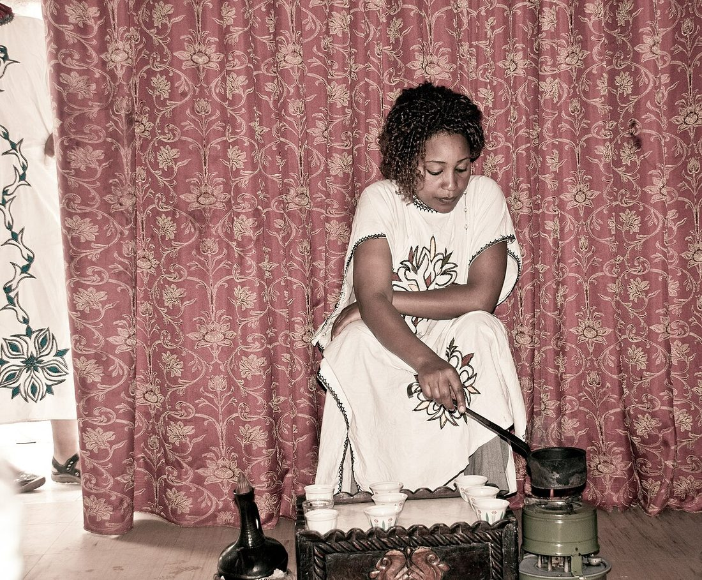
Cérémonie du café à Addis-Abeba. La jebena attend sur le côté, les petites tasses sont prêtes, et le grain grille dans la poêle au-dessus du réchaud.Photo : Irene2005 · CC BY 2.0 · Commons
2. Le Yémen invente la boisson
Traverse la mer Rouge. Sur l'autre rive, au XVe siècle, des confréries soufies se réunissent la nuit pour prier, chanter, répéter les noms de Dieu jusqu'à l'aube. Pour tenir, elles boivent une décoction sombre qui circule dans un grand pot, à la louche, de main en main. C'est la plus ancienne trace solide de la boisson qu'on appelle café. Le juriste Abd al-Qadir al-Jaziri, qui écrit en 1587 une défense du café, en attribue l'usage au cheikh al-Dhabhani, un mufti d'Aden mort vers 1470, qui aurait découvert ses vertus lors d'un voyage de l'autre côté de la mer.
Les soufis voulaient rester éveillés, comme toi le samedi à 7 h 30 avant l'ouverture. Le mot lui-même vient de l'arabe qahwa, un mot qui désignait d'abord une boisson qui coupe l'appétit, et qu'on employait aussi pour le vin. Il a donné kahve en turc, puis caffè, café, coffee.
Les terrasses
Le Yémen ne se contente pas de boire. Il plante. Dans les montagnes de l'ouest du pays, entre 1 500 et plus de 2 000 mètres, les paysans construisent des terrasses de pierre sèche accrochées aux pentes, où les caféiers poussent entre des murets, arrosés par les pluies de mousson et par des canaux. Les régions qui comptent encore aujourd'hui portent des noms que tu croiseras sur les sachets de spécialité : Haraz, Bani Matar, Hayma, Yafa'i.
Il y a peu d'eau. On ne lave pas le café, on fait sécher les cerises entières, souvent sur les toits des maisons, puis on les décortique. C'est le café nature tel qu'on le pratique depuis cinq siècles, et c'est pour ça que les Yémen ont souvent ce goût sauvage de fruits secs, d'épices et de vin (module 5).
Terrasses de culture dans les montagnes du Yémen. Les caféiers y poussent entre des murets de pierre sèche, à flanc de pente.Photo : Luai Al-Mamari · CC BY-SA 4.0 · Commons
La Mecque, 1511 : un procès contre le café
Le café descend vers La Mecque, Médine, Le Caire, Damas, porté par les pèlerins et les étudiants. Il sort des mosquées pour entrer dans des boutiques où l'on boit, on parle, on joue aux échecs, on écoute de la musique. Ça n'a pas plu à tout le monde. En 1511, à La Mecque, le gouverneur Khair Beg fait comparaître le café devant une assemblée de juristes et de médecins, qui le déclarent nuisible. On brûle des sacs dans les rues. Quelques mois plus tard, le sultan du Caire, dont dépend La Mecque, désavoue l'interdiction. Le schéma se répétera pendant deux siècles, d'Istanbul à Londres : une autorité s'inquiète de ces lieux où les gens parlent trop librement, interdit, puis renonce.
Moka, le port qui a donné un nom à un goût
Au XVIIe siècle, tout le café du monde, ou presque, part du Yémen. Les caravanes descendent des montagnes vers les ports de la côte, surtout al-Mokha, sur la mer Rouge, à quelques heures de navigation du détroit de Bab-el-Mandeb. Des marchands indiens, persans, égyptiens, turcs y achètent les sacs. Les compagnies des Indes hollandaise et anglaise y ouvrent des comptoirs. Une partie du café remonte vers Djeddah, Suez, Le Caire et Alexandrie, d'où les marchands vénitiens et marseillais l'emportent vers l'Europe.
Le nom du port est resté. « Moka » a d'abord désigné le café du Yémen, puis tout café réputé, puis une saveur chocolatée, et même une cafetière italienne et un gâteau. Le plus vieil assemblage connu porte encore son nom : le Moka-Java, qui mariait le café du Yémen et celui de Java.
Un monopole bien gardé
Les Yéménites savaient ce qu'ils tenaient. Pour garder la plante chez eux, ils ne vendaient que des graines qui ne germaient plus, ébouillantées ou débarrassées de leur parche et séchées. Un marchand pouvait repartir avec des tonnes de café, il ne pouvait pas le planter. La ruse a tenu jusqu'à la fin du XVIIe siècle, quand des graines fertiles ont fini par sortir du pays. On verra comment en section 4.
Un café, au sens du lieu, c'est une invention aussi forte que la boisson. Une salle ouverte à tous, où l'on paie une tasse et où l'on reste des heures, sans être invité chez personne. Avant ça, on buvait à la taverne, et à la taverne on buvait de l'alcool. Le café a donné aux villes un endroit pour parler sans s'enivrer. Ton comptoir descend en droite ligne de ces salles-là.
Istanbul, vers 1554
Selon le chroniqueur ottoman Peçevi, le premier café d'Istanbul ouvre vers 1554 dans le quartier de Tahtakale, tenu par deux marchands venus de Syrie, Hakam d'Alep et Shams de Damas. Peçevi décrit des salles où se retrouvent poètes, juges, lettrés, joueurs d'échecs et de trictrac, et où certains arrivent le matin pour repartir le soir. Le succès est immédiat. Les autorités s'inquiètent aussitôt, pour les mêmes raisons qu'à La Mecque : on y parle de politique, on y critique le pouvoir. Au XVIIe siècle, le sultan Murad IV fait fermer les cafés de la ville, avec une sévérité restée célèbre. Ils rouvrent après lui.
C'est à Istanbul que se fixe la préparation qu'on appelle encore café turc : un café moulu très fin, presque en poudre, chauffé avec l'eau et souvent le sucre dans une petite casserole à long manche, la cezve, et servi avec son marc dans une tasse sans filtre. L'Unesco a inscrit en 2013 la culture du café turc au patrimoine culturel immatériel. Quand un client te dit qu'il « boit son café comme sa grand-mère », c'est parfois ce café-là.
Une cezve en cuivre. Le café moulu très fin chauffe avec l'eau, et le marc reste dans la tasse : c'est la plus vieille façon d'extraire encore pratiquée tous les jours.Photo : Maderibeyza · CC BY-SA 3.0 · Commons
Venise, le premier port d'Europe
Les marchands vénitiens commercent depuis longtemps avec l'Empire ottoman et l'Égypte. Ce sont eux qui font entrer les premiers sacs en Europe, d'abord vendus comme un remède chez les apothicaires. La tradition place le premier café de Venise vers 1645. En 1720, Floriano Francesconi ouvre sous les arcades de la place Saint-Marc le café qui porte encore son prénom, le Florian. Venise compte alors des dizaines de cafés, et c'est par elle que l'Italie apprend le café, deux siècles avant d'inventer l'espresso.
Oxford et Londres : les universités à un penny
En Angleterre, le premier café ouvre à Oxford en 1650, tenu par un certain Jacob, à l'enseigne de l'Ange. Deux ans plus tard, à Londres, Pasqua Rosée, un domestique d'origine levantine ramené de Smyrne par un marchand anglais, ouvre une échoppe dans St Michael's Alley, près de la Bourse. Cinquante ans plus tard, la ville compte des centaines de coffee houses. On les surnomme les « universités à un penny » : pour le prix d'une tasse, on lit les gazettes, on écoute les débats, on croise des savants et des négociants.
Chaque café a sa clientèle. Les marchands de tel quartier, les écrivains dans tel autre, les armateurs et les assureurs maritimes chez Edward Lloyd, dont le café ouvert vers 1688 donnera naissance au Lloyd's de Londres, le marché de l'assurance. Le pouvoir s'en méfie. Fin 1675, le roi Charles II signe une proclamation pour supprimer les coffee houses, accusés de répandre de fausses nouvelles. Le tollé est tel que le texte est retiré avant même d'entrer en vigueur.
Pour le prix d'une tasse, on lisait les gazettes et on écoutait les débats. Ton client qui ouvre son ordinateur à 9 h ne fait pas autre chose.
Marseille, puis Paris
En France, tout passe d'abord par Marseille, le grand port du commerce avec le Levant. Un marchand marseillais, Pierre de La Roque, rapporte de Constantinople en 1644 du café et les ustensiles pour le préparer, et le café se boit d'abord entre négociants qui ont vécu en Orient. Le premier café public de Marseille ouvre en 1671.
À Paris, le déclic est mondain. En 1669, l'envoyé du sultan ottoman auprès de Louis XIV, Soliman Aga, reçoit la bonne société dans sa résidence et y fait servir du café à la turque, par des serviteurs en costume, dans des tasses de porcelaine. Tout Paris veut y goûter. En 1672, un Arménien prénommé Pascal vend du café à la foire Saint-Germain, puis ouvre une boutique. Mais celui qui fixe le modèle s'appelle Francesco Procopio dei Coltelli, un Sicilien. En 1686, il ouvre rue des Fossés-Saint-Germain une salle décorée de miroirs et de lustres, où l'on sert du café, des sorbets, des liqueurs et des confitures. En 1689, la Comédie-Française s'installe juste en face, et la rue prendra plus tard le nom de rue de l'Ancienne-Comédie. Comédiens, auteurs et spectateurs remplissent le Procope avant et après les représentations.
Le Procope existe toujours, aujourd'hui comme restaurant. La tradition y fait passer Voltaire, Diderot, d'Alembert et les auteurs de l'Encyclopédie, puis les révolutionnaires. Un autre café de la rive droite a sa place dans l'histoire : le 12 juillet 1789, au Palais-Royal, devant le café de Foy, Camille Desmoulins monte sur une table et appelle la foule à prendre les armes. Deux jours plus tard, la Bastille tombe.
Vienne, Leipzig, et les légendes
Vienne raconte qu'après le siège turc de 1683, un certain Kolschitzky aurait récupéré les sacs de café abandonnés par l'armée ottomane et ouvert le premier café de la ville. Les historiens ont démonté le récit depuis longtemps. Plus solide, la cantate du café de Jean-Sébastien Bach, écrite vers 1734 et jouée au café Zimmermann de Leipzig, met en scène un père qui menace sa fille de ne pas la marier si elle ne renonce pas au café. Elle refuse. Le café est entré dans la culture bourgeoise allemande.
Partout le mécanisme est le même. Dans une Europe qui boit de la bière et du vin à tous les repas, y compris le matin, ce « vin d'Arabie » stimule au lieu d'enivrer.
Comment un arbuste du Yémen a fini par pousser sur toute la ceinture tropicale.
Tant que le Yémen garde les graines fertiles, l'Europe paie le prix qu'il fixe. Toute la suite de l'histoire, c'est la course pour sortir des plants vivants d'Arabie et les faire pousser ailleurs. Elle se joue en un peu plus d'un demi-siècle, avec des pèlerins, des marchands hollandais, des botanistes, un roi, et quelques officiers de marine.
Sept graines dans une barbe
La tradition indienne raconte qu'un pèlerin soufi, Baba Budan, rapporte de La Mecque, vers 1670, sept graines de café de Moka, cachées dans sa barbe ou dans sa ceinture selon les versions. Il les plante dans les collines de Chikmagalur, dans l'actuel Karnataka, au sud-ouest de l'Inde. Les collines portent aujourd'hui son nom, et le café indien est né là. Le chiffre sept et la barbe tiennent de la légende. Que des graines fertiles soient sorties du Yémen à cette époque par la route du pèlerinage, ça, personne ne le conteste.
Java, la colonie du café
Les Hollandais de la Compagnie des Indes orientales (la VOC) ont mieux que des pèlerins : des navires, des comptoirs et des colonies. Ils se procurent des plants sur la côte de Malabar, en Inde, et les installent à Java en 1696. Une crue détruit la première plantation, ils recommencent en 1699, et cette fois ça prend. Dès 1711, le café de Java est vendu à Amsterdam. Le monopole yéménite est cassé. Le café de Java devient si courant que « java » est resté, en anglais américain, un mot familier pour dire café.
En 1706, un caféier de Java est envoyé au jardin botanique d'Amsterdam. Il pousse en serre, fleurit, donne des graines. Ce plant et ses descendants vont peupler une bonne partie du monde. Quand tu lis « Typica » sur une fiche, tu lis le nom de cette lignée-là (module 3).
Un plant pour le roi
En 1714, la ville d'Amsterdam offre à Louis XIV un jeune caféier issu de ce plant. On l'installe au Jardin du Roi, l'actuel Jardin des Plantes, dans une serre chauffée. Les botanistes royaux le soignent comme une pièce rare, et ses graines servent à faire de nouveaux plants. Les Français ont désormais leur souche, et des colonies où la planter.
De Clieu et sa ration d'eau
La scène la plus racontée de toute l'histoire du café se passe sur un navire. Gabriel de Clieu, officier de marine en poste à la Martinique, obtient un jeune plant issu du caféier du Jardin du Roi et l'emporte vers les Antilles, entre 1720 et 1723 selon les sources. Dans le récit qu'il en a fait plus tard, la traversée tourne mal : calme plat, eau rationnée, un passager jaloux qui tente d'arracher une branche. De Clieu partage sa ration d'eau avec le plant pour le garder en vie. L'arbuste arrive, il est planté, et il donne. C'est lui, raconte-t-il, qui est à l'origine du café de la Martinique, puis de celui de Saint-Domingue et de la Guadeloupe.
On ne peut pas tout vérifier dans ce récit, écrit par l'intéressé, et les plants ont sans doute fait le voyage plusieurs fois. Ce qui est sûr, c'est que la Martinique produit du café dans les années 1720, et qu'en quelques décennies les Antilles françaises en exportent des quantités énormes.
Bourbon, l'autre lignée
Pendant ce temps, à l'autre bout du monde, la Compagnie française des Indes essaie à son tour. Entre 1708 et 1718, elle envoie à plusieurs reprises des caféiers de Moka sur l'île Bourbon, l'actuelle Réunion, dans l'océan Indien. Quelques plants survivent. Leurs descendants forment une deuxième lignée, plus productive que le Typica, qu'on appelle Bourbon (module 3). Une mutation apparue sur l'île donnera aussi le Bourbon Pointu, ou Laurina, un caféier à port pointu et naturellement pauvre en caféine. La lignée Bourbon gagnera l'Amérique latine et l'Afrique de l'Est au XIXe siècle.
Le Brésil, par une frontière
Les Hollandais plantent au Suriname vers 1718, et le café passe en Guyane française. En 1727, le Portugais Francisco de Melo Palheta est envoyé de l'État du Grand-Pará en Guyane, officiellement pour régler un litige de frontière. Il revient avec des graines et des plants. La légende veut que la femme du gouverneur de Cayenne les lui ait offerts cachés dans un bouquet, au moment du départ. Le bouquet relève du roman. Les graines, elles, ont bien pris racine dans le nord du Brésil, qui deviendra en un siècle le premier producteur du monde.
Figure 1.2. Le voyage des plants, en schéma (les positions ne sont pas géographiques). Deux chemins seulement, partis tous deux du Yémen, fondent presque tout l'arabica cultivé hors d'Éthiopie : la lignée Typica, passée par l'Inde, Java et Amsterdam, et la lignée Bourbon, passée par La Réunion.
Le café des Lumières, cultivé par des gens qui n'en buvaient pas.
Au XVIIIe siècle, le café change de nature. Il cesse d'être la culture de jardins yéménites pour devenir un produit de plantation coloniale, sur le modèle du sucre : de grands domaines, une seule culture, de la main-d'œuvre forcée, et toute la récolte expédiée vers l'Europe. Dans les Antilles comme au Brésil, cette main-d'œuvre, ce sont des Africains déportés et réduits en esclavage. Il faut le dire quand on raconte l'histoire du café, sans en faire un sermon. C'est un fait, et il explique la géographie du café d'aujourd'hui.
Saint-Domingue, premier producteur du monde
La colonie française de Saint-Domingue, l'actuelle Haïti, se couvre de caféières dans les mornes, les hauteurs de l'intérieur, pendant que le sucre occupe les plaines. À la veille de 1789, l'île fournit environ la moitié du café consommé en Europe, davantage selon certains historiens. On y compte près de trois mille caféières, travaillées par des esclaves. Le café que les philosophes boivent au Procope vient pour une bonne part de là. Les ports de Bordeaux, de Nantes et du Havre s'enrichissent de ce commerce.
En 1791, les esclaves de Saint-Domingue se soulèvent. Après treize ans de guerre, Haïti proclame son indépendance en 1804, première république fondée par d'anciens esclaves. Les grandes caféières disparaissent, la production s'effondre, et le marché mondial cherche un nouveau fournisseur. Il le trouve au Brésil.
Le siècle brésilien
Au début du XIXe siècle, le café brésilien se développe dans la vallée du Paraíba, autour de Rio de Janeiro. On abat la forêt atlantique, on plante sur les pentes défrichées, on épuise le sol en vingt ou trente ans, puis on avance vers de nouvelles terres. Les fazendas sont immenses et vivent du travail de centaines d'esclaves chacune. Le Brésil a été la plus grande destination de la traite atlantique : environ 4 à 5 millions de personnes y ont été déportées en trois siècles, pour le sucre, l'or, puis le café. La traite est interdite en 1850, mais l'esclavage, lui, dure jusqu'à la loi d'abolition du 13 mai 1888. Le Brésil est le dernier pays des Amériques à l'abolir.
Ensuite, le front du café file vers l'ouest de l'État de São Paulo, sur les terres rouges très fertiles qu'on appelle terra roxa. Les planteurs font venir des centaines de milliers d'immigrants européens, surtout italiens, qu'on loge sur les domaines et qu'on paie en partie en droit de cultiver leurs propres vivres entre les rangs. Les chemins de fer descendent les sacs vers le port de Santos. Vers 1900, le Brésil fournit près des trois quarts du café du monde. Le nom de Santos sur une étiquette a longtemps voulu dire « café du Brésil ».
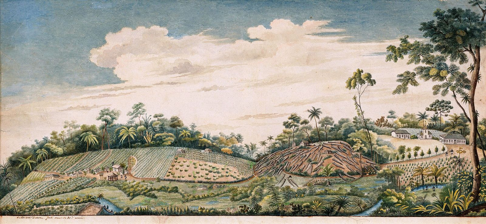
La Fazenda Pombal, dans la colonie Leopoldina, au sud de l'État de Bahia, peinte par Jean-Frédéric Bosset de Luze au XIXe siècle. Les caféiers couvrent les collines défrichées. Comme presque toutes les caféières brésiliennes de l'époque, ces domaines tournaient avec le travail d'esclaves.Photo : Jean-Frédéric Bosset de Luze · Public domain · Commons
Le Brésil est devenu si gros qu'il a fini par faire lui-même le prix mondial. En 1906, au moment d'une récolte énorme, les États producteurs signent la convention de Taubaté : l'État achète les excédents pour les retirer du marché et soutenir les cours. C'est la première grande intervention publique sur le prix du café. Pendant la crise des années 1930, le gouvernement va plus loin. De 1931 à 1944, il fait détruire environ 78 millions de sacs, brûlés, jetés à la mer ou utilisés comme combustible dans les locomotives, pour ne pas laisser les prix s'effondrer davantage. Pour te donner l'échelle, c'est plus que toute la production brésilienne d'une très bonne année actuelle.
L'Amérique centrale, la Colombie et les charrettes
Le Costa Rica est le premier pays d'Amérique centrale à vivre du café, dès les premières décennies du XIXe siècle. Les familles du plateau central cultivent de petites parcelles, et des charrettes à bœufs descendent les sacs vers le port de Puntarenas, sur le Pacifique, par des chemins de montagne. Au Guatemala et au Salvador, l'essor vient surtout après 1870, au prix de l'expropriation des terres communales des populations indigènes et du travail forcé imposé par des lois sur le vagabondage. Le même café de montagne qui fait aujourd'hui la réputation de Huehuetenango ou d'Antigua a cette histoire-là derrière lui.
La Colombie, elle, arrive plus tard et autrement. Le café y devient une affaire de petites et moyennes fermes de colons qui défrichent les pentes des Andes, dans ce qu'on appellera l'axe caféier, autour de Manizales, Pereira et Armenia. En 1927, les producteurs fondent la Fédération nationale des caféiers (FNC), qui organise l'achat, la recherche et la promotion. En 1958, elle crée le personnage de Juan Valdez, le paysan à la mule, pour vendre « le café de Colombie » aux États-Unis. C'est un des premiers cas où un pays producteur fait de son origine une marque.
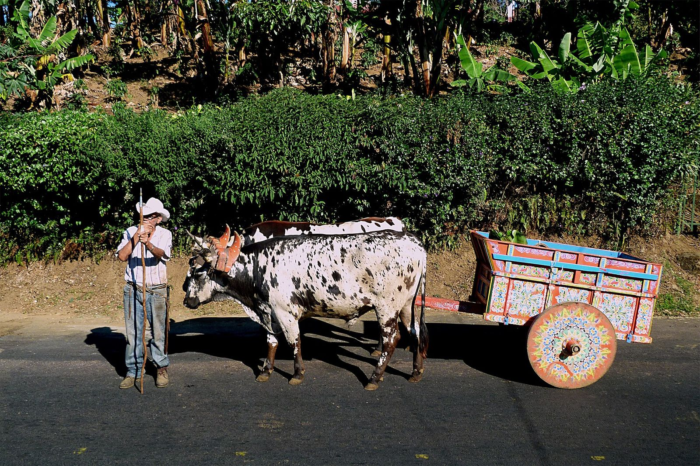
Une charrette peinte tirée par des bœufs, près du volcan Poás, au Costa Rica. Ces charrettes ont descendu le café vers la côte pendant tout le XIXe siècle, et l'Unesco a reconnu leur tradition en 2005.Photo : Wayne77 · CC BY-SA 4.0 · Commons
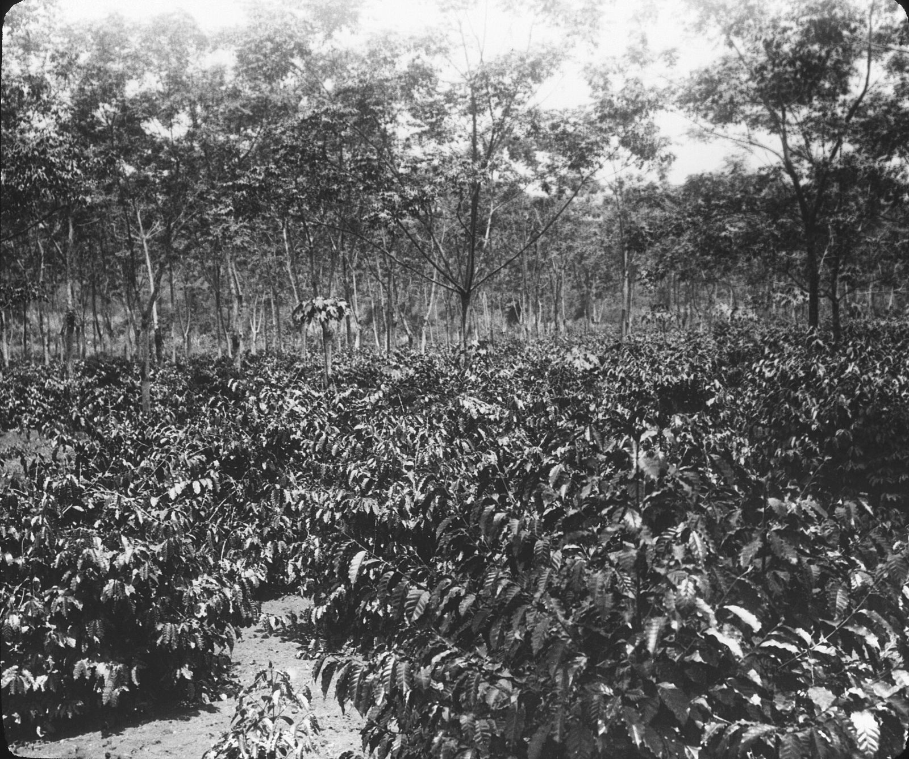
Caféiers du domaine de Dong-Grao, en Indochine, sur une photo de l'époque coloniale conservée par la Bibliothèque nationale de France. Les Français ont introduit le café au Vietnam au XIXe siècle.Photo : auteur non renseigné · Public domain · Commons
Asie et Afrique : la rouille rebat les cartes
En 1869, un champignon apparaît sur les caféiers de Ceylan, l'actuel Sri Lanka, alors grand producteur britannique : la rouille orangée, Hemileia vastatrix. En une quinzaine d'années, elle ruine les plantations. Les planteurs arrachent les caféiers et plantent du thé. C'est pour ça qu'on dit « thé de Ceylan » et pas « café de Ceylan ». La rouille gagne Java et le reste de l'Asie. Les Hollandais essaient le liberica, plus résistant, puis adoptent au début du XXe siècle une espèce venue du bassin du Congo, plus robuste, plus productive, qui supporte la chaleur des plaines : Coffea canephora, qu'on vendra sous le nom de robusta.
Ce changement a des effets jusqu'à aujourd'hui. Le robusta s'installe en Indonésie, en Inde, dans les colonies françaises d'Afrique (Côte d'Ivoire, Cameroun, Madagascar), puis au Vietnam. Le « petit noir » des cafés français du XXe siècle, très torréfié et amer, devait beaucoup à ce robusta colonial. L'Afrique de l'Est, elle, plante de l'arabica en altitude, en Tanzanie, en Ouganda sur les pentes du mont Elgon, et au Kenya, où des missionnaires français apportent des plants Bourbon à la fin du XIXe siècle.
6. Le XXe siècle : une matière première comme une autre
Au XXe siècle, le café devient ce qu'on appelle en économie une commodité : un produit standardisé, échangé en grandes quantités, coté en bourse, dont l'acheteur final ignore à peu près tout de l'origine. Le café du supermarché de 1970 vient « du Brésil » ou « d'Afrique », au mieux. Pour comprendre ce que le café de spécialité a voulu changer, il faut voir comment ce café-là fonctionnait.
La boîte, le soluble, la moka et l'espresso
Trois inventions font du café une boisson de tous les jours. La première est l'emballage. Au début du siècle, des torréfacteurs américains mettent le café moulu en boîte sous vide, ce qui permet de le vendre partout, longtemps après la torréfaction. Les grandes marques nationales naissent de là. La deuxième est le soluble. En 1938, Nestlé lance le Nescafé, mis au point à la demande du Brésil qui cherchait un débouché à ses excédents. La guerre fait le reste : le soluble part dans les rations des soldats américains. La troisième est italienne. En 1933, Alfonso Bialetti commercialise la cafetière moka en aluminium, qui va entrer dans presque toutes les cuisines du pays. Après la guerre, les machines à levier de Gaggia font sortir des tasses couvertes d'une mousse dorée, la crema, et le bar à espresso milanais devient un modèle (module 11).
En France, le café du XXe siècle se boit au comptoir du bistrot, serré, très torréfié, souvent riche en robusta venu des colonies africaines. C'est le « petit noir ». Il était fait pour un café bon marché et régulier, qui devait tenir le choc d'une torréfaction poussée. Beaucoup de tes clients ont grandi avec ce goût-là, et c'est leur référence quand ils trouvent ton espresso « acide ».
Le cycle qui rend fou
Un caféier met trois à quatre ans à donner une vraie récolte, et il produit ensuite pendant des décennies. L'offre réagit donc aux prix avec retard, et ce retard fabrique des cycles.
Année 0Prix hautsUne gelée au Brésil ou une sécheresse réduit la récolte, les cours montent.
Années 1 à 2On plantePartout, les producteurs replantent et en ajoutent, puisque le café paie.
Années 3 à 5La vague arriveLes nouveaux arbres entrent en production en même temps, les stocks gonflent.
EnsuitePrix basLes cours s'effondrent, souvent sous le coût de production. On abandonne les fermes, on arrache, on n'engraisse plus.
Au prochain accidentOn recommenceMoins d'arbres soignés, une récolte ratée suffit à faire repartir les prix.
Le Brésil, qui pèse si lourd, est le grand déclencheur de ces cycles. La « gelée noire » de juillet 1975 dans le Paraná et São Paulo a brûlé des centaines de millions de caféiers en une nuit, et l'arabica a atteint en 1977 un sommet autour de 3,40 $ la livre, un record qui a tenu près d'un demi-siècle, jusqu'en décembre 2024.
L'Accord international et les quotas (1962-1989)
Pour sortir de ces montagnes russes, pays producteurs et consommateurs signent en 1962 l'Accord international du café, administré à partir de 1963 par l'Organisation internationale du café (ICO), installée à Londres. On fixe une fourchette de prix, et chaque pays exportateur reçoit un quota de vente, qu'on resserre quand les prix baissent et qu'on relâche quand ils montent. Les pays consommateurs acceptent d'acheter dans ce cadre. La guerre froide n'est pas étrangère à l'affaire : les États-Unis tiennent à la stabilité des pays d'Amérique latine.
Le système tient, avec des interruptions, pendant un quart de siècle. Le 4 juillet 1989, les membres, divisés sur le partage des quotas et sur le café vendu hors accord, suspendent les clauses économiques. Le prix indicateur moyen passe d'environ 1,34 $ la livre sur les cinq années précédentes à 0,77 $ sur les cinq suivantes. Pour des millions de familles, le revenu du café est presque divisé par deux du jour au lendemain. L'ICO existe toujours, comme lieu d'études et de statistiques, mais sans quotas.
Sacs de café vert en jute. Leur poids varie de 60 à 70 kg selon les pays, mais toutes les statistiques comptent en sacs de 60 kg.Photo : Downtowngal · Public domain · Commons
Le Vietnam, et la crise de 2001
Au Vietnam, le café introduit par les Français est longtemps resté modeste. Après 1986 et la politique d'ouverture du Doi Moi, l'État encourage la culture du robusta sur les hauts plateaux du centre, autour de Buon Ma Thuot. En une quinzaine d'années, le pays devient le deuxième producteur mondial. Avec de grosses récoltes brésiliennes au même moment, l'offre déborde. C'est la « crise du café » de 2001-2003 : les cours tombent sous 50 cents la livre, bien en dessous des coûts de production de la plupart des fermes du monde. En Amérique centrale, des familles abandonnent leurs terres et partent vers les villes ou les États-Unis. L'ONG Oxfam publie en 2002 un rapport au titre parlant, Mugged, sur la pauvreté dans la tasse de café.
Deux réponses naissent ou grandissent pendant ces années de prix bas. La première passe par les labels, dont le commerce équitable, apparu aux Pays-Bas en 1988 avec Max Havelaar, et qui garantit un prix minimum (le module 6 détaille ce que valent ces labels aujourd'hui). La seconde, c'est le café de spécialité : vendre un café différent, à un prix qui ne dépend plus seulement de la bourse.
En 2002, une torréfactrice américaine, Trish Rothgeb, qui signait alors Trish Skeie, publie un article dans la lettre de la Roasters Guild, The Flamekeeper. Elle y découpe l'histoire récente du café en trois « vagues ». L'image est très américaine et les vagues se chevauchent, mais elle s'est imposée. Quand un client te parle de « troisième vague », il parle de ça.
Le café pour tous (fin XIXe siècle - années 1960)
Café moulu en boîte, grandes marques, soluble, cafetière électrique. L'objectif est d'en mettre partout, régulier et pas cher. L'origine ne compte pas, sauf comme argument publicitaire vague (« pur arabica », « café des montagnes »). En France, c'est le café en paquet du supermarché et le petit noir du bistrot.
torréfié foncé
cacao amer
bois
Le coffee shop (années 1960 - 1990)
Elle commence avec Alfred Peet, un Néerlandais installé à Berkeley, qui ouvre Peet's Coffee en 1966 et vend du café fraîchement torréfié, plus foncé et plus corsé que celui des boîtes. Starbucks ouvre à Seattle en 1971 comme marchand de grains, puis devient à la fin des années 1980 une chaîne de bars à espresso inspirée de Milan. La deuxième vague invente le coffee shop moderne : latte, cappuccino, gobelet à emporter, fauteuils, wifi plus tard. L'origine apparaît sur les sacs, mais la torréfaction reste foncée et le lait domine.
caramel
chocolat
torréfaction marquée
Le café comme un vin (fin des années 1990 - aujourd'hui)
Des torréfacteurs comme Intelligentsia à Chicago, Stumptown à Portland ou Counter Culture en Caroline du Nord, et toute une scène dans les pays nordiques, traitent le café comme un produit de terroir. Une seule origine, souvent une seule ferme, la variété et le process sur l'étiquette. Torréfaction plus claire, pour laisser parler le grain. Achat direct au producteur, à un prix négocié. Méthodes douces, balance, minuteur. Le barista devient un artisan, et on le juge en concours.
jasmin
bergamote
fruits rouges
thé
Une quatrième vague ?
Certains parlent d'une quatrième vague, fondée sur la science de l'extraction, les données, l'eau, l'automatisation (moulins à dose unique, machines connectées, recettes mesurées au réfractomètre). D'autres l'appliquent aux fermentations pilotées des producteurs (module 5). Le terme reste flou et discuté. Retiens surtout que la frontière entre deuxième et troisième vague s'est brouillée : des chaînes vendent des origines uniques, et des coffee shops de spécialité servent surtout des boissons au lait.
Erna Knutsen et le mot « spécialité »
L'expression specialty coffee vient d'une femme, Erna Knutsen, une Norvégienne émigrée aux États-Unis devenue importatrice de café vert à San Francisco. En 1974, dans un entretien au Tea & Coffee Trade Journal, elle parle de « specialty coffees » pour désigner des cafés venus de microclimats particuliers, qu'elle achetait par petits lots et revendait à de petits torréfacteurs. À l'époque, les grands importateurs ne s'intéressaient qu'aux volumes. Elle a passé sa vie à prouver qu'un sac de café pouvait avoir une identité.
Le mouvement se structure ensuite. La SCAA (Specialty Coffee Association of America) naît aux États-Unis en 1982, la SCAE (son équivalent européen) à Londres en 1998, et les deux fusionnent en janvier 2017 dans la Specialty Coffee Association, la SCA. Sa définition pratique est chiffrée : un café vert presque sans défauts, noté au moins 80 sur 100 au protocole de dégustation de l'association (module 13). En 2021, la SCA a proposé une définition plus large : un café, ou une expérience de café, reconnu pour des attributs distinctifs qui lui donnent une valeur supplémentaire significative sur le marché. Le goût compte, mais la traçabilité, l'histoire du lot et le service aussi.
Les institutions qui ont tout changé
En 1999, au Brésil, un concours d'un genre nouveau classe les meilleurs lots du pays, notés à l'aveugle par un jury international, puis les met aux enchères sur internet : c'est la première Cup of Excellence. Pour la première fois, un petit producteur dont le café sort premier voit son nom publié et son lot vendu plusieurs fois le prix du marché. Le concours s'étend ensuite à une dizaine de pays. En 2000, le premier championnat du monde des baristas (WBC) se tient à Monte-Carlo, gagné par le Norvégien Robert Thoresen. En 2004, le Coffee Quality Institute crée le diplôme de Q Grader, qui certifie les dégustateurs capables de noter un café selon le protocole commun.
Ces trois institutions ont rendu la qualité visible et payée. Un tri plus sévère peut désormais rapporter de l'argent à un producteur, à condition que quelqu'un le goûte et le dise.
Les trois vagues, côte à côte
Première
Deuxième
Troisième
Ce qu'on vend
du café, une marque
une boisson et un lieu
une origine, un producteur
Torréfaction
foncée, régulière
foncée, « italienne »
claire à moyenne
Boisson phare
café filtre, soluble, petit noir
latte, cappuccino
filtre à la main, espresso d'origine
Étiquette
marque, « pur arabica »
pays, nom d'assemblage
ferme, variété, process, altitude, date de torréfaction
Paris a longtemps été une ville de cafés où l'on buvait mal le café. Le bistrot vendait un lieu, une terrasse, un comptoir, et le grain venait de gros torréfacteurs industriels. La spécialité y arrive tard, par petites touches. En 2005, Gloria Montenegro, venue du Guatemala, ouvre La Caféothèque, près de l'Hôtel de Ville, à la fois torréfacteur, bar et lieu de formation. Au début des années 2010, une poignée d'adresses change le paysage : Coutume ouvre en 2011 rue de Babylone, Télescope ouvre à peu près au même moment près de l'Opéra, lancé notamment par David Flynn. En 2013, David Flynn et Thomas Lehoux, déjà derrière le coffee shop Ten Belles, créent la Belleville Brûlerie, une des premières micro-torréfactions de spécialité de la ville.
Ces adresses ont formé des baristas, ouvert des concours, habitué une clientèle à payer un filtre plus cher qu'un express de bistrot. Ïota, ton torréfacteur, s'inscrit dans cette scène parisienne de spécialité. Pour son histoire et ses choix d'achat, demande-leur directement ou lis la fiche d'Ïota, et n'invente rien au client.
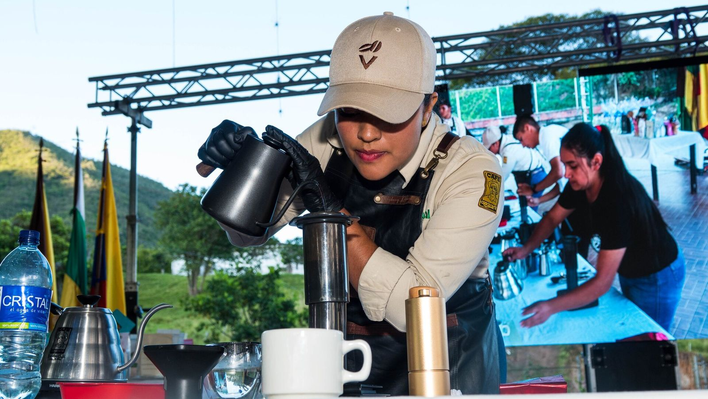
Préparation au filtre pendant la foire Café Origen d'Acevedo, dans le Huila, en Colombie, en 2023. La spécialité se goûte aussi dans les régions qui la produisent, de plus en plus.Photo : Acevedopoder67 · CC BY-SA 4.0 · Commons
8. La ceinture du café et les chiffres du monde
Prends un globe et trace deux lignes, à peu près au niveau du tropique du Cancer et un peu sous celui du Capricorne. Entre les deux, une bande d'environ 25° de latitude nord à 30° de latitude sud : c'est la ceinture du café. Environ 70 pays y en produisent. Au-delà, le gel tue le caféier ou la saison froide l'empêche de fructifier correctement. À l'intérieur, c'est l'altitude qui décide, parce que l'air perd environ 0,6 °C tous les 100 mètres.
L'arabica aime une moyenne annuelle autour de 18 à 21 °C. Près de l'équateur, il faut donc monter pour la trouver : 1 200 à 2 200 mètres en Éthiopie, au Kenya ou en Colombie. Plus loin de l'équateur, on peut descendre : au Brésil, beaucoup de caféières sont entre 800 et 1 300 mètres. Le robusta, qui supporte mieux la chaleur, occupe les plaines et les basses collines, du niveau de la mer à 800 mètres environ. La fraîcheur des hauteurs ralentit la maturation des cerises et donne des grains plus denses, plus riches en acides et en sucres. C'est pour ça que l'altitude figure sur les sachets de spécialité (modules 4 et 14).
Figure 1.3. La ceinture du café, entre environ 25° N et 30° S. Parts de la production par grande région calculées d'après les estimations de l'USDA pour 2025/26, arrondies. C'est un schéma : les positions ne sont pas géographiques.
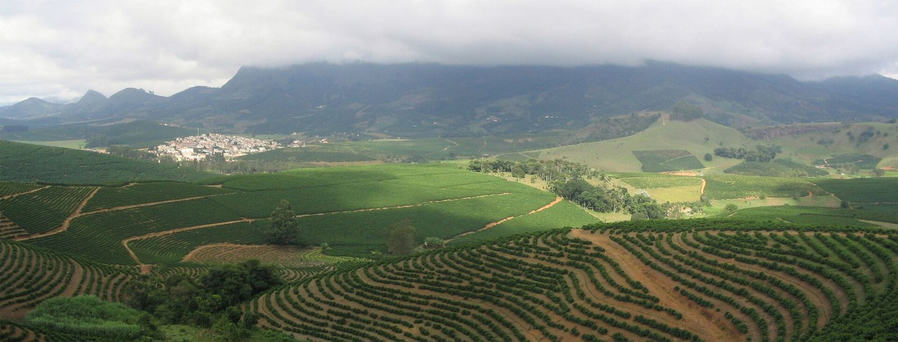
Caféiers plantés en courbes de niveau sur des collines. Sur les grandes exploitations, les rangs suivent le relief pour limiter l'érosion et laisser passer les machines.Photo : auteur non renseigné · CC BY-SA 3.0 · Commons
Qui produit
Selon le département américain de l'Agriculture (USDA), la campagne 2025/26 a produit environ 178,8 millions de sacs de 60 kg, soit près de 10,7 millions de tonnes de café vert. Le Brésil en fournit environ 35 % et le Vietnam près de 18 %. À eux deux, plus de la moitié du café du monde. Pour 2026/27, l'USDA prévoit un record de 189,7 millions de sacs, dont 71,9 millions au Brésil.
L'arabica représente 53 à 58 % de la production selon les campagnes récentes, le robusta 42 à 47 %. La part du robusta a beaucoup progressé depuis les années 1990, avec le Vietnam et le conilon, le robusta brésilien de l'Espírito Santo et du Rondônia. Le Brésil est à la fois le premier producteur d'arabica du monde et le deuxième de robusta. Retiens aussi que l'ICO publie ses propres estimations, un peu différentes : quand tu cites un chiffre, cite la source et la campagne, parce qu'une campagne de café ne correspond pas à une année civile.
Figure 1.4. Les dix premiers pays producteurs en 2025/26, en millions de sacs de 60 kg, avec la part d'arabica (vert) et de robusta (brun). Source : USDA FAS, Coffee: World Markets and Trade, juillet 2026. Les chiffres de l'ICO diffèrent légèrement.
Regarde bien le graphique, il dit des choses qu'on oublie. La Colombie, que tout le monde cite en premier, n'est que troisième, au coude à coude avec l'Indonésie. L'Éthiopie, cinquième, produit à elle seule davantage que toute l'Amérique centrale réunie hors Honduras. Le Kenya, si présent dans les coffee shops de spécialité, produit moins d'un million de sacs. La réputation en spécialité et le poids dans le commerce mondial sont deux classements qui n'ont presque rien à voir.
Qui cultive
Ce café vient surtout de petites fermes. L'ONG Enveritas, qui a mené plus de 20 000 entretiens dans une vingtaine de pays, compte environ 12,5 millions de fermes caféières, dont 95 % de 5 hectares ou moins. Le chiffre de 25 millions de producteurs, que tu liras souvent, serait surestimé. Selon Fairtrade, quelque 125 millions de personnes vivent du café, en comptant les familles, les cueilleurs et les ouvriers des stations. Une ferme éthiopienne typique, c'est un demi-hectare à un ou deux hectares de jardin, quelques centaines ou milliers de pieds. Une grande fazenda du Cerrado brésilien, c'est des centaines ou des milliers d'hectares récoltés à la machine. Les deux vendent du « café », et rien n'est comparable dans leur façon de travailler.
Amériques, ≈ 55 %
Le Brésil, géant mécanisé, puis la Colombie, l'Amérique centrale, le Pérou, le Mexique. Surtout de l'arabica lavé en Amérique centrale et en Colombie, beaucoup de nature et de pulped natural au Brésil, et du conilon au Brésil.
chocolat
caramel
pomme rouge
orange
Afrique, ≈ 13 %
L'Éthiopie, berceau de l'arabica, l'Ouganda (surtout du robusta), le Kenya, la Tanzanie, le Rwanda, le Burundi. Peu de volume, une grosse part de la spécialité, souvent des lavés de station.
jasmin
bergamote
cassis
myrtille
Asie-Pacifique, ≈ 32 %
Le Vietnam (robusta à plus de 95 %), l'Indonésie, l'Inde, la Chine (Yunnan), la Papouasie-Nouvelle-Guinée. Beaucoup de robusta, des arabicas d'altitude à Sumatra, à Java, au Yunnan.
terre
épices
cacao
cèdre
Quand on récolte
Entre la cueillette et le sachet, compte en général quatre à huit mois : séchage, repos, tri, vente, transport, dédouanement, torréfaction. Les dates ci-dessous sont des repères, chaque région et chaque altitude décale un peu le calendrier.
Calendrier des principales récoltes (repères généraux)
Origine
Récolte principale
Particularité
Nouvelle récolte en Europe, à peu près
Brésil
mai à septembre
saison sèche, beaucoup de récolte mécanique
fin d'année et hiver
Colombie
selon les régions, deux récoltes par an
récolte principale et petite récolte, la mitaca
presque toute l'année
Amérique centrale
novembre à mars
les zones hautes récoltent plus tard
printemps et été
Éthiopie
octobre à janvier
stations de lavage et lits africains
printemps et été
Kenya
octobre à décembre
une seconde récolte plus petite au printemps
printemps et été
Rwanda, Burundi
mars à juin
stations de lavage collectives
automne et hiver
Vietnam
octobre à janvier
robusta des hauts plateaux
dès l'hiver
Ça t'explique pourquoi un café disparaît de la gamme à certaines périodes. Le café vert vieillit (module 6). Un torréfacteur sérieux change de lot plutôt que de vendre un café fatigué.
Qui boit
La consommation mondiale atteint environ 173,5 millions de sacs en 2025/26 selon l'USDA. L'Union européenne reste de loin le premier marché, devant les États-Unis et le Brésil, qui boit environ un tiers de sa propre récolte. Les pays producteurs boivent de plus en plus leur propre café, et la Chine, petite consommatrice il y a quinze ans, figure désormais parmi les six premiers marchés.
Les six premiers marchés de consommation en 2025/26 (estimations USDA, juillet 2026)
Marché
Millions de sacs de 60 kg
Part du total mondial
Union européenne
41,6
24 %
États-Unis
25,6
15 %
Brésil
22,3
13 %
Japon
6,7
4 %
Philippines
6,5
4 %
Chine
6,4
4 %
Monde
173,5
100 %
Par habitant, les pays nordiques dominent, avec environ 10 à 12 kg de café vert par personne et par an en Finlande ou en Norvège, contre 5 à 6 kg en France. Ces estimations varient selon les sources. Fais le calcul pour la France : 5,5 kg de vert font environ 4,6 kg de café torréfié, soit à 8 g la tasse un peu moins de 600 tasses par an, autour d'une tasse et demie par jour et par habitant, bébés compris.
Entre l'arbre et ton moulin, le café change plusieurs fois de mains et quatre fois de forme : cerise, parche, café vert, grain torréfié. Il perd du poids à chaque étape. Il faut 5 à 6 kg de cerises pour faire 1 kg de café vert, et environ 1,2 kg de vert pour faire 1 kg de torréfié, puisque la torréfaction lui fait perdre 15 à 20 % de son poids. Les 18 g de ton espresso, c'est donc à peu près 22 g de vert et 60 à 80 cerises, cueillies une à une.
Le producteur cultive, cueille, et vend ses cerises le jour même. S'il est équipé, il les transforme lui-même et vend du café parche ou du café vert, plus cher.
Le collecteur ou la station de lavage achète les cerises, souvent de centaines de familles, et les transforme en parche (module 5). Beaucoup de stations appartiennent à des coopératives, d'autres à des entreprises privées.
Le moulin sec et l'exportateur retirent la parche, trient, calibrent, mettent en sacs, préparent les échantillons, et vendent sous contrat à un importateur (module 6).
Le transport part d'un port : Santos pour le Brésil, Mombasa pour le Kenya, Djibouti pour l'Éthiopie, qui n'a pas d'accès à la mer. Un conteneur de 20 pieds porte environ 300 sacs, une vingtaine de tonnes, et met plusieurs semaines à rejoindre l'Europe.
L'importateur préfinance souvent la récolte, prend le risque du transport, dédouane et stocke, au Havre, à Anvers ou à Hambourg. Il envoie des échantillons aux torréfacteurs et leur vend des sacs à l'unité.
Le torréfacteur goûte, choisit, achète, torréfie, emballe, livre, et explique. C'est lui qui transforme une matière première en produit fini.
Le coffee shop moud, extrait, sert, et raconte. Le client paie la tasse, et à travers elle toute la chaîne.
Selon les pays, la chaîne a ses particularités. Au Kenya, une grande partie du café passe par les enchères hebdomadaires de la bourse de Nairobi, où les lots des coopératives sont présentés par des agents et achetés par des exportateurs après dégustation. En Éthiopie, la bourse des marchandises (ECX), créée en 2008, a longtemps imposé de vendre par ses entrepôts, où les lots étaient regroupés par région et par grade : le nom des stations disparaissait. Depuis les réformes de 2017, stations et coopératives peuvent de nouveau vendre directement, et les noms reviennent sur les sachets. En Colombie, la Fédération des caféiers garantit un prix d'achat aux producteurs.
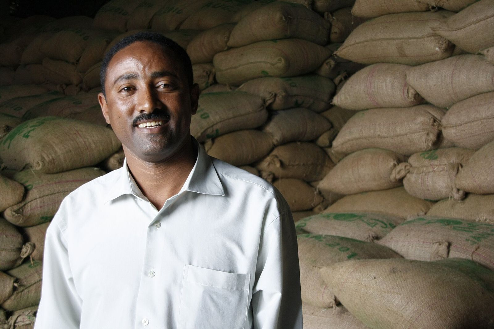
Un entrepôt de café vert en Éthiopie. Avant l'export, les lots sont stockés, échantillonnés et regroupés pour la vente.Photo : DFID - UK Department for International Development · CC BY 2.0 · Commons
Figure 1.5. La chaîne de valeur. Le café descend de la ferme au client, l'argent remonte du client à la ferme. En vert les maillons des pays producteurs, en bleu le commerce international, en brun ceux des pays consommateurs. Chaque flèche à droite est un prix différent, dans une unité différente.
Ce que coûte une tasse, et à qui
Fais le calcul une fois en entier, tu ne verras plus le prix d'une tasse de la même façon. Prenons un espresso vendu 2,50 € TTC, un prix courant dans un coffee shop parisien. C'est un exemple pour comprendre les ordres de grandeur, pas les comptes de ton coffee shop : refais-le avec tes vrais chiffres.
La TVA sur une boisson sans alcool consommée sur place est de 10 %. Sur 2,50 €, il reste 2,27 € hors taxes. Le café, à 26,40 € HT le kilo chez Ïota et 18 g par tasse, coûte environ 0,48 €. Ajoute quelques centimes d'eau filtrée, d'électricité pour la machine, de sucre, de produit de nettoyage et de serviette. Le reste, environ 1,70 €, paie tout ce qui ne se voit pas dans la tasse.
Figure 1.6. Décomposition indicative d'un espresso à 2,50 € TTC. Personnel, loyer, matériel et frais sont répartis avec des proportions courantes en restauration, à titre d'exemple. En bas, le détail des 48 centimes de café : la part du producteur se compte en centimes.
Le même espresso, ligne par ligne (exemple indicatif)
Poste
Par tasse
Comment on l'estime
TVA
0,23 €
10 % du prix hors taxes, reversés à l'État
Café
0,48 €
18 g à 26,40 € HT le kilo
dont producteur
≈ 0,11 à 0,15 €
22 g de vert, s'il a touché l'équivalent de 5 à 7 € le kilo
Consommables
≈ 0,07 €
eau filtrée, énergie, sucre, serviette, produits de nettoyage
Personnel
≈ 0,75 €
souvent un tiers du chiffre d'affaires dans un café
Loyer et charges
≈ 0,30 €
autour de 10 à 15 % du chiffre d'affaires
Matériel
≈ 0,12 €
machine, moulin, entretien, joints, filtres à eau, sur plusieurs années
Autres frais
≈ 0,15 €
assurance, banque et carte bancaire, comptabilité, pertes
Résultat
≈ 0,40 €
ce qui reste, avant impôt, pour rembourser et investir
Trois leçons sortent de ce tableau. D'abord, la part du producteur dans ta tasse tourne autour de 5 % du prix, quelques centimes. Ensuite, le café est le premier poste matière, mais le personnel et le loyer pèsent bien plus lourd que lui. Enfin, et c'est le plus utile au quotidien, une tasse ratée et jetée te coûte surtout 0,48 € de café et ta minute de travail, alors qu'une tasse vendue paie toute la structure. Le réglage du matin, c'est quelques grammes de café bien investis.
Raccourcir la chaîne
Le café de spécialité cherche à raccourcir et à éclairer cette chaîne. En direct trade, le torréfacteur achète à un producteur qu'il connaît, souvent sur plusieurs années, à un prix négocié au-dessus du marché, parfois en allant sur place. Aucun label n'encadre ce terme : sa valeur dépend de ce que l'entreprise publie. Certains publient le prix payé au port d'exportation (le prix FOB, free on board). C'est la bonne question à poser à un fournisseur qui affiche « direct trade » ou « commerce équitable » : combien, à qui, et comment le sais-tu ? Le module 6 détaille les contrats, les labels et ce que chacun garantit.
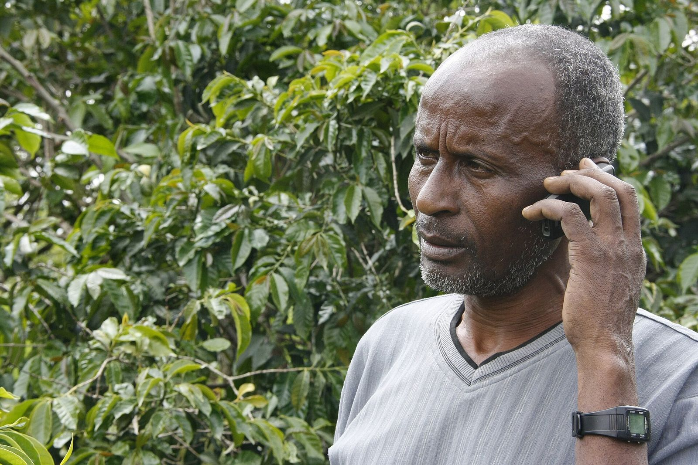
DFID - UK Department for International Development · CC BY 2.0 · Commons
10
Le prix, de New York à ton moulin
Une bourse, un différentiel, et des records.
Le café est l'une des matières premières agricoles les plus échangées au monde, et son prix se fixe loin des fermes. L'arabica se cote à New York, sur le marché à terme ICE Futures US, en cents de dollar par livre de café vert (une livre fait 453,6 g). On parle du contrat « C ». Le robusta se cote à Londres, sur ICE Futures Europe, en dollars par tonne. Ces cours bougent toute la journée, avec la météo au Brésil, les stocks, le dollar et les fonds d'investissement.
Un lot réel se vend rarement au cours de la bourse tout court. Il se vend au cours plus ou moins un différentiel, qui dépend de son origine, de sa qualité et de la demande : un bon Colombie lavé se paie au-dessus du C, un arabica ordinaire en dessous. Le prix FOB, celui du café chargé au port d'exportation, sert de repère commun. Les lots de spécialité se négocient souvent à prix fixe, très au-dessus du marché, mais le C reste le plancher qui tire tout le reste. Quand il double, même les micro-lots montent. Les contrats, les labels et leurs prix minimums sont détaillés au module 6.
Figure 1.7. Quelques repères du contrat C, en dollars courants. Les pics de 1977 (après la gelée de 1975), de 2011 et de 2025 encadrent des creux profonds : la fin des quotas, la crise de 2001-2003, l'année 2019. Les barres « moyenne » portent sur cinq ans, les autres sur un point ou une courte période.
L'envolée de 2024-2025
Le café est une culture pérenne, concentrée dans quelques pays et sensible à la météo. Un accident au Brésil se lit le lendemain à New York. Après la gelée de 2021, la sécheresse et la chaleur réduisent deux récoltes brésiliennes d'arabica de suite, et la sécheresse frappe aussi le robusta du Vietnam. Selon l'USDA, les stocks mondiaux fondent de 15,5 millions de sacs entre 2020/21 et 2024/25. La spéculation amplifie la hausse. Le 10 décembre 2024, l'arabica dépasse son record de 1977. Le 11 février 2025, il touche 4,30 $ la livre, et le robusta dépasse 5 800 $ la tonne le même mois.
À l'été 2025, les États-Unis imposent des droits de douane qui montent jusqu'à 50 % sur le café brésilien, d'août à novembre. Les flux se désorganisent, et l'arabica bat un nouveau record le 23 octobre 2025, à 4,38 $. Avec le retour de l'offre et la levée de ces droits, il redescend autour de 3 $ en octobre 2026. C'est encore deux à trois fois le niveau de 2019-2020.
Pourquoi ton prix du kilo a bougé
Ton café coûte environ 26,40 € HT le kilo chez Ïota. Si ce tarif a bougé ces deux dernières années, voici les causes probables, dans l'ordre où elles pèsent. Pour le détail de leur politique de prix, demande-leur : un bon torréfacteur l'explique volontiers.
Le prix du vert. Entre début 2024 et février 2025, l'arabica a plus que doublé en bourse, d'environ 2 $ à 4,30 $ la livre. 2,30 $ de plus par livre, c'est environ 5 $ de plus par kilo de vert, donc environ 6 $ par kilo torréfié, puisqu'il faut 1,2 kg de vert pour un kilo de torréfié. Soit 5 à 6 € par kilo, si tout était répercuté.
Le décalage. Les torréfacteurs achètent leur vert des mois à l'avance, parfois une récolte entière. Les hausses leur arrivent avec retard, et les baisses aussi. Le C a reculé depuis octobre 2025, mais le café que tu bois aujourd'hui a souvent été acheté plus cher il y a six mois.
Le dollar. Le café s'achète en dollars. Quand l'euro baisse face au dollar, le même sac coûte plus cher en euros, même à cours inchangé.
Le fret et la logistique. Le contournement de la mer Rouge en 2024, les assurances, les frais portuaires, et les nouvelles obligations de traçabilité européennes (module 6) ajoutent des coûts entre le port et l'entrepôt.
Et pour ta tasse, garde le calcul en tête : 3 € de plus sur le kilo torréfié, c'est 5 à 6 centimes par espresso, selon que tu doses 18 ou 21 g. La hausse du café a fait les gros titres. Dans ta tasse, elle pèse moins que l'évolution de ton loyer ou du coût d'une heure de travail.
The original uploader was DirkvdM at English Wikipedia. · CC BY 1.0 · Commons
11
Les défis
Chaleur, forêts, bras, et les cafés de demain.
L'arabica a évolué à l'ombre et au frais, dans la forêt du Kaffa. Le réchauffement l'attaque exactement là où il est faible.
La chaleur monte, le café aussi
En 2015, l'équipe de Christian Bunn a publié une projection restée célèbre : environ la moitié des surfaces aujourd'hui favorables au café pourraient ne plus l'être en 2050, quel que soit le scénario d'émissions, avec de fortes pertes au Brésil et au Vietnam, les deux premiers producteurs. Les zones propices remontent en altitude, et en altitude il reste souvent des forêts. La tentation est grande de défricher plus haut, ce qui accélère la perte de forêts et le réchauffement local.
Les maladies suivent la chaleur. La rouille, le champignon qui avait ruiné Ceylan en 1869, a ravagé l'Amérique centrale en 2012-2013, à des altitudes où on la croyait impossible. Le scolyte, un petit coléoptère qui pond dans la cerise, monte lui aussi. Les réponses existent, et chacune a son prix : planter des arbres d'ombrage, qui rafraîchissent les caféiers de plusieurs degrés et protègent le sol ; irriguer, quand il y a de l'eau ; adopter des variétés résistantes ou des hybrides plus vigoureux (module 3) ; changer d'espèce.
La rouille orangée, Hemileia vastatrix, sous une feuille de caféier. Les taches poudreuses font tomber les feuilles, et l'arbre affaibli produit moins l'année suivante.Photo : Smartse · CC BY-SA 3.0 · Commons
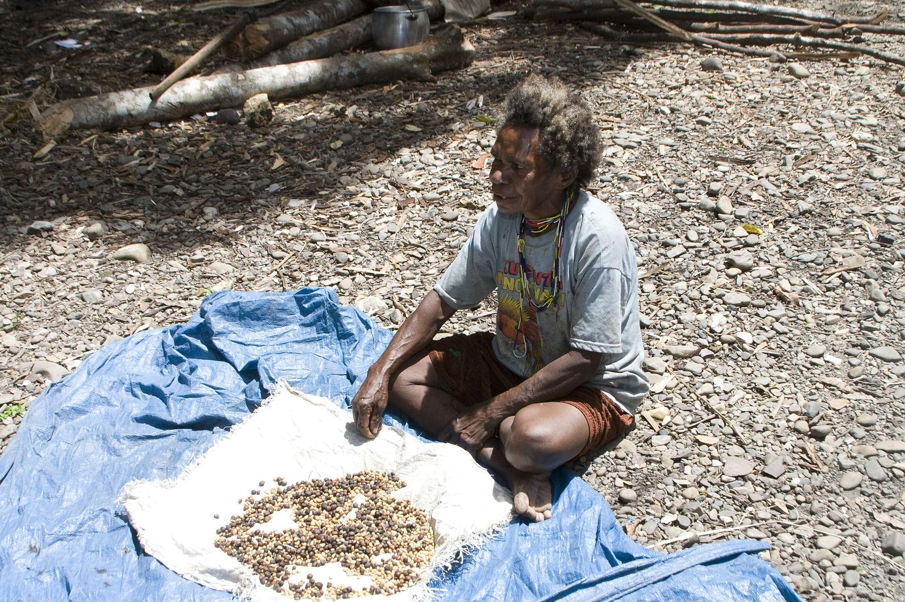
Tri de café sur une bâche, dans une coopérative de Papouasie, en Indonésie. Dans beaucoup de pays, ce travail de tri et de séchage est assuré en grande partie par des femmes.Photo : USAID Indonesia · Public domain · Commons
Les forêts
L'extension des caféières a contribué à la déforestation, en Amérique latine, en Asie du Sud-Est, en Afrique. L'Union européenne a adopté en 2023 un règlement qui oblige les entreprises à prouver que le café vendu en Europe ne vient pas de terres déboisées après 2020. Ses conséquences pour les importateurs, les torréfacteurs et les petits producteurs sont expliquées au module 6.
Les bras
Le café se cueille encore très largement à la main, cerise par cerise, en plusieurs passages. Il faut du monde au bon moment, et il manque : les producteurs vieillissent, les jeunes partent vers les villes. Les cueilleurs migrent d'un pays à l'autre au rythme des récoltes, du Nicaragua vers le Costa Rica par exemple. Au Brésil, la récolte mécanique a réglé la question sur les terrains plats, mais pas dans les montagnes de Colombie ou d'Éthiopie.
Les femmes tiennent une grosse part de ce travail. Selon l'Organisation internationale du café, elles fournissent jusqu'à 70 % du travail dans la production de café selon les régions, en comptant le travail familial non payé, alors que seulement 20 à 30 % des fermes sont dirigées par des femmes. Elles ont moins souvent accès à la terre, au crédit, à la formation et aux acheteurs. Quand tu vois sur une fiche « lot produit par une association de femmes », c'est souvent une réponse directe à ce problème.
Le robusta monte en gamme
Le robusta représente déjà 42 à 47 % de la production mondiale. Il supporte mieux la chaleur, résiste mieux à la rouille, produit plus, et il coûte moins cher à cultiver. On l'a longtemps réservé au soluble et aux assemblages bon marché, et ses défauts de culture et de process ont forgé sa réputation de café amer et terreux. Depuis une dizaine d'années, des producteurs d'Ouganda, d'Inde, du Brésil ou du Vietnam traitent leur robusta avec les soins de la spécialité, cueillette sélective et process soignés, et le vendent sous le nom de « fine robusta ». Tu en croiseras de plus en plus, en espresso surtout. Goûte-les sans préjugé, et sans oublier qu'ils contiennent environ deux fois plus de caféine qu'un arabica.
Les cafés de demain
Il existe plus de 120 espèces de caféiers sauvages, et on n'en boit que deux. En 2019, les botanistes des jardins de Kew estimaient qu'au moins 60 % de ces 124 espèces étaient menacées d'extinction, alors que ce réservoir génétique est la meilleure assurance de la filière face au climat. Certaines espèces oubliées reviennent. Coffea stenophylla, un caféier d'Afrique de l'Ouest qu'on croyait presque perdu, a été retrouvé en Sierra Leone. Une étude de 2021 dirigée par Aaron Davis, de Kew, a montré qu'il donne un goût proche de l'arabica tout en supportant une température moyenne nettement plus élevée, d'environ 6 °C. Le liberica et l'excelsa, cultivés en petites quantités en Asie et en Afrique, intéressent aussi les sélectionneurs et quelques torréfacteurs curieux (module 2).
Si tu ne devais garder que ça
L'arabica pousse à l'état sauvage dans les forêts du Kaffa, en Éthiopie. Le Yémen en a fait une culture et une boisson au XVe siècle, et le port de Moka lui a donné un nom.
Les cafés publics naissent à Istanbul vers 1554, puis Venise, Oxford, Londres, Marseille et Paris, où le Procope ouvre en 1686.
Presque tout l'arabica cultivé hors d'Éthiopie descend de deux lignées très étroites : Typica (Java, Amsterdam, Paris, Antilles) et Bourbon (La Réunion).
Le café des XVIIIe et XIXe siècles a été produit par des esclaves, à Saint-Domingue puis au Brésil, jusqu'en 1888.
Les quotas de l'Accord international ont tenu les prix de 1962 à 1989. Depuis, les cycles sont plus brutaux.
Le café de spécialité : le mot vient d'Erna Knutsen (1974), la note d'au moins 80/100 de la SCA, la visibilité de la Cup of Excellence et des concours.
2025/26 : environ 178,8 millions de sacs, dont plus de la moitié au Brésil et au Vietnam, sur quelque 12,5 millions de fermes, presque toutes petites.
Dans un espresso à 2,50 €, le café pèse environ 0,48 €, et le producteur quelques centimes.
L'arabica a battu son record à 4,38 $ la livre en octobre 2025. Ton prix du kilo suit la bourse avec des mois de retard.
Climat, forêts, main-d'œuvre, place des femmes, robusta, espèces oubliées : la filière se transforme, et ça se verra dans tes tasses.
Davis et al., Nature Plants, 2021, sur Coffea stenophylla ; Davis et al., Science Advances, 2019, sur les espèces de caféiers menacées ; Kath et al., Global Change Biology, 2020, sur l'optimum de température du robusta.
Mark Pendergrast, Uncommon Grounds, Basic Books (édition revue de 2010), histoire du café de l'Éthiopie à la troisième vague.
Ralph S. Hattox, Coffee and Coffeehouses, University of Washington Press, 1985, les débuts du café dans le Proche-Orient, d'après al-Jaziri.
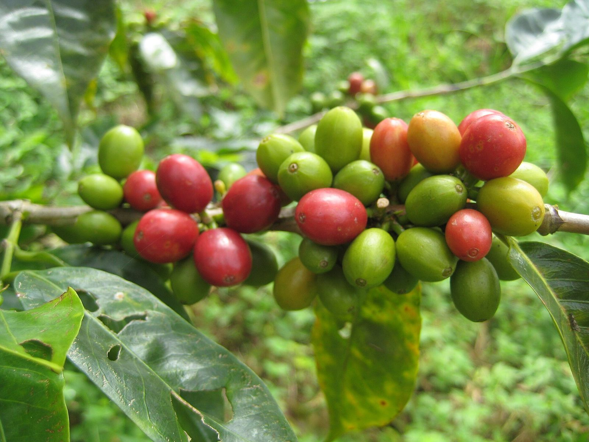
U. S. Fish and Wildlife Service - Northeast Region · Public domain · Commons
Module 2 · De l'arbre à la cerise
Le caféier et la cerise
Ce que tu mouds chaque matin, c'est un noyau. La graine d'un petit fruit rouge, sur un arbuste de sous-bois qui craint le gel, la chaleur, la sécheresse et une bonne dizaine d'ennemis. Avant de parler de recettes, on regarde la plante, ses espèces, son fruit couche par couche, et ce qui la menace.
Écrase une feuille de caféier entre tes doigts. Elle est épaisse, cireuse, et elle ne sent presque rien. Ouvre une fleur : là, tu sens le jasmin et la fleur d'oranger. Croque une cerise bien rouge : c'est sucré comme un raisin, un peu acidulé, et il n'y a presque rien à manger autour de deux gros noyaux plats. Rien de tout ça ne sent le café. L'odeur que tout le monde connaît naît à la torréfaction, des mois plus tard et à des milliers de kilomètres (module 7).
Le caféier appartient à la famille des Rubiacées. Le nom vient de la garance, Rubia, la plante qui servait à teindre en rouge les pantalons de l'infanterie française. Dans la même famille, tu trouves le gardénia, dont la fleur blanche ressemble beaucoup à celle du café, et le quinquina, l'arbre de la quinine. Des plantes de lisière et de sous-bois tropical, pour la plupart, qui aiment l'ombre légère et l'humidité.
Le genre Coffea
Les botanistes de Kew, le jardin botanique royal de Londres, comptaient 130 espèces de caféiers en 2021. La moitié vient de Madagascar (65 espèces), 48 viennent d'Afrique continentale, 3 des Mascareignes, et le reste d'Asie tropicale et d'Australie. Ces dernières portaient un autre nom de genre, Psilanthus, jusqu'à ce qu'Aaron Davis et ses collègues les rattachent à Coffea en 2011, sur la foi de l'ADN. Sur ces 130 espèces, on en boit deux, arabica et robusta, qui font plus de 98 % du café du monde. On en goûte trois ou quatre autres dans des marchés de niche. Toutes les autres sont sauvages, et beaucoup sont en danger.
Laissé tranquille en forêt, un arabica monte à 8 ou 10 m, un robusta à une dizaine de mètres, un liberica bien plus haut. En plantation, la taille le tient entre 2 et 4 m, à hauteur de main. Sa charpente suit une règle simple, que les botanistes appellent le dimorphisme. Une tige pousse à la verticale, c'est le tronc (on dit orthotrope). Elle porte, à chaque nœud, une paire de rameaux qui partent à l'horizontale (plagiotropes). Seuls ces rameaux horizontaux fleurissent et portent des fruits. Le tronc, lui, ne fait que monter et fabriquer de nouveaux étages.
Ce détail a l'air d'un caprice de botaniste, et pourtant il commande une bonne partie du métier. Une bouture prise sur un rameau horizontal donne une plante qui pousse couchée, comme un rameau : elle fleurit, mais ne fait jamais un arbre. Pour cloner un robusta, on bouture donc des pousses verticales, les gourmands, que les pépiniéristes font pousser exprès sur des pieds mères. Et quand un rameau horizontal casse, il ne repousse pas : l'étage est perdu, et seul un recépage remettra de la jeunesse dans l'arbre (module 4).
Figure 2.1. Le tronc ne porte jamais de fruits, les rameaux horizontaux si. Sur chaque rameau, la récolte se déplace d'année en année vers l'extérieur, ce qui oblige à tailler. Proportions simplifiées.
Les feuilles
Elles poussent par paires, face à face, le long des rameaux. Chez l'arabica, elles mesurent 10 à 15 cm, sont d'un vert sombre et luisant, souvent ondulées sur les bords. Le robusta a des feuilles plus grandes, plus claires, plus gaufrées. Le liberica, des feuilles épaisses comme du cuir. Retourne une feuille d'arabica et regarde à la jonction de la nervure centrale et des nervures secondaires : tu verras de minuscules poches, les domaties, où vivent des acariens prédateurs qui nettoient la feuille. C'est sur cette même face inférieure que la rouille attaque (section 7).
Les jeunes feuilles, au bout des rameaux, ne sont pas toujours vertes. Chez certaines variétés elles sortent bronze, presque cuivrées, chez d'autres vert tendre. Les sélectionneurs s'en servent comme d'un repère pour reconnaître une variété au champ (module 3). Les vieilles feuilles finissent par tomber, et c'est pour ça que le fond des rameaux, près du tronc, est souvent dénudé.
La fleur
Les fleurs naissent en petits bouquets serrés à l'aisselle des feuilles, sur le bois qui a poussé la saison précédente. Elles sont blanches, en étoile, à cinq pétales chez l'arabica (parfois quatre à huit chez d'autres espèces), avec un long tube. Un arbre adulte peut en porter plusieurs dizaines de milliers en même temps. Chaque fleur ne vit que deux à trois jours. Sur une colline en pleine floraison, l'odeur de jasmin se sent depuis la route, et on croirait qu'il a neigé sur les rangs.
La fleur d'arabica se féconde elle-même, souvent avant d'être complètement ouverte : environ 90 % des fruits viennent de leur propre pollen. Ça ne veut pas dire que les insectes ne servent à rien. Une étude célèbre de Taylor Ricketts au Costa Rica (2004) a montré que les parcelles proches d'un morceau de forêt, visitées par davantage d'abeilles sauvages, donnaient environ 20 % de café en plus et nettement moins de grains déformés. La fleur de robusta, elle, ne peut rien toute seule : elle refuse son propre pollen et celui de ses clones. Il lui faut du pollen d'un autre arbre, apporté par le vent et les insectes, ce qui oblige à mélanger plusieurs clones dans une même parcelle.
Fleurs d'arabica groupées aux nœuds d'un rameau. Elles sont fanées en trois jours, et leur nombre donne la première estimation de la récolte.Photo : B.navez · CC BY-SA 4.0 · Commons
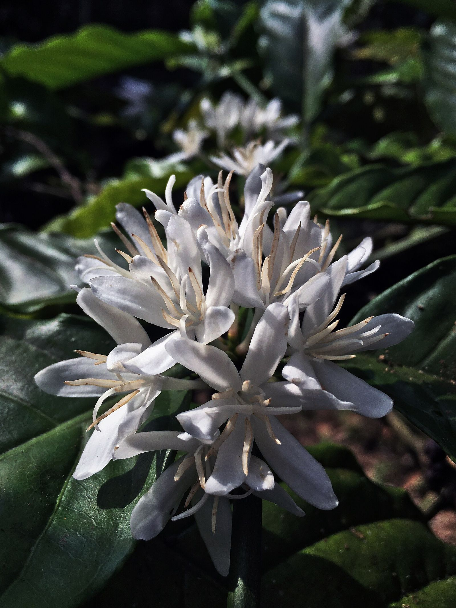
Le même bouquet vu de près, en Indonésie : cinq pétales, un long tube, et des étamines qui dépassent.Photo : Muhammad Rofiul Haq · CC BY-SA 4.0 · Commons
Le fruit, de la fleur à la cerise
Botaniquement, la cerise de café est une drupe, comme la cerise du cerisier, la prune ou l'olive : une peau, une chair, un noyau. La différence, c'est qu'il y a d'ordinaire deux noyaux, collés face à face, et que le noyau qui nous intéresse est la graine qu'il contient. Le nom de cerise vient de la ressemblance, rien de plus.
Le module 4 suit l'année d'une parcelle mois par mois. Ici, regarde ce qui se passe dans le fruit. Pendant les deux premiers mois, il ne bouge presque pas, c'est le stade « tête d'épingle ». Puis il gonfle vite et prend sa taille définitive, alors que la graine n'est encore qu'une gelée gorgée d'eau. Vient le remplissage : l'endosperme durcit et stocke sucres, lipides, protéines, acides chlorogéniques, caféine. C'est là que se fabrique la densité du grain, et c'est la phase où l'arbre a le plus besoin d'eau et d'azote. La couleur ne change qu'à la toute fin, quand les sucres montent dans la pulpe. Une cerise peut donc avoir l'air prête des semaines avant de l'être.
Figure 2.2. Le calendrier d'une cerise d'arabica, en ordres de grandeur. Le froid allonge tout : en altitude, la même cerise peut mettre plus d'un an. La partie grise des barres montre la fourchette selon le climat.
Cerises vertes, à peu près à mi-parcours. Dedans, la graine se remplit, mais rien ne se voit de dehors.Photo : Felipe Quijano · CC BY-SA 4.0 · Commons
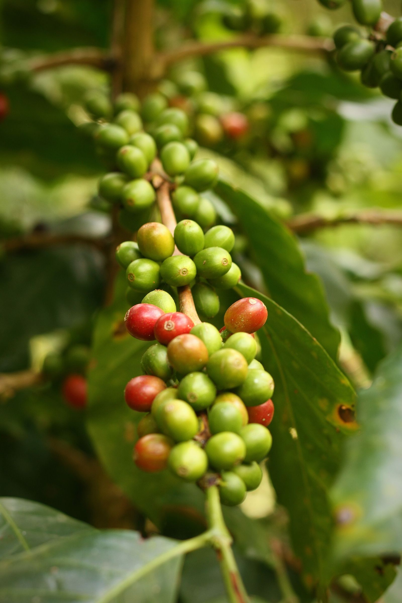
Une grappe qui tourne, en Colombie : jaunes, orangées et rouges sur le même rameau, issues de floraisons décalées.Photo : Felipe Quijano · CC BY-SA 4.0 · Commons
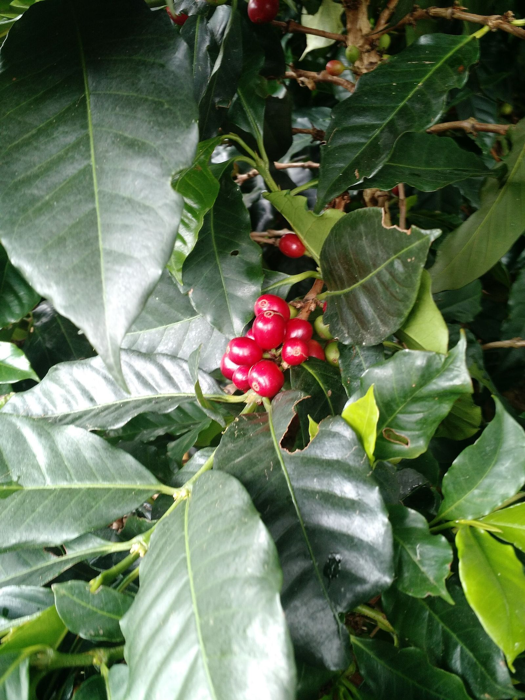
Une cerise mûre restée sur l'arbre. Laissée trop longtemps, elle fonce, se ride et sèche sur la branche.Photo : Ottoluis1995 · CC BY-SA 4.0 · Commons
Les racines
On parle peu des racines, parce qu'on ne les voit pas, et pourtant elles expliquent beaucoup de choses. Le caféier a un pivot court et épais, qui descend rarement au-delà d'un demi-mètre, d'où partent quelques racines qui descendent profond dans les sols meubles, jusqu'à 2 ou 3 m, et surtout un chevelu de racines fines qui s'étale en surface. La grande majorité de ces racines nourricières vit dans les 30 premiers centimètres. Conséquences directes : le caféier souffre vite quand la surface sèche, il déteste qu'on laboure ou qu'on désherbe trop profond à ses pieds, et un sol compacté ou noyé d'eau l'asphyxie. C'est aussi par là qu'entrent les nématodes, ces vers microscopiques qu'on retrouvera à la section 7. Le robusta enracine plus en surface encore, mais plus densément, et ses racines résistent mieux à plusieurs nématodes : en Amérique centrale, on greffe des arabicas sur des porte-greffes de robusta pour cette raison.
Une vie d'arbre
Un caféier semé en pépinière y passe 6 à 12 mois, dans un sachet de terre, à l'ombre. Repiqué au champ, il fleurit timidement à deux ou trois ans, donne sa première vraie récolte vers trois ou quatre ans, et produit à plein entre 7 et 20 ans à peu près. Ensuite la production baisse, l'arbre se dégarnit du bas, et le producteur le recèpe (il coupe le tronc à 30 ou 40 cm du sol pour faire repartir des rejets) ou il le remplace. Dans une plantation commerciale, un arbre dure rarement plus de 25 ou 30 ans. En forêt, en Éthiopie ou au Yémen sur des terrasses, on trouve des pieds bien plus vieux, qui produisent peu mais n'ont jamais été arrachés.
Une récolte moyenne, rapportée à un seul arbre, est modeste. Selon les fermes, un caféier donne de l'ordre de 1 à 5 kg de cerises par an, soit quelques centaines de grammes à un kilo de café vert. Avec la chaîne de rendement du module 4 (environ 6 kg de cerises pour 1 kg de café torréfié), l'arbre moyen d'une petite ferme éthiopienne fournit à peine de quoi remplir un ou deux paquets de 250 g de ta boutique.
Fais le calcul à l'envers : si le coffee shop passe 6 kg de café par semaine, il consomme sur l'année la production d'un millier d'arbres, à peu près.
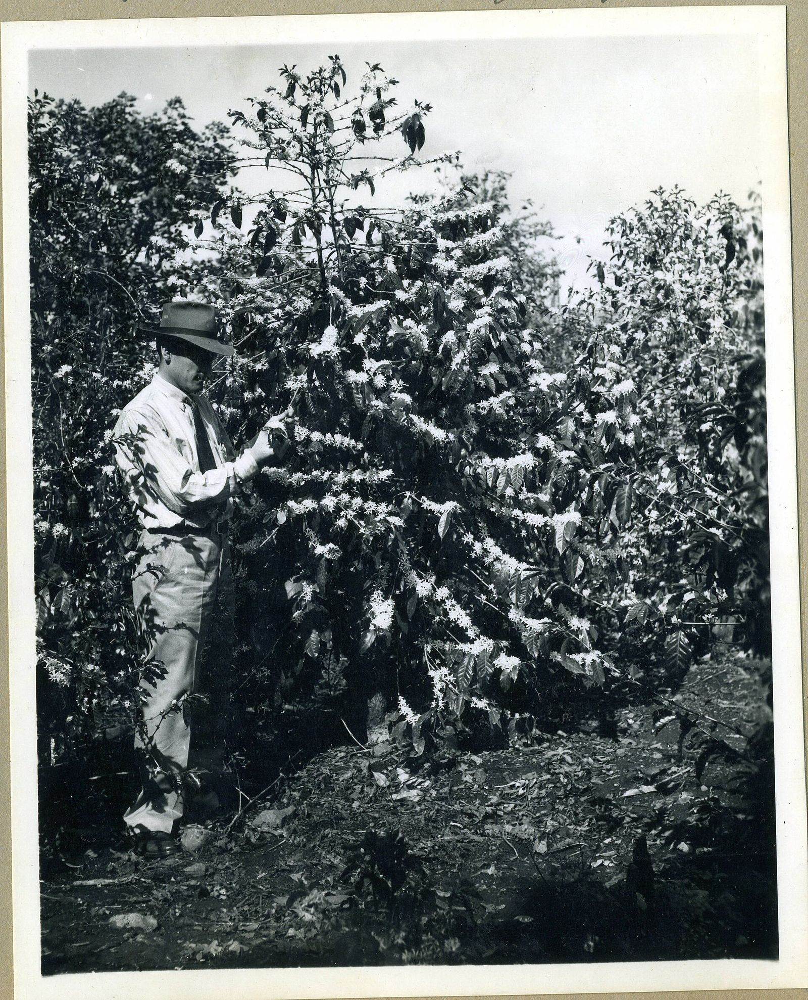
Un caféier qu'on a laissé monter, sur une photo d'archives du corps des ingénieurs de l'armée américaine (USACE). Non taillé, il dépasse vite la hauteur d'un homme.Photo : auteur non renseigné · Public domain · Commons
Une pépinière dans le Cauca, en Colombie. Les plants y passent 6 à 12 mois avant de partir au champ, et ne donneront leur première vraie récolte que deux ou trois ans plus tard.Photo : CIAT · CC BY-SA 2.0 · Commons
Ouvre deux sacs de café vert côte à côte. Dans le premier, des grains allongés, gris-vert, avec un sillon qui serpente en S sur la face plate. Dans le second, des grains plus petits, plus ronds, plus jaunes ou plus bruns, et un sillon presque droit. Tu viens de distinguer un arabica et un robusta sans rien goûter. Sur le marché, le second se négocie d'ordinaire autour de la moitié du prix du premier, parfois moins, et ils n'ont même pas la même bourse : l'arabica se cote à New York, le robusta à Londres.
Ces deux espèces font presque tout le café du monde. L'USDA estime la production 2025-2026 à 178,8 millions de sacs de 60 kg, un record. Pour la campagne précédente, son estimation de juin 2025 comptait 98,7 millions de sacs d'arabica et 75,7 millions de robusta, soit environ 57 % et 43 %. D'autres décomptes placent l'arabica plutôt vers 60 %, et l'écart se resserre d'année en année, parce que le robusta gagne du terrain. Le Brésil fournit près de 40 % du total, toutes espèces confondues, le Vietnam près de 18 %, presque entièrement en robusta.
178,8 Msacs de 60 kg attendus en 2025-2026 (USDA)
≈ 57 %d'arabica en 2024-2025
≈ 43 %de robusta, en hausse
44 / 22chromosomes, arabica / robusta
Coffea arabica, le montagnard
L'arabica vient des forêts d'altitude du sud-ouest de l'Éthiopie, du plateau de Boma au Soudan du Sud et du mont Marsabit au Kenya. Il y pousse à l'état sauvage sous de grands arbres, entre 1 000 et 2 000 m environ. Cultivé, il garde ses goûts de montagnard : 1 000 à 2 200 m près de l'équateur, une moyenne annuelle de 18 à 22 °C, des nuits fraîches. Il supporte mal la chaleur, très mal le gel, et il est sensible à la plupart des maladies du caféier, la rouille en tête.
Ce qui le rend unique tient dans ses cellules. Toutes les espèces de Coffea ont 22 chromosomes, en deux jeux de 11. L'arabica en a 44, quatre jeux. On dit qu'il est allotétraploïde : il additionne les génomes complets de deux espèces différentes. C'est aussi la seule espèce du genre qui se féconde elle-même. Ces deux particularités sont liées, et elles expliquent presque tout le reste : des variétés stables par graines, que le producteur peut ressemer sans surprise, mais une espèce qui brasse très peu ses gènes et manque de défenses.
Dans la tasse, l'arabica porte la douceur, l'acidité et les arômes floraux et fruités qui font le café de spécialité. Son grain contient environ 1,2 % de caféine (0,9 à 1,5 selon les variétés), 6 à 9 % de saccharose et 15 à 17 % de lipides. Retiens ces trois chiffres, on va les comparer à ceux du robusta.
Un génome, deux parents, une seule rencontre
L'arabica est né d'un croisement naturel entre deux espèces sauvages à 22 chromosomes. D'un côté Coffea eugenioides, un caféier des hauts plateaux d'Afrique de l'Est, petit, très peu caféiné. C'est lui la mère : le génome des chloroplastes de l'arabica, qui se transmet par l'ovule, vient de lui. De l'autre Coffea canephora, le robusta, qui a fourni le pollen. Les deux jeux de chromosomes se sont additionnés au lieu de se mélanger, et la plante obtenue s'est mise à se féconder elle-même. Toute l'espèce descend de cette rencontre, ou d'un tout petit nombre de rencontres semblables.
La date a beaucoup bougé. En 2020, une équipe réunissant World Coffee Research, le CIRAD et l'université d'Udine (Scalabrin et al.) parlait d'environ 10 000 à 20 000 ans, chiffre que tu retrouves au module 3. En 2024, un consortium international a publié dans Nature Genetics (Salojärvi et al.) un génome de référence bien plus complet, assemblé chromosome par chromosome, et l'a comparé à des dizaines d'arabicas sauvages et cultivés. Sa conclusion repousse la naissance de l'espèce à une fourchette de 350 000 à 610 000 ans. Pendant tout ce temps, les populations sauvages ont grossi et maigri au rythme des glaciations et des sécheresses africaines. Puis l'homme est venu ajouter un dernier goulot : presque tous les arabicas cultivés hors d'Éthiopie descendent d'un petit groupe d'arbres passés par le Yémen.
Figure 2.3. L'arabica additionne deux génomes entiers. Datation selon Salojärvi et al. (Nature Genetics, 2024) ; une étude de 2020 proposait une date bien plus récente. Dans les deux cas, toute l'espèce part d'une base minuscule.
Pourquoi ça te concerne, derrière un comptoir ? Parce que ce double héritage se goûte. La part eugenioides apporte peu de caféine et une douceur que les rares buveurs de cette espèce décrivent tous. La part canephora apporte de la vigueur. Et la faible diversité explique pourquoi un seul champignon a pu ravager les plantations d'un continent entier (section 7). Le génome de 2024 a aussi permis de repérer, chez certaines variétés modernes résistantes à la rouille, les morceaux d'ADN de robusta qu'elles ont reçus de l'hybride de Timor.
Coffea canephora, dit robusta
Le nom d'espèce est canephora. « Robusta » était au départ le nom d'une forme vigoureuse, introduite à Java vers 1900 depuis le Congo belge, et le commerce l'a étendu à toute l'espèce. Au Brésil, on parle de conilon, déformation de Kouilou, un fleuve du Congo qui a donné son nom à un autre groupe de l'espèce. L'aire naturelle du robusta est immense : les forêts humides de plaine, de la Guinée à l'Ouganda en passant par tout le bassin du Congo. Il y pousse du niveau de la mer à 800 m environ, et un peu plus haut près de l'équateur : en Ouganda, où il est indigène, on le cultive couramment jusqu'à 1 200 ou 1 500 m.
Il aime la chaleur, 22 à 26 °C de moyenne et davantage, et la pluie, mais il gèle encore plus facilement que l'arabica. Ses fleurs refusent leur propre pollen. Chaque graine est donc un individu nouveau, différent de ses deux parents, et un champ de robusta semé sans précaution donne un mélange d'arbres très inégaux. Les producteurs sérieux plantent des clones, bouturés à partir des meilleurs arbres, en mélangeant plusieurs clones compatibles par parcelle pour assurer la pollinisation. Au Vietnam, au Brésil (Espírito Santo, Rondônia), en Ouganda et en Inde, c'est la norme.
Le robusta produit davantage, résiste mieux à la rouille et à plusieurs ravageurs, et pousse là où l'arabica cuit. Son grain contient environ 2,2 % de caféine (1,7 à 2,7), plus d'acides chlorogéniques, deux fois moins de lipides (7 à 10 %) et beaucoup moins de saccharose (1 à 5 %). D'où une tasse plus corsée, plus amère, avec des notes de cacao amer, de céréale grillée, de bois, parfois de caoutchouc quand il est mal fait. La caféine elle-même compte assez peu dans cette amertume : ce sont surtout les produits de dégradation des acides chlorogéniques, fabriqués à la torréfaction, qui la donnent.
Arabica (Coffea arabica)
44 chromosomes, se féconde lui-même. Origine : forêts d'altitude d'Éthiopie et du Soudan du Sud. Cultivé entre 1 000 et 2 200 m, à 18-22 °C de moyenne. Caféine ≈ 1,2 %, saccharose 6-9 %, lipides 15-17 %. Environ 57 à 60 % de la production mondiale. Sensible à la rouille, au scolyte, à l'anthracnose.
jasmin
agrumes
fruits rouges
caramel
chocolat au lait
Acidité
Douceur
Amertume
Corps
Rendement
Robusta (Coffea canephora)
22 chromosomes, refuse son propre pollen, planté en clones. Origine : forêts de plaine d'Afrique de l'Ouest et centrale. Cultivé de 0 à 800 m (jusqu'à 1 500 m en Ouganda), à 22-26 °C et plus. Caféine ≈ 2,2 %, saccharose 1-5 %, lipides 7-10 %. Environ 40 à 43 % de la production, Vietnam en tête. Ici, du conilon à Timbuí, au Brésil.
cacao amer
bois
arachide grillée
épices
tabac
Acidité
Douceur
Amertume
Corps
Rendement
Où vont-ils ?
L'arabica part vers les torréfacteurs de spécialité, les cafés de dégustation, la plupart des cafés filtres et des espressos de qualité. Le robusta part d'abord dans le café soluble, dont il fournit la plus grosse part de la matière première pour une raison bête : il donne plus d'extrait sec par kilo, et il coûte moins cher. Il part aussi dans les capsules et les mélanges de supermarché, et dans les assemblages d'espresso à l'italienne, surtout dans le sud de l'Italie, où une part de 10 à 30 % de robusta est une tradition. Il y apporte du corps, de l'amertume, une crema épaisse et une bonne tenue dans le lait. On y revient au comptoir, section 9.
3. Les autres caféiers
Aux Philippines, dans la province de Batangas, le café du matin s'appelle kapeng barako. Il est noir, puissant, avec une odeur de fruit trop mûr et de bois brûlé, et il ne vient ni d'un arabica ni d'un robusta. C'est du liberica. Tu le croiseras peut-être un jour dans un salon professionnel ou chez un torréfacteur curieux, avec quelques autres espèces que le changement climatique a sorties de l'oubli. Elles pèsent ensemble moins de 2 % du café mondial, mais c'est dans ce réservoir que les chercheurs vont puiser pour le café de 2050.
Liberica et excelsa
22 chromosomes. Origine : Afrique de l'Ouest et centrale, forêts de plaine. Un vrai arbre, 10 à 20 m s'il n'est pas taillé, aux feuilles de cuir et aux cerises énormes, à pulpe épaisse. Grains très gros, asymétriques. Pousse en plaine, à la chaleur. Cultivé aux Philippines (barako), en Malaisie (Johor), en Indonésie ; l'excelsa au Vietnam, où on l'appelle « café jacquier », et en Afrique (Soudan du Sud, Ouganda). Caféine mal documentée. Moins de 2 % de la production avec les autres espèces.
jacquier
fruits secs
bois
fumé
Stenophylla
22 chromosomes. Origine : Guinée, Sierra Leone, Côte d'Ivoire. Exporté vers l'Europe jusqu'au début du XXe siècle, puis abandonné pour le robusta, plus productif. Ses cerises mûrissent noires. Il pousse sous 24,9 °C de moyenne annuelle, plus de 6 °C au-dessus de l'optimum de l'arabica (Davis et al., 2021). Rendement faible, caféine peu documentée. Production : quelques essais.
pêche
cassis
mandarine
fleur de sureau
miel
Eugenioides
22 chromosomes. La mère de l'arabica. Origine : hauts plateaux d'Afrique de l'Est (Ouganda, Kenya, Tanzanie, est du Congo). Petit arbuste, petites cerises, rendement très faible. Caféine 0,3 à 0,6 %, quatre fois moins qu'un arabica. Tasse très douce, peu acide, presque sans amertume. Cultivé en micro-lots, notamment en Colombie. Production : confidentielle.
sucre candi
céréale
fleurs blanches
miel
Racemosa
22 chromosomes. Origine : plaines côtières du Mozambique et régions voisines. Petit arbuste qui supporte la sécheresse et la chaleur. Caféine peu documentée. Croisé avec l'arabica à l'Instituto Agronômico de Campinas, au Brésil, il lui a transmis une résistance à la mineuse des feuilles. Aucun commerce : son intérêt est génétique.
Liberica et excelsa, l'histoire d'un retour
Le liberica a eu son heure de gloire à la fin du XIXe siècle. Quand la rouille a ravagé les arabicas d'Asie (section 7), les planteurs de Java, de Ceylan et de Malaisie l'ont essayé, parce qu'il résistait mieux. Il a déçu : rendement faible, arbres trop hauts pour la cueillette, cerises qui ne mûrissent pas ensemble, pulpe épaisse difficile à retirer, goût jugé grossier. Le robusta, découvert peu après, l'a remplacé presque partout. Il en reste des poches, aux Philippines et en Malaisie surtout, où le café local est resté du liberica par habitude et par goût.
L'excelsa a longtemps été considéré comme une espèce à part, avant que Davis et ses collègues ne le rangent en 2006 dans le liberica (C. liberica var. dewevrei). Des travaux génomiques plus récents de l'équipe de Kew proposent de redistinguer plusieurs espèces dans ce groupe. Pour toi, ça veut dire qu'un sachet peut écrire « excelsa » ou « liberica » pour des plantes très proches. Ce groupe intéresse beaucoup l'Ouganda et le Soudan du Sud : il tient la chaleur et les sécheresses mieux que le robusta, et des lots soignés commencent à apparaître sur les tables de cupping.
Stenophylla, le café qu'on a retrouvé
Absent des relevés de Sierra Leone depuis 1954, le stenophylla a été retrouvé à l'état sauvage par une équipe de Kew, avec Aaron Davis et Jeremy Haggar, en décembre 2018. L'étude publiée en 2021 dans Nature Plants a fait du bruit pour deux raisons. Il pousse dans un climat bien plus chaud que celui de l'arabica, à 24,9 °C de moyenne annuelle, et un jury de dégustateurs professionnels l'a jugé à l'aveugle très proche d'un arabica de qualité : la majorité des juges l'ont pris pour un arabica. Il réunit donc deux choses que personne n'avait jamais vues ensemble, la tolérance à la chaleur du robusta et un goût de spécialité. Le revers est connu : peu de fruits, des arbres qui mettent du temps à produire, et pour l'instant quelques kilos seulement.
Eugenioides, la douceur sans caféine
En 2021, le Colombien Diego Campos a gagné le championnat du monde barista avec, dans sa routine, un café d'espèce eugenioides. Ceux qui l'ont goûtée décrivent une tasse très sucrée, presque sans acidité, qui évoque le sucre candi et la céréale. Depuis, quelques fermes colombiennes en cultivent de petites surfaces et le vendent à prix d'or. C'est un café de curiosité, qui fait comprendre d'où vient une partie de la douceur de l'arabica. Pour une boisson du quotidien, il manque de relief, et son rendement le condamne à rester rare.
Les six espèces côte à côte (ordres de grandeur ; composition en % de la matière sèche du grain vert)
Espèce
Chromo-somes
Fécondation
Origine
Altitude de culture
Caféine
Saccharose
Lipides
Goût typique
Part de la production
Arabica
44
elle-même (≈ 90 %)
Éthiopie, Soudan du Sud, montagne
1 000-2 200 m
0,9-1,5 %
6-9 %
15-17 %
acidité, douceur, fleurs, fruits
≈ 57-60 %
Robusta
22
croisée (clones)
Afrique de l'Ouest et centrale, plaine
0-800 m (1 500 en Ouganda)
1,7-2,7 %
1-5 %
7-10 %
corps, amertume, cacao, bois
≈ 40-43 %
Liberica, excelsa
22
croisée
Afrique de l'Ouest et centrale, plaine
plaine
peu documentée
peu documenté
peu documentés
fruit très mûr, jacquier, bois, fumé
moins de 2 % à elles toutes
Stenophylla
22
croisée
Guinée, Sierra Leone, Côte d'Ivoire
basse et moyenne altitude
peu documentée
peu documenté
peu documentés
proche d'un bon arabica
Eugenioides
22
croisée
hauts plateaux d'Afrique de l'Est
altitude
0,3-0,6 %
peu documenté
peu documentés
très doux, candi, céréale
Racemosa
22
croisée
côtes du Mozambique
plaine côtière
peu documentée
peu documenté
peu documentés
sans commerce
Note les nombreuses cases « peu documenté ». Personne n'a mesuré ces espèces avec la rigueur appliquée à l'arabica et au robusta depuis un siècle, et les rares chiffres publiés viennent de quelques arbres. Méfie-toi d'une fiche commerciale qui affiche une teneur en caféine précise pour un liberica ou un stenophylla.
Une réserve qui disparaît
En 2019, Aaron Davis et ses collègues ont évalué le risque d'extinction de 124 espèces de caféiers sauvages, selon les critères de l'UICN (Science Advances). Sur ces 124, 75 sont menacées, environ 60 %. Déforestation, changement climatique, maladies. Et seules un peu plus de la moitié des espèces sont conservées quelque part dans une collection.
Conserver un caféier est plus compliqué qu'on l'imagine. Les graines de blé ou de haricot se gardent des décennies au froid et au sec dans une banque de semences. Celles du caféier supportent mal la dessiccation profonde et la congélation : elles meurent. On les garde donc sous forme d'arbres vivants, dans des collections au champ comme celles du CATIE à Turrialba (Costa Rica) ou de Choche en Éthiopie, exposées aux maladies, aux budgets qui baissent et aux tempêtes. Une partie de la diversité éthiopienne collectée dans les années 1960 et 1970 n'existe plus qu'en quelques arbres.
Prends une cerise bien rouge et pince-la entre le pouce et l'index. La peau éclate, et deux graines glissantes sortent d'un coup, enrobées d'une gelée qui colle aux doigts. Ce geste, c'est exactement ce que fait un dépulpeur. Ce qui reste sur tes doigts, c'est le mucilage, la couche sur laquelle repose presque toute la science des process. Ce qui reste autour des graines, une fine coque beige, c'est la parche. Couper une cerise en deux, c'est voir d'un coup tout ce que les modules 5 et 6 vont retirer, fermenter, sécher et trier.
Figure 2.4. En haut, une cerise mûre coupée en travers : deux graines face contre face, chacune dans sa parche. En bas, ce que chaque process garde autour de la graine pendant qu'elle sèche ; les cases en pointillé sont les couches déjà retirées. Détails au module 5.
Clique sur chaque couche. Le petit dessin montre ce qui entoure encore la graine quand on s'arrête à cette couche, et le texte dit ce que chaque process en fait.
La cerise entière.
La peau (exocarpe)
Une pellicule fine et lisse, verte puis jaune, rouge ou bordeaux selon la variété et la maturité. Elle porte les pigments, des anthocyanes chez les fruits rouges, et une bonne part des composés phénoliques du fruit. C'est elle que tu regardes pour juger la maturité, et elle peut tromper : une cerise peut rougir alors que la graine n'a pas fini de se remplir (module 4).
En lavé, en honey et en giling basah, elle part au dépulpeur le jour de la cueillette, avec la pulpe. En nature, elle sèche sur le fruit, fonce, se ride et devient une coque cassante qu'on brise des semaines plus tard.
Sans la peau.
La pulpe (mésocarpe)
La chair du fruit, quelques millimètres seulement. Selon Cenicafé, la pulpe et la peau font environ 44 % du poids d'une cerise fraîche. Elle est sucrée, acidulée, avec un goût de fruit rouge, d'hibiscus, de raisin sec quand elle est séchée. Elle contient aussi de la caféine.
Au dépulpeur, elle part avec la peau et devient un déchet encombrant : compostée, elle retourne au champ. Séchée proprement, elle devient la cascara, qu'on infuse comme une tisane et qui est autorisée à la vente dans l'Union européenne depuis le début des années 2020. En nature, la pulpe reste autour de la graine pendant tout le séchage, et c'est une des sources du goût de fruit.
Le mucilage colle à la parche.
Le mucilage
La partie interne du mésocarpe, un gel translucide d'un ou deux millimètres, environ 15 % du poids d'une cerise fraîche selon Cenicafé. Beaucoup d'eau, des sucres (glucose, fructose, saccharose) et des pectines, les mêmes molécules qui font prendre tes confitures. Ce sont elles qui l'empêchent de partir au simple rinçage.
En lavé, on le décolle par fermentation en cuve, ou on l'arrache à la machine, puis on lave. En honey, on le laisse sécher sur la parche, en partie ou en totalité. En nature, il reste sous la pulpe. Toutes les fermentations pilotées (anaérobie, macération carbonique) jouent sur cette couche-là. C'est elle qui pèse le plus sur le goût que donne un process.
Le café parche.
La parche (endocarpe)
Le vrai noyau du fruit : une coque fibreuse qui enveloppe chaque graine, souple quand elle est humide, cassante et couleur paille une fois sèche. Elle protège la graine pendant le séchage et le stockage. Un café lavé ou honey sèche « en parche », et on le garde souvent ainsi plusieurs semaines pour qu'il se stabilise.
Elle part au décorticage, au moulin sec, juste avant le tri et l'export (module 6). En nature, elle part au même moment que la peau et la pulpe séchées, d'un seul coup. En giling basah, on l'arrache alors que la graine est encore molle, à 30-35 % d'humidité, ce qui donne les grains bleutés et fendus de Sumatra.
Graine nue, pellicule collée.
La pellicule argentée
Un tégument très fin, translucide, collé à la graine et coincé dans le sillon. C'est le reste du tissu qui a nourri la graine au début de sa croissance. Une partie reste accrochée après le décorticage, et le polissage, quand un exportateur en fait, en retire encore un peu.
À la torréfaction, elle se détache en paillettes légères, le chaff, que le torréfacteur récupère dans un cyclone. Il en reste toujours un peu dans le sillon, et tu la vois parfois en fines écailles claires dans ton moulin. Les cafés lavés en gardent souvent moins que les natures.
Le grain vert.
La graine (endosperme)
Ce que tu appelles le grain. C'est un tissu de réserve, dur comme de la corne une fois sec, replié sur lui-même : le pli forme le sillon de la face plate. Ses cellules ont des parois épaisses, bourrées de sucres, de lipides et de protéines, dont on parle à la section suivante.
Pendant le process, la graine reste vivante. Elle réagit au stress, commence à germer en lavé, et sa chimie change selon la méthode (module 5). Le séchage l'arrête, à 10-12 % d'humidité. À la torréfaction, elle gonfle de 50 à 80 % et perd 12 à 20 % de son poids (module 7).
Le germe, à la base.
L'embryon
Minuscule, logé à la base du grain, du côté bombé. C'est lui qui germe quand on sème la graine en pépinière : une graine de caféier met plusieurs semaines à lever, et elle perd vite sa capacité à germer une fois séchée et stockée.
Pour toi, il compte peu : il pèse une fraction infime du grain. Retiens seulement qu'il fait de la graine un organe vivant, et c'est ce qui explique que sa chimie bouge encore pendant le process.
Deux graines, parfois une, parfois trois
Les deux graines d'une cerise poussent serrées l'une contre l'autre dans un espace trop petit. Elles s'aplatissent mutuellement, d'où leur face plate et leur dos bombé. Quand l'un des deux ovules n'est pas fécondé, ou avorte, l'autre graine a toute la place. Rien ne l'aplatit, elle devient ovoïde, presque ronde, avec un sillon qui fait le tour. C'est le caracoli (en anglais peaberry, petit pois). On en compte environ 5 % des cerises, jusqu'à 10 % selon les sources, et davantage au bout des rameaux, sur les arbres stressés, et quand la pollinisation se passe mal : l'étude de Ricketts au Costa Rica a mesuré nettement moins de grains déformés dans les parcelles bien visitées par les abeilles.
On trie les caracolis à part, par forme, sur des grilles à fentes. Le Kenya et la Tanzanie les vendent sous le grade PB, Hawaï sous le nom de Kona peaberry. Le torréfacteur les passe séparément, parce qu'ils roulent autrement dans le tambour et prennent la chaleur différemment d'un grain plat de même poids. Est-ce meilleur ? Certains y trouvent plus d'intensité et de douceur, d'autres aucune différence. Aucune étude sérieuse n'a tranché. Retiens que c'est une forme de grain, quelle que soit la variété.
Il existe aussi l'anomalie inverse. Parfois deux graines se développent imbriquées dans une même loge : c'est le grain éléphant, gros et irrégulier, qui se sépare au décorticage ou à la torréfaction en fragments creux, les coquilles, comptées comme défauts. Et certaines cerises ont trois loges au lieu de deux : les graines, coincées à trois, prennent une forme triangulaire.
Des caracolis en gros plan : une seule graine par cerise, ovoïde, sans face plate. Triés à part, ils forment parfois un lot distinct.Photo : Ragesoss · CC BY-SA 3.0 · CommonsDu café parche colombien. Sous cette coque couleur paille, le grain vert attend le décorticage.Photo : Felipe Quijano · CC BY-SA 4.0 · Commons
Croque un grain de café vert, si tu en as un sous la main. C'est dur comme un noyau d'olive, ça sent le petit pois cru, le foin, parfois la fève. Aucune trace de café. Et pourtant tout est déjà là : les sucres qui vont caraméliser, les acides aminés qui vont brunir avec eux, les acides qui feront la vivacité, les huiles qui retiendront les arômes. Le torréfacteur n'ajoute rien. Il ne fait que transformer ce que l'arbre a stocké pendant le remplissage, et c'est pour ça qu'aucune torréfaction ne rattrape un grain pauvre.
Regarder et sentir un vert
Avant la chimie, les sens. Un lavé frais tire sur le bleu-vert ou le gris-vert, uniforme. Un nature est souvent plus jaune ou plus brun, avec plus de pellicule argentée dans le sillon. Un giling basah de Sumatra est vert sombre, presque bleu, irrégulier. Un vert qui vieillit pâlit, blanchit sur les bords, et perd son odeur de végétal frais pour une odeur de jute, de carton, de paille sèche. Le taux d'humidité visé est de 10 à 12 %. Au-dessus, le grain risque de moisir dans le sac ; en dessous, il vieillit vite et se torréfie mal (module 6).
Composition moyenne du grain vert (en % de la matière sèche, sauf l'eau) et ce que chaque constituant devient
Constituant
Arabica
Robusta
Ce qu'il fait dans le grain
À la torréfaction et dans la tasse
Eau
10 à 12 % du poids
Garde la graine stable si elle reste dans la fourchette.
S'évapore pendant les premières minutes. Trop humide, le vert moisit ; trop sec, il vieillit et brûle.
Polysaccharides
34 à 44 %
48 à 55 %
Parois des cellules (cellulose, galactomannanes, arabinogalactanes), la charpente du grain.
Résistent en grande partie. Donnent du corps et stabilisent la crema.
Lipides
15 à 17 %
7 à 10 %
Huile de réserve dans les cellules, plus des diterpènes (cafestol, kahwéol).
Retiennent les arômes, donnent la texture. Rancissent avec le temps. Le filtre papier les retient presque tous.
Protéines et acides aminés
10 à 13 %
Réserves azotées ; les acides aminés libres sont les plus réactifs.
Réagissent avec les sucres (Maillard) : notes grillées, pain, noisette, pigments bruns.
Saccharose
6 à 9 %
1 à 5 %
Le sucre de réserve, le même que ton sucre de table.
Disparaît à plus de 90 %. Nourrit la caramélisation et Maillard : couleur, arômes, douceur perçue.
Acides chlorogéniques
4 à 8 %
7 à 11 %
Défense de la plante, antioxydants.
Se dégradent en composés amers et astringents. Une des grandes sources d'amertume.
Acides organiques
≈ 1,5 à 2 %
Citrique, malique surtout, plus d'autres en traces.
Portent l'acidité. Diminuent quand la torréfaction se prolonge ; d'autres (acétique, formique) apparaissent.
Caféine
0,9 à 1,5 %
1,7 à 2,7 %
Insecticide naturel.
Stable à la chaleur. Amère, mais minoritaire dans l'amertume totale.
Trigonelline
≈ 1 %
≈ 0,7 %
Une petite molécule azotée de réserve.
Se dégrade en niacine (vitamine B3) et en composés aromatiques (pyridines, odeur de terre, de grillé).
Minéraux
≈ 4 %, surtout du potassium
Viennent du sol.
Effet discret sur le goût, un peu de salinité dans les extractions poussées.
Figure 2.5. Valeurs moyennes, en % de la matière sèche du grain vert ; les barres prennent le milieu de la fourchette. L'arabica gagne sur les lipides et le saccharose, le robusta sur les polysaccharides, la caféine et les acides chlorogéniques.
Les sucres, ou la douceur qui disparaît
Le saccharose est le meilleur indicateur du potentiel d'un grain. Un arabica d'altitude bien mûr en contient vers le haut de la fourchette, un robusta de plaine vers le bas. À la torréfaction, il disparaît presque entièrement. Une partie caramélise, une autre se casse en sucres plus petits qui réagissent avec les acides aminés. Résultat, ta tasse ne contient quasiment plus de sucre, alors qu'elle peut paraître très douce. Cette douceur vient d'arômes, de caramel, de vanille, de fruits cuits, que ton cerveau associe au sucré, et d'une acidité bien équilibrée qui n'agresse pas. Fais l'essai avec un caramel : sans sucre ajouté, l'odeur seule te donne déjà l'impression du sucré.
Les lipides, les huiles qui portent l'odeur
Un arabica contient deux fois plus d'huile qu'un robusta. Cette huile reste enfermée dans les cellules du grain vert, puis migre vers la surface pendant et après la torréfaction : c'est elle qui fait briller un café torréfié foncé au bout de quelques jours. Elle dissout et retient beaucoup de molécules aromatiques, ce qui explique la longueur en bouche des espressos d'arabica. Elle a deux revers. Elle s'oxyde, et un café vieux sent le rance, la noix éventée. Et elle contient du cafestol et du kahwéol, deux diterpènes qui font monter le cholestérol quand on en boit beaucoup. Le filtre papier de ton V60 ou de la Moccamaster les retient presque entièrement ; une French press ou un café turc les laissent passer, l'espresso en garde une partie.
Les acides chlorogéniques, la défense de la plante
Ce sont des antioxydants que la plante fabrique pour se protéger, plus abondants dans le robusta et dans les grains immatures. À la torréfaction, ils se cassent en acide quinique et acide caféique, puis en lactones et en phénylindanes, des composés amers et parfois astringents. Plus on pousse la torréfaction, plus ces produits s'accumulent. C'est pour ça qu'un robusta torréfié foncé est si amer, et que la caféine, qu'on accuse souvent, n'y est pour pas grand-chose : elle ne pèse qu'une petite part de l'amertume totale.
Les acides, la vivacité
L'acide citrique et l'acide malique, ceux du citron et de la pomme verte, viennent de la graine. La torréfaction en détruit une partie, et en fabrique d'autres à partir des sucres, comme l'acide acétique, en petite quantité. Un grain d'altitude, mûri lentement au frais, en accumule davantage, d'où la réputation d'acidité des cafés kenyans ou éthiopiens. Un torréfacteur qui veut garder cette vivacité reste clair et rapide. S'il pousse, il échange l'acidité contre du corps et de l'amertume (module 7).
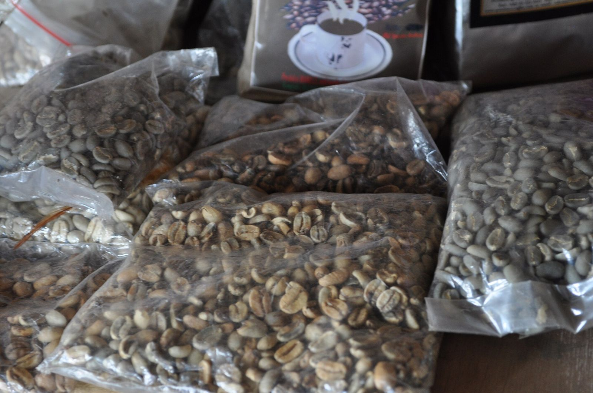
Du café vert en sachets, prêt à être vendu. Couleur, homogénéité et odeur donnent déjà une idée du soin apporté au tri et au séchage.Photo : USAID Indonesia · Public domain · Commonsauteur non renseigné · CC BY-SA 3.0 · Commons
6
Ce qu'il faut au caféier
Un thermostat, un calendrier de pluies, un sol qui draine.
Pense à la vigne. On peut planter du cabernet à peu près partout entre le 30e et le 50e parallèle, mais il ne fera pas le même vin à Bordeaux, dans la Napa et en Toscane, et il gèlera ou grillera ailleurs. Le caféier est encore plus exigeant. Il vit entre les tropiques, dans une bande qu'on appelle la ceinture du café, et à l'intérieur de cette bande il cherche une fourchette de températures étroite. C'est elle, plus que l'altitude ou le pays, qui décide où il pousse et comment il goûte.
La température d'abord
L'arabica donne le meilleur de lui-même vers 18 à 22 °C de moyenne annuelle. Au-dessus de 23 °C environ, la cerise mûrit trop vite, la graine se remplit mal et la tasse s'aplatit. Au-delà de 30 °C en journée, la plante souffre franchement : feuilles qui jaunissent ou brûlent, fleurs qui avortent (les Brésiliens appellent ces fleurs ratées des « petites étoiles »), photosynthèse qui s'arrête aux heures chaudes. Sous 15 °C de moyenne, la croissance ralentit beaucoup, et le gel tue les feuilles et les jeunes rameaux en une nuit, comme au Brésil en juillet 2021 (module 4). Le robusta, lui, se plaît vers 22 à 26 °C, supporte bien davantage, mais gèle encore plus vite que l'arabica.
La pluie, et surtout son calendrier
La référence agronomique classique donne à l'arabica 1 200 à 1 800 mm de pluie par an, à peu près deux fois Paris, et au robusta 1 500 à plus de 2 000 mm. Le total compte moins que la répartition. Le caféier a besoin d'une saison sèche de deux à trois mois pour que ses boutons floraux se forment puis s'endorment, et d'une pluie franche pour les réveiller tous ensemble. Sans saison sèche nette, comme dans une partie de la Colombie ou à Sumatra, les floraisons s'étalent, et on cueille presque toute l'année. Avec une saison sèche trop longue, comme dans le Cerrado brésilien, il faut irriguer. Et une pluie au mauvais moment fait des dégâts : sur des cerises mûres, elle les fait éclater ; pendant la récolte, elle empêche de sécher.
Les besoins de l'arabica et du robusta, et des exemples réels (ordres de grandeur)
Facteur
Arabica
Robusta
Exemples
Température moyenne
18-22 °C ; souffre au-delà de 30 °C en journée
22-26 °C et plus
Huila (Colombie) vers 1 700 m : autour de 19-20 °C. Hauts plateaux du Vietnam : 22-24 °C, robusta.
Gel
mortel pour feuilles et jeunes rameaux
encore plus sensible
Paraná (Brésil), 1975 ; Minas Gerais, juillet 2021.
Pluie annuelle
1 200-1 800 mm
1 500-2 000 mm et plus
Paris reçoit environ 640 mm par an.
Saison sèche
2-3 mois, pour grouper la floraison
utile aussi, plus tolérant
Brésil : une floraison groupée. Colombie, Kenya : deux saisons des pluies, deux récoltes.
Altitude près de l'équateur
1 000-2 200 m
0-800 m (jusqu'à 1 500 m en Ouganda)
Éthiopie, Kenya : 1 500-2 200 m. Vietnam : 500-800 m.
Cendres volcaniques à Antigua, au Kenya, à Kona ; sols rouges du Cerrado, à chauler.
Ombre
apprécie une ombre légère, surtout en zone chaude
supporte le plein soleil
Ombrage dense en Éthiopie et au Mexique ; plein soleil au Brésil.
Altitude et latitude, deux façons de trouver le frais
Sous les tropiques, la température baisse d'environ 0,6 °C tous les 100 m. Monter de 1 000 m, c'est perdre 6 °C, l'écart entre Marseille et Lille en été. Près de l'équateur, il faut grimper haut pour trouver les 18 à 22 °C de l'arabica : 1 500 à 2 200 m en Éthiopie et au Kenya. Plus on s'éloigne de l'équateur, plus on trouve cette fraîcheur bas. Dans le sud du Minas Gerais, vers 21° de latitude sud, 900 à 1 300 m suffisent. À Kona, sur l'île d'Hawaï, vers 19° nord, le café pousse sous 900 m, à l'abri des nuages de l'après-midi. Au Yémen, vers 15° nord, on monte jusqu'à 2 400 m sur des terrasses de pierre, pour fuir la chaleur du désert.
La fraîcheur nocturne ralentit la maturation, la graine se remplit plus longtemps, elle devient plus dense et plus riche en sucres et en acides. D'où la règle « plus c'est haut, plus c'est dense et acide », avec ses limites, que le module 14 détaille terroir par terroir. Retiens ici que l'altitude n'a de sens qu'avec la latitude : un 1 200 m brésilien et un 1 200 m colombien ne sont pas le même climat.
Figure 2.6. À gauche, la ceinture du café et quelques terroirs placés à leur latitude, avec leurs altitudes courantes : plus on s'éloigne de l'équateur, plus le café pousse bas. À droite, les plages de température moyenne annuelle ; les zones claires sont tolérées. Repères approximatifs.
Le sol
Le caféier veut un sol profond, meuble, qui draine bien, parce que ses racines fines vivent en surface et étouffent dans l'eau stagnante. Il le préfère légèrement acide, autour d'un pH de 5 à 6,5, riche en matière organique et en potassium. Les sols volcaniques cochent toutes les cases, et ce n'est pas un hasard si on cite si souvent Antigua au Guatemala, les pentes du mont Kenya, le Kilimandjaro ou les coulées de Kona. Le Cerrado brésilien montre l'inverse : des sols rouges, profonds mais pauvres et très acides, qu'on a rendus productifs à force de chaux et d'engrais, sur un plateau plat où passent les machines.
La pente compte aussi. Sur les versants très raides de Colombie ou d'Éthiopie, le sol part avec les averses si rien ne le couvre, et tout se fait à la main. Sur un plateau, on mécanise. Le relief décide donc du goût, par le climat, et du prix, par la main-d'œuvre.
L'ombre
Dans son milieu d'origine, l'arabica pousse sous la forêt. Beaucoup de producteurs gardent cette ombre, sous des Inga, des bananiers, des avocatiers ou des grands arbres de forêt. L'ombre rafraîchit les feuilles de plusieurs degrés, ralentit la maturation comme le ferait l'altitude, protège le sol, abrite les oiseaux et les insectes utiles, et donne parfois un deuxième revenu. En échange, elle coûte du rendement, et une ombre trop dense favorise certaines maladies comme l'ojo de gallo (section 7). Le module 4 compare plein soleil, ombrage modéré et café de forêt, chiffres à l'appui.
Des terrasses de caféiers au Yémen. Vers 15° nord, il faut monter très haut pour trouver la fraîcheur, et chaque mètre carré de terre a été retenu par un mur.Photo : Luai Al-Mamari · CC BY-SA 4.0 · CommonsCaféiers sous des arbres d'ombrage au Costa Rica. L'ombre fait gagner quelques degrés de fraîcheur, au prix d'un rendement plus faible.Photo : The original uploader was DirkvdM at English Wikipedia. · CC BY 1.0 · Commons
Retourne une feuille malade : des taches orange, poudreuses, comme du curry renversé. Frotte-les du doigt, ton doigt devient orange. Ce sont des millions de spores de rouille, prêtes à partir avec la prochaine pluie. Le caféier a une longue liste d'ennemis, et la plupart ne se goûtent pas directement dans ta tasse. Ils se voient dans les prix, dans les variétés que les producteurs plantent, dans le nombre de grains défectueux au tri, et dans les fermes qui abandonnent. Voici les six qu'il faut connaître, avec ce qui les favorise et ce qu'ils coûtent.
Rouille orangée
Agent : un champignon, Hemileia vastatrix. Symptômes : taches jaunes puis orange et poudreuses à la face inférieure des feuilles ; les feuilles tombent, les rameaux se dénudent. Conditions : chaleur et humidité ; les spores germent dans un film d'eau sur la feuille, entrent par les stomates, et les taches apparaissent quelques semaines plus tard. Pour le producteur : l'arbre défeuillé ne nourrit plus ses fruits, et la récolte de l'année suivante s'effondre. En tasse : aucun goût de rouille, mais des grains mal remplis et une maturation bâclée. Présente partout où l'on cultive l'arabica.
Anthracnose des baies (CBD)
Agent : un champignon, Colletotrichum kahawae. Symptômes : taches sombres et creuses sur les cerises vertes en pleine croissance, qui noircissent, sèchent et restent momifiées sur l'arbre ou tombent. Conditions : altitude, temps frais et humide pendant la croissance des fruits. Signalée au Kenya en 1922, limitée à l'Afrique. Pour le producteur : dans une parcelle sensible non traitée, une mauvaise année peut emporter la moitié de la récolte ou plus. En tasse : les cerises touchées donnent des grains bruns ou noirs, éliminés au tri s'il est bien fait. Ruiru 11 et Batian, au Kenya, lui résistent.
Scolyte des baies (broca)
Agent : un petit coléoptère noir, Hypothenemus hampei, moins de 2 mm. Symptômes : un trou rond à la couronne de la cerise, comme sur la photo ; la femelle pond dans la graine, que les larves dévorent de l'intérieur. Conditions : la chaleur ; il remonte en altitude avec elle. Cerises oubliées sur l'arbre ou au sol, qui lui servent de refuge entre deux récoltes. Pour le producteur : perte de poids, déclassement, grains percés. En tasse : les grains attaqués, souvent colonisés par des moisissures, donnent des goûts sales, aigres ou moisis s'ils passent le tri.
Nématodes
Agents : des vers microscopiques du sol, surtout Meloidogyne (qui forment des galles sur les racines) et Pratylenchus (qui y creusent des lésions). Symptômes : arbres chétifs, feuilles jaunes, flétrissement aux heures chaudes comme en pleine sécheresse alors que le sol est humide ; racines déformées, pourries. Conditions : sols légers, plants de pépinière contaminés. Brésil, Amérique centrale. Pour le producteur : des parcelles entières qui déclinent. Parade : plants sains, greffe sur porte-greffe de robusta résistant. En tasse : indirect, par des arbres affaiblis.
Ojo de gallo
Agent : un champignon, Mycena citricolor. Symptômes : des taches parfaitement rondes de quelques millimètres, beige ou grises, sur les feuilles et les fruits, d'où le nom d'« œil de coq » ; feuilles et cerises tombent. Conditions : fraîcheur, humidité permanente, ombrage trop dense, parcelles mal aérées. Amérique latine, surtout Costa Rica et Colombie. Pour le producteur : défoliation et chute de fruits par foyers. Parade : éclaircir l'ombrage, tailler, aérer. En tasse : indirect.
Mineuse des feuilles
Agent : un minuscule papillon, Leucoptera coffeella en Amérique, d'autres espèces du même genre en Afrique. Symptômes : les chenilles creusent des galeries entre les deux faces de la feuille, qui forment des plaques brunes et sèches. Conditions : chaleur, saison sèche, plein soleil. Gros problème dans le Cerrado brésilien. Pour le producteur : perte de feuilles, donc de récolte future. Parade : ennemis naturels (guêpes), ombrage, variétés issues de croisements avec C. racemosa. En tasse : indirect.
2012-2013, l'Amérique centrale à genoux
Pendant des décennies, l'Amérique centrale a vécu avec la rouille sans trop de dégâts au-dessus de 1 200 m, où il faisait trop frais pour elle. En 2012, tout s'est mal aligné. Des nuits plus chaudes et des pluies abondantes ont favorisé le champignon jusqu'en altitude. Des années de prix bas avaient poussé les producteurs à réduire les engrais et les traitements, et les arbres étaient affaiblis. Et les parcelles étaient remplies de variétés sensibles, Caturra et Catuaí en tête. Le réseau régional PROMECAFÉ a estimé les pertes de la campagne 2012-2013 à environ 2,7 millions de sacs, et des centaines de milliers d'emplois de cueilleurs ont disparu. Au Guatemala et au Salvador, la plus grande partie des surfaces a été touchée. Le module 3 raconte comment les variétés résistantes, de l'hybride de Timor aux hybrides F1, ont été la réponse, avec leurs limites : le champignon compte plus de 55 races connues et finit par contourner certaines résistances.
La rouille ne se goûte pas dans la tasse. Elle se goûte dans le prix, et dans les variétés qu'on plante ensuite.
Le scolyte, l'ennemi le plus coûteux
Le scolyte vient d'Afrique centrale et a suivi le café partout. Signalé au Brésil au début du XXe siècle, en Colombie en 1988, à Porto Rico en 2007, à Kona en 2010, il est aujourd'hui présent dans presque tous les pays producteurs. On estime souvent ses dégâts à plusieurs centaines de millions de dollars par an. Sa biologie explique pourquoi il est si dur à combattre : la femelle entre dans la cerise par la couronne, pond dans la graine, et toute la famille vit à l'abri à l'intérieur, hors d'atteinte de presque tous les traitements. Les mâles ne volent même pas, ils restent dans la cerise et s'accouplent avec leurs sœurs. Seules les femelles fécondées sortent chercher une nouvelle cerise.
La lutte la plus efficace est la plus banale : ne rien laisser traîner. Cenicafé, en Colombie, appelle ça le « re-re », ramasser et repasser, pour qu'aucune cerise mûre, surmûre ou sèche ne reste sur l'arbre ni au sol à la fin de la récolte. On y ajoute des pièges à alcool (un mélange de méthanol et d'éthanol qui imite l'odeur des cerises qui fermentent) et un champignon, Beauveria bassiana, qu'on pulvérise et qui parasite l'insecte. La chimie vient en dernier recours. Et le réchauffement lui ouvre des terres nouvelles : sur le Kilimandjaro, Juliana Jaramillo et ses collègues l'ont trouvé en 2011 environ 300 m plus haut qu'une décennie plus tôt, alors qu'il était rare au-dessus de 1 500 m en Afrique de l'Est jusqu'au début des années 2000.
Les six ennemis en un coup d'œil
Ennemi
Type
Partie touchée
Aime
Où
Dans la tasse
Rouille
champignon
feuilles
chaleur, humidité
partout
indirect : grains mal remplis
Anthracnose (CBD)
champignon
cerises vertes
frais et humide, altitude
Afrique
grains bruns ou noirs si mal triés
Scolyte
insecte
graine
chaleur, cerises oubliées
partout
direct : sale, aigre, moisi
Nématodes
vers du sol
racines
sols légers, plants contaminés
Amérique latine surtout
indirect
Ojo de gallo
champignon
feuilles, fruits
ombre dense, humidité
Amérique latine
indirect
Mineuse
papillon
feuilles
chaleur sèche, plein soleil
Brésil, Afrique
indirect
Deux autres noms à connaître
La trachéomycose, un Fusarium qui bouche les vaisseaux de l'arbre et le fait flétrir d'un coup, a tué des millions de robustas en Ouganda et en République démocratique du Congo à partir des années 1990 ; les clones résistants en sont la réponse. Et dans la région des Grands Lacs, au Rwanda et au Burundi, une punaise, l'antestia, est associée au défaut le plus célèbre de ces cafés, le goût de pomme de terre crue : une seule tasse touchée sur une table de cupping, et tout le monde le sent (module 14).
8. Un arbre qui n'aime pas le réchauffement
Un caféier vit trente ans au même endroit. Celui qu'un producteur plante cette année produira encore en 2055, sous un climat que personne ne connaît. Pour une plante qui supporte mal plus de 23 °C de moyenne, qui gèle à 0 °C, qui veut une saison sèche nette et une pluie au bon moment, chaque degré compte. Et l'arabica part avec un handicap : très peu de diversité génétique pour s'adapter (section 2).
Ce que disent les projections
L'étude la plus citée, celle de Christian Bunn et de ses collègues dans Climatic Change en 2015 (« A bitter cup »), estime que les surfaces favorables au café pourraient reculer d'environ 50 % d'ici 2050, quel que soit le scénario d'émissions. Les pertes les plus fortes toucheraient le Brésil et le Vietnam, les deux premiers producteurs, et les zones basses en général. Quelques régions gagneraient en altitude, en Afrique de l'Est et en Asie, souvent sur des terres aujourd'hui couvertes de forêt. Pour l'Éthiopie, berceau de l'arabica, Justin Moat et ses collègues (Nature Plants, 2017) estiment qu'entre 39 et 59 % des zones caféières actuelles pourraient devenir impropres d'ici la fin du siècle, sauf à déplacer les cultures vers le haut.
Ces modèles ont leurs contradicteurs. Fábio DaMatta et ses collègues (Climatic Change, 2019) rappellent que la hausse du CO2 dans l'air stimule la photosynthèse du caféier et l'aide à supporter la chaleur : des modèles fondés sur le seul climat surestimeraient donc les pertes. Le débat reste ouvert. Ce qui ne l'est plus, c'est la fragilité de l'offre. La gelée de juillet 2021 au Brésil, puis des sécheresses à répétition au Brésil et au Vietnam, ont fait grimper les cours jusqu'à des records en 2024 et 2025 : début 2025, l'arabica a dépassé 4 dollars la livre à New York. C'est une des raisons pour lesquelles ton kilo d'Ïota coûte ce qu'il coûte.
39-59 %des zones caféières éthiopiennes menacées d'ici 2100 (Moat et al., 2017)
+300 mla montée du scolyte sur le Kilimandjaro en une décennie
−0,6 °Cpar 100 m d'altitude : la marge de repli
Ce qui change déjà au champ
Les effets ne sont pas tous pour 2050. Les producteurs décrivent déjà des floraisons désordonnées, parce que les pluies arrivent par à-coups et réveillent les boutons en plusieurs fois, d'où des cerises de maturités mélangées sur la même branche et une cueillette plus chère. Des fleurs avortées par les coups de chaleur. Des maladies et des ravageurs qui montent en altitude, comme la rouille en 2012 et le scolyte au Kilimandjaro. Et des récoltes qui mûrissent plus vite, ce qui, tu l'as vu, donne des grains moins denses et des tasses moins vives.
Les parades
Monter. Planter plus haut, là où il fait encore frais. Efficace, mais limité par le relief, et souvent au prix d'un défrichement de forêt, qui aggrave le problème.
Ombrager. Des arbres d'ombrage font gagner plusieurs degrés au niveau des feuilles et protègent le sol de la sécheresse. C'est la parade la moins chère, et elle coûte du rendement.
Irriguer et couvrir le sol. Là où il y a de l'eau, l'irrigation sauve la floraison. Partout, un sol couvert garde mieux l'humidité.
Changer de variété. Hybrides F1 plus vigoureux, lignées tolérantes à la chaleur et à la rouille, réseau mondial de sélection Innovea lancé en 2022 par World Coffee Research (module 3).
Changer d'espèce. Remplacer l'arabica par du robusta dans les zones basses, comme le Brésil le fait déjà, et regarder du côté du liberica, de l'excelsa et du stenophylla, qui supportent la chaleur.
Changer de pays. Les cartes de Bunn montrent des gains possibles plus loin de l'équateur. Des plantations expérimentales existent déjà en Californie, et le Yunnan, en Chine, a beaucoup développé son café ces dernières décennies.
Tout ce module tient en trois questions que tu entendras derrière la Linea. Ce qui compte, c'est d'y répondre en trois phrases, sans cours magistral, et sans rien affirmer que tu ne sais pas. Pour tout ce qui concerne les cafés de la boutique (variété, altitude, process), ta seule référence est la fiche d'Ïota.
Arabica ou robusta : ce que tu peux voir, sentir et goûter
Indice
Arabica
Robusta
Grain vert
allongé, sillon en S
plus petit, rond, sillon droit
Odeur du moulu
fruit, fleurs, caramel
céréale grillée, cacao amer, terre
Crema en espresso
plus fine, plus claire, tombe plus vite
épaisse, brun-noisette, tient longtemps
En bouche
acidité, douceur, longueur aromatique
corps, amertume, peu d'acidité
Avec du lait
se fait parfois discret
traverse le lait sans difficulté
Caféine
≈ 1,2 % du grain
≈ 2,2 %, presque le double
Si tu ne devais garder que ça
Le café est la graine d'une drupe, la cerise, portée par un arbuste du genre Coffea (130 espèces, famille du gardénia). Les fruits poussent sur les rameaux horizontaux, sur le bois de l'an dernier.
Une fleur vit deux à trois jours ; la cerise d'arabica mûrit en 7 à 9 mois, celle du robusta en 9 à 11. La densité se fait pendant le remplissage, la couleur arrive à la fin.
Arabica : 44 chromosomes, hybride d'eugenioides (la mère) et de canephora, se féconde lui-même, 1 000-2 200 m, ≈ 1,2 % de caféine, riche en sucres et en huiles.
Robusta : 22 chromosomes, refuse son propre pollen, plaine, ≈ 2,2 % de caféine, plus amer et plus corsé, crema épaisse.
Liberica, excelsa, stenophylla, eugenioides : moins de 2 % du marché, mais une réserve pour le climat de demain. 60 % des espèces sauvages sont menacées.
De dehors en dedans : peau, pulpe, mucilage, parche, pellicule argentée, graine, embryon. Chaque process se définit par les couches qu'il garde pendant le séchage.
Le caracoli est une graine seule dans sa cerise, devenue ronde. Une forme, pas une variété.
L'arabica veut 18-22 °C, une saison sèche nette, un sol drainant légèrement acide. L'altitude ne se lit qu'avec la latitude.
Rouille, anthracnose, scolyte, nématodes, ojo de gallo, mineuse : la plupart ne se goûtent pas, ils se paient. Le scolyte, lui, laisse des grains percés et sales.
Le réchauffement pourrait réduire de moitié les surfaces favorables d'ici 2050 ; ombre, altitude, variétés et autres espèces sont les parades.
Deux caféiers plantés côte à côte, même sol, même pluie, même cueilleur. L'un donne un café rond qui sent la noisette, l'autre une tasse qui sent la bergamote et le jasmin. Ce qui les sépare tient dans une ligne du sachet que presque personne ne lit : la variété. On va apprendre à la lire, à la raconter, et à savoir ce qu'elle promet et ce qu'elle ne promet pas.
U. S. Fish and Wildlife Service - Northeast Region · Public domain · Commons
Aligne trois sachets sur le comptoir. Sur le premier, à la ligne « variété », il est écrit Heirloom. Sur le deuxième, « Caturra, Catuaí ». Sur le troisième, « Geisha ». Ces trois mots ne désignent pas du tout le même genre de chose. Le premier veut dire « on ne sait pas trop, mais c'est éthiopien ». Le deuxième nomme deux variétés précises, sélectionnées au Brésil au XXe siècle, qui poussent mélangées sur la même ferme. Le troisième désigne une population venue d'une forêt d'Éthiopie, passée par trois pays et deux centres de recherche avant de devenir le café le plus cher du monde.
Le mot « variété » sert à tout dans le café. On l'emploie pour une espèce entière (le robusta), pour une mutation d'un seul gène (Caturra), pour un mélange de lignées vendu sous un seul nom (Castillo), pour une population forestière que personne n'a jamais sélectionnée. Tant que ces mots restent flous, tu ne peux ni lire une fiche ni répondre juste à un client. Alors on les pose, du plus large au plus étroit.
Espèce
Le rang botanique de base. Coffea arabica, Coffea canephora (le robusta), Coffea liberica. On connaît plus de 130 espèces de caféiers, on en boit surtout deux. Deux espèces se croisent rarement, et quand ça arrive, ça fait date (tu le verras avec l'hybride de Timor).
Variété
Dans une espèce, un groupe de plantes qui partagent des caractères héritables et stables : hauteur, couleur des jeunes feuilles, couleur du fruit, forme du grain, comportement face aux maladies, profil en tasse. Bourbon, Typica, SL28 sont des variétés d'arabica.
Cultivar
Contraction de cultivated variety. Une variété sélectionnée et entretenue par l'homme. En pratique, tout le monde dit « variété » à la place, et les anglophones disent souvent varietal, ce qui fait hurler les botanistes. Ne te bats pas là-dessus.
Lignée
La descendance d'un ou de quelques arbres choisis, multipliée par graines génération après génération. SL28 descend d'un seul arbre repéré en 1935. Toute la lignée Typica remonte, pour presque tout ce qui pousse en Amérique, à un plant du jardin botanique d'Amsterdam.
Landrace, ou variété-population
Une population locale, hétérogène, façonnée par le milieu et par les paysans plutôt que par un sélectionneur. C'est ce qui pousse dans les forêts et les jardins d'Éthiopie. Le mot anglais heirloom (« de famille ») dit à peu près la même chose, en plus vague, et c'est surtout un mot de marketing.
Mutation
Le changement spontané d'un gène, transmis aux descendants. Un jour, dans un champ, un arbre sort du lot : plus petit (Caturra), géant (Maragogipe), en forme de sapin avec moitié moins de caféine (Laurina). Quelqu'un le remarque, récolte ses graines, et une variété naît.
Hybride F1
La première génération (first filial) d'un croisement entre deux parents éloignés. Elle est vigoureuse, souvent plus productive que ses deux parents. Mais si tu replantes ses graines, la génération suivante part dans tous les sens : il faut la multiplier par bouture ou en laboratoire.
Composite
Un mélange volontaire de lignées sœurs, vendu sous un seul nom, pour que la résistance aux maladies repose sur plusieurs gènes à la fois. Castillo, en Colombie, et Ruiru 11, au Kenya, sont des composites.
Pourquoi un arabica reste un arabica
Il y a une raison simple pour laquelle on peut parler de variétés stables chez l'arabica, et beaucoup moins chez le robusta. La fleur d'arabica se féconde elle-même dans la très grande majorité des cas, avant même de s'ouvrir complètement. Les graines d'un Bourbon donnent donc des Bourbon, et un producteur peut replanter ses propres semences pendant des générations sans que la variété dérive beaucoup. Le robusta fait l'inverse : sa fleur doit recevoir le pollen d'un autre arbre, compatible. Chaque graine donne un individu différent de ses parents. C'est pour ça que les « variétés » de robusta sont souvent des assemblages de clones, multipliés par bouture (on y revient à la section 10).
Cette autofécondation a un prix. Une espèce qui se féconde elle-même brasse peu ses gènes. Et l'arabica part déjà d'une base très étroite.
Une seule plante au départ, quelques arbres à l'arrivée
L'arabica est né dans le sud-ouest de l'Éthiopie et sur le plateau de Boma, au Soudan du Sud, du croisement naturel de deux espèces sauvages, Coffea canephora et Coffea eugenioides. Ce croisement a doublé son nombre de chromosomes : 44 chez l'arabica, 22 chez ses parents. Il s'est produit une seule fois, ou presque, et toute l'espèce descend de cette plante. Les forêts éthiopiennes gardent encore la plus grande partie de la diversité qui s'est accumulée depuis.
Ensuite, deuxième rétrécissement. Ce qui a quitté l'Éthiopie pour le Yémen, puis le Yémen pour le reste du monde, tenait dans quelques sacs de graines et quelques plants. La lignée Typica, qui a peuplé l'Asie puis l'Amérique, remonte surtout à un caféier transporté de Java au jardin botanique d'Amsterdam en 1706. La lignée Bourbon remonte aux quelques plants qui ont survécu sur l'île Bourbon (La Réunion) à trois introductions françaises, entre 1708 et 1718. Selon World Coffee Research, 97,55 % des cultivars du Brésil dérivent de ces deux lignées.
1plante ancêtre de toute l'espèce arabica
44chromosomes chez l'arabica, 22 chez le robusta
1706le plant de Java arrive à Amsterdam
97,55 %des cultivars brésiliens issus de Typica et Bourbon
Pense à une cave où tous les vins viendraient de deux pieds de vigne. Tant que le climat est doux et qu'aucune maladie ne trouve la faille, tout va bien. Le jour où un champignon sait attaquer ces deux pieds-là, il sait attaquer toute la cave. C'est exactement ce qui est arrivé avec la rouille, au Sri Lanka dans les années 1870 puis en Amérique centrale en 2012. Toute la recherche variétale moderne, des Catimors aux hybrides F1, est une course pour réintroduire de la diversité dans une espèce qui en manque.
2. Ce que la variété décide, et ce qu'elle laisse aux autres
Pour un producteur, choisir une variété engage vingt ou trente ans de récoltes. Un caféier commence à produire vers sa troisième ou quatrième année et peut tenir des décennies. On ne change pas de variété comme on change de recette de brunch. Ça explique pourquoi des variétés à la réputation gustative moyenne ont envahi des pays entiers : au champ, elles résolvaient un problème qui coûtait plus cher que quelques points de dégustation.
Au champ
Ce que la variété fixe sur la ferme
Critère
Pourquoi le producteur s'en soucie
Exemple
Hauteur, port
Un arbre bas se cueille sans échelle et se plante serré : plus de pieds par hectare, donc plus de cerises.
Typica, 3 000 à 4 000 pieds/ha ; Caturra, 5 000 à 10 000.
Rendement
Ce que la ferme vend chaque année. Il dépend aussi de l'engrais, de l'âge et de la taille.
Bourbon : couramment 20 à 30 % de plus que Typica.
Première récolte
Une variété lente laisse le producteur sans revenu plus longtemps après une replantation.
Typica : vers la quatrième année. Batian : dès la deuxième.
Maladies
Rouille, anthracnose des baies (CBD), nématodes. Une variété sensible impose des fongicides ou des pertes.
Caturra très sensible à la rouille ; Castillo résistant.
Altitude optimale
Certaines variétés ne donnent leur meilleur qu'en haut, d'autres tiennent mieux la chaleur.
Gesha brille au-dessus de 1 500 m au Panama ; Catuaí tient bien plus bas.
Taille du grain
Le gros calibre se paie mieux sur certains marchés, et il torréfie différemment.
Maragogipe et Pacamara, grains énormes ; Laurina, petits et pointus.
Figure 3.1. Quatre ports à la même échelle (hauteurs indicatives d'arbres taillés, traits bruns = étages de branches). Un seul gène rapproche les étages du Caturra : l'arbre reste bas et on en plante deux fois plus à l'hectare. Densités : catalogue World Coffee Research et Cenicafé.
Un caféier arabica de trois ans, photographie ancienne conservée à la BnF. À cet âge, l'arbre donne ses premières vraies récoltes.Photo : auteur non renseigné · Public domain · CommonsDu café vert. Taille et forme des grains bougent avec la variété, mais aussi avec l'altitude et la nutrition de l'arbre.Photo : Fernando Rebêlo · CC BY-SA 3.0 · Commons
Dans la tasse
Fais l'analogie avec le vin, tu la tiens déjà. La variété, c'est le cépage. Un Gamay ne deviendra jamais un Syrah, quelle que soit la cave. Mais un Gamay de grand cru du Beaujolais et un Gamay de plaine vendangé trop tôt n'ont presque rien en commun. Le café marche pareil. La variété fixe une direction et un potentiel : le type d'arômes (floral chez le Gesha, cassis et tomate chez les SL kényans, chocolat et noisette chez beaucoup de Bourbon brésiliens), le genre d'acidité, la douceur, le corps.
Tout le reste est entre les mains d'autres gens. L'altitude et le climat règlent la vitesse de maturation : plus c'est haut et frais, plus la cerise mûrit lentement, plus le grain est dense et l'acidité dessinée. La cueillette décide de la maturité. Le process (module 5) peut amplifier ou écraser ce que la variété apporte. Le torréfacteur et toi, au moulin, faites le dernier bout. Un Gesha cueilli vert et séché à la va-vite sera moins bon qu'un Catuaí soigné de bout en bout. Ça arrive tous les ans.
La variété, c'est un plafond. Personne ne te garantit que le producteur l'a atteint.
Ce que les chimistes mesurent confirme l'image. Les variétés diffèrent dans leur teneur en caféine (Laurina en a moitié moins), en acides chlorogéniques, en sucres, en lipides, en précurseurs d'arômes. Mais quand on cultive les mêmes variétés à plusieurs altitudes, l'effet du lieu est souvent aussi fort que celui de la génétique. L'essai Castillo contre Caturra, en Colombie, l'a montré en 2014 (section 9) : les dégustateurs ne séparaient pas les deux variétés, ils séparaient les fermes.
3. L'arbre de famille
Tu vas croiser une trentaine de noms dans ce module. Pour ne pas t'y perdre, accroche chacun à l'une des quatre racines du schéma ci-dessous. Presque toutes les variétés que tu liras sur un sachet sortent de là.
Les éthiopiennes, en vert : des milliers de populations locales, presque toute la diversité de l'espèce. Le Gesha et les sélections de Jimma en viennent.
Typica, en brun : la lignée partie du Yémen vers l'Inde, Java, Amsterdam, puis l'Amérique.
Bourbon, en rouge : la lignée passée par La Réunion, mère des mutations naines et donc de presque toutes les variétés compactes.
L'hybride de Timor, en bleu : un croisement spontané arabica × robusta, porteur des gènes de résistance à la rouille.
Les hybrides F1, en jaune, en bas du schéma, marient le plus souvent deux de ces racines : un parent résistant venu de la branche bleue, un parent aromatique venu de la branche verte.
Figure 3.2. L'arbre généalogique simplifié de l'arabica cultivé. Quatre racines, et presque tout le reste en découle. Les croisements récents (Catuaí, Pacamara, Ruiru 11) ont deux parents, d'où les traits qui traversent les colonnes. Sources : catalogue World Coffee Research, Cenicafé, CIRAD.
Deux lectures à retenir. La colonne verte, à gauche, est presque vide de dates : la plupart de ces variétés n'ont pas été créées, elles ont été trouvées, souvent sans qu'on sache exactement d'où sortaient les graines. La colonne bleue, à droite, est au contraire pleine de dates et de numéros de lignées : c'est le travail des instituts de recherche depuis les années 1950, avec un seul objectif au départ, tenir face à la rouille.
Et au milieu, le Bourbon et ses nains. Caturra, Pacas et Villa Sarchí portent la même mutation, apparue trois fois, au Brésil, au Salvador et au Costa Rica. Cette petite taille, croisée ensuite avec tout le reste, se retrouve dans Catuaí, Pacamara, les Catimors, les Sarchimors, Castillo. Quand tu vois une plantation moderne aux rangs serrés et aux arbres à hauteur d'homme, tu regardes presque toujours un descendant du Bourbon.
José Rosael/Hélio Nobre/Museu Paulista da USP · Public domain · Commons
4
Typica et Bourbon, deux voyages
Comment quelques graines du Yémen ont planté la moitié du monde.
L'histoire commence au Yémen, où le caféier est cultivé en terrasses depuis au moins le XVe siècle, avec des graines venues de l'autre côté de la mer Rouge, d'Éthiopie. Pendant longtemps, les marchands du port de Moka gardent le monopole. Ils vendent du café, pas des arbres, et la légende dit que les grains partaient ébouillantés ou grillés pour qu'ils ne germent pas ailleurs. Vrai ou faux, le résultat est le même : pendant un siècle et demi, quiconque voulait du café passait par Moka.
Figure 3.3. Trois voyages. Typica (brun) fait le tour par l'Asie et l'Europe avant de traverser l'Atlantique. Bourbon (rouge) passe par La Réunion, puis gagne le Brésil et le Kenya. Le Gesha (vert) part d'Éthiopie au XXe siècle et mettra soixante-dix ans à devenir célèbre. Pointillés : route directe des Hollandais vers leur colonie d'Amérique du Sud.
Typica, le voyageur au long cours
Selon la tradition, vers 1670, un pèlerin soufi, Baba Budan, sort sept graines du Yémen cachées dans sa ceinture et les plante dans les collines de Chikmagalur, dans le sud de l'Inde. Les Hollandais, eux, ne cachent rien : en 1696 puis en 1699, ils expédient des plants de la côte de Malabar vers Java, leur colonie. Le café pousse bien là-bas, si bien qu'un plant repart en 1706 pour le jardin botanique d'Amsterdam. C'est ce caféier-là, et ses descendants, qu'on appelle Typica, le « type » de l'espèce pour les botanistes de l'époque.
En 1714, la ville d'Amsterdam offre un descendant de ce plant à Louis XIV. Il finit dans les serres du Jardin du roi, l'actuel Jardin des plantes, à Paris. Les Hollandais, de leur côté, plantent du café dans leur colonie de Guyane, l'actuel Suriname, dès 1719. Vers 1720, un officier de marine, Gabriel de Clieu, emporte un plant parisien vers la Martinique. Son récit, où il partage sa ration d'eau avec la plante pendant la traversée, tient en partie de la légende. Le résultat, lui, est historique : en quelques décennies, le café gagne les Antilles, puis la Jamaïque, puis tout le continent. Jusqu'aux années 1940, l'Amérique latine boit presque uniquement du Typica.
Une plantation de l'État de São Paulo, photographie ancienne de la Bibliothèque du Congrès. Les grands arbres plantés espacés étaient la norme avant les variétés naines.Photo : National Photo Company Collection · Public domain · Commons
Bourbon, l'insulaire
Les Français veulent leur propre café et visent l'île Bourbon, aujourd'hui La Réunion. Ils y introduisent des caféiers du Yémen en 1708, en 1715 et en 1718. Les premières tentatives meurent. Quelques plants des dernières survivent, et c'est d'eux que sort la lignée Bourbon. Pendant plus d'un siècle, elle reste sur l'île.
Elle n'en sort qu'au milieu du XIXe siècle. Vers 1860, elle arrive au Brésil, près de Campinas, dans l'État de São Paulo. Les planteurs remarquent vite qu'elle produit plus que le Typica, et elle le remplace peu à peu dans les grandes fazendas. Au même moment, les missionnaires spiritains, installés à La Réunion depuis 1841, l'emportent en Afrique de l'Est. En 1893, ils plantent du café près de Nairobi, au Kenya. Pendant des décennies, les acheteurs appelleront le café de ces hauts plateaux « French Mission ». Plus tard, les SL kényans sortiront en partie de cette lignée.
Comment les reconnaître au champ
Dans la pratique, les agronomes regardent d'abord les jeunes feuilles au bout des branches. Bronze, cuivrées chez le Typica. Vertes chez le Bourbon. Ensuite la silhouette : le Typica monte en cône, avec des branches latérales qui partent presque à l'horizontale et des entre-nœuds longs, donc peu de cerises par mètre de branche. Le Bourbon est plus dense, plus rond, avec des feuilles plus larges aux bords ondulés et des entre-nœuds plus courts. Ses grains sont plus petits et plus ronds que les grains allongés du Typica.
Avant d'ouvrir les fiches, un mot sur leur lecture. Le dessin montre la hauteur d'un arbre taillé et la taille relative du grain. Les jauges sur 5 donnent le rendement, la résistance aux maladies (surtout la rouille), puis trois tendances en tasse quand la variété pousse à bonne altitude et qu'elle est bien travaillée : l'acidité, le corps et le parfum, c'est-à-dire l'intensité aromatique. Ce sont des repères pour comparer, pas des notes de concours.
Grand cône, jeunes feuilles bronze, grain allongé.
Rendement
Résistance
Acidité
Corps
Parfum
Typica
L'ancêtre de presque tout ce qui pousse en Amérique et en Asie. Un arbre élégant et peu rentable : faible rendement, première récolte vers la quatrième année, très sensible à la rouille, à l'anthracnose des baies et aux nématodes. Il a survécu là où la qualité paie et où l'image compte, à la Jamaïque, à Hawaï, au Pérou, en Papouasie-Nouvelle-Guinée.
Origine : Yémen, puis Java et Amsterdam, 1706.
Port : haut, 3,5 à 4 m taillé, en cône.
Altitude : à son meilleur en haute altitude, au-dessus de 1 500 m près de l'équateur.
Rouille : très sensible.
Grain : grand, allongé.
Où : Jamaïque (Blue Mountain), Hawaï (Kona), Pérou, Bolivie, Papouasie-Nouvelle-Guinée, quelques fermes d'Amérique centrale.
En tasse, une douceur propre, une acidité fine. Rarement spectaculaire, souvent très net.
sucre de canne
orange douce
amande
fleurs blanches
Cerises rouges bien mûres. La couleur du fruit est un caractère de variété, la maturité est l'affaire du cueilleur.Photo : Jyppe Quidores · CC BY-SA 4.0 · Commons
Rendement
Résistance
Acidité
Corps
Parfum
Bourbon (rouge)
La base des grands cafés du Salvador, du Guatemala, du Rwanda et du Burundi. On lui attribue couramment 20 à 30 % de rendement de plus que le Typica, pour la même fragilité face aux maladies. C'est la variété des cafés « sucrés » : quand un dégustateur dit d'un Rwanda qu'il a le goût de la pomme cuite au caramel, il parle souvent d'un Bourbon.
Origine : île Bourbon (La Réunion), 1708-1718.
Port : haut, 3 à 4 m, dense, jeunes feuilles vertes.
Altitude : haute, 1 200 à 2 000 m selon la latitude.
Rouille : très sensible.
Grain : moyen, plutôt rond.
Où : Salvador, Guatemala, Rwanda, Burundi, Brésil, Colombie (Nariño, Huila), Kenya en petites quantités.
caramel
pomme rouge
abricot
chocolat au lait
orange
Cerises jaunes et orangées à Chinchiná, en Colombie. Plusieurs variétés portent des fruits jaunes ; la photo ne dit pas laquelle.Photo : Ricohin · CC BY 3.0 · Commons
Rendement
Résistance
Acidité
Corps
Parfum
Bourbon jaune (Bourbon amarelo)
Repéré au Brésil dans les années 1930, il viendrait d'un croisement naturel entre un Bourbon rouge et un Typica à fruits jaunes, l'Amarelo de Botucatu. La couleur jaune est un caractère récessif : il faut que les deux parents la transmettent pour qu'elle apparaisse.
Au champ, la cerise jaune pose un problème au cueilleur : entre « presque mûre » et « mûre », la différence se voit beaucoup moins que sur une rouge. Les bonnes fermes forment leurs équipes à la reconnaître, au toucher autant qu'à l'œil.
Origine : Brésil, années 1930.
Port : haut, comme le Bourbon rouge.
Rouille : très sensible.
Où : Brésil (Sul de Minas, Mogiana), Salvador, Colombie, Rwanda en petits lots.
miel
pêche jaune
sucre roux
noisette
Même arbre que le Bourbon, cerises roses à orangées.
Rendement
Résistance
Acidité
Corps
Parfum
Bourbon rose (Bourbon rosado)
Quand un Bourbon rouge et un Bourbon jaune poussent côte à côte, des croisements naturels peuvent porter des cerises roses : c'est l'explication classique des « Bourbon rosado » de Colombie et du Salvador. Le caractère est instable, les graines redonnent un mélange de couleurs.
Attention à la confusion. Le « Pink Bourbon » de la région de Huila, devenu à la mode dans les années 2010, a été rapproché par des tests génétiques des populations éthiopiennes, et n'aurait rien à voir avec ce croisement. Tu le retrouves dans les variétés éthiopiennes, section 7.
Origine : croisements spontanés rouge × jaune, Amérique latine.
Rouille : très sensible, comme ses parents.
Où : Colombie, Salvador, en micro-lots.
fraise
caramel
orange sanguine
Forme de sapin, petites feuilles, grain pointu.
Rendement
Résistance
Acidité
Corps
Parfum
Bourbon pointu, ou Laurina
Une mutation apparue sur l'île Bourbon elle-même. L'arbre prend une forme de petit sapin, ses feuilles sont petites, ses grains effilés aux deux bouts. Surtout, il contient environ moitié moins de caféine qu'un arabica ordinaire : de l'ordre de 0,6 à 0,75 % de la matière sèche, contre 1,2 à 1,5 %. Moins de caféine, c'est aussi moins d'amertume, et une tasse douce, ronde, qui surprend.
Le revers : un arbre fragile, peu productif, très sensible à la rouille. Presque disparu, il a été relancé à La Réunion dans les années 2000.
Origine : île Bourbon, mutation du Bourbon.
Port : conique, 2 à 3 m.
Caféine : environ la moitié d'un arabica classique.
Le XXe siècle latino-américain réinvente le caféier.
Au début du XXe siècle, un planteur brésilien a deux problèmes : ses Typica et ses Bourbon montent à quatre mètres, donc il faut des échelles et beaucoup de bras pour cueillir, et ils produisent peu à l'hectare. Deux sources de nouveauté s'offrent à lui. Les mutations spontanées, qu'un œil attentif repère un jour dans une rangée. Et les croisements, naturels ou faits à la main, entre ce qui existe déjà. L'institut agronomique de Campinas, l'IAC, fondé en 1887, va industrialiser les deux.
Le nain qui a changé les paysages
Entre 1915 et 1918, dans le Minas Gerais, on remarque un Bourbon qui reste petit. Un seul gène raccourcit ses entre-nœuds : les étages de branches se serrent, l'arbre plafonne vers deux mètres, et il porte autant de cerises sur une hauteur moitié moindre. L'IAC le sélectionne à partir de 1937. Curieusement, il fait une carrière modeste au Brésil et triomphe ailleurs : en Colombie et en Amérique centrale, à partir des années 1970.
Avec lui arrive une autre façon de cultiver. En Colombie, la « technification » des années 1970 et 1980 remplace les vieux Typica sous ombrage par des rangs serrés de Caturra en plein soleil, avec beaucoup d'engrais. Les rendements bondissent. Les paysages aussi changent : les collines de l'axe caféier prennent l'allure de tapis verts réguliers qu'on voit aujourd'hui sur les cartes postales. Le revers viendra plus tard, avec la rouille, à laquelle le Caturra n'oppose aucune défense.
La même mutation est apparue deux autres fois. Au Salvador en 1949, sur la ferme de la famille Pacas, d'où le nom. Au Costa Rica, près de la ville de Sarchí, d'où Villa Sarchí. Au Guatemala, une mutation naine du Typica, le Pache, suit la même logique. Ces nains se ressemblent tellement que seul le registre de la ferme permet parfois de dire lequel pousse dans une parcelle.
Le géant de Bahia
À l'inverse, en 1870, près de la ville de Maragogipe, dans l'État de Bahia, on repère un Typica géant : grandes feuilles, entre-nœuds très longs, et des grains énormes, les plus gros de l'espèce. Les acheteurs l'ont surnommé « grain d'éléphant ». Le gène est dominant, il passe facilement à la descendance, et c'est surtout comme parent que le Maragogipe a compté.
Les croisements de Campinas et de San Salvador
En 1943, dans l'État de São Paulo, on trouve un croisement naturel entre Typica et Bourbon, très vigoureux. Il est distribué à partir de 1952 sous le nom de Mundo Novo, et il couvre vite des milliers d'hectares au Brésil. En 1949, l'IAC croise un Caturra à fruits jaunes avec ce Mundo Novo. Il faut plus de vingt ans de sélection, génération après génération, pour fixer un arbre compact et productif : le Catuaí, diffusé en 1972. Son nom viendrait du tupi-guarani et voudrait dire « très bon ». Aujourd'hui, Catuaí et Mundo Novo fournissent la plus grande partie du café brésilien que tu bois dans les assemblages espresso.
Au Salvador, l'institut national du café (ISIC) croise à partir de 1958 le Pacas et le Maragogipe. Il en sort le Pacamara, un arbre compact aux grains énormes, long à stabiliser, qui va devenir la star des concours salvadoriens. Le même principe a donné le Maracaturra (Maragogipe × Caturra) au Nicaragua.
Rangs de caféiers après le passage d'une récolteuse mécanique, au Brésil. Les variétés compactes et régulières se prêtent à ce type de récolte, qui demande des rangs droits et des arbres de hauteur homogène.Photo : Jonathan Wilkins · CC BY-SA 3.0 · Commons
Fruits encore verts de Caturra à San Roque, en Colombie. Les grappes sont serrées le long de la branche.Photo : Aliman5040 · CC BY-SA 3.0 · Commons
Rendement
Résistance
Acidité
Corps
Parfum
Caturra
Le petit Bourbon. Il produit bien si on le nourrit bien : c'est une variété exigeante en engrais, qui s'épuise vite dans un sol pauvre. En altitude, il donne une tasse vive et nette, un peu plus légère que celle du Bourbon. Il a longtemps été la variété de référence de la Colombie et du Costa Rica, avant que la rouille ne pousse à le remplacer.
Origine : mutation du Bourbon, Minas Gerais (Brésil), 1915-1918.
Port : nain, autour de 2 m, 5 000 à 10 000 pieds/ha.
Altitude : moyenne à haute ; la qualité monte nettement au-dessus de 1 400 m.
Rouille : très sensible.
Grain : moyen.
Où : Colombie, Costa Rica, Honduras, Guatemala, Pérou, Équateur.
citron vert
pomme verte
caramel clair
noisette
Compact, productif, cerises rouges ou jaunes.
Rendement
Résistance
Acidité
Corps
Parfum
Catuaí
Le cheval de trait du Brésil et de l'Amérique centrale. Compact, très productif, ses cerises tiennent bien à la branche, ce qui compte dans les régions de vent et de fortes pluies. World Coffee Research juge sa tasse « bonne sans être grande ». En pratique, un Catuaí d'altitude, bien cueilli, donne un café doux et propre, parfait en espresso ; un Catuaí de plaine reste plat. Il existe en Catuaí rouge et Catuaí jaune, avec plusieurs lignées numérotées par l'IAC (IAC 62, IAC 144…).
Origine : Caturra jaune × Mundo Novo, IAC, croisé en 1949, diffusé en 1972.
Port : nain, autour de 2 m.
Altitude : large plage, de 800 m au Brésil à plus de 1 600 m en Amérique centrale.
Rouille : très sensible.
Grain : moyen.
Où : Brésil, Honduras, Costa Rica, Guatemala, Salvador, Nicaragua.
chocolat au lait
caramel
noisette
prune
Grand, vigoureux, tient les sols fatigués.
Rendement
Résistance
Acidité
Corps
Parfum
Mundo Novo
Le « nouveau monde » des planteurs pauliste : un grand arbre vigoureux, qui supporte mieux que le Bourbon les sols épuisés et produit davantage. Récolté souvent à la machine et séché en nature, il donne le café brésilien type : rond, corsé, chocolat et noisette.
Origine : croisement naturel Typica × Bourbon, État de São Paulo, 1943 ; distribué dès 1952.
Port : haut, 3 à 4 m.
Altitude : moyenne, 800 à 1 200 m au Brésil.
Rouille : sensible.
Où : Brésil surtout, un peu en Amérique centrale.
cacao
noisette grillée
sucre brun
Le nain salvadorien.
Rendement
Résistance
Acidité
Corps
Parfum
Pacas
Repéré en 1949 sur une ferme de la famille Pacas, dans la région de Santa Ana, au Salvador. Même mutation naine que le Caturra, mais apparue sur un Bourbon salvadorien. En tasse, il reste proche du Bourbon, un peu moins sucré. Son vrai titre de gloire, c'est d'être la mère du Pacamara.
Origine : mutation du Bourbon, Salvador, 1949.
Port : nain.
Rouille : sensible.
Où : Salvador, Honduras.
caramel
pomme
chocolat
Nain, taillé pour les crêtes ventées.
Rendement
Résistance
Acidité
Corps
Parfum
Villa Sarchí
Le nain costaricien, trouvé autour de la ville de Sarchí, dans la vallée centrale occidentale, et sélectionné au milieu du XXe siècle. Il supporte bien le vent des hautes crêtes et s'accommode d'une agriculture plus sobre que le Caturra. En altitude, il donne une acidité vive et fruitée. Il compte surtout comme parent : croisé avec l'hybride de Timor, il a donné les Sarchimors.
Origine : mutation du Bourbon, Costa Rica, années 1950-1960.
Port : nain.
Altitude : haute.
Rouille : sensible.
Où : Costa Rica, un peu en Amérique centrale.
cerise
mandarine
panela
Le géant : grandes feuilles, grain énorme.
Rendement
Résistance
Acidité
Corps
Parfum
Maragogipe
Un grain si gros qu'il ne passe pas dans les mêmes grilles de tri que les autres, et une tasse souvent délicate, parfois creuse. Pour le torréfacteur, c'est un casse-tête : un grain aussi épais demande une chauffe plus douce et plus longue pour cuire jusqu'au cœur.
Origine : mutation du Typica, Bahia (Brésil), 1870.
Port : haut, grandes feuilles, entre-nœuds longs.
Rouille : sensible.
Grain : le plus gros de l'arabica.
Où : Mexique (Chiapas), Nicaragua, Guatemala en petits lots.
fleurs légères
miel
thé
Compact, grandes feuilles, grain énorme.
Rendement
Résistance
Acidité
Corps
Parfum
Pacamara
Pacas pour le petit arbre, Maragogipe pour le gros grain. La tasse divise : à son meilleur, une bombe de fruits et de fleurs avec beaucoup de corps ; parfois, des notes salées ou végétales (herbes fraîches, ciboulette) que certains adorent et que d'autres trouvent déplacées. Les Pacamara gagnent souvent la Cup of Excellence du Salvador. Si tu en as un, goûte-le au V60 et en espresso : il change beaucoup d'une méthode à l'autre.
Origine : Pacas × Maragogipe, ISIC (Salvador), à partir de 1958.
Port : compact, grandes feuilles, 5 000 à 6 000 pieds/ha.
Altitude : haute, au-dessus de 1 400 m pour qu'il s'exprime.
Quatre arbres choisis dans les années 1930, et le goût de cassis qui va avec.
Si tu as déjà goûté un bon Kenya, tu te souviens de l'acidité. Juteuse, presque piquante, avec du cassis, de la tomate mûre, du pamplemousse. Les dégustateurs anglophones l'appellent « phosphorique », parce qu'elle rappelle l'acide des sodas au cola. Une partie de ce profil vient du lavé kenyan et des sols volcaniques d'altitude. Une autre partie vient de deux variétés sélectionnées il y a presque un siècle.
Scott Laboratories, 1935-1939
Dans les années 1930, le café kényan est surtout planté dans de grands domaines coloniaux, avec des arbres de provenances diverses : Bourbon des missions, Typica, lignées venues d'Éthiopie et du Soudan. Les laboratoires agricoles Scott, à Nairobi, font alors le tour des fermes, repèrent des arbres isolés qui se distinguent (rendement, tasse, tolérance à la sécheresse), et multiplient leur descendance. Chaque sélection reçoit un numéro précédé de SL. Beaucoup ont été testées, deux ont fait l'histoire.
SL28 vient d'un arbre choisi en 1935 dans une population tanzanienne surnommée « Tanganyika Drought Resistant ». Il se rattache au groupe Bourbon. C'est un arbre robuste, qui supporte les périodes sèches et vit très vieux : certains SL28 produisent encore à 60 ou 80 ans. SL34 vient d'un arbre du domaine Loresho, à Kabete, étiqueté « French Mission ». On l'a cru Bourbon pendant des décennies ; les analyses récentes le placent avec les Typica. Il est réputé mieux tenir dans les zones d'altitude très arrosées. La sélection K7, de 1936, a été retenue pour les altitudes plus basses.
1968, l'année de l'anthracnose
SL28 et SL34 ont un point faible : les maladies. La rouille, et surtout l'anthracnose des baies, la coffee berry disease ou CBD, un champignon qui noircit et fait pourrir les cerises vertes sur la branche. En 1968, une épidémie coûte au Kenya environ la moitié de sa récolte. La station de recherche de Ruiru, au nord-est de Nairobi, se lance alors dans un programme de croisements pour obtenir un arbre résistant aux deux maladies.
Il en sort Ruiru 11, en 1985 : un composite compact et très productif, résistant à la CBD et à la rouille. Sa mère est un Catimor, son père un mélange de lignées (SL28, SL34, K7, N39, Rume Sudan, hybride de Timor). Les graines s'obtiennent par pollinisation à la main, ce qui rend la semence chère et les plants rares. Les acheteurs l'ont longtemps boudé, en le jugeant moins bon que les SL. La recherche kényane répond qu'à conditions égales l'écart est faible, et que la mauvaise réputation venait de Ruiru 11 plantés bas et mal conduits. En 2010 arrive Batian, du nom du plus haut sommet du mont Kenya : un grand arbre de la même famille, résistant, productif dès la deuxième année, que les acheteurs acceptent beaucoup mieux.
Un producteur kényan au milieu de ses caféiers. Au Kenya, la plupart des cafés viennent de petits producteurs regroupés en coopératives.Photo : Steve Mbogo · CC BY-SA 4.0 · Commons
Rendement
Résistance
Acidité
Corps
Parfum
SL28
La variété qui a fait la réputation du Kenya, et qu'on plante maintenant ailleurs pour la copier : Colombie, Costa Rica, Ouganda, Malawi, Zimbabwe. Hors du Kenya, les résultats sont parfois très bons, rarement identiques : le terroir et le process kenyan comptent aussi.
Origine : Scott Laboratories, Kenya, arbre choisi en 1935 dans une population tanzanienne.
Port : haut, 3 à 4 m.
Altitude : haute, 1 500 à 2 000 m au Kenya.
Maladies : sensible à la rouille, à la CBD et aux nématodes ; tolère la sécheresse.
Grain : gros.
Où : Kenya (Nyeri, Kirinyaga, Kiambu, Murang'a), Ouganda, Malawi, et en essai en Amérique latine.
cassis
tomate mûre
pamplemousse
vin rouge
sucre de canne
Grand arbre, souvent planté avec le SL28.
Rendement
Résistance
Acidité
Corps
Parfum
SL34
Le frère du SL28, presque toujours planté à côté de lui. Un peu plus productif, un peu plus rond en tasse, avec un corps plus marqué et une acidité un cran en dessous. Quand une fiche annonce « SL28, SL34 », tu bois un mélange des deux, récolté ensemble.
Origine : arbre du domaine Loresho, Kabete (Kenya), sélection des années 1930 ; groupe Typica d'après l'ADN.
Port : haut.
Altitude : haute, réputé à l'aise sous fortes pluies.
Maladies : sensible à la rouille et à la CBD.
Grain : gros.
Où : Kenya surtout.
mûre
orange sanguine
cacao
mélasse
Compact, plantation dense, très productif.
Rendement
Résistance
Acidité
Corps
Parfum
Ruiru 11
La réponse à 1968. Petit, dense, sans traitement fongicide ou presque, il permet à un petit producteur de garder sa récolte. Sa tasse est souvent plus simple que celle des SL, moins éclatante, avec un corps correct. Dans beaucoup de lots de coopérative, il est mélangé aux SL, ce qui brouille les comparaisons.
Origine : Coffee Research Institute, Ruiru (Kenya), 1985 ; composite issu de Catimor × mélange de lignées.
Port : compact, 2 m environ.
Maladies : résistant à la CBD et à la rouille.
Grain : moyen.
Où : Kenya.
groseille
citron
chocolat
Grand comme un SL, résistant comme un Ruiru.
Rendement
Résistance
Acidité
Corps
Parfum
Batian
Le compromis kényan. Un grand arbre qu'on peut conduire comme un SL, avec la résistance de Ruiru 11 et une première récolte dès la deuxième année. En tasse, beaucoup de dégustateurs le trouvent plus proche des SL que Ruiru 11. Il se répand lentement, parce que replanter coûte cher et qu'un SL28 de 50 ans produit encore.
Origine : Coffee Research Institute (Kenya), 2010.
Port : haut.
Maladies : résistant à la CBD et à la rouille.
Grain : gros.
Où : Kenya.
cassis
citron vert
abricot
AA, AB, PB : la taille, pas la variété
Sur un sachet kényan, tu verras presque toujours une ou deux lettres. AA, AB, PB. Ces lettres désignent un calibre, jamais une variété. AA désigne les plus gros grains, retenus par un tamis aux trous d'environ 7,2 mm ; AB, la taille en dessous ; PB, les caracolis (peaberry), ces cerises qui n'ont développé qu'un grain rond au lieu de deux. Un même lot de SL28 et SL34 donne en général à la fois de l'AA, de l'AB et du PB. AA se vend plus cher, mais à la dégustation un AB du même lot le bat parfois.
Le seul pays où le café pousse encore à l'état sauvage.
Prends une station de lavage du Gedeo, autour de Yirgacheffe, un après-midi de novembre. Des centaines de familles arrivent avec des sacs de cerises cueillies le matin dans leur jardin. Chaque jardin compte quelques centaines d'arbres, plantés à des époques différentes, avec des graines de la voisine, d'une forêt plus loin, d'un programme de l'État. Tout part dans le même bac. Le lot qui sortira de là, et que tu liras « Ethiopia Yirgacheffe, Heirloom », mélange des dizaines de populations différentes, qu'aucun généticien n'a jamais toutes identifiées.
Ce qu'on appelle « variété » en Amérique centrale n'a presque pas d'équivalent ici. On parle plutôt de landraces : des populations locales, adaptées à leur vallée, que les paysans nomment eux-mêmes. Dans le Sidama et le Gedeo, on entend Kurume, Wolisho, Dega. Ces noms désignent des types d'arbres reconnus au village, pas des lignées fixées.
Forêt, semi-forêt, jardin
Le café éthiopien pousse dans quatre systèmes. Dans les forêts du sud-ouest (Kafa, Sheka, Bench Maji, Illubabor), des arbres spontanés, sous la canopée, qu'on se contente de récolter. En semi-forêt, la même forêt éclaircie et entretenue, où l'on plante parfois des caféiers dans les trous. Dans les jardins autour des maisons, qui fournissent la plus grande part de la récolte du pays, mêlés aux ensètes, aux avocatiers et aux haricots. Et dans quelques plantations, souvent d'État ou de grands domaines privés, où l'on trouve davantage de variétés sélectionnées.
Cette diversité est une richesse énorme pour la recherche et un casse-tête pour le commerce. Un acheteur qui veut retrouver le même profil d'une année sur l'autre doit suivre une station, un village, parfois un producteur, plutôt qu'une variété.
1974, la collecte de Jimma
Au début des années 1970, l'anthracnose des baies, la CBD que le Kenya connaissait depuis 1968, arrive en Éthiopie. Le centre de recherche agricole de Jimma (JARC) part alors dans les forêts chercher des arbres qui résistent. La grande collecte a lieu en 1974, d'où le préfixe des sélections diffusées à la fin de la décennie : 74110, 74112, 74158, 74165, et d'autres. D'après les fiches des importateurs, 74110 et 74112 descendent d'arbres repérés dans la forêt de Metu Bishari, dans l'Illubabor, et 74158 vient aussi des sélections de Metu ; leur diffusion date de 1979.
Ces sélections ont été distribuées par l'État aux paysans pendant des décennies. Résultat : beaucoup de lots « heirloom » du Sidama ou du Gedeo contiennent en réalité une bonne part de 74110 ou 74112, plantés à côté des populations anciennes. Depuis la réforme de la bourse éthiopienne du café en 2017, qui a permis de vendre plus facilement un lot sous le nom de son producteur, certains affichent la sélection exacte. Des producteurs du Sidama comme Assefa Dukamo ou Mate Matiwos vendent ainsi des lots étiquetés « 74158 » à des torréfacteurs de spécialité.
Une famille de producteurs près de Hawassa, dans le Sidama. Le café de ces jardins rejoint une station de lavage avec celui de centaines de voisins.Photo : Niels Van Iperen · CC BY-SA 4.0 · Commons
Les voyageuses aux noms trompeurs
Des graines éthiopiennes ont quitté le pays à toutes les époques, souvent sans papiers, et certaines ont fait carrière en Amérique latine sous des noms qui cachent leur origine : Wush Wush en Colombie, Sidra et Typica Mejorado en Équateur, Pink Bourbon dans le Huila, Chiroso à Urrao (Antioquia), longtemps vendu comme « Caturra Chiroso ». Tous ces noms laissent croire à une parenté avec les lignées Typica ou Bourbon. Les tests génétiques, quand il y en a, les rapprochent des populations éthiopiennes.
Une productrice éthiopienne et son panier de cerises. Dans un même panier, plusieurs populations d'arbres.Photo : USAID Africa Bureau · Public domain · Commons
Rendement
Résistance
Acidité
Corps
Parfum
Landraces éthiopiennes (« heirloom »)
Des populations locales, très diverses, souvent à petits grains, cultivées entre 1 700 et 2 300 m. Elles donnent les cafés les plus parfumés du monde quand elles poussent haut et qu'elles sont bien traitées : fleurs blanches, bergamote, agrumes, fruits rouges en nature. La diversité protège l'ensemble : une épidémie trouve rarement tous les arbres sans défense.
Origine : forêts et jardins d'Éthiopie, sans date.
Port : très variable, souvent haut et ouvert.
Altitude : 1 700 à 2 300 m dans le Sidama, le Gedeo, le Guji.
Grain : souvent petit, irrégulier.
Où : Éthiopie, surtout ; quelques populations au Soudan du Sud et en collection ailleurs.
jasmin
bergamote
citron
myrtille (nature)
thé noir
Silhouette indicative : le port varie selon les fiches.
Rendement
Résistance
Acidité
Corps
Parfum
JARC 74110 et 74112
Deux sélections sœurs, issues de la collecte de 1974 et choisies d'abord pour leur résistance à l'anthracnose des baies. Elles sont parmi les plus plantées d'Éthiopie, en particulier dans le Sidama, le Gedeo et le Guji, où elles se mêlent aux landraces. En tasse, elles donnent un profil éthiopien classique, floral et citronné, avec souvent un peu plus de structure que les vieilles populations.
Origine : JARC, arbres de Metu Bishari (Illubabor), collectés en 1974.
Maladies : résistance à la CBD ; rouille variable.
Grain : petit.
Où : Éthiopie, dans tout le sud.
fleur d'oranger
citron
abricot sec
mélasse
Silhouette indicative.
Rendement
Résistance
Acidité
Corps
Parfum
JARC 74158
La sélection qui monte. Depuis quelques années, des producteurs du Sidama la cultivent en lots séparés et la vendent sous son numéro, ce qui permet enfin de comparer des tasses de la même sélection. Il y a dix ans, ce café aurait été vendu « heirloom ».
Origine : JARC, sélections de Metu, diffusée en 1979.
Maladies : sélectionnée pour la résistance à la CBD.
Où : Éthiopie, Sidama notamment.
jasmin
pêche blanche
bergamote
miel
Silhouette indicative, grain plutôt allongé.
Rendement
Résistance
Acidité
Corps
Parfum
Wush Wush
Une population venue de la région de Wush Wush, dans le Kafa, au sud-ouest de l'Éthiopie. Elle a fait sa carrière en Colombie, où quelques producteurs du Tolima et du Huila la cultivent en micro-lots. En tasse, on la compare souvent au Gesha, avec plus de sucre et de corps : fruits rouges très mûrs, fruits tropicaux, fleurs.
Origine : Kafa (Éthiopie) ; Colombie depuis 20 à 30 ans selon les sources.
Rouille : peu documentée.
Où : Colombie (Tolima, Huila), Éthiopie.
framboise
fruit de la passion
rose
sirop
Silhouette indicative, grand arbre.
Rendement
Résistance
Acidité
Corps
Parfum
Sidra
Une variété équatorienne entourée de récits. On a longtemps raconté qu'elle sortait d'une station de recherche locale, croisement de Typica et de Bourbon. Plusieurs analyses la rapprochent plutôt des populations éthiopiennes, et World Coffee Research estime que le nom recouvre peut-être plusieurs variétés différentes. Elle s'est fait connaître par les concours et les compétitions de barista. En tasse, un profil floral et fruité qui rappelle les éthiopiens, avec souvent une texture plus ronde.
Origine : Équateur ; généalogie discutée.
Port : grand arbre.
Où : Équateur, Colombie.
fleurs blanches
ananas
citron confit
caramel
Silhouette indicative, cerises rose orangé.
Rendement
Résistance
Acidité
Corps
Parfum
Pink Bourbon
La vedette colombienne des années 2010, venue du sud du Huila, aux cerises rose orangé. Les producteurs l'apprécient aussi parce qu'il passe pour mieux tolérer la rouille que le Caturra, ce qui reste à confirmer par des essais publiés. En tasse, il tire franchement vers l'Éthiopie : fleurs, agrumes, fruits rouges, une acidité vive. Si un client connaît le Bourbon salvadorien chocolaté et commande un Pink Bourbon en s'attendant à la même chose, préviens-le.
Origine : Huila (Colombie) ; éthiopien d'après des tests privés de 2017 et 2023.
Soixante-dix ans d'oubli, puis le café le plus cher du monde.
Panama, 2004. Le concours Best of Panama réunit des juges qui goûtent à l'aveugle les meilleurs lots du pays avant une vente aux enchères. Une tasse les arrête net. Elle ne ressemble à rien de ce qu'ils connaissent de l'Amérique centrale : jasmin, bergamote, pêche, une texture de thé. Le lot vient de l'Hacienda La Esmeralda, à Boquete, et d'une variété dont presque personne n'avait entendu parler. Aux enchères, il part à 21 dollars la livre de café vert, plus du triple du record précédent du concours. Le catalogue de World Coffee Research date l'épisode de 2005, la plupart des récits de 2004 ; peu importe, le café de spécialité ne sera plus jamais le même.
D'où il vient
Le Gesha est collecté dans les années 1930 dans les forêts du sud-ouest éthiopien, près du mont Gesha ; le récit le plus répandu parle de la forêt de Gori Gesha. Les graines passent par la station de recherche de Lyamungu, en Tanzanie, puis arrivent en 1953 au CATIE, le centre de recherche agronomique de Turrialba, au Costa Rica, où l'accession reçoit le numéro T2722. On s'y intéresse pour une raison qui n'a rien à voir avec le goût : l'arbre tolère assez bien la rouille.
Dans les années 1960, le CATIE le diffuse au Panama. Selon plusieurs sources du métier, Francisco Serracín, dit Don Pachi, en plante à Boquete vers 1963. Les producteurs sont déçus : les branches sont longues et cassantes, le rendement faible. Les arbres restent dans des coins de fermes, mélangés aux autres, et on oublie ce qu'ils sont.
À La Esmeralda, la famille Peterson remarque au début des années 2000 qu'une parcelle en altitude, sur le secteur de Jaramillo, donne des tasses à part. Elle isole les arbres, récolte et traite leurs cerises séparément, et envoie le lot au concours. La suite, tu la connais. En vingt ans, le Gesha a été planté au Panama, en Colombie, au Costa Rica, au Guatemala, au Pérou, au Malawi, et réintroduit en Éthiopie même.
À quoi il ressemble, à quoi il goûte
Au champ, le Gesha se reconnaît de loin : un grand arbre aux branches longues et souples qui retombent, des feuilles allongées, des entre-nœuds longs. Ses cerises et ses grains sont eux aussi allongés. Il produit peu, souffre dans les sols pauvres, et n'exprime son parfum qu'en altitude : au Panama, les meilleures parcelles sont souvent entre 1 600 et 1 900 m. Planté bas, il donne un café correct qui ne justifie pas son prix.
En tasse, quand tout est réuni : jasmin, bergamote, chèvrefeuille, pêche blanche, citron, papaye, et une texture légère, presque un thé infusé. L'acidité est vive mais fine. Le corps est léger, et c'est voulu. Le Gesha a imposé l'idée qu'un café pouvait se boire comme un thé de grand cru.
Grand arbre aux branches longues et cassantes, grain allongé.
Rendement
Résistance
Acidité
Corps
Parfum
Gesha (Geisha) du Panama
Descendant de l'accession T2722 du CATIE. Les analyses génétiques de World Coffee Research le décrivent comme une population distincte et homogène, ce qui explique que les Gesha panaméens se ressemblent d'une ferme à l'autre plus que les landraces éthiopiennes.
Origine : Éthiopie (années 1930), Lyamungu, CATIE en 1953, Panama dans les années 1960.
Port : haut, branches longues et fragiles.
Altitude : haute ; au Panama, 1 600 à 1 900 m pour les meilleurs lots.
Rouille : tolérance partielle.
Grain : gros, allongé.
Où : Panama (Boquete, Volcán), Colombie, Costa Rica, Guatemala, Pérou, Malawi.
jasmin
bergamote
pêche blanche
papaye
thé
Sélections locales de la région d'origine.
Rendement
Résistance
Acidité
Corps
Parfum
Gesha d'Éthiopie
Des sélections faites à partir des arbres de la région de Gesha, dans le Bench Maji, cultivées notamment par la ferme Gesha Village. Ce sont des cousins du Gesha panaméen, sortis de la même forêt, mais pas des copies : la tasse tire souvent vers les fruits rouges et le thé noir, avec un peu plus de corps.
Origine : région de Gesha, Bench Maji (Éthiopie) ; fermes créées dans les années 2010.
Altitude : haute, comme les forêts d'origine.
Où : Éthiopie.
jasmin
fruits rouges
thé noir
citron
Les enchères
Depuis 2004, le Best of Panama sert de vitrine mondiale au Gesha. Les acheteurs, souvent venus d'Asie de l'Est, enchérissent en ligne sur des lots de quelques dizaines de kilos. Les prix sont publics, et ils ont explosé.
Quelques repères du Best of Panama (prix du café vert)
Année
Lot
Prix
Source
2004
Gesha de l'Hacienda La Esmeralda
21 $/lb (≈ 46 $/kg)
récits de l'enchère ; WCR date de 2005
2024
Gesha nature, Lamastus Family Estates
10 013 $/kg (4 542 $/lb)
Daily Coffee News
2024
Prix moyen de l'enchère
≈ 1 383 $/kg
Daily Coffee News
2025
Gesha lavé, Hacienda La Esmeralda, 98 points
30 204 $/kg, soit 604 080 $ pour 20 kg
Fresh Cup
Figure 3.4. En vingt ans, le prix record a été multiplié par plus de 600. Ces prix portent sur des lots de quelques dizaines de kilos et font la publicité de tout un pays ; ils ne disent rien du prix courant d'un Gesha.
Le calcul qui fait mal
Fais l'exercice au comptoir, il marque les esprits. Une tasse de filtre au V60, c'est 15 g de café torréfié. La torréfaction fait perdre au grain 15 à 18 % de son poids, surtout en eau : il faut donc environ 18 g de café vert pour obtenir ces 15 g. Au prix du record de 2025, 18 g de vert coûtent 18 × 30,204 = environ 544 dollars. Avant torréfaction, avant transport, avant la moindre marge. En face, le café d'Ïota que tu sers tous les jours coûte environ 26,40 € HT le kilo torréfié, soit autour de 40 centimes pour la même dose.
≈ 544 $de café vert dans une tasse au prix du record 2025
≈ 0,40 €de café torréfié Ïota pour la même dose de 15 g
× 650le record de 2025 face à celui de 2004
Pourquoi c'est si cher, vraiment
Le prix d'un Gesha courant, celui que tu trouveras chez un torréfacteur, tient à des raisons concrètes. L'arbre produit peu. Il ne se plaît qu'en haute altitude, là où la cueillette coûte le plus cher et où la maturation est lente. Les fermes le traitent en micro-lots séparés, avec un soin maximum, parce qu'une erreur coûte plus cher que sur un lot ordinaire. Et la demande, nourrie par vingt ans de concours et de championnats de barista, dépasse l'offre. Les enchères de Panama, elles, obéissent à une autre logique : quelques acheteurs se battent pour un trophée, comme pour une bouteille de grand cru à une vente de charité.
Ce qui fait dire à une partie du métier que les records récents tiennent plus du spectacle que du café. Fresh Cup a rapporté en 2025 les critiques de producteurs et d'acheteurs, inquiets de voir le marché oublier les fermes qui vendent à des prix ordinaires. Les deux choses sont vraies à la fois : le Gesha est une variété exceptionnelle, et son prix d'enchère n'a plus grand-chose à voir avec ce qu'il y a dans la tasse.
Un Gesha planté bas et cueilli vite reste un café ordinaire, avec un nom très cher.
Un champignon orange et un arbre trouvé sur l'île de Timor.
Retourne une feuille de caféier malade : des taches orange, poudreuses, comme du curry renversé. C'est Hemileia vastatrix, la rouille. Les spores s'envolent, la feuille tombe, l'arbre s'épuise et ne porte plus de fruits l'année suivante. En 1869, elle arrive à Ceylan, l'actuel Sri Lanka, alors un des grands producteurs mondiaux ; une vingtaine d'années plus tard, l'île a arraché ses caféiers et planté du thé. Elle atteint le Brésil en 1970, puis toute l'Amérique latine. Typica, Bourbon, Caturra, Catuaí : aucune défense.
L'hybride de Timor
Dans les années 1920, sur l'île de Timor, un arabica et un robusta se croisent spontanément. Le robusta résiste à la rouille ; l'hybride en hérite plusieurs gènes, et, coup de chance, il se reproduit avec l'arabica. Le centre portugais de recherche sur les rouilles du caféier (CIFC), près de Lisbonne, en reçoit des graines en 1958-1959 et en tire des lignées numérotées (HdT 832/1, 832/2, 1343). Les sélectionneurs les croisent avec les nains du Bourbon pour obtenir des arbres à la fois résistants et compacts.
Avec Caturra, on obtient les Catimors, à partir de 1959. Avec Villa Sarchí, les Sarchimors, à partir de 1967. Chaque pays en tire ses propres lignées : Costa Rica 95, Lempira au Honduras, Oro Azteca au Mexique, Cauvery en Inde côté Catimors ; Obatã et IAPAR 59 au Brésil, Parainema au Honduras, Marsellesa côté Sarchimors. En Colombie, Cenicafé croise Caturra et HdT 1343 : la variété Colombia sort en 1982, puis Castillo en 2005, décliné en versions régionales.
2012, l'épidémie
En 2012-2013, la rouille ravage l'Amérique centrale. Selon PROMECAFÉ, la récolte perd environ 2,7 millions de sacs de 60 kg, 17 % de la production. L'Organisation internationale du café estime que 70 % des surfaces du Guatemala et 74 % de celles du Salvador sont touchées. Des milliers de familles perdent leur revenu, beaucoup quittent les montagnes. En Colombie, un programme lancé en 2008 avait déjà encouragé le remplacement de plus de trois milliards de caféiers, surtout des Caturra, par Castillo : le pays a mieux tenu que ses voisins.
1869la rouille à Ceylan, qui passe au thé
−17 %la récolte centraméricaine en 2012-2013
74 %des surfaces du Salvador touchées
3 milliardsde caféiers remplacés en Colombie depuis 2008
Le prix en tasse, et ses limites
Les premiers Catimors, sélectionnés pour le rendement et souvent plantés bas en plein soleil, ont donné des tasses plates, astringentes, parfois boisées. Une étude de 2003 (Bertrand et al.) a montré que certains fragments du génome du robusta pouvaient dégrader la qualité. La réputation est restée. Les lignées récentes, cultivées en altitude et bien conduites, réduisent nettement l'écart. Autre limite : la résistance s'use. La rouille compte de nombreuses races, et elle finit par contourner les gènes. Costa Rica 95, Lempira et IHCAFE 90 sont désormais sensibles dans leurs pays, selon World Coffee Research. C'est pour ça que Cenicafé vend Castillo en composite : plusieurs lignées, plusieurs gènes, un champignon qui a plus de mal à tout casser d'un coup.
Compact, très productif.
Rendement
Résistance
Acidité
Corps
Parfum
Catimor
Un groupe plutôt qu'une variété. Très productif, il demande beaucoup d'engrais et s'épuise vite s'il en manque. La tasse dépend énormément de la lignée et de l'altitude : plate en plaine, honnête plus haut.
Origine : Caturra × HdT 832/1, CIFC (Portugal), 1959.
Rouille : résistant au départ, résistance contournée chez plusieurs lignées.
Où : Amérique centrale, Pérou, Inde, Chine (Yunnan), Vietnam pour l'arabica.
cacao
bois
sucre brun
Compact, robuste.
Rendement
Résistance
Acidité
Corps
Parfum
Sarchimor
Le cousin du Catimor, côté Villa Sarchí. Plusieurs lignées ont une bonne réputation en tasse : Marsellesa, diffusée en 2009, est appréciée pour son acidité vive, et Parainema a fait de beaux lots au Honduras. Marsellesa est aussi un des parents de Starmaya.
Origine : Villa Sarchí × HdT 832/2, à partir de 1967.
Rouille : résistant, variable selon la lignée.
Où : Brésil (Obatã), Honduras (Parainema), Nicaragua, Costa Rica.
orange
pomme rouge
caramel
Compact, gros grain.
Rendement
Résistance
Acidité
Corps
Parfum
Castillo
La variété la plus plantée de Colombie. Composite de Cenicafé, décliné en versions régionales adaptées à chaque zone du pays. Grain plutôt gros, ce qui plaît pour le calibre « supremo ». En tasse, propre, sucrée, avec une acidité de fruit frais quand il pousse en altitude. Cenicafé a depuis diffusé Cenicafé 1, en 2016, de la même famille.
Origine : Caturra × HdT 1343, Cenicafé (Colombie), 2005.
Rouille : résistant ; la diversité des lignées ralentit l'érosion.
Où : Colombie.
panela
fruits rouges
orange
chocolat au lait
10. Hybrides F1, recherche et climat
Un sélectionneur rêve d'un arbre qui ait tout : le parfum d'une landrace éthiopienne, le rendement d'un Catuaí, la résistance d'un Sarchimor. Le triangle ci-dessous résume pourquoi c'est si difficile. Chaque variété ancienne excelle à un sommet et paie sur les deux autres.
Figure 3.5. Le triangle des compromis. Plus une variété est proche d'un sommet, plus elle excelle sur ce critère. Les hybrides F1 visent le centre, ce qu'aucune variété ancienne ne sait faire. Positions indicatives d'après les fiches de World Coffee Research.
La vigueur des premières générations
Un hybride F1 croise deux parents éloignés, le plus souvent une lignée résistante (Sarchimor ou Catimor) et une population éthiopienne ou soudanaise. La première génération profite de la vigueur hybride, que les maraîchers connaissent avec leurs tomates F1 : plus de croissance, plus de fruits, souvent une meilleure tolérance aux stress. Le défaut est le même qu'au potager : les graines ne reproduisent pas la plante mère. Il faut multiplier chaque arbre par bouture, ou par embryogenèse somatique, c'est-à-dire produire en laboratoire des embryons à partir de fragments de feuille. Le plant coûte plus cher, et il exige un sol sain et beaucoup d'engrais.
Nouvelles variétés en pépinière dans le Cauca, en Colombie. Un plant de F1 vient d'une bouture, d'un embryon de laboratoire ou d'un jardin semencier.Photo : CIAT · CC BY-SA 2.0 · Commons
Rendement
Résistance
Acidité
Corps
Parfum
Centroamericano (H1)
Le premier F1 d'arabica à grande échelle. En essai, il produit 22 à 47 % de plus que les variétés de référence, résiste fortement à la rouille et donne une très bonne tasse au-dessus de 1 300 m. D'autres F1 ont suivi (Milenio, Mundo Maya, Evaluna, Casiopea), et Casiopea rappelle une règle simple : issu d'un Caturra, il est sensible à la rouille. Un F1 n'est résistant que si un de ses parents l'est.
Origine : T5296 (Sarchimor) × Rume Sudan ; CIRAD, CATIE et PROMECAFÉ, diffusé en 2010.
Port : compact.
Où : Nicaragua, Honduras, Costa Rica, Guatemala.
fleurs
citron
pêche
miel
Compact, le premier F1 vendu en graines.
Rendement
Résistance
Acidité
Corps
Parfum
Starmaya
L'astuce est botanique. Sa mère est une plante mâle-stérile, repérée dans la collection du CATIE : elle ne produit pas de pollen. Plantée près de Marsellesa, elle ne peut porter que des graines hybrides. On récolte donc des semences F1 au champ, sans laboratoire, pour un coût environ moitié moindre que celui des plants in vitro. En échange, 10 à 15 % des plants sortent hors type et doivent être arrachés en pépinière.
Origine : CIRAD et groupe ECOM, Nicaragua ; graines disponibles depuis 2019.
Rouille : résistant (parent Marsellesa).
Où : Nicaragua, Amérique centrale.
caramel
orange
noisette
World Coffee Research et Innovea
Financée par l'industrie, l'organisation World Coffee Research compare les variétés dans un essai international (23 sites, 15 pays) et publie le catalogue en ligne d'où viennent beaucoup de chiffres de ce module. En 2022, elle a lancé Innovea, un réseau mondial de sélection financé par plus de 200 entreprises. Une première population d'environ 1 000 arbres uniques a été plantée au CATIE en 2023. Le but : élargir la base génétique de l'arabica et préparer des variétés qui tiennent la chaleur et la sécheresse.
Il y a urgence. Une étude souvent citée (Bunn et al., 2015) estime que la surface favorable à l'arabica pourrait diminuer d'environ moitié d'ici 2050 avec le réchauffement. Les producteurs montent déjà en altitude là où c'est possible. Les sélectionneurs regardent aussi d'autres espèces : Coffea stenophylla, qui supporterait environ 6 °C de plus en moyenne annuelle selon l'équipe de Kew (2021), et le robusta lui-même.
Robusta (Coffea canephora)
Allogame, donc planté en assemblages de clones bouturés. Au Brésil, le Conilon de l'Espírito Santo (clones Incaper) ; au Vietnam, plus de 40 % du robusta mondial, avec des clones comme TR4 et TR9 ; en Ouganda, les clones KR résistants à la trachéomycose. Environ deux fois plus de caféine que l'arabica, 0 à 800 m d'altitude. Depuis le protocole du CQI et de l'autorité ougandaise du café, un lot noté 80 points ou plus peut se dire fine robusta.
cacao amer
bois
arachide grillée
épices
Rendement
Résistance
Acidité
Corps
Parfum
Liberica et excelsa
Grands arbres, cerises énormes, grains asymétriques. Cultivé aux Philippines (le « barako » de Batangas), en Malaisie et en Afrique de l'Ouest. L'excelsa est aujourd'hui rangé dans l'espèce liberica. Robuste à la chaleur, il revient dans les discussions sur le climat. En tasse, fruits secs, bois, parfois jacquier.
jacquier
fruits secs
bois
fumé
Rendement
Résistance
Acidité
Corps
Parfum
Pour les reconnaître en vert, regarde le grain. Le robusta est petit, rond, avec un sillon droit ; l'arabica plus allongé, au sillon en S ; le liberica gros et dissymétrique, comme un grain qui aurait poussé de travers. Si un jour un torréfacteur te propose un fine robusta pour l'espresso, goûte-le seul avant de juger : un bon robusta lavé n'a rien à voir avec celui des capsules.
Ce que la ligne « variété » annonce, et ce qu'elle tait.
Pour un client, la variété est un repère utile si tu la présentes pour ce qu'elle est : une famille de goûts possibles, et parfois l'explication d'un prix. Elle ne dit rien de la fraîcheur du café, de la maturité des cerises, du process ni de la torréfaction. Deux sachets de Caturra peuvent n'avoir rien en commun.
Lire la ligne « variété » d'un sachet
Sur le sachet
Ce que ça annonce
Ce que ça ne garantit pas
Heirloom, Ethiopian landraces
Populations locales éthiopiennes, souvent mêlées de sélections JARC. Floral, agrumes.
Le nom d'une variété ; la même tasse l'an prochain.
74110, 74158
Une sélection de Jimma identifiée, lot traçable.
Un goût différent d'un bon heirloom à l'aveugle.
SL28, SL34
Kenya classique : cassis, tomate, acidité juteuse.
L'absence de Ruiru 11 ou de Batian dans le lot.
Bourbon
Douceur, caramel, fruits rouges ou pomme.
Que ce soit vraiment du Bourbon s'il s'agit d'un « Pink Bourbon ».
Caturra, Catuaí
Arbres compacts, tasse équilibrée, souvent plusieurs variétés mêlées.
Un café d'exception ou un café médiocre : tout dépend de l'altitude.
Castillo, Catimor
Variétés résistantes, rendement élevé.
Une tasse plate : un Castillo d'altitude peut être excellent.
Gesha, Geisha
Floral, bergamote, thé, prix élevé.
Que le plant soit le Gesha du Panama, ni qu'il ait poussé assez haut.
Pacamara
Très gros grain, tasse intense, parfois herbacée.
Que tout le monde l'aime.
Les trois cafés de la boutique
Pour l'Éthiopie, attends-toi à des landraces ou à des sélections de Jimma, souvent mêlées dans un lot de station. Pour le Kenya, la fiche citera probablement SL28, SL34, Ruiru 11 ou Batian, souvent ensemble. Pour le Guatemala, les candidats sont Bourbon, Caturra, Catuaí, Pache ou des Sarchimors. Dans les trois cas, seule la fiche d'Ïota fait foi : lis-la avant de parler, et si une ligne manque, dis « je vérifie » plutôt que de deviner. Le module 14 reprend les variétés pays par pays.
Si tu ne devais garder que ça
Espèce, variété, landrace, mutation, F1 : ce ne sont pas des synonymes. « Heirloom » ne nomme aucune variété.
Presque tout l'arabica cultivé hors d'Éthiopie descend de quelques plants du Yémen, par Typica et Bourbon : d'où sa fragilité face à la rouille.
La variété fixe un plafond en tasse et un comportement au champ ; altitude, cueillette, process et torréfaction décident du résultat.
Caturra, Pacas, Villa Sarchí : Bourbon nains. Maragogipe : Typica géant. Catuaí et Pacamara : croisements de ces formes.
SL28 et SL34 font le Kenya ; Ruiru 11 et Batian résistent à la CBD et à la rouille. AA est un calibre.
Avant d'arriver dans ton moulin, ton café a été une fleur qui a vécu trois jours, un fruit vert pendant six mois, puis une cerise rouge que quelqu'un a choisi de cueillir ce jour-là plutôt que la semaine suivante. Ce module suit l'arbre sur une année, la main qui le cueille, et les heures qui suivent. Tu sauras pourquoi un Kenya coûte ce qu'il coûte, et pourquoi ton Éthiopie fraîche n'arrive pas avant le printemps.
Une pluie, dix jours d'attente, et tout l'arbre blanchit.
Imagine une parcelle du sud du Minas Gerais fin septembre. Il n'a pas plu depuis des mois, les feuilles pendent un peu, la terre rouge fait de la poussière. Sur chaque rameau, à l'aisselle des feuilles, de petits boutons attendent, bloqués. Puis tombe une vraie pluie, une dizaine de millimètres. Huit à dix jours plus tard, la colline entière est blanche et sent le jasmin. Trois jours après, c'est fini, les pétales sont au sol.
Cette scène règle tout le reste de l'année. Le caféier est un arbuste tropical qui vit au rythme des saisons sèches et humides, et il a besoin d'une période sèche pour que ses boutons floraux se forment puis entrent en dormance. C'est l'eau qui lève la dormance, qu'elle vienne du ciel ou d'un tuyau d'irrigation. L'arabica se féconde lui-même, la fleur n'attend personne. Le robusta, lui, a besoin du vent et des insectes pour passer le pollen d'un arbre à l'autre (module 2).
≈ 10 mmde pluie pour réveiller les boutons
2 à 3 joursla vie d'une fleur
7 à 9 moisde la fleur à la cerise mûre (arabica)
9 à 11 moispour le robusta
Une floraison ou plusieurs
Combien de fois l'arbre fleurit dépend de la façon dont il pleut. Au Brésil, les premières pluies de septembre-octobre déclenchent une ou deux floraisons massives, et toute la parcelle fleurit en quelques jours. Près de l'équateur, en Colombie ou au Kenya, il y a deux saisons des pluies, donc deux floraisons et deux récoltes par an : une principale, et une secondaire qu'on appelle mitaca en Colombie et fly crop au Kenya. Là où les pluies s'étalent sur des mois, la floraison s'étale aussi, et on trouve sur la même branche des fleurs, des fruits verts et des cerises rouges.
Retiens la règle qui en découle, parce qu'elle revient dans tout le module. Chaque floraison produit une cohorte de fruits qui mûriront ensemble. Une seule grande floraison donne une récolte groupée, qu'on peut faire en un ou deux passages, voire à la machine. Des floraisons étalées obligent à revenir sur chaque arbre encore et encore. Le prix de la cueillette se décide donc le jour où il pleut.
De la fleur au fruit
Quand la fleur tombe, il reste au bout du pédoncule un minuscule fruit vert. On dit que le fruit est noué. Pendant les semaines qui suivent, il ne bouge presque pas, puis il se met à grossir vite. Ce qu'il y a dedans est encore de l'eau et de la gelée. Ensuite vient la phase qui fait la qualité, le remplissage : la graine durcit et stocke sucres, protéines, lipides et acides chlorogéniques. C'est la période où l'arbre a le plus besoin d'eau et de nourriture, et c'est elle qui fait la densité du grain. Le changement de couleur, que tout le monde attend, n'occupe que les dernières semaines.
Mois 0FloraisonFleurs blanches, deux ou trois jours. La pollinisation se fait dans la foulée.
Mois 0 à 2Tête d'épingleLe fruit noué reste minuscule. Une sécheresse forte à ce moment fait tomber des fruits.
Mois 2 à 4ExpansionLe fruit gonfle vite et prend sa taille. La graine est encore molle, presque liquide.
Mois 4 à 6RemplissageLa graine durcit et se charge en réserves. Il faut de l'eau, de l'azote, du potassium.
Mois 6 à 8MaturationLa peau passe du vert au jaune, puis au rouge. Les sucres montent dans la pulpe.
Mois 7 à 9RécolteCerise par cerise, ou branche entière, selon le pays et le terrain.
Jeunes fruits sur un caféier en Indonésie, quelques semaines après la floraison. Ils resteront verts et durs pendant des mois.Photo : Mochammad Fadli · CC BY-SA 4.0 · CommonsFruits de Caturra arrivés à leur taille, à San Roque, en Colombie. Dedans, la graine se remplit, mais rien ne se voit encore de dehors.Photo : Aliman5040 · CC BY-SA 3.0 · Commons
Le froid allonge tout. Une étude brésilienne sur le Catuaí a mesuré 205 à 226 jours entre la fin de la floraison et la maturité en zone chaude, et 375 à 396 jours en zone fraîche. Presque le double. Pendant ce temps supplémentaire, la graine se remplit plus lentement et plus complètement, et c'est une des raisons pour lesquelles les cafés d'altitude sont plus denses et plus acides (module 14). Pense à une tomate de fin d'été mûrie lentement sur pied, comparée à une tomate forcée sous serre chauffée.
Faire fleurir sur commande
Dans le Cerrado Mineiro, au Brésil, les grandes plantations irriguées se servent de cette physiologie comme d'un interrupteur. Arrosés sans interruption, les arbres fleuriraient au fil de l'eau, un peu tout le temps. Alors les producteurs coupent l'irrigation pendant la saison sèche, puis arrosent abondamment en une fois. Les boutons s'ouvrent tous ensemble, la maturation devient synchrone, et la récolteuse peut passer. L'Embrapa, l'institut public de recherche agricole brésilien, place cette coupure entre fin juin et début septembre. Dans un essai près de Brasília, environ 70 jours de stress ont donné le meilleur rendement et la plus forte part de cerises mûres. Plus long ou plus intense, le stress coûte de la récolte.
Figure 4.1. Une année type dans le Minas Gerais. Les dates glissent de plusieurs semaines selon l'altitude et l'année. En Colombie ou au Kenya, tu aurais deux cycles décalés sur la même frise.
2. Année pleine, année creuse
Une grosse récolte vide l'arbre. Il a mis ses sucres et son azote dans des milliers de cerises, et il lui en reste peu pour pousser. Or le caféier fleurit sur le bois poussé l'année précédente. Peu de rameaux neufs cette année, c'est peu de nœuds où fleurir l'an prochain, donc une petite récolte. L'année suivante, l'arbre reposé pousse fort, fleurit en masse, et le cycle repart. Les Anglo-Saxons parlent d'on year et d'off year, les Brésiliens de bienalidade.
Figure 4.2. Le bois qui pousse une année porte les fleurs de l'année suivante. Une grosse charge freine la pousse, et la récolte d'après en pâtit. Hauteurs schématiques.
Le phénomène est le plus marqué là où les floraisons sont groupées et les arbres poussés au maximum, c'est-à-dire au Brésil. Comme le Brésil produit à lui seul plus d'un tiers du café mondial, son année creuse se voit sur les marchés. Pour 2025, année creuse, la CONAB, l'agence publique brésilienne de prévision des récoltes, a estimé la récolte d'arabica à 35,2 millions de sacs de 60 kg, 11 % de moins que l'année précédente. Quand tu lis qu'un lot de Brésil est rare ou cher une année donnée, regarde où on en est du cycle.
Caféiers très chargés à Pagaralam, dans le sud de Sumatra. Une charge pareille donne une belle année, et l'arbre la paiera la saison suivante si on ne l'aide pas.Photo : Susansumi · CC BY-SA 4.0 · Commons
On ne supprime pas l'alternance, on l'atténue. Trois leviers marchent. La taille d'abord, juste après la récolte : on enlève le bois mort, les gourmands, les branches basses épuisées, et on relance la pousse au bon endroit. La fertilisation ensuite, calée sur la récolte qu'on vient de sortir, pour que l'arbre ne puise pas tout dans ses réserves. L'ombrage enfin, qui limite la charge et lisse les écarts d'une année à l'autre. Un producteur qui veut une qualité constante préfère souvent deux récoltes moyennes à une très grosse suivie d'une très petite. Les arbres s'épuisent moins, et les cerises d'une année trop chargée mûrissent mal, avec plus de petits grains.
The original uploader was DirkvdM at English Wikipedia. · CC BY 1.0 · Commons
3
Densité et lumière
Combien d'arbres, et sous quoi.
Un hectare, c'est un carré de cent mètres de côté, à peu près un terrain de foot et demi. Selon l'endroit où tu te trouves, tu y comptes 2 500 caféiers ou 10 000. Sous de grands arbres ou en plein soleil. En rangs droits pour qu'une machine passe, ou en lignes qui suivent la courbe d'une pente à 40 %. Ces choix-là se font une fois, à la plantation, et le producteur vit avec pendant vingt ans. Un caféier planté aujourd'hui donne sa première vraie récolte vers trois ans et produit vingt ans ou plus si on le renouvelle bien.
Planter serré
En Colombie, la Fédération nationale des caféiculteurs (FNC) indique jusqu'à 10 000 pieds par hectare en plein soleil et 5 000 à 7 000 en agroforesterie. Planter serré paie, jusqu'à un certain point. Dans un essai de Cenicafé, le centre de recherche de la FNC, mené sous ombrage, passer de 2 500 à 10 000 pieds par hectare a plus que doublé la production. Au-delà, les plants se gênent, se disputent la lumière et l'eau, et les rendements deviennent instables d'une année à l'autre.
Ces densités n'ont été possibles qu'avec les variétés naines, Caturra, Catuaí, Castillo et leurs cousines (module 3). Un vieux Typica de trois ou quatre mètres de haut, aux branches longues, ne tient pas à un mètre de son voisin. Un Caturra compact, si. À l'inverse, au Brésil mécanisé, c'est la machine qui fixe l'écart : les récolteuses enjambent le rang, il faut donc des rangs espacés d'environ 3,5 à 4 m, avec des pieds rapprochés sur la ligne.
Quelques repères de densité (ordres de grandeur)
Système
Pieds par hectare
Écartement typique
Où on le voit
Plein soleil, variétés naines, pente
7 000 à 10 000
1 à 1,5 m entre rangs, 1 m sur le rang
Colombie, Amérique centrale
Agroforesterie gérée
5 000 à 7 000
plus large, sous des arbres d'ombrage
Colombie, Costa Rica, Pérou
Mécanisé
3 500 à 5 700
3,5 à 4 m entre rangs, 0,5 à 0,7 m sur le rang
Cerrado, sud du Minas Gerais
Jardin ou semi-forêt
faible et irrégulière
pieds dispersés sous la forêt ou autour de la maison
Éthiopie, une partie de l'Ouganda
Fais le calcul une fois pour le mécanisé : 10 000 m² divisés par 3,5 m × 0,5 m, ça donne environ 5 700 pieds. Avec 4 m × 0,7 m, on tombe à 3 600. Tu retrouves la fourchette du tableau. En Éthiopie, la plus grande partie du café pousse dans des systèmes que les agronomes appellent café de forêt, de semi-forêt et de jardin, avec quelques grandes plantations d'État ou privées. Le café de jardin, quelques dizaines ou centaines de pieds autour de la maison, mélangés aux bananiers à faux tronc (l'enset) et aux légumes, fournit une grosse part de ce que tu bois sous le nom de Yirgacheffe ou de Sidama.
Soleil ou ombre
C'est la question la plus discutée en agronomie du café, et il n'y a pas de réponse unique. Un caféier en plein soleil, bien nourri et irrigué, produit davantage. Mais ses feuilles chauffent, le sol sèche et s'érode, l'alternance s'accentue, et il faut plus d'engrais. Sous un ombrage modéré, avec des légumineuses comme les Inga ou les Erythrina, des bananiers ou des arbres fruitiers, les feuilles restent plus fraîches, la maturation ralentit, le sol reste couvert, les oiseaux et les pollinisateurs reviennent. Le rendement baisse.
Le bon réglage dépend du climat. Là où la chaleur limite la qualité, en basse altitude ou dans les vallées chaudes, l'ombre améliore la tasse. En haute altitude, où il fait déjà frais, trop d'ombre retarde tellement la maturation que les cerises peinent à mûrir et que les maladies fongiques profitent de l'humidité. Clique sur chaque système.
Rangs au cordeau dans une fazenda brésilienne, sans un arbre.Photo : Knase · CC BY 3.0 de · Commons
Plein soleil
Rangs serrés, aucun arbre au-dessus, souvent irrigation et engrais de synthèse. C'est le modèle du Brésil et d'une grande partie de la Colombie depuis les années 1970-1980. Il demande un sol bien nourri et une surveillance serrée de l'érosion sur les pentes. La floraison est groupée, ce qui arrange la récolte.
Rendement
Engrais
Alternance
Biodiversité
Maturation lente
Ombrage modéré
Des arbres plantés exprès, souvent des légumineuses qui fixent l'azote, taillés une ou deux fois par an pour laisser passer la moitié de la lumière ou davantage. C'est le compromis que défendent la plupart des agronomes en Amérique centrale. Le producteur perd un peu de volume et gagne une maturation plus régulière et un sol vivant.
Rendement
Engrais
Alternance
Biodiversité
Maturation lente
Agroforesterie dense, café de forêt
Les caféiers poussent sous un couvert épais, parfois une forêt d'origine, comme dans le sud-ouest de l'Éthiopie. Peu ou pas d'intrants, une récolte faible, des arbres qui vivent longtemps. Le producteur vend aussi du bois, des fruits, du miel. C'est souvent là que se trouvent les cafés les plus « sauvages », et aussi les plus difficiles à suivre lot par lot.
Rendement
Engrais
Alternance
Biodiversité
Maturation lente
Sur la photo d'ouverture de ce chapitre, au Costa Rica, tu vois des arbres d'ombrage coupés court, réduits à un tronc et quelques moignons. Ce n'est pas un abandon. Les producteurs les étêtent chaque année avant la floraison pour faire entrer la lumière, puis les laissent repousser pendant la saison chaude. Les branches coupées restent au sol et nourrissent la terre. C'est de l'ombre qu'on règle comme un store.
4
Tailler, nourrir, protéger
Le travail des mois sans récolte.
Quand la récolte est finie, le travail continue. Entre deux campagnes, le producteur taille, désherbe ou couvre le sol, épand de l'engrais ou du compost, traite ou ne traite pas, replante. Rien de tout ça ne se voit dans la tasse de façon directe. Tout se voit dans la récolte suivante, et dans celle d'après.
La taille
Le caféier fructifie sur le bois de l'année précédente, et pas deux fois au même endroit. Chaque année, la zone productive s'éloigne donc un peu plus du tronc, vers le bout des branches et vers le haut. Laisse faire cinq ou six ans, et tu obtiens un arbre dégarni en bas, chargé en haut, difficile à cueillir et de moins en moins productif. La taille sert à ramener la production là où on la veut.
Il existe plusieurs gestes, du plus léger au plus radical. L'égourmandage retire les gourmands, ces pousses verticales qui partent du tronc et pompent la sève. L'étêtage, que les Brésiliens appellent decote, coupe le haut de l'arbre pour qu'il reste à hauteur de main ou de machine. L'esqueletamento, littéralement la mise au squelette, raccourcit toutes les branches latérales à quelques dizaines de centimètres du tronc : l'arbre ne produit presque rien l'année suivante, puis repart sur du bois neuf. Et il y a le recépage.
La zoca, ou repartir de la souche
En Colombie, le renouvellement passe surtout par la zoca, le recépage. On coupe le tronc à une trentaine de centimètres du sol, à la tronçonneuse ou à la scie, en biais pour que l'eau ne stagne pas. Quelques semaines plus tard, des rejets poussent sur la souche. On en garde un à trois, les plus vigoureux, et on supprime les autres. La production reprend environ deux ans après la coupe.
Choisir la parcelle. Des arbres qui ont donné quatre ou cinq récoltes, dont le rendement baisse et dont le bas est dégarni.
Couper juste après la récolte. Tronc à environ 30 cm, coupe nette et inclinée.
Sélectionner les rejets. Après quelques semaines, garder un à trois rejets bien placés, retirer les autres à la main.
Occuper le terrain. Pendant la première année, beaucoup de producteurs sèment entre les rangs du maïs, des haricots ou des tomates, qui paient une partie de l'attente.
Reprendre la récolte. Environ deux ans après la coupe, puis un cycle de quatre ou cinq récoltes avant la zoca suivante.
Cenicafé raisonne sur des cycles de cinq récoltes entre deux recépages, plus rentables que les tailles partielles. Fais le compte : cinq ans de récolte plus environ deux ans d'attente, ça fait un cycle de sept ans. Pour que la ferme garde une production stable, il faut donc recéper chaque année à peu près un septième des parcelles, soit 14 à 15 %. C'est le chiffre qu'on retrouve dans l'étude de Caravela citée au chapitre suivant, qui comptait 15 % de renouvellement par an. La photo d'ouverture de ce chapitre montre justement des caféiers colombiens avec des tomates tuteurées entre les rangs.
Nourrir le sol
Une récolte emporte surtout de l'azote et du potassium, avec un peu de phosphore, de calcium, de magnésium. Le producteur dose ses apports d'après une analyse de sol (acidité, matière organique, réserves en éléments) et les fractionne pendant la saison des pluies, pour que l'arbre les absorbe au lieu que la pluie les lessive. Les sols de beaucoup de régions caféières sont acides, et il faut souvent apporter de la chaux pour remonter le pH. La pulpe des cerises, compostée, retourne au champ : c'est de la matière organique gratuite, et c'est aussi une façon de régler un déchet encombrant.
Le sol nu est l'ennemi sur une pente. Une averse tropicale emporte la terre fine en une saison. Couvrir le sol, avec des plantes basses, les feuilles tombées, le paillage des branches taillées, limite l'érosion et garde l'humidité. Le désherbage à la houe, qu'on voit sur la carte postale ci-dessus, est encore la règle sur beaucoup de petites fermes. Ailleurs, on fauche entre les rangs et on laisse l'herbe en place.
Le bio
L'agriculture biologique remplace engrais et pesticides de synthèse par le compost, les engrais verts, les légumineuses d'ombrage et un sol couvert en permanence. Ses contraintes sont connues. Les rendements sont souvent plus faibles, il faut plus de main-d'œuvre, la rouille et le scolyte sont plus difficiles à contenir, et la certification coûte cher, avec un surprix qui ne compense pas toujours. Beaucoup de petits producteurs d'Éthiopie ou d'Ouganda cultivent sans aucun intrant de synthèse, parce qu'ils n'en ont pas les moyens, et ne sont pas certifiés pour autant. Sur un paquet, l'absence du logo bio ne veut donc pas dire que le café a été traité.
L'eau
La plupart des caféiers du monde ne reçoivent que la pluie. L'irrigation se trouve surtout au Brésil, dans le Cerrado et dans l'ouest de l'État de Bahia, où des pivots arrosent des centaines d'hectares, et au Vietnam, où les producteurs de robusta pompent dans les nappes pendant la saison sèche. Partout ailleurs, une saison des pluies en retard ou trop courte se paie directement en récolte. L'autre grande consommation d'eau arrive après la cueillette, dans les stations de lavage (module 5).
Les ennemis au champ
Tu as vu la rouille orangée, le scolyte et l'anthracnose des baies au module 2. Retiens ici leur effet sur la récolte. La rouille fait tomber les feuilles : l'arbre affaibli pousse peu, et c'est la récolte de l'année suivante qui s'effondre. L'épidémie de 2012-2013 en Amérique centrale a fait perdre à la région une part considérable de sa production pendant plusieurs campagnes. Le scolyte, un petit coléoptère, pond dans la cerise et la graine. Les cerises attaquées sont plus légères, elles flottent au bassin, et la graine percée finit en défaut. Cenicafé recommande de ne laisser aucune cerise mûre, surmûre ou sèche sur l'arbre ni au sol en fin de récolte, pour priver l'insecte de refuge. La récolte soignée est aussi une méthode de lutte.
Les travaux de l'année, et ce qu'ils changent pour toi
Travail
Quand
Si c'est mal fait
Ce que tu peux voir ou goûter
Taille, recépage
juste après la récolte
arbres dégarnis, récoltes en dents de scie
disponibilité irrégulière d'un même producteur
Fertilisation, chaux
pendant les pluies, fractionnée
remplissage incomplet, grains petits
plus de grains légers, tasse plus creuse
Couverture du sol
toute l'année
érosion, sécheresse au pied
rien de direct, mais des rendements qui baissent
Lutte contre la rouille
saison des pluies
défoliation, récolte suivante effondrée
prix qui montent, origines qui disparaissent de la carte
Ramassage du scolyte
pendant et après la récolte
grains percés
défauts au tri, goût terreux ou sale si mal trié
5. Ce que coûte un kilo de café à la ferme
Là où l'on cueille à la main, la main-d'œuvre peut représenter la moitié du coût de production, et la récolte en est le premier poste, loin devant les engrais. C'est ce qui sépare le Brésil mécanisé des pentes d'Amérique centrale, de Colombie ou d'Afrique de l'Est. Une même livre de café vert ne coûte pas la même chose à produire selon que la cerise a été décrochée par une machine en une après-midi ou par cinq passages de cueilleurs sur trois mois.
Les chiffres de Caravela
En 2018, l'importateur Caravela Coffee, à travers son programme d'accompagnement PECA, a publié une étude rare. Elle reconstitue le coût de production d'une ferme familiale type de 3 hectares, produisant 25 à 30 sacs de parche par hectare, dans six pays d'Amérique latine. Tout y passe : main-d'œuvre familiale et salariée, engrais, traitements, renouvellement de 15 % des arbres par an, petit matériel, transport jusqu'à l'acheteur. Les chiffres datent, et ils ont augmenté depuis avec les salaires et le prix des engrais. Ils restent la meilleure base publique pour comparer.
Coût de production d'une ferme familiale de 3 ha (Caravela Coffee, 2018)
Pays
$ par livre de parche
$ par livre de vert (÷ 0,8)
$ par kilo de vert
Nicaragua
1,05
≈ 1,31
≈ 2,9
Colombie
1,19
≈ 1,49
≈ 3,3
Salvador
1,28
≈ 1,60
≈ 3,5
Pérou
1,28
≈ 1,60
≈ 3,5
Guatemala
1,40
≈ 1,75
≈ 3,9
Équateur
1,91
≈ 2,39
≈ 5,3
Brésil mécanisé
hors étude ; nettement plus bas grâce à la récolte mécanique et aux grandes surfaces
La conversion compte, parce que le marché raisonne en café vert et qu'une livre de parche ne donne qu'environ 0,8 livre de vert : le déparchage retire un cinquième du poids. Pour passer au kilo, multiplie par 2,2. Retiens l'ordre de grandeur, 3 à 5 dollars le kilo de vert, juste pour couvrir les frais d'une petite ferme en 2018. L'Équateur est le plus cher de la liste à cause de ses salaires, plus élevés que chez ses voisins, et d'une économie en dollars.
Face au prix de New York
Le prix de référence mondial de l'arabica est le contrat « C », coté à la bourse de New York (ICE) en cents de dollar par livre de café vert. C'est un prix pour un café lavé de qualité courante, livré dans un entrepôt agréé. Entre 2018 et 2020, il est souvent descendu sous 1,10 $ la livre. Compare avec le tableau : à ce prix-là, aucune des fermes de l'étude ne couvrait ses coûts. Beaucoup de producteurs ont vendu à perte, laissé des parcelles sans engrais, ou les ont abandonnées pour partir travailler ailleurs, souvent vers les États-Unis. Puis le marché s'est retourné, avec une flambée en 2024-2025 au-delà de 3 $ la livre, après de mauvaises récoltes au Brésil et au Vietnam.
Les cafés de spécialité se vendent en général plus cher que le C, avec une prime qui dépend de la note, du lot et de la relation entre acheteur et producteur. Mais beaucoup de contrats restent indexés sur le C plus un différentiel, si bien qu'un C très bas tire tout le monde vers le bas, spécialité comprise.
≈ 12,5 Mde fermes caféières dans le monde (Enveritas)
< 5 hapour la très grande majorité d'entre elles
1,80 $/lbprix minimum Fairtrade du lavé depuis 2023
2,00 $/lbannoncé par Fairtrade à partir du 1er décembre 2026
Le revenu vital
Couvrir ses coûts ne suffit pas à vivre. Le living income, ou revenu vital, est le revenu net qui permet à un ménage producteur de vivre décemment : se nourrir correctement, se loger, se soigner, envoyer les enfants à l'école, mettre un peu de côté. Fairtrade en tire des prix de référence par pays. Pour la Colombie, fin 2022, ce prix était de 14 400 pesos par kilo de parche sec, soit environ 3 $ le kilo. Ramené au café vert, ça fait environ 3,75 $ le kilo, autour de 1,70 $ la livre. Mets ce chiffre à côté des 1,10 $ du C en 2019 et tu comprends le problème.
Fairtrade fixe aussi un prix minimum garanti, qui joue comme un filet quand le C s'effondre. Pour l'arabica lavé, il est de 1,80 $ la livre depuis août 2023, plus une prime de 0,20 $ versée à la coopérative pour des projets collectifs, et un différentiel de 0,40 $ pour le café bio. Fairtrade a annoncé le passage du minimum à 2,00 $ la livre au 1er décembre 2026. L'Organisation internationale du café (ICO) finance de son côté, depuis 2019, des études de revenu vital pays par pays.
Et ton kilo à 26,40 €
Fais le calcul une fois, ça remet les choses en place. Un kilo de café torréfié demande environ 1,18 kg de café vert, puisque la torréfaction fait perdre autour de 15 % du poids. À 3,3 $ le kilo de vert, le coût de production colombien de Caravela, la part « ferme » de ton kilo tourne autour de 4 $. Au prix minimum Fairtrade de 1,80 $ la livre, soit environ 4 $ le kilo de vert, elle monte vers 4,70 $. Les lots de spécialité se paient souvent bien plus, parfois le double ou le triple, mais on reste dans une petite fraction du prix que tu paies à ton torréfacteur.
Le reste se répartit entre le traitement et le tri à l'origine, l'exportateur, le transport maritime, l'importateur, le stockage, la torréfaction (gaz, machine, salaires parisiens, loyer), le conditionnement, les pertes, et la marge de chacun. Ce que paie Ïota à la ferme pour chacun de tes cafés, tu ne le sais pas : demande-le. Certains torréfacteurs publient leurs prix d'achat, d'autres les donnent volontiers à leurs clients professionnels.
6
Mûre ou pas
La question qu'on se pose des millions de fois par jour.
Pendant la récolte, devant chaque grappe, le cueilleur décide en une demi-seconde : celle-là oui, celle-là pas encore. Cette décision pèse plus lourd sur ta tasse que presque tout ce qui viendra ensuite. Un process peut révéler ou transformer une cerise, un torréfacteur peut la mettre en valeur, mais une graine immature ne rattrapera jamais son retard. Elle n'a pas fini de se remplir, et rien en aval ne lui rendra les sucres qui lui manquent.
Pense à un panier de fraises de supermarché en mars, blanches au pied. Tu peux en faire une confiture, ajouter du sucre, les cuire longtemps : elles ne goûteront jamais la fraise de juin. Avec le café, c'est pire, parce qu'on ne voit pas toujours le problème avant la tasse.
Quatre indices
La couleur d'abord. Sur une variété rouge, la cerise passe du vert au jaune, puis à l'orange, au rouge vif et enfin au bordeaux presque noir. On cherche un rouge franc et brillant, uniforme jusqu'au pédoncule, sans plage verte ou jaune près de la queue. Les variétés jaunes, comme le Bourbon jaune ou le Catuaí jaune, sont mûres à un jaune doré soutenu, plus difficile à juger à l'œil, et certaines variétés comme le Bourbon rose passent par des teintes intermédiaires. Les cueilleurs débutants s'y trompent souvent.
Le toucher ensuite. Une cerise mûre est souple, elle cède sous le pouce, et si tu la presses les deux graines glissent hors de la peau dans leur mucilage. Une cerise verte reste dure et ne lâche rien. Puis le détachement : la cerise mûre se décroche d'une légère torsion, la verte résiste et arrache parfois un bout de rameau. Les machines exploitent exactement cette différence de force d'arrachement. Le quatrième indice se mesure, c'est le sucre.
Cerises à tous les stades sur une même branche, en Colombie. Pour ne cueillir que les rouges, il faudra repasser plusieurs fois sur cet arbre.Photo : U. S. Fish and Wildlife Service - Northeast Region · Public domain · Commons
Le réfractomètre
Une goutte de jus de pulpe sur un réfractomètre portatif donne le degré Brix, soit les grammes de matière sèche dissoute, surtout des sucres, pour 100 g de jus. C'est le même outil que celui des vignerons avant les vendanges, et le même que celui que tu peux utiliser pour mesurer l'extraction d'un café (module 8), avec une échelle différente.
Étalonner. Une goutte d'eau distillée sur le prisme, on règle à zéro. On essuie.
Échantillonner. Une dizaine de cerises prises sur plusieurs arbres et à plusieurs hauteurs, jamais les plus belles seulement.
Presser. On écrase la pulpe de quelques cerises pour en tirer quelques gouttes de jus, sans la graine.
Lire. On dépose le jus, on ferme le volet, on lit à la lumière. On note la valeur avec la parcelle, la date et la couleur.
Recommencer. Une mesure ne veut rien dire. C'est la série, jour après jour, qui permet de choisir la date de récolte.
Une cerise mûre titre en général 18 à 24 °Brix. Les sources varient un peu : 18 à 24 selon Green Coffee Collective, 18 à 22 selon WikiFarmer, 15 à 25 dans la fourchette plus large de Barista Hustle. En dessous de 15, elle est nettement immature. Très au-dessus de 24, elle est au pic ou commence à sécher sur la branche. Les valeurs bougent avec la saison, jusqu'à 26 en saison sèche et environ 18 en saison des pluies selon un acheteur de Medellín cité par Barista Hustle, et elles sont souvent plus élevées sur les variétés jaunes. Le Brix mesure le sucre de la pulpe, pas celui de la graine. Il sert surtout à bâtir les repères d'une ferme et à choisir le jour d'une récolte groupée ou mécanique.
Figure 4.3. Échelle de maturité d'une cerise de variété rouge. Le cercle pointillé marque la fenêtre de cueillette. Les valeurs de Brix sont des ordres de grandeur qui varient avec la variété, la saison et l'altitude.
Les Brésiliens, qui récoltent beaucoup en mélange, ont des mots pour chaque état, et tu les croiseras sur les fiches de lots brésiliens : verde pour la verte, verde-cana pour la verte qui jaunit, cereja pour la cerise mûre, passa pour la cerise surmûre qui commence à se rider comme un raisin, et seca ou boia pour la cerise sèche. Un lot vendu comme « cereja descascado » a été fait avec la fraction mûre, séparée des autres (module 5).
Ce que donnent les erreurs en tasse
Mûre
Remplissage terminé, pulpe sucrée. C'est elle qui donne les notes que promet l'étiquette.
fruits rouges
caramel
agrumes
sucre de canne
Immature
Graine incomplète, pauvre en sucres et en acides aminés. Astringente, verte, avec une amertume sèche qui accroche la langue. Après torréfaction, elle reste pâle : c'est le quaker.
herbe
foin
cacahuète
papier
Surmûre
Elle fermente sur l'arbre. Levures et bactéries transforment ses sucres en alcool, puis en acide acétique. Un peu donne du vineux, trop donne du vinaigre.
vin
alcool
vinaigre
fruit trop cuit
Sèche sur l'arbre
Oubliée au passage précédent, elle a séché sur la branche. Légère, elle flotte. Risque de moisissures et d'ochratoxine. Séchée à part, elle donne un second choix.
bois
terre
moisi
jute
La cerise oubliée finit par sécher sur la branche, puis par tomber. Les Brésiliens rangent la cerise sèche dans le café boia, le « flotteur », parce qu'elle flotte au bassin de réception. Celle qu'on ramasse au sol porte un autre nom, le café de varrição, le café balayé, le plus bas de l'échelle : il a traîné dans la terre, il a souvent pris l'humidité, et il goûte la terre et le moisi. Mélangés aux mûres, ces cafés dégradent tout le lot. Séparés, ils font un café de second choix vendu sur le marché intérieur ou pour le soluble.
Il existe trois grandes façons de récolter le café, plus une intermédiaire. Le choix ne dépend presque jamais d'une philosophie. Il dépend du relief, de l'homogénéité de la maturation, du coût de la main-d'œuvre et du marché qu'on vise. Une pente à 40 % au Huila n'a jamais vu de récolteuse et n'en verra pas. Un plateau du Cerrado avec 2 000 hectares de Catuaí ne sera jamais cueilli à la main. Et aucune méthode n'est mauvaise en soi : au Brésil, une machine bien réglée et lancée au bon moment peut livrer un lot de spécialité, alors qu'une cueillette manuelle bâclée peut ruiner un microlot.
La cueillette sélective
En anglais selective picking, en espagnol graneo en Colombie. Le cueilleur porte un panier ou un seau attaché à la taille, ce qui lui laisse les deux mains libres. D'une main il tient le rameau, de l'autre il décroche les cerises mûres une à une, ou par petits groupes quand toute une grappe est rouge. Les vertes restent. Il reviendra dans dix jours, quinze jours, et encore après. C'est la règle en Colombie, en Amérique centrale, en Afrique de l'Est, au Yémen, et dans presque toutes les zones de montagne.
Un cueilleur expérimenté ramasse environ 50 à 120 kg de cerises par jour selon les sources, 45 à 90 kg selon des chiffres guatémaltèques, et ça dépend énormément du moment de la saison. Au pic, quand les arbres sont rouges, les paniers se remplissent vite. En début et en fin de saison, quand il faut chercher trois cerises mûres par branche, le débit s'effondre, et le coût par kilo grimpe d'autant. Il faut repasser sur chaque arbre tant que des cerises mûrissent : 3 à 6 passages par saison dans la plupart des origines, et 10 à 15 par an en Colombie selon Cenicafé, à cause des floraisons étalées sur l'année. À la fin, on fait souvent un dernier passage, le repase, où l'on prend tout ce qui reste, mûr ou pas, pour nettoyer l'arbre avant la taille et priver le scolyte de refuge. Ce café-là part à part.
L'effeuillage, ou stripping
Le stripping consiste à faire glisser la main fermée le long du rameau, de la base vers la pointe, pour tout faire tomber d'un coup : cerises mûres, vertes, sèches, et pas mal de feuilles. C'est la derriça no pano des Brésiliens, l'effeuillage sur bâche, pratiquée par la majorité des petits et moyens producteurs du pays, et l'usage courant pour le robusta au Vietnam. Le débit double ou triple par rapport à la cueillette sélective, de 120 à 250 kg par jour. Mais la récolte est un mélange, et le tri se reporte sur la suite.
AvantChoisir le jourQuand l'arbre porte environ 40 à 45 % de mûres, 25 à 30 % de vertes et 30 % de sèches, selon l'Université fédérale de Viçosa.
MatinÉtendre la bâcheUne toile sous chaque arbre ou sous un tronçon de rang.
JournéeEffeuillerMain fermée le long des rameaux, tout tombe sur la toile.
Sur placeVannerOn secoue les cerises dans un grand tamis pour faire partir feuilles et brindilles, l'abanação.
SoirEnsacher, mesurerLes cerises partent en sacs vers le lavoir ou le patio, où l'on séparera vertes, mûres et sèches.
AprèsBalayerCe qui est tombé hors de la toile est ramassé à part, le café de varrição.
La récolte mécanique
La récolte mécanique est née au Brésil, où le fabricant Jacto a construit la première récolteuse automotrice en 1979, et le pays reste de loin son principal utilisateur. La machine enjambe le rang comme une machine à vendanger. Deux cylindres hérissés de tiges vibrantes secouent la frondaison des deux côtés, les cerises tombent sur des plaques qui se referment autour du tronc, puis des convoyeurs les montent, les débarrassent des feuilles par ventilation et les versent dans une trémie ou une remorque.
Le point qui surprend : la machine peut être un peu sélective. Une cerise mûre tient moins fort à son rameau qu'une verte. En réglant la fréquence de vibration et la vitesse d'avancement, l'opérateur décroche d'abord les cerises qui tiennent le moins, donc les plus mûres et les sèches, et peut faire deux ou trois passages espacés de quelques semaines. On est loin de la main, mais loin aussi du tout-venant.
Le débit change d'échelle. Selon un enseignant de l'Université fédérale de Viçosa, un ouvrier remplit 6 à 10 mesures de 60 litres par jour, une récolteuse jusqu'à 100 par heure. Une machine remplace donc des dizaines d'ouvriers, et l'Embrapa chiffre à plus de 60 % l'économie sur le coût de récolte. Il lui faut un terrain plat ou en pente douce (30 % au plus pour les modèles récents), des rangs réguliers et larges, des arbres de hauteur uniforme et une maturation groupée. Ce sont les conditions du Cerrado, d'une partie du sud du Minas Gerais et de São Paulo, et presque de nulle part ailleurs.
Manœuvre d'une récolteuse au début de la récolte mécanisée à Arapuá, dans le Minas Gerais. La machine enjambe le rang et vide sa trémie dans la remorque.Photo : Tiago Firmino Boaven… · CC BY 3.0 · Commons
La récolte semi-mécanique
Entre les deux, les derriçadeiras portatives sont des peignes vibrants au bout d'une perche, à moteur thermique ou à batterie, que l'ouvrier passe dans la frondaison au-dessus d'une bâche. On les voit sur les pentes où aucune machine ne passe, dans les montagnes du Minas Gerais et de l'Espírito Santo. Selon l'Embrapa, elles multiplient par quatre la productivité de l'ouvrier. Cenicafé en teste en Colombie, où le manque de cueilleurs devient critique. Leur sélectivité reste proche de celle de l'effeuillage : ce qui est sur la branche tombe.
Sélective
Main par main, cerise par cerise, en plusieurs passages. Toutes les pentes. Colombie, Amérique centrale, Afrique de l'Est, Yémen.
Qualité possible
Débit
Coût
Effeuillage
Tout le rameau d'un coup, sur bâche. Un ou deux passages. Majorité du Brésil, robusta du Vietnam.
Qualité possible
Débit
Coût
Semi-mécanique
Peigne vibrant portatif, sur pente. Montagnes du Minas Gerais et de l'Espírito Santo, essais en Colombie.
Qualité possible
Débit
Coût
Mécanique
Récolteuse automotrice, terrain plat, rangs larges. Cerrado, sud du Minas Gerais, São Paulo.
Qualité possible
Débit
Coût
Figure 4.4. Plus une méthode est sélective, plus elle coûte et moins elle débite. La machine gagne tout, sauf le terrain et la sélectivité. Notes indicatives.
Les quatre méthodes côte à côte
Méthode
Coût de récolte
Qualité du lot brut
Terrain
Où
Le tri se fait
Sélective
élevé, premier poste de la ferme
homogène si les cueilleurs sont bien payés et contrôlés
le plus bas (plus de 60 % d'économie selon l'Embrapa)
mélange partiellement réglable
plat ou pente ≤ 30 %
Cerrado, sud du Minas Gerais, São Paulo
par passages réglés, puis au lavoir et à la trieuse
8
Ceux qui cueillent
Payés au poids, sur des pentes, pendant trois ou quatre mois.
La photo d'ouverture date de 1910. Les frères Rodríguez, photographes de Medellín, y ont saisi des chapoleras, comme on appelle en Colombie les cueilleuses de café, paniers à la taille. Un siècle plus tard, le geste est le même, le panier aussi, et la question du salaire n'a pas beaucoup avancé.
Une journée de cueillette
La journée commence tôt, souvent avant 7 h, pour profiter de la fraîcheur. Le cueilleur reçoit une rangée ou un lot d'arbres, et il y passe la journée, panier attaché à la taille, en vidant régulièrement dans un sac posé en bout de rang. En pente, il travaille souvent en remontant, une main accrochée à une branche. En fin d'après-midi, tout le monde descend au point de pesée ou de mesure avec ses sacs. C'est là que se fixe la paie du jour, et c'est aussi le premier contrôle de qualité : un contremaître peut vider un sac, regarder la proportion de vertes, et retenir une partie de la paie s'il y en a trop.
Presque partout, le cueilleur est payé au volume ou au poids. Au Costa Rica, l'unité est la cajuela, une caisse ou un panier d'environ 12 kg de cerises, avec un prix plancher fixé chaque saison par l'institut du café, l'ICAFE. Au Nicaragua, c'est la lata, un bidon d'environ 20 litres. Au Brésil, la mesure de 60 litres. En Colombie, le kilo. Payé au poids, un cueilleur a intérêt à remplir vite son panier, et les cerises vertes pèsent comme les autres. Tout l'enjeu de la cueillette sélective est là : on demande à quelqu'un payé à la tâche de ralentir.
Payer pour la qualité
Les producteurs qui visent la spécialité ont plusieurs façons de faire. Au Costa Rica, certains paient 20 à 40 % au-dessus du prix plancher de la cajuela pour une cueillette soignée. D'autres payent une prime par sac si la proportion de vertes reste sous un seuil, contrôlée par un comptage sur un échantillon. D'autres encore paient à la journée plutôt qu'au poids sur les parcelles destinées aux microlots, pour enlever l'incitation à aller vite. Et beaucoup forment leurs équipes en début de saison, avec un panier témoin de cerises mûres posé au point de pesée. Toutes ces méthodes ont un coût, qui se retrouve dans le prix du café vert.
Migrations, enfants, dettes
La récolte repose sur des migrations saisonnières. Des Nicaraguayens et des familles ngöbe venues du Panama traversent la frontière pour cueillir au Costa Rica. Au Guatemala, des familles indigènes descendent des hauts plateaux vers les fincas avec leurs enfants. Au Brésil, des ouvriers du nord du Minas Gerais et de Bahia descendent chaque année vers les régions caféières du sud. Les cueilleurs sont souvent logés sur place, dans des baraquements dont la qualité varie de correcte à indigne.
Les abus sont documentés. Au Guatemala, l'ONG danoise Danwatch a décrit en 2016 des enfants au travail dès cinq ans, des dettes envers les recruteurs et des papiers d'identité confisqués. L'organisation américaine Verité a documenté des migrants embauchés sans contrat ni protection en Amérique centrale. Les certifications comme Fairtrade ou Rainforest Alliance réduisent le risque sans le supprimer, ce que Rainforest Alliance reconnaît elle-même. Elle applique une démarche « évaluer et traiter », qui cherche les cas et les prend en charge au lieu de se contenter d'une interdiction sur le papier, et finance au Guatemala des centres qui accueillent les enfants pendant la récolte.
La pénurie de bras
Le problème qui monte partout, c'est qu'il manque des cueilleurs. Les jeunes des régions caféières partent en ville, ou vers les États-Unis pour ceux d'Amérique centrale. La Colombie a eu du mal à trouver assez de bras pour ses grosses récoltes de 2024-2025. Les salaires montent, ce qui est une bonne nouvelle pour les cueilleurs et une mauvaise pour les coûts de production. Et des cerises restent sur l'arbre, sèchent, tombent, nourrissent le scolyte. C'est une des raisons pour lesquelles Cenicafé teste les peignes vibrants, et pour lesquelles les cafés cueillis à la main coûteront de plus en plus cher.
9
Les douze premières heures
La cerise cueillie est un fruit qui commence à tourner.
Laisse un sac de cerises fraîches au soleil un après-midi. Le soir, il est tiède au toucher, il sent le fruit trop mûr, puis la levure. Une cerise cueillie reste un fruit vivant : elle respire, elle chauffe en tas, et elle porte sur sa peau les levures et les bactéries qui la feront fermenter. Le cueilleur a fait son travail, mais le lot peut encore être gâché avant la nuit.
D'où la règle des stations : dépulper la cerise pour un lavé, ou la mettre à sécher pour un nature, dans les 6 à 12 heures suivant la cueillette, au plus tard dans la journée. Au-delà, on risque des goûts de ferment, de vinaigre ou de moisi que rien ne rattrapera, ni le process, ni la torréfaction.
7 h à 15 hCueilletteLes sacs pleins attendent à l'ombre, en bout de rang, jamais au soleil.
15 h à 17 hTransportÀ dos d'homme, à mulet, à âne, en moto ou en camion, jusqu'à la station ou au point de collecte.
17 hPeséeOn pèse, on paie ou on note. Premier coup d'œil sur la qualité.
17 h 30FlottaisonDans un bassin, les cerises saines coulent, les flotteurs partent à part.
18 hTriÀ la main sur une table, ou à la machine. On retire vertes et abîmées.
Avant minuitDépulpage ou séchageLe lavé passe au dépulpeur, le nature part sur les lits ou le patio dès le lendemain matin.
Du champ à la station
La journée de récolte s'organise autour de ce délai. En Éthiopie, au Kenya, au Rwanda, au Burundi, chaque petit producteur livre le jour même sa récolte à une station de lavage voisine, parfois après une heure ou deux de marche. Une seule station peut recevoir les cerises de plusieurs centaines de familles. Les stations ouvrent leurs portes l'après-midi, et c'est le soir qu'elles tournent à plein.
À la réception, la cerise est pesée. La pesée fixe la paie du cueilleur ou le prix payé au producteur, et elle sert de premier contrôle : le responsable regarde les sacs, refuse ou déclasse ceux qui contiennent trop de vertes. Dans beaucoup de stations, les cerises de chaque jour forment un lot séparé, ce qui permet ensuite de retrouver la journée d'un café sur une fiche.
Trier dès l'arrivée
Flottaison. Dans un bassin d'eau, les cerises mûres et saines coulent. Remontent les flotteurs : cerises sèches, attaquées par le scolyte ou mal formées, feuilles et brindilles. On les sèche à part en second choix ou on les composte. La plupart des vertes, presque aussi denses que les mûres, coulent avec les bonnes.
Tri visuel. Sur une table, une bâche ou un lit surélevé, des trieuses retirent à la main les vertes, les surmûres et les abîmées. C'est lent, et c'est souvent le travail des femmes.
Tri mécanique ou optique. Les grandes stations utilisent des séparateurs qui dépulpent les cerises mûres, plus molles, et laissent passer les vertes, plus dures. Quelques-unes ont des trieuses optiques de cerises.
Tri de cerises sur un lit en Éthiopie. Les vertes repérées à l'œil finissent dans le panier, à l'écart du lot.Photo : Niels Van Iperen · CC BY-SA 4.0 · Commons
Après ce tri, la station choisit le traitement : lavé, nature, honey, fermentation pilotée. C'est l'objet du module 5. Un traitement peut révéler ou transformer le potentiel d'une cerise. Il ne répare jamais une cerise immature ou abîmée.
La chaîne des rendements
Suis 100 kg de cerises lavées jusqu'au paquet. La pulpe, le mucilage et l'eau font les quatre cinquièmes du poids : après dépulpage, fermentation, lavage et séchage, il reste environ 20 kg de café parche sec. Le déparchage retire encore un cinquième, la Banque mondiale retient un rendement de 80 %, et il reste 16 à 17 kg de café vert. La torréfaction fait perdre 11 à 16 % d'eau et de matière pour un degré clair à moyen, un peu plus pour un foncé : environ 14 kg de café torréfié. Il faut donc 5 à 6 kg de cerises pour 1 kg de vert (4,5 pour les lots les mieux préparés), et 6 à 7 kg pour 1 kg de torréfié. Un nature passe par la cerise séchée au lieu de la parche, avec un ratio final voisin.
Figure 4.5. Chaîne des rendements d'un café lavé. La hauteur des barres est proportionnelle au poids, et les couleurs sont celles des produits.
Deux calculs reviennent souvent. Pour savoir combien de cerises représente un sac de 60 kg de café vert, divise par 0,165 : environ 360 kg, soit quatre ou cinq journées de cueilleur sélectif à 80 kg. Et pour savoir ce que représente ta consommation : si le coffee shop passe 6 kg de café par semaine, ça fait autour de 40 kg de cerises, toutes cueillies, triées et dépulpées dans la journée à l'autre bout du monde.
10
Le calendrier du monde
Il y a toujours quelque part un pays qui récolte.
Les charrettes peintes du Costa Rica, comme celle de la photo, ont longtemps porté le café des vallées du centre vers le port de Puntarenas, sur le Pacifique, d'où il partait pour l'Europe. Le calendrier du café a toujours été celui des pluies. On récolte du café chaque mois de l'année quelque part dans le monde, mais chaque origine a sa saison, fixée par sa latitude et son régime de pluies.
Au nord de l'équateur (Amérique centrale, Éthiopie, Yémen, Inde, Vietnam), la récolte tombe en général entre octobre et mars. Au sud (Brésil, Pérou, Rwanda, Burundi), entre mars et septembre. Tout près de l'équateur, la Colombie et le Kenya récoltent deux fois par an. Et dans un même pays, plus on monte, plus la récolte est tardive : au Guatemala, les fermes de basse altitude ont fini quand celles de Huehuetenango, au-dessus de 1 600 m, commencent à peine.
Figure 4.6. Saisons de récolte habituelles, de l'hémisphère sud (en haut) à l'hémisphère nord (en bas). Une récolte à cheval sur deux années apparaît en deux morceaux. Les dates exactes changent selon la région, l'altitude et l'année.
De la cueillette à Paris
Un café cueilli n'est pas encore disponible. Il faut le traiter et le sécher pendant une à cinq semaines, le laisser reposer en parche (30 à 60 jours avant l'expédition selon l'importateur Cafe Imports), le déparcher, le trier, l'ensacher, le faire goûter et contrôler, le vendre, obtenir les papiers d'export, puis compter environ six semaines de bateau et le dédouanement. Un lot arrive donc le plus souvent en Europe trois à cinq mois après la cueillette, parfois davantage (module 6). Ton torréfacteur le reçoit, le goûte, cale un profil, et le met en vente dans les semaines qui suivent.
Récoltes et arrivées habituelles en Europe (ordres de grandeur, à confirmer pour chaque lot)
Origine
Récolte principale (et secondaire)
Arrivée en Europe
Brésil, Pérou
mai à septembre
automne-hiver
Rwanda, Burundi
mars à juin (juillet au Burundi)
fin d'été, automne
Colombie
septembre à décembre, mitaca d'avril à juin (selon les régions)
toute l'année
Kenya
octobre à décembre (fly crop vers mai-juillet)
printemps-été
Éthiopie
octobre à janvier
printemps-été
Amérique centrale
novembre à mars, plus tard en altitude
printemps-été
Yémen
octobre à janvier (sources divergentes)
variable
Inde
novembre à février
printemps
Vietnam (robusta)
octobre à janvier
dès l'hiver
Sumatra
octobre à mars (petite récolte au printemps par endroits)
printemps-été
Fresh crop, past crop
On appelle fresh crop, nouvelle récolte, le café vert de la dernière campagne, arrivé depuis peu. Le past crop, ancienne récolte, est le lot de la campagne précédente encore en stock quand la nouvelle arrive. Avec les mois, le café vert perd ses arômes fruités et floraux, son acidité s'arrondit puis s'éteint, et il prend des notes de bois, de carton, de jute. Le phénomène s'accélère avec la chaleur et l'humidité de l'entrepôt, et ralentit beaucoup dans des sacs hermétiques.
La fraîcheur n'est pourtant pas une date de péremption. Un lot bien séché et stocké en sac hermétique peut rester meilleur au bout d'un an qu'un lot récent séché à la hâte. Ce que tu surveilles, c'est la tasse : quand ton café préféré perd son relief en filtre, qu'il devient « plat » et que le fruit laisse place au papier, il est temps de passer à la récolte suivante.
Une carte qui suit les saisons
Tes trois cafés en grains, Éthiopie, Kenya et Guatemala, viennent tous de l'hémisphère nord. Leur récolte principale tombe entre octobre et mars, et leurs nouvelles récoltes arrivent entre le printemps et l'été. En novembre, ton Éthiopie vient donc en principe de la récolte de l'hiver dernier, arrivée en Europe vers le printemps : elle a déjà plusieurs mois de voyage et de stock derrière elle. C'est à l'automne que l'hémisphère sud prend le relais avec ses nouvelles récoltes. Voici une façon de penser la carte sur l'année, à adapter avec ce que propose réellement ton torréfacteur.
AutomneLe sud arriveBrésil, Pérou, Rwanda, Burundi en nouvelle récolte. Un Brésil frais pour la base d'espresso, un Rwanda pour le filtre.
HiverLes cafés rondsLes lots du nord vieillissent : privilégie ceux qui tiennent, les plus denses, et le chocolat en lait.
PrintempsPremières nouvelles récoltes du nordInde, premiers lots d'Amérique centrale, et vers la fin les premières Éthiopie.
ÉtéLa saison des fleursÉthiopie, Kenya, Guatemala d'altitude en pleine fraîcheur. Le moment d'une ardoise « nouvelle récolte » et du café glacé au filtre.
Si tu ne devais garder que ça
Une pluie après une saison sèche fait fleurir le caféier dix jours plus tard. Chaque floraison donne une cohorte de cerises qui mûrissent ensemble, 7 à 9 mois après pour l'arabica.
Floraison groupée (Brésil) : peu de passages, machine possible. Floraisons étalées (Colombie) : 10 à 15 passages par an.
Le caféier fleurit sur le bois de l'année précédente, d'où l'alternance entre années pleines et années creuses.
L'ombre rafraîchit les feuilles et ralentit la maturation, au prix de 18 à 30 % de rendement.
Un recépage tous les cinq récoltes impose de renouveler environ 15 % de la ferme chaque année.
Une petite ferme d'Amérique latine coûtait 3 à 5 $ par kilo de vert à produire en 2018. Le contrat C est souvent passé en dessous entre 2018 et 2020.
Cerise mûre : rouge franc, souple, se détache d'une torsion, 18 à 24 °Brix.
Immature = astringence, verdeur, quakers à la cacahuète. Surmûre = vin, puis vinaigre. Sèche sur l'arbre = bois, terre, moisi.
Sélective, effeuillage, semi-mécanique, mécanique : plus c'est sélectif, plus c'est cher et lent.
6 à 12 heures entre la cueillette et le dépulpage ou le séchage. La flottaison n'écarte pas les vertes.
100 kg de cerises, 20 kg de parche, 16-17 kg de vert, 14 kg de torréfié.
Trois à cinq mois entre la cueillette et l'Europe : l'Éthiopie de l'hiver arrive au printemps, le Brésil de l'été arrive à l'automne.
Sources
Perfect Daily Grind (2018), l'étude de Caravela Coffee sur les coûts de production dans six pays d'Amérique latine.
Rainforest Alliance, démarche « évaluer et traiter » et centres pour les enfants pendant la récolte au Guatemala.
Verité, conditions de travail des cueilleurs migrants en Amérique centrale.
Embrapa et Université fédérale de Viçosa, documents techniques sur le stress hydrique dans le Cerrado, la derriça et la récolte mécanique ; Cenicafé, densités, zoca et nombre de passages ; CONAB, estimation de la récolte brésilienne 2025.
Essais du CIRAD au Costa Rica sur l'ombrage (température des feuilles, productivité, alternance) ; Danwatch (2016), enquête sur le café au Guatemala.
James Hoffmann, L'Atlas mondial du café, chapitres sur la culture et la récolte, et Christophe Servell, Les goûts du café.
Prends un même arbre, une même cueillette, et traite les cerises de quatre façons. Tu obtiens quatre cafés que personne ne rapprocherait à l'aveugle. On va regarder ce qui se passe entre la cerise et le sac, jour après jour, et ce que ça change dans la tasse.
Pose une cerise de café bien mûre sur une table, à 25 °C. Deux jours plus tard elle sent la compote, cinq jours plus tard le vinaigre, et la semaine d'après il y pousse des choses. Elle contient 60 à 70 % d'eau et beaucoup de sucre. Pour les levures et les bactéries, c'est un buffet.
Ce qu'on veut garder se trouve au milieu, et il faut l'amener autour de 11 % d'humidité pour le mettre en sac, lui faire traverser un océan et le conserver un an. Toute l'histoire des process tient dans cette course. Il faut enlever le fruit, ou une partie, ou pas du tout, et sécher la graine avant que ça tourne mal.
Chaque méthode répond à la même question : avec l'eau, le soleil, la pluie, la main-d'œuvre et l'argent que j'ai ici, qu'est-ce que je fais de ce fruit ? Le Kenya a de l'eau et des coopératives équipées, il lave. Le Yémen n'a pas d'eau, il sèche les cerises sur les toits depuis des siècles. À Sumatra il pleut presque tout le temps, alors on a inventé une méthode qu'on ne voit nulle part ailleurs à cette échelle. Le goût est venu après. Longtemps, personne n'a choisi un process pour ses arômes.
Ce qu'il y a autour de la graine
Tu as vu l'anatomie complète au module 2. Pour suivre ce module, il te faut surtout ces quatre couches, parce que chaque process se définit par celles qu'il enlève, et quand.
Figure 5.1. Une cerise en coupe. Le lavé retire peau, pulpe et mucilage avant de sécher. Le honey garde le mucilage. Le nature garde tout. Chez une vraie cerise il y a deux graines, face plate contre face plate.
60-70 %d'eau dans une cerise fraîche
≈ 50 %dans un café tout juste lavé
≈ 11 %la cible pour le sac (10 à 12 %)
5 à 6 kgde cerises pour 1 kg de café vert
Le mucilage mérite qu'on s'y arrête, parce que c'est le personnage principal de ce module. C'est une couche de un ou deux millimètres, presque translucide, qui colle aux doigts comme du blanc d'œuf. Elle contient beaucoup d'eau, des sucres (glucose, fructose, saccharose) et des pectines. Les pectines sont ce qui fait prendre tes confitures, et ce sont elles qui empêchent le mucilage de partir au simple rinçage. Il faut donc soit le casser par fermentation, soit l'arracher à la machine, soit le laisser sécher sur la graine.
Avant le premier geste, le tri et l'horloge
Tout process commence par deux contrôles que tu ne verras jamais écrits sur un sachet. Le premier, c'est la maturité. Une cerise cueillie vert-jaune n'a pas fini de charger ses sucres, et aucun process ne les lui rendra. Beaucoup de producteurs de spécialité mesurent le sucre du jus au réfractomètre, le petit appareil que le vigneron promène dans ses rangs avant les vendanges. On écrase une cerise, on pose une goutte sur le prisme, on lit des degrés Brix. Pour une cerise rouge bien mûre, les chiffres qui circulent tournent autour de 18 à 24 °Brix selon la variété et l'altitude. Le chiffre absolu compte moins que l'écart entre deux parcelles, ou entre deux passages de cueillette sur la même.
Le second contrôle, c'est l'horloge. Dès qu'elle quitte la branche, la cerise commence à fermenter, dans le panier, dans le sac, dans la benne qui descend la montagne. Une station sérieuse reçoit les cerises le jour même et attaque le travail dans les heures qui suivent. Un sac qui a passé la nuit au soleil au bord d'un chemin arrive tiède. Ça se retrouvera en tasse, quel que soit le process choisi ensuite.
Viennent la flottaison et le tri. Dans un bac d'eau, les cerises denses coulent, et celles qui flottent (trop sèches, véreuses, attaquées par le scolyte, mal remplies) partent dans un circuit à part, vendu moins cher. Sur une table ou directement sur le lit de séchage, des mains retirent encore les vertes, les noires, les abîmées. Ce tri coûte des heures de travail, et c'est lui qui sépare un lot de spécialité d'un café ordinaire, bien avant qu'on parle de lavé ou de nature.
Sur une même branche, en Colombie, des cerises vertes, jaunes et rouges. Le cueilleur pressé les ramasse ensemble, et le tri doit ensuite rattraper son erreur.Photo : U. S. Fish and Wildlife Service - Northeast Region · Public domain · Commons
Ce que mesure un producteur qui travaille bien
Mesure
Outil
Quand
Ce que ça lui dit
Sucre du fruit (°Brix)
réfractomètre
avant et pendant la cueillette
la maturité, et le carburant disponible pour la fermentation
Température
thermomètre, sonde
dans la cuve, dans la couche qui sèche
la vitesse à laquelle tout peut s'emballer
pH
pH-mètre ou bandelettes
pendant la fermentation
où en est l'acidification, et quand arrêter
Humidité du grain
humidimètre à grains
en fin de séchage
si le café peut être stocké (cible 10 à 12 %)
Activité de l'eau (aw)
appareil de laboratoire
au moulin sec, avant l'export
si l'eau restante peut encore nourrir des moisissures
Temps
une montre et un carnet
à chaque étape
pouvoir refaire ce qui a marché, et comprendre ce qui a raté
Humidité et activité de l'eau se ressemblent sans dire la même chose. La première compte toute l'eau du grain. La seconde mesure, sur une échelle de 0 à 1, la part de cette eau encore disponible pour les moisissures et les réactions chimiques. On admet en général qu'en dessous de 0,70 les moisissures ne se développent plus guère, et beaucoup d'acheteurs de spécialité veulent un café vert entre 0,50 et 0,60. Deux lots à 11 % peuvent afficher des activités de l'eau différentes, par exemple si l'un a séché trop vite et de façon inégale. Le module 6 y revient en détail.
2. Les cinq voies côte à côte
Clique sur chaque process. Le dessin montre ce qui reste autour de la graine pendant qu'elle sèche, et les barres donnent une tendance en tasse sur 5. Ce sont des tendances, un nature raté n'aura ni fruit ni douceur.
Il ne reste que la parche.
Lavé
On retire peau et pulpe le jour de la cueillette, on fermente pour décoller le mucilage, on rince, et on sèche la graine dans sa parche. Le fruit a à peine le temps de marquer le café.
jasmin
bergamote
citron
thé noir
cassis (Kenya)
Acidité
Clarté
Fruité
Corps
Risque
Eau
Le mucilage sèche sur la parche.
Honey
On dépulpe, mais on ne fermente pas en cuve et on ne lave pas. La graine sèche enrobée de tout ou partie de son mucilage. Aucun miel là-dedans, le nom vient de l'aspect collant et ambré.
miel
sucre roux
abricot
pêche jaune
prune
Acidité
Clarté
Fruité
Corps
Risque
Eau
La cerise entière sèche.
Nature
On étale les cerises entières et on attend, deux à cinq semaines, en les retournant sans arrêt. À la fin, on casse en une fois la coque sèche. La plus vieille méthode, et la plus facile à rater.
myrtille
fraise
vin rouge
chocolat au lait
sucre brun
Acidité
Clarté
Fruité
Corps
Risque
Eau
Graine nue, encore humide.
Giling basah
À Sumatra, on retire la parche alors que la graine est encore molle, à 30-35 % d'humidité, puis la graine nue finit de sécher au soleil. Partout ailleurs on décortique à 11 %.
terre humide
cèdre
épices
cacao amer
tabac
Acidité
Clarté
Fruité
Corps
Risque
Eau
Cerises ou grains dépulpés, en cuve scellée, puis finition au choix.
Anaérobie et fermentations pilotées
On enferme le café dans une cuve hermétique, sans air, pendant 24 à 120 heures ou plus, en surveillant la température et le pH. Ensuite on termine en lavé, en honey ou en nature. C'est une étape de plus, ajoutée à une des voies ci-dessus.
mangue
fruit de la passion
cannelle
rhum
bonbon
Acidité
Clarté
Fruité
Corps
Risque
Eau
Figure 5.2. Les quatre voies classiques, étape par étape. Sous chaque étape, ce qu'on retire (−) ou ce qui se transforme. Le giling basah est le seul à décortiquer un grain encore humide.Figure 5.3. Durées typiques, à prendre comme des ordres de grandeur : elles changent avec le climat et l'altitude. Après le séchage, tous ces cafés reposent encore plusieurs semaines (module 6).
Un même lot, quatre destins
Beaucoup de micro-moulins font aujourd'hui, pour de vrai, l'expérience de l'introduction. Le matin, les cerises d'une même parcelle arrivent. Une partie passe au dépulpeur pour un lavé, une autre est dépulpée et part sécher avec son mucilage, une troisième est étalée entière, et quelques sacs finissent en cuve fermée. Trois ou quatre semaines plus tard, le producteur goûte les lots en cupping et vend chacun sous son nom. C'est pour ça que tu croises chez un même torréfacteur « Finca Untel, lavé » et « Finca Untel, nature », à deux prix différents.
Pour toi, c'est une chance. Deux sachets de la même ferme, même variété, même altitude, même semaine de récolte : c'est la seule comparaison où le process est vraiment la seule variable. Quand ton torréfacteur en propose, prends les deux, et goûte-les côte à côte (on monte ce cupping en section 11).
C'est la méthode de presque tout ce que tu bois de clair et de net. Éthiopie, Kenya, Rwanda, Colombie, Amérique centrale. Elle coûte cher en eau et en équipement, ce qui explique qu'elle se soit installée dans des stations collectives où les petits producteurs apportent leur récolte du jour. En Éthiopie, une seule station peut recevoir les cerises de plusieurs centaines de familles.
Jour 0, après-midiFlottaisonDans un bac d'eau, les cerises mûres coulent. Celles qui flottent (sèches, véreuses, mal remplies) partent de leur côté.
Jour 0, soirDépulpageDans les 6 à 12 heures après la cueillette. Un disque ou un tambour écrase la cerise et sépare la graine, encore enrobée de mucilage.
Jours 0 à 2Fermentation12 à 72 heures en cuve, à sec ou sous l'eau. Levures et bactéries mangent le mucilage.
Jour 2LavageOn brasse le café dans de longs canaux. Les grains lourds restent au fond, les légers suivent le courant.
Jours 2 à 20SéchageEn parche, sur lits ou patios, une à trois semaines. Les premières heures à l'ombre, pour ne pas fendre la parche.
EnsuiteReposUn à deux mois en parche, en entrepôt, avant décorticage et tri.
Un dépulpeur à manivelle en Inde. Le principe n'a pas bougé depuis un siècle : la peau part d'un côté, la graine gluante de l'autre.Photo : Yercaud-elango · CC BY-SA 4.0 · Commons
Le test du gravier
Dans le lavé, la fermentation sert à une seule chose, décoller le mucilage. Le fermier enfonce la main dans la cuve, attrape une poignée de grains et les frotte sous l'eau. Tant que ça glisse, on attend. Quand ça crisse entre les doigts, comme du gravier mouillé, c'est prêt, et il faut laver dans l'heure.
Le temps dépend presque entièrement de la température. Sur des hauts plateaux où les nuits sont fraîches, comme en Éthiopie à 2 000 m, il faut souvent 36 à 48 heures. Au chaud, 12 heures peuvent suffire. Les stations bien tenues suivent aussi le pH : il part de 5,5-6 et descend vers 4-4,5. Si tu laisses filer, le café devient aigre, puis il prend le goût qu'on appelle surfermenté, entre le vinaigre, l'oignon et le fruit oublié au fond d'un sac.
Les réglages, étape par étape
Sur le papier, le lavé a l'air simple. Sur place, chaque étape a son réglage, et chaque réglage raté laisse une trace dans la tasse.
Le dépulpeur. L'écart entre le disque (ou le tambour) et la lame doit coller au calibre des cerises du jour. Trop serré, il pince et entaille les grains, la blessure brunit pendant la fermentation et donne des grains tachés. Trop large, des cerises passent entières et partent avec la pulpe. On règle le matin, on regarde ce qui sort, on corrige.
La cuve. Propre, sans restes de la veille qui ensemenceraient la nouvelle fournée avec une flore déjà avancée. On évite de mélanger les cerises de deux journées dans une même cuve : elles n'en sont pas au même point, et la fermentation sera inégale.
Sec ou sous l'eau. En fermentation sèche, la masse égouttée chauffe un peu plus et va plus vite. Sous l'eau, la température reste plus stable, ce qui rassure en zone chaude. Les deux se pratiquent, et beaucoup de stations alternent selon la météo.
Le contrôle. Toutes les quelques heures, la main dans la cuve pour le test du gravier. Les stations équipées notent aussi la température et le pH dans un cahier, cuve par cuve.
Le lavage. Eau propre, brassage, tri par densité dans le canal. Les grains légers qui partent avec le courant sont séchés à part et vendus en second choix.
Le séchage de la parche. Couche fine les premiers jours, retournée souvent, à l'abri aux heures les plus chaudes tant qu'elle est mouillée. On épaissit à mesure qu'elle sèche.
Combien de temps en cuve, selon le climat (ordres de grandeur, chaque station a ses habitudes)
Situation
Masse en fermentation
Durée typique
Ce qui guette
Hauts plateaux d'Éthiopie, nuits froides
fraîche, surtout la nuit
36 à 48 h, parfois plus
une cuve qui repart dès que le soleil tape
Kenya, première fermentation
douce
12 à 24 h, puis seconde fermentation ou trempage
oublier la seconde cuve
Colombie, Amérique centrale, altitude moyenne
tempérée
12 à 24 h
les journées chaudes en pleine récolte
Zone basse et chaude
chaude, 25 °C et plus
une douzaine d'heures, parfois moins
la surfermentation pendant la nuit
Sécher la parche sans la brusquer
À la sortie du canal, la parche ruisselle, autour de 50 % d'humidité. Les premiers jours, on l'étale en couche fine, deux ou trois centimètres, et on la retourne souvent, au râteau sur un patio, à la main sur un lit. Tant qu'elle est mouillée, on l'abrite aux heures les plus chaudes : un soleil de plomb sur une parche trempée la fend, et une parche fendue laisse la graine à nu. Au bout de quelques jours elle blanchit, ne colle plus aux doigts, et on peut épaissir la couche.
La durée dépend du climat et du support. Sur les lits du Kenya ou du Rwanda, compte une à trois semaines. En Colombie, où la récolte tombe souvent sous la pluie, beaucoup de fermes sèchent sous des serres en plastique ou sur des toits à couverture coulissante, les heldas, et ça peut prendre deux à quatre semaines. Les grosses structures finissent au séchoir mécanique, un tambour où l'on souffle de l'air chaud. La plupart des guides demandent d'y garder le grain sous 40 °C environ : au-delà, la graine meurt et le café a tendance à vieillir plus vite. Les techniques de séchage ont leur propre chapitre au module 6.
Café parche de Colombie. La coque beige, fendue par endroits, protège la graine jusqu'au décorticage.Photo : Felipe Quijano · CC BY-SA 4.0 · Commons
Tri du café parche à la main pendant le séchage : chaque grain taché ou abîmé retiré ici ne finira pas dans ta tasse.Photo : DFID - UK Department for International Development · CC BY 2.0 · CommonsCuves et canaux d'une plantation d'Éthiopie dans les années 1950 (Touring Club Italiano). Ces bassins en maçonnerie existent encore, presque identiques, dans beaucoup de stations.Photo : Unknown authorUnknown author · CC BY-SA 4.0 · Commons
Le Kenya fait durer le plaisir
Les Kenyans ajoutent une étape que personne d'autre n'avait généralisée. Après 12 à 24 heures de fermentation et un premier lavage, le café repart soit pour une deuxième fermentation de même durée, soit pour un trempage dans de l'eau propre jusqu'à 24 heures. Selon les « factories » (c'est le mot local pour les stations), on parle de double fermentation, de double lavé ou simplement de process kenyan. Cette étape finit de dissoudre les résidus, et les producteurs lui attribuent une partie de l'acidité juteuse du café kenyan. Personne ne l'a isolée proprement dans une étude, parce qu'il y a aussi les variétés SL28 et SL34, l'altitude, le sol. Les disques des dépulpeurs et les canaux trient déjà par densité, ce qui explique en partie la régularité des meilleurs lots.
Les machines qui suppriment la cuve
Dans une station classique, on consomme couramment 4 à 15 litres d'eau par kilo de cerises, et l'eau rejetée, acide et sucrée, tue les rivières si personne ne l'épure. D'où les démucilagineurs : le café sort du dépulpeur et passe dans une machine qui arrache le mucilage par friction, sans fermentation ou presque. Selon le magazine de la Specialty Coffee Association, les modèles récents descendent à 1,2-2,4 litres par kilo de café vert. En Colombie, c'est devenu très courant. La tasse sort propre et régulière, souvent un peu moins éclatante, raison pour laquelle les lots haut de gamme restent fermentés.
Où le lavé déraille
Les défauts d'un lavé sont rarement spectaculaires, et c'est ce qui les rend sournois. Une cuve oubliée une nuit de trop donne une tasse aigre, avec un fond d'oignon. Des grains pincés au dépulpeur donnent des taches brunes sur le café vert et un goût de fruit abîmé. Une eau de lavage recyclée trop longtemps ramène dans la cuve la flore des jours précédents. Une parche séchée trop vite donne une tasse plate, papier, qui perd ses parfums en quelques mois. Le lavé passe pour la méthode sûre. Il l'est, à condition que quelqu'un surveille la cuve à trois heures du matin.
Ce que ça donne en tasse
Un bon lavé se reconnaît à ce qu'il ne « sent pas le process ». Tu sens l'origine, la variété, l'altitude. Le corps reste léger, comme un thé noir costaud, et l'acidité est dessinée, elle a un début et une fin.
Éthiopie lavé
Yirgacheffe, Gedeo, Sidama. Le lavé le plus parfumé qui existe, on dirait un thé à la bergamote avec des fleurs dedans.
jasmin
bergamote
citron
thé
Kenya lavé
Nyeri, Kirinyaga. Acidité très marquée et juteuse, avec une note de cassis et parfois de tomate. Ça surprend la première fois, puis on en redemande.
cassis
pamplemousse
tomate
sucre de canne
Colombie lavé
Huila, Nariño. Le café qui met tout le monde d'accord, rond et sucré avec une acidité de fruit frais.
caramel
pomme rouge
orange
Guatemala lavé
Antigua, Huehuetenango. Plus de corps que les précédents, du chocolat, et une acidité nette quand on monte en altitude.
La cerise entière, le soleil, et beaucoup de patience.
C'est la méthode d'origine, en Éthiopie et au Yémen. Le principe tient en une phrase, on sèche le fruit entier et on l'ouvre à la fin. Dans la pratique, c'est la méthode où l'on se plante le plus. La graine passe des semaines enfermée dans une pulpe sucrée et humide, et il faut que ça sèche assez vite pour que la fermentation reste une note de fond.
Pendant longtemps, nature voulait dire bas de gamme, parce qu'on y mettait ce qui restait : cerises vertes, cerises tombées, tout ce qu'on n'envoyait pas au lavage. Depuis une quinzaine d'années, des producteurs appliquent au nature le soin du lavé, avec un vrai tri et des lits surélevés, et ça a changé son image.
Jour 0TriFlottaison, puis tri à la main. Une cerise verte séchée avec les autres donnera un grain pâle et astringent.
Jours 1 à 5Couche fineQuelques centimètres au plus, moins sur les beaux lots. On retourne très souvent, parfois toutes les heures aux moments chauds.
Jours 5 à 20Rouge, puis brunLa cerise fonce et se ride comme un raisin sec. On couvre la nuit et dès qu'il pleut.
Jours 20 à 35Fin de séchageLes cerises deviennent presque noires, et on entend la graine tinter dans la coque. Cible 10 à 12 %.
EnsuiteRepos, décorticageLe café repose en coque, puis une machine casse d'un coup peau, pulpe et parche séchées.
Cerises en train de sécher à Wae Rebo, sur l'île de Flores, en Indonésie.Photo : Josep M. Gracia · CC BY-SA 4.0 · CommonsEn fin de séchage, la cerise est brune, ridée et cassante. Secouée, elle fait entendre la graine.Photo : Jonathan Wilkins · CC BY-SA 3.0 · Commons
Le carnet d'un nature soigné
Ce qui sépare un nature propre et éclatant d'un nature qui sent la cave, c'est une liste de petits gestes répétés pendant un mois. Voici à quoi ressemble la routine sur des lits africains, en altitude, quand le producteur vise la qualité.
Un nature sur lits surélevés, semaine par semaine (repères indicatifs, chaque ferme a sa routine)
Période
Épaisseur
Retournements
Ce que le producteur surveille
Jours 1 à 3
une seule couche de cerises, quelques centimètres au plus
très souvent, parfois toutes les heures aux moments chauds
l'eau en surface, l'odeur, les cerises éclatées ou abîmées qu'on retire à la main
Jours 4 à 10
on peut épaissir un peu
plusieurs fois par jour
la chaleur sous la couche à midi : si c'est tiède sous la main, on éclaircit ou on ombre
Jours 10 à 20
plus épais encore
quelques fois par jour
la couleur, du rouge au bordeaux puis au brun, et le ciel
Fin
couche épaisse, mise en tas et couverte la nuit
une ou deux fois par jour
l'humidité d'un échantillon décortiqué, cible 10 à 12 %
La nuit, on couvre, contre la pluie et contre la rosée du matin qui réhumidifie la couche. Sur les hauts plateaux, beaucoup de stations couvrent aussi à midi quand le soleil frappe trop fort, pour éviter qu'une croûte sèche se forme autour d'un fruit encore mou à l'intérieur. On reconnaît une station bien tenue de loin : des bâches pliées au bout de chaque lit, prêtes à être tirées en une minute.
Pour savoir où il en est, le producteur a plusieurs indices. Il secoue une poignée de cerises près de l'oreille, et quand la graine tinte, on approche. Il casse quelques cerises et presse la graine sous l'ongle, elle doit résister. Puis il décortique un échantillon, au mortier ou à la petite machine, pour le passer à l'humidimètre, parce qu'un appareil réglé pour le café vert ne lit rien de juste à travers une coque. En fin de séchage, les structures sérieuses mesurent plusieurs fois par jour : entre 13 % et 11 %, il suffit parfois d'une journée de beau temps.
Trois climats, trois calendriers
Au Brésil, la récolte tombe en saison sèche, l'air est sec et le soleil franc. Sur un patio en béton, un nature peut être sec en deux à trois semaines, et beaucoup de fazendas le finissent au séchoir mécanique pour libérer la place. Sur les hauts plateaux d'Éthiopie, les nuits sont froides et les journées inégales, et sur lits africains trois à cinq semaines sont courantes. Au Panama ou au Costa Rica, des fermes d'altitude ralentissent exprès, en séchant à l'ombre ou sous serre pendant plus d'un mois, pour obtenir un fruit plus net. Les fiches appellent ça « slow dry ».
Plus lent ne veut pas dire meilleur à coup sûr. Un séchage lent et mal aéré, c'est la moisissure garantie. Ces producteurs cherchent un séchage régulier, sans à-coups, où l'eau quitte l'intérieur du fruit à peu près au rythme où la surface sèche.
Figure 5.4. Allure typique de la perte d'humidité selon le process, sur lits et par beau temps. Le nature part de plus haut, porte tout son fruit et met environ deux fois plus longtemps. Courbes indicatives : la pluie, l'altitude et l'épaisseur de la couche les déplacent beaucoup.
Où ça déraille
Une couche trop épaisse ou mal retournée chauffe et fermente sans contrôle, avec vinaigre, alcool et compost à la clé. Une pluie sans bâche ouvre la porte aux moisissures, dont certaines produisent de l'ochratoxine A, une toxine réglementée. À l'inverse, un soleil trop fort sèche en surface, durcit le fruit et donne un café plat. Le lit surélevé (on dit « lit africain ») a changé la donne : l'air passe dessus et dessous, le séchage est plus régulier, et les trieuses travaillent debout.
Pourquoi l'Éthiopie sent la myrtille et le Brésil le chocolat
Même process, cafés sans rapport. Un nature amplifie ce qu'il y a déjà dans le fruit et n'invente rien. En Éthiopie, tu as des variétés locales très aromatiques, 1 900 à 2 200 m d'altitude, des cerises cueillies mûres et un séchage lent sur lits : la tasse part sur les fruits rouges et le vin. Au Brésil, tu as du Mundo Novo ou du Catuaí, autour de 800 à 1 200 m, souvent une récolte à la machine qui mélange les maturités, et un séchage rapide sur patio en saison sèche. Là, la tasse part sur le cacao, la noisette et le sucre brun, et c'est pour ça que le Brésil nature fait une si bonne base d'espresso.
Éthiopie nature
Guji, Sidama, Harrar. Une bombe de fruits, à la limite du vin quand c'est poussé.
myrtille
fraise
vin
fleurs
Brésil nature
Cerrado, Sul de Minas. Doux, rond, peu acide. Le meilleur ami du lait.
noisette
chocolat au lait
sucre brun
Yémen nature
Terrasses, très peu d'eau, séchage sur les toits. Sauvage, vineux, cher.
On dépulpe comme pour un lavé, puis on envoie la graine sécher directement, avec son mucilage dessus. La parche devient collante, ambrée. D'où le nom.
L'idée vient du Brésil des années 1990. Des producteurs voulaient la régularité du lavé sans sa consommation d'eau, et les machines permettaient de retirer peau et pulpe proprement. Ils ont appelé ça cereja descascado, cerise pelée, et en anglais pulped natural. Le mot honey s'est imposé au Costa Rica dans les années 2000, au moment où les familles se sont équipées de micro-moulins pour traiter elles-mêmes leur café et vendre plus cher.
Les couleurs
Personne n'a normalisé ces noms, chaque moulin a sa recette, et il faut le savoir avant de comparer deux fiches. La logique reste la même partout. Plus le honey est foncé, plus il a gardé de mucilage et plus il a séché lentement, à l'ombre, avec moins de retournements. Le fruit monte, le risque aussi.
Figure 5.5. Le nuancier des honeys. Pourcentages et durées sont indicatifs, ils varient d'un moulin à l'autre.
White et yellow
Séchage assez rapide au soleil. Très lisible, on croirait un lavé avec plus de sucre.
miel clair
orange
abricot
Red
La plus grosse part du mucilage, souvent à mi-ombre. Rond, sirupeux, fruits à noyau.
pêche jaune
prune
sucre roux
Black
Tout le mucilage, à l'ombre, deux semaines ou plus. À l'aveugle, il passe pour un nature.
fruits noirs
vin doux
mélasse
Côté production, le honey consomme très peu d'eau. En échange, il réclame une présence constante les premiers jours : les grains collent entre eux, forment des plaques, et moisissent si on ne les sépare pas, parfois toutes les heures. Une pluie est plus dangereuse qu'en nature, parce que le mucilage reprend l'eau.
Le réglage, la couche, la main
Le producteur ne retire pas le mucilage à la cuillère. Il règle la machine. Un dépulpeur seul laisse presque tout le mucilage sur la parche, et c'est la base des red et des black. Pour un white ou un yellow, on fait passer le café dans un démucilagineur réglé pour n'en arracher qu'une partie, en jouant sur le débit d'eau et la pression à la sortie. Un même micro-moulin peut sortir trois couleurs dans la journée avec les cerises d'une seule parcelle.
Vient ensuite la couche. Un yellow part sur le lit en couche fine et se retourne très souvent les deux premiers jours, parce que les grains collent et forment des plaques qui chauffent par en dessous. À la main, on casse les plaques en passant les doigts dans la masse, comme on égrène un riz qui colle. Un black, lui, est mis plus épais, souvent à l'ombre ou sous bâche, et on le remue peu. C'est ce séchage lent et étouffé qui laisse la fermentation travailler dans le mucilage. Le black est le plus risqué de la famille parce qu'on le mène volontairement au bord de ce qu'on évite pour les autres couleurs.
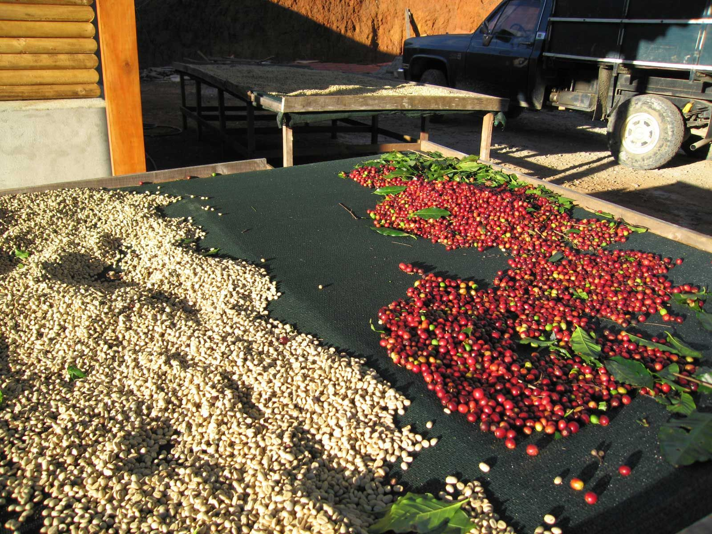
Dans la région de Tarrazú, au Costa Rica, des cerises rouges et des grains clairs sèchent côte à côte. Les micro-moulins de la région traitent souvent plusieurs process le même jour.Photo : Tarrazu at en.wikipedia · Public domain · Commons
Sur les grands patios brésiliens, le cereja descascado se travaille plus vite et à plus grande échelle : couche plus épaisse, râteau tiré à la main ou derrière un petit tracteur, et souvent une fin de séchage au séchoir mécanique. La tasse est plus douce et moins marquée qu'un red costaricien, ce qui en fait une base d'espresso très appréciée des torréfacteurs.
Ce qui rate au honey, et ce que tu goûtes
Les plaques mal cassées moisissent par en dessous, et la tasse le traduit en carton humide et en terre sale. Un black trop chargé, ou rattrapé par une averse, part vers l'alcool et le compost. Un white séché en plein soleil sans assez de retournements finit parfois plat, avec des grains fendus. Si ton honey a un fond de cave, cherche du côté du séchage avant d'accuser le mucilage.
Sur le plateau de Gayo, dans la province d'Aceh, et autour du lac Toba (d'où vient le nom commercial de Mandheling), il pleut presque toute l'année. Sécher un café en parche jusqu'à 11 % y prendrait des semaines et tournerait souvent mal. Et le petit producteur, qui vit de quelques sacs, a besoin d'être payé maintenant. Le giling basah, « mouture humide », répond aux deux problèmes.
SoirDépulpageÀ la maison, avec une petite machine.
NuitFermentationUne nuit, puis rinçage.
1 ou 2 joursPré-séchageDevant chez lui, jusqu'à 30-35 % d'humidité.
VenteCollecteurLe café parche humide est vendu, le producteur est payé.
Chez luiDécorticageUne machine arrache la parche d'une graine encore tendre.
Quelques joursSéchage nuLa graine nue finit au soleil, sans sa protection.
Ça se voit avant de se goûter. Le café vert est bleu-vert sombre, les grains sont irréguliers, souvent fendus aux extrémités (à Sumatra on appelle ça kuku kambing, sabot de chèvre). En tasse tu as un corps lourd, presque pas d'acidité, des notes de terre humide, de cèdre, de tabac, d'épices. Aucune clarté florale, mais une profondeur qu'on ne trouve nulle part ailleurs, et ça tient très bien dans le lait ou dans un assemblage.
Des Gayo entièrement lavés existent aujourd'hui. Ils ressemblent à de bons lavés d'altitude. Ça montre que le profil terreux tient d'abord à la méthode, plus qu'au terroir.
Une filière de collecteurs
Ce qui rend le giling basah difficile à tracer, c'est sa chaîne. Le producteur vend sa parche humide à un collecteur de village, qui la cède à un intermédiaire équipé d'un décortiqueur, qui sèche le grain nu puis le revend à un exportateur. En route, les cafés de dizaines, parfois de centaines de jardins se mélangent. C'est pour ça que les Sumatra du commerce portent souvent un nom de région (Gayo, Mandheling, Lintong) plutôt qu'un nom de ferme, et que deux sacs du même nom peuvent goûter différemment d'une année sur l'autre.
Le séchage du grain nu se fait souvent sur des bâches ou sur du béton, dans la cour du collecteur ou au bord de la route, et c'est là que la qualité se gagne ou se perd. Sans parche, la graine prend la poussière, les odeurs et la pluie. Les exportateurs sérieux re-sèchent, trient à nouveau à la main et à la machine, et retirent les grains noirs ou cassés avant l'ensachage. Le café fini est souvent un peu plus humide que les lavés d'Amérique centrale, autour de 12 %.
On pratique aussi ce décorticage humide ailleurs dans l'archipel indonésien, et tu croiseras sous la même étiquette des cafés d'autres îles.
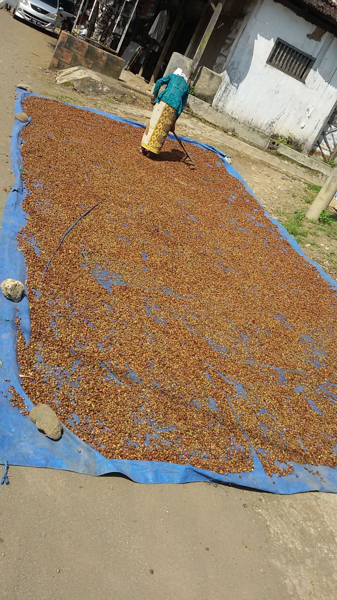
Séchage traditionnel en Indonésie, sur une bâche posée à même le sol.Photo : Okkisafire · CC BY-SA 4.0 · Commons
Chez le torréfacteur, un giling basah demande de la douceur au début : grains irréguliers, parfois fendus, qui colorent de façon inégale. On le pousse volontiers un peu plus loin que les lavés d'Afrique de l'Est, puisqu'on cherche son corps et son cacao. Au comptoir, c'est un café de flat white, de filtre au lait, ou une base d'assemblage qui donne de la profondeur à un café trop vif.
Anaérobie, macération carbonique, levures : le café découvre la cave à vin.
Pendant un siècle, la fermentation a été un mal nécessaire dans le lavé et un danger dans le nature. Vers 2015, des producteurs ont commencé à la conduire pour ce qu'elle apporte en goût. Cuves scellées, sondes de température, levures achetées en sachet : une partie du monde du café s'est mise à travailler comme des vignerons.
Ce qui se passe dans la cuve
Si tu as déjà fait un levain ou un kimchi, tu connais les acteurs. Les cerises arrivent couvertes de micro-organismes venus de la plantation. Au début, tout le monde se met à manger les sucres. Les levures produisent de l'éthanol, du gaz carbonique et des esters, les molécules qui sentent la banane, la poire, l'ananas. Les bactéries lactiques font de l'acide lactique, le même que dans le yaourt. Quand il y a de l'air, les bactéries acétiques transforment l'éthanol en vinaigre. Le milieu s'acidifie, le pH tombe de 5,5-6 vers 4 en 24 à 48 heures, et cette acidité fait elle-même le tri entre ceux qui survivent et les autres.
Le producteur a trois manettes. La température accélère tout. L'oxygène décide qui domine. Le temps fait le reste.
Qui fait quoi dans la cuve
Micro-organisme
Exemples
Il aime
Il produit
En tasse
Levures
Pichia, Saccharomyces, Hanseniaspora
sucres, avec ou sans air
éthanol, CO2, esters
fruité, parfois alcool
Bactéries lactiques
Lactobacillus, Leuconostoc
peu ou pas d'air, pH qui baisse
acide lactique
rondeur, yaourt, crème
Bactéries acétiques
Acetobacter
air et alcool
acide acétique
vif à petite dose, vinaigre au-delà
Entérobactéries
divers
tout début de fermentation
divers, pectinases
disparaissent quand le pH baisse
Figure 5.6. Allure typique d'une cuve ouverte vers 20 °C. Le pH chute puis se stabilise autour de 4, la masse s'échauffe de quelques degrés. Après 48 heures, acides et alcools s'accumulent.
Anaérobie
On met les cerises entières ou les grains dépulpés dans une cuve ou un sac hermétique, avec une valve qui laisse sortir le gaz sans laisser entrer l'air. Sans oxygène, les bactéries acétiques s'arrêtent, la fermentation devient plus lente et plus lactique, et le producteur peut la laisser courir. 24 à 120 heures sont courantes, certains lots dépassent 200 heures. La plupart tournent au frais, entre 15 et 25 °C, parce qu'une cuve chaude part vite vers le dissolvant. On suit le pH (fin de cuve souvent entre 3,8 et 4,5) et parfois le taux de sucre au réfractomètre.
Ensuite il faut sécher, et c'est là que le nom change. « Anaerobic natural 96 h » veut dire 96 heures de cuve scellée en cerises entières, puis un séchage en nature. « Anaerobic washed » veut dire cuve scellée puis lavage, ce qui garde une tasse plus nette. « Double anaérobie » enchaîne deux passages.
Voici à quoi ressemble, dans une ferme équipée, un anaérobie terminé en nature. Les durées changent d'un lot à l'autre, la logique reste la même.
Jour 0Tri sévèreBrix mesuré, flottaison, tri à la main. En cuve fermée, quelques cerises abîmées suffisent à orienter tout le lot.
Jour 0, soirRemplissageCuve inox, fût en plastique alimentaire ou sac épais, rempli presque à ras pour laisser peu d'air. Valve à sens unique sur le couvercle.
Jours 1 à 4Cuve scelléeLe gaz sort par la valve. Matin et soir, on note la température et le pH du jus, parfois le Brix, qui baisse à mesure que les sucres sont mangés.
Jour 4OuvertureOdeur, pH, parfois un goût du jus. Si ça sent déjà le dissolvant, il est trop tard pour rattraper.
Jours 4 à 30Séchage lentCouche fine, souvent à l'ombre ou sous serre, comme un nature très surveillé.
Une cuve fermée chauffe toute seule, parce que la fermentation dégage de la chaleur. Un fût laissé au soleil peut gagner plusieurs degrés en une journée, et c'est souvent comme ça qu'un lot part au vernis. Les producteurs rangent donc leurs cuves à l'ombre, dans une pièce fraîche, et certains vont jusqu'à les refroidir. Beaucoup arrêtent la fermentation sur un pH cible plutôt qu'au bout d'une durée fixe. Les « 96 h » de l'étiquette, c'est souvent le temps qu'il a fallu cette fois-là pour atteindre la cible.
Macération carbonique
Le terme vient du vin, et du Beaujolais en particulier. Les cerises entières sont placées dans une cuve saturée de CO2, et le fruit commence à fermenter à l'intérieur de ses propres cellules avant que les micro-organismes ne prennent le relais. L'Australien Saša Šestić a rendu la technique célèbre en gagnant le championnat du monde barista 2015 à Seattle avec un Sudan Rume colombien traité de cette façon. Tu retrouves souvent des notes de fruit très mûr et de cannelle.
Choc thermique, levures, koji
Le choc thermique, popularisé par le Colombien Diego Bermúdez (Finca El Paraíso, Cauca), termine la fermentation par un rinçage à environ 40 °C, puis un autre à environ 12 °C, pour stopper net l'activité microbienne et fixer le profil. Les levures sélectionnées, avec la gamme Lalcafé de Lallemand, permettent d'obtenir un résultat plus reproductible d'une cuve à l'autre, exactement comme en brasserie. Le koji, le champignon du saké, reste une curiosité, car le café lui offre très peu d'amidon à manger.
Quand c'est réussi
Une tasse exubérante, très longue, qui garde une structure.
mangue
passion
cannelle
rhum
bonbon
Quand ça déraille
Ce sont les mêmes molécules, en trop grande quantité.
vernis à ongles
vinaigre
oignon
alcool dur
Le reproche sérieux
Un protocole très marqué efface la variété et le terroir : deux anaérobies de pays différents peuvent se ressembler plus que deux lavés de la même vallée.
bubble-gum
8. Co-fermentés, infusés, décaféinés
Certains producteurs ajoutent des fruits, de la cannelle, de l'hibiscus ou des levures de vin dans la cuve. C'est un café co-fermenté. D'autres parfument un café déjà sec, parfois avec une huile essentielle, et là on parle de café infusé. Le café qui a un goût de fraise Tagada sans fraise, tu l'as peut-être déjà croisé.
La plupart des professionnels acceptent ces cafés quand ils sont annoncés. Ce qui fâche, c'est de vendre un goût de cannelle venu d'un bâton comme l'expression d'un terroir, souvent au prix d'un micro-lot.
Ce que disent les règlements
Qui
Règle
Conséquence
Championnat du monde barista
Depuis 2024, aucun additif, arôme, parfum, liquide ou poudre après le stade café vert. Règle reprise en 2026.
Co-fermenté admis, café aromatisé après séchage exclu.
Cup of Excellence
Règles revues le 23 octobre 2023, trois catégories : voie humide, voie sèche, expérimentaux. Aucun additif sauf l'eau.
Les co-fermentés sont exclus de fait.
Best of Panama
En 2024, quatre lots disqualifiés pour altération par additifs.
L'enchère la plus chère du monde surveille désormais ce point.
Pour repérer un café infusé, Saša Šestić propose trois tests. Concasse du café vert et laisse-le 10 à 15 minutes dans de l'eau à 40 °C : s'il sent déjà la cannelle, la rose ou le jasmin, c'est suspect. Méfie-toi d'un arôme unique et envahissant. Et attends six mois : un café fermenté s'affadit, un café infusé garde son parfum.
Le décaféiné, un traitement de plus
La caféine se retire sur le café vert, dans quelques usines spécialisées. Le principe est toujours le même : gonfler le grain à la vapeur ou dans l'eau, extraire la caféine avec un solvant qui la cible, sécher à nouveau. Un arabica contient 1 à 1,5 % de caféine, un robusta environ le double.
Les quatre méthodes
Méthode
Comment
Pour
Contre
Eau (Swiss Water)
Une eau déjà saturée des composés du café vert, sauf la caféine, n'extrait que celle-ci. Du charbon actif la capte ensuite.
sans solvant
long, peu d'usines
CO2 supercritique
Sous forte pression, le gaz carbonique dissout la caféine, puis il est recyclé.
sélectif, garde les arômes
installation coûteuse
Acétate d'éthyle (« sugarcane »)
Solvant tiré de la canne à sucre, éliminé à la vapeur. Très utilisé en Colombie.
tasse douce
note sucrée ou fruitée
Dichlorométhane
Solvant chloré très sélectif.
efficace, pas cher
résidus limités à 2 mg/kg dans l'UE, contesté
En France, on ne peut appeler « décaféiné » qu'un café contenant au plus 0,1 % de caféine sur matière sèche (décret du 3 avril 1991). Le procédé emporte aussi des composés solubles et fragilise le grain, qui colore plus vite à la torréfaction. Pendant longtemps on y mettait les cafés de second choix, et ça se sentait. Aujourd'hui on trouve des micro-lots décaféinés à l'eau ou à l'acétate d'éthyle qui tiennent la comparaison. Si tu en proposes un, prévois un petit moulin dédié, ça t'évitera de purger le Mythos One à chaque commande.
9. Lire une fiche, choisir sa préparation
Le process se lit avec l'origine, la variété et l'altitude. Il annonce une direction, et rien n'oblige la tasse à la suivre.
Le récapitulatif complet (repères indicatifs)
Process
Ce qui se passe
Eau
Durée
Risque principal
Goût typique
Où
Lavé
dépulpage, fermentation, lavage
forte
12-72 h de cuve, 1-3 sem. de séchage
surfermentation, effluents
net, vif, fleurs, agrumes
Éthiopie, Kenya, Colombie, Amérique centrale
Honey
dépulpage, séchage avec mucilage
faible
1-3 sem.
grains collés, moisissures
sucré, rond, miel, fruits à noyau
Costa Rica, Brésil
Nature
cerise entière au séchage
très faible
2-5 sem.
fermentation sauvage, moisissures
fruits rouges, myrtille, vin, corps
Éthiopie, Yémen, Brésil
Giling basah
décorticage à 30-35 %
faible
quelques jours
grains fendus, irréguliers
terre, cèdre, épices, corps lourd
Sumatra
Anaérobie
cuve scellée, finition au choix
selon finition
24-120 h et plus
dérives, uniformisation
fruits tropicaux, cannelle, bonbon, vin
Colombie, Amérique centrale
Co-fermenté
ingrédients ajoutés en cuve
selon finition
variable
manque de transparence
celui de l'ingrédient
surtout Colombie
Figure 5.7. Plus le fruit reste au contact de la graine, plus la tasse gagne en fruité et en corps. Le giling basah, terreux, sort de cette diagonale.
Décoder un sachet
Les torréfacteurs écrivent souvent en anglais, et chacun a ses habitudes. Voici ce que veulent dire les mots que tu croiseras.
Les mots des fiches
Sur le sachet
Ça veut dire
Washed, fully washed
Lavé classique.
Double washed, Kenya process
Lavé avec deuxième fermentation ou trempage.
Natural, dry process, sun-dried
Nature, cerise entière séchée.
Pulped natural, cereja descascado
La version brésilienne du honey.
White, yellow, red, black honey
Honey, du plus léger au plus chargé. La recette varie selon le moulin.
Semi-washed
Mot ambigu. En Indonésie, souvent du giling basah ; ailleurs, parfois un honey ou un lavé mécanique. Demande.
Wet-hulled, giling basah
Décorticage humide indonésien.
Anaerobic (+ nombre d'heures)
Cuve scellée, suivie de la finition indiquée.
Carbonic maceration, CM
Cerises entières en cuve saturée de CO2.
Lactic, yeast inoculated
Fermentation orientée, souvent avec un ferment ajouté.
Thermal shock
Fin de fermentation par rinçage chaud puis froid.
Co-fermented, infused
Ingrédient ajouté en cuve, ou arôme ajouté au café sec.
Extended fermentation, slow dry
Fermentation prolongée, séchage ralenti (souvent à l'ombre).
Quand ça rate, ça goûte quoi
Défauts de process
En tasse
Cause probable
Process concernés
Vinaigre, oignon, fruit pourri
Fermentation trop longue ou trop chaude
Lavé, anaérobie
Compost, alcool dur
Couche trop épaisse, retournements insuffisants
Nature, honey foncé
Moisi, terre sale
Pluie, séchage trop lent, grains collés
Nature, honey
Papier, carton, plat
Séchage trop rapide, café vieilli
Tous
Herbe, astringence
Cerises vertes mal triées
Surtout nature
Dissolvant, vernis
Cuve scellée trop chaude ou trop longue
Anaérobie
Torréfaction, espresso, filtre
Natures et honeys contiennent plus de sucres simples, ils brunissent plus vite et brûlent plus facilement, donc le torréfacteur les mène souvent plus doucement (module 7). En espresso, tout se concentre : un nature très fruité ou un anaérobie peut virer vineux, voire alcoolisé, surtout avec du lait, alors qu'un Brésil nature ou un honey y sont à leur aise. Le filtre, plus dilué, flatte la clarté, et un lavé y montre tout ce qu'il a.
Exercice : quatre fiches, quatre tasses à prévoir
Les quatre cafés ci-dessous sont imaginaires, fermes et chiffres compris, inventés pour l'exercice. Ils ressemblent pourtant de près aux fiches qui accompagnent un échantillon chez un importateur. Lis chaque colonne, écris ta prévision sur un papier, et seulement ensuite lis la suite.
Quatre cafés imaginaires (exercice)
A
B
C
D
Origine, altitude
Éthiopie, Gedeo, 2 050 m
Costa Rica, Vallée occidentale, 1 600 m
Brésil, Sul de Minas, 1 100 m
Colombie, Huila, 1 750 m
Variété
variétés locales
Villa Sarchí
Catuaí jaune
Pink Bourbon
Process
lavé
red honey
nature
anaerobic natural
Cuve
48 h sous l'eau, masse à 17-19 °C, pH final 4,3
aucune
aucune
120 h scellée, 27-29 °C, pH final 3,6
Séchage
12 jours sur lits, en parche
14 jours à mi-ombre, retourné toutes les heures les deux premiers jours
18 jours sur patio, fini au séchoir à 38 °C
25 jours sous serre
Humidité, activité de l'eau
10,8 %, 0,55
10,5 %, 0,52
11,2 %, 0,57
11,5 %, 0,62
A. Éthiopie lavé
Tout est dans les clous. Cuve fraîche, donc longue, pH final dans la fenêtre de lavage, une douzaine de jours de séchage, humidité et activité de l'eau au milieu des fourchettes. Prévois une tasse florale et citronnée, avec un corps de thé. Au V60, la recette de base (15 g pour 250 g d'eau) lui va très bien. En espresso il sera vif : essaie un ratio un peu plus long avant de conclure qu'il ne marche pas.
jasmin
bergamote
citron
thé noir
B. Costa Rica red honey
Le retournement toutes les heures au début dit que le producteur a surveillé les plaques, et quatorze jours à mi-ombre collent à un red classique. Prévois du sucre roux, de la pêche jaune, un corps rond et une acidité douce. Ce café passe partout, filtre, espresso et lait. S'il ne fallait en garder qu'un pour la machine, ce serait souvent celui-là.
sucre roux
pêche jaune
prune
C. Brésil nature
Altitude modeste, variété ronde, séchage rapide sur patio puis séchoir sous 40 °C : la fiche annonce un nature doux, sans excès. Noisette, chocolat au lait, peu d'acidité. Une base d'espresso idéale pour le lait. En filtre il paraîtra sage, et ce n'est pas un reproche.
noisette
chocolat au lait
sucre brun
D. Colombie anaerobic natural
Trois signaux d'alerte sur la même fiche. Une cuve à 27-29 °C, au-dessus de la plage où tournent la plupart des anaérobies. Un pH final de 3,6, sous la fourchette habituelle. Une activité de l'eau de 0,62, au-dessus de ce que veulent beaucoup d'acheteurs. Prévois un fruit tropical très puissant, du rhum, et un vrai risque de dissolvant. Goûte l'échantillon avant de commander, en filtre d'abord. S'il est réussi, sers-le au V60, loin du lait, et surveille comment il vieillit.
mangue
fruit de la passion
rhum
dissolvant (risque)
Ce que les fiches ne disent jamais, c'est la qualité de la cueillette et du tri. Une fiche parfaite ne sauve pas des cerises vertes. Elle te dit où regarder en premier quand tu goûtes.
10. Ce que coûte un process
Sur la liste d'un importateur, il arrive que le nature d'une ferme coûte plus cher que son lavé, et qu'un anaérobie coûte plus cher encore. Une partie de l'écart vient de la rareté et de la mode. Une autre vient de vraies dépenses, que le producteur engage des semaines avant de savoir si son lot sera bon.
Combien de plus, personne ne peut te le dire en général. On ne trouve pas d'étude publique solide qui chiffre le surcoût d'un process au kilo d'une ferme à l'autre, et les pourcentages qui circulent sur internet viennent surtout de sites marchands. Méfie-toi de qui t'annonce un chiffre précis. On peut en revanche comprendre où part l'argent, puis poser un calcul d'école.
Où part l'argent (des tendances, pas des tarifs)
Poste
Lavé
Nature soigné
Anaérobie
Eau
beaucoup, de 4 à 15 L par kilo de cerises en station classique, bien moins avec un démucilagineur
presque rien
celle de la finition choisie
Matériel
dépulpeur, cuves, canaux, bassins d'épuration
lits surélevés, bâches, abris
cuves ou fûts étanches, valves, thermomètres, pH-mètre, parfois une pièce rafraîchie, en plus du reste
Main-d'œuvre
concentrée sur la réception et le lavage
retournements et tri à la main pendant trois à cinq semaines
suivi de cuve matin et soir, puis un séchage lent aussi exigeant qu'un nature
Place au séchage
lits occupés une à trois semaines
lits occupés environ deux fois plus longtemps
comme un nature si la finition est nature
Ce qu'on risque de perdre
une cuve surfermentée
un lot moisi ou fermenté
une cuve entière partie au vernis
Achats en plus
peu
peu
levures sélectionnées, désinfectant, énergie
Un calcul d'école
Prends un producteur imaginaire avec 20 lits de séchage et une récolte qui dure douze semaines. En lavé, la parche occupe un lit environ deux semaines, donc chaque lit sert six fois dans la saison, 120 tournées en tout. En nature soigné, la cerise y reste quatre semaines : trois tournées par lit, 60 en tout. Et chaque tournée de cerises entières contient moins de café vert qu'une tournée de parche, puisqu'une bonne partie de ce qui sèche est du fruit. Pour sortir autant de nature que de lavé, il lui faut au moins deux fois plus de lits, ou il accepte d'en produire deux fois moins.
Pour l'anaérobie, ajoute le risque. Une cuve de 200 kg de cerises donne, à raison de 5 à 6 kg de cerises par kilo de vert, environ 35 kg de café vert, soit plus d'une centaine de sachets de 250 g une fois torréfié. Imagine qu'une cuve sur cinq dérive vers le vernis et se vende au prix d'un café courant. Les quatre cuves réussies paient la cinquième, et leur coût de revient grimpe de près d'un quart (cinq cuves payées pour quatre vendues, 5 ÷ 4 = 1,25), avant même de compter fûts, sondes et levures. Un producteur qui débute dans les fermentations rate davantage. C'est une des raisons pour lesquelles ces cafés viennent souvent de fermes déjà bien équipées.
× 2temps d'occupation d'un lit, nature contre lavé
≈ 35 kgde vert dans une cuve de 200 kg de cerises
+ 25 %sur le coût des bons lots si une cuve sur cinq rate
Ce que ça change sur ta carte
Ramène ça à ta tasse. Le café d'Ïota que tu sers coûte environ 26,40 € HT le kilo. Une dose de 18 g pour un espresso représente donc 0,018 × 26,40 ≈ 0,48 € HT de café, et 15 g pour un V60 environ 0,40 €. Suppose qu'un micro-lot anaérobie arrive à 60 € HT le kilo, un chiffre choisi pour l'exemple. La même dose de 18 g coûte alors 1,08 €, soit 60 centimes de plus par espresso, et 50 centimes de plus par V60.
Ces centimes, tu peux les afficher sur l'ardoise sans gêne, à condition de savoir les expliquer. Et compte les pertes : un micro-lot cher dont tu jettes dix doses pour régler le moulin coûte vite plus que son prix au kilo. Pour un café rare, règle le Mythos One au plus près dès la première dose, ou réserve-le au V60, où le réglage gaspille moins.
Tu peux lire des fiches pendant des heures. Rien ne t'apprendra les process aussi vite qu'une table avec quatre rangées de bols. Monte ce cupping un matin avant l'ouverture, avec un équipier, une heure suffit. Il te faut un lavé, un honey, un nature et un anaérobie, de la même origine si possible, sinon au moins de la même partie du monde, pour que le process reste la différence principale.
Le protocole
On suit à peu près le protocole de cupping de la Specialty Coffee Association, simplifié pour un comptoir. Sors la balance Acaia Pearl, la bouilloire Fellow EKG Pro réglée à 93 °C, huit bols identiques (deux par café), deux cuillères à soupe et un verre d'eau chaude pour les rincer.
Peser et moudre. 8,25 g de café par bol pour 150 ml d'eau, le ratio du protocole SCA (environ 1:18). Mouture un peu plus grosse que pour le V60, régulière, avec le moulin de tes filtres. Purge le moulin entre deux cafés avec quelques grammes du suivant.
Sentir à sec. Dans le quart d'heure qui suit la mouture. Un mot par bol, sans chercher la poésie.
Verser. Eau autour de 93 °C, jusqu'en haut du bol, d'un seul geste. Lance le minuteur au premier bol.
Casser la croûte. Vers 4 minutes, trois passages de cuillère qui repoussent la croûte, le nez juste au-dessus. C'est souvent à ce moment que l'anaérobie se trahit, en bien ou en mal.
Écumer, attendre. Retire la mousse et les grains flottants avec deux cuillères. Goûte quand le café a refroidi, vers 8 à 10 minutes après la verse, puis tiède, puis presque froid.
Aspirer. Une cuillerée, une aspiration bruyante qui pulvérise le café sur tout le palais. Rince la cuillère dans l'eau chaude entre deux bols.
Dans quel ordre, et quoi chercher
Goûte du plus discret au plus bavard : lavé, honey, nature, anaérobie. Si tu commences par l'anaérobie, le lavé te paraîtra creux pendant dix minutes. Refais ensuite le tour dans l'autre sens, puis une troisième fois quand tout a refroidi. Le froid ne pardonne rien. Un défaut qu'on devinait à peine à chaud se met à dominer.
Ce que chaque bol devrait te montrer (si le café est réussi)
Bol
À sec et à la casse
Chaud
Tiède, presque froid
Le piège
Lavé
fleurs, agrumes, thé ; casse nette
acidité dessinée, corps léger
gagne en sucre, l'acidité tourne au fruit
le trouver faible parce qu'il est léger
Honey
miel, fruits à noyau, caramel
rond, sirupeux
sucre roux, pêche
confondre un red avec un nature léger
Nature
fruits rouges, confiture, vin
corps, myrtille ou cacao selon l'origine
se resserre ; un fond de compost ou d'alcool remonte s'il y en a un
prendre un fond fermenté pour du fruit
Anaérobie
très parfumé, bonbon, rhum, parfois vernis
fruit tropical, cannelle
une structure tient, ou tout s'effondre en sucre plat
se saturer le palais : il passe en dernier
Pour noter, garde cinq lignes par café, de 1 à 5 : propreté, douceur, acidité, corps, longueur. Ajoute trois mots d'arômes, pas plus. Après deux ou trois séances, tu verras revenir les formes des onglets de la section 2, le lavé devant sur l'acidité et la propreté, le nature et l'anaérobie devant sur le fruit et le corps. Tu verras surtout les exceptions, et elles t'apprendront davantage que la règle.
La séance suivante, passe à l'aveugle. Un équipier numérote les bols par-dessous et les mélange. Retrouver le nature est facile. Séparer un red honey d'un nature léger l'est beaucoup moins, et c'est le meilleur exercice du module.
Une table de cupping : une rangée de bols, et devant chacun un bocal avec les grains du lot, pour garder la trace de ce qu'on goûte. Le dégustateur sent la croûte, le nez au ras du bol.Photo : Christopher Michel · CC BY 2.0 · Commons
Quatre situations au comptoir
Si tu ne devais garder que ça
Un process, c'est ce qu'on fait du fruit avant de sécher la graine à 11 %.
Lavé : le fruit part tout de suite. Tasse nette, vive, fleurs et agrumes, corps léger.
Nature : la cerise sèche entière deux à cinq semaines. Fruits rouges, vin, corps, et beaucoup de risques.
Honey : séchage avec le mucilage. Plus c'est foncé, plus c'est fruité et lent.
Giling basah : décorticage à 30-35 %. Terre, cèdre, corps lourd, acidité basse.
Anaérobie : cuve scellée sans air, puis finition au choix. Fruits tropicaux, cannelle, bonbon.
Dans la cuve, trois manettes : température, oxygène, temps.
Avant tout process, deux contrôles : la maturité des cerises et le délai entre cueillette et traitement.
Au séchage : couche fine et retournements fréquents au début, abri aux heures chaudes, cible 10 à 12 % mesurée sur un échantillon décortiqué.
Un co-fermenté s'annonce toujours comme tel.
Le process amplifie ce qu'il y a dans le fruit. Un nature éthiopien et un nature brésilien n'ont rien à voir.
Un nature ou un anaérobie coûte plus cher à produire (lits occupés plus longtemps, main-d'œuvre, matériel, cuves ratées), mais le process ne fait pas le prix à lui seul.
Pour apprendre les process, rien ne vaut quatre bols en cupping, du lavé à l'anaérobie, dans cet ordre.
Rosane Schwan et Graham Fleet (dir.), Cocoa and Coffee Fermentations, CRC Press, 2014, la microbiologie des fermentations du café.
Bytof et al., Annals of Botany, 2007, et Knopp, Bytof, Selmar, European Food Research and Technology, 2006, germination et sucres selon le process.
No machine-readable author provided. Ronchy~commonswiki assu… · Public domain · Commons
Module 6 · De la cerise au grain vert
Du patio au conteneur
Le café sort de la cuve ou du tri gorgé d'eau, et il lui reste encore quatre à six mois et dix mille kilomètres avant d'arriver chez Ïota. On le sèche, on le laisse reposer, on le décortique, on le trie grain par grain, on le note, on l'ensache, on le vend. À chacune de ces étapes il peut gagner de la valeur ou en perdre, et une bonne partie de ce que tu goûtes au comptoir s'est jouée là.
No machine-readable author provided. Amakuru assumed (based … · CC BY-SA 3.0 · Commons
1
Sécher, une course contre l'eau
De 55 % à 11 %, sans casse ni moisissure.
Prends une poignée de café en parche qui sort du canal de lavage. Elle est froide, lourde, elle goutte entre les doigts et laisse une odeur de pomme mouillée. La parche est grise, presque translucide par endroits. Ce café contient encore 50 à 55 % d'eau. Une cerise entière qui part en nature en contient 60 à 65 %. Dans les deux cas, il faut descendre autour de 11 %, et le faire assez lentement pour ne rien casser, assez vite pour que rien ne pourrisse.
Le module 5 s'est arrêté là, au moment où le café quitte la cuve ou le tri et part au séchage. Le process décide de ce qui reste autour de la graine. Le séchage décide combien de temps le café gardera ce que le process lui a donné. Un nature éthiopien magnifique séché de travers sera plat dans six mois. Un lavé banal séché proprement restera banal, mais il le restera longtemps.
50-55 %d'eau dans une parche qui sort du lavage
60-65 %dans une cerise qui part en nature
10-12 %la cible, idéalement près de 11 %
< 0,70activité de l'eau maximale (0,50 à 0,65 visés)
≤ 40 °Ctempérature du grain à ne pas dépasser
Pourquoi 11 % et pas 5
Au-dessus de 12 %, il reste dans le grain de l'eau que les moisissures, les levures et les enzymes du grain lui-même peuvent utiliser. Le café continue de vivre, il respire, il chauffe s'il est en tas, il se dégrade. En dessous de 10 %, il devient cassant : il se brise au décorticage, il perd du poids (et le producteur est payé au poids), et il vieillit plus vite parce que ses tissus sont abîmés. La plage 10-12 % est un compromis entre ces deux problèmes. La SCA, dans sa grille de classement du café vert, accepte 9 à 13 % pour un café de spécialité, mais aucun acheteur sérieux ne se réjouit d'un lot à 9 ou à 13.
Pense à un jambon sec ou à des tomates séchées. On n'enlève pas toute l'eau, on en enlève assez pour que plus rien ne puisse pousser dessus, et le produit tient des mois. Le café vert suit la même logique.
Humidité et activité de l'eau, deux chiffres différents
Le taux d'humidité dit combien d'eau il y a dans le grain, en pourcentage du poids. L'activité de l'eau (aw, de l'anglais water activity) dit quelle part de cette eau est encore libre, disponible pour une moisissure ou une réaction chimique. Elle va de 0 (rien de disponible) à 1 (de l'eau pure). Deux lots à 11 % d'humidité peuvent afficher des aw différentes, selon la façon dont l'eau est accrochée aux sucres et aux parois des cellules, et selon que le grain a été séché de façon homogène ou non.
Les repères à retenir viennent des importateurs et de la SCA. Au-dessus de 0,70, les moisissures peuvent se développer, c'est le plafond pour un café de spécialité. Les acheteurs visent en général 0,50 à 0,65. Une étude de Cenicafé, le centre de recherche des producteurs colombiens, a mesuré 400 échantillons en 2024 : tous les cafés compris entre 10 et 12 % d'humidité avaient une aw inférieure à 0,62. Les deux mesures racontent donc à peu près la même chose quand le séchage est bien fait. Quand elles divergent (11 % d'humidité mais 0,68 d'aw, par exemple), c'est souvent le signe d'un lot hétérogène, avec des grains trop secs et d'autres trop humides qui font une bonne moyenne.
Deux eaux dans un grain
Le séchage ne se passe pas à vitesse constante, et ça explique presque tous les gestes que tu verras plus loin. Au début, l'eau qui s'en va est celle de la surface et des espaces entre les cellules. Elle part vite, il suffit de soleil et d'air. Un lavé peut perdre 15 points d'humidité en deux ou trois jours. Ensuite il reste l'eau logée à l'intérieur des cellules et liée aux sucres et aux protéines. Pour sortir, elle doit migrer du cœur vers la surface, lentement. C'est la deuxième phase, celle qui prend la majorité du temps. Si tu forces à ce moment-là avec beaucoup de chaleur, la surface sèche et se rétracte pendant que le cœur reste humide. La parche se fend, le grain se tend, ses cellules se rompent.
Figure 6.1. Un lavé en parche atteint la bande cible en une à deux semaines, un nature en trois à quatre. La pente est forte au début (l'eau libre s'en va), puis la courbe se couche (l'eau liée sort lentement). En pointillés, les deux dérives : trop rapide, avec une parche fendue et un grain trop sec, ou trop lente, avec moisissures et fermentation qui repart.
Les deux dangers
Trop lent, d'abord. En climat humide, en couche trop épaisse ou sous la pluie, le café reste des jours dans la zone où tout pousse. La fermentation reprend, les moisissures s'installent, et parmi elles certaines espèces d'Aspergillus (A. ochraceus, A. carbonarius, A. niger) peuvent produire de l'ochratoxine A, une toxine dont la teneur est plafonnée dans l'Union européenne pour le café torréfié et soluble. Ce danger-là se voit souvent (grains tachés, odeur de cave) et il se goûte toujours : terre, moisi, carton mouillé.
Trop vite ou trop chaud, ensuite, et celui-là est sournois. Quand la température du grain dépasse 40 à 45 °C, ou quand la surface sèche bien plus vite que le cœur, le café sort du séchoir à 11 % et paraît correct. On le goûte, il est bon. Trois mois plus tard, il sent le papier et le foin. Les dégâts étaient dans les cellules, et ils se révèlent pendant le stockage.
Retiens une idée, elle reviendra dans tout le module : le séchage règle la vitesse à laquelle le café vert vieillira. Les professionnels anglophones parlent de fade, l'affadissement. L'acidité baisse, les notes de fleurs et de fruits s'effacent, puis arrivent le foin, la paille, le papier, le bois. Séché lentement et reposé, un lavé garde son profil près d'un an. Séché à la hâte, il peut s'aplatir en quelques mois, quoi qu'on fasse ensuite.
2. Patio, lit, tambour, serre
Il existe quatre grandes façons de sécher le café, et la plupart des fermes en combinent deux. Le choix dépend du climat (il pleut quand, et combien), de la surface disponible, de la main-d'œuvre, du prix de l'énergie et du prix auquel le café se vendra. Un producteur brésilien qui récolte des centaines de tonnes à la machine ne sèche pas comme une coopérative rwandaise qui reçoit chaque soir les cerises de deux mille familles. Clique sur chaque méthode.
Patio en béton : le café en parche est mis en tas pour la nuit.Photo : No machine-readable author provided. Ronchy~commonswiki assu… · Public domain · Commons
Le patio
Une dalle de béton, de briques ou de terre battue, au soleil. C'est la méthode la plus répandue au monde, et celle du Brésil, où on l'appelle terreiro. On étale le café en couche de 3 à 5 cm pour la parche, un peu plus pour des cerises au Brésil, et on le retourne au râteau toutes les heures ou presque, en traçant des sillons qui changent de sens à chaque passage. Le soir, on le rassemble en andains ou en tas qu'on bâche, pour qu'il ne reprenne pas l'humidité de la nuit.
Ses défauts : le béton chauffe très fort l'après-midi et le café qui le touche sèche plus vite que celui du dessus, d'où un lot inégal. Une dalle sale, fissurée ou en terre donne des goûts de terre. Et il faut une surface énorme.
Coût
Régularité
Main-d'œuvre
Pluie
Lit surélevé : la toile laisse passer l'air dessous, et on trie debout.Photo : PHILIP ASEDRI DRADRIO · CC BY-SA 4.0 · Commons
Le lit africain
Une table d'environ un mètre de haut, tendue d'un filet ou d'une toile perforée. L'air passe dessus et dessous, la couche est fine, et les trieuses travaillent debout en retirant à la main les grains tachés, fendus ou mal formés. Le Kenya, le Rwanda, le Burundi et l'Éthiopie l'ont généralisé, et beaucoup de micro-lots d'Amérique latine sèchent aujourd'hui de cette façon.
Aux heures les plus chaudes, on tend une toile d'ombrage au-dessus pour garder le grain sous 40 °C. La nuit et sous la pluie, on couvre de bâches plastique. Le séchage est plus lent et plus régulier que sur patio, et le tri pendant le séchage fait gagner beaucoup en propreté. C'est aussi la méthode qui demande le plus de surface par kilo.
Coût
Régularité
Main-d'œuvre
Pluie
Tambour perforé, parche dedans, air chaud au travers.
Le séchoir mécanique
La guardiola est un grand tambour perforé, horizontal, qui tourne lentement pendant qu'un ventilateur pousse de l'air chaud au travers. Le foyer brûle du bois, du gaz, ou la parche elle-même récupérée au décorticage. En Colombie on voit aussi beaucoup de silos fixes, où l'air chaud traverse une couche épaisse de café par le dessous. Ces machines sèchent en un à trois jours ce que le soleil fait en deux semaines, ce qui les rend précieuses quand il pleut en pleine récolte.
Bien réglées, avec un grain qui ne dépasse pas 40 à 45 °C, elles donnent un séchage homogène. Poussées pour aller plus vite, elles produisent des grains fanés qui vieilliront mal. Un échangeur de chaleur qui fuit laisse passer la fumée du foyer, et le café prend un goût de fumé ou de caoutchouc brûlé impossible à rattraper. La plupart des fermes de spécialité s'en servent pour finir un café pré-séché au soleil, rarement pour tout le travail.
Coût
Régularité
Main-d'œuvre
Pluie
Une « helda » en Colombie : le toit sur rails glisse au-dessus du café quand le ciel se couvre.Photo : JPDAFT · CC0 · Commons
Serres, tunnels et toits mobiles
Dans les régions où il pleut pendant la récolte, on abrite le café sous plastique. Les marquesinas colombiennes sont des toitures en plastique transparent posées au-dessus de claies, souvent sur le toit de la maison. Les tunnels et serres paraboliques font la même chose en plus grand. La helda, également colombienne, est un patio couvert d'un toit qui roule sur des rails : on le tire au-dessus du café quand il pleut, on le repousse au soleil.
Sous plastique, il fait vite 15 à 20 degrés de plus qu'à l'extérieur, et l'humidité qui sort du café reste piégée si l'air ne circule pas. Une serre mal ventilée devient un hammam où le café sèche mal et chauffe. Les bonnes installations ont des côtés ouvrants, parfois un ventilateur, et un thermomètre qu'on regarde.
Coût
Régularité
Main-d'œuvre
Pluie
Contrôle du séchage dans un abri à claies aux murs translucides, en Indonésie (programme Kukang). Le café sèche à l'abri de la pluie, en plusieurs étages.Photo : The Kukang Rescue Program · CC BY-SA 4.0 · CommonsCafé étalé sur une bâche en pleine rue de village. Tant qu'il ne touche pas la terre et qu'on le rentre avant la pluie, ça marche.Photo : David Stanley from Nanaimo, Canada · CC BY 2.0 · Commons
Combiner, c'est la norme
Beaucoup de fermes font le début au soleil et la fin à la machine. Le soleil enlève l'eau libre, gratuitement et sans stress, pendant quelques jours. Quand le café est descendu autour de 20 à 30 %, il part en guardiola ou en silo pour finir, au lieu de traîner une semaine de plus sur la dalle sous un ciel incertain. Au Brésil, c'est presque la règle pour les gros volumes. Dans les stations d'Afrique de l'Est, on reste sur lits du début à la fin, et la main-d'œuvre remplace l'énergie.
Un dernier mot sur les sols. Sécher sur une bâche posée par terre, devant la maison, au bord d'une route, c'est encore la réalité de millions de petits producteurs. Ça fonctionne, à condition que la bâche soit propre et que le café ne touche jamais la terre. Dès qu'il la touche, il prend son goût.
Les méthodes de séchage côte à côte (repères indicatifs)
Un lavé sur lit, un nature sur patio, du premier râteau au sac.
Commence par un petit calcul, il change la façon de voir le séchage. Une station reçoit une tonne de café en parche qui sort du lavage, à 53 % d'humidité. Il y a dedans 470 kg de matière sèche et 530 kg d'eau. À 11 %, ces 470 kg de matière sèche feront un lot de 528 kg. Il faut donc évaporer environ 470 litres d'eau, presque la moitié du poids de départ, sans abîmer une seule graine. Pour une tonne de cerises à 62 % qui partent en nature, le calcul donne près de 575 litres d'eau à faire partir, à travers une peau et une pulpe qui la retiennent.
1 000 kgde parche mouillée à 53 %
≈ 528 kgde parche sèche à 11 %
≈ 470 Ld'eau à évaporer
Un lavé sur lit africain, en altitude
Prends une station d'Afrique de l'Est vers 1 700 m, en saison sèche : journées à 25 °C, nuits fraîches et humides. Les chiffres d'humidité sont des ordres de grandeur, chaque saison les décale.
Jour 0Égoutter, étaler53 %. Le café sort du canal et part sur des lits « de pré-séchage », souvent à l'ombre ou sous filet, en couche de 2 cm. On le remue à la main toutes les 20 à 30 minutes. Les trieuses retirent déjà les grains flottants oubliés, tachés, fendus par le dépulpeur.
Jours 1 à 2L'eau de surface s'en va53 à 40 %. La parche passe du gris mouillé au beige. On la remue toutes les heures, on la passe au soleil plein. Le soir, on la rassemble en bande au milieu du lit et on bâche.
Jours 3 à 6Ombre à midi40 à 22 %. Le soleil de midi peut faire monter le grain au-delà de 40 °C : on tend la toile d'ombrage entre 11 h et 15 h environ. On épaissit un peu la couche, jusqu'à 4 cm, pour ralentir. Les grains commencent à sonner quand on les remue.
Jours 7 à 12La phase lente22 à 13 %. L'eau liée sort lentement. Les retournements s'espacent. On passe l'humidimètre chaque après-midi sur plusieurs points du lit. Le grain, une fois la parche retirée à l'ongle, est bleu-vert et dur.
Jours 12 à 15Finir et égaliser13 à 11 %. On mélange le contenu de plusieurs lits pour homogénéiser, on mesure, on ensache en parche dans des sacs propres. Le café part au magasin pour reposer.
Un nature sur patio, au Brésil
Change de décor : un terreiro en béton dans le Sul de Minas, vers 1 000 m, en saison sèche (mai à septembre). Le café est un nature (natural), cueilli à la machine ou à la main et passé au lavador pour séparer les cerises légères. Ici aussi les durées varient beaucoup avec la météo.
Jour 0Couche fine60-65 %. Les cerises sont étalées en couche très fine, presque une cerise d'épaisseur. On les retourne au râteau dix à quinze fois par jour. C'est le moment où elles fermentent le plus facilement.
Jours 1 à 4Pas de tas65 à 50 %. Les cerises sont encore gorgées et chaudes au toucher. On ne les met pas en tas la nuit, ou en petits andains seulement, parce qu'elles s'échaufferaient. La peau commence à se rider.
Jours 5 à 10Meia-seca50 à 30 %. Les Brésiliens parlent de café meia-seca, à moitié sec, quand la cerise devient brune et souple. On peut alors l'épaissir et la mettre en andains bâchés le soir.
Jours 10 à 20Coque30 à 15 %. Les cerises virent au brun foncé, puis presque au noir. Secouées, elles font entendre la graine. Beaucoup de fermes finissent à ce stade au séchoir mécanique.
Jours 20 à 30Cible15 à 11 %. On vérifie à l'humidimètre, on ensache en coque, et le café part reposer en tulha, le silo en bois où il attend le moulin sec.
Parche en cours de séchage dans une ferme près de Karatu, en Tanzanie. Quand elle est beige clair et qu'elle craque sous les doigts, la phase rapide est finie.Photo : Zenith4237 · CC BY-SA 4.0 · CommonsCafé en parche sec, en Colombie. Cette coque fine protège le grain jusqu'au moulin sec.Photo : Felipe Quijano · CC BY-SA 4.0 · Commons
Ce que fait le producteur avec ses mains
Avant l'humidimètre, il y a les gestes. Les producteurs décortiquent une graine à l'ongle et la mordent : un grain encore humide garde la trace des dents, un grain sec résiste et se casse net. Ils écoutent le bruit d'une poignée qu'on laisse retomber, mat au début, plus clair à la fin. Ils regardent la couleur du grain sous la parche, qui passe d'un vert pâle et laiteux à un bleu-vert franc. Ce sont de bons repères pour savoir quand sortir l'appareil. Ils ne remplacent pas la mesure, parce que la différence entre 11 et 13 % ne se sent pas sous la dent, et qu'elle décide si le lot tiendra.
Un dernier chiffre pour comparer les deux frises. Le lavé passe environ deux semaines au séchage, le nature trois ou quatre. Pendant tout ce temps, le café occupe une place sur un lit ou une dalle, et le producteur ne peut pas y mettre la récolte suivante. Quand une ferme hésite à faire plus de natures, c'est souvent cette place qui manque, bien avant l'envie.
4. Mesurer, rater, reposer
Un café peut être raté au séchage de six ou sept façons différentes. Chacune laisse une trace qu'on finit par goûter, parfois dès la table de cupping de l'exportateur, parfois six mois plus tard dans ta tasse. Voici les plus courantes, avec ce qu'on voit sur le lit et ce qui reste en bouche.
Les ratés du séchage, du lit à la tasse
Ce qui s'est passé
Ce qu'on voit
Ce qu'on goûte
Comment on l'évite
Séchage trop rapide, grain trop chaud
parche fendue, grain blanchi, pâle
correct au début, puis papier, foin, bois au bout de quelques mois
ombre à midi, couche plus épaisse, grain ≤ 40 °C
Séchage trop lent, couche trop épaisse
grains tachés, odeur de cave, chaleur dans la masse
moisi, terre, carton mouillé, fermenté
couche fine, retournements fréquents, abri
Pluie sur un café à moitié sec (réhumidification)
grains marbrés, ternes, parfois bruns
terre, moisi, tasse plate et sale
bâches prêtes, couvrir avant l'averse, finir à la machine
Contact avec le sol
poussière, grains salis
terreux, poussiéreux
lit, bâche propre, patio lavé
Fumée du foyer
rien de visible
fumé, caoutchouc brûlé, phénolique
échangeur étanche, entretien du séchoir
Lot hétérogène (grains de jours différents mélangés)
couleurs inégales
tasse instable, notes vertes mêlées de notes passées
sécher par lot du jour, mélanger seulement à la fin
Trop sec (sous 9-10 %)
grains cassants, brisures au décorticage
plat, boisé, vieillit vite
mesurer chaque jour, arrêter à 11-11,5 %
Un producteur étale son café sur une toile, à genoux. À ce stade, une heure de pluie sans bâche peut coûter tout le travail de la semaine.Photo : Dtaw2001 at en.wikipedia · Public domain · Commons
L'humidimètre
C'est l'outil de base de tout moulin et de tout acheteur. Les modèles courants mesurent une propriété électrique du grain (sa capacité à stocker une charge ou à conduire le courant), qui dépend de la quantité d'eau, puis la convertissent en pourcentage grâce à une courbe d'étalonnage enregistrée. On en voit de toutes tailles, du boîtier de poche qu'on remplit d'une poignée de grains jusqu'aux appareils de laboratoire. Sinar, Kett ou Dickey-John sont des marques qu'on croise souvent dans les moulins.
Trois choses à savoir. Chaque appareil a des courbes distinctes pour le café en parche, en cerise sèche et vert : mesurer de la parche avec la courbe du vert donne un chiffre faux. La température du grain fausse la lecture, donc les bons appareils la compensent et on évite de mesurer un café qui sort du soleil. Enfin, tout ça se cale sur une méthode de référence, à l'étuve, où l'on pèse le café avant et après un passage à 105 °C pendant 16 heures (norme ISO 6673). Les laboratoires s'en servent pour vérifier les appareils de terrain.
L'activimètre
Pour l'activité de l'eau, on enferme un échantillon dans une petite chambre étanche à température contrôlée, souvent 25 °C, et un capteur mesure l'humidité de l'air qui s'équilibre avec le grain. Une aw de 0,60 veut dire que l'air au-dessus du café se stabilise à 60 % d'humidité relative. La mesure prend quelques minutes, l'appareil coûte bien plus cher qu'un humidimètre, et on le trouve surtout chez les exportateurs, les importateurs et les gros torréfacteurs. Les marques Rotronic et AquaLab sont courantes dans les laboratoires de café.
Le repos en parche
Juste sorti du séchage, un café à 11 % n'est pas encore stable. Dans un même lot, certains grains sont à 10 %, d'autres à 12,5 %, et chaque grain a un cœur plus humide que sa surface. On le laisse donc reposer dans sa parche (ou dans sa coque pour un nature) 30 à 60 jours, dans un magasin frais, sombre et aéré. En espagnol, on dit reposo. L'humidité s'égalise entre les grains et à l'intérieur de chacun, l'aw se stabilise, et la tasse perd le côté vert et nerveux qu'ont les cafés fraîchement séchés.
Les exportateurs qui goûtent un lot juste après séchage le savent : un café peut paraître herbacé, astringent, presque métallique, puis s'arrondir et se dessiner après un mois de repos. C'est une des raisons pour lesquelles on évite de juger définitivement un lot à la sortie des lits. La parche, pendant ce temps, sert d'emballage : elle protège le grain de la lumière, des chocs et des odeurs, et freine les échanges avec l'air. On ne l'enlève qu'au dernier moment, au moulin sec, juste avant de vendre.
Le café arrive au moulin sec en sacs de parche ou de cerises sèches, souvent de plusieurs fermes ou de plusieurs jours de récolte. Il en ressort trié grain par grain, calibré, ensaché, avec un numéro de lot et un échantillon qui part chez l'acheteur. Les anglophones disent dry mill, les hispanophones beneficio seco ou trilladora. C'est une usine bruyante et poussiéreuse, souvent installée près d'une ville ou d'un port, chez un exportateur, une coopérative ou une grosse ferme. En Éthiopie, une bonne partie de la préparation à l'export se fait autour d'Addis-Abeba, dans des entrepôts où des rangées de trieuses passent le café vert à la main.
Pré-nettoyage. Le café passe sur des tamis vibrants, sous une aspiration et devant des aimants. On retire la poussière, les brindilles, les cailloux, les clous et les morceaux de ficelle. Un épierreur sépare les pierres de la même taille que les grains en jouant sur leur poids.
Décorticage. Des décortiqueuses à friction frottent les grains les uns contre les autres et contre une paroi. La parche éclate et s'envole avec l'aspiration. Pour un nature, la coque entière (peau, pulpe et parche séchées et soudées) part en une fois. Réglée trop serrée, la machine casse ou chauffe les grains. La parche récupérée sert souvent de combustible au séchoir.
Polissage, facultatif. Il retire la pellicule argentée collée au grain et lui donne un aspect lisse et brillant. Il chauffe le grain par friction et ne change rien de bon à la tasse. Certains marchés l'aiment pour l'œil, beaucoup de torréfacteurs de spécialité s'en passent.
Calibrage. Une série de cribles superposés, à trous ronds, sépare les grains par taille. Des cribles à fentes oblongues isolent les caracolis, les grains ronds nés seuls dans leur cerise.
Tri densimétrique. Sur une table inclinée qui vibre et que traverse un courant d'air (la table Oliver est la plus connue), les grains lourds et denses remontent la pente, les légers glissent vers le bas. On retire ainsi les grains immatures, creux, piqués par le scolyte, flétris.
Tri optique. Les grains tombent un par un devant des caméras. Ceux dont la couleur sort de la plage réglée (noirs, bruns, aigres, décolorés) sont éjectés par un jet d'air en quelques millisecondes. Bühler (Sortex) et Satake fabriquent les machines qu'on voit le plus. Les modèles récents travaillent aussi en infrarouge, ce qui repère des défauts invisibles à l'œil.
Tri manuel. Pour la spécialité, une dernière passe à la main, sur des tables ou des tapis roulants. Les trieuses retirent ce que les machines ont laissé passer : grains à moitié noirs, fragments, coques, grains percés.
Échantillon et ensachage. Le lot est mélangé, pesé, échantillonné, mis en sacs (avec ou sans doublure), marqué et stocké en attendant le conteneur.
Figure 6.2. La chaîne du moulin sec. Sous chaque étape, ce qu'elle retire. Le polissage est en pointillés : beaucoup de lots de spécialité ne le font pas.
Les cribles
Un crible est une plaque percée de trous ronds d'un diamètre donné, exprimé en soixante-quatrièmes de pouce. Un crible 17 a des trous de 17/64 de pouce, soit 6,75 mm. Un grain qui reste dessus est « de crible 17 ». On empile les cribles du plus grand au plus petit, on secoue, et chaque étage retient sa taille. Un lot « 17/18 » au Brésil est fait de grains retenus par les cribles 17 et 18. Le Kenya et la Colombie ont construit leurs grades sur ces tailles.
Figure 6.3. Les cribles 14 à 20, dessinés en proportion, et les grades kenyans et colombiens qui en découlent. Le grade E, « éléphant », réunit les grains géants. Le caracoli (PB) se trie par sa forme ronde, sur des cribles à fentes, quelle que soit sa taille.
Pourquoi le torréfacteur veut un lot régulier
Dans le tambour, un petit grain chauffe plus vite à cœur qu'un gros. Un lot qui mélange crible 14 et crible 18 donne, pour un même profil, des grains trop développés et d'autres pas assez. Les brisures et les grains légers brûlent avant que les grains denses soient cuits. Les immatures restent pâles après torréfaction : on les appelle quakers, et ils apportent des notes de cacahuète crue, de papier, de céréale.
Un lot calibré et trié par densité permet un profil précis et reproductible. C'est pour ça que le torréfacteur paie la préparation d'un café et pas seulement son origine, et que deux lots de la même ferme peuvent valoir des prix différents selon le moulin qui les a préparés (module 7).
Des caracolis torréfiés : ronds, sans face plate. On les trie à part et on les vend sous le nom de peaberry ou PB.Photo : Ragesoss · CC BY-SA 3.0 · Commons
Ce qu'on perd en route
Le décorticage et le tri coûtent du poids. En Colombie, la Fédération nationale des producteurs (FNC) fixe le prix intérieur sur une base appelée factor de rendimiento : il faut 94 kg de parche sèche pour obtenir un sac de 70 kg de café vert de qualité export (excelso). Un lot qui fait mieux, avec moins de défauts et de grains légers, est payé plus cher au producteur ; un lot qui fait moins bien est payé moins. Ce que le tri écarte, les Colombiens l'appellent pasilla : grains cassés, noirs, piqués, vendus pour le marché intérieur ou l'industrie. Au Brésil, les rejets de tri finissent de la même façon dans le café courant vendu sur place.
Tri à la main sous un hangar, en Éthiopie. Chaque grain noir ou percé retiré ici, c'est un défaut en moins à la table de l'acheteur.Photo : Niels Van Iperen · CC BY-SA 4.0 · CommonsCafé vert d'Aceh (Sumatra) versé dans un sac. Il a perdu près d'un cinquième de son poids depuis la parche.Photo : USAID Indonesia · Public domain · Commons
L'échantillon qui décide
Le commerce du café vert se fait sur échantillons, et il y en a trois. L'échantillon d'offre, d'abord, que l'exportateur envoie avant la vente, souvent quelques centaines de grammes : l'acheteur le torréfie, le goûte, et s'engage dessus. L'échantillon de pré-expédition (pre-shipment sample, PSS), ensuite, prélevé sur le lot fini, au moulin, avant le chargement. L'acheteur vérifie qu'il correspond à l'offre : tasse, humidité, aw, calibre, nombre de défauts. Conforme, le lot part. Sinon, il est refusé ou renégocié. L'échantillon d'arrivée, enfin, prélevé à l'entrepôt européen, montre si le voyage a abîmé quelque chose. Un torréfacteur qui achète en direct ou par un importateur passe par les mêmes étapes, même quand il ne commande que dix sacs.
Comment on note un café qu'on n'a jamais vu pousser.
Un torréfacteur parisien achète un café cultivé à 10 000 km sur la foi d'un échantillon et de quelques lignes. Pour que ça marche, il faut un langage commun. Il en existe deux familles. Le classement physique regarde le grain vert, le compte, le mesure. L'évaluation sensorielle le torréfie et le goûte. Un café de spécialité doit passer les deux.
Le protocole de la SCA
Le classeur pèse 350 g de café vert. Il note la couleur, l'odeur, l'humidité (9 à 13 % pour la spécialité), la répartition des tailles de crible. Puis il étale l'échantillon sur une surface noire ou bleue, sous une bonne lumière, et sort les grains défectueux un par un à la pince. Il les range par catégorie. Ensuite il torréfie 100 g du même café et compte les grains restés pâles, les quakers. Compte vingt bonnes minutes pour un classeur entraîné.
Les défauts sont rangés en deux catégories. Ceux de catégorie 1 suffisent, même seuls, à abîmer une tasse : un grain noir ou un grain aigre se goûte dans un bol de cupping. Ceux de catégorie 2 la ternissent sans la ruiner. Pour additionner des choses aussi différentes, on convertit tout en « défauts complets » : un grain noir vaut un défaut complet, cinq grains cassés en valent un.
Figure 6.4. Les défauts les plus fréquents, dessinés d'après les descriptions de la grille SCA. Couleurs et formes sont simplifiées : sur une vraie table de classement, un grain aigre peut être seulement roussâtre, et un scolyte léger n'a parfois qu'un trou.
Les défauts, un par un
Chaque défaut raconte une étape qui a mal tourné. Apprendre à les reconnaître, c'est apprendre à lire l'histoire d'un lot.
Grain noir
Catégorie 1. Cerise restée trop longtemps sur l'arbre, tombée au sol, ou fermentée au séchage. En tasse il salit tout : terre, cendre, médicament.
terre
cendre
pourri
Grain aigre
Catégorie 1. Brun-rouge à jaunâtre, souvent marbré. Surfermentation en cuve, cerise trop mûre, séchage trop lent. Un seul se sent dans un bol de cupping.
vinaigre
oignon
fruit pourri
Cerise sèche
Catégorie 1. Une cerise entière que la décortiqueuse n'a pas ouverte. Elle signale un moulin mal réglé ou un nature mal trié. Elle peut cacher moisissures et fermentation.
fermenté
moisi
Moisissure
Catégorie 1. Taches jaunâtres, blanches ou duvet. Séchage trop lent, pluie, stockage humide. C'est le terrain de l'ochratoxine A.
moisi
cave
terre humide
Scolyte
Catégorie 1 si sévère (plusieurs trous ou grain creusé), 2 si léger. Le petit coléoptère du module 3 pond dans la cerise et sa larve creuse le grain.
terreux
plat
sale
Immature
Catégorie 2. Grain jaune-vert pâle, souvent ridé, avec la pellicule argentée collée. Cerise cueillie verte. Après torréfaction, c'est lui qui donne les quakers.
herbe
cacahuète crue
astringent
Coquille
Catégorie 2. Grain malformé, creux, en forme d'oreille ou de coquillage. Défaut génétique ou de développement. Il torréfie trop vite et brûle.
brûlé
âcre
Brisure et grain coupé
Catégorie 2. Décortiqueuse trop serrée, dépulpeur mal réglé, café trop sec. Les morceaux brûlent dans le tambour, et les grains coupés par le dépulpeur peuvent fermenter.
brûlé
ferment léger
La grille SCA des défauts du café vert (échantillon de 350 g)
Défaut
Catégorie
Grains pour 1 défaut complet
Grain noir entier
1
1
Grain aigre entier
1
1
Cerise sèche (coque entière)
1
1
Dommages fongiques
1
1
Matière étrangère (pierre, bois)
1
1
Dommage sévère d'insecte
1
5
Grain noir ou aigre partiel
2
3
Parche restée sur le grain
2
5
Flotteur (grain trop léger)
2
5
Grain immature
2
5
Grain flétri
2
5
Coquille
2
5
Grain cassé, ébréché ou coupé
2
5
Fragment de coque
2
5
Dommage léger d'insecte
2
10
Fais le calcul une fois, ça fixe les idées. Sur 350 g, un classeur trouve 10 grains cassés (2 défauts complets), 5 immatures (1), 3 grains à moitié aigres (1) et aucun défaut de catégorie 1. Total, 4 défauts complets : le lot passe en spécialité côté grain. Il trouve en plus un seul grain noir entier : le lot sort de la spécialité, quel que soit le reste. Et pour comparer, la norme minimale d'exportation recommandée par l'Organisation internationale du café (résolution 420) tolère jusqu'à 86 défauts sur 300 g d'arabica. Le café courant vit dans un autre monde.
Les grades nationaux
Chaque pays producteur a aussi sa grille, fixée par son institut ou sa bourse du café, souvent depuis l'époque où tout se vendait en vrac. Ces grilles trient par taille, par altitude ou par nombre de défauts. Elles ne promettent rien sur le goût : un Guatemala SHB peut être un café ordinaire, et un Kenya AB d'une excellente station peut battre bien des AA.
Les grades que tu liras sur les fiches
Pays
Critère
Grades et repères
Kenya
taille et densité, tasse notée à part
AA (cribles 17-18), AB (15-16), PB (caracolis), C (plus petit), E (géants), TT et T (légers, brisés). Vente surtout à l'enchère hebdomadaire de la Nairobi Coffee Exchange, ou en vente directe.
Colombie
taille
Supremo : crible 17 et plus. Excelso : 14 à 16. « EP » : préparation européenne, tri renforcé. La FNC fixe aussi un standard d'export minimal.
Guatemala
altitude
SHB (strictly hard bean) au-dessus d'environ 1 350 m ; HB entre 1 200 et 1 350 m environ.
Costa Rica
altitude
SHB au-dessus d'environ 1 200 m.
Éthiopie
défauts (40 points) et tasse (60 points)
Grades 1 (le meilleur) à 9. G1 et G2, parfois G3, pour la spécialité. Bourse nationale (ECX) depuis 2008 ; depuis la réforme de 2017, coopératives et producteurs peuvent aussi exporter en direct, ce qui a rendu la traçabilité par station bien plus courante.
Brésil
défauts sur 300 g, puis tasse
Type 2 = 4 défauts, type 3 = 12, « NY 2/3 » entre les deux. En tasse (bebida), d'estritamente mole, la plus douce, à rio, au goût iodé et médicinal.
Indonésie
défauts sur 300 g
Grades 1 à 6 ; grade 1 = 11 défauts au plus.
Du grain à la note de tasse
Le classement physique dit si le lot est propre. La tasse dit s'il est bon. Côté tasse, le marché utilise encore beaucoup la note sur 100 de la grille SCA de 2004 : un café est de spécialité à partir de 80 points. Les deux se tiennent. Un grain aigre isolé dans un lot donne de temps en temps un bol vinaigré au milieu de bols propres. C'est pour ça qu'on goûte cinq bols par échantillon : pour voir si le défaut est partout ou dans un seul. Un lot propre au classement peut pourtant décevoir en tasse, s'il est vieilli ou mal torréfié. L'inverse est plus rare.
Depuis 2023-2024, la SCA déploie le Coffee Value Assessment (CVA), qui sépare quatre évaluations : physique (le classement du vert, tel que décrit plus haut), descriptive (ce qu'on perçoit), affective (ce qu'on apprécie) et extrinsèque (ce qui ne se goûte pas : origine, process, certifications, histoire). L'idée est de ne plus mélanger dans un seul chiffre ce qu'un café est et ce que le dégustateur en pense. Tu verras la dégustation en détail au module 13.
Dégustation au Rwanda. La cuillère passe de bol en bol : c'est là qu'un grain aigre oublié au tri se fait repérer.Photo : Andy Carlton · CC BY-SA 4.0 · CommonsFelipe Quijano · CC BY-SA 4.0 · Commons
7
Sacs, conteneurs, entrepôts
Le voyage, et ce que le temps fait au vert.
Le sac de jute est l'image du café vert. Il pèse 60 kg en standard (Brésil, Afrique, Asie), 69 kg en Amérique centrale, 70 kg en Colombie, et les statistiques mondiales comptent toujours en sacs de 60 kg. Il est solide, il se gerbe bien, il se porte à dos d'homme, il porte imprimés le pays, l'exportateur et le numéro de lot. Il a un défaut : il respire. L'humidité, l'oxygène et les odeurs le traversent sans difficulté.
Du jute seul au sous vide
Pour les cafés de spécialité, on glisse dans le jute une doublure hermétique multicouche. GrainPro et Ecotact sont les deux noms qu'on lit le plus sur les fiches. Le sac de jute sert alors de carton, la doublure fait le travail. Les micro-lots chers voyagent souvent sous vide, en blocs de 10 à 35 kg rangés dans des cartons. À l'autre bout de l'échelle, le café courant part de plus en plus en big bags d'environ une tonne, ou même en vrac dans un conteneur doublé d'un sac géant.
Figure 6.5. Du jute seul au sous vide, la protection contre l'humidité et les odeurs augmente, le prix aussi. Le big bag sert au café courant.
Trois à six semaines de mer
Un conteneur de 20 pieds embarque environ 275 sacs de 69 kg ou 300 à 320 sacs de 60 kg, près de 19 tonnes. Il part d'un port comme Santos au Brésil, Mombasa au Kenya, Djibouti pour l'Éthiopie, Buenaventura ou Carthagène en Colombie, et arrive en Europe à Anvers, Hambourg, Le Havre ou Trieste, les grands ports du café. Compte trois à six semaines de mer, et souvent deux à trois mois entre la préparation du lot au moulin sec et son arrivée dans un entrepôt européen, avec les formalités, l'attente au port et le dédouanement.
En mer, le café continue d'échanger de l'humidité avec l'air du conteneur. Quand le navire quitte un port tropical chaud et humide pour une mer plus froide, la vapeur se condense sous le toit d'acier et retombe en gouttes sur les sacs du dessus. Les marins appellent ça la pluie de conteneur. D'où le papier kraft qui tapisse le plafond et les parois, les sacs absorbeurs d'humidité accrochés dans les coins, et pour certains lots de valeur, le conteneur réfrigéré. Un lot qui arrive avec des sacs tachés en haut de pile a souvent pris cette pluie.
Sacs de jute vides, pliés. Pour un café de spécialité, une doublure hermétique se cache souvent à l'intérieur.Photo : Downtowngal · Public domain · CommonsPrélèvement à la sonde dans un entrepôt éthiopien : on perce le sac, on recueille une poignée de grains, on vérifie que le lot ressemble à l'échantillon.Photo : DFID - UK Department for International Development · CC BY 2.0 · Commons
L'entrepôt
Chez l'importateur comme chez le torréfacteur, le café vert veut un local frais, sombre, sans odeur, et surtout stable. Les repères courants sont 15 à 20 °C et 55 à 65 % d'humidité relative. L'importateur Royal Coffee donne une plage plus large, 10 à 24 °C et 50 à 70 %, et insiste sur un point : ce sont les variations brusques qui abîment le café, plus que la valeur exacte. On ne pose pas les sacs à même le sol en béton (palettes), ni contre un mur extérieur froid, et on éloigne tout ce qui sent : épices, produits d'entretien, carburant. Le café vert absorbe les odeurs comme une éponge. Un lot stocké à côté de sacs de poivre peut prendre une note poivrée.
Comment le vert vieillit
Même bien stocké, le café vert vieillit. Dans l'ordre, l'acidité baisse et devient plate, les notes de fleurs et de fruits s'effacent, le sucré recule. Puis arrivent la paille, le foin, le papier, le carton, le bois. À l'œil, un lavé passe du bleu-vert au vert jaune, puis au jaune pâle, presque blanchi sur les bords. On appelle past crop un café issu d'une récolte précédente, quand la nouvelle est déjà arrivée : la plupart des torréfacteurs considèrent qu'un café entre dans cette zone autour de douze mois après la récolte.
La vitesse dépend d'abord du séchage (section 1), puis de l'emballage : de l'ordre de six mois de bonne forme en jute seul, douze mois ou davantage sous doublure hermétique, plus encore sous vide. Natures et honeys semblent vieillir plus vite que les lavés, d'après de nombreux torréfacteurs. Dernier défaut lié au voyage : le goût de sac, baggy pour les anglophones, une odeur de corde, de grange et de toile de jute d'un café resté longtemps dans un sac sans doublure.
Café vert de Yirgacheffe sous vide. Sans oxygène et à l'abri des échanges d'humidité, il vieillit beaucoup plus lentement qu'en jute.Photo : Yoshi Canopus · CC BY-SA 4.0 · Commons
Congeler le vert
Certains torréfacteurs vont plus loin et congèlent leurs meilleurs lots. L'Américain George Howell, à Boston, a été l'un des premiers à le faire à grande échelle : le café vert est mis sous vide en portions, congelé, et sorti au fur et à mesure. La congélation ralentit presque tout. Deux règles conditionnent le succès. Le café doit être sous vide ou dans un emballage parfaitement étanche, sans quoi il prend l'humidité et les odeurs du congélateur. Et il faut le laisser revenir à température ambiante avant d'ouvrir l'emballage, sinon l'humidité de l'air condense sur les grains froids. Le même principe vaut pour du café torréfié qu'on congèlerait au comptoir : portions fermées, décongélation sans ouvrir.
Quand arrive la nouvelle récolte
Chaque origine a son calendrier. Entre la récolte, le séchage, le repos, le moulin et le bateau, il faut compter en gros quatre à six mois avant qu'un café arrive chez un importateur européen. Le tableau donne des repères, que la météo et la logistique décalent d'une année sur l'autre.
Calendrier indicatif récolte et arrivée en Europe
Origine
Récolte principale
Arrivée en Europe, en gros
Éthiopie
octobre à janvier
printemps et été suivants
Kenya
octobre à décembre (et une petite récolte au printemps)
printemps et été suivants
Guatemala, Amérique centrale
novembre à mars selon l'altitude
à partir de la fin du printemps
Colombie
deux récoltes selon les régions, la principale et la mitaca
arrivages répartis sur l'année
Brésil
mai à septembre
fin d'année et hiver
DFID - UK Department for International Development · CC BY 2.0 · Commons
8
Qui paie quoi
Du prix de New York au prix de ta tasse.
Un même kilo de café change de mains cinq ou six fois entre l'arbre et ta tasse, et son prix est multiplié à chaque étape. Ce n'est pas un scandale en soi, il faut sécher, trier, transporter, financer, stocker, torréfier, servir. La question qui intéresse tout le monde, c'est la part qui reste au producteur, et elle est très variable.
Figure 6.6. La chaîne la plus courante. Un même acteur tient parfois plusieurs maillons : une coopérative qui exporte elle-même, un torréfacteur qui importe en direct, un producteur qui a son propre moulin.
Le prix C, la référence du café courant
À New York, la bourse ICE cote chaque jour le contrat à terme sur l'arabica, qu'on appelle le « C ». Il est exprimé en cents de dollar par livre (454 g). Il fixe le prix de référence d'un café lavé de qualité standard livré dans un entrepôt agréé. Le robusta a sa propre bourse, à Londres. Le C bouge avec la météo au Brésil, les stocks, le dollar, la spéculation. Il a dépassé 4 $/lb en 2025, avec un record autour de 4,38 $/lb en octobre selon les cotations publiées, avant de redescendre autour de 3 $/lb (environ 6,60 $/kg) fin octobre 2026.
Le café courant se vend à « C + différentiel ». Le différentiel est une prime ou une décote négociée selon l'origine, la qualité, la préparation, le moment. Un lavé colombien de bonne préparation se vend d'habitude avec une prime, beaucoup de natures brésiliens courants avec une décote. Le contrat dit « C + 0,30 » : le jour où l'acheteur fixe, on prend la cotation et on ajoute 30 cents par livre. Quand le C s'envole, tout le café courant suit, et ton torréfacteur le ressent même s'il achète de la spécialité, parce que les producteurs comparent leurs offres au marché.
FOB, rendu, position
Trois mots reviennent sur toutes les offres. FOB (free on board) : le café chargé sur le navire au port d'origine, frais d'exportation payés ; c'est le prix qu'on compare d'un pays à l'autre. EXW (ex works) : le café pris à l'entrepôt, à charge pour l'acheteur de l'enlever. Le prix rendu (landed) ajoute au FOB le fret, l'assurance, le financement, le dédouanement, le stockage et la marge de l'importateur. La position dit où se trouve le café : encore à l'origine, en mer, ou déjà en entrepôt en Europe (on dit « spot »). On l'achète à terme, sur échantillon, avant qu'il parte, ou en spot, un peu plus cher, quand il attend déjà à Anvers ou au Havre.
Pour un petit torréfacteur, l'importateur est le maillon décisif. Il achète par conteneurs entiers, avance l'argent au producteur ou à l'exportateur des mois avant la vente, porte le risque de change, stocke, et revend par cinq ou dix sacs. Sans lui, un torréfacteur qui consomme quelques tonnes par an ne pourrait pas acheter un micro-lot éthiopien.
Ce qui revient au producteur
Le prix FOB n'est pas ce que touche le producteur. Entre les deux, il y a le transport jusqu'à la station, le traitement, le moulin sec, les frais d'exportation, les taxes, la marge des intermédiaires. Chaque pays a son système. En Colombie, la FNC publie chaque jour un prix intérieur de référence pour une charge de 125 kg de parche sèche, calculé à partir du C, du différentiel colombien et du taux de change, et ajusté par le factor de rendimiento vu en section 5. En Éthiopie et au Kenya, beaucoup de petits producteurs livrent des cerises à une station ou une coopérative, et touchent un premier paiement à la livraison, parfois un second des mois plus tard quand le café est vendu. Selon le pays et la filière, la part du FOB qui revient à la ferme varie énormément, et elle grimpe nettement quand le producteur traite et exporte lui-même.
Du vert à la tasse : ordres de grandeur (à prendre avec prudence)
Étape
Repère
D'où vient le chiffre
Prix C, café courant
≈ 3 $/lb, soit ≈ 6,60 $/kg (fin octobre 2026)
cotations ICE publiées
FOB spécialité, médiane
4,39 $/lb, ≈ 9,70 $/kg (récolte 2024-2025)
Specialty Coffee Transaction Guide 2025
FOB publié par un torréfacteur
6,03 $/lb en moyenne en 2025 (5,20 en 2024)
Coffee Collective, Copenhague
Vert rendu en Europe, spécialité courante
7 à 10 €/kg
ordre de grandeur 2025-2026
Très bon lot, 84-86 points
10 à 15 €/kg
idem
Micro-lot
15 à 30 €/kg
idem
Gesha de domaine réputé
40 à 100 €/kg et plus
idem
Torréfié vendu au coffee shop
≈ 26,40 € HT/kg chez Ïota
prix d'achat de Café Med & Co
Café dans un espresso double de 18 g
≈ 0,48 €
18 g × 26,40 €/kg
Café dans un V60 de 15 g
≈ 0,40 €
15 g × 26,40 €/kg
Suis un kilo, avec un vert hypothétique rendu à 10 € HT. À la torréfaction, il perd 15 à 20 % de son poids, surtout de l'eau : pour sortir 1 kg de torréfié, il faut environ 1,2 kg de vert, soit 12 € de matière. Ajoute le gaz, la main-d'œuvre, l'emballage, les pertes, le loyer, les échantillons goûtés pour rien, la marge, et tu arrives sans peine aux 25-30 € HT/kg d'un torréfacteur de spécialité. Au comptoir, 18 g pèsent un peu moins de 50 centimes de café. Ce qui fait le prix d'une boisson à Paris, c'est le loyer, le salaire, le lait, la machine, le gobelet. La matière première reste une petite part.
9. Labels, règlement, enchères
Sur un sachet, un logo vert ou noir et blanc rassure le client. Il faut savoir ce qu'il promet exactement, parce que les clients te le demanderont, et parce que certains labels garantissent des choses très précises pendant que d'autres en garantissent très peu.
Ce que garantissent, ou non, les principales certifications
Label
Ce qu'il garantit
Ce qu'il ne garantit pas
Fairtrade (Max Havelaar en France)
Un prix minimum payé à l'organisation de producteurs : 1,80 $/lb pour l'arabica lavé, porté à 2,00 $/lb pour les contrats signés à partir du 1er décembre 2026. Une prime de 0,20 $/lb versée à la coopérative pour des projets collectifs. 0,40 $/lb de plus si le café est bio.
La qualité en tasse. Le revenu de chaque producteur. Le minimum ne joue que quand le marché passe en dessous, ce qui n'est plus arrivé depuis mars 2024.
Bio (Union européenne)
Une culture sans pesticides ni engrais de synthèse, contrôlée chaque année par un organisme certificateur (règlement UE 2018/848).
Le prix payé, le goût. Beaucoup de petits producteurs cultivent sans chimie faute de moyens, sans pouvoir payer la certification.
Rainforest Alliance (fusionné avec UTZ en 2018)
Des pratiques agricoles, sociales et environnementales auditées, avec une démarche de progrès.
Un prix minimum.
4C
Un socle de bonnes pratiques, pensé pour les grands volumes.
Un niveau d'exigence élevé.
Bird Friendly (Smithsonian)
Un ombrage dense et diversifié, favorable aux oiseaux, avec le bio en plus.
Des volumes : ces cafés sont rares.
Fais un calcul simple avec les chiffres de la section 8. Le C tourne autour de 3 $/lb, le minimum Fairtrade est à 1,80 $/lb, bientôt 2,00. Aujourd'hui, le minimum ne sert donc à rien dans les faits, et ce qui reste au producteur certifié, c'est surtout la prime collective. Ce minimum a compté pendant les années de prix bas, entre 2018 et 2020 par exemple, quand le C passait sous 1 $/lb. Dans la spécialité, les prix payés sont presque toujours bien au-dessus de ces seuils, ce qui explique que beaucoup de très bons cafés ne portent aucun label.
L'EUDR
Le règlement européen contre la déforestation (EUDR, règlement 2023/1115, modifié fin 2025) concerne directement le café. Tout café mis sur le marché de l'Union devra avoir été produit légalement, sur des terres qui n'ont pas été déboisées après le 31 décembre 2020, et être couvert par une déclaration de diligence raisonnable. Chaque parcelle d'origine doit être géolocalisée : un point GPS pour les petites, un polygone au-delà de 4 hectares. Reporté deux fois, le règlement s'applique le 30 décembre 2026 aux grandes et moyennes entreprises et le 30 juin 2027 aux micro et petites entreprises, calendrier confirmé par la Commission en mai 2026.
Pour un coffee shop qui achète du café torréfié à un torréfacteur européen, presque toutes les obligations pèsent en amont, sur l'entreprise qui importe le café et le met en premier sur le marché. Sur le terrain, la difficulté est réelle : des millions de petites parcelles en Éthiopie, en Ouganda ou au Honduras doivent être cartographiées, et les filières où le café de centaines de familles est mélangé à la station doivent prouver d'où vient chaque sac. Les cafés de spécialité, déjà tracés jusqu'à la station ou à la ferme, partent avec une longueur d'avance.
Direct trade et transparence
« Direct trade » désigne l'achat d'un torréfacteur auprès d'un producteur identifié, avec une relation suivie sur plusieurs années et un prix négocié entre eux. Le terme n'a ni définition légale ni certification. Le café passe quand même par un exportateur, un transitaire, souvent un importateur, parce que quelqu'un doit remplir les papiers, payer le fret et dédouaner. Ce qui prouve une relation, ce sont des prix publiés et des années d'achats chez la même famille, pas le mot sur le sachet.
D'où les initiatives de transparence. Transparent Trade Coffee, un projet lancé à l'université Emory aux États-Unis, a recueilli et publié les prix FOB déclarés par des torréfacteurs. Certains torréfacteurs publient eux-mêmes leurs prix d'achat lot par lot, comme Coffee Collective à Copenhague. Le Specialty Coffee Transaction Guide compile des milliers de contrats pour donner des médianes par niveau de qualité (section 8). Un torréfacteur qui te donne le prix FOB ou le prix payé à la ferme te donne une information vérifiable. Un torréfacteur qui parle de « prix juste » sans chiffre te donne une intention.
Concours et enchères
La Cup of Excellence est un concours organisé pays par pays depuis 1999, le premier au Brésil. Les producteurs envoient des échantillons, un jury national puis un jury international goûtent à l'aveugle en plusieurs tours, et seuls les lots notés 87 points ou plus sont primés (au-delà de 90, le lot reçoit un prix présidentiel). Les lots gagnants sont vendus aux enchères en ligne à des acheteurs du monde entier, et la plus grosse part de la recette va aux producteurs. Pour une famille, une bonne place peut représenter le revenu de plusieurs années, et surtout une visibilité qui fait monter le prix des récoltes suivantes.
D'autres enchères ont leurs propres règles. Le Best of Panama, organisé par l'association des cafés de spécialité du Panama, est devenu le théâtre des records : en août 2025, un Gesha lavé de l'Hacienda La Esmeralda noté 98 points s'y est vendu 30 204 $ le kilo. Au Kenya, une grande partie du café passe par l'enchère hebdomadaire de la Nairobi Coffee Exchange, où des agents commerciaux présentent les lots des coopératives aux exportateurs. En Éthiopie, la bourse ECX a longtemps centralisé presque tout le café, avant que la réforme de 2017 ouvre d'autres voies. Les exportateurs et certaines fermes organisent aussi leurs propres enchères privées en ligne.
Longue table de dégustation lors d'une Cup of Excellence. Des dizaines de lots, goûtés à l'aveugle, plusieurs tours de suite.Photo : Gutu4488 · CC BY-SA 4.0 · CommonsConcours de la Feria Café Origen à Acevedo (Huila, Colombie) en 2023. Les concours régionaux font connaître les fermes bien au-delà de leur vallée.Photo : Acevedopoder67 · CC BY-SA 4.0 · Commons
Regarder un vert, poser les bonnes questions, parler fraîcheur.
Tu n'achèteras sans doute jamais de café vert pour le coffee shop. Mais tu en verras chez Ïota, dans un salon, sur une table de cupping, et tes clients te poseront des questions qui viennent tout droit de ce module. Voici comment t'en servir.
Juger un vert à l'œil et au nez
Verse une poignée sur une feuille blanche, à la lumière du jour, et regarde dans cet ordre.
La couleur. Un lavé frais est bleu-vert à vert franc, comme une olive pas mûre. Un nature tire vers le jaune-vert ou le brunâtre, un honey se situe entre les deux, un giling basah est vert sombre, presque bleu. En vieillissant, un lavé passe au vert jaune puis au jaune pâle, et ses bords blanchissent.
L'uniformité. Même taille, même forme, même couleur. Quelques grains plus gros ou plus petits, c'est normal. Des grains pâles, noirs, roux, percés, à moitié couverts de parche, c'est un tri léger.
L'odeur. Mets le nez dans la poignée et respire. Un vert frais sent l'herbe coupée, le petit pois, la céréale, parfois le foin frais pour un nature. Un vert vieilli sent le foin sec, la paille, le papier, le carton. Le moisi, la terre, le vinaigre ou la cave signalent un vrai défaut. Une odeur de corde ou de toile, c'est le goût de sac.
Le toucher. Un grain frais est dur, lisse, un peu cireux. Il ne se marque pas sous l'ongle. L'humidité, elle, ne se devine pas au toucher : il faut un humidimètre.
Le bruit. Laisse retomber une poignée dans un bol en verre. Un café bien sec et dense sonne clair, presque comme des petits cailloux. Un café humide ou léger fait un bruit plus sourd. C'est un indice, pas une mesure.
Les questions à poser à Ïota
Un bon torréfacteur aime qu'on lui pose des questions précises. Pour chacun des cafés de la boutique (l'Éthiopie, le Kenya, le Guatemala) et pour le café de l'espresso, demande la fiche complète et vérifie qu'elle contient ces lignes. N'invente jamais une réponse qui manque : écris « à demander » et pose la question à la prochaine livraison.
Ce qu'une bonne fiche de café dit, et pourquoi ça compte
Ligne de la fiche
Ce que tu en tires
Producteur, station ou coopérative, région
La traçabilité, et de quoi raconter le café.
Variété, altitude, process
La direction aromatique (modules 2, 4 et 5).
Date de récolte
L'âge du vert : au-delà d'un an environ, attention au past crop.
Date d'arrivée en Europe
Combien de temps il a passé en entrepôt.
Emballage (jute, doublure, sous vide)
La vitesse probable du vieillissement.
Grade ou calibre (AA, Excelso EP, SHB, G1)
La préparation physique du lot.
Humidité et aw à l'arrivée
La qualité du séchage.
Note de tasse et descripteurs
Le niveau du lot et les mots pour le vendre.
Prix payé (FOB ou à la ferme), si publié
Une information vérifiable sur le commerce.
Date de torréfaction (sur le sachet)
La fraîcheur du torréfié, l'autre horloge.
Stocker les sachets de 250 g
Le café torréfié craint les mêmes ennemis que le vert (chaleur, lumière, humidité, odeurs), mais il vieillit en semaines au lieu de mois. Garde la réserve dans un placard sombre et sec, loin de la Linea et de son plateau chauffe-tasses, loin des fenêtres et des odeurs de cuisine du service du soir de Franquette. N'expose en rayon que quelques sachets, et fais tourner : premier torréfié, premier vendu. Une fois par semaine, regarde les dates de torréfaction de ce qui est en rayon et en réserve, et note-les. Pas de réfrigérateur : à chaque ouverture de porte, l'humidité condense sur des sachets froids, et le café prend les odeurs du frigo. Un sachet ouvert pour la dégustation se referme avec sa valve et son zip, en chassant l'air.
Si tu ne devais garder que ça
Le séchage amène le grain de 50-65 % à 10-12 % d'humidité, avec une aw sous 0,70 (0,50 à 0,65 visés) et un grain jamais au-delà de 40-45 °C.
Trop lent, il moisit et fermente. Trop chaud, il paraît bon puis s'aplatit en quelques mois.
Patio, lit africain, guardiola, serre : chaque méthode répond à un climat et à un budget, et beaucoup de fermes en combinent deux.
Un lavé sèche une à deux semaines, un nature trois à quatre. Puis 30 à 60 jours de repos en parche.
Le moulin sec décortique, calibre, trie par densité, par couleur et à la main. Le calibre mesure une taille, jamais un goût.
Grade spécialité SCA : zéro défaut de catégorie 1, au plus 5 défauts complets de catégorie 2 sur 350 g, aucun quaker, puis 80 points en tasse.
Bien emballé et stocké au frais, au sec et au noir, le vert tient 6 à 12 mois et plus. Ensuite, past crop.
Café courant : prix C + différentiel. Spécialité : prix fixe, bien au-dessus. Le FOB n'est pas le prix payé au producteur.
Fairtrade garantit un minimum et une prime, pas la tasse. L'EUDR s'applique au 30 décembre 2026 pour les grandes et moyennes entreprises.
Pour chaque café, demande à Ïota date de récolte, date d'arrivée, humidité, note, et vends dans l'ordre des dates de torréfaction.
Borém et al., université fédérale de Lavras, travaux sur la température de séchage et l'intégrité des membranes cellulaires du café.
Norme ISO 6673, café vert, détermination de la perte de masse à 105 °C.
Rod Waddington from Kergunyah, Australia · CC BY-SA 2.0 · Commons
Module 7 · Du grain à la tasse
Douze minutes de feu
Un grain vert sent le pois cassé et casse une dent. Douze minutes dans un tambour à 200 °C, et il sent le caramel, la noisette ou la fraise. Tu n'as pas de torréfacteur au comptoir, mais tout ce que tu fais avec le café d'Ïota dépend de ces douze minutes et des semaines qui suivent : la recette, le repos, le stock, la façon d'en parler.
Croque un grain de café vert. C'est dur comme un noyau d'olive, ça sent l'herbe coupée et le haricot cru, et il n'y a rien dedans qui ressemble à du café. Tout ce que tu aimes dans une tasse n'existe pas encore. Les sucres, les acides aminés, les acides et la trigonelline que tu as vus au module 2 sont là, rangés dans les cellules, et ils attendent la chaleur pour réagir entre eux. En une dizaine de minutes, la torréfaction fabrique plusieurs centaines de composés volatils qui n'étaient pas dans le grain vert.
Trois choses se passent en même temps, et c'est ce qui rend le métier difficile. Le grain sèche. Il cuit. Il gonfle. Chacune a son rythme, et le torréfacteur passe sa journée à les faire avancer ensemble.
D'abord, l'eau s'en va
Le café vert arrive à 10 à 12 % d'humidité (module 6). Il ressort du tambour à 1 à 3 %. Tant que la surface du grain est humide, elle ne brunit pas, pour la même raison qu'une côte de bœuf mal épongée bout dans la poêle au lieu de saisir. L'eau absorbe l'énergie pour s'évaporer, la température reste coincée, et les réactions de couleur attendent. Les premières minutes d'une torréfaction servent donc surtout à sécher, et c'est une phase qui consomme de la chaleur sans rien montrer d'autre qu'un grain qui pâlit.
La croûte du pain
Vers 140 à 150 °C dans le grain, la réaction de Maillard démarre franchement. C'est celle de la croûte du pain, de l'oignon qui dore, de la viande saisie. Des acides aminés réagissent avec des sucres réducteurs et produisent deux familles de choses. Les mélanoïdines, grosses molécules brunes, donnent la couleur et une partie du corps de la tasse. Les petites molécules volatiles donnent l'odeur : les pyrazines sentent le grillé et la noisette, les furanes le caramel et le pain, et un thiol, le 2-furfurylthiol, sent tout simplement le café. Si tu ne devais retenir qu'une molécule, ce serait elle.
La dégradation de Strecker est une branche de Maillard. Les acides aminés y perdent un bout et deviennent des aldéhydes, avec des odeurs de malt, de miel, de chocolat ou de pomme de terre cuite. Quand un torréfacteur dit qu'un café « sent la boulangerie » à mi-parcours, c'est en bonne partie Strecker.
Le caramel
Fais un caramel à sec dans une casserole. Le sucre fond, devient blond et sent la noisette, puis ambré, puis brun, et au-delà il devient amer et fume. Le saccharose du café suit la même pente. Il représente 6 à 9 % d'un arabica vert, et il disparaît à plus de 90 % dès une torréfaction moyenne. Au-delà de 170 °C environ, il caramélise : il donne des furanes, du diacétyle (le beurre), et des acides acétique et formique qui avivent les torréfactions claires. Prolongée, la caramélisation fabrique de l'amertume. C'est le premier arbitrage du torréfacteur : chaque seconde de plus échange un peu de sucre contre un peu de brun.
La fumée
Au-dessus de 200 à 220 °C, la pyrolyse prend le relais. Les grosses molécules se cassent, des phénols comme le gaïacol apparaissent (fumé, épicé), et la carbonisation n'est plus très loin. C'est le territoire des cafés très foncés. Un peu de rôti, comme sur la peau d'un poulet bien doré, et c'est agréable. Trop, et tu manges du charbon.
Figure 7.1. Températures lues par la sonde plantée dans les grains, en ordres de grandeur. Les réactions se chevauchent : quand le premier crack arrive, l'eau n'a pas fini de partir, Maillard tourne à plein et la caramélisation a commencé. Le torréfacteur règle la vitesse à laquelle on traverse chaque zone.
Le grain gonfle et se vide
Pendant que l'eau se vaporise et que les réactions fabriquent du gaz carbonique, la pression monte dans les cellules. Le grain gonfle de 50 à 80 %, comme une pâte à choux dans le four, et sa densité chute presque de moitié. Il devient une mousse solide, cassante, facile à moudre, avec des pores remplis de gaz. Une partie de ce CO2 reste piégée. Samo Smrke et ses collègues de la ZHAW, en Suisse, l'ont pesée en 2018 : des grains entiers d'arabica relâchent encore, sur au moins 400 heures, environ 2,5 à 2,8 mg de gaz par gramme en torréfaction claire, et 8,5 à 11,9 mg en foncée. Ça fait 1,3 à 6,5 litres par kilo. C'est ce gaz qui commande le repos et la fraîcheur (section 7).
Le grain perd aussi du poids. Son eau, d'abord, puis de la matière qui part en CO2, en vapeur et en fumée. Une torréfaction très claire perd autour de 12 %, une foncée 20 % et plus. Il faut donc 1,15 à 1,2 kg de vert pour sortir un kilo de café torréfié, et c'est une des raisons pour lesquelles le prix au kilo grimpe autant entre le sac de jute et le sachet.
10-12 % → 1-3 %d'humidité, avant et après
12 à 20 %de masse perdue, du clair au foncé
+50 à 80 %de volume
1,3 à 6,5 Lde CO2 encore piégés par kilo
Du café vert du Brésil. Dense, mat, sans odeur de café : tout reste à faire, et c'est le torréfacteur qui le fait.Photo : Fernando Rebêlo · CC BY-SA 3.0 · Commons
Qui devient quoi
Les principaux composés du grain vert d'arabica pendant la torréfaction
Composé
Dans le vert
Ce que la chaleur en fait
En tasse
Saccharose
6 à 9 %
Détruit à plus de 90 % dès une torréfaction moyenne. Nourrit Maillard et la caramélisation, donne une partie des acides.
sucrosité, caramel, acidité des clairs
Acides chlorogéniques
5 à 8 %
Moitié détruite en torréfaction moyenne, 80 à 90 % en foncée. Libèrent les acides quinique et caféique et forment des lactones.
amertume « propre », astringence si foncé
Trigonelline
environ 1 %
Dégradée de moitié ou plus. Donne de l'acide nicotinique (vitamine B3), des pyridines, des pyrroles.
notes grillées
Caféine
1 à 1,5 %
Stable à la chaleur. Comme le grain s'allège, son pourcentage monte un peu.
un peu d'amertume, rien de plus « fort » en foncé
Lipides
15 à 17 %
Résistent. Après le second crack, ils migrent à la surface.
corps ; grain huileux qui rancit vite
La ligne de la caféine surprend les clients. Un café foncé est plus amer, pas plus chargé : pour se réveiller, il faut plus de café dans la tasse.
À Lalibela, le café se torréfie dans une poêle, sur le feu de la maison.Photo : Ji-Elle · CC BY-SA 3.0 · CommonsOn remue sans arrêt. La fumée qui monte fait partie du rituel.Photo : Ji-Elle · CC BY-SA 3.0 · CommonsLe café torréfié est ensuite pilé au mortier, encore tiède.Photo : Ji-Elle · CC BY-SA 3.0 · Commons
Ce que voit, sent et entend celui qui est devant la machine.
Prenons un lot de 12 kg dans un tambour de 15 kg, un lavé d'altitude, pour un profil filtre clair. La plupart des torréfacteurs de spécialité travaillent au tambour, par lots de quelques kilos à quelques dizaines, en 8 à 14 minutes. Les températures ci-dessous sont celles de la sonde grain (bean probe), plantée dans la masse de grains qui roule. Son épaisseur et sa position changent la lecture : d'une machine à l'autre, le même café craque à 196 ou à 205 °C affichés. Garde les fourchettes, pas les chiffres au degré près.
0:00ChargementTambour préchauffé, la sonde affiche 200 à 220 °C. Le vert tombe de la trémie avec un bruit de gravier sur de la tôle. La lecture chute aussitôt.
1:00 à 1:20Point de retournementLa sonde touche le fond, souvent entre 80 et 100 °C, et remonte. C'est le moment où le grain commence à chauffer plus vite que la sonde ne se refroidit.
1:20 à 4:00SéchageLe grain pâlit, vert clair puis blanchâtre. Ça sent l'herbe, le pois, puis le foin. De la vapeur sort à la cheminée.
4:00 à 5:00JaunissementVers 150 à 160 °C. Couleur paille, odeur de pain de mie et de riz basmati. La balle, la pellicule argentée, commence à se détacher et part au cyclone.
5:00 à 8:00MaillardOrange, cannelle, puis brun clair. Le grain se ride et gonfle. Odeurs de biscuit, de céréale grillée, puis de caramel. C'est la phase la plus silencieuse.
8:00Premier crackVers 196 à 205 °C. Un claquement sec, comme du pop-corn, d'abord isolé, puis en salve. Les premières fumées, fines et grises, sentent le sucre chaud.
8:00 à 10:00DéveloppementLes cracks s'espacent. Le torréfacteur baisse le gaz pour freiner. Le brun s'uniformise, l'odeur passe du caramel au chocolat au lait.
10:00SortieVers 210 à 215 °C pour ce profil. La porte s'ouvre, les grains tombent dans le bac dans un nuage de fumée.
10:00 à 14:00RefroidissementBras qui tournent, air ambiant aspiré à travers les grains. Moins de 4 minutes pour revenir vers la température de la pièce.
Les sens, avant les écrans
Toutes les trente secondes, le torréfacteur tire la petite sonde à échantillon (en anglais trier), une cuillère en gouttière qui traverse la façade et ramène une poignée de grains. Il regarde la couleur, il sent, il remet. Tant que le grain sent le végétal, il sèche. Quand ça sent le pain chaud, Maillard tourne. Quand ça sent le sucre brûlé, le crack approche.
L'oreille compte autant que les yeux. Le premier crack ressemble à du pop-corn ou à des branches sèches qui cassent : la vapeur et le gaz font éclater la structure du grain d'un coup. Le grain libère sa pression, gonfle encore, et une partie des réactions dégage maintenant de la chaleur au lieu d'en absorber. C'est le moment le plus délicat, parce que la vapeur relâchée refroidit la masse alors que le grain s'emballe. Le second crack, vers 224 à 230 °C, n'a rien à voir : un crépitement fin, rapide, feutré, comme des céréales de petit déjeuner dans du lait. Là, c'est la cellulose elle-même qui se fracture, les huiles remontent et la fumée s'épaissit. Les cafés de spécialité sortent presque tous avant ce second bruit.
Le développement, le temps qui décide
Le temps entre le début du premier crack et la sortie du café s'appelle le développement. C'est court, souvent une minute et demie à trois minutes, et c'est là que se règlent le corps, la sucrosité et l'équilibre entre acidité et amertume. Sortir trente secondes trop tôt donne un café qui goûte la cacahuète crue. Trente secondes trop tard, et la bergamote d'un Yirgacheffe passe au cacao.
3. Lire une courbe
Chez un torréfacteur, chaque lot laisse une trace. Un logiciel comme Cropster ou Artisan (libre et gratuit) enregistre la sonde grain toutes les secondes, calcule la vitesse de montée et superpose le lot du jour au profil de référence. Si tu demandes à Ïota la courbe d'un café, tu recevras un graphique qui ressemble à celui-ci. Il se lit en deux étages.
Figure 7.2. La torréfaction de la section 2, en courbe. En haut, la sonde grain : chute au chargement, retournement, puis montée qui ralentit. En bas, la vitesse de montée (RoR), qui culmine juste après le retournement et décroît jusqu'à la sortie. Le pointillé montre où irait le café si on le laissait jusqu'au second crack. Valeurs indicatives, elles changent avec la machine et la sonde.
Le premier étage : la température
Lis-la de gauche à droite comme une histoire. La température de charge te dit combien d'énergie le torréfacteur a mise au départ. Le point de retournement, souvent entre 80 et 100 °C affichés vers la première minute et demie, dit si la masse a bien encaissé le choc. Ensuite tu cherches trois repères : le jaunissement (fin du séchage), le début du premier crack, et la sortie. Avec eux, tu découpes la courbe en trois phases et tu peux comparer deux lots en quelques secondes. Le séchage occupe souvent 40 à 50 % du temps total. La phase de Maillard, du jaunissement au premier crack, environ un tiers. Le développement, le reste.
Le second étage : la vitesse
Le RoR (rate of rise, vitesse de montée) est le nombre de degrés gagnés par minute, calculé en général sur les 30 ou 60 dernières secondes. Un exemple chiffré, sur la figure 7.2 : à 6:00 la sonde lit 180 °C, à 7:00 elle lit 190 °C. Le grain a pris 10 °C en une minute, son RoR vaut 10 °C/min. Une minute plus tôt il en prenait 13, une minute plus tard il n'en prendra plus que 9.
Ce chiffre se lit comme le compteur d'une voiture, alors que la température est le compteur kilométrique. Deux lots peuvent passer à 190 °C au même moment, l'un en accélérant, l'autre en freinant, et ils ne finiront pas pareil. Le RoR culmine juste après le retournement, souvent entre 20 et 30 °C/min selon la machine, puis décroît. À la sortie, il tombe en général entre 3 et 8 °C/min. Scott Rao, consultant et auteur de The Coffee Roaster's Companion (2014), a fait de ce RoR toujours déclinant une règle de base. Elle est très suivie, même si certains torréfacteurs la trouvent trop dogmatique.
Figure 7.3. Trois courbes de RoR (vitesse de montée) autour du premier crack. Le crash vient de la vapeur libérée au crack, qui refroidit la masse, souvent aggravée par un gaz coupé trop fort. Le flick suit quand on remet du gaz trop tard. Le palier peut arriver n'importe quand, souvent par manque d'énergie.
Trois accidents ont un nom. Le crash, d'abord : au premier crack, la vapeur relâchée refroidit la masse, et si le torréfacteur coupe trop de gaz au même moment, le RoR s'effondre. Le flick suit souvent, quand on remet du gaz trop tard et trop fort et que la courbe rebondit juste avant la sortie. Le stall, ou palier, est le pire : la température n'avance plus pendant une minute ou deux, et le café cuit au lieu de torréfier. Les trois donnent des tasses plates, cuites ou âcres (section 6).
Le DTR, avec un exemple
Le development time ratio (DTR) est la part du développement dans le temps total. Sur la figure 7.2, le premier crack commence à 8:00 et le café sort à 10:00 : 2 minutes de développement sur 10 au total, soit 20 %. Rao recommande 20 à 25 % pour la plupart des degrés situés entre la fin du premier crack et le début du second, et l'abaisse vers 15 % quand le brûleur est très puissant pour la taille du lot. Dans la spécialité, on voit le plus souvent 15 à 25 %, avec des sorties entre 205 et 220 °C affichés.
Le même café vert, trois sorties différentes (exemple, premier crack à 8:00)
Lot
Sortie
Développement
DTR
Sonde à la sortie
Ce que tu goûtes
A
9:15
1:15
≈ 13 %
≈ 204 °C
acidité vive mais verte, cacahuète crue, finale sèche : sous-développé
B
10:00
2:00
20 %
≈ 213 °C
acidité nette, sucre, fruit lisible
C
11:00
3:00
≈ 27 %
≈ 222 °C
rond, chocolat, l'origine s'efface, l'amertume monte
Le calcul se fait de tête : temps de développement divisé par temps total. Remarque que dans cet exemple, allonger le développement fait aussi monter la température de sortie, donc la couleur. Un bon torréfacteur peut découpler les deux, en jouant sur le gaz, pour allonger le développement sans foncer beaucoup. C'est souvent ce qui sépare un profil espresso d'un profil filtre (section 4).
Deux courbes côte à côte
Une courbe seule ne dit pas grand-chose. Deux courbes superposées, si. Voici deux torréfactions types, comme tu pourrais en recevoir d'un torréfacteur qui travaille un café lavé d'altitude pour le filtre et un nature brésilien pour l'espresso. Les chiffres sont des exemples construits pour l'exercice, cohérents avec ce qu'on voit dans le métier.
Figure 7.4. Deux torréfactions types (exemple). Points pleins : premier crack et sortie ; petits points : jaunissement. En bas, la part de chaque phase dans le temps total. Le profil espresso charge plus bas, monte plus doucement, craque plus tard et sort plus chaud, avec un développement un peu plus long.
Lis-les dans cet ordre. D'abord la charge et le retournement : A part plus chaud (205 contre 195 °C) parce qu'un grain dense d'altitude encaisse l'énergie, et son retournement arrive plus tôt, à 1:15. B charge plus bas parce qu'un nature du Brésil, moins dense et plus riche en sucres simples, foncerait en surface. Ensuite le jaunissement : 4:00 pour A, 4:45 pour B, les deux autour de 42 % du temps total. Puis le premier crack : 7:45 contre 8:45. Enfin la sortie : A sort à 9:30 et 210 °C, avec 1:45 de développement, soit 18 %. B sort à 11:00 et 215 °C, avec 2:15, soit 20 %.
Ce que ça donne en tasse se devine. A garde une acidité vive et des arômes floraux, parce qu'il n'a pas passé longtemps après le crack et qu'il sort à une température modérée. B a eu plus de temps pour arrondir l'acidité et pour gagner en solubilité, et il sort cinq degrés plus chaud : plus de chocolat, plus de corps, une extraction plus facile en 25 à 30 secondes. Si tu passais A en espresso tel quel, il te faudrait un ratio long et une eau chaude pour qu'il ne pique pas. Si tu passais B au V60, tu aurais une tasse ronde et un peu muette.
Ce que tu chercherais si quelque chose clochait : un retournement très tardif (le lot a manqué d'énergie au départ), un jaunissement à 3:00 (séchage bâclé, risque de grain sous-développé au cœur), un premier crack à 11:00 (lot qui traîne, risque de goût cuit), ou un développement de 45 secondes (sortie précipitée).
Ce que tu peux demander à Ïota
La courbe du lot. Un export Cropster ou Artisan, ou une capture. Repère la charge, le retournement, le jaunissement, le premier crack, la sortie.
Le temps total et le DTR. Compare deux lots du même café. Si l'un a été sorti plus tard ou plus chaud, tu sais pourquoi il goûte différemment.
La perte de masse et la couleur. Deux chiffres simples qui résument le degré (section 5).
Le profil visé. Filtre, espresso ou omni. Ça change ta recette de départ.
Une couleur, un chiffre, et ce qu'ils promettent en tasse.
Un même café éthiopien nature, six sachets, six degrés. Sur la photo d'ouverture, quelqu'un a noté au marqueur rose la perte de masse sur chaque sachet : 0 % pour le vert, 3 % au jaunissement, autour de 11 % au premier crack, et bien plus pour les deux derniers, passés au second. Toute l'échelle tient dans cette image. Mais sous une lampe jaune, deux bruns se confondent vite, d'où les chiffres.
L'Agtron et les autres
Les torréfacteurs mesurent le degré avec un colorimètre. L'appareil éclaire l'échantillon, souvent dans le proche infrarouge, et mesure la lumière renvoyée. La référence historique s'appelle Agtron, et son échelle « Gourmet » va d'environ 25 (très foncé) à 95 (très clair). Plus le chiffre est haut, plus le café est clair. Ça trompe tout le monde la première fois.
On mesure le grain entier et le moulu. Le grain lit plus bas que le moulu, parce que sa surface est plus sombre que son cœur, et un grand écart entre les deux signale souvent un intérieur moins développé que l'extérieur. Le protocole de cupping de la SCA vise 63 ± 1 sur le moulu, environ 58 sur le grain. Sa version historique demandait aussi une torréfaction de 8 à 12 minutes, un repos d'au moins 8 heures et une dégustation dans les 24 heures.
D'autres appareils ont leur propre échelle : Colorette de Probat (de 0 à 200), Roast Vision, Lighttells, DiFluid Omni. Leurs chiffres ne se comparent pas sans table de correspondance, et la SCA prépare une méthode normalisée (norme SCA-131). Quant aux noms venus de la tradition américaine (Cinnamon, City, Full City, Vienna, French, Italian), le Vienna d'un torréfacteur est le Full City d'un autre. Demande plutôt un chiffre, ou le moment de la sortie par rapport aux cracks.
Figure 7.5. Les huit repères Agtron « Gourmet » (café moulu) des disques de couleur de la SCA, du très clair (95) au très foncé (25), avec les noms d'usage, dont la correspondance reste approximative. Quand le degré monte, l'acidité et les arômes d'origine décroissent ; l'amertume, la solubilité et le dégazage augmentent.
Six degrés, six cafés
Clique sur chaque degré. Les fourchettes Agtron sont des repères sur le moulu, les jauges des tendances sur 5 pour un bon café vert bien torréfié. Un café raté sortira de ces cases quel que soit son degré.
Agtron moulu 85 à 95
Très clair
Sorti juste après le premier crack, perte de masse 11 à 13 %. C'est le profil des torréfacteurs dits nordiques, à Oslo ou Copenhague, que Tim Wendelboe a contribué à rendre célèbre. Une tasse qui ressemble à un thé : très parfumée, très acide, légère. Quand c'est réussi, c'est spectaculaire. Quand c'est raté, c'est herbacé et ça goûte la cacahuète crue.
jasmin
citron
thé blanc
groseille
Pour quoi faire : Filtre au V60, dégustation. En espresso, il faut monter le ratio et la température, et ça reste difficile.
Acidité
Sucrosité
Amertume
Corps
Solubilité
Agtron moulu 75 à 85
Clair
Le premier crack est fini depuis un moment, le développement reste court. Le grain est sec, mat, sans huile. C'est le terrain de jeu de la plupart des torréfacteurs de spécialité pour le filtre.
fleurs blanches
orange
pêche
miel
Pour quoi faire : Filtre, batch brew au Moccamaster, espresso moderne en ratio long (1:2,5 ou plus).
Acidité
Sucrosité
Amertume
Corps
Solubilité
Agtron moulu 63 à 75
Moyen-clair
Le développement s'allonge, la sucrosité arrive à son maximum. Le protocole de cupping de la SCA vise 63 sur le moulu, à la frontière basse de cette zone : c'est là qu'on juge un café vert sans que la torréfaction le maquille.
abricot
pomme rouge
caramel
orange sanguine
Pour quoi faire : Omni, espresso de spécialité, filtre. Le profil le plus polyvalent.
Acidité
Sucrosité
Amertume
Corps
Solubilité
Agtron moulu 55 à 63
Moyen
Le grain est brun franc, encore mat. L'acidité s'arrondit, le sucre se transforme en caramel et en noisette, le corps monte. C'est le goût que beaucoup de clients appellent « un bon café ».
caramel
noisette
chocolat au lait
fruits cuits
Pour quoi faire : Espresso, surtout avec du lait : flat white, cappuccino. Les assemblages espresso vivent souvent ici.
Acidité
Sucrosité
Amertume
Corps
Solubilité
Agtron moulu 45 à 55
Moyen-foncé
On approche du second crack, parfois on le touche. Des points d'huile peuvent apparaître après quelques jours. Le cacao et l'amertume prennent le dessus, l'origine se lit encore un peu.
chocolat noir
cacao
épices douces
mélasse
Pour quoi faire : Espresso à l'italienne, boissons lactées très sucrées, café du midi.
Acidité
Sucrosité
Amertume
Corps
Solubilité
Agtron moulu 25 à 45
Foncé
Au-delà du second crack. Grain noir et brillant, huile en surface dès la sortie. La pyrolyse domine : fumé, cendré, réglisse. Le corps finit même par s'amincir quand on va trop loin. Deux cafés différents se ressemblent beaucoup à ce degré.
fumé
cendre
réglisse
cacao amer
Pour quoi faire : Tradition française et italienne, moka, café turc. En spécialité, presque jamais.
Acidité
Sucrosité
Amertume
Corps
Solubilité
Retiens deux courbes. L'acidité descend tout du long, parce que les acides se dégradent. L'amertume monte, avec les lactones, les phénols et les produits de pyrolyse. La sucrosité, elle, dessine une cloche : discrète dans un café trop clair, au maximum entre moyen-clair et moyen, puis masquée. Et plus le grain est foncé, plus il est poreux, fragile et soluble. Il s'extrait plus vite, il dégaze plus vite, il vieillit plus vite.
Café torréfié très foncé, présenté dans des paniers tressés en Éthiopie. Grains noirs et luisants : les huiles sont déjà remontées à la surface.Photo : Ninaras · CC BY-SA 4.0 · Commons
Filtre, espresso ou omni
Beaucoup de torréfacteurs proposent un même café en deux profils. La différence tient moins à la couleur qu'au développement.
Profil filtre
Plus clair, développement plus court. Dilué à 1:15 ou 1:17, le café garde une acidité vive et des arômes précis. En espresso, le même grain donnerait souvent un shot agressif.
fleurs
agrumes
thé
Profil espresso
Plus développé, pas forcément plus foncé. Concentrée à 1:2, une acidité de filtre deviendrait piquante. Un grain un peu plus soluble s'extrait mieux en 25 à 30 secondes (module 11), et il tient mieux face au lait.
caramel
chocolat au lait
fruits cuits
Omni
Un seul profil, que le barista adapte par la recette. Défendu par plusieurs torréfacteurs scandinaves. Pratique pour la boutique : le client repart avec le même sachet, qu'il fasse un V60 ou une moka.
pêche
sucre roux
orange
Demande à Ïota quel profil tu reçois pour chaque café, ce qui est sur la fiche et ce qui ne l'est pas. Un Éthiopie omni passé en espresso demande souvent un ratio plus long et une eau un peu plus chaude qu'un assemblage espresso.
Un tambour, un brûleur, un ventilateur, et quelqu'un qui goûte tout.
Une cuisine a ses fours, sole en pierre, chaleur tournante, salamandre, et chacun cuit autrement. Les torréfacteurs aussi. Ils chauffent le grain de trois manières, dans des proportions qui changent d'une machine à l'autre. Par conduction, au contact du métal chaud. Par convection, avec de l'air chaud qui traverse la masse. Et un peu par rayonnement des parois.
Tambour classique
Un cylindre d'acier tourne au-dessus d'un brûleur à gaz. Le grain chauffe au contact du métal et par l'air chaud qu'un ventilateur aspire à travers le tambour. Probat (Allemagne, fondé en 1868), Giesen (Pays-Bas), Diedrich (États-Unis). C'est la machine de la grande majorité des torréfacteurs de spécialité, de 5 à 120 kg par lot.
corps
rondeur
Air chaud, lit fluidisé
Les grains flottent dans un courant d'air brûlant, comme du pop-corn dans une machine de fête foraine. Tout passe par la convection, pas de brûlure par contact. Associé au nom de l'Américain Michael Sivetz. Montée rapide, tasses souvent très nettes.
clarté
netteté
Loring
Un tambour chauffé presque uniquement par convection. Un seul brûleur chauffe l'air, le recycle et brûle aussi les fumées. Le fabricant annonce jusqu'à 80 % d'économie de combustible. On en croise chez des torréfacteurs de spécialité qui produisent de gros volumes.
sobriété
Échantillonneur
De petites machines pour goûter un café vert avant de l'acheter. Les échantillonneurs à tambour de Probat, ou l'IKAWA, torréfacteur électrique à air chaud de 50 à 100 g, qui rejoue un profil enregistré. Une salle de cupping en a toujours un dans un coin.
dégustation
Continu industriel
Plusieurs tonnes par heure, grains qui avancent dans un long cylindre, torréfaction parfois en quelques minutes. C'est le café de supermarché et le soluble. Refroidissement souvent à l'eau pulvérisée (quenching), ce que la spécialité évite.
volume
Figure 7.6. Coupe schématique d'un torréfacteur à tambour. Le café vert tombe de la trémie dans le tambour, chauffé par le brûleur. Un ventilateur aspire l'air chaud à travers les grains, puis vers le cyclone, qui retient la balle, et vers la post-combustion, qui brûle les fumées. À la sortie, les grains tombent dans le bac de refroidissement. La circulation exacte de l'air varie selon les modèles.
Les manettes
Le torréfacteur dispose de peu de leviers, et il les manie comme un cuisinier règle son feu. La taille du lot, d'abord : un lot trop petit dans un tambour très chaud brûle en surface, un lot trop gros monte lentement et cuit. La température de charge. La puissance du gaz, qu'il baisse par paliers à mesure que le crack approche. Le débit d'air, qui emporte la fumée et la balle et change la part de convection. Sur certaines machines, la vitesse de rotation du tambour. Un tambour en acier a de l'inertie : il faut anticiper, comme on coupe le feu sous une sauce avant qu'elle n'attache.
Refroidir vite
À la sortie, le grain est à plus de 200 °C et il continue de torréfier avec sa propre chaleur. Les bras du bac le brassent pendant qu'un ventilateur aspire l'air de la pièce à travers la couche. La bonne pratique vise la température ambiante en moins de 4 minutes, 5 au plus. Un refroidissement lent, et le café prend un goût plus plat, plus cuit, que la courbe n'explique pas.
Le métier, du sac de jute au sachet
La machine ne prend qu'une partie de la journée. Un torréfacteur de spécialité achète d'abord. Il reçoit des échantillons de café vert d'importateurs ou de producteurs, les torréfie à l'échantillonneur, les goûte, et choisit. Il mesure à la réception l'humidité et la densité du vert, parce qu'un grain dense et humide d'altitude ne se torréfie pas comme un Brésil sec de plaine. Les cafés naturels et honeys, plus riches en sucres simples, brunissent plus vite et se mènent souvent plus doucement (module 5).
Sacs de café vert de Colombie. Chacun pèse en général 60 à 70 kg, et le torréfacteur construit un profil pour chaque lot qu'il en tire.Photo : Felipe Quijano · CC BY-SA 4.0 · Commons
Ensuite il construit un profil pour chaque café : plusieurs essais, chacun goûté, jusqu'à trouver la courbe qui montre le mieux ce café. Il torréfie au plus près des commandes, pèse chaque lot, mesure la couleur, goûte la production, rédige une fiche, et répond aux coffee shops qui lui disent que le Guatemala coule trop vite cette semaine.
Un profil par café
Aucun torréfacteur sérieux ne passe tous ses cafés dans la même courbe. Il part de ce qu'il sait du vert : densité, humidité, taille de grain, process. Le tableau donne des tendances générales du métier. Chaque maison a ses habitudes, et c'est à la tasse qu'on tranche.
Comment le café vert oriente la torréfaction (tendances générales)
Café
Le vert
Ce que fait souvent le torréfacteur
Ce qui rate
Kenya, Éthiopie lavés d'altitude
Dense, dur, 1 800 à 2 200 m, humidité autour de 10-11 %
Charge assez haute, énergie franche au départ, développement court pour garder l'acidité
Trop rapide : cœur sous-développé, herbe et cacahuète
Éthiopie nature
Plus de sucres simples, grains parfois irréguliers
Énergie plus douce pendant Maillard, on surveille la couleur plus que le chrono
Fonce vite, brûlé en surface, notes de fermentation amplifiées si poussé
Brésil nature ou pulped natural
Moins dense, plaine ou moyenne altitude, souvent sec
Charge plus basse, développement plus long, souvent pour l'espresso
Plat, cuit, cacahuète grillée si ça traîne
Colombie, Amérique centrale lavés
Densité moyenne à élevée, grain régulier
Le profil « de base » de beaucoup de maisons, souvent en omni
Peu de pièges, sauf la tentation de tout torréfier pareil
Sumatra giling basah
Grain irrégulier, souvent fendu, humidité plus variable
Torréfaction inégale, terre et bois qui virent au sale
Décaféiné
Grain fragilisé par le procédé, souvent plus brun dès le départ
Charge plus basse, on se fie moins à la couleur
Brûlures de contact, goût de papier
Anaérobie, co-fermenté
Riche en composés de fermentation et en sucres
Souvent clair, développement mesuré pour ne pas tout écraser
Alcool, vernis, tout en devient caricatural
Un même café vert change aussi pendant l'année. Il sèche un peu en entrepôt, perd de sa vivacité, et le torréfacteur ajuste son profil au fil des mois. C'est une des raisons pour lesquelles un Guatemala de mars ne goûte pas tout à fait comme celui de novembre, même lot, même torréfacteur.
Une salle de dégustation en Éthiopie. Bols alignés, blouses blanches : on goûte chaque lot avant qu'il soit vendu.Photo : USAID Africa Bureau · Public domain · CommonsUne grande table, des bols, des cuillères. Le cupping reste l'outil de contrôle le plus utilisé, du producteur au torréfacteur.Photo : Christopher Michel · CC BY 2.0 · Commons
Le contrôle qualité, en quatre gestes
Goûter avant d'acheter. Échantillon torréfié au profil cupping, dégusté selon le protocole (module 13).
Peser chaque lot. La perte de masse doit tomber dans la fourchette du profil, par exemple 14 à 16 % pour une torréfaction moyenne. Un écart d'un point signale un lot différent.
Mesurer la couleur en grain et en moulu, et noter l'écart entre les deux.
Goûter la production, souvent le lendemain, en cupping, à côté d'un lot de référence.
6. Les défauts de torréfaction
Un café vert impeccable peut être gâché en trente secondes au tambour. Le livre blanc de Loring sur les défauts (2020) les range en deux familles. Les défauts « objectifs » se voient sur le grain : taches brunes ou noires laissées par un métal trop chaud, pointes carbonisées. Les défauts « subjectifs » se jugent au goût, et dépendent aussi de l'eau, de la recette et du palais : sous-développé, cuit, trop torréfié. Pour toi, l'intérêt est simple. Quand un café goûte bizarre, il faut savoir si ça vient de ta recette, du café vert ou de la torréfaction, avant d'appeler Ïota.
Défaut, cause, ce qu'on voit, ce qu'on goûte
Défaut
Cause probable
Signe visuel
En tasse
Sous-développé
Développement trop court, sortie trop tôt, montée trop rapide
Grain peu gonflé, ridé, sillon pâle ; moulu bien plus clair que le grain
Herbacé, cacahuète crue, céréale, acidité verte, finale astringente
Cuit (baked)
Énergie insuffisante, RoR qui stagne ou s'effondre, refroidissement lent
Rien de net, teinte parfois terne
Plat, pain rassis, carton, ni acidité ni sucre
Brûlures de contact (scorching)
Tambour trop chaud à la charge, lot trop petit, trop de gaz au départ
Taches sombres sur les faces plates
Brûlé, fumé, sur un café pourtant clair
Tipping
Trop d'énergie au départ ou en cours de route
Pointes du grain noircies
Note cendrée, âcre en finale
Trop torréfié (roasty)
Température de sortie trop haute, développement trop long
Grain foncé, souvent huileux
Grillé, cendré, amer, origine effacée
Inégal
Lot hétérogène en taille, densité ou humidité ; brassage insuffisant
Mélange de teintes dans une poignée
Confus, à la fois vert et grillé
Quakers
Cerises immatures, pauvres en sucres et en acides aminés
Grains pâles, jaunâtres, au milieu d'un lot brun
Papier, céréale, cacahuète
Café torréfié en Éthiopie, de façon traditionnelle. Regarde les teintes : des grains presque noirs et luisants à côté de grains plus clairs. Le défaut « inégal » en une image.Photo : Maurice Chédel · CC BY-SA 3.0 · Commons
Les quakers
Ils viennent de cerises cueillies vertes (module 5). Il leur manque les sucres et les acides aminés qui nourrissent Maillard, alors ils restent pâles quand le reste du lot brunit. Quelques-uns suffisent à donner un goût de papier ou de cacahuète à un V60. Le tri du vert en retire une partie (module 6), mais beaucoup ne se montrent qu'à la torréfaction, et les torréfacteurs soigneux les retirent alors à la main, sur la table de tri, à la sortie du bac.
Torréfaction, café vert ou recette ?
Trois questions pour trier. Le défaut se voit-il sur le grain entier ? Alors c'est la torréfaction ou le vert. Revient-il sur tous les sachets du même lot, quelle que soit la recette ? Plutôt la torréfaction. Disparaît-il quand tu changes de mouture ou de ratio ? C'était ta recette. Un café acide et creux en espresso peut être sous-développé, ou simplement sous-extrait (module 8). Fais-le au V60 avec une recette standard : si l'herbe et la cacahuète restent, c'est le grain.
Cinq cas au comptoir
Les défauts se reconnaissent mieux en situation. Voici cinq scènes qui arrivent dans n'importe quel coffee shop, avec le raisonnement pour s'en sortir.
Cas 1 · Le filtre qui goûte la cacahuète
Un lavé clair, à J+9, goûte la cacahuète crue et le foin au V60, avec une finale qui assèche. Tu as déjà resserré, rien ne change. Tu mouds une dose et la compares au grain : le moulu est bien plus clair que la surface. Diagnostic probable : sous-développé. Tu le dis à Ïota avec la date de torréfaction, et en attendant tu le sers plutôt en batch brew, un peu plus chaud et un peu plus fin, où il passe mieux.
foin
cacahuète crue
Cas 2 · L'espresso plat à J+12
Le même assemblage qu'hier, mais ce lot goûte le pain rassis et le carton, sans acidité ni sucre. Pas assez vieux pour être éventé. Les grains ont l'air normaux. Tu compares avec un sachet du lot précédent, même âge : si l'ancien est vivant et le nouveau plat, c'est probablement une torréfaction cuite (palier ou crash). Demande la courbe : tu chercheras un RoR qui s'effondre.
carton
pain rassis
Cas 3 · Le clair qui sent la fumée
Un Éthiopie très clair, fleuri d'habitude, sort avec une note de fumée et de brûlé en finale. Sur la feuille blanche, tu vois des taches sombres sur les faces plates de plusieurs grains. Brûlures de contact. Ce n'est pas ta recette : aucun réglage ne fait apparaître des taches sur un grain. Photo des grains, date, lot, et message au torréfacteur.
fumé
cendre
Cas 4 · Le nouveau lot qui coule trop vite
Nouveau sachet du même café, même âge, et au même réglage le shot passe en 20 secondes au lieu de 28. En tasse, plus de cacao et moins d'agrumes. Pose les deux lots côte à côte : le nouveau est un cran plus foncé. Un grain plus torréfié est plus soluble et plus friable, il coule plus vite. Resserre, et signale l'écart : un torréfacteur veut savoir quand un lot dérive.
cacao
Cas 5 · Les grains pâles dans la trémie
En remplissant le Mythos One, tu repères une dizaine de grains jaunâtres, presque beiges, dans une poignée. Des quakers. Pour l'espresso du quotidien, quelques-uns se noient dans la masse. Pour un V60 servi à un client connaisseur ou pour une dégustation, retire-les à la main : un seul suffit à mettre une note de papier dans 15 g.
Dégazage, repos, oxydation : les semaines après le tambour.
Ouvre un sachet torréfié la veille et colle ton nez à la valve en appuyant dessus : ça souffle. Ce gaz, c'est le CO2 fabriqué pendant la torréfaction, qui sort des pores du grain, vite les premiers jours, puis de plus en plus lentement. Le café d'Ïota change tous les jours, d'abord en mieux, ensuite en moins bien.
Le dégazage
Une torréfaction foncée, plus poreuse, relâche plus de gaz et plus vite. Une claire en relâche moins, mais longtemps : dans l'étude de Smrke, elle dégazait encore au bout d'un mois. Moudre accélère tout. Selon les travaux cités par ces auteurs, un café moulu perd 26 à 73 % de son gaz en quelques minutes, d'autant plus que la mouture est fine. Tant qu'il reste beaucoup de gaz, l'extraction en souffre (module 8) : les bulles repoussent l'eau, ouvrent des chemins préférentiels dans la galette et gonflent une crème épaisse qui s'effondre vite.
Le repos
D'où le repos, comme on laisse reposer une viande après le four ou une pâte avant de l'étaler. Les repères courants vont de 4 à 10 jours pour le filtre, de 7 à 14 jours pour l'espresso, et jusqu'à 3 ou 4 semaines pour les torréfactions très claires en espresso. L'espresso est plus exigeant parce que l'eau traverse la galette sous 9 bars en une trentaine de secondes : le moindre dégagement de gaz désorganise l'écoulement. Au filtre, le gaz s'échappe pendant le bloom, la pré-infusion de 30 à 45 secondes, et gêne beaucoup moins.
Figure 7.7. Un café en grains en sachet fermé à valve, à température ambiante. Le CO2 s'échappe vite les premiers jours, puis lentement, tandis que les arômes volatils déclinent de plus en plus vite. En bas, les fenêtres d'utilisation courantes, qui se décalent vers la droite pour les torréfactions très claires et vers la gauche pour les foncées. Les repères J+3, J+10 et J+25 sont ceux de l'exercice de la section 10.
L'oxydation
Pendant que le CO2 sort, l'oxygène entre. Les arômes les plus volatils et les plus fragiles, comme les thiols, partent les premiers : le café sent moins « le café » en ouvrant le sachet. Puis les lipides s'oxydent et donnent des notes de rance, de carton, de noix éventée, celles d'une huile de friture qui a trop servi. La chaleur, la lumière et l'humidité accélèrent tout ça. Les torréfactions foncées, avec leurs huiles en surface, rassissent plus vite. Un sachet fermé à valve, à température ambiante, se boit en général au mieux entre deux et six semaines après la torréfaction. Une fois ouvert, compte une à deux semaines.
Au V60, le bloom renseigne sur la fraîcheur : un café frais gonfle et bulle franchement, un café vieux s'affaisse sans mousser.Photo : User:GorillaWarfare · CC BY-SA 1.0 · Commons
8. Sachet, placard, congélateur, étiquette
Le café a quatre ennemis : l'oxygène, la chaleur, la lumière et l'humidité. Tout ce qui suit sert à les tenir à distance.
L'emballage
Le bon sachet est opaque, multicouche, refermable, avec une valve unidirectionnelle qui laisse sortir le CO2 sans laisser entrer l'air. Sans valve, un sachet scellé de café frais gonflerait comme un ballon. Certains torréfacteurs chassent aussi l'oxygène à l'azote avant de sceller. Une fois ouvert, chasse l'air en roulant le sachet, ferme le zip, et range-le.
Le frigo, non. Le congélateur, oui
Jamais de réfrigérateur : à chaque sortie, l'eau condense sur les grains froids, et le café prend les odeurs du frigo, ce qui dans une cuisine de restaurant veut dire l'oignon et le fromage. La congélation, elle, marche très bien. À −18 °C, en portions hermétiques qu'on ne recongèle pas, elle ralentit fortement le rassissement. Le piège est la condensation : si tu ouvres un grand bocal congelé tous les jours, l'humidité entre à chaque fois. D'où les petites doses, une par boîte ou par sachet. On moud les grains encore froids, un cran plus gros : Uman et ses collègues ont montré en 2016 qu'un grain froid donne une mouture plus fine et plus homogène.
Au café, en chiffres
1 à 2 sem.pour finir un sachet ouvert
½ journéeau plus dans la trémie
−18 °Ccongélation, en doses fermées
≈ ×2vitesse des réactions pour +10 °C
La dernière case est une règle générale de la chimie, un ordre de grandeur plutôt qu'une mesure sur le café : une réaction va à peu près deux fois plus vite quand on gagne 10 °C. Un sachet rangé à 30 °C sur l'étagère au-dessus de la Linea vieillit donc sensiblement plus vite que le même sachet dans un placard à 20 °C. Ça suffit à justifier de déplacer le stock.
Pour la boutique, fais le calcul avec le client. Un sachet de 250 g, c'est 16 V60 de 15 g, un peu plus de deux semaines à une tasse par jour. Pile la bonne durée pour un sachet ouvert. Pour quelqu'un qui boit un café par semaine, conseille-lui de congeler la moitié du sachet en petites doses dès l'ouverture. Et en rayon, retire les sachets qui approchent les six semaines après torréfaction : ils iront au Moccamaster de l'équipe.
Congeler un surplus. Après le repos (vers J+7 à J+10 pour l'espresso), en sachets fermés ou en doses hermétiques, chassées d'air.
Doses ou sachets entiers. Une dose de 18 g par petit pot pour l'espresso, ou un sachet entier si tu le finiras dans la semaine.
Sortir sans condensation. Un sachet entier se laisse revenir à température ambiante plusieurs heures avant de l'ouvrir : l'eau condense dehors, pas sur les grains. Une dose se moud directement, encore froide.
Jamais deux fois. Ce qui est sorti ne retourne pas au congélateur.
Congelé correctement, un café garde ses qualités plusieurs semaines, voire quelques mois. Ça te permet de garder un micro-lot rare pour une dégustation ou de lisser une commande trop grosse sans servir du café fatigué.
Lire une étiquette
Ce qu'on trouve sur un sachet de spécialité, et ce que ça te dit
Mention
Ce que ça te dit
Date de torréfaction
La plus utile. Compte les jours à partir d'elle pour le repos et la fenêtre de service. Elle n'est pas obligatoire, les bons torréfacteurs la mettent.
À consommer de préférence avant (DDM)
Obligatoire, souvent 12 à 24 mois après la torréfaction. Elle dit jusqu'à quand le produit reste sain, rien de ses arômes.
Origine, producteur, station
Le pays seul ne dit pas grand-chose. Une ferme ou une station, c'est un lot traçable.
Process, variété, altitude
Ce que tu as vu aux modules 3 à 5. Ça annonce une direction de goût.
Notes de dégustation
Ce que le torréfacteur a goûté, à son degré et avec sa recette. Une piste, pas une promesse.
Profil (filtre, espresso, omni)
Ta recette de départ.
Poids net, lot, coordonnées
Obligatoires. Le lot te sert si tu dois signaler un défaut.
Figure 7.8. Une étiquette de spécialité type, inventée pour l'exercice, et ce que chaque ligne t'apprend. La fiche d'Ïota pour tes cafés réels peut être organisée autrement.
Fais l'exercice avec cette étiquette. Nous sommes le 12 novembre : le café a 9 jours. Profil filtre, nature d'Éthiopie, torréfaction sans doute claire. Au V60, il est dans sa fenêtre. En espresso, il faudrait un ratio long et sans doute quelques jours de plus. Avec 250 g et un V60 de 15 g par jour, il sera fini vers J+25, encore dans la fenêtre de la figure 7.7. Ce que l'étiquette ne dit pas, et qu'il faut demander : le degré chiffré, le nom de la station ou du producteur, et le prix payé au producteur quand le torréfacteur le publie.
Deux mots reviennent souvent et méritent une précision. « Spécialité » renvoie en principe à un café noté 80 points ou plus sur 100 au cupping selon le barème de la SCA, mais le mot n'est pas protégé sur un sachet. « 100 % arabica » dit l'espèce, rien de la qualité. Côté loi, un sachet de café torréfié doit porter au moins sa dénomination, le poids net, la DDM, le nom et l'adresse du responsable et un numéro de lot. La date de torréfaction reste un choix du torréfacteur, et c'est la plus utile des lignes.
Le stock, la trémie, et une recette qui bouge avec le café.
Commander chez Ïota
Un peu de calcul d'abord. Avec 18 g par double espresso, un kilo fait environ 55 boissons, un peu moins en comptant les purges et les réglages du matin. À 26,40 € HT le kilo, le café d'un double coûte autour de 0,48 € HT. Si tu sers 60 boissons à base d'espresso par jour, tu passes à peu près 1,1 kg par jour, 7 à 8 kg par semaine.
Le but est que chaque sachet ait 7 à 21 jours de repos le jour où tu l'ouvres. En pratique, ça veut dire garder environ une semaine de stock d'avance et commander à rythme régulier, plutôt que de grosses commandes espacées qui finiraient en café de cinq semaines. À la livraison, écris la date de torréfaction en gros sur chaque sachet si elle est petite, et range-les par date : premier torréfié, premier ouvert. Au feutre, ajoute la date d'ouverture. Pour les 250 g d'Éthiopie, de Kenya et de Guatemala de la boutique, même règle : à l'abri du soleil, vendus dans l'ordre des dates.
La trémie du Mythos One
La trémie est un bocal transparent posé sur un moteur, à côté d'une machine à 90 °C. C'est exactement l'endroit où le café vieillit le plus vite. Ne verse que ce qu'il faut pour un service ou une demi-journée, et ne la laisse jamais pleine la nuit : remets le reste dans le sachet fermé. Le matin, purge quelques grammes avant le premier espresso, pour chasser le café resté dans la chambre de mouture. Et range les sachets dans un placard loin de la Linea, pas sur le dessus de la machine, même si c'est pratique.
Faire suivre la recette d'espresso à l'âge du café (repères pour une torréfaction moyenne-claire)
Âge
Ce qui se passe
Ce que tu fais
J+3 à J+6
Beaucoup de gaz. Crème épaisse à grosses bulles, écoulement irrégulier, goût piquant.
Attends si tu peux. Sinon, mouture un peu plus grosse et pèse la boisson, ne te fie pas à la mousse.
J+7 à J+14
Le café se calme. La fenêtre où il est le plus expressif.
Ta recette de référence, celle de la fiche d'Ïota ou la tienne (par exemple 18 g pour 36 à 40 g).
J+15 à J+25
À réglage identique, ça coule plus vite et la crème s'affine.
Resserre la mouture par petits pas pour garder ratio et temps (module 9). Goûte à chaque cran.
J+26 à J+35
Arômes en baisse, tasse plus plate, amertume plus sèche.
Resserre encore, essaie un ratio un peu plus court. Prévois le sachet suivant.
Au-delà
Carton, noix rance, coule vite malgré une mouture fine.
Ne cherche plus à le sauver en espresso. Moccamaster pour l'équipe, ou retire-le.
Un shot au porte-filtre sans fond. Un café trop frais crache et forme une crème épaisse qui s'effondre ; un café trop vieux coule pâle et vite.Photo : massage-techniques · CC BY-SA 2.0 · Commons
10. Goûter le temps et la couleur
Deux exercices, à faire avec l'équipe sur trois semaines.
Un cupping : des bols, de l'eau chaude, une cuillère. Le moyen le plus simple de comparer deux torréfactions sans que la recette s'en mêle.Photo : Visitor7 · CC BY-SA 3.0 · Commons
Ce que tu dois trouver, en gros. Le café de J+3 est le plus parfumé à l'ouverture et le moins facile à extraire. Celui de J+10 est le plus équilibré. Celui de J+25 est plus plat, plus sec, il demande une mouture plus fine. Côté degrés, le foncé goûte d'abord la torréfaction et presque plus l'origine ; le clair, si sa torréfaction est réussie, laisse entendre le pays, la variété et le process. S'il goûte la cacahuète, tu tiens un sous-développé.
Si tu ne devais garder que ça
La torréfaction sèche, cuit et gonfle le grain : 12 à 20 % de masse en moins, 50 à 80 % de volume en plus, et du CO2 piégé.
Maillard (vers 140-150 °C) fait la couleur et l'odeur de café, la caramélisation (au-delà de 170 °C) transforme le sucre, la pyrolyse (au-dessus de 200 °C) fait la fumée. La caféine ne bouge presque pas.
Au tambour : chargement, retournement, séchage, jaunissement, Maillard, premier crack vers 196-205 °C, développement, sortie, refroidissement en moins de 4 minutes.
Le RoR doit décroître sans crash, flick ni palier. Le DTR (développement divisé par temps total) tourne autour de 15 à 25 %.
Agtron : plus le chiffre est haut, plus c'est clair. Le cupping SCA se fait à 63 sur le moulu.
Plus foncé, c'est moins acide, plus amer, plus soluble, et ça vieillit plus vite.
Repos : 4 à 10 jours pour le filtre, 7 à 14 pour l'espresso, plus pour les très clairs. Fenêtre de service jusqu'à 5-6 semaines.
Sachet à valve, placard, jamais le frigo. Congélation en petites doses, moulues froides.
La trémie ne reste pas pleine la nuit, et la mouture se resserre à mesure que le café vieillit.
Deux baristas, le même café, le même moulin. L'un sert un V60 juteux, l'autre une tasse aigre et creuse. Entre les deux, il y a trois chiffres que tu peux calculer de tête et une eau que tu ne vois pas. Ce module pose la mécanique, avec des calculs faits sur les vraies recettes du comptoir. Les recettes complètes t'attendent aux modules 10 et 11.
Un grain torréfié, c'est un petit tiers de soluble. On n'en veut qu'une partie.
Fais un fond de veau. Les premières heures, l'eau prend la gélatine, le rôti, la douceur des légumes. Laisse-le trois jours sur le feu et tu obtiens quelque chose de dur, d'amer, de terreux.
Le café marche pareil. Selon les mesures classiques, 28 à 30 % du poids d'un grain torréfié peut se dissoudre dans l'eau chaude. Sur ces 28 à 30 %, on cherche à en prendre 18 à 22. Les derniers points, ceux qu'on laisse volontairement dans le marc, portent surtout de l'amertume dure, du sec et du bois.
28-30 %du grain torréfié peut se dissoudre
18-22 %la part qu'on cherche à extraire
≈ 98,7 %d'eau dans un filtre à 1,30 %
≈ 2 gd'eau retenue par gramme de marc
Les mots du métier
Au comptoir, tout se pèse en grammes, l'eau comme le café.
La dose, c'est le poids de café moulu. 15 g dans un V60, 20 g dans le panier de la Linea.
L'eau, c'est ce que tu verses. Pèse-la : à 93 °C, un millilitre d'eau ne pèse que 0,96 g environ, et 250 ml de bouilloire font 241 g sur la balance.
La boisson, c'est ce qui arrive dans la tasse ou la carafe. Elle pèse moins que l'eau versée, parce que le marc garde à peu près deux fois son poids d'eau.
Le ratio relie la dose à l'eau. 1:16,7 veut dire un gramme de café pour 16,7 g d'eau.
La force, ou TDS, dit combien de café dissous il y a dans la boisson. Le rendement, ou EY, dit quelle part de la dose est passée dans la boisson. On les détaille en section 3.
Figure 8.1. Le bilan d'un V60 du comptoir. Sur 15 g de café, 2,9 g passent dans la tasse et 12,1 g restent dans le filtre. Le marc garde une trentaine de grammes d'eau, d'où les 220 g de boisson pour 250 g versés.
Tu verses 250 g, tu sers 220 g : les 30 g manquants partent avec le marc. Retiens la règle boisson ≈ eau − 2 × dose, elle sert dans presque tous les calculs qui suivent.
Exercice corrigé
Un équipier pèse 18 g de café et verse 300 g d'eau. Combien de boisson va-t-il servir, et combien de café sera dissous si l'extraction atteint 20 % ?
Boisson : 300 − 2 × 18 = 264 g.
Café dissous : 0,20 × 18 = 3,6 g.
Dans le filtre : 18 − 3,6 = 14,4 g de café, plus environ 36 g d'eau.
Contrôle : 264 g de boisson et 36 g d'eau dans le marc font 300 g. La règle reste une approximation : quelques grammes partent en vapeur, et la boisson contient aussi les 3,6 g de café dissous.
Fais ce genre de bilan deux ou trois fois sur papier. Ensuite tu ne regarderas plus jamais un filtre plein de marc mouillé de la même façon : c'est de l'eau que tu as payée et chauffée, et que personne ne boira.
2. Le ratio, à la main
Un ratio se lit de deux façons, et les deux veulent dire la même chose. Les recettes parlent en « 1 pour combien » (1:16,7), les standards et les fiches techniques parlent en grammes de café par litre d'eau (60 g/L). Tu dois passer de l'un à l'autre sans calculette.
Le V60 du comptoir
15 g de café, 250 g d'eau.
Le ratio : 250 ÷ 15 = 16,67. Tu écris 1:16,7.
En grammes par litre : 15 ÷ 0,250 = 60 g/L. Ou à l'envers, 1 000 ÷ 16,67 = 60.
La boisson attendue : 250 − 2 × 15 = 220 g, une belle tasse.
Un dripper conique posé sur un mug, le lit de café encore humide. Tout ce qui reste dans ce cône, café et eau, ne sera jamais servi.Photo : User:GorillaWarfare · CC BY-SA 1.0 · Commons
La Moccamaster
75 g de café pour une carafe d'1,25 L. Le calcul est le même, simplement plus gros.
L'eau : 1,25 L, soit 1 250 g.
En grammes par litre : 75 ÷ 1,25 = 60 g/L. En ratio : 1 250 ÷ 75 = 16,7. Exactement le V60.
La boisson : 1 250 − 2 × 75 = 1 100 g. Cinq tasses de 220 g, ou un peu plus de cinq mugs de 200 g.
Pour une demi-carafe de 0,6 L : 0,6 × 60 = 36 g de café.
Même ratio que le V60, donc même force si les deux sont bien extraits. Un seul chiffre à retenir pour l'équipe : 60 g/L.
Deux Moccamaster côte à côte. Chaque carafe de 1,25 L demande 75 g de café pour rester à 60 g/L.Photo : Wikimedia Finland · CC BY-SA 2.0 · Commons
L'espresso compte à l'envers
Pour l'espresso, on ne pèse pas l'eau qui entre dans le groupe, on ne la connaît pas. On pèse la boisson qui tombe dans la tasse. Le ratio d'un espresso se lit donc en dose pour boisson.
20 g dans le panier, 44 g dans la tasse.
Le ratio : 44 ÷ 20 = 2,2. Tu écris 1:2,2.
Repères d'usage, sans définition officielle : ristretto vers 1:1 à 1:1,5, espresso entre 1:2 et 1:2,5, lungo à partir de 1:3.
Ne mélange jamais les deux conventions : un « 1:2 » d'espresso et un « 1:16 » de filtre ne parlent pas de la même eau.
Du grain à la tasse en quatre étapes : les grains, la mouture, le panier, l'espresso. Les deux poids qui comptent, la dose et la boisson, se lisent sur la balance.Photo : Raminagrobis · CC BY-SA 4.0 · Commons
La table de conversion
La dernière colonne anticipe la section 3 : la force obtenue si tu extrais 20 % de la dose.
Ratio, grammes par litre, doses du comptoir
Ratio
g de café par litre
Dose pour 250 g d'eau (V60)
Dose pour 1,25 L (Moccamaster)
TDS attendu à 20 % d'extraction
1:12
83,3
20,8 g
104 g
2,00 %
1:13
76,9
19,2 g
96 g
1,82 %
1:14
71,4
17,9 g
89 g
1,67 %
1:15
66,7
16,7 g
83 g
1,54 %
1:16
62,5
15,6 g
78 g
1,43 %
1:16,7
60
15 g
75 g
1,36 %
1:17
58,8
14,7 g
74 g
1,33 %
1:18
55,6
13,9 g
69 g
1,25 %
1:19
52,6
13,2 g
66 g
1,18 %
1:20
50
12,5 g
63 g
1,11 %
Deux formules suffisent pour tout le reste. Dose = eau ÷ ratio. Grammes par litre = 1 000 ÷ ratio. Un client veut un V60 de 350 g d'eau à la recette maison ? 350 ÷ 16,7 = 21 g. Tu as 18 g de café et tu veux rester à 60 g/L ? 18 ÷ 0,060 = 300 g d'eau.
Quatre exercices du comptoir, corrigés
1. Un mug de 300 g de boisson. Le client veut un grand mug plein, à la recette maison. Cette fois la cible est la boisson, pas l'eau.
On sait que boisson = eau − 2 × dose, et que eau = 16,67 × dose.
Dose = 300 ÷ 14,67 = 20,5 g. Eau = 20,5 × 16,67 = 341 g.
Vérification : 341 − 2 × 20,5 = 300 g. Le mug est plein.
2. Une carafe un peu plus légère. L'après-midi, tu veux passer la Moccamaster à 1:17. Pour 1,25 L : 1 250 ÷ 17 = 73,5 g. Pour une demi-carafe de 0,6 L : 600 ÷ 17 = 35,3 g. L'écart avec la recette maison tient en 1,5 g sur la carafe pleine, et il se goûte.
3. Un autre panier. Tu passes un café dans un panier plus petit, à 18 g, en gardant 1:2,2. Boisson : 18 × 2,2 = 39,6 g, arrondis à 40 g. Dans l'autre sens, 21 g donnent 46,2 g. Ne garde jamais le même poids en tasse quand la dose change, sinon tu changes le ratio sans le vouloir.
4. Ce que coûte une tasse. Le café d'Ïota revient à environ 26,40 € HT le kilo, soit 0,0264 € le gramme.
V60 de 15 g : 15 × 0,0264 = 0,40 € HT de café.
Carafe de Moccamaster, 75 g : 1,98 € HT pour 1 100 g de boisson, soit 0,40 € par tasse de 220 g.
Espresso de 20 g : 0,53 € HT.
Passer le V60 de 15 à 16 g : 2,6 centimes de plus par tasse. Le bon ratio ne coûte presque rien, une carafe jetée parce qu'elle a attendu une heure coûte 2 €.
Le ratio te dit ce que tu as mis dans le dripper, pas ce qui en est sorti. Au même 1:16,7, une mouture trop grosse donne une tasse pâle et aigre, une mouture trop fine une tasse lourde et amère.
La force, ou TDS
TDS veut dire total dissolved solids, solides dissous totaux. C'est la proportion de café dissous dans la boisson, en pourcentage du poids. Un filtre à 1,30 % contient 1,3 g de café dissous pour 100 g de boisson, soit 13 g par litre. Un espresso à 9 % en contient 9 g pour 100 g, sept fois plus.
La force, c'est ce que le client appelle « corsé » ou « léger », la différence entre un bouillon et un consommé réduit.
Le rendement, ou EY
EY veut dire extraction yield. C'est la part de la dose qui est passée dans la boisson. La formule tient en une ligne : EY = TDS × boisson ÷ dose. Le TDS donne les grammes dissous, que tu compares à la dose.
Trois calculs du comptoir, pas à pas
Boisson
Dose
Boisson pesée
TDS lu
Café dissous = TDS × boisson
EY = dissous ÷ dose
V60
15 g
220 g
1,30 %
0,0130 × 220 = 2,86 g
2,86 ÷ 15 = 19,1 %
Moccamaster
75 g
1 100 g
1,30 %
0,0130 × 1 100 = 14,3 g
14,3 ÷ 75 = 19,1 %
Espresso
20 g
44 g
9,5 %
0,095 × 44 = 4,18 g
4,18 ÷ 20 = 20,9 %
Regarde les deux premières lignes. Le V60 et la Moccamaster ont le même ratio, la même force, le même rendement. Sur le papier, ce sont deux fois la même tasse, l'une simplement cinq fois plus grande. Dans la réalité, la Moccamaster n'agite pas le lit comme un versement à la main, et il faut souvent une mouture un peu différente pour atteindre ces chiffres.
L'erreur classique
Beaucoup de débutants mettent l'eau versée à la place de la boisson dans la formule. Sur le V60, ça donne 1,30 × 250 ÷ 15 = 21,7 % au lieu de 19,1 %. Deux points et demi d'écart, assez pour croire qu'un café est bien extrait alors qu'il est à la limite basse. Pèse la boisson. Pour un filtre, pose la carafe sur la balance après l'écoulement. Pour l'espresso, la tasse est déjà sur la balance.
Tu peux aussi faire le calcul à l'envers pour prévoir. Si tu vises 20 % sur l'espresso de 20 g → 44 g, il te faut 0,20 × 20 = 4 g de café dissous dans 44 g, soit un TDS de 4 ÷ 44 = 9,1 %.
Deux cas chiffrés
La carafe trop pâle. Une carafe de Moccamaster pèse 1 080 g et le réfractomètre lit 1,20 %. Café dissous : 0,012 × 1 080 = 12,96 g. Rendement : 12,96 ÷ 75 = 17,3 %. La force tient dans la fourchette et le ratio est bon : c'est l'extraction qui manque. Ajouter du café la rendrait plus forte sans la rendre moins aigre. On affine la mouture.
Le V60 trop dense. Un V60 de 220 g sort à 1,50 %, bien extrait mais trop chargé pour le client. Il contient 0,015 × 220 = 3,3 g de café dissous. Pour descendre à 1,35 %, il faut que ces 3,3 g soient dans 3,3 ÷ 0,0135 = 244 g de boisson. Ajoute 24 g d'eau chaude dans la tasse. Le rendement ne bouge pas, puisque tu n'as rien extrait de plus : tu as seulement dilué.
1,15-1,45 %TDS d'un filtre selon les écoles
8-12 %TDS d'un espresso
18-22 %EY visé en filtre
18-23 %EY courant en espresso
Le réfractomètre
Le TDS ne se goûte pas en chiffres, il se mesure. L'outil s'appelle un réfractomètre. Tu poses une goutte de café sur un petit prisme, l'appareil envoie de la lumière à travers et mesure de combien elle dévie. Plus il y a de matière dissoute, plus l'indice de réfraction monte. Une table de conversion propre au café lui fait afficher directement un TDS.
Trois réfractomètres courants (prix européens indicatifs relevés en 2026, ils bougent)
Modèle
Prix
Pour qui
DiFluid R2 Extract
≈ 250 €
Le moins cher des modèles sérieux, pratique pour former une équipe.
Atago PAL-COFFEE
≈ 450 €
Un fabricant japonais d'instruments de laboratoire, robuste.
VST LAB Coffee III
≈ 1 000 €
La référence historique des compétitions et des torréfacteurs.
Les fabricants annoncent des précisions de l'ordre de 0,02 % de TDS. Sur un filtre, ça compte : 0,05 % de TDS de travers sur le V60, c'est 0,05 × 220 ÷ 15, soit environ 0,7 point de rendement. Sur un espresso à 9 %, la même erreur ne pèse presque rien. Le filtre est donc plus exigeant à mesurer que l'espresso.
Mets l'appareil à zéro avec de l'eau distillée, à température ambiante.
Mélange la carafe ou la tasse avant de prélever : le haut et le bas d'une carafe n'ont pas la même force.
Prélève 1 à 2 ml à la pipette et laisse refroidir vers 20-25 °C. Un échantillon chaud fausse la mesure et s'évapore sur le prisme.
Pour l'espresso, filtre l'échantillon (petits filtres à seringue vendus pour ça) : les fines et les huiles dévient la lumière et gonflent le chiffre.
Fais deux ou trois lectures, garde la moyenne, et note-la avec la dose, la boisson, la mouture et le goût.
Faut-il en acheter un ? Pour servir un bon V60, non. Pour former l'équipe et régler la Moccamaster, un modèle à 250 € paie vite son prix.
4. La carte qui relie tout
Mets le rendement à l'horizontale, la force à la verticale, et chaque tasse devient un point. C'est la Brewing Control Chart, la carte de contrôle de l'infusion. Elle vient des travaux du Coffee Brewing Institute, aux États-Unis, dans les années 1950, menés par le chimiste Ernest Lockhart. La zone « idéale » est celle où les préférences de ses panels se regroupaient.
La SCA en a tiré son standard Golden Cup pour le filtre : un TDS de 1,15 à 1,35 %, obtenu avec un rendement de 18 à 22 %, à un ratio de 55 g/L à plus ou moins 10 %, soit environ 1:18. Les références européennes visaient un peu plus fort (environ 1,20 à 1,45 % pour l'ancienne SCAE), et beaucoup de coffee shops de spécialité servent leurs filtres entre 1,30 et 1,45 %.
Figure 8.2. La Brewing Control Chart. Le rectangle vert est la zone Golden Cup. A est le V60 du comptoir (15 g, 220 g de boisson, 1,30 %, 19,1 %). B : le même V60 moulu trop gros, faible et aigre ; en moulant plus fin, on remonte vers A sur la ligne des 60 g/L. C : le même café à 1:18, sur une autre ligne, plus léger.
Les lignes obliques
Ce sont elles que les débutants oublient. Chaque ligne correspond à un ratio. Tant que tu gardes la même dose et la même eau, ta tasse reste sur sa ligne : si tu extrais plus, elle devient forcément plus forte aussi, parce qu'il y a plus de café dissous dans à peu près la même boisson. Mouture, température, temps et agitation font glisser le point le long de sa ligne. Seul le ratio le fait sauter sur une autre ligne.
À 60 g/L, une extraction de 20 % donne 1,36 % de TDS, juste au-dessus du rectangle américain. C'est voulu : la recette maison vise une tasse un peu plus dense que le standard, comme beaucoup de cafés européens.
Lire un point en cinq gestes
Calcule l'EY avec la boisson pesée.
Place la colonne : sous 18 %, sous-extrait ; au-dessus de 22 %, sur-extrait.
Place la ligne : sous 1,15 %, faible ; au-dessus de 1,35 % (ou 1,45 % si tu suis l'école européenne), fort.
Repère sur quelle ligne de ratio tu es.
Décide. Mauvaise colonne : corrige l'extraction (mouture d'abord). Mauvaise rangée mais bonne colonne : corrige le ratio.
Tu mesures 1,48 % et 17 % sur un V60 fait à 1:14. Colonne de gauche, rangée du haut : fort et sous-extrait, une tasse lourde mais aigre. Moudre plus fin ferait monter le rendement, mais aussi la force, déjà trop haute. Il faut deux gestes, dans l'ordre : revenir à 1:16,7, goûter, puis affiner la mouture.
Trois tasses à placer
Entraîne-toi sur ces trois mesures avant de lire la correction. Pour chacune, la colonne, la rangée, puis le geste.
Placer une tasse et choisir la correction
Tasse
Ratio
TDS
EY
Où elle tombe
Geste
Moccamaster de 11 h
60 g/L
1,20 %
17,6 %
gauche, rangée du milieu
plus fin, sans toucher à la dose
V60 « pour amateur de corsé »
1:15
1,62 %
21 %
milieu, tout en haut
bien extrait : ratio plus long si le client le trouve lourd
V60 d'un café foncé
1:18
1,44 %
23 %
droite, en haut
plus gros, ou eau moins chaude
La deuxième ligne mérite un temps d'arrêt. 1,62 %, c'est hors du rectangle, et pourtant rien n'est raté : la tasse est bien extraite, simplement dense. Si c'est ce que le client aime, tu n'as rien à corriger. La carte décrit, elle ne commande pas.
La carte de 2023
La carte de Lockhart a soixante-dix ans. La SCA a donc financé une reprise complète à l'université de Californie à Davis, avec sa fondation de recherche, la Coffee Science Foundation. En 2023, Jean-Xavier Guinard, William Ristenpart et leurs collègues ont publié dans le Journal of Food Science une nouvelle carte, construite avec un panel de dégustateurs entraînés et un panel de consommateurs.
Figure 8.3. Ce qu'ont trouvé les équipes de UC Davis, simplifié. À gauche, les zones où chaque saveur culmine selon le panel entraîné. À droite, les deux groupes de consommateurs. La carte publiée remplace le rectangle unique par des courbes d'intensité pour chaque attribut.
L'aigreur grimpe avec la force et baisse avec l'extraction, elle culmine en haut à gauche. L'amertume culmine en haut à droite, fort et très extrait. La surprise vient de la douceur : dans le café noir, le panel l'a trouvée la plus marquée en bas à gauche, quand la tasse est faible et peu extraite. Une explication plausible : il y a moins d'amertume et d'aigreur pour la couvrir.
Côté consommateurs, 118 buveurs de café noir, surtout des étudiants, se sont répartis en deux groupes. Le premier aime la douceur, fuit l'amertume et l'astringence, et préfère une force basse avec une extraction moyenne. Le second cherche l'intensité. Il n'y a donc pas une tasse idéale mais deux familles de clients au moins. Le panel était jeune et nord-américain. Prends ces résultats comme une direction et calibre sur tes propres clients.
Infuse un thé noir. À deux minutes il sent la fleur et le fruit. À six minutes, il te serre la langue : les tanins sortent lentement, et ils finissent par prendre toute la place. Une mouture de café se vide de la même manière.
Il y a deux temps. D'abord l'eau lave la surface des particules et dissout ce qui est petit et très soluble : les acides organiques, les minéraux (le café est riche en potassium, d'où le goût salé d'un shot coupé trop tôt), la caféine, les arômes fruités légers. Ensuite, pour le reste, l'eau doit entrer dans chaque particule et en ressortir chargée. C'est de la diffusion, et c'est lent. Viennent alors les produits de la caramélisation et des réactions de Maillard, qui portent la rondeur et une partie du corps. Les derniers sont les grosses molécules amères et astringentes, issues de la dégradation des acides chlorogéniques et des pigments bruns les plus lourds.
Figure 8.4. L'ordre d'extraction, en courbes de principe. Les acides et les sels sont presque tous sortis avant 18 %. Les composés du caramel arrivent ensuite. Les amers lourds montent surtout après 22 %. Tout commence en même temps, seule la vitesse diffère.
Le goût d'une tasse dépend donc du moment où tu arrêtes. Arrête tôt, tu as surtout des acides, sans rien pour les tenir : c'est aigre, pointu, avec un creux au milieu de la bouche. Arrête tard, les acides sont épuisés depuis longtemps et les composés lents continuent d'arriver : c'est amer, sec, terne. Entre les deux, l'acidité est encore là mais elle est enrobée.
Ce schéma est un modèle pédagogique. Dans la vraie tasse, des centaines de molécules se chevauchent, et la recherche de Davis (section 4) montre que la douceur perçue ne se range pas aussi sagement au milieu. Pour le diagnostic, il reste juste : l'aigreur signale une extraction trop courte et l'amertume sèche une extraction trop longue.
Voir l'ordre d'extraction en trois tasses
L'exercice le plus parlant de tout ce module se fait à la Linea, en deux minutes. Prépare trois petites tasses sur la balance et un espresso de 20 g.
Recueille les 10 premiers grammes dans la tasse 1.
Glisse la tasse 2 sous le bec et recueille les 15 g suivants.
Finis dans la tasse 3 jusqu'à 44 g au total, soit 19 g.
Goûte dans l'ordre, à la cuillère. La première est épaisse, très acide, salée, presque piquante. La deuxième est plus ronde et plus sucrée. La troisième est aqueuse, amère, un peu sèche.
Remélange les trois : tu retrouves un espresso équilibré. Chaque tasse seule est mauvaise, c'est leur proportion qui fait le goût.
Fais-le faire à chaque nouvel équipier. Après ça, « aigre veut dire qu'on a coupé trop tôt » cesse d'être une règle apprise, ça devient un souvenir de goût.
Pourquoi la carafe s'aigrit
Laisse une carafe de Moccamaster une heure sur sa plaque : elle devient aigre et plate. À chaud, les lactones du café libèrent de l'acide quinique, à l'acidité dure, et les arômes s'évaporent. Une carafe se boit dans la demi-heure, ensuite elle part à l'évier.
Goûter en refroidissant
Très chaude, la boisson engourdit la langue. L'aigreur et la sécheresse se révèlent en refroidissant. Le protocole de dégustation de la SCA goûte d'ailleurs de 70 °C environ jusqu'à une température presque ambiante. Goûte chaque réglage chaud, puis tiède. Une tasse qui reste agréable en refroidissant est bien extraite.
Au comptoir, personne ne sort un réfractomètre entre deux commandes. Tu goûtes, tu corriges une seule chose. Deux confusions reviennent sans arrêt.
Acidité ou aigreur. L'acidité qu'on recherche est juteuse, elle rappelle un fruit (pomme, agrume, cassis) et elle s'accompagne de sucre. L'aigreur pique, elle est courte, parfois salée, et elle laisse un creux au milieu de la bouche. Une orange mûre, contre un citron vert pressé dans de l'eau.
Amertume ou astringence. L'amertume est une saveur, comme le chocolat noir ou l'endive. Une légère amertume fait partie du café. L'astringence est une sensation au toucher : la langue et les gencives qui se dessèchent, comme après un vin rouge jeune très tannique ou un thé infusé trop longtemps. Elle n'a pas de goût, elle râpe.
Clique sur ce que tu goûtes. La petite carte montre où la tasse se trouve probablement.
Colonne de gauche : sous-extrait.
Aigre, pointu, salé, creux
Le café n'a pas assez donné. Les acides sont sortis, la suite n'a pas eu le temps d'arriver.
Corrige l'extraction, en commençant par la mouture : un cran plus fin. Ensuite seulement, monte la température de un ou deux degrés ou allonge un peu le contact. Si c'est une acidité juteuse que le client n'aime pas, propose-lui plutôt un autre café.
Colonne de droite : sur-extrait.
Amer qui dure, sec, terne
Le café a trop donné. L'amertume reste en bouche après la gorgée, les arômes sont boisés, cendrés, plats.
Mouds un cran plus gros. Si la torréfaction est foncée, descends la température vers 90 °C. Sur un V60, vérifie le temps total : s'il dépasse nettement 3 min 30, le lit est probablement colmaté. Une amertume courte, sans sécheresse, peut simplement être celle du café.
Rangée du bas : faible.
Aqueux, sans corps, mais équilibré
Les saveurs sont justes, il en manque simplement. Le problème vient du ratio, l'extraction va bien.
Ajoute de la dose à eau constante : 16 g au lieu de 15 pour 250 g.
Rangée du haut : fort.
Lourd, saturant, mais équilibré
La tasse est bonne mais fatigue au bout de trois gorgées.
Baisse la dose, ou ajoute de l'eau chaude dans la tasse : allonger après coup ne change pas l'extraction, seulement la force, et c'est une correction parfaitement honnête.
Souvent les deux colonnes à la fois.
Ça râpe, la bouche se dessèche
L'astringence signe souvent une extraction inégale : une partie du café sur-extraite, une autre sous-extraite, et une tasse à la fois aigre et sèche. En filtre, les coupables sont les fines qui migrent et colmatent, l'eau versée toujours au même endroit, un versement trop violent. En espresso, ce sont les canaux. Elle vient aussi parfois de cerises vertes mal triées (module 5).
Avant de toucher au réglage, soigne la régularité : versement en spirale douce, lit à plat à la fin, répartition et tassage soignés sur l'espresso.
Le grand tableau du filtre
Repères pour un V60 de 15 g et 250 g, temps total autour de 2 min 30 à 3 min 30. Une seule correction à la fois, toujours.
Filtre : symptôme, cause probable, correction
En tasse
Ce qu'on voit
Cause probable
Première correction
Aigre, salé, creux
Écoulement rapide, moins de 2 min
Sous-extrait, mouture trop grosse
Un cran plus fin
Aigre malgré un temps normal
Eau à moins de 90 °C, café très clair
Sous-extrait, eau trop froide
Monter à 94-96 °C, préchauffer le dripper
Amer qui dure, sec
Écoulement lent, plus de 4 min
Sur-extrait, mouture trop fine
Un cran plus gros
Amer, cendré
Torréfaction foncée, eau bouillante
Sur-extrait par la température
Descendre vers 88-92 °C
Aqueux mais équilibré
Temps normal
Faible, trop d'eau pour la dose
Dose plus haute
Lourd mais équilibré
Temps normal
Fort, trop de café
Dose plus basse ou eau ajoutée
Lourd et aigre
Ratio serré, mouture grosse
Fort et sous-extrait
Revenir à 1:16,7, puis affiner
Aigre et amer à la fois
Trous dans le lit, café collé haut sur le papier
Extraction irrégulière
Versement en spirale, petit swirl final
Sec, astringent
Lit en cuvette boueuse, écoulement qui cale
Fines qui colmatent
Versements plus doux, un cran plus gros
Plat, terne, crayeux
Tout semble normal
Eau trop alcaline, ou café éventé
Vérifier l'eau (section 8) et la date de torréfaction
Le grand tableau de l'espresso
Repères pour 20 g → 44 g en 25 à 32 secondes environ, à ajuster avec la recette du module 11. Le temps est un indice, le goût décide.
Espresso : symptôme, cause probable, correction
En tasse
Ce qu'on voit
Cause probable
Première correction
Aigre, salé, mince
44 g en moins de 22 s, jet clair très tôt
Sous-extrait, mouture trop grosse
Un cran plus fin
Amer, sec, finale cendrée
44 g en plus de 35 s, gouttes lentes
Sur-extrait, mouture trop fine
Un cran plus gros
Aigre et amer à la fois
Jets latéraux, trous dans le galet
Canaux
Répartition et tassage avant tout réglage
Saturant, sirupeux à l'excès
Temps normal
Trop fort pour ce café
Allonger le ratio, 1:2,2 vers 1:2,5
Aqueux mais équilibré
Temps normal
Trop faible
Raccourcir le ratio, vers 1:2
Aigre avec beaucoup de mousse
Crème bulleuse, épaisse, qui gonfle
Café trop frais, plein de CO2
Laisser reposer quelques jours ou affiner un peu
Plat, crème pâle qui disparaît vite
Peu de crème dès la sortie
Café vieux ou éventé
Vérifier la date, ouvrir un sachet neuf
Un espresso qui coule. La couleur du jet change au fil de l'extraction, du brun épais au blond clair : c'est l'ordre d'extraction qu'on voit à l'œil nu.Photo : massage-techniques · CC BY-SA 2.0 · Commons
Cinq cas au comptoir
Des situations qui reviennent toutes les semaines. Lis le symptôme, cherche la cause avant de lire la suite.
Lundi, nouveau sachet
Un Kenya lavé arrive. Avec le réglage du café précédent, le V60 passe en 2 min 05 et la tasse pique, presque salée. Café plus clair et plus dense que le précédent : il résiste. Un cran plus fin, 2 min 35, encore un peu vif. Un deuxième cran, 2 min 55 : cassis, sucre, finale propre. On note le réglage sur le sachet.
cassis
pamplemousse
Le coup de feu de 11 h
Les espressos passaient en 28 s, ils passent maintenant en 21 s et deviennent aigres. Avant de toucher au moulin, pèse une dose : 19,3 g au lieu de 20. La trémie se vide, le débit du moulin a changé, la minuterie donne moins. On corrige le temps de mouture, et les shots reviennent à 27-28 s.
aigre
La carafe de l'après-midi
Un client trouve le filtre « fade, un peu acide ». La carafe a été faite il y a cinquante minutes. Rien à régler : elle a attendu. On la jette, on en relance une, et on écrit l'heure sur la suivante.
acide plat
Aigre et amer à la fois
Un espresso dans les temps, 44 g en 29 s, mais aigre au début et sec à la fin. Sous le porte-filtre sans bec, un jet part sur le côté. C'est un canal : une partie du galet a été lessivée, l'autre à peine mouillée. Mouture et ratio n'y sont pour rien. Répartis la mouture à plat, tasse droit, et regarde le jet suivant.
aigre
sec
« Il est trop fort votre filtre »
Le client dit fort, et il veut dire amer. Goûte : la tasse est-elle lourde et ronde, ou sèche et amère ? Dans le premier cas, un peu d'eau chaude dans sa tasse règle tout. Dans le second, c'est le moulin qui doit bouger, pour lui et pour les suivants.
chocolat noir
cendre
Régler un café neuf, pas à pas
Un nouveau sachet d'Ïota arrive. La méthode vaut pour le V60 comme pour l'espresso.
Pose la recette maison sans y toucher : 15 g pour 250 g au V60, 20 g → 44 g à la Linea.
Prépare avec le réglage de moulin du café précédent et goûte chaud puis tiède.
Place la tasse : gauche (aigre) ou droite (amer) ? Change la mouture d'un cran dans le bon sens, rien d'autre.
Recommence jusqu'à ce que l'aigreur et la sécheresse aient disparu. Deux ou trois essais suffisent en général.
Ensuite seulement, ajuste la force par le ratio si la tasse te paraît trop légère ou trop lourde.
Note tout dans le carnet : café, date de torréfaction, réglage, temps, goût. Le lendemain, tu repars de là.
Une variable à la fois, et tu sais ce qui a changé.
Pour chaque manette, retiens ce qu'elle fait sur la carte : vers la droite (EY), vers le haut (TDS), ou en changeant de ligne.
1. La mouture
C'est la manette principale. Plus la mouture est fine, plus la surface de contact grandit et plus le chemin à parcourir dans chaque particule raccourcit : l'extraction va plus vite. En percolation (V60, Moccamaster, espresso), une mouture fine freine aussi l'écoulement et allonge le contact, ce qui double l'effet. Trop fine, elle colmate le papier ou le galet, l'eau cherche un passage et l'extraction devient inégale. La qualité du moulin compte autant que le réglage (module 9).
Sur la carte : plus fin, le point glisse vers la droite et vers le haut, le long de sa ligne de ratio.
Des meules coniques vues de dessus. L'écart entre la meule fixe et la meule mobile fixe la taille des particules, donc la vitesse d'extraction.Photo : Fletcher · CC BY 4.0 · Commons
2. Le ratio
Il règle d'abord la force. Plus d'eau pour la même dose, et le TDS baisse franchement. Le rendement, lui, monte un peu, parce qu'une eau moins chargée garde plus longtemps sa capacité à dissoudre. À 20 % d'extraction, 1:15 donne 1,54 % de TDS, 1:18 donne 1,25 %.
Sur la carte : le point change de ligne. Plus d'eau, il descend nettement et se décale un peu à droite.
3. La température
L'eau chaude dissout plus vite et diffuse plus vite. La plage habituelle va de 90 à 96 °C. Une torréfaction claire et un grain dense d'altitude résistent : on monte vers 94-96 °C, parfois presque à l'ébullition. Une torréfaction foncée, plus poreuse et plus soluble, lâche vite ses amers : on descend vers 88-92 °C (module 7). L'eau perd plusieurs degrés dans le bec et dans un dripper froid : préchauffe le V60 avec l'eau de rinçage du papier.
Sur la carte : plus chaud, vers la droite, et un peu vers le haut.
Du vert au très foncé, sachet par sachet. Plus la torréfaction avance, plus le grain devient poreux et soluble, et plus il supporte mal une eau très chaude.Photo : Nachotacl · CC BY-SA 4.0 · Commons
4. Le temps de contact
Plus long, plus extrait, mais de moins en moins vite : les composés rapides sont partis, restent les lents, souvent amers. En percolation, il dépend surtout de la mouture et du versement. Un V60 qui passe de 2 min 30 à 4 min sans que tu aies touché au moulin signale des fines ou un versement plus lent.
Sur la carte : plus long, vers la droite et vers le haut, avec un effet qui s'essouffle.
5. L'agitation
Remuer renouvelle l'eau au contact des particules, comme quand tu remues un sucre dans un café. Un versement plus haut ou plus rapide, un coup de cuillère dans le bloom, un swirl (petit mouvement circulaire donné au dripper) accélèrent l'extraction. Ils déplacent aussi les fines, qui descendent et bouchent le papier. Un swirl final remet le lit à plat et évite les grains collés en haut du papier.
Sur la carte : plus d'agitation, vers la droite et vers le haut, et une tasse plus homogène si c'est bien fait.
Un versement au col de cygne : le débit et la hauteur du filet décident de combien l'eau remue le café.Photo : JoeSeyd · CC BY-SA 4.0 · CommonsLe tassage d'un espresso. Un galet de travers, et l'eau prend le chemin le plus court en laissant une partie du café presque sèche.Photo : Pratechno · CC BY-SA 4.0 · Commons
6. La fraîcheur
La torréfaction remplit le grain de CO2, qu'il relâche pendant des semaines. Au contact de l'eau chaude, ce gaz s'échappe d'un coup : c'est le bloom, la mousse qui gonfle au premier versement. Il repousse l'eau et crée des poches sèches. Un café très frais s'extrait donc moins bien et moins régulièrement. D'où le premier versement de deux à trois fois le poids de la dose (30 à 45 g pour 15 g), suivi d'une pause de 30 à 45 secondes. Un café vieux, lui, s'extrait facilement mais ses arômes sont partis. Pour savoir combien de jours de repos donner aux cafés de la boutique, suis la fiche d'Ïota.
Sur la carte : trop frais, vers la gauche et une extraction en dents de scie.
7. L'eau
Le calcium et le magnésium aident à extraire, les bicarbonates neutralisent une partie des acides une fois qu'ils sont dans la tasse. L'eau déplace un peu le point sur la carte, mais elle change surtout la façon dont tu perçois l'acidité. C'est l'objet des deux sections suivantes.
Et deux cas à part
Le bypass du dripper. Une partie de l'eau peut filer le long du papier ou par les nervures sans traverser le lit. Elle dilue sans extraire : le TDS baisse, le rendement ne bouge pas. Pour un filtre à eau, le mot désigne autre chose (section 9). La pression, propre à l'espresso, pousse l'eau à environ 9 bars à travers un lit compact de mouture fine. Une trentaine de secondes suffit (module 11).
Effet de chaque manette, toutes les autres restant constantes
Si tu…
Rendement (EY)
Force (TDS)
À surveiller
mouds plus fin
monte
monte
en percolation, l'écoulement ralentit ; colmatage si trop fin
ajoutes de la dose, même eau
baisse un peu
monte nettement
ratio plus serré
ajoutes de l'eau, même dose
monte un peu
baisse nettement
ratio plus long
montes la température
monte
monte un peu
utile en torréfaction claire, risqué en foncée
allonges le contact
monte, de moins en moins
monte
les composés lents arrivent
agites davantage
monte
monte
les fines migrent vers le papier
prends un café très frais
baisse
baisse
le CO2 gêne le mouillage
laisses passer du bypass
stable
baisse
dilution sans extraction
montes la pression (espresso)
monte jusqu'à un seuil
monte
au-delà, le lit se tasse
Un carnet de réglage, une manette à la fois
Voici à quoi ressemble une matinée de réglage bien tenue sur un nouveau café, au V60. Une seule colonne change d'une ligne à l'autre.
Réglage d'un café neuf au V60, 15 g pour 250 g à 94 °C
Essai
Ce qui change
Temps total
En tasse
Décision
1
réglage du café précédent
2 min 05
aigre, creux
plus fin
2
un cran plus fin
2 min 35
moins aigre, encore court
plus fin
3
un cran de plus
2 min 55
juteux, sucré, finale nette
on garde
4
16 g au lieu de 15
3 min 00
plus dense, un peu lourd
retour à 15 g
5
96 °C au lieu de 94
2 min 55
un peu plus de sucre, rien de sec
à confirmer demain
Cinq essais, quinze minutes, et un réglage que tout le monde peut reproduire parce qu'il est écrit. Remarque l'ordre : la mouture d'abord, jusqu'à ce que la tasse soit au centre ; la force ensuite ; la température en dernier, comme une finition.
Ce qu'elle contient compte autant que sa température.
Fais deux V60 du même café, l'un avec l'eau du robinet de la rue des Dames, l'autre avec de la Volvic. La première fois, l'écart choque : au robinet, la tasse est plate et crayeuse ; à la Volvic, vive et nette. Dans un filtre, l'eau pèse plus de 98 % de ce que boit le client. Ses minéraux changent ce qu'elle extrait et, surtout, ce que tu perçois.
Dureté et alcalinité
Deux grandeurs comptent, et leurs effets s'opposent.
La dureté (GH sur les bandelettes, TH sur les analyses françaises) mesure le calcium et le magnésium. Ces ions positifs s'accrochent à certains composés du café et les aident à passer dans l'eau. En 2014, Christopher Hendon, Lesley et Maxwell Colonna-Dashwood ont calculé que le magnésium se lie plus fortement que le calcium à plusieurs composés recherchés, comme l'acide citrique, et que le sodium n'aide pas.
L'alcalinité (KH sur les bandelettes, TAC sur les analyses) mesure surtout les bicarbonates. Ils tamponnent : ils neutralisent une partie des acides du café. En cuisine, c'est la pincée de bicarbonate qu'on jette dans une sauce tomate qui pique. Un peu d'alcalinité arrondit la tasse. Trop l'éteint, et le café devient plat, terne, crayeux. Pas assez, et il devient aigre et agressif.
Deux eaux au même total de minéraux peuvent donner des cafés opposés. C'est la thèse centrale de Water for Coffee (2015), de Maxwell Colonna-Dashwood et Christopher Hendon : ce qu'il faut lire, c'est le couple dureté-alcalinité.
Le standard de la SCA
Le standard publié en 2009 par la SCAA, devenue la SCA, donne ces cibles (plage acceptable entre parenthèses).
Chlore : 0 mg/L, eau limpide et sans odeur.
TDS de l'eau : 150 mg/L (75 à 250).
Dureté calcique : 68 mg/L exprimés en CaCO3 (17 à 85).
Alcalinité : 40 mg/L en CaCO3, « à 40 ou proche ».
pH : 7,0 (6,5 à 7,5). Sodium : 10 mg/L.
Des documents de formation plus récents élargissent la dureté à environ 50-175 ppm. L'idée reste la même : une eau moyennement dure, peu alcaline, sans chlore.
Les unités, sans s'arracher les cheveux
La dureté et l'alcalinité s'expriment toutes les deux en ppm (ou mg/L) de CaCO3, ce qui permet de les comparer.
Convertir en ppm de CaCO3
Valeur lue
En ppm de CaCO3
Où tu la trouves
1 °f (degré français)
10
analyses françaises (TH, TAC)
1 °dH (degré allemand)
17,8
bandelettes GH et KH, fiches BWT
1 grain par gallon américain
17,1
standard SCAA de 2009
1 mmol/L de calcium ou de magnésium
100
laboratoires
1 mg/L de calcium
2,5
étiquettes d'eau minérale
1 mg/L de magnésium
4,1
étiquettes d'eau minérale
1 mg/L de bicarbonates
0,82 (alcalinité)
étiquettes d'eau minérale
Un exemple avec l'étiquette de la Volvic : 12 mg/L de calcium, 8 de magnésium, 74 de bicarbonates.
Calcium : 12 × 2,5 = 30 ppm.
Magnésium : 8 × 4,1 = 33 ppm.
Dureté totale : 30 + 33 = 63 ppm de CaCO3.
Alcalinité : 74 × 0,82 = 61 ppm de CaCO3.
Même exercice avec l'Evian (80 mg/L de calcium, 26 de magnésium, 360 de bicarbonates) : 200 + 107 = 307 ppm de dureté, 295 d'alcalinité. Une excellente eau à boire, une très mauvaise eau pour un filtre.
Figure 8.5. Dureté et alcalinité de quelques eaux, en ppm de CaCO3. La zone verte reprend la dureté calcique du standard SCA (17 à 85) et une alcalinité « proche de 40 », figurée de 30 à 50. La droite en pointillés relie l'eau du 17e à une sortie de résine supposée presque vide de minéraux : l'eau du BWT se place sur cette droite selon la dérivation.
À l'autre bout, la Mont Roucous (résidu sec 33 mg/L, pH 5,8) est presque pure : elle extrait mal et donne une tasse creuse et aigre. La Volvic tombe près de la cible, un peu plus tamponnée.
Les eaux qu'on a sous la main (ppm de CaCO3)
Eau
Dureté
Alcalinité
En filtre
Robinet, Paris 17e
≈ 230-260
≈ 180
plat, crayeux, acidité effacée ; tartre
Evian
≈ 307
≈ 295
encore plus plate que le robinet
Volvic
≈ 63
≈ 61
proche de la cible, un peu tamponnée pour les cafés très acides
Mont Roucous
presque rien
presque rien
extrait mal, tasse creuse et aigre
BWT à 30 % de dérivation
≈ 74
≈ 54
équilibré, à confirmer à la mesure
Recette maison 68 / 40
68
40
la cible SCA, pour les tests au V60
Mesurer
Les bandelettes GH/KH d'aquariophilie donnent une estimation grossière, en paliers. Les kits à gouttes sont plus précis. Le TDS-mètre, lui, mesure la conductivité et la convertit selon une convention (le standard SCAA précise une conversion dite « 4-4-2 ») : il dit combien de minéraux il y a, sans dire lesquels. Il suffit pour voir qu'une cartouche s'épuise.
Faire son eau
Pour comprendre l'eau, fabrique-la. Barista Hustle a popularisé deux concentrés à partir d'eau distillée.
Concentré A, la dureté : 2,46 g de sel d'Epsom (sulfate de magnésium heptahydraté, en pharmacie) dans 1 L d'eau distillée. Il vaut 1 000 ppm de dureté.
Concentré B, l'alcalinité : 1,68 g de bicarbonate de sodium dans 1 L d'eau distillée. Il vaut 1 000 ppm d'alcalinité.
Dans une bouteille sur la balance : 68 g de A, 40 g de B, puis de l'eau distillée jusqu'à 1 000 g. Tu obtiens la cible SCA, 68 / 40.
Pour jouer : garde 68 g de A et descends B à 25 g, la tasse sera plus vive ; monte-le à 60 g, elle s'arrondira, puis s'aplatira.
Prends une eau distillée vendue pour la consommation, ou une eau d'osmose. L'eau déminéralisée pour fer à repasser n'est pas faite pour être bue. Des sachets (Third Wave Water) ou des gouttes (Lotus) vendent la même idée prête à l'emploi. Ces recettes sont réservées au V60 et aux tests. La Linea reste sur le réseau filtré : une eau trop pure attaque les métaux d'une machine.
Deux calculs d'eau
Une réserve pour la semaine. Tu veux 5 L de recette 68 / 40 pour les tests au V60. Multiplie tout par cinq : 340 g de concentré A, 200 g de concentré B, puis de l'eau distillée jusqu'à 5 000 g. Étiquette la bouteille avec la date et la recette. Garde les concentrés au frais, bouchés.
Couper une Volvic. Un mélange moitié Volvic, moitié eau distillée donne à peu près 32 de dureté et 31 d'alcalinité : chaque minéral est divisé par deux. C'est plus vif que la Volvic seule, mais la dureté passe sous la zone utile, et la tasse risque de manquer de corps. Ce genre de calcul de mélange est exactement celui du BWT, qu'on va voir maintenant.
Du calcaire plein les tuyaux, et une molette pour le doser.
Selon le contrôle sanitaire de l'ARS, la dureté de l'eau de Paris varie d'environ 19 à 28 °f selon les réseaux. Le 17e dépend du réseau Nord-Ouest : 26,25 °f le 29 janvier 2026, 23,06 °f le 30 juin. Eau de Paris indique en moyenne environ 90 mg/L de calcium et 220 mg/L de bicarbonates, avec un peu de chlore ajouté pour protéger le réseau.
Dureté en ppm : 23,06 × 10 = 231 ; 26,25 × 10 = 263. Retiens environ 245 ppm.
En degrés allemands, ceux des fiches BWT : 245 ÷ 17,8 ≈ 14 °dH.
Alcalinité : 220 × 0,82 ≈ 180 ppm.
Par rapport à la cible SCA : trois à quatre fois la dureté, plus de quatre fois l'alcalinité.
Deux conséquences. Le café sort plat, son acidité est en partie neutralisée. Et tout ce qui chauffe s'entartre. En chauffant, les bicarbonates se décomposent, libèrent du gaz carbonique, et le carbonate de calcium se dépose. C'est la croûte blanche au fond de la Fellow EKG Pro, et c'est la même croûte qui se formerait dans la chaudière vapeur de la Linea, à plus de 120 °C, si rien ne filtrait l'eau.
Ce que fait la cartouche
Selon sa fiche technique, la cartouche BWT bestprotect V enchaîne un préfiltre, du charbon actif, une résine et un filtre fin. La résine capte le calcium et le magnésium contre d'autres ions. Dans une résine de décarbonatation, ce sont des ions hydrogène, qui transforment les bicarbonates en gaz carbonique : dureté et alcalinité baissent ensemble. La tête besthead FLEX porte la cartouche, bloque les retours d'eau et partage le flux entre la résine et une dérivation (bypass) d'eau du réseau non traitée.
Figure 8.6. Principe d'un filtre à échange d'ions avec dérivation, d'après la fiche de la cartouche BWT bestprotect (étapes simplifiées). La tête partage l'eau du réseau entre la cartouche et un passage direct, puis mélange les deux vers la machine.
Le calcul du mélange
Si l'eau qui sort de la résine est presque vide de calcium et de bicarbonates, l'eau envoyée à la Linea ne contient que ce qu'apporte la dérivation. Le calcul est une simple proportion.
Dérivation à 30 % : 0,30 × 245 ≈ 74 ppm de dureté, 0,30 × 180 = 54 ppm d'alcalinité.
Dérivation à 50 % : 122 ppm de dureté, 90 d'alcalinité. Le café s'aplatit, la chaudière s'entartre plus vite.
Dérivation à 0 % : une eau presque nue, qui extrait mal et attaque le métal.
Pour la Linea, l'ordre de grandeur à viser tourne autour de 60 à 80 ppm de dureté et 40 à 50 d'alcalinité. C'est un point de départ. Le réglage se fait avec le technicien BWT, d'après la dureté carbonatée mesurée sur place, le tableau de la notice (la documentation BWT parle de positions de 0 à 3 sur la tête : vérifie celles de la tienne) et les exigences de La Marzocco pour la garantie.
Plus la dérivation est ouverte, plus la cartouche dure. Sans dérivation, BWT annonce pour la taille V environ 1 070 litres à 14 °dH. À 20 litres par jour, ça fait 1 070 ÷ 20 ≈ 53 jours, sept semaines et demie. Avec 30 % de dérivation, seule 70 % de l'eau passe par la résine, et la durée s'allonge à peu près d'autant (1 070 ÷ 0,7 ≈ 1 500 litres). Les vrais chiffres sont dans le tableau de la notice, et on change la cartouche au premier des deux termes, capacité ou date limite.
Quatre cas de réglage
Les bandelettes et les kits à gouttes donnent souvent leurs résultats en degrés allemands. Pour comparer à la cible, multiplie par 17,8 : 3 °dH font 53 ppm, 4 °dH font 71 ppm, 8 °dH font 142 ppm.
Cartouche neuve
Le technicien pose la cartouche et règle la dérivation vers 30 %. Une semaine plus tard, à l'eau froide : GH 4 °dH (71 ppm), KH 3 °dH (53 ppm), TDS stable. C'est dans la cible. On note les valeurs, elles serviront de référence pour toute la vie de la cartouche.
L'espresso s'aplatit
Depuis deux semaines, les espressos ont perdu leur éclat, et le lait masque tout. La mesure donne KH 8 °dH (142 ppm), contre 3 à la pose. La résine est saturée, l'eau du réseau passe presque telle quelle. On change la cartouche, même si la date limite n'est pas atteinte, et on vérifie que le compteur de litres est cohérent avec l'activité.
Un espresso pointu
Après la pose d'une cartouche, les cafés lavés deviennent agressifs. Mesure : KH à 1 °dH, environ 18 ppm. Plus rien ne tamponne l'acidité. Avec le technicien, on ouvre la dérivation d'un cran, on remesure le lendemain, et on goûte le même café avant et après.
Le réseau change
L'eau du 17e varie : 263 ppm en janvier, 231 en juin. À 30 % de dérivation, ça fait 79 ppm de dureté l'hiver et 69 l'été. L'écart reste dans la cible, mais il explique qu'un café réglé en hiver paraisse un peu plus vif en été. Une mesure à chaque saison suffit.
Combien de temps tiendra la cartouche ? Lis le compteur, ou estime les litres : à 20 L par jour sur six jours, ça fait 120 L par semaine. Avec environ 1 500 L de capacité à 30 % de dérivation (estimation tirée du calcul précédent, à confirmer dans le tableau de la notice), tu tiens une douzaine de semaines. Note la date prévue de changement dans le carnet dès la pose.
Une crème d'espresso, avec la machine en arrière-plan. L'eau qui l'a faite est passée par le même circuit que l'eau des chaudières : c'est elle que le filtre protège.Photo : VillageHero from Ulm, Germany · CC BY-SA 2.0 · CommonsShixart1985 · CC BY 2.0 · Commons
10
Au comptoir, avec le vrai matériel
Ouvrir, régler, goûter, noter.
Le premier quart d'heure
OuvertureLineaPurge des groupes, deux ou trois shots d'essai à 20 g → 44 g, pesés sur l'Acaia. On ne sert jamais le premier.
+ 5 minMythos OnePèse la dose donnée par la minuterie. Si elle a bougé de plus de 0,3 g, corrige le temps avant de toucher à la mouture.
+ 8 minGoûtUn espresso goûté chaud puis tiède. Aigre ou sec ? Un cran, pas plus, et on regoûte.
+ 10 minFiltreEKG Pro à la bonne température, papier rincé, V60 et tasse préchauffés. Un V60 de contrôle à 15 g pour 250 g.
+ 15 minMoccamaster75 g pesés, filtre n° 4 rincé, réservoir à 1,25 L. La carafe part avec l'heure notée dessus.
La Moccamaster
Elle répartit l'eau avec une douche, mais elle ne remue pas. Beaucoup de baristas donnent un coup de cuillère dans le panier au début de l'écoulement, pour mouiller les grumeaux de café sec : c'est de l'agitation, donc de l'extraction en plus, et ça se règle comme le reste, en goûtant. Si tu le fais, fais-le à chaque carafe. Remplis son réservoir avec la même eau que le V60, et détartre-la selon sa notice : au robinet du 17e, elle s'entartre aussi vite que la bouilloire.
Détartrer la Fellow EKG Pro
La bouilloire du café s'est entartrée, ce qui était prévisible avec l'eau du robinet. Fellow conseille de détartrer environ une fois par mois en eau dure.
500 ml d'eau et deux cuillerées d'acide citrique, sans dépasser le trait maximum.
Porter à ébullition, éteindre, laisser agir au moins 30 minutes.
Vider, essuyer à l'éponge douce, sans abrasif.
Rincer, faire bouillir une eau claire et la jeter. Ne jamais mettre la bouilloire ni sa base sous l'eau.
Si le technicien peut poser un petit robinet d'eau froide filtrée après le BWT, remplis la bouilloire et la Moccamaster là. Sinon, une carafe filtrante ou une eau en bouteille peu minéralisée pour le V60 font déjà une grosse différence.
Les recettes pas à pas pour chaque méthode, avec les temps de versement et les réglages de départ, sont aux modules 10 (méthodes douces) et 11 (espresso).
Si tu ne devais garder que ça
On pèse tout. Boisson ≈ eau − 2 × dose.
Ratio = eau ÷ dose ; grammes par litre = 1 000 ÷ ratio. 1:16,7 = 60 g/L, la recette du V60 (15 g / 250 g) comme de la Moccamaster (75 g / 1,25 L).
L'espresso se compte en dose pour boisson : 20 g → 44 g, soit 1:2,2.
TDS = force de la boisson. EY = TDS × boisson ÷ dose. Golden Cup : 1,15-1,35 % et 18-22 %.
Sur la carte, mouture, température, temps et agitation font glisser la tasse sur sa ligne de ratio ; seul le ratio la fait changer de ligne.
Les acides sortent d'abord, les amers lourds en dernier. Aigre = sous-extrait, amer et sec = sur-extrait, aigre et amer à la fois = extraction inégale.
Une manette à la fois : la mouture pour l'extraction, le ratio pour la force.
Le magnésium et le calcium aident à extraire, les bicarbonates éteignent l'acidité. L'eau du 17e (≈ 245 / 180 ppm) entartre et aplatit.
La dérivation du BWT se règle avec le technicien, carnet d'eau à l'appui ; à 30 %, environ 74 ppm de dureté et 54 d'alcalinité.
Livres : Maxwell Colonna-Dashwood et Christopher Hendon, Water for Coffee (2015) ; James Hoffmann, Le grand cours de café ; Racineux et Tran, Le café c'est pas sorcier.
Dans une journée, tu touches le moulin bien plus souvent que la machine. C'est lui que tu corriges quand l'espresso coule trop vite, lui qui dérive pendant le rush, lui qui sent le rance quand personne ne l'a nettoyé. On va ouvrir le Mythos One, regarder ce qui se passe entre deux meules, et apprendre à le régler, le doser et l'entretenir sans gaspiller une dose de trop.
Fais l'essai une fois. Mets 20 g de grains entiers dans une tasse, verse 200 g d'eau à 94 °C, attends quatre minutes. Tu obtiens un liquide pâle, couleur de thé léger, qui sent vaguement le café et n'a presque pas de goût. Les mêmes 20 g moulus pour une V60 donnent une tasse pleine en trois minutes. Rien n'a changé entre les deux, sauf la taille des morceaux.
Un grain torréfié ressemble à une éponge rigide. Ce que tu veux en tirer (acides, sucres caramélisés, composés aromatiques, huiles) est enfermé dans des cellules de quelques dizaines de microns, séparées par des parois que la torréfaction a rendues cassantes. L'eau entre dans un grain entier, mais elle y entre lentement, et ce qu'elle dissout au centre doit refaire tout le chemin en sens inverse pour sortir. C'est ce trajet qui coûte du temps.
En cuisine, tu connais le principe. Une carotte entière dans un bouillon donne un goût timide au bout de vingt minutes. Taillée en brunoise, elle a tout donné en cinq. Râpée, encore plus vite, mais elle part en bouillie et trouble le bouillon. Le café, c'est la même histoire, avec une précision au dixième de millimètre.
Surface et distance, le calcul
Un grain d'arabica torréfié mesure à peu près 10 × 7 × 4 mm et offre environ 1,5 cm² de surface. Réduis-le en particules de 300 µm, la taille médiane d'une mouture espresso, et la surface totale est multipliée par 20 environ. À 700 µm, pour un filtre, elle est multipliée par 8 à 10.
Le chiffre qui compte vraiment, c'est la distance. Au cœur d'un grain entier, une cellule est à 2 mm de l'eau. Dans une particule de 300 µm, aucune cellule n'est à plus de 0,15 mm. Or le temps qu'il faut à une molécule pour diffuser croît comme le carré de la distance. Fais le compte, (2 ÷ 0,15)² ≈ 180. Ce qui demanderait une heure et demie dans un grain entier se fait en une trentaine de secondes dans une particule d'espresso. C'est pour ça que l'espresso tient en 30 secondes et qu'un grain entier infuse pour rien (module 8).
Il y a un deuxième effet. Quand le moulin casse le grain, il ouvre en deux les cellules qui se trouvent sur la cassure. Leur contenu est exposé tout de suite, sans aucun trajet à faire. Plus la particule est petite, plus la part de cellules ouvertes est grande. Une particule de 50 µm ne contient que quelques cellules, presque toutes ouvertes : elle se vide en quelques secondes. On reparlera de ces petites-là, les fines, en section 4.
1,5 cm²surface d'un grain entier
× 20surface en mouture espresso
0,15 mmchemin maximal de l'eau dans une particule de 300 µm
15-30 minpour que partent les arômes les plus volatils
Ce qui s'en va quand tu mouds
Le grain entier retient le CO2 produit à la torréfaction (module 7) et des centaines de composés volatils. Moulu, il les lâche d'un coup. La revue de Buffo et Cardelli-Freire (2004) cite environ 1,2 mL de CO2 par gramme libérés dans l'heure qui suit la mouture d'un arabica, et les arômes les plus légers partent avec le gaz. Mayer et Grosch (2001) ont analysé l'air au-dessus d'un café fraîchement moulu, puis le même quinze minutes plus tard, et le profil odorant avait déjà changé : certains composés soufrés et certaines notes beurrées baissaient nettement. Akiyama et ses collègues (2005) ont montré que la mouture elle-même libère une bouffée de composés qu'on retrouve ensuite en moindre quantité dans la tasse.
La bonne odeur qui monte du moulin quand tu lances une dose, c'est donc un peu du café qui s'en va. Elle est agréable pour le client qui attend. Pour la tasse, c'est une perte.
Retiens l'ordre de grandeur : les arômes les plus volatils partent en 15 à 30 minutes. Tu liras souvent que « 60 % des arômes disparaissent en 15 minutes ». Ce chiffre circule partout et ne renvoie à aucune étude qu'on ait retrouvée, alors ne le répète pas. Après les arômes viennent l'oxydation des huiles, qui rend le café plat puis rance en quelques jours, et l'humidité de l'air, que la mouture absorbe en quelques heures parce qu'elle offre vingt fois plus de surface que le grain.
Le CO2 compte aussi pour l'écoulement. Un café fraîchement moulu dégaze dans le panier pendant l'extraction, le gaz freine l'eau et fait la crema. Une mouture qui a attendu vingt minutes a perdu une bonne partie de ce gaz, elle coule plus vite et mousse moins. Si tu mouds d'avance, tu changes donc à la fois le goût et le réglage.
La manette que tu touches le plus
Sur une journée au comptoir, tu ne changes ni la machine, ni l'eau, ni la température, et rarement la dose. La mouture, si, plusieurs fois. Plus fine, elle ralentit l'eau et augmente l'extraction. Plus grossière, elle l'accélère et la réduit. Le moulin est donc l'outil de correction de tout le service, et c'est pour ça qu'il mérite un module entier.
Pendant des siècles, on a cassé le café au pilon. On le fait encore pendant la cérémonie éthiopienne, et dans les villages de Bali ou de Java. Le pilon donne un mélange de poudre et d'éclats que personne ne pourrait reproduire deux fois de suite, et ça ne gêne pas, puisque le café est ensuite bouilli ou décanté. Les moulins à manivelle sont arrivés avec la diffusion du café en Europe, et le moulin turc en laiton, très fin, s'est imposé dans l'Empire ottoman. En France, Peugeot fabrique des moulins à café depuis 1840. Le principe de ces moulins de grand-mère, un cône denté qui tourne dans une couronne, est celui des moulins manuels de spécialité d'aujourd'hui.
Pilage du café torréfié à Lalibela, en Éthiopie. Le pilon écrase au hasard : poudre et éclats mélangés, ce qui convient à une préparation bouillie.Photo : Ji-Elle · CC BY-SA 3.0 · Commons
Le moulin à lames
Le petit moulin électrique à hélice qu'on trouve en supermarché fonctionne comme un mixeur. Une lame tourne très vite et frappe les grains au hasard. Ceux qui passent souvent devant la lame finissent en poussière, ceux qui restent sur le côté restent en éclats. La finesse dépend du temps d'appui et du nombre de grains, et rien n'est reproductible. En tasse, ça donne un café à la fois amer (la poussière surextraite) et aigre (les éclats sous-extraits). À proscrire, même pour le filtre. C'est la première chose à dire à un client qui achète un sachet en grains et qui compte le moudre avec ça.
Les meules : casser, puis affiner
Un moulin à meules force le grain à passer entre deux surfaces dentées, l'une fixe, l'autre qui tourne. Les dents changent de forme le long du chemin. Au début, de grosses dents hautes et espacées fendent le grain en quelques morceaux : c'est le pré-cassage. Ensuite, des dents de plus en plus fines et serrées cisaillent ces morceaux jusqu'à ce qu'ils soient assez petits pour passer la fente de sortie : c'est la finition. L'écart entre les meules à la sortie fixe la taille maximale des particules. Quand tu tournes la molette, c'est cet écart que tu changes, rien d'autre.
Figure 9.1. Trois façons de casser un grain, en coupe de principe. Entre deux disques, le café va du centre vers le bord ; entre cône et anneau, il descend ; entre rouleaux, il passe d'un étage à l'autre. Dans les trois cas, on casse d'abord, on affine ensuite.
Meules plates
Deux disques parallèles face à face. Le haut est fixe, le bas est entraîné par le moteur (sur certains moulins c'est l'inverse, ça ne change rien au principe). Les grains tombent au centre, la rotation les chasse vers le bord par force centrifuge, et ils traversent la zone de pré-cassage puis la couronne de finition avant d'être éjectés dans la chambre. La gravité n'aide pas l'évacuation, c'est la vitesse qui fait le travail. Ces moulins tournent donc vite, entre 900 et 1 700 tr/min : 1 450 pour le Mahlkönig EK43 en 50 Hz, 1 700 pour le Mahlkönig E80W, 1 400 pour le Fellow Ode, environ 900 pour le Mythos One selon ses distributeurs (Victoria Arduino ne publie pas ce chiffre).
Les diamètres vont de 64 mm (Mazzer Super Jolly, Fellow Ode) à 98 mm (EK43), avec les 75 mm du Mythos One entre les deux. Une meule plus grande a une couronne de finition plus longue et mout plus vite à vitesse égale. On associe aux meules plates une distribution plutôt resserrée et ce que les baristas appellent la clarté : une acidité nette, des arômes qui se détachent les uns des autres, un corps plus léger.
Meules coniques
Un cône denté tourne à l'intérieur d'un anneau fixe. Les grains entrent par le haut, où l'écart est large, et descendent vers le bas, où il se resserre. La gravité aide la sortie, donc le cône peut tourner lentement : 420 tr/min en 50 Hz pour le Mazzer Robur S et ses cônes de 71 mm, une ou deux révolutions par seconde pour un moulin manuel. Moins de vitesse, c'est moins de chaleur et moins de statique. La distribution est en général plus étalée, avec davantage de fines, et on y associe plus de corps et de rondeur, au prix d'un peu de netteté. C'est une tendance. Un bon conique bien aligné bat un plat mal aligné.
Rouleaux
L'industrie, celle du café moulu en paquet, utilise des moulins à rouleaux. Le café passe entre des paires de cylindres cannelés qui tournent en sens inverse, sur deux à quatre étages, chaque étage plus serré que le précédent. On obtient la distribution la plus resserrée de toutes, à des débits de centaines de kilos à l'heure. L'appareil est grand comme une armoire et coûte le prix d'une voiture. Tu n'en verras pas derrière un comptoir, mais retiens que la meilleure régularité vient d'un travail en étages. Les meules de nos moulins essaient d'imiter ça dans un seul passage, avec leurs zones de dents successives.
Quatre façons de casser un grain
Type
Vitesse typique
Chaleur
Distribution
Où on le trouve
Lames
très rapide
forte, localisée
chaotique, non réglable
maisons, à éviter
Meules plates
900 à 1 700 tr/min
moyenne à forte en rush
plutôt resserrée
Mythos One, EK43, Fellow Ode, Super Jolly
Meules coniques
moins de 500 tr/min, quelques tours par seconde à la main
faible
plus étalée, plus de fines
Robur, moulins manuels, moulins de maison
Rouleaux
variable
faible, refroidis
la plus resserrée
usines de café moulu
Matières et revêtements
Au café, les meules sont presque toujours en acier. Acier trempé usiné pour la plupart, acier fondu pour l'EK43. Certains moulins manuels et quelques moulins de maison utilisent la céramique, qui ne rouille pas et chauffe peu, mais qui s'écaille si un caillou passe et coupe moins net à grande vitesse. Sur l'acier, on peut déposer un revêtement très dur, du nitrure de titane (la teinte dorée) ou du carbone amorphe, qu'on appelle DLC. Ces revêtements durcissent l'arête et, selon les constructeurs, multiplient environ par trois sa durée de vie (section 9).
Pour le Mythos One, les sources ne s'accordent pas. Plusieurs revendeurs parlent de meules de 75 mm revêtues de titane, d'autres d'acier simple. Le jour du premier démontage avec le technicien, demande-lui de regarder et note la réponse dans le journal du moulin. Ça changera ton calcul de remplacement.
Vitesse et géométrie
À grande vitesse, le grain casse davantage par impact, comme un verre qui tombe. À basse vitesse, il casse davantage par cisaillement, comme une feuille qu'on déchire. Le second mode produirait moins de fines selon une partie des fabricants, mais les mesures publiées se contredisent, et l'effet de la vitesse seule reste discuté. Ce qui ne se discute pas, c'est la chaleur : plus ça tourne vite, plus ça chauffe pendant un long service (section 8).
La forme des dents compte au moins autant. Depuis une dizaine d'années, des fabricants de meules de remplacement, comme le Coréen SSP, proposent pour un même moulin plusieurs géométries : des meules dessinées pour réduire les fines au maximum, qui donnent des filtres très clairs et des espressos plus délicats à régler, et des meules plus polyvalentes. C'est le même moteur, la même molette, et pourtant deux cafés différents. Pour un comptoir, la meule d'origine du constructeur reste le choix raisonnable.
L'alignement, la chose qu'on oublie
Deux meules plates doivent être parfaitement parallèles et centrées. Un défaut de quelques centièmes de millimètre suffit à ce qu'un côté de la meule mouline plus fin que l'autre. La distribution s'élargit, avec plus de fines et plus de gros morceaux, et aucune molette ne corrige ça puisqu'elle déplace l'ensemble. Le physicien canadien Jonathan Gagné, auteur de The Physics of Filter Coffee, a beaucoup travaillé sur ce point : il a montré des écarts de distribution nets entre un même moulin avant et après réalignement. L'alignement se vérifie au démontage, avec un technicien, en coloriant les dents au feutre et en regardant où elles se touchent. Un moulin qui a pris un choc ou qu'on a remonté à la hâte mérite ce contrôle.
Tu vas entendre parler de ces moulins chez les fournisseurs, dans les vidéos, chez les collègues des autres cafés. Chacun a été dessiné pour un usage précis, et la plupart des déceptions viennent d'un moulin utilisé hors de son usage : un moulin de boutique poussé à l'espresso, un moulin d'espresso ouvert pour le filtre, un moulin de maison posé sur un comptoir qui sort deux cents cafés par jour. Clique sur chaque onglet.
Le moulin du café.
Victoria Arduino Mythos One
Le moulin d'espresso de la maison, fabriqué par Victoria Arduino, la marque haut de gamme du groupe Simonelli, dans les Marches, en Italie. Meules plates de 75 mm, environ 900 tr/min selon les distributeurs, dosage à la minuterie avec des doses programmables, trémie de 1,5 kg. Ce qui le distingue, c'est le Clima Pro : une sonde dans la chambre de mouture et un système qui chauffe ou ventile pour la garder à température (section 8). La sortie passe par un brise-mottes qui casse les amas avant le porte-filtre.
Débit annoncé par les revendeurs, 2,5 à 3 g/s : une dose de 20 g sort en sept ou huit secondes. Il a été conçu pour le service à la trémie, et il tient très bien un rush. Il n'a pas été conçu pour le filtre ni pour moudre des sachets. Victoria Arduino l'a remplacé au catalogue par le MYONE 75, présenté par les revendeurs comme reprenant le même moteur, les mêmes meules et la même chambre régulée, avec un nouveau dessin et une interface simplifiée. Des versions à balance intégrée existent dans la famille Mythos, en 75 et 85 mm.
Le moulin de boutique devenu star.
Mahlkönig EK43
Allemand, massif, meules plates de 98 mm en acier fondu, 1 450 tr/min en 50 Hz, un débit de l'ordre de 20 g par seconde. Un sachet de 250 g sort en une douzaine de secondes. C'est d'abord un moulin d'épicerie et de torréfacteur, fait pour moudre des sachets à la demande du client, à n'importe quelle taille, du turc (avec des meules spéciales) au piston.
Au début des années 2010, des baristas de compétition, dont l'Australien Matt Perger, l'ont adopté pour l'espresso, en dose unique : on pèse les grains, on les verse, on mout, on récupère tout. Sa distribution resserrée donnait des espressos très extraits, très clairs, plus longs. C'est devenu une mode, puis un mythe. Il a ses limites, qu'on verra plus bas.
Le standard des bars italiens.
Mazzer : Super Jolly, Major, Robur
Le fabricant italien a équipé une bonne partie des bars d'Europe. Le Super Jolly (plates de 64 mm) est le moulin de bar classique, souvent avec doseur : une chambre à compartiments et un levier qu'on tire, clac clac, pour faire tomber la dose. Le Major monte à 83 mm. Le Robur S passe aux meules coniques de 71 mm à 420 tr/min en 50 Hz, pour les gros débits, et pèse autour de 28 kg.
Mazzer publie des durées de vie de meules par modèle et par matière, ce qui est rare : 400 kg en acier et 1 200 kg en titane pour le Super Jolly, 600 et 1 800 kg pour le Major, 800 à 1 000 kg pour les cônes du Robur. Un vieux Super Jolly à doseur se rencontre encore partout : la chambre du doseur garde du café moulu des heures, et c'est l'exemple même de ce qu'on évite aujourd'hui.
Le cousin suisse.
Ditting
Moulins suisses à meules plates, très présents chez les torréfacteurs, dans les épiceries fines et dans les salles de dégustation. Ils tiennent le même rôle que l'EK43 : moudre un sachet vite, à n'importe quelle taille, avec une mouture régulière. Ditting appartient au même groupe que Mahlkönig, et les deux marques se partagent le terrain des moulins de boutique.
Si ton torréfacteur te propose de moudre un café pour une dégustation à l'aveugle, il y a de bonnes chances que ce soit sur un de ces deux moulins. Pour un comptoir comme le tien, ils n'ont de sens que si la vente de café moulu en sachet devient une vraie activité.
Le filtre en dose unique.
Fellow Ode (Gen 2)
De la marque américaine qui fabrique ta bouilloire EKG Pro. Meules plates de 64 mm en acier inoxydable non revêtu, à deux étages, 1 400 tr/min tenus par un moteur régulé, 31 réglages, et un bac de 100 g. Pas de trémie de service : tu verses la dose pesée, tu appuies, il s'arrête tout seul quand c'est vide.
Il est fait pour le filtre, et Fellow le dit clairement : pas pour l'espresso, ses meules ne descendent pas assez fin. Pour une V60 ou une Chemex au comptoir, ou pour moudre de temps en temps un sachet de 250 g, c'est un candidat sérieux au rôle de second moulin (section 10).
Sans électricité, sans chaleur.
Comandante, 1Zpresso, Timemore
Trois marques qui ont changé l'image du moulin manuel. Le Comandante C40, allemand, a des cônes de 39 mm en acier à haute teneur en azote, que la marque appelle Nitro Blade. Le taïwanais 1Zpresso monte jusqu'à 48 mm sur ses modèles J-Max et JX. Le chinois Timemore utilise des cônes de 38 mm sur plusieurs de ses modèles, à un prix nettement plus bas. Le réglage se fait par crans, qu'on compte depuis la position fermée : « 24 clics » sur un Comandante est une recette qu'on se transmet.
La mouture de filtre est très régulière, sans chaleur ni statique de moteur. Il faut une petite minute de manivelle pour 15 g de filtre, nettement plus pour un espresso. Au comptoir, c'est la solution la moins chère pour une V60 ou un déca en dépannage. Pour un client qui achète un sachet sans avoir de moulin, c'est le meilleur conseil : même d'entrée de gamme, un manuel à meules fait mieux que n'importe quel moulin à lames.
Un comptoir de démonstration à la Philippine Coffee Expo de Manille : une machine, un moulin par café, et pas un de plus que nécessaire.Photo : FJoseVF · CC BY-SA 4.0 · CommonsUn vieux moulin à manivelle en fonte, au Brésil. Le cône denté qui tourne dans une couronne est le même principe que celui des manuels modernes.Photo : Conde Edmond Dantès · CC BY-SA 4.0 · Commons
Prends une pincée de mouture d'espresso et étale-la sur une feuille noire. Regarde de près, avec la lampe du téléphone en lumière rasante. Tu vois des grains de toutes les tailles : une poussière brune presque invisible qui colle à la feuille, une majorité de particules à peu près régulières, et ici et là un éclat nettement plus gros, avec des angles. Ton moulin ne produit pas des particules de 300 µm. Il produit une population, qui va de quelques microns à près d'un millimètre.
Quand on parle de « taille de mouture », on parle de la médiane de cette population : la moitié du volume est plus fine, l'autre plus grossière. C'est un résumé commode, et un résumé trompeur. Deux moulins de même médiane peuvent donner deux cafés très différents, parce que ce qui fait la tasse, ce sont aussi les deux extrémités.
Les trois familles
Les fines. Par convention, les particules de moins de 100 µm environ. Elles s'extraient presque instantanément, puisqu'elles sont faites de cellules ouvertes. Elles bougent avec l'eau, migrent vers le bas du lit et peuvent colmater le papier d'une V60 ou le fond d'un panier d'espresso. Un peu de fines donne du corps et de la texture. Trop de fines donne une tasse amère, sèche, astringente, et un écoulement qui cale.
Le pic principal. Autour de la médiane, c'est lui qui fait le gros de l'extraction. Plus il est étroit, plus toutes les particules s'extraient au même rythme, et plus la tasse est nette.
Les gros morceaux, que les anglophones appellent boulders, rochers. Une particule de 900 µm a son centre à 0,45 mm de l'eau, trois fois plus loin qu'une particule de 300 µm. Comme le temps de diffusion suit le carré de la distance, son cœur s'extrait neuf fois plus lentement. Il reste sous-extrait et apporte une acidité verte, un goût de céréale crue, une impression creuse.
Figure 9.2. Deux moutures de même médiane, en courbes de principe. Le moulin A n'a qu'un pic étroit. Le moulin B a un pic de fines (environ 20 % du volume) et un pic principal plus large, qui déborde vers les gros morceaux. À temps d'écoulement égal, B donnera une tasse à la fois plus amère et plus acide.
Presque tous les moulins sont bimodaux
Une mouture idéale, dite unimodale, n'aurait qu'un pic étroit. Dans la réalité, presque tous les moulins à meules donnent une distribution bimodale : le pic principal, plus un petit pic de fines vers 30 à 50 µm, qui correspond aux fragments d'une ou deux cellules arrachés à chaque cassure. Ce petit pic pèse peu en volume, mais il pèse énormément en surface.
Fais le calcul. La surface d'une particule rapportée à son volume varie comme l'inverse de son diamètre. Prends 20 % du volume en fines de 40 µm et 80 % en particules de 300 µm. Les fines comptent pour 0,20 ÷ 40 = 0,005, le reste pour 0,80 ÷ 300 ≈ 0,0027. Les fines portent donc 0,005 ÷ 0,0077 ≈ 65 % de la surface totale. Un cinquième du café porte deux tiers de la surface de contact avec l'eau. C'est pour ça qu'un moulin qui fait un peu plus de fines change autant la tasse.
Même temps, autre café
Règle le Mythos One et un vieux moulin conique fatigué pour qu'un espresso de 20 g coule en 29 secondes. Le débit dans le panier dépend surtout des fines, qui bouchent les interstices du lit (module 11). Le moulin qui fait le plus de fines atteindra les 29 secondes avec une médiane plus grossière. Il aura donc à la fois plus de fines surextraites et plus de gros morceaux sous-extraits. En tasse, ça donne un café amer et acide en même temps, avec une finale sèche. Un moulin se juge à l'uniformité d'extraction qu'il permet (module 8). La finesse qu'il atteint ne dit presque rien.
Trop de fines
Moulin usé ou mal aligné, café très foncé, mouture trop fine. L'écoulement ralentit ou cale en fin de V60, la tasse est sèche et amère, la finale râpe la langue.
bois sec
cendre
cacao amer
astringent
Trop de gros morceaux
Moulin d'espresso ouvert pour le filtre, moulin à lames, meules mal serrées. La tasse est aigre, salée, courte, avec un goût de céréale pas cuite.
aigre
céréale crue
herbe
salé
Les deux à la fois
La signature d'une distribution trop large. Corriger la mouture déplace le problème sans le résoudre : on gagne en amertume ce qu'on perd en acidité. Il faut regarder le moulin.
acide
amer
sec
5. Farine, sel fin, gros sel : les repères par méthode
La règle tient en une phrase. Plus l'eau reste longtemps au contact du café, plus la mouture doit être grossière. L'espresso dure 30 secondes, il lui faut une mouture fine, et la pression compense la résistance du lit. Le piston dure quatre minutes, il lui faut de gros morceaux, sinon il surextrait et la boue passe à travers le tamis. Le cold brew infuse douze heures ou plus, il lui faut plus gros encore.
Les microns, personne ne les voit au comptoir. Ce que tu vois et ce que tu sens entre tes doigts, ce sont des textures de cuisine. Les fourchettes ci-dessous viennent de guides de fabricants et de mesures au tamis qui divergent souvent de 100 µm. Prends-les comme des repères de départ, et laisse le goût et le temps finir le réglage.
Figure 9.3. Fourchettes indicatives de médiane par méthode : en brun les méthodes sous pression, en bleu les filtres, en vert les infusions longues. En gris, la texture de cuisine qui s'en approche le plus.
Repères de mouture par méthode (indicatifs)
Méthode
Médiane
Ça ressemble à
Entre les doigts
Contact
Café turc
moins de 150 µm
farine, sucre glace
doux, colle à la peau, aucun grain sensible
bouilli, on ne filtre pas
Espresso
200 à 350 µm
un peu plus fin que le sel fin
pincée, elle tient en petite motte et laisse une trace
25 à 35 s sous pression
Moka
350 à 550 µm
sel fin
grains sensibles, ne tient plus en motte
quelques minutes, vapeur
V60
500 à 750 µm
sel fin à sucre semoule
coule entre les doigts, grains bien séparés
2:30 à 3:30
Moccamaster
600 à 850 µm
sucre semoule, sable
comme du sable sec
5 à 6 min de passage
Chemex
700 à 900 µm
sucre cristal
grains nets, un peu anguleux
4 à 5 min, papier épais
Piston
850 à 1 150 µm
gros sel, chapelure grossière
éclats bien visibles
4 min d'immersion
Cold brew
plus de 1 000 µm
gros sel, poivre concassé
morceaux qu'on compterait presque
12 à 18 h à froid
Le café turc se fait dans un cezve avec une mouture de farine, qu'on ne filtre pas. Aucun moulin d'espresso ne descend proprement à cette finesse.Photo : Maderibeyza · CC BY-SA 3.0 · CommonsEn V60, une mouture entre sel fin et sucre semoule : assez fine pour freiner l'eau dans un cône ouvert, assez grosse pour ne pas colmater le papier.Photo : User:GorillaWarfare · CC BY-SA 1.0 · CommonsLe piston a besoin de gros morceaux, sinon la boue passe le tamis et la tasse devient amère et trouble.Photo : Infrogmation · CC BY-SA 2.0 · Commons
Pourquoi le papier change tout
Le V60 et la Chemex sont deux cônes, et pourtant la Chemex demande plus gros. Son papier est épais, plié en plusieurs couches, et il freine beaucoup l'eau. Avec une mouture de V60, une Chemex de 30 g peut mettre six ou sept minutes à se vider et sortir amère. À l'inverse, un V60 avec une mouture de Chemex se vide en deux minutes et donne une tasse aqueuse. Le filtre, sa forme et la quantité de café comptent autant que la méthode : un V60 de 30 g pour deux tasses demande un peu plus gros qu'un V60 de 15 g, parce que le lit est plus épais et que l'eau y passe plus de temps.
La Moccamaster pose le problème inverse. Tu ne contrôles pas le versement, c'est la machine qui fait pleuvoir l'eau. Avec un filtre n° 4 et une grosse dose, une mouture trop fine fait déborder le porte-filtre, et tu le découvres quand le café coule sur le comptoir. Commence plutôt gros, entre sucre semoule et sable, et resserre si la carafe est plate (module 10).
Les mots ne voyagent pas d'un moulin à l'autre
« Moudre en 18 » sur un moulin ne veut rien dire sur un autre. Les échelles des constructeurs n'ont rien en commun, et même deux exemplaires du même modèle ne donnent pas exactement la même chose au même chiffre, surtout après un démontage. C'est pour ça qu'on parle en temps d'écoulement pour l'espresso et en temps total pour le filtre. Le chiffre de la molette, tu le notes pour toi, sur ton moulin, et tu le recales quand tu changes de café ou de meules.
Pas à pas, et ce qui le fait bouger dans la journée.
Régler, c'est rapprocher ou écarter les meules. Sur un moulin à crans, chaque position clique, on la retrouve facilement, mais un cran peut valoir trois ou quatre secondes d'écoulement à l'espresso, et on tombe souvent entre deux. Sur un moulin à réglage continu, dit micrométrique, comme le Mythos One, n'importe quelle position est possible. Rien ne clique. Tu dois donc repérer où tu es, avec les graduations du disque ou un trait de feutre, et noter.
Le sens, tu le connais. Plus fin, le lit offre plus de surface et plus de résistance, l'eau passe plus lentement, l'extraction et le corps montent. Trop fin, la tasse devient amère et sèche, et l'eau, freinée partout, finit par forcer quelques passages : ce sont les chenaux, et l'extraction redescend (module 11). Plus gros, l'écoulement s'accélère, la tasse s'allège et devient plus acide, puis creuse et salée.
La méthode, pas à pas
Fixe tout le reste. Même dose, même sortie en tasse, même température, même porte-filtre. Tu ne changes que la mouture, sinon tu ne sauras pas ce qui a agi.
Commence par regarder. Temps, sortie en grammes, aspect du jet, et surtout goût. Si le shot est à la fois aigre et amer, regarde la galette et la répartition avant de toucher au moulin.
Bouge par petits pas. Sur le Mythos One, une demi-graduation à une graduation à la fois. Note la position avant et après.
Purge. Le café resté dans la chambre est à l'ancien réglage. Mouds 2 à 3 g et jette-les.
Repèse la dose. Plus fin, le moulin débite moins, donc la minuterie donne moins de café. Plus gros, il en donne plus. Corrige la minuterie pour retrouver ton poids.
Tire, chronomètre, pèse, goûte. Un seul shot ne suffit pas à conclure, le premier après un changement garde souvent un peu de l'ancienne mouture.
Note. Heure, position, dose, sortie, temps, trois mots de goût. Sur l'étiquette du moulin et dans le carnet.
Pourquoi le réglage bouge tout seul
Un réglage parfait à 8 h ne l'est plus forcément à 11 h. Le moulin n'a pas bougé, c'est tout le reste qui a changé autour.
Les dérives du réglage, et ce que tu fais
Cause
Ce qui se passe
Ce que tu vois
Correction
Café qui vieillit
Il perd son gaz, freine moins l'eau
Le temps raccourcit de jour en jour
Plus fin, un peu chaque jour ou tous les deux jours
Nouveau sachet plus frais
Plus de gaz, plus de résistance
Le temps s'allonge d'un coup
Plus gros, puis resserrer les jours suivants
Nouvelle origine ou nouveau lot
Densité, torréfaction et fragilité différentes
Écart parfois important
Repartir du réglage actuel, purger, repeser, demander la fiche d'Ïota
Humidité de l'air
La mouture reprend de l'eau, gonfle, s'agglomère
Jours de pluie : souvent plus lent
Corriger au goût, sans changer de recette
Chauffe pendant le rush
Les meules se dilatent, l'écart change
Le temps glisse en milieu de service
Retouche d'une demi-graduation ; le Clima Pro amortit (section 8)
Niveau de la trémie
Moins de poids sur les meules, débit qui change
La dose baisse quand la trémie se vide
Trémie à niveau régulier, repesée
Moulin encrassé
Huiles et poussière dans la chambre
Dose irrégulière, goût rance
Nettoyage (section 9)
Usure des meules
Les arêtes écrasent au lieu de couper
Il faut serrer toujours plus, tasse plate
Contrôle, puis changement (section 9)
Un matin au Mythos One, chiffre par chiffre
Voici une ouverture racontée côté moulin. Le café de la maison, recette 20,0 g pour 44 g en 27 à 31 s, la Linea à 93 °C. Le sachet a été torréfié il y a 11 jours. L'étiquette sur le moulin dit : repère 12, minuterie 7,1 s, 20,0 g, 29 s, notés hier à 16 h. Le chiffre 12 est un exemple, ce qui compte c'est le repère que tu as noté sur ton disque. Il a plu toute la nuit.
7 h 45AllumageLinea et Mythos One en même temps. Le Clima Pro commence à chauffer la chambre, froide après la nuit.
8 h 15TrémieTu verses 600 g, la matinée prévue, pas le kilo et demi. Tu notes la date de torréfaction du sachet.
8 h 20Purge d'ouvertureUne dose entière, 20 g, à la poubelle. C'est le café moulu hier, resté dans la chambre toute la nuit.
8 h 22PeséeTrois doses sur l'Acaia Pearl : 19,9, 20,1, 20,0 g. La minuterie tient, on ne touche pas.
8 h 25 · shot 144 g en 24 s, acide et courtLe café a un jour de plus et la nuit humide n'a pas suffi à compenser. Plus fin d'une graduation, repère 11, purge de 3 g, repesée : 19,5 g. Minuterie de 7,1 à 7,3 s, nouvelle pesée : 20,0 g.
8 h 29 · shot 244 g en 27 sMieux, encore un peu vif. Tu attends le shot suivant avant de bouger, le premier après un changement garde un peu de l'ancienne mouture.
8 h 32 · shot 344 g en 29 s, caramel, orangeC'est la tasse d'hier. Étiquette mise à jour : repère 11, 7,3 s, 20,0 g, 29 s, 8 h 32.
11 h 40Milieu de rushUne soixantaine de shots depuis 10 h. Les temps sont montés à 32-33 s, la finale devient sèche. Plus gros d'une demi-graduation, purge de 3 g, repesée : 20,3 g, minuterie à 7,2 s.
13 h 30Nouveau sachetTorréfié quatre jours après le précédent. Premier shot à 34 s, lourd. Plus gros d'une graduation, purge, repesée, minuterie raccourcie. Deux shots pour retrouver 29 s.
16 h 45FermetureDernière ligne au carnet, trémie presque vide. Demain, le sachet de 13 h 30 aura un jour de plus : tu sais déjà dans quel sens tu iras.
Compte ce que la journée a coûté. Une dose d'ouverture, quatre purges de 3 g, quatre ou cinq shots de réglage : environ 130 g de café, soit à peu près 3,40 € au prix d'Ïota. C'est le prix normal d'un service bien tenu. Ce qui coûte cher, ce sont les réglages faits sans méthode, où l'on jette six shots parce qu'on a changé trois choses à la fois.
La mouture règle le temps. Le ratio règle le goût. Et une seule personne touche à la molette.
Une seule main sur la molette
Par service, une seule personne règle le moulin. Deux baristas qui corrigent chacun de leur côté se contredisent, l'un serre pendant que l'autre ouvre, et au bout d'une heure plus personne ne sait d'où vient la dérive. Les autres signalent ce qu'ils voient (« ça coule vite », « c'est amer depuis dix minutes »), et le responsable du moulin décide.
Entre la trémie et le porte-filtre, il y a un chemin, et du café se perd ou s'attarde à chaque étape. Doser juste, c'est savoir ce qui se passe sur ce chemin et le vérifier avec la balance plutôt qu'avec les yeux.
Figure 9.4. Du sachet au porte-filtre. La rétention se loge dans la chambre et la chute : après un réglage, ce café à l'ancien réglage part à la purge, et le matin c'est une dose entière qui a passé la nuit là.
Trois façons de doser
À la minuterie. C'est le cas du Mythos One. Tu programmes un temps, le moulin tourne ce temps-là. La dose est donc le produit d'une durée par un débit, et c'est le débit qui bouge. Il baisse quand tu mouds plus fin, il change avec la densité du café, avec le poids des grains dans la trémie, avec l'humidité. Les revendeurs annoncent 2,5 à 3 g/s, soit sept à huit secondes pour 20 g. Rapide et simple en service, à condition de repeser souvent.
Au poids, ou gravimétrique. Une balance sous le porte-filtre, ou intégrée au moulin, arrête la mouture au poids voulu. La famille Mythos a des versions à balance intégrée, le Mahlkönig E80 GbW aussi. La dose ne dépend plus du débit. Ces moulins coûtent nettement plus cher, et la balance demande à être étalonnée et tenue propre.
En dose unique, le single dosing. Tu pèses les grains de chaque dose sur la balance, tu les verses dans un moulin sans trémie de service, tu mouds tout, et un soufflet chasse ce qui reste. La dose est exacte et le café ne reste jamais dans la machine. C'est la règle à la maison, en compétition et pour un déca au comptoir. C'est trop lent pour un rush de cinquante cafés à l'heure.
Minuterie, poids ou dose unique
Dosage
Précision
Vitesse en service
Ce qu'il faut surveiller
Pour qui
Minuterie
± 0,3 à 0,5 g si bien calibré
très rapide
repesée après chaque réglage ou sachet
la plupart des comptoirs, dont le tien
Gravimétrique
± 0,1 à 0,2 g
rapide
propreté et étalonnage de la balance
gros débits, équipes nombreuses
Dose unique
exacte au grain près
lent
rétention et statique, soufflet
maison, compétition, déca, filtre
Calibrer la minuterie avec l'Acaia Pearl
Voici le cas complet. Tu as moulu un peu plus fin pour un nouveau sachet, et tu veux retrouver tes 20,0 g. Le porte-filtre vide est taré sur la Pearl, la minuterie est à 7,0 s.
Trois pesées. Tu lances trois doses, en vidant et en retarant entre chaque : 19,4, 19,8 et 19,6 g. Moyenne 19,6 g.
Le débit. 19,6 ÷ 7,0 = 2,8 g/s.
L'écart. Il manque 20,0 − 19,6 = 0,4 g. À 2,8 g/s, ça fait 0,4 ÷ 2,8 ≈ 0,14 s.
La correction. Tu passes la minuterie à 7,1 s (7,14 arrondi au dixième que l'écran propose). Si ton moulin n'affiche qu'un dixième, accepte 19,9 ou 20,1 g plutôt que de courir après le centigramme.
Vérification. Deux nouvelles pesées : 19,9 et 20,1 g. C'est bon.
L'écart entre pesées. Tes trois premières pesées s'étalent sur 0,4 g, c'est normal pour une minuterie. Si elles s'étalent sur plus de 0,5 g, ne touche pas à la minuterie : regarde d'abord le niveau de la trémie, la rétention et la statique.
Figure 9.5. La minuterie donne un temps, la balance dit ce que ce temps vaut aujourd'hui. À 2,8 g/s, 7,1 s donnent 20,0 g. Si tu resserres et que le débit tombe à 2,6 g/s, il faut 7,7 s pour la même dose. Une pente qui change, c'est une minuterie à recaler.
La rétention
La rétention, c'est le café qui reste dans la chambre, la chute et le brise-mottes après chaque mouture. Elle va de moins d'un gramme sur les moulins conçus pour la dose unique à plusieurs grammes sur certains moulins d'espresso classiques. Trois conséquences. Le début de chaque dose est du café moulu à la dose précédente, éventé si le moulin est resté au repos un quart d'heure. La dose varie quand un petit amas se détache d'un coup. Et après un réglage, les premiers grammes sortent à l'ancienne mouture. D'où les deux purges : une dose entière le matin, 2 à 3 g après chaque réglage.
Combien ça coûte ? Une dose d'ouverture de 20 g plus cinq purges de 3 g par jour, c'est 35 g, environ 0,92 € au prix d'Ïota de 26,40 € HT le kilo. Sur une année à sept jours sur sept, un peu plus de 330 €. De quoi régler par petits pas et éviter les purges inutiles. Mais garde la purge du matin : un premier espresso qui a passé la nuit dans la chambre, c'est le client de 8 h 30 qui le paie en goût.
Statique, mottes, RDT et WDT
En se fragmentant, les particules se chargent d'électricité statique, surtout par air sec, en hiver avec le chauffage. La mouture colle à la chute, vole autour du porte-filtre et forme des mottes, des petits amas qui créent des zones denses et des zones vides dans le panier. Le brise-mottes du Mythos One en casse une partie à la sortie.
La RDT, pour Ross Droplet Technique, consiste à humecter les grains d'une dose avec une goutte d'eau, ou un coup de vaporisateur, avant de les moudre. L'eau dissipe les charges, la mouture ne vole plus et la rétention baisse. Elle se pratique en dose unique, sur les grains pesés, jamais dans une trémie : de l'eau dans la trémie, c'est des grains qui collent et des meules qui rouillent.
La WDT, pour Weiss Distribution Technique, du nom de John Weiss, qui l'a décrite sur un forum d'amateurs au milieu des années 2000, consiste à remuer la mouture dans le panier avec de fines aiguilles, de 0,3 à 0,4 mm, en petits cercles qui descendent jusqu'au fond. Elle casse les mottes et égalise la densité avant le tassage. C'est dix secondes de plus par shot, et c'est souvent la différence entre un shot qui fait des chenaux et un shot propre (module 11).
8. Le moulin qui chauffe, et le Clima Pro
Mets la main sur le flanc d'un moulin d'espresso à midi, après deux heures de rush. Il est tiède, parfois franchement chaud. La mouture qui tombe dans le porte-filtre l'est aussi. Toute l'énergie du moteur qui ne sert pas à casser des grains finit en chaleur, dans les meules, la chambre, le café. Sur un moulin à meules plates qui tourne vite, l'effet est net.
Un comptoir en plein service du matin, la vapeur dans l'air. C'est le moment où le moulin enchaîne les doses sans refroidir, et où le réglage glisse.Photo : Shixart1985 · CC BY 2.0 · Commons
Ce que la chaleur change
Premier effet, les dimensions. L'acier se dilate d'environ 12 µm par mètre et par degré. C'est minuscule, mais l'écart entre des meules réglées pour l'espresso ne fait que deux ou trois dixièmes de millimètre. Si l'ensemble meules et porte-meules prend 15 ou 20 °C pendant le rush, quelques microns de dilatation suffisent à changer l'écart de quelques pour cent. Et à l'espresso, quelques pour cent d'écart, c'est quelques secondes d'écoulement. Dans quel sens ? Ça dépend de la construction du moulin. Le plus souvent, les baristas voient les shots ralentir en milieu de service, puis repartir quand le moulin refroidit.
Deuxième effet, le grain lui-même. Un grain chaud casse moins net qu'un grain froid, il produit une distribution plus large (Uman et ses collègues, 2016). Les deux effets se mélangent, et tu ne sauras jamais au comptoir lequel domine. Ce que tu sais, c'est que la tasse de 11 h 30 ne coule plus comme celle de 9 h, avec le même café et le même réglage.
Troisième effet, les arômes. Une mouture qui sort chaude perd plus vite ses composés les plus volatils. Pour l'espresso, qui part dans le groupe dans la minute, c'est peu de chose. Pour un sachet moulu chaud et refermé aussitôt, c'est une perte de plus.
Ce que fait le Clima Pro
Victoria Arduino a pris le problème par la cause. Une sonde mesure la température de la chambre de mouture. Un algorithme compare cette mesure à une consigne et commande soit une résistance chauffante, soit des ventilateurs. Le matin, la résistance amène la chambre en température avant les premiers cafés, pour que le shot de 8 h 30 ressemble à celui de 10 h. Pendant le rush, les ventilateurs évacuent la chaleur produite par la mouture. La chambre reste près de la consigne toute la journée.
La consigne se choisit à l'écran. Les distributeurs évoquent des valeurs de 35 à 45 °C environ, et on n'a pas trouvé de valeur par défaut publiée par Victoria Arduino. Garde celle qui a été réglée à l'installation et note-la dans le journal du moulin. Changer la consigne, c'est changer tous tes réglages : ne le fais pas sans raison, et jamais en plein service.
Figure 9.6. Allure de principe, sans valeurs mesurées. Sans régulation, la chambre part froide, monte pendant le rush et redescend l'après-midi : trois moulins différents dans la même journée. Avec le Clima Pro, la courbe reste près de la consigne, à condition d'avoir allumé le moulin assez tôt.
Ce qu'il ne fait pas
Le Clima Pro retire une cause de dérive. Il reste les autres : le café qui vieillit, le nouveau sachet, l'humidité, la trémie qui se vide. Tu continueras à retoucher la mouture deux ou trois fois par jour, simplement de moins en moins à cause de la chaleur. Il ne refroidit pas les grains de la trémie non plus. Si la trémie est en plein soleil derrière la vitrine, ou collée à la Linea, les grains chauffent avant même d'arriver aux meules.
9. Entretien, usure et durée de vie des meules
Ouvre un moulin qu'on n'a pas nettoyé depuis un mois. Les parois de la chambre sont couvertes d'une pellicule brune et grasse, la chute est tapissée de poussière tassée, et ça sent le vieux beurre de cacahuète. Ce sont les huiles du café, qui rancissent en quelques jours au contact de l'air. Chaque dose qui passe là-dedans en emporte un peu. Un moulin sale donne un goût rance à des cafés frais, retient plus de café, dose moins régulièrement et se dérègle plus vite.
Une meule conique vue du dessus, une fois la trémie retirée : les grosses dents du pré-cassage autour du centre, puis la finition. L'état de ces arêtes décide de la mouture bien plus que la puissance du moteur.Photo : Fletcher · CC BY 4.0 · Commons
Chaque soir
Vide la trémie, ou presque. Remets les grains dans leur sachet, fermé, à l'abri. La trémie n'est pas étanche, et les grains y prennent l'air et la lumière toute la nuit. C'est aussi pour ça qu'on ne la remplit que pour quelques heures.
Mouds à vide quelques secondes pour sortir ce qui reste entre les meules.
Brosse la chute et le brise-mottes avec la brosse du moulin, sans outil métallique. Aspire la poussière autour et sous le moulin.
Essuie l'extérieur avec un chiffon sec. Jamais d'eau dans la chambre ni sur les meules.
Chaque semaine : Puly Grind
Le Puly Grind se présente en granulés faits d'ingrédients alimentaires, que tu mouds comme du café. Ils traversent les meules, absorbent les huiles et délogent les particules incrustées, sans démontage. Chez Urnex, le produit équivalent s'appelle Grindz, et la marque indique 35 à 40 g pour un moulin d'espresso. Pour le Puly Grind, suis l'étiquette du produit : dose, réglage conseillé, et le nombre de doses de café à moudre et à jeter ensuite pour chasser les résidus de granulés. Fais-le en fin de journée, quand le moulin est vide, et refais un réglage le lendemain matin comme d'habitude.
Le même jour, lave la trémie à l'eau tiède savonneuse, rince bien, sèche-la complètement avant de la remonter. Une trémie humide, c'est des grains qui collent et une odeur de carton mouillé.
Tous les un à trois mois : le démontage
Le premier démontage se fait avec le technicien, pour apprendre les gestes et savoir comment retrouver le réglage ensuite. Après, tu peux le faire seul, moulin débranché, en suivant l'ordre qu'il t'a montré :
Débranche le moulin. Pas d'interrupteur, la prise.
Vide la trémie, mouds à vide, note le repère de la molette.
Démonte la trémie, puis la meule supérieure avec son support.
Brosse les deux meules dent par dent, puis la chambre et la sortie. Aspire.
Regarde les arêtes : éclats, dents abîmées, traces brillantes d'un caillou. Vérifie les vis et les joints.
Remonte, rebranche, repars du repère noté, puis refais un réglage complet avec purge et pesées.
Reconnaître des meules usées
Une meule s'use par émoussement. Ses arêtes s'arrondissent, elle écrase au lieu de couper. Les signes arrivent doucement, sur des mois, et c'est pour ça qu'on les rate. Tu dois serrer toujours plus pour garder le même temps d'écoulement. La mouture sort plus chaude, avec plus de fines et de poussière. Les temps deviennent irréguliers d'un shot à l'autre. Et la tasse reste plate, sans relief, quel que soit le réglage. Avant d'accuser les meules, nettoie à fond et vérifie la fraîcheur du café : un moulin sale ou un café trop vieux donnent exactement les mêmes symptômes. Une meule émoussée ne se réaffûte pas, elle se change.
Durées de vie indicatives des meules, selon constructeurs et revendeurs
Moulin et meules
Matière
Durée de vie annoncée
Source
Mazzer Super Jolly, plates 64 mm
acier ou titane
400 kg ou 1 200 kg
Mazzer
Mazzer Major, plates 83 mm
acier ou titane
600 kg ou 1 800 kg
Mazzer
Mazzer Robur S, coniques 71 mm
acier
800 à 1 000 kg
Mazzer
Victoria Arduino Mythos One, plates 75 mm
acier, revêtu titane selon plusieurs revendeurs
1 100 à 1 600 kg
revendeurs, chiffres variables
Mahlkönig EK43, plates 98 mm
acier fondu
≈ 6 000 kg au réglage moyen
Mahlkönig, Chris' Coffee
Ces durées sont des moyennes de constructeur. Elles baissent avec les petits cailloux qu'on trouve parfois dans les sacs, avec la mouture très fine, avec les cafés clairs et durs. Le revendeur Espresso Parts conseille de commencer à surveiller l'usure dès 50 à 75 % de la durée annoncée.
Le calcul pour le café
Le chiffre exact, tu l'as : les kilos facturés par Ïota sur l'année, moins les sachets vendus en grains en boutique. En attendant, deux hypothèses, sept jours sur sept pour simplifier (ajuste avec tes jours d'ouverture réels). Une dose fait 20 g, et on ajoute à peu près 35 g de purges par jour.
Combien de temps durent les meules du Mythos One (1 100 à 1 600 kg annoncés)
Hypothèse
Café moulu
Par an
Fin de vie théorique
Surveillance dès 50 %
Journée calme : 35 doses
≈ 0,74 kg par jour, ≈ 5,1 kg par semaine
≈ 270 kg
4 à 6 ans
vers 2 ans
Journée chargée : 70 doses
≈ 1,44 kg par jour, ≈ 10 kg par semaine
≈ 525 kg
2 à 3 ans
vers 1 an
Le détail pour la journée chargée : 70 × 20 g = 1,4 kg, plus 35 g de purges, soit 1,44 kg par jour et 525 kg par an. 1 100 ÷ 525 ≈ 2,1 ans, 1 600 ÷ 525 ≈ 3,0 ans. La moitié de la fourchette basse, 550 kg, arrive en un peu plus d'un an. C'est à partir de là que tu regardes de près les signes d'usure et que tu demandes au technicien de jeter un œil à chaque visite. Le prix d'un jeu de meules, demande-le-lui : c'est une dépense à prévoir, pas une surprise.
Des meules neuves
Des meules neuves ont de petites bavures d'usinage. Pendant les premiers kilos, elles produisent plus de fines et le réglage bouge beaucoup. On les rode, en anglais seasoning, en y passant quelques kilos de vieux café, jamais du riz, qui est plus dur et abîme les arêtes. Ensuite, réglage complet. Note la date et le compteur de kilos du jour dans le journal.
Le journal du moulin
Un cahier ou une page partagée, une ligne par événement : date, kilos cumulés depuis les meules neuves, nettoyage Puly Grind, démontage, ce qu'on a vu, réglage de consigne du Clima Pro, passage du technicien, changement de meules. Ça prend trente secondes par semaine, et le jour où le moulin se met à faire n'importe quoi, c'est la première chose que le technicien te demandera.
Le client au sachet, le second moulin, et trois réglages à goûter.
Le client qui veut son café moulu
Samedi, 11 h, la file déborde jusqu'à la porte. Un client prend un Éthiopie en 250 g sur l'étagère et te demande de le moudre. Ta première réponse, c'est de proposer les grains, avec une raison courte, pas un cours : « Je vous le conseille en grains : moulu, il perd ses arômes en quelques jours. Vous avez un moulin chez vous ? » S'il n'en a pas, parle-lui d'un moulin manuel à meules, celui qui coûte le prix de quelques sachets et qui fera mieux que tout moulin à lames.
Pour toi, les raisons sont plus nombreuses. Le Mythos One est réglé pour l'espresso. Pour un filtre, il faudrait ouvrir la molette de beaucoup, moudre 250 g (à 2,8 g/s, un peu moins d'une minute et demie de moteur), puis revenir à ton réglage d'espresso, purger, repeser, retirer un ou deux shots pour retrouver le temps. Compte cinq à dix minutes et 40 à 60 g de café jeté, soit 1 à 1,60 € de café sans parler de la file. Et le résultat sera moyen : des meules d'espresso ouvertes en grand donnent une mouture filtre moins régulière qu'un moulin de filtre.
S'il insiste, ce qui est son droit, fais-le bien. Demande sa méthode (cafetière filtre, piston, moka, V60) et regarde la feuille de référence de la section 5. Si tu as un second moulin, c'est lui qui travaille. Sinon, propose de le préparer après le rush, à récupérer plus tard, ou mouds hors service, repère noté avant d'ouvrir. Mets la date sur le sachet et dis-lui : « Gardez-le bien fermé, au sec, pas au frigo, et buvez-le dans la semaine. » Puis purge, repèse, refais ton réglage d'espresso avant le client suivant.
Un second moulin, pour quoi faire
Trois usages tournent autour du Mythos One sans jamais devoir passer dedans : le déca, le filtre (V60, Moccamaster) et les sachets clients. Pour le déca, le module 11 l'a déjà dit : purger le Mythos One à chaque commande coûterait deux doses et ton réglage. Pour le filtre, chaque aller-retour coûte pareil. Le second moulin, c'est la paix du moulin principal.
Les options pour un second moulin
Option
Déca espresso
V60, Moccamaster
Sachets clients
Remarque
Moulin manuel (Comandante, 1Zpresso, Timemore)
possible mais lent
très bien pour la V60
non, trop long
la solution la moins chère pour commencer
Fellow Ode Gen 2
non
oui, en dose unique, 100 g maximum
oui, en deux ou trois fois
pas d'espresso, par conception
Petit moulin d'espresso en dose unique (type Niche Zero, coniques de 63 mm)
oui, réglé une fois le matin
possible, mais aller-retour de réglage
non
réservé au déca, il ne bouge plus
EK43 ou Ditting
possible en dose unique
oui
oui, en quelques secondes
encombrant ; n'a de sens que si la vente en sachets devient une activité
Pour un comptoir comme le tien, la combinaison la plus simple est un petit moulin d'espresso en dose unique réservé au déca, réglé le matin et qu'on ne touche plus, et un moulin de filtre (un Ode, ou un manuel pour commencer) pour la V60, la Moccamaster et les sachets occasionnels. Chaque moulin a son café, son réglage et sa ligne dans le carnet. Avant d'acheter, compte combien de décas et de V60 tu vends par semaine : c'est ce chiffre qui décide.
Entiers, les grains gardent leur CO2 et leurs arômes pendant des semaines. Moulus, quelques heures à quelques jours. C'est tout l'argument pour vendre le café en grains.Photo : MarkSweep · Public domain · Commons
À goûter : un café, trois moutures
Cet exercice fait plus pour ta compréhension de la mouture que tout ce module. Il prend une heure, un matin calme, avec un seul café. Prends de préférence celui de la maison ou un des cafés de la boutique, dont tu connais déjà la fiche d'Ïota.
Trop fin
V60 qui s'écoule en 3:45 à 4:15, ou espresso qui dépasse 34 s. Amer, sec, lourd, la finale accroche. Le café paraît plus fort mais moins bon.
bois
cacao amer
astringent
Ton réglage
V60 en 2:45 à 3:15, espresso vers 29 s. Sucré, équilibré, une acidité qui a un début et une fin, une finale propre.
caramel
orange
fruit
Trop gros
V60 vidée en 2:00 à 2:20, ou espresso sous 24 s. Aigre, salé, léger, court en bouche, et ça s'éteint tout de suite.
aigre
salé
thé léger
Si tu ne devais garder que ça
Moudre raccourcit le chemin de l'eau, de 2 mm à 0,15 mm pour l'espresso, et multiplie la surface par 20 environ.
Moulu, le café perd ses arômes les plus volatils en 15 à 30 minutes. On moud à la demande, dose par dose.
Lames : à proscrire. Meules plates : rapides, distribution plutôt resserrée. Meules coniques : lentes, moins de chaleur, plus de fines.
Une mouture est une foule. Les fines règlent le débit et l'amertume, les gros morceaux l'acidité verte.
Du turc à la farine au cold brew au gros sel : plus le contact est long, plus la mouture est grossière.
Régler : une seule variable, petits pas, purge de 2 à 3 g, repesée, note. Une seule personne sur la molette.
Au Mythos One, la dose vaut durée × débit. Le débit change avec la mouture : repèse et recalcule la minuterie.
Le Clima Pro tient la chambre en température. Allume le moulin tôt, laisse-le respirer.
Chaque soir la brosse, chaque semaine le Puly Grind, tous les un à trois mois le démontage, et un journal.
Meules du Mythos One : 1 100 à 1 600 kg annoncés, à surveiller dès la moitié.
Ni déca, ni filtre, ni sachet client dans le moulin d'espresso. Vends le café en grains.
Jonathan Gagné, Coffee ad Astra, travaux sur la distribution des moutures, les fines et l'alignement des meules ; voir aussi son livre The Physics of Filter Coffee (2021).
Une bouilloire, un cône, une balance, et trois minutes devant toi. Ce module se lit une fois en entier, puis il reste ouvert à côté de la Fellow : chaque méthode a sa fiche chronométrée, ses chiffres, et ce qu'il faut changer quand la tasse ne va pas.
Toutes les méthodes de ce module font la même chose. Elles dissolvent dans l'eau 18 à 22 % de la masse du café moulu, puis elles séparent le liquide du marc. Ce qui change, c'est la façon dont l'eau rencontre la mouture. Si tu sais dans quelle famille tombe une méthode, tu sais déjà quel bouton tourner devant une tasse ratée, même avec un appareil que tu n'as jamais vu. Les cinq variables (ratio, mouture, température, temps, agitation) sont détaillées au module 8.
Percolation
L'eau traverse le lit de café par gravité et s'écoule en continu. Chaque goutte qui arrive sur la mouture est neuve, presque vide de solubles, donc elle extrait vite. Le revers, c'est que tu ne choisis pas le temps. Il dépend du débit, donc de la mouture, du papier et de ta main. Une mouture un poil trop fine et tes trois minutes en deviennent cinq sans que tu l'aies décidé. V60, Kalita Wave, Chemex, Melitta, Origami, April, phin, et la Moccamaster.
Immersion
Tout le café baigne dans toute l'eau, et c'est le chronomètre qui décide quand ça s'arrête. Plus l'eau se charge, plus elle extrait lentement : la méthode se freine toute seule, et c'est pour ça qu'elle pardonne. Pas de canal, chaque grain voit la même eau. French press, Clever, Hario Switch, AeroPress, siphon, cold brew, et le bol de cupping du module 13.
Pression et décoction
Ici une force pousse l'eau, ou le feu reste sous le café pendant qu'il infuse. La moka monte à 1 ou 2 bars avec la vapeur de son réservoir. Le cezve fait chauffer ensemble eau froide et café en farine jusqu'à ce que la mousse monte. Le café bouilli des bergers et des campeurs, le kokekaffe norvégien et la jebena éthiopienne sont de la même famille. Extraction poussée, beaucoup de corps, et souvent le marc dans la tasse. L'espresso, la pression à 9 bars, a son propre module (module 11).
Figure 10.1. Les trois familles et le trajet de l'eau. Le phin vietnamien, qui ressemble à un petit appareil à pression, est en fait une percolation lente : l'eau descend par gravité.Café de feu de camp : l'eau chauffe dans un pot émaillé posé sur la grille. On y jette le café, on laisse retomber le marc, on verse. La décoction dans sa forme la plus ancienne.Photo : David Whelan · CC0 · Commons
Le filtre décide du corps
Ce qui sépare le liquide du marc compte autant que la famille. Un papier retient presque toutes les huiles et les fines, ces poussières de café plus petites que le reste de la mouture. La tasse est nette, l'acidité se détache, le corps est léger, un peu comme un bouillon clarifié. Un tamis en métal (French press, filtres inox type Kone) laisse passer les huiles et une partie des fines. Corps ample, texture presque veloutée, un dépôt au fond. Le tissu se place entre les deux. Il retient les fines mais laisse filer une partie des huiles, d'où une tasse ronde et propre à la fois. C'est le filtre du siphon, du nel drip japonais en flanelle, et du coador de pano, la chaussette en tissu qu'on trouve encore dans beaucoup de cuisines brésiliennes.
Figure 10.2. Au-dessus du filtre, gros grains, fines (petits points) et gouttes d'huile (en jaune). En dessous, ce qui arrive dans la tasse. Le papier Chemex, plus épais que les autres, pousse cette logique au maximum.
Rince toujours un filtre papier à l'eau chaude avant d'y mettre le café. Tu enlèves le goût de carton, tu chauffes le cône et la carafe, et le papier se plaque contre les nervures. Un tissu se rince après usage et se garde humide au froid, dans un bocal d'eau au frigo, sinon les huiles rancissent dedans et ta tasse sentira le vieux torchon. Un filtre métal se lave comme une passoire, avec une brosse, et se dégraisse régulièrement au Puly Caff.
Côté papier, les Hario sont fins et rapides, les Cafec et Sibarist plus rapides encore. Un papier rapide pardonne une mouture plus fine. Si tu changes de marque de filtres, refais ta recette.
Un filtre en tissu vu de dessus, bruni par le café. Il se garde humide et au froid entre deux services.Photo : PetrohsW · CC BY-SA 4.0 · Commons
Quelle famille pour quel client
Au comptoir, la question n'est jamais « quelle méthode voulez-vous ? ». Demande plutôt ce qu'il aime boire. S'il parle de thé, de citron, de quelque chose de léger, pars sur la percolation au papier : V60, ou Chemex s'ils sont deux. S'il veut du rond, du doux, sans surprise, la Kalita ou la Clever. S'il cherche du corps, « un café qui tient », la French press, ou la moka pour un café serré. S'il est pressé, le batch du jour, servi en quinze secondes. Quatre réponses, et tu as couvert presque tous les clients du matin.
2. Le tableau du comptoir
Un ratio, c'est une masse de café pour une masse d'eau. 1:16 veut dire 1 g de café pour 16 g d'eau, donc 15 g pour 240 g. Pèse toujours l'eau sur l'Acaia, un trait sur une carafe ment de 10 % sans effort. Pour le batch brew on parle plutôt en grammes par litre, et le passage d'un langage à l'autre tient en une division.
Voici le tableau qui résume tout le module. Les recettes détaillées suivent, section par section. Les mots de la colonne mouture sont volontairement de cuisine, parce qu'un réglage de moulin ne se transporte pas d'un moulin à l'autre et qu'une pincée entre les doigts, si.
Les recettes de base, méthode par méthode
Méthode
Ratio
g/L
Dose 1 tasse
Temps
Mouture
Eau
V60 une tasse
1:16,7
60
15 g / 250 g
2:30 à 3:30
sel fin
94-96 °C
V60 Hoffmann
1:16,7
60
30 g / 500 g (2 tasses)
≈ 3:30
sel fin
juste bouillie
V60 4:6 Kasuya
1:15
67
20 g / 300 g
3:30
sucre cristal
83-93 °C
Kalita Wave
1:16
62,5
15 g / 240 g
3:00 à 3:30
sucre semoule
93-95 °C
Chemex
1:16
62,5
30 g / 480 g (2 tasses)
4:00 à 4:30
sucre cristal
94-96 °C
Clever, Switch
1:16
62,5
15 g / 240 g
≈ 3:00
sucre semoule
94 °C
French press
1:16,7
60
30 g / 500 g
9 à 12 min
sucre cristal
juste bouillie
AeroPress Hoffmann
1:18
55
11 g / 200 g
≈ 3:00
sel fin
juste bouillie
AeroPress concentré
1:6 puis allongé
≈ 60 servi
18 g / 110 g + 160 g d'eau
≈ 2:00
sel fin
85-90 °C
Siphon
1:15
67
20 g / 300 g
≈ 2:30
sel fin
90-94 °C en haut
Moka 3 tasses
≈ 1:9
≈ 110
≈ 16 g / 150 g
3 à 5 min
entre sel fin et poudre
déjà chaude
Cezve
1:10
100
7 g / 70 g
2 à 4 min
farine
froide au départ
Phin
≈ 1:5
≈ 200
20 g / 100 g
4 à 5 min
sucre semoule
92-96 °C
Cold brew concentré
1:8
125
125 g / 1 L, puis 1:1
18 à 24 h
gros sel
froide, 4 °C
Cold brew prêt à boire
1:12,5
80
20 g / 250 g
18 à 24 h
gros sel
froide, 4 °C
Filtre glacé (V60)
1:16,7 glace comprise
60
30 g / 300 g + 200 g de glace
≈ 3:00
un cran sous le V60
94-96 °C
Batch Moccamaster
1:16,7
60
75 g / 1,25 L
≈ 6 min
sucre semoule
la machine, 92-96 °C
Les méthodes en onglets
Clique sur une méthode. Les jauges sur 5 donnent des tendances : corps et clarté de la tasse, facilité pour un équipier qui débute, et rythme, c'est-à-dire la vitesse à laquelle elle sort au comptoir.
Un V60 en plein versement.Photo : User:GorillaWarfare · CC BY-SA 1.0 · Commons
V60
Cône à 60°, nervures en spirale, un seul grand trou. Il ne freine presque rien, donc il obéit à chaque geste, maladresses comprises. La tasse la plus claire du comptoir quand la main suit. Recettes en section 4.
Corps
Clarté
Facilité
Rythme
Un cône à fond étroit, de type Melitta.Photo : Mateus S. Figueiredo · CC BY-SA 4.0 · Commons
Kalita Wave et Melitta
Fond plat à trois petits trous pour la Kalita, fond étroit et petits trous pour la Melitta. Les deux freinent l'eau et rattrapent un versement imparfait. Le bon cône pour former un débutant. Section 5.
Corps
Clarté
Facilité
Rythme
Une Chemex et son filtre épais.Photo : Zachary Newton zacharyrnewton · CC0 · Commons
Chemex
Carafe et cône d'un seul tenant, papier très épais. Corps léger, netteté maximale, écoulement lent. Faite pour deux tasses ou plus, à partager. Section 5.
Corps
Clarté
Facilité
Rythme
Clever et Hario Switch
Un cône à papier dont le fond se ferme par une valve. Le café infuse le temps que tu choisis, puis s'écoule à travers le papier. Immersion plus papier, la recette la plus régulière du module. Section 6.
Corps
Clarté
Facilité
Rythme
Une French press, tamis relevé.Photo : Infrogmation · CC BY-SA 2.0 · Commons
French press
Immersion longue et tamis métallique. Corps ample, texture huileuse, un peu de dépôt. Rien de plus simple, à condition d'attendre plus longtemps qu'on ne croit. Section 6.
Corps
Clarté
Facilité
Rythme
Un AeroPress démonté : chambre, piston, bouchon.Photo : Jfassbinder · CC BY-SA 3.0 · Commons
AeroPress
Immersion courte, puis pression de la main à travers un petit papier. Incassable, rapide, et capable de faire un filtre léger comme un concentré à allonger. Section 7.
Corps
Clarté
Facilité
Rythme
Un siphon Yama, ballons de verre.Photo : Proshot04 · CC BY 3.0 · Commons
Siphon
La vapeur monte l'eau dans le ballon du haut, le café y infuse, puis le vide le ramène à travers un filtre en tissu. Tasse ronde et parfumée, et un spectacle pour les heures calmes. Section 8.
Corps
Clarté
Facilité
Rythme
Une Brikka, la moka à soupape lestée de Bialetti.Photo : Inga Beretta from Milan, italy · CC BY 2.0 · Commons
Moka
La vapeur du réservoir pousse l'eau à travers le café, à 1 ou 2 bars. Un café serré et dense, qui tourne vite à l'amer métallique si on le laisse sur le feu. Section 8.
Corps
Clarté
Facilité
Rythme
Un cezve en cuivre, la petite casserole du café turc.Photo : Maderibeyza · CC BY-SA 3.0 · Commons
Cezve (café turc)
Café en farine et eau froide chauffés ensemble, jusqu'à la mousse. Le marc reste dans la tasse. Corps maximal, aucune filtration. Section 8.
Corps
Clarté
Facilité
Rythme
Phin
Un petit filtre en métal posé sur le verre, avec un disque presseur sur le café. Percolation lente, goutte à goutte, souvent sur du lait concentré sucré. Section 8.
Corps
Clarté
Facilité
Rythme
Un cold brew servi sur glace, avec de la crème.Photo : Andy Li · CC0 · Commons
Cold brew
Infusion à froid de 18 à 24 heures. Doux, rond, chocolaté, peu d'acidité perçue. Préparé la veille, servi en dix secondes, mais il demande une vraie rigueur d'hygiène. Section 9.
Corps
Clarté
Facilité
Rythme
Des cafetières filtre en service.Photo : Wikimedia Finland · CC BY-SA 2.0 · Commons
Batch brew
La percolation en automatique : une carafe de 1,25 L en six minutes, la même pour tous les équipiers. La tasse servie le plus vite au comptoir. Section 10.
Corps
Clarté
Facilité
Rythme
Décrire une mouture
Prends une pincée entre le pouce et l'index et frotte. La farine (cezve) disparaît dans les plis de la peau et colle. La poudre d'espresso accroche encore, comme du sucre glace un peu humide. Le sel fin (V60 une tasse, AeroPress, siphon) roule sous le doigt, on sent chaque grain sans le voir. Le sucre semoule (Kalita, Clever, batch) se voit grain par grain. Le sucre cristal (Chemex, 4:6, French press) craque. Le gros sel (cold brew) se compte presque. Sur un nouveau moulin, commence au milieu de la plage indiquée, fais une tasse, et corrige d'après ce que tu goûtes.
Un moulin à main, au Brésil. Pour le filtre, ce qui compte est la régularité des particules. La puissance du moteur n'y change rien.Photo : Conde Edmond Dantès · CC BY-SA 4.0 · Commons
Le diagnostic au goût
Deux boutons, deux questions. La force, c'est la concentration de la tasse : léger ou fort, aqueux ou sirupeux. On la règle d'abord avec le ratio. L'extraction, c'est la part du café réellement dissoute : aigre et court quand il en manque, amer et sec quand il y en a trop. On la règle d'abord avec la mouture, puis avec la température et l'agitation. Une tasse peut être forte et sous-extraite, légère et sur-extraite. Le schéma suivant sert de boussole. Change un seul paramètre à la fois, et regoûte.
Figure 10.3. La boussole du diagnostic. Repère la case, applique la correction, regoûte. Une tasse à la fois amère et aigre ne rentre dans aucune case : c'est un problème d'uniformité (canal, fines, versement sur le papier), et le bouton du moulin ne suffira pas.
Quelques goûts ne viennent pas de l'extraction. Carton ou papier : le filtre n'a pas été rincé. Plat, sans parfum, comme une tisane fatiguée : le café est trop vieux, ou il a été moulu trop longtemps à l'avance. Métallique ou crayeux : l'eau (module 8). Boueux, épais, astringent en fin de bouche : des fines dans la tasse, fréquent en French press et au phin.
Recettes pour 2 et 4 tasses
Doubler la dose dans le même appareil allonge le temps plus que tu ne le crois. Le lit est deux fois plus épais, l'eau met plus longtemps à le traverser, et l'extraction monte. Règle de comptoir : garde le ratio, ouvre la mouture d'un ou deux crans quand tu doubles, resserre-la quand tu descends à 10-12 g. Le bloom reste à deux ou trois fois la masse de café.
Changer de quantité sans changer de goût
Méthode
1 tasse
2 tasses
4 tasses
Ce qui change
V60 02
15 g / 250 g
30 g / 500 g
passe à la Chemex ou au batch
1 à 2 crans plus gros à 30 g, fin vers 3:30
Kalita
15 g / 240 g (155)
30 g / 480 g (185)
non
un cran plus gros, fin 3:30 à 4:00
Chemex 6 tasses
trop peu de lit
30 g / 480 g
50 g / 800 g
fin 4:00-4:30, puis 5:00-5:30
French press
15 g / 250 g (petite)
30 g / 500 g
60 g / 1 000 g
mêmes temps, quelle que soit la taille
AeroPress
11 g / 200 g
24 g / 150 g, allongé
non
concentré partagé, puis bypass
Moka
≈ 7 g / 60 g
≈ 16 g / 150 g (3 tasses)
≈ 30 g / 300 g (6 tasses)
on change de moka, jamais de dose
Cezve
7 g / 70 g
14 g / 140 g
non
un cezve assez grand pour la mousse
Moccamaster
non
demi-carafe 38 g / 625 g
carafe 75 g / 1 250 g
demi-carafe un cran plus fine
Régler selon le café
Les recettes du tableau général partent d'un café clair, lavé, torréfié il y a une à trois semaines. Pour les autres, voici où déplacer le curseur au départ. Ce sont des points de départ ; la tasse a le dernier mot. Pour l'Éthiopie, le Kenya et le Guatemala de la boutique, lis la fiche d'Ïota (process, degré de torréfaction) et place chaque café dans une ligne.
Au V60, la moitié de la recette est dans ton poignet. Deux équipiers avec le même café et la même mouture sortent deux tasses différentes, et ça se voit au fond du cône.
Le débit
Vise 4 à 6 g par seconde pour les versements principaux, un peu moins pour le bloom. Pour caler ta main, tare l'Acaia, lance le chronomètre et verse 100 g d'eau dans une carafe vide : tu dois mettre entre 17 et 25 secondes. Le col de cygne de la Fellow sert à ça, il donne un filet qui ne bouge pas quand la bouilloire se vide. Trop fort, il noie le lit et le fait remonter contre le papier. Trop faible, il laisse le lit se tasser entre deux passages.
La hauteur
Tiens le bec à 2 ou 3 cm de la surface de l'eau. Plus haut, le filet accélère en tombant, il frappe la mouture, creuse un trou et brasse plus que tu ne le voudrais. Plus d'agitation, c'est plus d'extraction, et les fines qui descendent au fond colmatent le papier.
Le trajet
Des petits cercles dans la zone centrale, de la taille d'une pièce de 2 € à celle d'une soucoupe. Jamais sur le papier : cette eau glisse entre le filtre et les nervures et rejoint la carafe sans avoir traversé le café. C'est le bypass, qui dilue la tasse et laisse les bords du lit à moitié extraits.
Figure 10.4. Hauteur et trajet du filet. À gauche, l'eau se pose et le lit reste plat. Au centre, le filet tombé de haut creuse un cratère : l'eau file par le milieu, les bords restent hauts. À droite, l'eau versée sur le papier rejoint la carafe sans rien extraire.
Le lit plat, ta preuve
Quand le cône est vide, regarde dedans. Un lit plat, avec à peine un voile de fines en surface, veut dire que tout a été arrosé pareil. Un cratère au milieu et des parois de café collées haut sur le papier veulent dire que l'eau a pris des raccourcis. La tasse sera à la fois aigre et amère, et le moulin n'y est pour rien. Le remède, c'est le swirl final : tu prends le cône (ou la carafe avec le cône) et tu lui fais faire deux ou trois petits cercles, comme pour faire tourner un vin dans un verre. Le lit retombe à plat avant la fin de l'écoulement.
Mesure, ne devine pas
Pendant une semaine, relève trois chiffres sur l'Acaia à chaque V60 : le poids atteint à 1:10, l'heure où tu poses la bouilloire, l'heure de fin. Si tu atteins 150 g à 0:55 au lieu de 1:10, tu verses autour de 7 g par seconde, trop vite : la tasse sortira plus légère et plus irrégulière. Si la fin tombe à 3:50 alors que le moulin n'a pas bougé depuis la veille, regarde ton versement avant de toucher au réglage. Un filet trop haut ou trop fort suffit à faire gagner 30 secondes de colmatage. Fais l'exercice à deux sur la même recette : l'écart de temps entre vous montre ce qui vient de la main, et c'est là qu'on rend le service régulier.
4. Le V60, trois recettes
Hario a dessiné un cône dont l'angle au sommet fait 60°, d'où le nom. Le lit est donc plus épais au centre que sur les bords. Les nervures en spirale écartent le papier de la paroi et laissent l'air sortir, et le grand trou du fond ne freine presque rien. Ton V60 02 prend de 10 à environ 30 g de café confortablement. Au-delà de 40 g, le lit devient trop épais pour rester régulier, et la Chemex ou la Moccamaster prennent le relais.
Trois recettes ici. La première est la recette maison, une tasse, à apprendre en premier. La deuxième est celle de James Hoffmann pour deux tasses. La troisième, la 4:6 de Tetsu Kasuya, est la plus intéressante pour former une équipe : on règle le goût sans toucher au moulin.
Versement au col de cygne pendant une démonstration à la Philippine Coffee Expo de Manille : bec bas, filet fin, regard sur le lit.Photo : FJoseVF · CC BY-SA 4.0 · Commons
Recette maison : une tasse
15 g / 250 gcafé / eau, 1:16,7
94-96 °Ctorréfaction claire (90-92 °C si plus poussée)
sel finmouture
2:30-3:30fin d'écoulement
AvantPréparerFellow à 95 °C. Filtre rincé, eau de rinçage jetée, café versé et aplani d'une tape. V60 et carafe sur l'Acaia, tare.
0:00Bloom40 g d'eau, en mouillant tout. Un petit swirl. Le lit gonfle et fait des bulles : c'est le CO2 qui sort.
0:40Premier versementPetits cercles au centre jusqu'à 150 g, atteints vers 1:10.
1:20Second versementQuand le niveau a baissé d'un centimètre, verse jusqu'à 250 g, atteints vers 1:40.
1:45SwirlDeux cercles doux pour remettre le lit à plat.
2:30-3:30FinLe cône est vide, le lit plat. Retire, fais tourner la carafe, sers.
James Hoffmann : deux tasses
Dans sa vidéo The Ultimate V60 Technique, Hoffmann prend 30 g pour 500 g, une eau très chaude, juste bouillie pour les cafés clairs, et une mouture assez fine. Sa logique tient en trois idées. Tout mouiller dès le bloom, verser en peu de fois, finir sur un lit plat.
0:00Bloom60 g, deux fois la dose. Swirl énergique pour que plus aucune poche sèche ne reste.
0:45Gros versementJusqu'à 300 g (60 % de l'eau) atteints à 1:15.
1:15Fin de l'eauPlus doucement, jusqu'à 500 g atteints à 1:45.
1:45CuillèreUn tour de cuillère dans un sens, un dans l'autre, pour décoller le café des parois.
2:00SwirlLaisse baisser un peu, puis un swirl doux.
≈ 3:30FinLit plat. S'il dépasse 4:00, mouds plus gros la fois suivante.
La méthode 4:6 de Tetsu Kasuya
En 2016, à Dublin, le Japonais Tetsu Kasuya gagne le championnat du monde Brewers Cup avec un V60 et cette méthode, qu'il enseigne depuis dans son café, Philocoffea. Recette de base, 20 g pour 300 g (1:15), mouture grossière, eau vers 93 °C pour une torréfaction claire, 88 °C pour une moyenne, 83 °C pour une foncée. L'eau est découpée en cinq versements de 60 g.
0:00Versement 160 g. Il fait office de bloom.
0:45Versement 260 g. À 120 g, les 40 % sont versés.
1:30Versement 360 g, jusqu'à 180 g.
2:15Versement 460 g, jusqu'à 240 g.
2:45Versement 560 g, jusqu'à 300 g.
3:30RetraitOn retire le cône, même s'il reste de l'eau.
Le nom vient du partage de l'eau. Les 40 % des deux premiers versements (120 g) règlent l'équilibre entre acidité et douceur. Plus d'eau au premier (70 puis 50 g), la tasse sort plus vive. Plus d'eau au second (50 puis 70 g), elle sort plus douce. Kasuya présente ça comme une règle d'expérience. L'explication qu'on donne souvent passe par l'ordre d'extraction : les acides partent les premiers, donc un gros premier versement en emporte beaucoup, alors qu'un petit premier versement suivi d'un gros second laisse le temps aux sucres et aux composés plus lents d'arriver.
Les 60 % restants (180 g) règlent la force. En un seul versement de 180 g, la tasse est légère. En deux fois 90 g, elle est moyenne. En trois fois 60 g, elle est la plus corsée. La dose et l'eau ne changent pas, donc cette force passe par l'extraction : chaque versement relance l'agitation et apporte de l'eau neuve. Pour une torréfaction foncée, Kasuya conseille de partir sur deux versements.
Figure 10.5. Masses d'eau cumulées pour les deux recettes. Même départ à 60 g jusqu'à 0:45. Hoffmann a tout versé à 1:45 et ajuste sa mouture. Kasuya découpe l'eau en cinq marches jusqu'à 2:45 et garde une mouture grossière fixe.
Un réglage, pas à pas
Lundi matin, nouveau sac d'Éthiopie. Premier V60 maison : fin à 2:10, tasse citronnée, salée, courte. Sous-extraction nette. Deux crans plus fin : fin à 2:50, plus de sucre, mais l'acidité pique encore un peu. Eau montée de 94 à 96 °C : tasse ronde, longue, fin à 2:55. Trois tasses, un paramètre à la fois, et le réglage noté sur la fiche du café pour toute l'équipe. Trois semaines plus tard, le même sac gonfle moins au bloom. Si la tasse redevient un peu courte, un cran plus fin, et rien d'autre.
Le V60 laisse tout passer. Les autres cônes freinent, chacun à sa façon, et c'est souvent par eux qu'il faut commencer avec un équipier qui n'a jamais tenu un col de cygne.
Kalita Wave
Fond plat, trois petits trous, un filtre ondulé qui touche à peine la paroi. Le lit a la même épaisseur partout et l'eau ne peut pas filer par le centre. Un versement approximatif pèse beaucoup moins qu'au V60.
15 g / 240 g1:16
93-95 °Ceau
sucre semouleun cran plus gros que le V60
3:00-3:30fin d'écoulement
Rince le filtre sans écraser les vagues, jette l'eau, verse le café, tare.
0:00, bloom de 40 g. Pas de swirl violent, le filtre ondulé se plie.
0:30, puis toutes les 20 secondes environ, des versements de 50 g en petits cercles, en gardant 1 à 2 cm d'eau au-dessus du lit. Le dernier, à 240 g, tombe vers 1:45.
Fin vers 3:00-3:30, lit plat sans rien faire.
Chemex
Dessinée en 1941 par le chimiste allemand Peter Schlumbohm, installé à New York, la Chemex est une carafe en verre dont le haut sert de cône. Son papier, bien plus épais que les autres, retient presque toutes les huiles et les fines. C'est la tasse la plus nette de la famille, avec le corps le plus léger. Il freine l'eau, donc on moud plus gros.
30 g / 480 g1:16, deux tasses
94-96 °Ceau
sucre cristalnettement plus gros qu'au V60
4:00-4:30fin d'écoulement
AvantFiltreCôté à trois épaisseurs contre le bec, pour que l'air sorte. Rince généreusement, vide par le bec en tenant le papier.
0:00Bloom60 g, swirl doux.
0:45Premier versementJusqu'à 250 g vers 1:15.
1:30Second versementJusqu'à 480 g vers 2:30.
4:00-4:30FinRetire le filtre, fais tourner la carafe et sers.
Melitta, Origami, April
Le filtre papier lui-même est une invention de Dresde. En 1908, Melitta Bentz fait breveter un porte-filtre en métal percé dans lequel elle place une feuille de papier buvard. Le cône Melitta d'aujourd'hui, à fond étroit, freine beaucoup et pardonne presque tout. L'Origami, en porcelaine japonaise, accepte un filtre conique ou un filtre ondulé, donc il se conduit en V60 ou en Kalita selon le papier. L'April, dessiné par le torréfacteur April de Copenhague, a un fond plat très ouvert, pour des recettes rapides en deux ou trois versements. Ton V60 02 couvre déjà tout ça.
Chemex pour quatre
50 g pour 800 g dans une Chemex 6 tasses (1:16), même mouture que pour deux, voire un cran plus grosse. Bloom de 100 g jusqu'à 0:45, puis trois versements : 350 g à 1:30, 600 g à 2:30, 800 g à 3:15, en gardant le cône aux deux tiers plein. Fin entre 5:00 et 5:30. Au-delà de 6:00, la mouture est trop fine pour cette dose. C'est la recette pour une table de quatre qui veut partager, et la seule où la Chemex bat franchement le V60 au comptoir.
Kalita 185 pour deux
La grande Kalita prend 30 g pour 480 g. Bloom de 60 g, puis des versements de 70 à 80 g toutes les 20 à 25 secondes, le dernier vers 2:15. Fin entre 3:30 et 4:00, un cran plus gros qu'en une tasse.
Henri-Otto MAYER/ Jacques-Victor DELFORGE · Public domain · Commons
6
Clever, Switch et French press
Laisser tremper, puis séparer.
En immersion, trois chiffres suffisent : ratio, mouture, minutes. C'est la famille qu'on peut confier à un extra le samedi sans le surveiller. La cafetière à piston elle-même a une histoire française. En 1852, les Français Mayer et Delforge déposent un brevet de cafetière où un piston presse le café contre un tamis, la planche en tête de cette section.
Clever et Hario Switch
La Clever s'ouvre quand on la pose sur la tasse, le Switch par un levier. Dans les deux cas tu as le temps choisi de l'immersion et la netteté du papier. Verser l'eau avant le café évite que la mouture colle au fond et bouche la valve.
15 g / 240 g1:16
94 °Ceau
sucre semoulemouture
≈ 3:00tout compris
AvantRincerFiltre rincé valve ouverte, puis valve fermée.
0:00Eau puis café240 g d'eau, puis les 15 g de café. Trois ou quatre tours de cuillère, couvercle.
2:00RemuerDeux tours de cuillère pour faire tomber la croûte.
2:10OuvrirPose la Clever sur la tasse ou bascule le levier du Switch.
≈ 3:00FinÉcoulement en 40 à 60 secondes.
French press, la méthode Hoffmann
Le tamis laisse passer huiles et fines, d'où un corps ample et un fond de dépôt. La méthode que James Hoffmann a popularisée sur YouTube règle presque tout le problème du dépôt avec une seule arme, la patience.
30 g / 500 g60 g/L
juste bouillieeau
sucre cristalmoyenne, inutile d'aller au gros sel
9-12 mindont 4 d'infusion
0:00EauCafé au fond, toute l'eau d'un coup. Ne remue pas, ne mets pas le couvercle.
4:00Casser la croûteUne cuillère traverse la couche de surface, le marc tombe.
4:30ÉcumerAvec deux cuillères, retire la mousse et ce qui flotte.
5 à 8 minAttendreLes fines se déposent. L'eau, chargée et refroidie, n'extrait presque plus.
9 à 12 minServirDescends le piston juste sous la surface, comme une passoire, sans presser. Verse lentement et laisse le fond dans la cafetière.
French press pour quatre, et le brunch
Une French press de 1 L prend 60 g pour 1 000 g, avec les mêmes temps : 4 minutes, croûte, écume, 5 à 8 minutes. Au brunch, c'est la cafetière qu'on pose sur la table. Le piège, c'est le café qui reste sur le marc pendant que la table discute. La méthode Hoffmann limite le dégât, parce qu'au moment du service l'eau est chargée et l'extraction presque arrêtée. Pour être tranquille, transvase dans une carafe isotherme dès que c'est prêt et pose celle-ci sur la table. Compte 12 minutes entre la commande et le service, donc lance-la dès que le client a choisi, avant les plats.
7. AeroPress, trois façons
L'ingénieur américain Alan Adler, déjà connu pour son frisbee en anneau, présente l'AeroPress en 2005. Un cylindre, un piston à joint, un petit papier rond dans un bouchon. Sa recette d'origine faisait un concentré court, avec une eau pas bouillante (80 à 85 °C), qu'on allongeait ensuite. Depuis 2008, un championnat du monde lui est consacré, et les recettes s'y comptent par centaines. Ton AeroPress fait trois choses au comptoir : un filtre d'une tasse, un concentré pour allonger, et un concentré pressé directement sur glace.
Classique, recette Hoffmann
11 g de café en sel fin, 200 g d'eau juste bouillie (1:18). Appareil à l'endroit, posé sur la tasse.
Filtre rincé dans le bouchon, AeroPress sur la tasse, le tout sur la balance.
0:00, café dedans, 200 g d'eau en dix secondes. Glisse tout de suite le piston d'un centimètre : le vide bloque l'écoulement.
2:00, prends l'ensemble et fais un swirl doux.
2:30, presse doucement pendant 30 secondes, jusqu'au sifflement.
3:00, c'est servi.
Inversée
15 g en sel fin, 240 g d'eau à 92-95 °C. Piston enfoncé jusqu'au repère 4, appareil posé à l'envers sur la balance.
0:00, café, puis 240 g d'eau. Cinq tours de cuillère.
Visse le bouchon avec son filtre rincé.
1:30, pose la tasse à l'envers sur le bouchon, retourne le tout d'un geste franc, en tenant chambre et piston ensemble.
1:40 à 2:10, pression régulière de 30 secondes.
Le retournement est le moment où l'on se brûle. Avec un jeune équipier, préfère la classique, ou le bouchon à valve Flow Control qu'AeroPress vend désormais et qui bloque l'écoulement sans retourner l'appareil.
Concentré et bypass
18 g en sel fin, 110 g d'eau à 85-90 °C (environ 1:6), puis 160 g d'eau chaude ajoutée dans la tasse. On appelle bypass cette eau qui ne passe pas par le café.
0:00, café, 110 g d'eau, dix secondes de cuillère énergique.
1:00, presse lentement jusqu'à 1:45.
Goûte le concentré, puis allonge de 120 à 160 g d'eau chaude selon la force voulue.
En glacé : presse directement sur 120 g de glace, sers sur glaçons neufs.
L'intérêt, c'est que tu sépares les deux boutons. L'extraction se joue dans le cylindre, la force dans la tasse, et tu ajustes la seconde au goût du client sans refaire le café.
Deux tasses avec un seul AeroPress
La chambre ne prend pas 400 g d'eau, alors on passe par le concentré. 24 g en sel fin, 150 g d'eau à 90 °C, dix secondes de cuillère, pression de 1:15 à 2:00. Le marc garde une cinquantaine de grammes d'eau : il te reste un peu plus de 100 g de concentré. Partage-le entre deux tasses et allonge chacune de 130 g d'eau chaude. Deux tasses vers 1:17 en trois minutes, avec un seul appareil à laver.
On attribue le premier brevet de siphon en verre à une Lyonnaise, madame Vassieux, en 1840. Le principe n'a pas bougé. L'eau chauffe dans le ballon du bas, la vapeur la pousse dans le ballon du haut, le café y infuse, puis on coupe la chaleur : la vapeur se condense, le vide aspire le café à travers le filtre en tissu, et le marc reste en haut, en petit dôme. Tasse ronde, parfumée, très propre grâce au tissu. Et le client regarde.
20 g / 300 g1:15
90-94 °Cdans le ballon du haut
sel finmouture
1:00-1:30de contact, ≈ 2:30 en tout
AvantMonter300 g d'eau chaude de la Fellow dans le ballon du bas, essuyé bien sec à l'extérieur (une goutte sur le verre chaud peut le fêler). Filtre tissu en place, chaînette accrochée au fond du tube.
ChauffeL'eau monteBallon du haut posé de travers, puis enfoncé quand de grosses bulles apparaissent. L'eau monte en quelques secondes. Baisse le feu.
0:00CaféLes 20 g, puis un remuage en croix pour tout immerger.
1:00RemuerDeux ou trois tours doux.
1:15-1:30CouperFeu coupé, un dernier petit tour de cuillère. Le café redescend en 30 à 45 secondes.
Figure 10.6. Le siphon en trois temps : la vapeur monte l'eau, le café infuse en haut, puis la dépression le ramène en bas à travers le filtre et laisse le marc au-dessus.
La moka
Alfonso Bialetti lance la Moka Express en 1933, et l'Italie entière s'y met. La vapeur du réservoir fait monter la pression à 1 ou 2 bars et pousse l'eau à travers le panier. C'est loin des 9 bars de la Linea : pas de vraie crème, pas de texture d'espresso. Présente-la comme un café serré et généreux. Son défaut classique, c'est la surchauffe, qui donne un amer métallique de casserole oubliée.
≈ 16 g / 150 gmoka 3 tasses
eau chaudeau départ
3 à 5 minsur feu doux
Remplis le réservoir d'eau déjà chaude (Fellow à 90 °C) juste sous la soupape. Le café passera moins de temps sur le feu.
Panier rempli à ras, mouture entre le sel fin et la poudre, sans tasser. Essuie le bord et visse avec un torchon.
Feu doux, couvercle ouvert. Le café doit monter en filet couleur noisette, sans jaillir.
Au premier gargouillis, ou quand le filet blondit, retire du feu et passe la base sous l'eau froide.
Une moka ouverte : le panier rempli à ras de café moulu, sans tasser. C'est la seule dose dont tu as besoin.Photo : IRENE COCO indyloto · CC0 · Commons
Le cezve
Le café turc est une décoction : café en farine, eau froide, parfois le sucre, tout chauffe ensemble dans un cezve, la petite casserole à long manche. L'UNESCO a inscrit en 2013 la culture et la tradition du café turc au patrimoine culturel immatériel. Le sucre se décide avant de chauffer, et le client le dit en commandant : sade sans sucre, az şekerli peu sucré, orta şekerli moyen, şekerli sucré. La mouture doit être plus fine que tout ce que tu fais à l'espresso. Beaucoup de moulins à espresso n'y descendent pas proprement, et le Mythos One ne doit pas être déréglé pour ça : achète le café moulu turc chez le torréfacteur, ou utilise un moulin dédié.
7 g / 70 g1:10, par tasse
eau froideau départ
farinemouture
2 à 4 minsur feu doux
0:00Mélanger à froidEau, café, sucre éventuel. Remue bien, c'est la seule fois.
0:00-2:00Chauffer doucementFeu doux. Ne remue plus. Une croûte se forme, puis la mousse commence à monter.
2:00-3:00Retirer avant l'ébullitionQuand la mousse atteint le col, hors du feu. Une cuillère de mousse dans chaque tasse.
3:00-3:30Deuxième montéeRemets sur le feu, laisse remonter une fois, verse lentement.
ServiceReposUne minute, le marc tombe au fond. Toujours avec un verre d'eau.
Bédouins préparant le café à même le sable (Nationaal Archief, Pays-Bas). Une verseuse, un feu, et la décoction partout au Moyen-Orient.Photo : Willem van de Poll · CC0 · Commons
Le phin
Le phin vietnamien est un petit filtre en métal posé sur le verre, avec un disque presseur sur le café et un couvercle. Le café qu'on y passe au Vietnam est souvent du robusta très torréfié, et on le verse sur du lait concentré sucré : c'est le cà phê sữa, et sur glace le cà phê sữa đá.
20 g / 100 g≈ 1:5, un concentré
92-96 °Ceau
sucre semoulemouture
4 à 5 mind'égouttage
Deux cuillères de lait concentré sucré au fond du verre (environ 30 g), si le client le veut.
Phin rincé à l'eau chaude, café dedans, une secousse pour aplanir. Pose le disque sans écraser.
0:00, 20 g d'eau pour mouiller, 30 secondes d'attente.
0:30, remplis jusqu'à 100 g, couvercle. Ça doit goutter, pas couler : environ une goutte par seconde.
Vers 4:30-5:00, c'est fini. Mélange avec le lait, verse sur glace pour la version glacée.
Changer de taille, moka et cezve
Une moka ne se règle pas en dose : on remplit le panier, et pour changer de quantité, on change de moka. Une 6 tasses à moitié remplie donne un café aqueux et irrégulier, l'eau trouvant le chemin le plus facile. Le cezve, lui, se choisit à la taille. Pour deux tasses, 14 g et 140 g d'eau dans un cezve d'environ 250 ml, pour que la mousse ait de la place sans déborder. Verse la mousse en alternant entre les deux tasses, pour que chacune en ait.
9. Le froid : cold brew et filtre glacé
Deux philosophies opposées. Le cold brew infuse à froid pendant une nuit : l'eau froide dissout lentement et laisse derrière elle une partie des acides et des arômes volatils. Tasse douce, ronde, chocolatée, parfois un peu plate. Le filtre glacé extrait à chaud puis fige tout d'un coup sur la glace. Il garde l'acidité et le parfum, c'est le meilleur ami d'un Éthiopie ou d'un Kenya.
Le cold brew paraît moins acide, mais son pH n'est pas différent. En 2018, Niny Rao et Megan Fuller, de l'université Thomas Jefferson, ont mesuré des pH entre 4,85 et 5,13 pour des cold brews comme pour des cafés chauds. Ce qui baisse à froid, c'est la quantité totale d'acides.
Un es kopi susu, café au lait glacé, à Pangkalpinang, en Indonésie. Partout où il fait chaud, le café se boit sur glace.Photo : Cun Cun · CC BY-SA 4.0 · Commons
Cold brew concentré
125 g / 1 L1:8, eau filtrée froide
gros selmouture
18-24 hau frigo, à 4 °C
1:1dilution au service
Veille, 15 hLancerContenant lavé et désinfecté. Café, puis eau, en remuant pour qu'aucune poche ne reste sèche. Couvercle, étiquette avec la date et l'heure.
Veille, 15 h 15Au froidDirectement au frigo. L'infusion à température ambiante va plus vite, mais au comptoir on ne la fait pas.
Jour J, 9 h-15 hFiltrerD'abord au tamis, puis à travers un filtre papier (un filtre Moccamaster n° 4 fait l'affaire). Ça prend du temps, ne presse pas le marc.
ServiceDiluerMoitié concentré, moitié eau ou lait, sur glace. Le concentré se garde fermé, au frigo, étiqueté.
Pour un cold brew prêt à boire, sans dilution, même méthode à 80 g par litre (1:12,5).
Filtre glacé à la japonaise (flash brew)
Tu remplaces 40 % de l'eau de ta recette par de la glace posée dans la carafe, et tu verses un V60 chaud, plus concentré, dessus. Il refroidit en quelques secondes. À la commande, sans stock, sans durée de conservation à gérer.
30 gcafé
300 g + 200 geau chaude + glace dans la carafe
94-96 °Ceau
un cran plus finque le V60 chaud
200 g de glaçons dans la carafe, V60 dessus, filtre rincé (vide l'eau de rinçage avant la glace).
0:00, bloom de 60 g, swirl. 0:45, jusqu'à 180 g. 1:20, jusqu'à 300 g.
Vers 2:45, fais tourner la carafe jusqu'à ce que presque toute la glace ait fondu.
Sers sur glaçons neufs. Jamais sur les glaçons de la carafe, à moitié fondus.
Combien en lancer
Un concentré de 1 L (125 g de café) donne environ 750 g une fois le marc égoutté, soit cinq verres de 150 g de concentré et 150 g d'eau ou de lait, sur glace. Un jour chaud où tu en vends quinze, lance 3 L la veille (375 g de café) en plusieurs contenants, pour n'en ouvrir qu'un à la fois. Note les ventes une semaine et ajuste. Si le cold brew est fini à 14 h, ne lance pas une infusion « rapide » à température ambiante : passe au filtre glacé pour le reste de la journée.
Six minutes de machine, quinze secondes par tasse.
Une cafetière filtre automatise la percolation : une résistance chauffe l'eau et la monte jusqu'à une pomme qui arrose le lit. La Moccamaster chauffe entre 92 et 96 °C, arrose par neuf trous et remplit sa carafe de 1,25 L en six minutes environ. Elle est certifiée par la SCA et par l'ECBC, le laboratoire norvégien qui teste les cafetières selon la Golden Cup. Moccamaster conseille 55 g par litre. Pour un café de spécialité clair, monte à 60 g/L.
75 g / 1,25 L60 g/L, eau filtrée
sucre semoulemouture moyenne
≈ 6 mincycle complet
60-90 mindurée de service maximale
AvantPréparerCarafe isotherme préchauffée à l'eau chaude puis vidée. Filtre n° 4 plié sur ses coutures, rincé, posé bien au fond du porte-filtre.
0:00Lancer75 g de café, une tape pour aplanir, 1,25 L d'eau filtrée dans le réservoir. Interrupteur.
0:30-0:45RemuerQuand le lit est mouillé, quelques tours doux à la cuillère pour casser les poches sèches.
≈ 6:00FinLaisse égoutter, puis fais tourner la carafe : le café du début est plus concentré que celui de la fin.
ServiceHorodaterRuban sur la carafe, « 8 h 10, jeter à 9 h 40 ». Goûte la première tasse.
+ 60 à 90 minJeterMême s'il en reste. Goûte à 30 et 60 minutes.
La plaque chauffante cuit le café : en une demi-heure environ, il devient plat et amer. Une carafe isotherme tient bien plus longtemps, mais le café y perd quand même ses arômes. L'après-midi, quand le rythme tombe, une demi-carafe (38 g pour 0,625 L, mouture un peu plus fine parce que le lit est plus mince) évite de jeter.
Une journée de batch, en exemple
Une carafe pleine donne cinq tasses de 220 ml. Imagine un matin où tu en vends une dizaine avant 9 h 30. Carafe pleine à l'ouverture, seconde carafe vers 8 h 50. Entre 10 h et midi, quand le rythme baisse, des demi-carafes au fil de la demande. L'après-midi, demi-carafes seulement, ou plus de batch du tout passé 16 h : le V60 prend le relais. Pour caler ton propre rythme, note pendant deux semaines l'heure de lancement, l'heure où la carafe se vide et ce que tu jettes. Si tu jettes plus d'une tasse par carafe, réduis la taille. Si la carafe est vide en vingt minutes, lance plus souvent.
Ce que coûte un V60, et comment le sortir sans bloquer la file.
Le moulin d'abord
Le Mythos One est un moulin à espresso, réglé pour l'espresso. Le passer en mouture filtre pour un V60 puis revenir te coûte un réglage complet de la Linea et quelques doses jetées à chaque fois, en plein service. Si le filtre se vend, prévois un moulin dédié : un bon moulin à main comme le Comandante C40 pour démarrer, un moulin électrique à meules plates de filtre si ça décolle. Les doses se pèsent à l'avance dans de petits pots fermés et se moulent à la commande.
Le coût matière
Coût du café par boisson, à 26,40 € HT le kilo
Boisson
Café
Calcul
Coût HT
Temps équipier
V60 maison
15 g
15 × 0,0264 + filtre ≈ 0,05 €
≈ 0,45 €
≈ 4 min
V60 4:6
20 g
20 × 0,0264 + filtre
≈ 0,58 €
≈ 4 min
AeroPress Hoffmann
11 g
11 × 0,0264 + petit filtre
≈ 0,31 €
≈ 3 min
Tasse de batch
15 g
75 g = 1,98 € pour 5 tasses de 220 ml
≈ 0,40 €
15 s
Cold brew dilué
25 g
125 g = 3,30 € pour ≈ 750 g de concentré, 5 verres
≈ 0,66 €
10 s
Le café d'un V60 coûte à peu près autant que celui d'une tasse de batch. Ce que le prix d'un V60 doit payer, c'est le temps de l'équipier et le service, quatre minutes contre quinze secondes (module 15). Pour le batch, le vrai risque de coût est ailleurs : une carafe jetée aux trois quarts, c'est 1,50 € de café à la poubelle.
Quatre situations de comptoir
« Il est trop acide »
Un client rend un V60 de Kenya. Ne discute pas le goût. « Je vous le refais un peu plus doux. » Refais-le en 4:6 avec 50 puis 70 g, ou propose le Guatemala, plus rond. Note le retour sur la fiche du café.
Trois V60 à midi
Une seule balance, une seule bouilloire. Annonce l'attente tout de suite, « environ dix minutes », et propose le batch à ceux qui sont pressés. Ceux qui restent sur le V60 l'ont choisi en connaissance de cause.
Un décaféiné en filtre
Moulin dédié ou café moulu à part, jamais le Mythos One. Point de départ du tableau : 90-92 °C, un cran plus gros. Si la tasse est amère, ouvre encore la mouture.
« Je veux le même chez moi »
Donne la recette maison sur un papier, 15 g pour 250 g, eau juste frémissante, trois minutes. Propose le sachet de 250 g du même café, moulu pour sa méthode s'il n'a pas de moulin.
Si tu ne devais garder que ça
En percolation, la mouture règle le temps. En immersion, c'est le chronomètre.
Le papier donne la clarté, le métal le corps, le tissu un peu des deux.
1:x vaut 1 000 ÷ x grammes par litre. 1:16,7 = 60 g/L, la base du V60 maison, de la French press et du batch.
Aqueux mais équilibré : le ratio. Aigre ou amer : la mouture. Les deux à la fois : le versement.
V60 maison : 15 g, 250 g, 94-96 °C, sel fin, fini entre 2:30 et 3:30 sur un lit plat.
4:6 : les deux premiers versements règlent acidité et douceur, les trois derniers la force. Le moulin ne bouge pas.
French press : 4 minutes, croûte cassée, écume, 5 à 8 minutes d'attente, piston juste sous la surface.
Cold brew : 1:8, 18 à 24 h au frigo, pH autour de 5, donc froid, propre, daté.
Moccamaster : 75 g pour 1,25 L, remuer à 0:30, horodater, jeter à 90 minutes.
Il est 8 h 10, la Linea est chaude depuis quarante minutes, et ton premier shot sort en 19 secondes, pâle et pointu. Tu as cinq minutes avant que la file se forme. Ce module te donne les recettes, les ratios, la machine pièce par pièce et la méthode pour passer de ce shot raté à un espresso que tu as envie de servir, en trois ou quatre essais.
VillageHero from Ulm, Germany · CC BY-SA 2.0 · Commons
1
Une tasse de quarante grammes
Ce qu'on appelle espresso, en Italie et chez toi.
Pèse un espresso. Pas son volume, son poids. Sur l'Acaia Pearl, un double de la maison fait autour de 44 g. Dedans, il y a à peu près 4 g de café dissous, le reste est de l'eau. C'est six à dix fois plus concentré qu'un V60, et tout ce qui est réussi ou raté dans le grain s'y voit en plus gros. Une acidité agréable en filtre peut devenir agressive. Une petite amertume devient un mur.
Pour obtenir ça, on pousse de l'eau entre 90 et 96 °C, à une pression d'environ 9 bars, à travers 18 à 21 g de café moulu très fin et tassé dans un panier. L'eau met entre 25 et 35 secondes à traverser. La pression rend possible une mouture que l'eau ne traverserait jamais par simple gravité, et cette mouture très fine offre une surface de contact énorme, qui permet d'extraire beaucoup en peu de temps.
≈ 9 barsde pression pendant l'écoulement
25 à 35 sde la pompe à l'arrêt
8 à 12 %de matière dissoute dans la tasse
1,15 à 1,45 %pour un café filtre, en comparaison
Deux espressos qui portent le même nom
Commande un caffè au comptoir d'un bar de Naples, puis un espresso dans un coffee shop de spécialité de Copenhague. Les deux sortent d'une machine à pompe, et presque tout le reste diffère. L'Istituto Nazionale Espresso Italiano a fixé la norme de l'espresso italien certifié. Elle décrit une tasse courte, faite d'une petite dose, souvent d'un assemblage torréfié foncé qui contient du robusta pour la crema et l'amertume. Le café de spécialité a gardé la pression et à peu près le temps, et il a changé la dose, la tasse, la torréfaction et la façon de juger.
L'espresso italien certifié et l'espresso de spécialité
Espresso italien (norme INEI)
Espresso de spécialité (repères courants)
Dose
7 ± 0,5 g (un simple)
18 à 21 g (un double)
En tasse
25 ± 2,5 ml, crema comprise
36 à 50 g, pesés
Température
88 ± 2 °C en sortie de groupe
90 à 96 °C selon le café
Pression
9 ± 1 bar
≈ 9 bars, parfois profilée
Temps
25 ± 5 s
25 à 35 s
Café
assemblage, souvent avec robusta, torréfaction moyenne à foncée
100 % arabica, souvent une seule origine, torréfaction plus claire
Ce qu'on cherche
corps, crema, amertume franche, sucre ajouté
douceur, acidité lisible, arômes de l'origine
Aucune des deux n'a tort. Un bon caffè napolitain bu en trois gorgées avec un sucre, c'est une expérience à part entière. Simplement, ton client qui arrive des Batignolles avec l'habitude du petit noir de brasserie va trouver ton espresso plus long, plus acide, moins amer. Prépare la phrase : « Il est torréfié plus clair, donc plus fruité. Si vous l'aimez plus serré, je peux vous le faire en ristretto. »
Cent quarante ans de machines
1884Moriondo, TurinAngelo Moriondo brevète une machine à vapeur qui prépare du café en quantité, pour l'Exposition générale de Turin.
1901-1905Bezzera et PavoniLuigi Bezzera fait une tasse à la fois. Desiderio Pavoni rachète le brevet en 1903 et vend les premières machines en 1905. Elles plafonnent vers 1,5 bar et brûlent le café.
1947-1948Le levier de GaggiaAchille Gaggia pousse l'eau avec un piston à ressort, vers 10 bars. Pour la première fois, une mousse coiffe la tasse, il la vend sous le nom de crema.
1961La Faema E61Une pompe électrique remplace le bras du barista et donne 9 bars constants. L'eau du café chauffe dans un échangeur qui traverse la chaudière vapeur.
1970La GS de La MarzoccoLa maison florentine, fondée en 1927, sépare enfin les deux métiers. Une chaudière pour le café, une pour la vapeur, et des groupes saturés.
1990La LineaElle devient la machine de presque tous les coffee shops de spécialité des années 2000. La tienne en descend directement.
2000-2010PID et profilsLa régulation électronique de température se généralise. En 2009, la Strada laisse le barista faire varier la pression pendant le shot.
Force et extraction
Deux chiffres décrivent un espresso, comme n'importe quel café (module 8). Le TDS, pour total dissolved solids, donne la force. C'est le pourcentage de matière dissoute dans la boisson, lu au réfractomètre. Un espresso tourne entre 8 et 12 %. Le rendement d'extraction donne la part du café moulu qui a fini dans la tasse. Il se calcule avec le TDS, la masse de boisson et la dose.
Prends ton double maison, 20 g de café, 44 g en tasse, et suppose que le réfractomètre lise 9,5 %. Le calcul donne 44 × 9,5 ÷ 20 = 20,9 % de rendement. La zone qu'on juge équilibrée va de 18 à 22 %. En dessous, la tasse manque de sucre et l'acidité pique, elle paraît salée, courte. Au-dessus, l'amertume et la sécheresse arrivent. Tu n'as pas de réfractomètre au comptoir, et tu n'en as pas besoin pour servir. Ces deux chiffres servent à comprendre ce que ta langue te dit, et pourquoi deux leviers différents (la mouture et la quantité d'eau) déplacent chacun l'un ou l'autre.
La crema
La mousse brune du dessus est une émulsion. Sous la pression, le gaz carbonique encore piégé dans le grain se dissout dans l'eau. À la sortie, la pression tombe, le gaz ressort en microbulles, et les huiles, les sucres et les mélanoïdines (les grosses molécules brunes nées à la torréfaction, module 7) les emprisonnent. Un café torréfié depuis trois jours fait une crema épaisse et mousseuse. Le même café à six semaines n'en fait presque plus. La torréfaction compte aussi, plus c'est foncé, plus il y en a, et le robusta en fait nettement plus que l'arabica.
Pendant l'écoulement, regarde la couleur du jet. Au début, il est brun foncé, presque noir, et strié de clair. On appelle ces rayures des tiger stripes, et elles montrent un café qui donne encore beaucoup. Puis le jet s'éclaircit jusqu'à devenir jaune paille. C'est le blonding. À ce stade, le café n'a presque plus rien à céder, l'eau dilue et commence à tirer les composés amers et secs de la fin.
Le ratio, c'est le rapport entre le café sec et la boisson en tasse. On l'écrit 1:2 pour « deux grammes de boisson par gramme de café ». Avec 20 g dans le panier et 40 g dans la tasse, tu es à 1:2. À 44 g, tu es à 1:2,2. C'est le chiffre qui dit le plus de choses sur un espresso, avant même le temps.
Pense à une réduction en cuisine, mais à l'envers. Plus tu fais passer d'eau à travers la même galette, plus tu extrais de matière, donc le rendement monte. Et plus tu dilues ce que tu as extrait, donc le TDS baisse. Un ratio court donne une tasse dense, sirupeuse, moins extraite. Un ratio long donne une tasse plus légère, plus extraite, plus « ouverte ».
Figure 11.1. Le ratio se lit sur la balance. Pour 20 g de café, chaque demi-point de ratio vaut 10 g en tasse. La recette maison (20 g → 44 g) tombe dans le normale, côté court.
Ristretto, normale, lungo
Le ristretto, « restreint », va de 1:1 à 1:1,5. C'est épais comme un sirop, intense, souvent acide et sucré, peu amer, parce que les composés amers sortent surtout en fin d'extraction et que tu coupes avant. Les cafés de torréfaction foncée y sont à leur aise. Un lavé clair en ristretto, en revanche, peut piquer comme un jus de citron.
Le normale, de 1:2 à 1:2,5, est la référence du café de spécialité. Toute recette part de là. À 1:2 tu gardes de la densité, à 1:2,5 tu ouvres les arômes et tu fonds l'acidité.
Le lungo, de 1:3 à 1:4, est un espresso qu'on laisse couler plus longtemps à travers la même galette. Il ne se confond pas avec l'americano, qui est un espresso normal dilué dans de l'eau chaude (module 12). Le lungo extrait plus, et si la mouture reste celle d'un 1:2, la fin du shot passe largement dans le blonding et la tasse devient amère et sèche. Pour un vrai lungo, on ouvre la mouture.
Ce que le ratio change, à mouture égale
Fais l'expérience une fois et tu ne l'oublieras pas. Même dose, même mouture, même température, et tu arrêtes à 30, 40, 50 puis 60 g. Le corps s'allège à chaque palier. L'acidité, très vive au début, s'arrondit puis se fond. La douceur monte jusqu'à un point, souvent entre 1:2 et 1:2,5, puis elle s'efface. Et au-delà de 1:3, l'amertume sèche de la fin prend le dessus. Le temps bouge en même temps, puisqu'il faut plus de secondes pour faire passer plus d'eau. Quand tu compares deux ratios, tu compares donc deux couples ratio-temps.
Recettes de départ selon la torréfaction et le process
La torréfaction change la solubilité du grain. Un café clair est dense, peu poreux, il libère ses sucres lentement. Il réclame plus d'eau, plus chaude. Un café foncé est cassant, plein de fissures, très soluble. Il s'extrait vite, et trop d'eau ou trop de chaleur le rendent amer. Le process ajoute une couche (module 5). Un nature très fruité supporte mal la surextraction, ses notes de fruit mûr tournent à l'alcool. Un Brésil chocolaté veut du corps et peu d'eau. Un déca, fragilisé par la décaféination, coule plus vite que tu ne l'attends.
Points de départ pour un double, panier 21 g, Linea Classic S et Mythos One
Café
Dose
En tasse
Ratio
Temps
Temp.
Ce qu'il faut surveiller
Lavé clair (Éthiopie, Kenya)
18,5-19 g
46-50 g
1:2,4 à 1:2,7
28-33 s
94-95 °C
Acidité pointue si c'est trop court. Allonge avant de toucher à la mouture.
Nature fruité
19-20 g
40-44 g
1:2 à 1:2,2
27-31 s
92-93 °C
Notes d'alcool ou de vernis si tu pousses. Reste court.
Brésil chocolaté, honey rond
20-20,5 g
36-40 g
1:1,8 à 1:2
25-30 s
91-92 °C
Amertume sèche en fin de shot. Coupe avant le blonding.
Déca
19-20 g
38-42 g
1:2 à 1:2,1
25-30 s
90-92 °C
Coule vite, mouture souvent plus fine. Goût de carton s'il est vieux.
Torréfaction foncée, assemblage
20-21 g
36-42 g
1:1,8 à 1:2
22-28 s
90-92 °C
Mouture un peu plus grossière. Arrête avant que le jet pâlisse.
Ce tableau donne un premier shot, rien de plus. Le même café change entre son cinquième et son vingt-cinquième jour. La fiche d'Ïota donne souvent une recette conseillée pour chaque café, commence par elle. Une remarque sur la température. Sur la Linea Classic S, la chaudière café est commune aux deux groupes, donc la température vaut pour tout ce qui sort de la machine. Si tu as un lavé clair sur un groupe et un déca sur l'autre, tu choisis un compromis (93 °C) et tu ajustes chaque café avec le ratio et la mouture.
Une recette par famille de café
Le tableau donne des fourchettes. Voici ce que ça donne quand tu as le sachet en main. Pour savoir dans quelle famille tombe chaque lot de la boutique, Éthiopie, Kenya ou Guatemala, regarde la fiche d'Ïota, les process changent d'une récolte à l'autre.
Kenya lavé
18,5 g → 48 g, 29 à 32 s. Acidité très haute, qui pique en ristretto. Seul, il est superbe. Dans un flat white, l'acidité du cassis peut tourner au goût de tomate, goûte avant de le proposer en lait.
cassis
pamplemousse
sucre de canne
Éthiopie lavé
18,5 g → 47 à 50 g, 28 à 31 s. Le plus fragile. Ses fleurs disparaissent si tu le serres ou si l'eau est trop chaude pour lui. Cherche la longueur, pas le corps.
jasmin
bergamote
thé noir
Éthiopie nature
19,5 g → 42 g, 27 à 30 s. Le fruit est déjà là, ne pousse pas. Au-delà de 1:2,3, la myrtille tourne au vin cuit, puis à l'alcool.
myrtille
fraise
vin
Guatemala, Colombie lavés
20 g → 44 g, 27 à 32 s. C'est le terrain naturel de la recette maison. Corps moyen, sucre, acidité de pomme, à l'aise seul comme en lait.
chocolat
caramel
pomme rouge
Brésil nature, honey rond
20,5 g → 36 à 40 g, 26 à 30 s. Le meilleur ami du lait. Coupe avant le blonding, sa fin de shot apporte vite une amertume sèche.
noisette
chocolat au lait
sucre brun
Anaérobie, co-fermenté
19,5 g → 40 g, 26 à 29 s. Court et plutôt frais. Si la tasse sent le vernis ou l'alcool, raccourcis encore avant de toucher à la mouture.
mangue
cannelle
rhum
Déca
19,5 g → 40 g, 26 à 29 s, mouture souvent plus fine que le café du jour. Le grain décaféiné est plus poreux, il s'extrait vite et vieillit vite. Garde un sachet de 250 g ouvert au plus deux semaines.
cacao
caramel
bois
Du vert au très foncé. Plus le grain est clair et dense, plus il lui faut d'eau et de chaleur pour livrer ses sucres en 30 secondes.Photo : Nachotacl · CC BY-SA 4.0 · CommonsKolforn (Kolforn) I'd appreciate if you could mail me (Kolfo… · CC BY-SA 4.0 · Commons
3
La Linea, pièce par pièce
Ce que fait chaque organe, et ce qu'il change dans la tasse.
Une machine à espresso fait trois métiers. Elle chauffe de l'eau à une température stable, elle la pousse à 9 bars, et elle fait de la vapeur pour le lait. La Faema E61 de 1961 faisait tout avec une seule chaudière et un échangeur. Ta Linea Classic S donne à chaque métier sa pièce, et c'est ce qui la rend si régulière quand le service s'emballe.
Figure 11.2. Le trajet de l'eau dans la Linea Classic S (un seul groupe dessiné). La pompe pousse l'eau filtrée dans la chaudière café, le groupe boulonné contre elle contient la même eau. En fin de shot, l'électrovanne relâche la pression vers le bac. M : manomètres.
Deux chaudières, des groupes saturés
La chaudière café, 3,4 litres pour ta version deux groupes, ne sert qu'à l'extraction. Un régulateur PID, une petite électronique qui mesure la température en continu et dose la chauffe sans à-coups, la tient à la consigne que tu choisis. La chaudière vapeur, 7 litres, travaille entre 1 et 1,5 bar, soit 120 à 127 °C, et se remplit toute seule. Tu peux donc mousser du lait en continu sans faire bouger d'un degré l'eau de ton espresso.
Les groupes de la Linea sont saturés. Ça veut dire qu'ils sont boulonnés à la chaudière café et remplis de son eau. Le métal du groupe est à la température de la chaudière, du premier shot de la journée au centième. Sur une E61, au contraire, l'eau du café passe par un échangeur plongé dans la chaudière vapeur, elle surchauffe pendant les temps morts, et il faut « flusher » quelques secondes avant chaque shot pour la faire redescendre. Retiens la contrepartie. Il faut 30 à 45 minutes après l'allumage pour que toute cette masse de laiton soit stable, même si l'écran affiche 93 °C au bout de quinze.
Pompe, gicleur, électrovanne
La pompe rotative pousse l'eau froide filtrée dans la chaudière café, et cette eau froide chasse l'eau chaude vers le groupe. Sa pression se règle par une vis de by-pass, et c'est un travail de technicien. Sur le manomètre café, lis la pression pendant un vrai shot, autour de 9 bars. Avec le filtre aveugle, sans écoulement, l'aiguille monte un peu plus haut, au maximum de la pompe.
Entre la pompe et la chaudière, l'eau passe par un débitmètre (sur la version AV, celui qui compte les doses programmées) et par un gicleur, une pastille percée d'un trou de moins d'un millimètre. Le gicleur freine l'arrivée de l'eau, et c'est grâce à lui que la pression monte en quelques secondes au lieu de frapper la galette d'un coup. Un gicleur entartré allonge ce temps, et ça se voit sur un groupe et pas sur l'autre.
À l'arrêt du shot, l'électrovanne 3 voies coupe l'eau et ouvre un passage vers le bac. La pression au-dessus de la galette tombe en une seconde, tu entends le petit souffle, et la galette s'assèche. C'est ce qui te permet de retirer le porte-filtre sans éclaboussure.
Une deux-groupes en plein coup de feu du matin. Avec des groupes saturés, deux baristas peuvent tirer en même temps sans que la température du café bouge.Photo : Shixart1985 · CC BY 2.0 · Commons
Ce que chaque pièce change en tasse
De la pièce au goût
Pièce
Son travail
Si elle dérive, tu goûtes
Ce que tu fais
Chaudière café et PID
Tient la température de l'eau, commune aux deux groupes
Trop froid : aigre, creux. Trop chaud : amer, sec.
Change la consigne d'un degré à la fois, puis attends qu'elle se stabilise
Lis le manomètre. Écart de plus d'un bar deux jours de suite, technicien.
Gicleur
Freine l'arrivée d'eau, monte la pression en douceur
Entartré : départ lent, un groupe différent de l'autre
Compare les deux groupes avec le même porte-filtre, puis technicien
Douchette
Répartit l'eau sur toute la galette
Encrassée : rance, amer, chenaux d'un côté
Démontage et trempage chaque semaine
Joint de groupe
Rend l'ensemble étanche
Durci : fuite le long du porte-filtre, shot plus rapide
Brosse chaque soir, changement tous les 6 mois environ
Panier
Tient la galette, filtre le café
Trous bouchés ou irréguliers : coule de travers, astringent
Trempage au Puly Caff, panier de précision si besoin
Électrovanne
Décompresse en fin de shot
Galette détrempée, porte-filtre qui gicle au retrait
Backflush quotidien, technicien si ça persiste
Filtre BWT bestprotect V
Retire calcaire et chlore de l'eau de Paris
Cartouche épuisée : goût plat ou terreux, puis entartrage
Suivi du volume filtré, cartouche changée à temps
Doses, chronomètre et préinfusion
En version AV, le débitmètre arrête chaque dose programmée au volume d'eau, et un chronomètre s'affiche au-dessus de chaque groupe. En version EE, tu lances et tu arrêtes à la main. Même sur une AV, la balance reste juge. Un volume d'eau fixe ne donne pas une masse fixe en tasse, parce que la galette retient plus ou moins d'eau selon la mouture et la fraîcheur du café. Programme la dose un peu au-dessus de ta cible et coupe à la main quand l'Acaia Pearl affiche 1 à 2 g de moins que la cible, les dernières gouttes font le reste.
La fiche produit de la Linea Classic S ne parle pas de préinfusion. Si tu veux savoir si ta carte électronique en propose une, demande à ton technicien plutôt que de chercher dans les menus en plein service.
Changer la température, et ce que ça coûte
Monter la consigne de 93 à 94 °C se fait en quelques minutes, la résistance chauffe et le PID se cale. Descendre est plus lent, parce que 3,4 litres d'eau chaude ne refroidissent qu'en laissant entrer de l'eau froide, donc en tirant de l'eau par les groupes. Dans les deux cas, attends que l'affichage soit stable plusieurs minutes et tire un shot de contrôle avant de servir. Et rappelle-toi que ce changement vaut pour les deux groupes. C'est un réglage qui se décide à la semaine, quand le café change, pas entre deux clients.
Le robinet d'eau chaude, lui, puise dans la chaudière vapeur. Si tu tires un litre d'eau d'un coup pour une théière ou pour des americanos en série, la chaudière vapeur se remplit d'eau froide et sa pression baisse quelques instants. Ton prochain lait monte moins vite. En rush, tire l'eau par petites quantités, ou prépare l'eau des thés à la Fellow EKG Pro.
Tous les gestes qui suivent visent la même chose, une galette de densité égale partout. L'eau sous pression cherche toujours le chemin le plus facile. S'il existe une zone moins dense, une fissure, un bord mal rempli, elle s'y engouffre, et le reste de la galette est à peine mouillé. Ton travail consiste à ne lui laisser aucun raccourci.
− 60 sPurge et essuyageRetire le porte-filtre du groupe, tape la galette précédente dans le bac à marc, essuie le panier avec un chiffon sec réservé. Un panier humide crée des chenaux au fond.
− 50 sMouture et peséePorte-filtre sur la Pearl tarée, mouture du Mythos One. Ajuste au dixième, à 20,0 g. Le Mythos dose au temps, donc la dose bouge dès que tu touches la mouture.
− 35 sRépartitionUn outil à aiguilles fines (WDT, pour Weiss Distribution Technique) remue toute la profondeur, en petits cercles, jusqu'au fond. Il casse les grumeaux et comble les vides.
− 25 sTassageCoude au-dessus du poignet, tamper bien à plat, une seule pression franche jusqu'à ce que le café ne descende plus. Pas de rotation qui arrache la surface, pas de coup sur le bord.
− 15 sBord et purge du groupeUn coup de doigt sur le bord du panier, puis 2 secondes d'eau dans le groupe pour rincer la douchette et chasser les grains de la galette d'avant.
0 sVerrouillage et départVerrouille et lance aussitôt, tasse chaude posée sur la Pearl tarée, chronomètre lancé avec la pompe. Une galette qui attend sur un groupe à 93 °C commence à cuire.
6-8 sPremières gouttesBrun foncé, lentes, des deux becs à la fois. Si un bec coule seul, la galette penche.
27-32 sArrêtArrête à 42-43 g, les gouttes amènent la tasse à 44 g. Retire le porte-filtre, regarde la galette, goûte.
Tassage sur un tapis en silicone, poignet aligné avec le porte-filtre. Ce qui compte, c'est que la surface finisse horizontale.Photo : Pratechno · CC BY-SA 4.0 · CommonsGrains et mouture. Pour l'espresso, la mouture est bien plus fine que celle-ci, presque une farine qui fait des grumeaux.Photo : Antony Trivet · CC BY-SA 4.0 · Commons
Tasser fort ne sert à rien
On a longtemps appris aux baristas à tasser à 15 kg, parfois à 20. En 2015, Socratic Coffee a tiré 40 shots tassés à 5, 10, 15 et 20 kg et mesuré le TDS, le rendement et le temps. Aucune différence significative. Une fois le café compacté, appuyer plus fort ne le comprime presque plus, et l'eau à 9 bars écrase de toute façon la galette bien plus que ton bras. Tasse à fond, toujours de la même façon, et surtout à plat. Un tamper calibré à ressort, ou un tamper à niveau qui s'appuie sur le bord du panier, règle la question de l'horizontalité pour toute l'équipe.
Ce que voit la balance
Pose la tasse sur l'Acaia Pearl en mode chronomètre et regarde les chiffres pendant un shot. Les six ou sept premières secondes, rien ne bouge, l'eau mouille la galette et la pression monte. Puis le débit s'installe autour de 1,5 à 2 g par seconde. Vers la fin, quand le jet blondit, le débit accélère un peu, parce que la galette, vidée de ce qu'elle avait à donner, résiste moins. Un débit qui accélère brutalement au milieu du shot trahit un chenal.
Figure 11.3. Un double de 20 g tiré à 44 g, vu par la balance. Après 6 s de mouillage, le débit s'installe vers 2 g/s, puis il augmente un peu quand le jet blondit. On coupe vers 42,5 g, les dernières gouttes complètent la tasse.
Les erreurs qu'on voit chez tous les débutants
Le geste raté, ce qu'il fait, la correction
Ce qu'on fait
Ce que ça donne
À la place
Doser « à l'œil » sans balance
Un gramme d'écart change le temps de 3 à 5 s et le goût avec
Pesée à chaque shot, au dixième
Porte-filtre laissé sur le comptoir
Il refroidit, les premières secondes d'eau perdent plusieurs degrés au contact du métal
Toujours verrouillé dans le groupe entre deux shots
Tasse froide sortie du placard
L'espresso perd sa chaleur en quelques secondes, l'acidité ressort
Tasses sur le chauffe-tasses ou rincées à l'eau chaude
Verrouiller d'un coup sec
La galette se fissure contre la douchette
Poignée amenée doucement, puis serrée
Mouture qui attend dans le porte-filtre verrouillé
Le café cuit sur le groupe chaud, amertume
Verrouiller et lancer dans la foulée
Galette usée laissée dans le groupe
Les huiles cuisent sur la douchette, goût rance au shot suivant
Galette au bac tout de suite, purge, panier essuyé
Lancer la pompe avant de poser la tasse
Les premières gouttes partent dans le bac, la masse est fausse
Tasse sur la balance tarée, puis pompe et chronomètre ensemble
Régler un espresso, le fameux dialing-in, c'est trouver la recette qui donne la meilleure tasse pour ce café, ce jour-là, sur cette machine. Tu as quatre leviers. La mouture fixe la résistance de la galette, donc surtout le temps. Le ratio fixe la quantité d'eau qui la traverse. La dose fixe la quantité de café et la hauteur de galette. La température fixe la vitesse de dissolution. Ils agissent les uns sur les autres, et c'est pour ça qu'on n'en touche qu'un à la fois.
Fixe la dose et la sortie avant tout, par exemple 20 g pour 44 g. Ne les touche plus tant que le temps n'est pas dans la fenêtre.
Cale le temps à la mouture. Plus fin ralentit, plus gros accélère. Après chaque changement, purge 2 à 3 g et repèse la dose, puisque le Mythos One dose au temps.
Goûte deux fois. Une gorgée tout de suite pour la texture et les arômes. Puis remue à la cuillère et goûte encore, c'est là que tu lis l'équilibre.
Corrige une seule chose d'après le goût, avec l'arbre ci-dessous.
Note la ligne au carnet, même pour un shot raté.
Figure 11.4. L'arbre du réglage. Le temps règle d'abord la mouture. Une fois dans la fenêtre de la recette maison, c'est le goût qui choisit la correction suivante, en général sur la quantité en tasse.
Une variable à la fois. Si tu en changes deux, tu ne sauras jamais laquelle a marché.
Acide ou aigre, amer ou sec
Le vocabulaire compte, parce que deux mots proches mènent à deux corrections opposées. Une belle acidité te fait saliver, elle a un goût de fruit, et elle laisse place au sucre. L'aigre pince le côté de la langue, il paraît salé et s'arrête net, comme un vin blanc trop vert. Même chose côté fin de bouche. Une amertume de chocolat noir ou de pamplemousse peut être agréable. L'amertume sèche, celle de la cendre ou du cachet d'aspirine, colle au fond de la gorge, et l'astringence râpe les gencives comme un thé oublié dans la théière. Clique sur ce que tu as dans la tasse.
Moins de 25 s pour ta sortie
Tu vois un jet clair dès le début, une crema pâle qui se casse vite, une galette molle et détrempée. Tu goûtes de l'acide pointu, du salé, une tasse aqueuse qui s'arrête net.
Causes probables : mouture trop grosse, dose trop faible pour le panier 21 g, café qui a dégazé depuis hier, ou chenal.
Tu fais : plus fin, par petits pas, puis tu purges et tu repèses. Si le shot est à la fois aigre et amer, la mouture n'y est pour rien, regarde la galette (section 7).
Plus de 35 s, ou un goutte-à-goutte
Tu vois des premières gouttes après 10 s ou plus, un jet très foncé et filiforme, une galette qui colle à la douchette. Tu goûtes une amertume lourde, de la cendre, une bouche sèche.
Causes probables : mouture trop fine, dose trop haute (la galette touche la douchette), meules chaudes en plein coup de feu, gicleur ou douchette encrassés si un seul groupe ralentit.
Tu fais : plus gros, purge, repesée. Vérifie la dose avant tout, une galette qui porte l'empreinte de la vis de douchette est trop haute.
Dans la fenêtre, mais ça pince
Tu goûtes une acidité de citron vert sans sucre derrière, une finale courte. Le temps est bon, donc la mouture n'est pas en cause en premier.
Causes probables : ratio trop court pour ce café, souvent un lavé clair. Eau un peu froide pour lui.
Tu fais : d'abord 3 à 4 g de plus en tasse (le temps monte de 2 ou 3 s, c'est normal). Si ça ne suffit pas, un degré de plus sur la Linea, en sachant que l'autre groupe le prend aussi. En dernier, un peu plus fin.
Une amertume qui reste
Tu goûtes du chocolat brûlé, de la cendre, une fin de bouche qui dure et qui ne fait pas plaisir. Avec du lait, ça se transforme en goût de « café de gare ».
Causes probables : trop d'eau passée après le blonding, mouture trop fine, eau trop chaude pour une torréfaction foncée. Ou une machine sale : une huile rancie dans la douchette donne une amertume rance que tu ne règleras jamais au moulin.
Tu fais : 3 g de moins en tasse, puis plus gros si besoin, puis −1 °C. Fais couler 50 g d'eau du groupe dans une tasse propre et goûte-la. Si elle sent le café froid, nettoyage d'abord.
Ça assèche la bouche
Tu sens la langue qui accroche, les gencives qui râpent, comme une peau de noix ou un thé trop infusé. Ce n'est presque jamais un problème de ratio seul.
Causes probables : chenaux qui surextraient une partie de la galette, beaucoup de particules très fines, panier abîmé. Plus rarement, un défaut du café vert (cerises pas mûres), qui reste quelle que soit la recette.
Tu fais : la galette d'abord, panier sec, WDT jusqu'au fond, tassage à plat. Ensuite seulement, un peu plus gros. Si l'astringence résiste à trois recettes différentes, préviens Ïota avec la date de torréfaction.
Ni acide, ni sucré, ni amer
Tu goûtes une eau de café, du carton, du papier. La tasse n'a pas de défaut franc, elle n'a rien du tout.
Causes probables : café trop vieux (au-delà de six à huit semaines après torréfaction, selon le café), grains laissés la nuit dans la trémie, ratio trop long qui dilue tout, cartouche BWT épuisée.
Tu fais : regarde la date sur le sachet et la trémie. Raccourcis de 4 g en tasse. Puis ouvre un sachet neuf du même café et compare : si le neuf chante et l'ancien non, ta recette n'y est pour rien.
Ce qui dérègle une recette d'un jour à l'autre
Le café dégaze. D'un matin à l'autre, il contient un peu moins de gaz, il offre un peu moins de résistance, et il coule un peu plus vite. Au fil de la semaine, tu resserres la mouture par petites touches. Un nouveau sachet du même café, torréfié plus récemment, te fera faire le chemin inverse. L'humidité joue aussi, un matin de pluie suffit parfois à gagner deux secondes. Et en plein coup de feu, les meules chauffent, la mouture change, le temps glisse. Le système Clima Pro du Mythos One, une sonde dans la chambre de mouture qui pilote chauffe ou ventilation, est là pour limiter ce dernier effet.
Des meules de moulin. Sur le Mythos One, le réglage est continu, sans crans : un déplacement minuscule de la molette change le temps de plusieurs secondes.Photo : Fletcher · CC BY 4.0 · Commons
6. Trois matins de réglage
Voici trois ouvertures comme tu en vivras, chiffre par chiffre. La Linea est réglée à 93 °C pour toute la journée, et les deux groupes partagent cette température. Les repères du moulin sont donnés en « graduations », un trait du disque de réglage.
Mercredi, un lavé clair tout neuf
Un sachet de lavé éthiopien, torréfaction claire, ouvert au neuvième jour. La fiche d'Ïota parle d'agrumes et de fleurs. Tu pars sur 19,0 g pour 47 g (1:2,5), puisque la température est fixée par l'autre café.
Shot 1 · 21 sAcide, salé, courtCrema pâle, galette molle. Trop rapide. Tu moules plus fin de deux graduations, tu purges, tu repèses : 18,6 g. Tu rallonges la minuterie pour revenir à 19,0 g.
Shot 2 · 27 sCitron, un peu de sucreDans la fenêtre, plus rond, mais la finale reste courte. Une seule variable : la sortie passe de 47 à 51 g.
Shot 3 · 30 sDoux mais creuxPlus de sucre, bergamote, mais le milieu de bouche s'est vidé. Tu es allé trop loin. Retour à 49 g.
Shot 4 · 29 sAgrume, thé noir, sucre de canneLa finale est propre et longue. Ligne au carnet : 19,0 → 49 g, 29 s, 93 °C. Quatre shots, à peu près 2 € de café.
Lundi, un Brésil pour le lait
Un Brésil nature, chocolat et noisette, à trois semaines de torréfaction, qui sert surtout dans les flat whites. Départ 20,5 g pour 40 g (1:1,95). La Linea est à 93 °C, un peu chaud pour lui, tu compenseras par le ratio.
Shot 1 · 36 sCendre, sec, épaisLe jet tombe goutte à goutte pendant dix secondes. Plus gros de deux graduations, purge, repesée : 20,9 g, tu raccourcis la minuterie pour revenir à 20,5.
Shot 2 · 29 sChocolat noir, fin amèreBon corps, mais les dernières gouttes, déjà blondes, apportent une amertume sèche. Tu coupes plus tôt : 37 g.
Shot 3 · 27 sChocolat au lait, noisetteSeul, il paraît un peu sage. Ce café est fait pour le lait, alors le vrai test est là.
Shot 4 · 27 sEn flat whiteMême recette, 150 g de lait entier dans le pichet de 350 ml. Le café passe au travers du lait, cacao, caramel, aucune amertume. Ligne au carnet : recette lait 20,5 → 37 g.
Mardi, le café d'hier ne répond plus
Le café de la maison, réglé la veille à 20,0 → 44 g en 29 s. Ce matin il fait humide, le sachet a un jour de plus, et le premier shot sort mal. Tu montes le porte-filtre nu pour voir.
Shot 1 · 23 sAigre et amer à la foisUn jet part de côté sous le panier, et la galette a un petit trou près du bord. Avant de toucher au moulin, tu refais une galette propre : panier sec, WDT jusqu'au fond, tassage à plat.
Shot 2 · 25 sPropre, un peu acideLe dessous du panier est régulier. Le café coule simplement plus vite qu'hier. Plus fin d'une demi-graduation, purge, repesée à 20,0 g.
Shot 3 · 29 sCaramel, orange, équilibréOn retrouve la tasse d'hier. Tu vérifies sur l'autre groupe avec le même porte-filtre.
Shot 4 · 34 s, groupe 2Plus lent, plus amerMême café, même dose, même porte-filtre : c'est le groupe. Douchette à démonter ce soir. D'ici là, tu coupes à 42 g sur le groupe 2 et tu le notes pour l'équipe.
Jeudi, le sachet suivant du même café
Le café de la maison, réglé toute la semaine à 20,0 → 44 g. Le sachet de lundi est fini, tu ouvres le suivant, torréfié six jours après le premier. Même café, même ferme, et pourtant il ne coule pas pareil.
Shot 1 · 35 sLourd, amer en finLe café plus frais contient plus de gaz, il résiste davantage. Tu avais resserré la mouture toute la semaine pour suivre le dégazage du sachet précédent, il faut faire le chemin inverse. Plus gros d'une graduation, purge, repesée : 20,4 g, minuterie raccourcie.
Shot 2 · 30 sBon, un peu mousseuxBeaucoup de crema, des grosses bulles. Le goût est juste, un peu vif. Tu attends le shot suivant avant de conclure, la première dose après un changement garde souvent un peu de l'ancienne mouture.
Shot 3 · 29 sCaramel, orangeMême tasse que mercredi. Tu notes au carnet le nouveau repère et la date de torréfaction du sachet. Dans trois ou quatre jours, il faudra de nouveau resserrer.
Vendredi, un déca à l'ouverture
Tu n'as qu'un moulin espresso. Un client par heure demande un déca, et purger le Mythos One à chaque fois coûterait deux doses et ton réglage. Tu décides de moudre le déca dans un petit moulin dédié, réglé une fois le matin. Départ 19,5 g → 40 g.
Shot 1 · 19 sAqueux, papierLe déca coule toujours plus vite qu'on ne pense. Nettement plus fin.
Shot 2 · 25 sCacao, un peu creuxMieux. Le temps est encore court, tu affines un peu plus.
Shot 3 · 28 sCacao, caramel, corpsBon seul, très bon en latte. Ligne au carnet : déca 19,5 → 40 g, 28 s. Le sachet a été ouvert lundi, tu sais déjà qu'il faudra le resserrer avant la fin de la semaine et le finir avant quinze jours.
Dans les trois matins, la mouture règle le temps, le ratio règle le goût, et la température ne bouge pas, puisqu'elle vaut pour toute la machine. Chaque changement de mouture est suivi d'une purge et d'une pesée. Et un shot aigre et amer à la fois renvoie à la galette avant le moulin.
Un chenal, c'est un passage préférentiel. L'eau trouve une fissure, un bord mal rempli, une zone moins tassée, et elle s'y engouffre. Le long de ce couloir, le café est lessivé, surextrait, amer et sec. Tout autour, il est à peine touché, sous-extrait, aigre. Dans la tasse tu as les deux défauts à la fois, et c'est pour ça qu'un shot aigre et amer ne se règle jamais au moulin. Si tu moules plus fin pour corriger l'aigreur, tu fermes encore plus la galette et l'eau force encore plus fort dans la fissure.
Figure 11.5. Coupe d'un panier. À gauche, l'eau traverse la galette partout au même rythme. À droite, une fissure concentre l'écoulement : café surextrait autour d'elle, sous-extrait ailleurs.
D'où viennent les chenaux
Presque toujours de la préparation. Une mouture mal répartie, avec des grumeaux et des trous. Un tassage penché, plus haut d'un côté. Un panier humide. Un porte-filtre tapé sur le comptoir après tassage. Une dose trop faible pour le panier 21 g, qui laisse une grande couche d'eau tourbillonner sur la galette. Ensuite viennent les causes qui ne dépendent pas de tes mains. Un café torréfié depuis deux ou trois jours, encore plein de gaz, fait des poches qui éclatent sous la pression. Une mouture très fine chargée de particules minuscules bouche certaines zones et en laisse d'autres ouvertes. Une douchette encrassée arrose un côté plus que l'autre.
Le porte-filtre nu
Un porte-filtre sans becs, dit « nu » (bottomless), te montre le dessous du panier pendant le shot. C'est un excellent outil de formation. Sur un bon shot, des gouttes apparaissent un peu partout sur le fond, foncent, puis se rejoignent au centre en un seul cône qui descend droit. Sur un mauvais, tu vois une giclée qui part de côté, une zone qui pâlit avant le reste, ou un côté qui coule pendant que l'autre reste sec.
Figure 11.6. Ce que montre le porte-filtre nu. Une giclée signe une fissure ou un trou dans la galette. Une zone pâle signale un côté moins dense, souvent un tassage penché ou une mouture mal répartie.Un porte-filtre nu en plein shot. Le jet descend en un seul cône, sans giclée sur les côtés : la galette est homogène.Photo : Takeaway · CC BY-SA 4.0 · Commons
Lire la galette
Après chaque shot de réglage, retourne le porte-filtre au-dessus du bac à marc et regarde ce qui tombe. Une bonne galette sort en un bloc, ferme, à peine humide en surface. Une galette boueuse et pleine d'eau dit que la dose est trop faible pour le panier ou que l'électrovanne décompresse mal. Un petit trou net, comme fait à l'aiguille, montre l'endroit exact où l'eau a percé. L'empreinte de la vis de douchette sur le dessus dit que la galette est trop haute. La galette raconte la fin du shot, elle confirme ce que ta langue soupçonne.
8. Simple, double et panier 21 g
Au comptoir de spécialité, on tire toujours un double. Le panier simple, 7 à 10 g, pardonne très mal. Sa galette est petite et profonde, sa forme en entonnoir fait couler l'eau de travers, et un écart de 0,3 g y pèse autant qu'un gramme dans un double. Pour servir un « simple », on tire donc un double et on le partage entre deux tasses grâce aux deux becs du porte-filtre. C'est le split shot. Chaque tasse reçoit 22 g, la moitié d'une recette déjà réglée.
Un double partagé entre deux tasses par les deux becs du porte-filtre. Chaque tasse reçoit la moitié d'un shot réglé, sans panier simple à régler à part.Photo : Antony Trivet · CC BY-SA 4.0 · CommonsDeux tasses calées sous les becs. Vérifie que les deux filets ont la même épaisseur, sinon la galette penche.Photo : Hansgeorg Schöner (www.dasschöne.de) · CC BY-SA 4.0 · Commons
Le panier 21 g
Le chiffre gravé sur un panier donne un ordre de grandeur, et le panier 58 mm « 21 g » de la Linea accepte en pratique 19 à 22 g selon le café. Trop peu, et il reste une grande chambre d'eau au-dessus de la galette, qui se soulève, se détrempe et fait des chenaux. Trop, et la galette touche la douchette, l'eau ne se répartit plus et le shot coule lentement et de travers. Pour vérifier, tasse ta dose, pose une pièce de monnaie sur la galette, verrouille puis retire le porte-filtre. Si la pièce s'est enfoncée et a laissé son empreinte, la dose est trop haute pour ce café. Les cafés clairs, plus denses, prennent moins de place à poids égal que les foncés, et un même panier se comporte différemment selon le café qu'il reçoit. Les paniers de précision, chez VST ou IMS, ont des trous calibrés et un écoulement plus régulier.
Ce que coûte un espresso
À 26,40 € HT le kilo, 20 g de café valent 0,53 €. Un simple partagé en vaut 0,26. Un ristretto coûte autant qu'un normale, puisque la dose est la même, tu sers juste moins de liquide. Les petits écarts comptent sur un mois. Un gramme de trop par shot, sur 100 doubles, c'est 100 g de café, 2,64 €. Ajoute les 2 à 4 shots de réglage du matin, 1 à 2 € par jour, et les shots jetés parce qu'ils sortaient des tolérances. C'est le prix d'une tasse juste dès le premier client.
0,53 €de café HT dans un double de 20 g
0,26 €dans un simple partagé
2,64 €perdus pour 1 g de trop sur 100 shots
30 à 65 €de shots de réglage par mois
Pour l'exemple, un espresso vendu 2,50 € TTC sur place, avec une TVA de 10 %, rapporte 2,27 € HT. Le café en représente 23 %, avant le gobelet, le sucre, l'eau, l'énergie et le temps. Fais le calcul avec ton prix réel de carte.
Le double est aussi la base de presque toute la carte. Americano et long black (espresso et eau chaude, dans un ordre différent), cappuccino, flat white, latte, espresso tonic, café bombón : tout part de ce shot (module 12). Une seule recette simplifie le service et la formation des équipiers. Certains cafés gagnent pourtant à une recette lait plus courte, comme le Brésil du lundi. Sers l'espresso avec un petit verre d'eau, qui rince la bouche avant la première gorgée.
Une rosace sur un cappuccino. Sous le lait, c'est le même double que celui qu'on boit seul, réglé le matin.Photo : Antony Trivet · CC BY-SA 4.0 · Commons
9. Deux groupes, un rush
Samedi, 11 h 20. Quatorze tickets, dont neuf avec du lait, deux déca, un americano, et quelqu'un qui demande un ristretto « bien serré ». Le réglage du matin ne sert à rien si tu le perds en vingt minutes de coup de feu. Une Linea deux groupes peut sortir un double toutes les 30 à 40 secondes par groupe. Ce qui limite le débit, c'est l'organisation autour.
Seul derrière la machine
Seul, tu travailles en boucle sur les deux groupes. Pendant que le groupe 1 coule, tu prépares la galette du groupe 2 et tu lances le lait. La règle est de ne jamais laisser un shot attendre. Un espresso posé une minute sur l'égouttoir perd sa crema, refroidit et prend une amertume plate. Lance le shot quand le lait est prêt à partir, pas avant.
Lis deux tickets d'avance et annonce-les à voix haute. Tu sais déjà combien de lait mettre dans le pichet.
Groupe 1 : purge, panier essuyé, dose, WDT, tassage, verrouillage, pompe. Tasse sur la balance.
Pendant les 30 secondes : pichet rempli, lance purgée, mousse lancée.
Arrêt du shot à la balance, galette au bac dans la foulée, porte-filtre remis vide dans le groupe ou rempli pour le suivant.
Lait versé, tasse servie. Lance essuyée et purgée tout de suite, avant que le lait cuise dessus.
Groupe 2, et ainsi de suite.
À deux
À deux, sépare les postes. L'un fait les galettes et les shots sur les deux groupes, l'autre fait le lait, les finitions et le passe. Celui qui tient les shots annonce « shot dans dix secondes » pour que le lait arrive au même moment. Les erreurs typiques viennent des croisements : deux personnes qui touchent au moulin, une galette laissée par l'un et lancée par l'autre, un porte-filtre d'un groupe remis dans l'autre. Chaque groupe garde ses porte-filtres, marqués d'un point de couleur sous la poignée.
Une deux-groupes avec son moulin juste à côté. Tout ce que tu fais pendant un rush se joue dans ce mètre de comptoir.Photo : FJoseVF · CC BY-SA 4.0 · Commons
Garder le réglage pendant le coup de feu
Pendant le rush, les meules chauffent et la mouture change, souvent dans le sens d'un écoulement plus lent. Le Clima Pro du Mythos One amortit cet effet sans le supprimer. Le café de la trémie baisse et le débit du moulin bouge avec, donc la dose aussi. Ne fais pas confiance à ta mémoire, fais confiance à la balance. Toutes les heures, ou dès qu'un shot sort de ± 3 s, tire un shot complet sur la Pearl, dose comprise. Si le temps a dérivé, corrige d'un petit pas, purge, repèse. Une correction de 2 secondes en plein service coûte une dose. Ne pas la faire coûte vingt tasses moins bonnes.
Remplis la trémie par petites quantités, l'équivalent d'une heure de service, plutôt qu'un kilo d'un coup. Le café reste plus frais, et le poids des grains sur les meules varie moins. Et vide le bac à marc avant qu'il déborde, un bac plein te fait taper le porte-filtre de travers.
Le déca et le ristretto en plein rush
Le déca ne passe pas dans le Mythos One. Purger la chambre pour une seule dose te ferait perdre du café et le réglage du café du jour. Prévois un petit moulin dédié, réglé une fois le matin. Le ristretto demandé « bien serré » ne demande aucun réglage. Tu prends la même galette et tu coupes à 30 g. Il sortira en 20 à 22 s, et c'est normal, il a moins d'eau à faire passer.
Les dérives du rush, et la réponse
Ce que tu remarques
Pourquoi
Ce que tu fais
Les shots ralentissent de 3 à 5 s
Meules chaudes, mouture plus fine
Shot de contrôle, un petit pas vers le gros, purge, repesée
La dose varie de 0,5 g
Trémie qui se vide, débit du moulin qui change
Pesée systématique, trémie remplie par petites quantités
Le lait monte moins vite
Beaucoup d'eau chaude tirée au robinet
Eau des thés à la bouilloire, lait en petits volumes
Les huiles du café rancissent en quelques heures sur du métal à 93 °C. Le lait cuit dans les lances et nourrit des bactéries. Le calcaire bouche les gicleurs. Un groupe sale donne au meilleur café d'Ïota un goût de vieux beurre et d'amertume, et aucun réglage du moulin ne le rattrapera.
Le soir, groupe par groupe
Filtre aveugle en place, un premier backflush à l'eau claire.
3 à 5 g de Puly Caff dans le filtre aveugle, puis 5 cycles de 10 s de pompe et 10 s d'arrêt.
Porte-filtre retiré, eau qui coule, brosse sur le joint et la douchette.
Rinçage, 5 cycles de 10 s sans produit.
Paniers et porte-filtres, poignée hors de l'eau, 15 minutes dans 1 litre d'eau chaude avec 10 g de Puly Caff, puis rinçage.
Lances : 25 ml de Puly Milk dans 500 ml d'eau froide, lance dans le pichet, vapeur ouverte 1 s puis fermée 10 s, 7 à 10 fois. Même cycle dans 1 litre d'eau claire.
Bac d'égouttage vidé et lavé. Le lendemain, le premier shot de chaque groupe part à l'évier.
Ce que fait le Puly Caff, et ce qu'il ne fait pas
Le Puly Caff est un détergent en poudre qui dissout les huiles et les résidus de café. Pendant le backflush, l'eau sous pression remonte du filtre aveugle vers la douchette et l'électrovanne, et c'est ce circuit-là qu'il nettoie. Il ne détartre pas la chaudière, il ne nettoie pas les lances (c'est le travail du Puly Milk, qui s'attaque aux protéines et aux graisses du lait), et il ne remplace pas le démontage de la douchette, parce que le marc coincé derrière la grille ne part pas au simple backflush. Les cycles de 10 secondes ont une raison. À chaque arrêt, l'électrovanne décompresse et l'eau chargée de produit repart par la sortie de décompression, ce qui la nettoie au passage.
Un repère simple pour savoir si ta routine suffit. Le dernier rinçage du soir doit couler clair. Si l'eau ressort encore brune au cinquième cycle, recommence un passage au Puly Caff. Et le matin, le premier shot de chaque groupe ne se sert pas, il peut garder un goût de produit.
La douchette, chaque semaine
Machine allumée mais groupe au repos, gants ou torchon, la douchette est à plus de 90 °C.
Dévisse la vis centrale avec un tournevis plat. La grille, puis la plaque de répartition derrière elle, descendent. Garde la vis dans un bol, pas sur l'égouttoir.
Trempe vis, grille et plaque 15 à 30 minutes dans la solution de Puly Caff, comme les paniers. Brosse la face arrière de la grille, c'est là que le marc s'accumule.
Brosse le logement dans le groupe avec la brosse à groupe, eau qui coule par petites purges.
Rince tout à l'eau claire, remonte, serre sans forcer. Purge 10 secondes, puis un shot de contrôle avant de servir.
Profite du démontage pour regarder le joint. Fissuré, durci, brillant comme du plastique : il est à changer.
Le calendrier de la Linea Classic S et du Mythos One
Quand
Quoi
Pendant le service
Lance purgée et essuyée avant et après chaque lait. Après chaque shot, galette au bac, purge courte, panier essuyé, porte-filtre remis dans le groupe.
Chaque soir
Backflush à l'eau puis au Puly Caff, trempage des paniers, lances au Puly Milk, bac, trémie vidée et grains remis dans le sachet fermé.
Chaque semaine
Douchettes dévissées et trempées au Puly Caff, joints contrôlés (souplesse, fissures, jeu de la poignée). Moulin nettoyé au Puly Grind selon la notice, puis purge de deux ou trois doses avant de servir.
Chaque mois
Lecture des manomètres et de la température, volume filtré par la cartouche BWT, état des joints de lance. Comparaison des deux groupes avec le même porte-filtre.
Tous les 6 mois
Joints de groupe neufs (plus tôt si la poignée tourne plus loin qu'avant), douchettes changées si elles sont abîmées, joints de lance.
Chaque année, ou selon le volume
Visite du technicien : soupapes, pompe, détartrage si besoin. Cartouche BWT changée selon la capacité calculée par l'installateur.
Dépannage courant
Ce qui arrive, et ce que tu fais avant d'appeler
Symptôme
Cause probable
Ce que tu fais
Pas de pression, rien ne coule
Arrivée d'eau fermée, cartouche BWT colmatée, mouture beaucoup trop fine
Vérifie le robinet et la cartouche, tire un shot avec une mouture plus grosse. Si l'aiguille reste à zéro, technicien.
Café le long du porte-filtre
Grains sur le joint, joint durci
Essuie le bord du panier, brosse le joint. Si ça continue, joint neuf.
Un groupe plus lent que l'autre
Douchette encrassée, gicleur entartré
Échange les porte-filtres pour isoler la cause, démonte la douchette. Si rien ne change, technicien.
Galette détrempée, éclaboussure au retrait
Électrovanne encrassée, dose trop faible
Backflush au Puly Caff, vérifie la dose. Si ça persiste, technicien.
Lance qui goutte
Joints de lance usés
Remplacement par le technicien, machine froide et sans pression.
Manomètre qui dérive
Pompe, pressostat ou sonde
Note la valeur deux jours de suite et appelle. Ne touche à aucune vis.
Trois pannes racontées
Lundi, 7 h 30, le manomètre vapeur reste à zéro. L'écran du café affiche sa température, la chaudière vapeur ne monte pas. Avant d'appeler, vérifie que le robinet d'arrivée d'eau est ouvert et que la cartouche BWT laisse passer l'eau. La chaudière vapeur se remplit toute seule, et beaucoup de machines refusent de chauffer tant que le niveau n'est pas atteint, pour protéger la résistance. Si l'eau arrive et que rien ne bouge après une demi-heure, appelle le technicien. En attendant, tu sers de l'espresso, des americanos préparés à la bouilloire, et tu préviens les clients que le lait reprend dans un moment.
Mercredi, le groupe 2 goutte après l'arrêt et le porte-filtre gicle au retrait. L'électrovanne ne décompresse plus bien, souvent parce que des résidus de café la gênent. Un backflush au Puly Caff en cycles courts règle la plupart des cas. Si la galette sort encore noyée le lendemain, c'est une pièce à faire voir. Ne force jamais le retrait d'un porte-filtre sous pression.
Samedi midi, le bac d'égouttage déborde. L'évacuation est bouchée par du marc. Il vient des purges faites avec un panier encore plein de mouture, ou d'un porte-filtre vidé dans le bac au lieu du bac à marc. Verse de l'eau chaude dans l'évacuation, retire ce qui bouche à la main, et garde la règle : rien d'autre que de l'eau dans le bac d'égouttage.
11. À goûter : ratio et température
Tout ce module tient dans deux exercices. Fais-les avec un équipier, avant l'ouverture ou un jour calme, et goûte à l'aveugle quand c'est possible. Le réglage s'apprend en buvant, pas en lisant.
Si tu ne devais garder que ça
Un espresso de spécialité, c'est un double de 18 à 21 g, ≈ 9 bars, 90 à 96 °C, 25 à 35 s, pesé en tasse.
La crema dit la fraîcheur, pas la qualité. On juge l'espresso remué.
Masse en tasse = dose × ratio. Ristretto 1:1 à 1:1,5, normale 1:2 à 1:2,5, lungo 1:3 à 1:4.
Sur la Linea, la température est commune aux deux groupes. On règle chaque café avec la mouture et le ratio.
La mouture règle le temps, le ratio règle le goût, une variable à la fois, puis purge et pesée.
Aigre et amer à la fois, c'est un chenal : on refait la galette avant de toucher au moulin.
Recette maison : 20,0 g → 44 g en 27 à 32 s à 93 °C, 0,53 € de café HT.
En rush, un shot de contrôle sur la balance toutes les heures, et jamais un shot qui attend le lait.
Chaque soir, Puly Caff et Puly Milk. Chaque semaine, les douchettes. Tous les six mois, les joints.
La moitié de la carte passe par un pichet. Flat white, cappuccino, latte, mocha, golden latte, café bombón : à chaque fois, le client goûte autant ton lait que ton espresso. On va regarder ce qui se passe dans la brique, puis sous la lance seconde par seconde, puis dans la tasse, et finir au comptoir, un samedi à 11 h, avec les comptes.
Beaucoup d'eau, un peu de sucre, du gras, et des protéines qui font tout le travail.
Fouette du lait froid dans un cul-de-poule. Il mousse un peu, puis tout retombe en une minute. Fais pareil avec de la crème liquide à 30 % : elle monte, elle tient, c'est une chantilly. Prends maintenant un blanc d'œuf, presque sans gras du tout : il donne la mousse la plus ferme des trois. Le lait est entre les deux, et tout le travail du pichet consiste à en tirer le meilleur.
Un lait de vache entier, c'est environ 87 % d'eau. Le reste tient en quatre familles : 4,8 % de lactose, 3,5 à 4 % de matières grasses, 3,2 à 3,3 % de protéines et 0,7 % de minéraux. Ces chiffres bougent avec la race, la saison et ce que mangent les vaches. Un UHT industriel, mélangé à partir de nombreuses fermes et standardisé, reste à peu près le même toute l'année. Pour un comptoir, c'est un avantage.
Le lait entier, composant par composant
Composant
Teneur
Ce qu'il fait dans la tasse
Ce que tu vois au pichet
Eau
≈ 87 %
Solvant. La vapeur en ajoute encore près de 10 %.
Le niveau qui monte un peu plus que prévu.
Lactose
≈ 4,8 %
Douceur discrète, renforcée par la chaleur.
Rien à l'œil. Ça se goûte.
Matières grasses
3,5 à 4 % (demi-écrémé 1,5 à 1,8 %, écrémé moins de 0,5 %)
Rondeur, longueur, brillance.
Mousse qui démarre plus lentement à froid, puis devient soyeuse.
Protéines
3,2 à 3,3 % (caséines ≈ 80 %, sériques ≈ 20 %)
Film autour de chaque bulle.
La mousse tient, ou elle retombe.
Minéraux
≈ 0,7 %
Le calcium et les phosphates tiennent les caséines ensemble.
Rien, sauf quand un lait végétal caille (section 4).
Les protéines tiennent les bulles
Il y a deux grandes familles de protéines dans le lait. Les caséines, environ 80 % du total, se regroupent en micelles, de minuscules sphères qui diffusent la lumière : c'est pour ça que le lait est blanc et pas transparent. Les protéines sériques, ou protéines du lactosérum, font les 20 % restants, et la bêta-lactoglobuline en représente près des deux tiers. Le lactosérum, c'est le liquide jaunâtre qui reste quand tu égouttes un fromage frais.
Quand la lance pousse de l'air dans le lait, ces protéines filent vers la surface de chaque bulle, s'y déplient et s'accrochent les unes aux autres. Elles forment une peau souple qui empêche deux bulles voisines de fusionner. Tu connais le principe : c'est exactement ce qui se passe quand tu montes des blancs en neige pour une meringue, avec les protéines de l'œuf à la place de celles du lait. Pas de protéines, pas de peau, et l'air ressort aussitôt. Toute la difficulté des laits végétaux est là, on y revient à la section 4.
Le gras fait la texture, et il gêne à froid
Une goutte de jaune dans tes blancs, et ils ne montent plus. Le gras fait la même chose dans le pichet. À la température du frigo, une partie de la matière grasse du lait est cristallisée. Ces petits globules durs percent les films de protéines et font éclater les bulles qui se forment. Dès que le lait chauffe, vers 35 à 40 °C, le gras fond. Il cesse alors de gêner et donne à la mousse son côté crémeux et brillant, cette texture de peinture fraîche qu'on cherche.
D'où une règle qui surprend : le demi-écrémé mousse plus haut que l'entier. Il a moins de gras pour percer les bulles, donc il gonfle vite. Mais sa mousse est sèche, grossière, elle se sépare du lait en une minute et elle a peu de goût. L'entier mousse plus lentement, plus fin, et il donne une mousse qui reste liée au lait. Pour un flat white ou du latte art, c'est l'entier. L'écrémé, lui, fait une montagne de mousse qui a la consistance du polystyrène et pas beaucoup plus de goût.
Le lactose, une douceur que personne n'a ajoutée
Le lactose sucre peu, 0,2 à 0,4 fois le pouvoir sucrant du saccharose. Pourtant, goûte une cuillère de lait froid, puis le même lait texturé à 60 °C : le second paraît nettement plus sucré. La chaleur renforce la perception du sucré sur la langue, et une mousse fine tapisse la bouche plus longtemps. C'est pour ça qu'on ne sucre jamais d'office une boisson lactée : un lait bien fait est déjà doux. Si le client a besoin de deux sucres dans son flat white, regarde d'abord la température de ton lait.
Le lait « sans lactose » n'est pas un lait sans sucre. On y ajoute une enzyme, la lactase, qui coupe chaque molécule de lactose en deux sucres plus petits, le glucose et le galactose. Ces deux-là sucrent davantage. Le lait sans lactose paraît donc plus doux que l'original, et il brunit un peu plus vite à forte chaleur : à 60 °C tu ne le verras pas, en pâtisserie oui, sur une crème cuite ou un flan. Ses protéines n'ont pas bougé, il mousse donc presque comme son équivalent classique.
Attention à la confusion que font beaucoup de clients, et parfois des équipiers. Un lait sans lactose reste du lait de vache. Il contient toutes les protéines du lait, l'allergène « lait » s'affiche, et une personne allergique aux protéines du lait ne peut pas en boire. L'intolérance au lactose et l'allergie au lait sont deux problèmes différents : la première donne des maux de ventre, la seconde peut envoyer quelqu'un aux urgences.
Frais, microfiltré, UHT, cru
Le lait pasteurisé, celui du rayon frais, a été chauffé à 72 °C pendant au moins 15 secondes. Il a un goût net, de crème fraîche, et se garde une à deux semaines au froid. Le microfiltré passe en plus à travers une membrane qui retient la plupart des bactéries, ce qui lui donne environ trois semaines. Le lait UHT a été porté au-delà de 140 °C pendant 2 à 5 secondes, puis conditionné stérile : six à neuf mois à température ambiante tant que la brique est fermée.
Ce coup de chaleur déplie une partie des protéines sériques et libère des composés soufrés, d'où cette petite note de cuit, de lait concentré, que tu repères si tu goûtes un UHT froid à côté d'un frais. C'est la différence entre un bouillon maison et un bouillon de conserve. Mais l'UHT mousse très bien et surtout de façon très régulière, brique après brique, ce qui compte énormément quand trois personnes se relaient à la lance. Café Med & Co travaille avec un lait de vache UHT à 1,18 € le litre. Certaines laiteries vendent un UHT dit « barista », un peu plus riche en protéines : ça peut valoir un essai, à condition de comparer à l'aveugle et de recalculer le coût.
Le lait cru n'a pas sa place au comptoir. Il peut porter Campylobacter, Salmonella ou des E. coli producteurs de shigatoxines, et les autorités sanitaires recommandent de le faire bouillir avant de le donner aux enfants et aux personnes fragiles. Un texturage à 60 °C ne fait pas ce travail. Les mentions « bio » ou « de montagne » parlent de l'élevage, pas du comportement sous la vapeur.
Le froid, ton meilleur allié
Plus ton lait part froid, plus tu as de secondes pour faire entrer l'air avant 37 °C. Un lait à 12 °C au lieu de 4 °C te vole deux ou trois secondes, et un pichet encore tiède du lave-vaisselle fait pareil.
Brique ouverte au frigo à 4 °C au plus, datée au marqueur, rangée en premier entré, premier sorti. Une fois ouverte, un UHT se traite comme un produit frais : la durée est écrite sur la brique (souvent trois jours), et le Pack hygiène fait foi.
Le lait retourne au frigo entre deux commandes, même en rush. Une brique laissée une heure à côté de la machine monte vite à 15 ou 20 °C.
Jamais de lait texturé réchauffé, ni complété avec du lait froid pour « refaire » une mousse. La mousse sera grossière, le goût cuit, et un lait qui repasse plusieurs fois entre 10 et 60 °C est une faute d'hygiène.
Pichet rincé à l'eau froide entre chaque boisson. Un film de lait séché sur les parois fait retomber la mousse suivante.
Mets-toi à côté de quelqu'un qui texture bien et ferme les yeux. Pendant deux à quatre secondes, tu entends « tss, tss, tss », un bruit sec et régulier, comme une feuille de papier qu'on déchire doucement. Puis le son change d'un coup. Il devient un grondement sourd, continu, presque un ronronnement, et il ne bouge plus jusqu'à ce que la vapeur se coupe. Si tu entends un cri aigu, ou des « blop » qui éclaboussent, quelque chose ne va pas. Un bon barista texture autant à l'oreille qu'à l'œil, et c'est par l'oreille que tu progresseras le plus vite.
La vapeur chauffe en se transformant en eau
La lance libère de la vapeur sèche, à plus de 100 °C. En touchant le lait froid, cette vapeur se condense, redevient de l'eau, et lâche d'un coup une énorme quantité de chaleur, sa chaleur latente. C'est pour ça qu'un pichet passe de 4 à 60 °C en vingt secondes, et que le niveau monte plus que prévu : l'eau de la vapeur reste dans le pichet.
Le même jet fait deux choses, selon l'endroit où se trouve la pointe. À fleur de surface, il aspire de l'air et le hache en petites poches. Un centimètre plus bas, il ne prend plus d'air et pousse le lait, qui se met à tourner. Le texturage tient tout entier dans ces deux positions et dans le moment où tu passes de l'une à l'autre.
Étirer : faire entrer l'air
On dit étirer, ou stretching. La pointe affleure la surface, juste assez pour que le jet attrape de l'air sans projeter de lait. Tu entends le « tss » et tu vois le niveau monter. Comme la surface monte, la pointe se retrouve vite enfoncée et le bruit s'arrête : pour continuer à étirer, il faut descendre le pichet d'un millimètre à la fois, en suivant la surface. C'est le geste le plus délicat, et c'est lui qui décide de la quantité de mousse.
Combien d'air ? Ça dépend de la boisson. En repère, le volume gagne environ 10 % pour un flat white, 20 à 25 % pour un latte, un tiers ou plus pour un cappuccino. Sur la Linea, ça représente une à deux secondes d'étirage pour un flat white et quatre à six pour un cappuccino. Et cette phase doit être terminée avant 37 °C, quand le pichet a la température de ta main. Au-delà, le lait chauffe trop vite pour que l'air ajouté ait le temps d'être découpé finement : il restera en grosses bulles.
Rouler : le vortex qui fabrique la micromousse
Ensuite, on remonte le pichet pour enfoncer la pointe d'environ un centimètre, un peu décentrée, pichet légèrement incliné. Le jet met le lait en rotation. Ce tourbillon, le vortex, ramène sans arrêt la mousse de surface vers la pointe, où le jet coupe les grosses bulles en bulles invisibles à l'œil. Au bout de quelques secondes, la surface devient lisse et brillante, et l'ensemble coule comme de la peinture fraîche. C'est la micromousse, ou microfoam.
Ici, la règle est de ne plus rien toucher. Un vortex stable vaut mieux que dix corrections. Ta main gauche reste à plat contre le pichet pour sentir la chaleur, ta main droite le tient sans bouger. Si le vortex ne prend pas, c'est presque toujours que la pointe est au centre (le jet pousse droit vers le fond, le lait ne tourne pas) ou que le pichet est trop plein.
Figure 12.1. Les deux phases du texturage et la position de la pointe. Pointe à fleur : le jet aspire de l'air tant que le lait est froid. Pointe enfoncée d'un centimètre et décentrée : le lait tourne et le vortex découpe les grosses bulles en micromousse. Au centre exact, le jet pousse vers le fond et rien ne tourne.
Une texture de latte, seconde par seconde
Voici à quoi ressemble un pichet de 350 ml avec 200 ml de lait sorti du frigo, sur une machine deux groupes à pleine pression. Les secondes sont un exemple : chronomètre les tiennes, elles dépendent des buses, de la pression et de la température de départ.
AvantPurgeUne seconde de vapeur dans le torchon pour chasser l'eau condensée dans la lance. Sinon, ton lait commence par une giclée d'eau tiède.
0 sOuverturePointe à fleur, un peu à droite du centre. Vapeur ouverte en grand, d'un coup. Ouvrir à moitié donne un jet mou qui ne prend ni air ni vortex.
0 à 4 sÉtirage« Tss, tss. » Le niveau monte d'un cinquième. Tu descends le pichet pour suivre la surface.
4 sBasculeTu remontes d'un centimètre. Le son devient sourd, le lait se met à tourner.
4 à 13 sVortexLes dernières bulles visibles disparaissent. Vers 13 s, le pichet a la température de ta main : plus question d'ajouter de l'air.
13 à 21 sBrillanceLa surface devient lisse, laquée. Ta main gauche commence à chauffer, puis ne tient plus.
21-22 sCoupure60 à 62 °C. Tu fermes la vapeur avant de sortir la pointe, sinon le lait gicle.
23 à 30 sFinitionLance essuyée et purgée, pichet tapé une fois sur le plan de travail, puis tourné jusqu'à ce qu'il brille. Tu verses dans les dix secondes.
Où s'arrêter : 55 à 65 °C
La douceur perçue culmine entre 55 et 65 °C. Le lactose est dissous, la chaleur renforce le sucré, et la boisson se boit tout de suite sans se brûler. Au-delà de 70 °C, les protéines sériques se dénaturent : le lait sent le cuit, presque l'œuf dur, et la mousse sèche puis s'effondre en quelques minutes. Pour le lait de vache, coupe entre 60 et 65 °C. Pour les laits végétaux, vers 55 à 60 °C, on verra pourquoi.
La main ne supporte plus le pichet vers 60 à 65 °C, mais ce repère change d'une personne à l'autre. Apprends avec un thermomètre de pichet, coupe 2 à 3 °C avant la cible parce que l'aiguille a du retard, et compare avec ta main pendant une semaine. Ressors le thermomètre de temps en temps pour vérifier que ta main n'a pas dérivé.
Figure 12.2. La montée en température sous la vapeur, à mesurer sur ta machine. L'air entre au début, jamais après 37 °C. Le vortex travaille jusqu'à 60-65 °C pour le lait de vache, 55-60 °C pour les végétaux. Au-delà de 70 °C, plus rien ne se rattrape.
Combien d'air pour quelle boisson (repères à caler sur la Linea)
Boisson
Lait au départ
Le volume gagne
Étirage
Mousse dans la tasse
Arrêt
Cortado, piccolo
80 à 100 ml (pichet de 350)
≈ 5 à 10 %
1 s, à peine
quelques millimètres
58-62 °C
Flat white
150 ml (pichet de 350)
≈ 10 %
1 à 2 s
≈ 0,5 cm
60-62 °C
Latte
250 ml (pichet de 600)
20 à 25 %
3 à 4 s
≈ 1 cm
60-65 °C
Cappuccino
150 ml (pichet de 350)
un tiers ou plus
4 à 6 s
1,5 à 2 cm
60-62 °C
Mocha, golden latte
220 à 250 ml (pichet de 600)
≈ 20 %
3 s
≈ 1 cm
60-65 °C
Les épaisseurs de mousse rejoignent celles que donne Carmen Clemente, championne du monde de latte art en 2022 : au moins un centimètre pour un cappuccino, autour d'un demi-centimètre pour un flat white. Pour mesurer, enfonce à la verticale une cuillère dans la tasse et regarde où la mousse s'arrête sur le manche.
Texturage sur une machine à deux groupes, pichet sous la lance. Pendant le vortex, la main libre se pose à plat contre la paroi : c'est elle qui sent passer les 37 °C, puis les 60.Photo : Daniel Case · CC BY-SA 3.0 · Commons
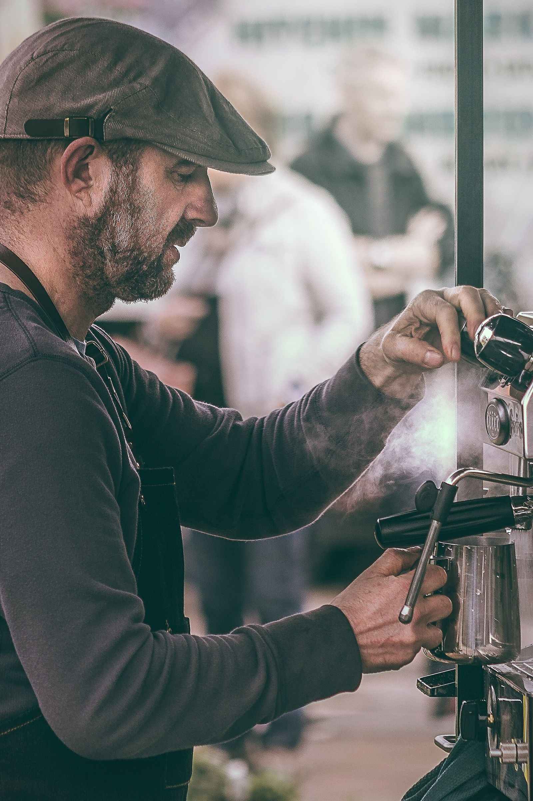
Le pichet tenu sous la lance, vapeur ouverte. Une fois le vortex lancé, la seule chose qui bouge, c'est le lait.Photo : James Sutton jamessutton_photography · CC0 · Commons
3. Ce qui rate, et comment le rattraper
Tu vas rater des centaines de pichets : le geste se joue au millimètre et à la seconde. Ce qui fait la différence entre quelqu'un qui progresse en deux semaines et quelqu'un qui stagne six mois, c'est la capacité à dire pourquoi un pichet est raté. Chaque défaut a sa signature, à l'oreille, à l'œil ou dans la tasse. Apprends-les comme un cuisinier apprend à reconnaître une sauce tranchée ou un caramel qui va brûler.
Ce que tu entends, ce que ça veut dire
Le son
Ce qui se passe
Ce que tu fais
« Tss, tss » régulier, léger
La pointe affleure, l'air entre en petites poches.
Rien. Continue, en suivant la surface qui monte.
« Blop », gargouillis, éclaboussures
Pointe trop haute, le jet aspire de grosses poches d'air.
Remonte le pichet d'un ou deux millimètres, tout de suite.
Grondement sourd et continu
Pointe immergée, le lait tourne.
Rien. Tu attends la chaleur sous la main.
Cri aigu, sifflement strident
Pointe trop profonde ou collée à la paroi, la vapeur force sans brasser.
Remonte un peu la pointe et décale-la vers le bord.
Silence dès le début
Pointe enfoncée d'entrée, aucun air n'entre.
Si le lait est encore froid, redescends le pichet pour retrouver le « tss ».
Grosses bulles, aspect savonneux
Tu vois : des bulles visibles à la surface, qui ne partent pas en tapant le pichet. Cause : de l'air ajouté trop tard (après 37 °C), trop longtemps, ou par une pointe trop haute. Corrige : étirage plus court et plus tôt, puis pointe immobile. Un coup sec sur le plan de travail crève les quelques bulles restantes. Au-delà, recommence.
Lait plat, sans mousse
Tu vois : un lait chaud et liquide, qui ne dessine rien. Cause : pointe enfoncée dès l'ouverture, ou étirage oublié. Corrige : pense « air d'abord » en ouvrant la vapeur. Si ça arrive sur un flat white, ça passe presque. Sur un cappuccino, recommence.
Mousse sèche qui flotte sur le lait
Tu vois : en tournant le pichet, une couche épaisse et raide au-dessus d'un liquide clair. Le dessin sort pâteux. Cause : trop d'air, vortex trop court, ou pichet qui a attendu plus de trente secondes. Corrige : moins d'air, et verse dans les dix secondes. Si tu dois attendre un espresso, fais tourner le pichet en continu pour garder le mélange.
Lait trop chaud
Tu sens : le cuit, l'œuf dur, le lait concentré. Le client ne peut pas boire avant cinq minutes. La mousse s'affaisse. Cause : coupure après 70 °C, souvent parce que la main est froide ou distraite. Corrige : ressors le thermomètre une semaine. Ce lait ne se rattrape pas : il part à l'évier.
Lait tiède
Tu vois : un client qui repose sa tasse au bout d'une gorgée. Cause : coupure trop tôt, ou tasse froide qui a pompé dix degrés. Corrige : tasses toujours sur le dessus chauffant ou rincées à l'eau chaude. Ne remets jamais un lait texturé sous la vapeur : refais-le.
Le vortex ne prend pas
Tu vois : le lait bouillonne sur place sans tourner. Cause : pointe au centre, pichet trop plein (au-dessus du bec) ou trop vide (le jet touche le fond). Corrige : lait jusqu'à la base du bec, pointe à mi-chemin entre le centre et le bord, pichet légèrement penché vers toi.
Bonne technique, mousse qui retombe
Tu vois : tout s'est bien passé, et la mousse s'effondre en une minute. Cause : lait trop vieux ou mal conservé, pichet mal rincé, trace de détergent, ou lait qui est resté à température ambiante. Corrige : change de brique, rince le pichet à l'eau froide. Si c'est toute une palette, préviens le fournisseur.
Goût de brûlé, d'aigre, de lance
Tu sens : une note de lait cuit ou un peu aigre dans un lait pourtant frais. Cause : lance pas essuyée, lait séché et recuit sur le métal, ou lait aspiré dans la buse faute de purge. Corrige : chiffon humide et purge après chaque lait, sans exception. Le soir, le Puly Milk (section 9).
Trois gestes qui sauvent des pichets
Le premier, c'est le coup sec. Une fois la vapeur coupée, frappe le fond du pichet une fois, franchement, sur le plan de travail. Les quelques grosses bulles qui restaient en surface éclatent. Si tu dois frapper cinq fois, le problème est en amont.
Le deuxième, c'est la rotation. Fais tourner le lait dans le pichet d'un mouvement du poignet, comme un vin dans un verre, jusqu'à ce que la surface brille comme de la peinture laquée. La mousse et le liquide se mélangent à nouveau. Un lait qu'on laisse immobile se sépare en vingt à trente secondes : la mousse monte, le lait descend.
Le troisième, quand tu as trop de mousse pour un flat white, c'est d'enlever la couche du dessus dans un second pichet avant de verser. Un dépannage de rush, pas une habitude : cette mousse part souvent à l'évier.
4. Les laits végétaux, un par un
Un lait végétal, c'est une céréale, une graine ou une noix broyée dans l'eau, puis filtrée. Ce que tu verses est donc surtout de l'eau, avec un peu de sucre, un peu de gras et, selon la plante, très peu ou pas mal de protéines. Ces protéines n'ont pas la même forme que celles du lait de vache et elles enrobent moins bien les bulles. Sans aide, la plupart moussent peu ou retombent vite.
D'où les versions « barista ». Les fabricants y ajoutent une huile végétale (colza ou tournesol le plus souvent) pour la rondeur et la brillance, parfois des stabilisants (gomme gellane, gomme de guar), et un régulateur d'acidité, en général le phosphate dipotassique, E340 ii. Au comptoir, n'achète que celles-là. La même marque en version standard mousse mal, retombe en une minute, et tranche dans le café.
Pourquoi un lait végétal tranche
Si tu as déjà fait du tofu, tu connais le phénomène. On chauffe du lait de soja, on ajoute un sel de calcium ou de magnésium (le nigari), et les protéines s'agglomèrent en caillé. Dans une tasse, c'est la même chose, sans que personne l'ait voulu. Le café est acide, avec un pH autour de 5, et chaud. Les protéines végétales, celles du soja surtout, restent dispersées dans le liquide tant que leurs charges électriques les font se repousser. Près de leur point isoélectrique, vers pH 4,5, elles perdent ces charges, se collent les unes aux autres avec l'aide du calcium, et forment des flocons. Beaucoup de laits végétaux sont enrichis en calcium, ce qui n'arrange rien.
Le phosphate dipotassique tamponne l'acidité et capte une partie du calcium, ce qui retarde la floculation. Le risque grimpe quand trois choses s'additionnent : un espresso très acide (un Kenya clair, par exemple), un lait trop chaud, et un écart de température brutal entre le café et le lait. Tes parades, dans l'ordre :
Texture moins chaud, 55 °C au lieu de 62.
Verse d'abord un mince filet de lait dans l'espresso et mélange d'un mouvement de tasse : tu tempères le café avant d'ajouter le reste.
Avec un soja capricieux, verse l'espresso sur le lait plutôt que l'inverse.
Si ça tranche encore, change de café pour les boissons végétales : un café plus rond et moins acide (un Brésil, un Guatemala) tranche beaucoup moins.
Avoine
La plus proche du lait de vache, et la plus demandée. Mousse fine, stable, bonne pour le latte art. Elle est naturellement douce, parce que pendant la fabrication des enzymes découpent l'amidon de l'avoine en sucres, d'où ce goût de céréale de petit déjeuner. Les bêta-glucanes, des fibres solubles, donnent du corps.
Arrêt : 55-60 °C. Caillage : rare. Allergène : gluten (avoine), sauf si la brique porte « sans gluten ». Marques barista : Oatly Barista Edition, Minor Figures, Alpro Barista Avoine, Califia Farms. Prix : dans la fourchette des barista, 2 à 3,50 € le litre selon la marque et le circuit.
céréale sucrée
biscuit
Mousse
Tenue
Goût marqué
Caillage
Soja
Le plus riche en protéines, environ 3 g pour 100 ml, presque autant que le lait. Mousse ferme et volumineuse, parfait pour un cappuccino. C'est aussi lui qui caille le plus facilement, pour la raison du tofu. Goût de haricot, plus ou moins masqué selon les marques, parfois vanillé.
Arrêt : vers 55 °C. Caillage : fréquent avec un café acide. Allergène : soja. Marques barista : Alpro Barista Soja, Bonsoy. Prix : souvent le moins cher des laits végétaux.
haricot
vanille
Mousse
Tenue
Goût marqué
Caillage
Amande
Très pauvre en protéines, 0,5 à 1 g pour 100 ml. La mousse est fragile, faite de bulles qui grossissent vite, et le goût d'amande est franc, presque de massepain. Texture plus mince que l'avoine. Vise des motifs simples, un cœur, et verse sans attendre.
Arrêt : vers 55 °C. Au-delà, il devient fade et un peu amer. Caillage : moyen. Allergène : fruits à coque. Marques barista : Alpro Barista Amande, Califia Farms. Prix : dans la fourchette des barista.
amande
massepain
Mousse
Tenue
Goût marqué
Caillage
Coco
Attention, on parle de la boisson à la coco, très diluée, et pas du lait de coco en boîte de cuisine, qui fait 15 à 20 % de gras. Peu de protéines, mousse faible mais onctueuse, et un goût qui écrase un peu le café. Elle s'accorde avec le chocolat et les épices : mocha, golden latte, chai.
Arrêt : 55-60 °C. Caillage : moyen. Allergène : la noix de coco ne fait pas partie des 14 allergènes, mais lis la mention de traces. Marques barista : Alpro Barista Coco. Prix : dans la fourchette des barista.
coco
crème
Mousse
Tenue
Goût marqué
Caillage
Pois
Riche en protéines comme le soja, et il mousse bien. Le goût est végétal, un peu de pois cassé, que tout le monde n'aime pas. Utile pour un client allergique à la fois au soja et aux fruits à coque.
Arrêt : 55-60 °C. Allergène : aucun des 14 à déclarer pour le pois lui-même, traces à vérifier. Marque barista : Sproud. Prix : plutôt dans le haut de la fourchette.
pois
Mousse
Tenue
Goût marqué
Caillage
Riz, noisette, cajou, macadamia
Le riz est sucré et très liquide, il mousse mal. La noisette a un goût délicieux avec le café mais mousse peu. Cajou et macadamia existent en barista (Milkadamia pour la macadamia), crémeux et ronds. Noisette, cajou et macadamia sont des fruits à coque : même allergène que l'amande.
Arrêt : vers 55 °C. Pour la carte, cinq laits suffisent largement.
noisette
riz sucré
Les laits du comptoir côte à côte (ordres de grandeur, les marques diffèrent : lis l'étiquette)
Lait
Protéines (g/100 ml)
Mousse
Goût
Arrêt
Allergène à afficher
Boissons conseillées
Vache entier UHT
3,2-3,3
fine, stable, brillante
lacté, doux
60-65 °C
lait
tout
Avoine barista
≈ 1
fine, stable
céréale, doux
55-60 °C
gluten (avoine), sauf « sans gluten »
flat white, latte, cappuccino
Soja barista
≈ 3
ferme, volumineuse
haricot, vanille
≈ 55 °C
soja
cappuccino, latte
Amande barista
0,5-1
fragile
amande franche
≈ 55 °C
fruits à coque
latte, iced latte
Coco barista
moins de 0,5
faible, onctueuse
coco très présent
55-60 °C
aucun des 14, traces à vérifier
mocha, golden latte, chai
Allergènes, prix et empreinte
Le règlement européen INCO (UE n° 1169/2011) impose de déclarer 14 allergènes, y compris pour une boisson servie au comptoir (article 44). En France, l'information doit être disponible par écrit. À ton bar à lait, trois sont en jeu en permanence : le lait, le soja, les fruits à coque. Ajoute le gluten pour l'avoine si la brique ne dit pas « sans gluten ». La coco et le riz n'en font pas partie, mais l'étiquette peut signaler des traces si l'usine fabrique aussi du soja ou de l'amande.
Côté prix, une boisson barista coûte en général deux à trois fois le prix de ton UHT de vache au litre. Le supplément végétal facturé au client doit couvrir cet écart et les pertes, et on refait le calcul à la section 10 avec tes vrais prix. Pour l'environnement, les moyennes de Joseph Poore et Thomas Nemecek (2018), reprises par Our World in Data, donnent pour un verre de 200 ml environ 0,62 kg d'équivalent CO2 pour le lait de vache, contre 0,19 kg pour l'avoine, 0,21 pour le soja et 0,16 pour l'amande, et 131 litres d'eau pour le lait de vache contre 9 pour l'avoine. Ces moyennes cachent de grands écarts entre fermes, et des valeurs nutritives différentes. Dis plutôt « l'avoine émet en moyenne trois fois moins que le lait de vache » que « l'avoine est écologique ».
Quand un client hésite, parle-lui de goût : « L'avoine est la plus douce, la plus proche du lait. Le soja fait une belle mousse avec un petit goût. L'amande et la coco se sentent bien, la coco est très bonne dans le mocha. » S'il parle d'allergie, tu montres l'affichage et tu sors le pichet dédié (section 9).
Le latte art, c'est le dessin qui se forme à la surface par le seul versement du lait. Pour toi, il sert surtout de contrôle. Un contraste net et des lignes fines prouvent une crema fraîche et une micromousse homogène. Un dessin flou, pâteux ou qui se casse te dit que quelque chose a déraillé en amont. Il ne dit rien du goût de l'espresso, en revanche : un cœur parfait sur un shot sous-extrait reste un café aigre.
Il te faut quatre choses avant même de verser. Une crema fraîche, tirée il y a moins de trente secondes, parce qu'elle se dégrade vite et devient pâle et cassante. Une micromousse fine, qui brille dans le pichet. Une tasse préchauffée, pour que la crema reste souple. Et une tasse inclinée vers le pichet, à 30 ou 45 degrés au début, pour que la surface vienne au-devant du bec.
Deux temps : intégrer, puis dessiner
D'abord, intégrer. Pichet haut, à 5 à 10 cm au-dessus de la tasse, filet fin et régulier, de la largeur d'un crayon. À cette hauteur, le lait a assez d'élan pour passer sous la crema sans la blanchir. Il se mélange au café et remplit la tasse à moitié environ. Vise le centre de la crema, pas le bord de la tasse, sinon tu fais remonter une tache blanche contre la paroi.
Ensuite, dessiner. Tu abaisses le bec presque au contact de la surface, à un centimètre, tout en redressant peu à peu la tasse, et tu augmentes le débit. La mousse, plus légère, n'a plus d'élan pour s'enfoncer : elle flotte et s'étale en blanc sur la crema brune. Tu finis en relevant le pichet et en traversant le motif d'un filet fin, qui tire la pointe du cœur. Le passage de « haut et fin » à « bas et plus fort » doit être franc. C'est l'endroit où presque tous les débutants hésitent.
Figure 12.3. Le versement en deux temps, puis la finition. Le filet fin versé de haut passe sous la crema. Bec presque au contact et débit plus fort, la mousse flotte et dessine. On relève et on traverse le motif pour tirer la pointe du cœur.
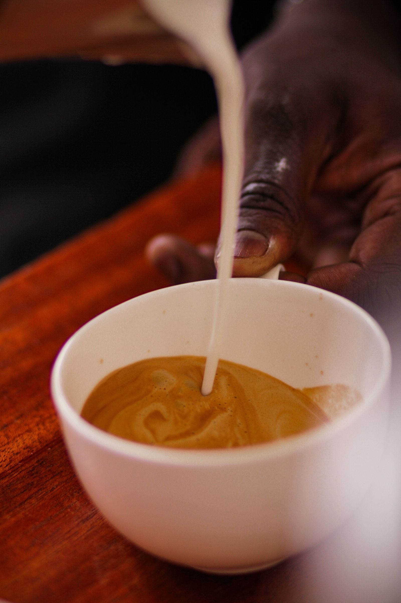
Intégration : filet fin, versé de haut au centre de la crema, tasse penchée vers le pichet.Photo : Antony Trivet · CC BY-SA 4.0 · Commons
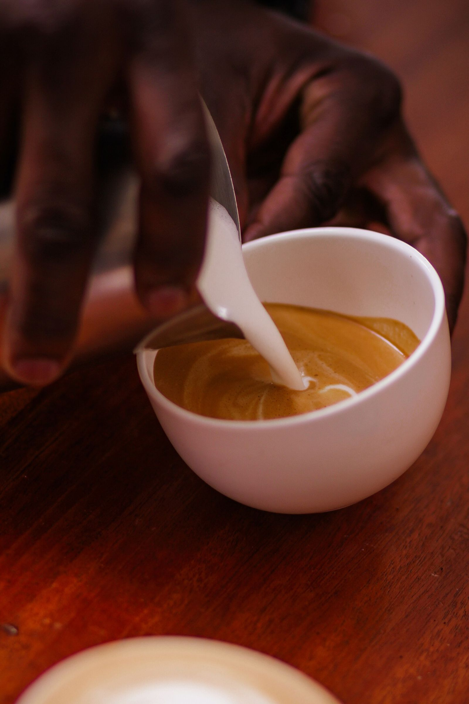
Le bec descend presque au contact de la surface : la mousse commence à s'étaler en blanc.Photo : Antony Trivet · CC BY-SA 4.0 · Commons
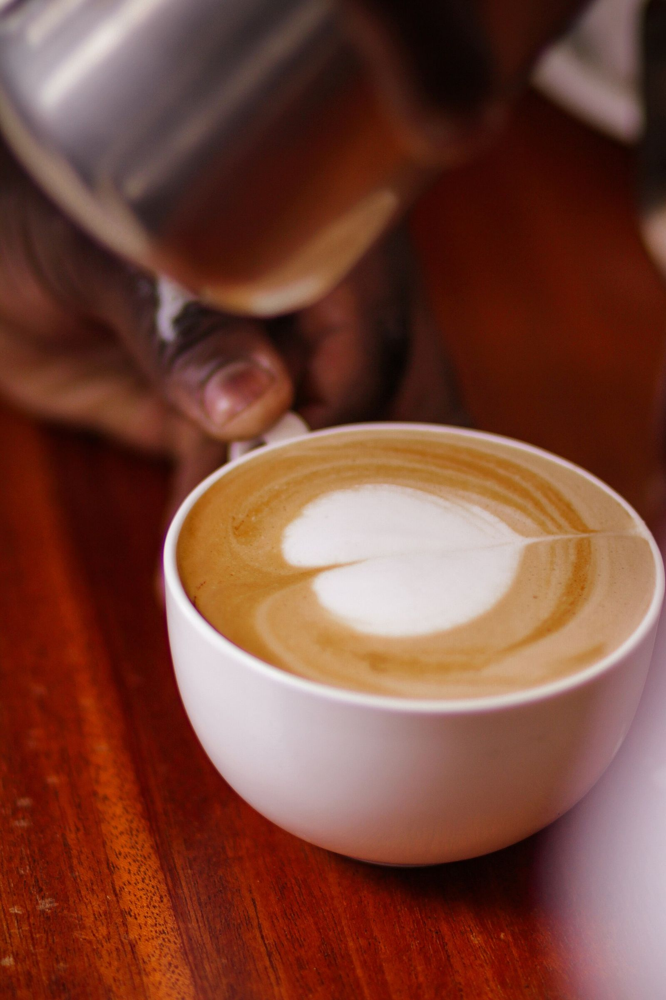
Le cœur fini. Contour net, pas de halo gris autour du blanc : mousse et crema étaient fraîches.Photo : Antony Trivet · CC BY-SA 4.0 · Commons
Le cœur
Intègre jusqu'à mi-tasse, filet fin, de haut, au centre.
Descends le bec au contact, au centre de la tasse, et augmente le débit d'un coup.
Ne bouge pas : un disque blanc apparaît et grossit. Redresse la tasse au fur et à mesure.
Quand le disque atteint les deux tiers de la largeur et que la tasse est presque pleine, relève le pichet de quelques centimètres.
Filet fin, traverse le disque d'un trait vers l'avant. La traversée creuse l'arrière et tire la pointe.
Le cœur contient tous les gestes : maîtrise-le avant le reste. Disque ovale et déformé, la tasse n'était pas assez inclinée. Pas de disque, mousse trop fine ou bec trop haut. Tache épaisse d'entrée, trop de mousse.
La tulipe
1IntégrerComme pour le cœur, un peu moins loin : la tasse au tiers ou à mi-hauteur.
2Premier disqueBec bas, légèrement vers le fond de la tasse. Un petit disque, puis tu coupes le débit en relevant à peine.
3Deuxième disqueTu reposes le bec juste derrière, tu verses : le second disque pousse le premier vers l'avant et l'enroule.
4Troisième, quatrièmeMême geste, chaque disque plus petit et plus près de toi. La tasse se redresse.
5TraverserRelève, filet fin, traverse l'ensemble d'un trait jusqu'au premier disque.
La tulipe teste ta capacité à couper et reprendre le débit sans faire de taches. Les débutants empilent des disques qui se mélangent en une masse blanche. La cause est presque toujours la même : le débit n'est pas vraiment coupé entre deux poussées.
La rosetta, seconde par seconde
0 à 3 sIntégrationDe haut, filet fin, jusqu'à mi-tasse. La tasse est bien penchée.
3 sContactBec bas, au centre ou un peu vers le fond, débit franc. Une tache blanche apparaît.
3 à 7 sBalancierPetits mouvements du poignet, gauche-droite, deux à trois par seconde, de quelques millimètres. La mousse ondule en zigzags qui se replient vers l'avant.
7 à 9 sReculSans arrêter le balancier, tu recules lentement vers le bord proche de toi. Les feuilles rétrécissent.
9 à 10 sTraverséeRelève de deux ou trois centimètres, filet fin, et traverse toutes les feuilles vers l'avant.
La rosetta demande de la mousse un peu plus fluide qu'un cœur. Le balancier vient du poignet, jamais du bras. Si tes feuilles sont larges et floues, tu as trop de mousse ou tu balances trop fort. Si elles sont fines puis disparaissent, le pichet est trop haut pendant le balancier.
Figure 12.4. Les trois motifs de base, anse de la tasse en bas. La ligne pointillée montre la traversée finale, versée de plus haut avec un filet fin, toujours vers l'avant.
Les erreurs qui se lisent dans la tasse
Lire un dessin raté
Tu vois
Pourquoi
Tu corriges
Toute la surface blanchit
Bec abaissé trop tôt, ou intégration trop basse.
Intègre plus haut, plus longtemps.
Rien n'apparaît, la crema reste brune
Bec trop haut pendant le dessin, ou mousse trop fine (flat white raté en cappuccino).
Descends au contact, débit plus fort.
Dessin pâteux, bords épais
Trop de mousse, ou mousse séparée qui a attendu.
Moins d'air, tourner le pichet, verser plus tôt.
Motif qui dérive sur le côté
Tasse pas dans l'axe du pichet, ou bec décentré.
Aligne l'anse, le bec et ton regard.
Halo gris autour du blanc, crema pâle
Espresso qui a attendu, crema cassée.
Tire le shot au dernier moment.
Feuilles de rosetta qui se mélangent
Balancier trop ample, ou pichet trop haut.
Petits mouvements, bec bas.
Pointe du cœur mangée, trait large
Traversée trop basse ou trop forte.
Relève, filet fin, geste rapide.
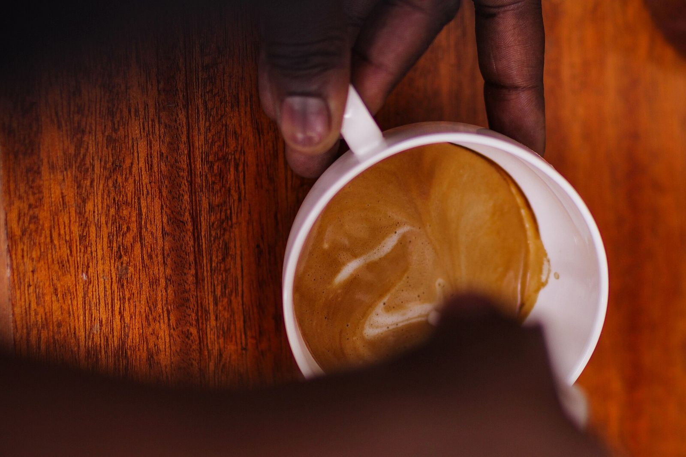
La tasse penchée vers le pichet au début du versement : la surface vient au-devant du bec, et le motif a la place de s'étaler.Photo : Antony Trivet · CC BY-SA 4.0 · CommonsUne rosetta en versement libre. Feuilles nettes, fort contraste : mousse fine et espresso frais.Photo : Mortefot from Flickr · CC BY-SA 2.0 · Commons
S'entraîner sans gaspiller
Le lait coûte de l'argent, et l'entraînement en consomme beaucoup. Quelques façons de progresser sans vider une brique par jour :
Pour le geste de la lance, de l'eau froide avec une goutte de liquide vaisselle se texture presque comme du lait. Tu entends le « tss », tu vois le vortex. L'eau savonneuse ne sert qu'au geste, jamais dans une tasse, et le pichet se lave à fond ensuite.
Pour le versement, un seul pichet de 350 ml peut servir deux tasses d'essai si tu te limites à des cœurs dans de petites tasses.
Les boissons d'essai deviennent les cafés de l'équipe. Le lait d'entraînement ne repart jamais vers un client et ne se retexture jamais.
Filme-toi au ralenti avec ton téléphone, posé de côté. Tu verras tout de suite si tu as hésité au moment de descendre le bec.
Un seul motif par semaine. Dix cœurs par jour pendant cinq jours valent mieux que trois rosettas ratées et deux tulipes au hasard.
6. La carte en quatre familles
Un client commande un « cappu », un autre un « crème », un troisième montre la photo d'un latte glacé sur son téléphone. Pour t'y retrouver, retiens qu'une boisson se définit par cinq réglages : la dose de café, le volume de lait, l'épaisseur de mousse, la tasse, et la température de service. Change un seul de ces réglages et tu obtiens une autre boisson. La même dose de café versée dans une tasse plus grande, avec plus de lait, devient un café plus pâle, plus doux, qu'on n'appelle plus pareil.
Chez Café Med & Co, la base de presque tout, c'est le double maison du module 11 : 20 g de café, 44 g en tasse. L'espresso simple est la moitié d'un double partagé entre deux tasses par les deux becs du porte-filtre, soit 22 g. Tu n'as donc qu'une recette à régler le matin, et toute la carte en découle. Voici la carte rangée en quatre familles. Clique sur chacune.
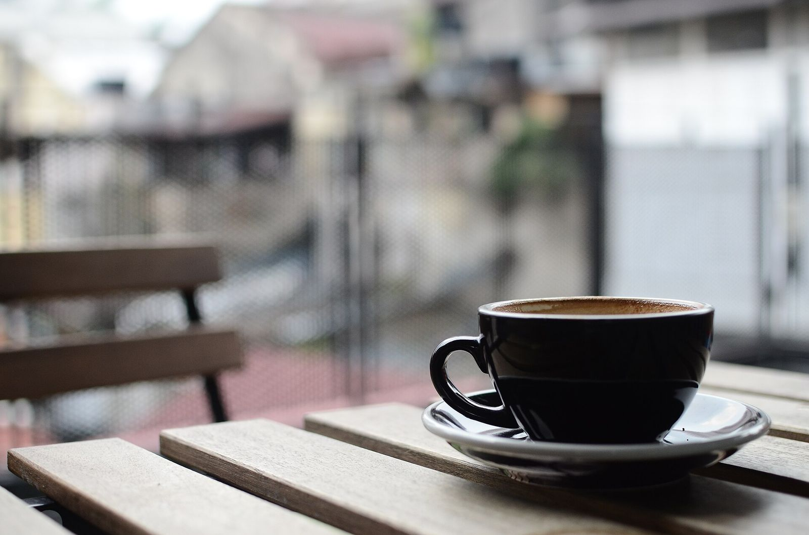
Un café noir en tasse large. Americano ou long black : à l'œil, seule la crema intacte trahit le second.Photo : karl chor karlchor · CC0 · Commons
Le café, avec ou sans eau
Espresso, double, americano, long black, et leurs cousins tachés d'un nuage de lait, le macchiato et la noisette. Ici, le café est seul en scène : le moindre défaut de réglage se goûte. C'est la famille qu'on sert le plus vite, et celle qui demande le plus d'attention au moulin.
cacao
fruits rouges
caramel
Café
Lait
Douceur
Vitesse
Un cœur sur un flat white.Photo : Antony Trivet · CC BY-SA 4.0 · Commons
Le café et le pichet
Du plus court au plus long : cortado, piccolo, flat white, cappuccino, latte, café crème, mocha, et sans café le chai latte. Le même double, de moins en moins dilué dans le lait. Plus il y a de lait, plus le café doit avoir de corps et de chocolat pour exister.
chocolat au lait
caramel
noisette
Café
Lait
Douceur
Vitesse
Un café froid sur glace, surmonté de crème.Photo : Andy Li · CC0 · Commons
Glace, lait froid, cold brew
Iced latte, cold brew latte, affogato. Pas de vapeur ici, mais de la dilution à maîtriser : la glace fond, et elle allonge le café pendant que le client le boit. On prépare ces boissons en dernier, juste avant de les servir.
cacao
sucre brun
vanille
Café
Lait
Douceur
Vitesse
Ce qui fait la carte de la maison
Café bombón au lait concentré sucré, espresso tonic amer et pétillant, golden latte au curcuma sans café, thé glacé. Elles se vendent moins que le flat white, mais ce sont elles qu'on retient et qu'on prend en photo. Recettes et pièges à la section 8.
lait concentré
quinine, zeste
curcuma, gingembre
thé
Café
Lait
Douceur
Vitesse
Figure 12.5. Quatorze boissons, hauteur proportionnelle au volume. Les couches sont schématiques. Dans la tasse, l'espresso et le lait se mélangent sous la mousse ; seuls le café bombón, le long black, l'iced latte et l'espresso tonic se servent vraiment en couches, au moins au moment où tu poses le verre.
Les noirs, fiche par fiche
Espresso
La moitié d'un double partagé : 20 g → 44 g en 27 à 32 s, deux tasses de 22 g. Demi-tasse de 60 à 90 ml, chaude. Servi avec un petit verre d'eau. Le client de brasserie le trouvera plus long et plus acide que son petit noir : préviens-le avec le sourire.
Double
Le double entier, 20 g → 44 g, dans une tasse de 90 à 120 ml préchauffée. C'est la vitrine de ton réglage du matin : goûte le premier de la journée, à chaque fois.
Americano
Le double d'abord, puis 120 à 150 ml d'eau chaude, entre 85 et 92 °C, dans une tasse de 180 à 240 ml. L'eau versée sur la crema la casse et la tasse ressemble à un filet léger. Plus doux qu'il n'en a l'air. Sers-toi de la bouilloire plutôt que du robinet de la Linea en rush, pour ne pas vider la chaudière vapeur.
Long black
L'ordre inverse : 100 à 120 ml d'eau chaude dans la tasse, puis le double tiré directement dessus. La crema reste intacte en surface, la tasse est plus intense en bouche et plus parfumée au nez qu'un americano. C'est la version australienne et néo-zélandaise. Tasse de 150 à 180 ml.
Macchiato
En italien, « taché ». Un espresso (ou un double) marqué d'une cuillère de mousse de lait, 1 à 2 cm. Pour une seule tasse, texture 60 à 80 ml dans le petit pichet et garde le reste pour une autre boisson de la commande, sinon c'est de la perte. Demi-tasse.
Noisette
Le macchiato des bistrots français : un espresso avec un nuage de lait chaud ou de mousse, couleur noisette, d'où le nom. Il n'y a pas de noisette dedans. Si un client la demande, fais un macchiato avec un peu plus de lait.
Le double coule du porte-filtre à deux becs. Pour servir deux espressos simples, on glisse une tasse sous chaque bec et chacune reçoit 22 g.Photo : massage-techniques · CC BY-SA 2.0 · Commons
Parler bistrot et parler coffee shop
Les Batignolles sont pleines de clients qui ont commandé « un petit crème » au comptoir pendant trente ans. Ils ne connaissent pas le flat white et n'ont pas envie qu'on leur fasse la leçon. Ton travail consiste à traduire, sans corriger.
Le client dit, tu entends, tu proposes
Le client dit
Il veut probablement
Tu proposes
« Un café », « un express »
un espresso
l'espresso, en le prévenant qu'il est plus fruité
« Un serré »
un ristretto, court et intense
un espresso arrêté plus court
« Un allongé »
un espresso avec de l'eau, ou coulé plus long
un americano, ou un long black s'il aime la crema
« Une noisette »
un espresso avec un nuage de lait
un macchiato
« Un crème », « un petit crème »
un espresso et beaucoup de lait chaud mousseux, en grande tasse
un latte, ou un flat white s'il veut le café plus présent
« Un cappu »
souvent un cappuccino très mousseux, parfois avec cacao
le cappuccino, cacao seulement s'il le demande
« A latte » (touriste)
un latte
le latte. En Italie, latte veut dire lait : un Italien qui dit « un latte » attend parfois un verre de lait.
Range toutes les boissons lactées sur une ligne, de la plus courte à la plus longue. Le cortado a à peu près autant de lait que de café. Le flat white en a deux fois et demie plus, le latte quatre ou cinq fois plus. À chaque marche, le café se dilue, la douceur du lait monte, et l'acidité recule. C'est comme allonger une sauce : trois cuillères de fond de veau dans un demi-litre de crème, tu sens encore le veau ; dans deux litres, il ne reste qu'une idée.
Pour cette raison, tous les cafés ne vont pas avec toutes les boissons. Un Kenya très acide peut prendre un goût de tomate dans un flat white. Un Éthiopie nature très fruité peut virer au yaourt ou à l'alcool dans un latte. Les cafés qui traversent le mieux le lait ont du corps, du chocolat, du caramel, de la noisette : un Brésil, un Guatemala, beaucoup d'assemblages espresso. Pour savoir ce que donne chaque café de la boutique en lait, il n'y a qu'une méthode, le goûter (section 10), et lire la fiche d'Ïota.
Cortado
De l'espagnol cortar, couper : un espresso « coupé » de lait. Double de 44 g, 40 à 60 ml de lait chaud presque sans mousse, verre de 120 ml. Le pichet de 350 ml ne fait pas de vortex en dessous de 80 ml : texture 100 ml et garde le reste pour une autre boisson de la commande, ou accepte la perte.
Arrêt : 58-62 °C. Mousse : quelques millimètres.
Piccolo
Un petit latte australien. Un ristretto (20 g → 30 à 35 g) ou un espresso simple, complété de lait texturé comme pour un latte, dans un verre de 90 à 120 ml. Plus doux que le cortado, avec un vrai petit dessin.
Arrêt : 58-62 °C. Mousse : ≈ 0,5 cm.
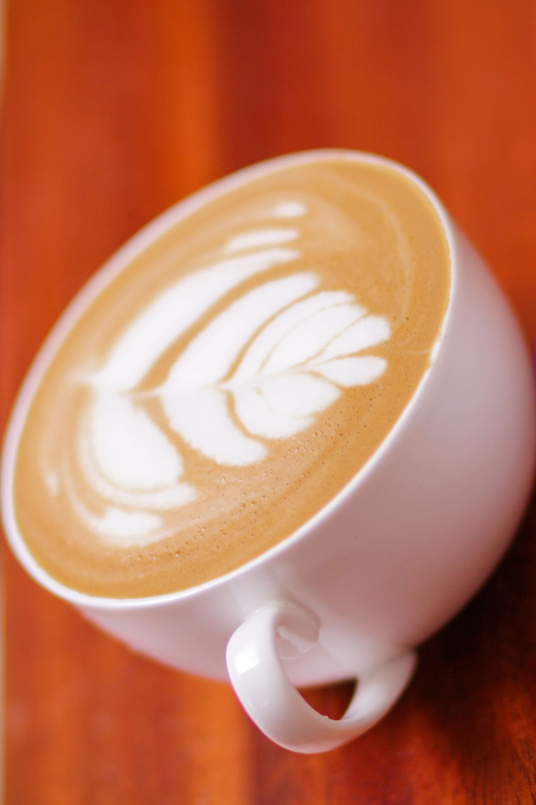
Flat white
Double de 44 g, 150 ml de lait au pichet de 350, environ 120 ml qui finissent dans la tasse, mousse très fine d'un demi-centimètre, tasse de 160 à 180 ml. Le café reste présent, on le boit pour lui. Né au milieu des années 1980, Sydney et Wellington s'en disputent l'invention.
Arrêt : 60-62 °C. Étirage : 1 à 2 s.
Cappuccino
Double de 44 g, 150 ml de lait au pichet de 350, beaucoup plus d'air : 1,5 à 2 cm de mousse, tasse de 150 à 180 ml. La mousse doit rester souple et brillante, jamais une meringue posée sur un café. Cacao ou cannelle seulement si le client le demande.
Arrêt : 60-62 °C. Étirage : 4 à 6 s.
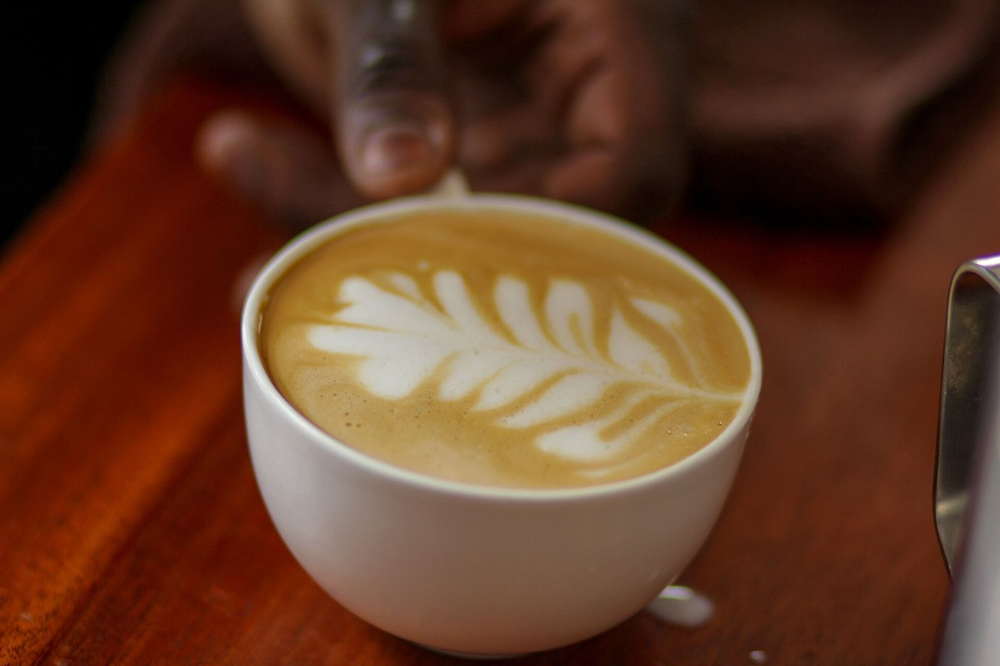
Latte
Double de 44 g, 250 ml de lait au pichet de 600, environ 220 ml dans la tasse, mousse d'un centimètre, tasse ou bol de 280 à 330 ml. La boisson la plus douce de la famille, et la plus demandée par les clients qui découvrent le coffee shop.
Arrêt : 60-65 °C. Étirage : 3 à 4 s.
Café crème
Le classique des brasseries : un espresso et du lait chaud mousseux en grande tasse, à mi-chemin entre latte et cappuccino. Il n'est pas sur ta carte, mais on te le demandera. Sers un latte, et dis-le : « Je vous fais un latte, c'est notre café crème. »
Latte macchiato
L'inverse du latte : dans un verre haut d'environ 300 ml, le lait texturé d'abord, puis l'espresso versé en dernier à travers la mousse. Il se pose entre le lait et la mousse et dessine trois couches. Joli, mais le café se boit en dernier, presque séparé.
Mocha
Le chocolat au fond de la tasse (la dose de la recette maison, souvent 15 à 20 g de sauce ou de chocolat), le double tiré directement dessus et mélangé à la cuillère pour tout dissoudre, puis 200 à 220 ml de lait texturé, mousse d'un centimètre. Le nom vient du port de Moka, au Yémen. Allergènes : le lait, et ceux du chocolat (souvent soja, parfois traces de fruits à coque), à vérifier sur l'étiquette.
Arrêt : 60-65 °C.
Chai latte
Du thé noir épicé (cardamome, cannelle, gingembre, clou de girofle, poivre), en concentré ou en poudre, et 220 à 250 ml de lait texturé. Pas de café, mais de la théine. Avec un espresso en plus, les anglophones l'appellent dirty chai.
Arrêt : 60-65 °C.
La fiche recette de la maison
Recettes lactées sur la Linea (double maison 20 g → 44 g ; volumes à valider sur tes tasses)
Boisson
Café
Lait au pichet
Pichet
Mousse en tasse
Tasse
Arrêt vache / végétal
Cortado
double
≈ 100 ml (≈ 50 ml servis)
350 ml
quelques mm
verre 120 ml
58-62 / 55 °C
Piccolo
ristretto ou simple
≈ 100 ml (≈ 60 ml servis)
350 ml
≈ 0,5 cm
verre 90-120 ml
58-62 / 55 °C
Flat white
double
≈ 150 ml
350 ml
≈ 0,5 cm
160-180 ml
60-62 / 55-58 °C
Cappuccino
double
≈ 150 ml
350 ml
1,5-2 cm
150-180 ml
60-62 / 55-58 °C
Latte
double
≈ 250 ml
600 ml
≈ 1 cm
280-330 ml
60-65 / 55-60 °C
Mocha
double + chocolat
≈ 220 ml
600 ml
≈ 1 cm
280 ml
60-65 / 55-60 °C
Golden latte
aucun
≈ 250 ml
600 ml
≈ 1 cm
280-330 ml
60-65 / 55-60 °C
Le pichet contient toujours un peu plus que ce qui finit dans la tasse : la mousse collée aux parois, le fond qu'on ne verse pas pour garder un dessin propre. Compte 15 à 30 ml de perte par boisson. Au-delà, regarde comment tu remplis tes pichets (section 10).
Glace, tonic, lait concentré, curcuma : les boissons qu'on retient.
Un jour de juin à 30 °C, la moitié des tickets peuvent être froids. Ces boissons ont l'air simples et cachent deux pièges. La glace fond et dilue, donc tout ce que tu sers froid part plus concentré que la version chaude. Et un verre mal monté se voit tout de suite : couches mélangées, tonic qui déborde, lait concentré qui remonte.
Les froides
Iced latte
Verre de 350 ml rempli de glaçons aux deux tiers (≈ 100 g), 160 à 180 ml de lait froid, puis le double de 44 g versé lentement par-dessus. Le café se pose en nuage brun sur le lait blanc. On ne texture pas. Si le client le veut mousseux, monte le lait froid au fouet électrique ou au shaker : la lance, elle, le chaufferait. Les laits végétaux tranchent beaucoup moins à froid, c'est la chaleur qui déclenche le caillage.
Lait au litre : ≈ 170 ml.
Cold brew latte
La recette du module 10 : un concentré de cold brew à 1:8, infusé 18 à 24 heures au frigo. Dans un verre de 350 ml plein de glace, 150 g de concentré et 150 g de lait froid. Plus doux et plus chocolaté que l'iced latte, moins d'amertume, presque pas d'acidité perçue. Il se sert en dix secondes en plein rush, c'est sa grande force.
Affogato
En italien, « noyé ». Une boule de glace à la vanille (60 à 70 g) dans une coupe ou une tasse froide, et un espresso ou un double versé dessus devant le client, ou servi à côté dans une petite carafe. Le café chaud fond la glace, la glace refroidit le café. Allergènes : le lait, et parfois l'œuf de la glace.
Les signatures
Café bombón
Une spécialité espagnole, associée à Valence. Dans un petit verre étroit de 100 à 120 ml : 30 à 40 ml de lait concentré sucré au fond, puis un espresso versé très doucement sur le dos d'une cuillère, pour qu'il se pose au-dessus sans se mélanger. Deux couches nettes, blanche et brune. Le client mélange lui-même. C'est très sucré, presque un dessert : le lait concentré sucré contient plus de la moitié de son poids en sucres. Allergène : lait.
caramel
lait concentré
cacao
Espresso tonic
Verre de 300 ml, glaçons aux trois quarts, 120 à 150 ml de tonic bien froid, et un double versé lentement au-dessus. Le café flotte en surface et dessine un dégradé. Versé vite, il fait mousser le tonic, qui déborde. Né en Scandinavie, entre Oslo et Koppi, à Helsingborg en Suède, en 2007. Un café lavé fruité (une Éthiopie, par exemple) y donne le meilleur, la quinine du tonic répond à l'acidité. Un zeste d'orange, si la maison le prévoit.
pamplemousse
orange
fleurs
Golden latte
Sans café. Le mélange de la maison (curcuma, et selon la recette gingembre, cannelle, poivre noir), mélangé à un peu de lait chaud au fond de la tasse pour éviter les grumeaux, puis 220 à 250 ml de lait texturé comme pour un latte. Le curcuma tache les pichets et les chiffons : rince tout de suite. Il s'inspire du lait au curcuma indien, le haldi doodh. Avec la coco ou l'avoine, il est très bon.
curcuma
gingembre
cannelle
Thé glacé
Deux méthodes. À froid : 8 à 10 g de thé par litre d'eau froide, 8 à 12 heures au frigo, puis filtré. Doux, peu amer, très aromatique. À chaud : un thé infusé deux fois plus fort, versé directement sur la glace, qui fait le reste de la dilution. Plus de tanins, plus de mordant. La recette et la durée de conservation de la maison sont dans la fiche et le Pack hygiène : comme le cold brew, un thé infusé à froid n'est protégé que par le froid et la propreté.
thé
citron
fleurs
Et la formule brunch ?
La formule brunch comprend une boisson chaude. Elle se prépare exactement comme à la carte, même dose, même lait, même température : un brunch n'est pas une occasion de sortir des cappuccinos plus petits. Regarde la fiche de la formule pour savoir quelles boissons sont incluses et lesquelles passent en supplément, et demande au client s'il la veut avec son plat ou avant. En salle, une boisson lactée qui attend cinq minutes à côté des œufs perd sa mousse et sa chaleur. Lance-la quand le plat sort de la cuisine.
Samedi, 11 h 10. Six tickets sur le rail : deux flat whites, un cappuccino avoine, un latte, un mocha, un iced latte. Une personne seule à la machine peut sortir tout ça en quatre minutes, ou en neuf. La différence ne tient pas à la vitesse des mains. Elle tient à l'ordre des gestes, et au fait que la machine travaille pendant que tu fais autre chose.
Un flat white en moins d'une minute
Tu lances le shot, et pendant ses 28 secondes d'extraction tu fais tout le lait. Le café et le lait arrivent prêts en même temps, crema fraîche, mousse fraîche. Celui qui texture après la fin du shot fait attendre un espresso qui meurt, et perd trente secondes.
Figure 12.6. Le flat white en temps réel. La machine travaille seule pendant que tu textures : le groupe et la lance tournent en même temps, et toi tu ne fais que regarder.
1 · 0 à 10 sCaféPorte-filtre purgé et essuyé, 20 g moulus, distribués, tassés. Purge du groupe, verrouillage, départ. Tasse chaude sur la Pearl.
2 · 10 à 14 sLait150 ml de lait froid dans le pichet de 350, une seconde de purge de la lance dans le torchon.
14 à 31 sVapeurÉtirage 1 à 2 s, vortex, coupure à 60-62 °C. Un œil sur le shot.
3 · 31 à 35 sLanceChiffon humide, purge. Tout de suite, pas « après le rush ».
4 · 35 à 39 sPichetUn coup sec, puis tu fais tourner. Le shot s'arrête à 44 g.
5 · 39 à 46 sVersementIntégration, dessin, traversée.
6 · 46 à 53 sServiceTasse posée, anse vers la droite du client. Porte-filtre vidé et rincé, pichet rincé à l'eau froide.
Deux boissons, un pichet
Deux flat whites, ou un flat white et un cappuccino : un seul pichet de 600 ml, 300 ml de lait, deux shots lancés ensemble sur les deux groupes. Le pichet verse d'abord le liquide, et la mousse, plus légère, sort plutôt à la fin. La première tasse reçoit donc moins de mousse que la seconde. Tu textures donc pour la plus mousseuse des deux, et tu verses d'abord la moins mousseuse. Flat white d'abord, cappuccino ensuite.
Pour avoir la même texture dans deux tasses identiques, verse la moitié du lait dans un second pichet propre, fais tourner les deux, et verse chaque tasse avec son pichet. Deux lattes ne tiennent pas dans un 600 ml (il faudrait 500 ml de lait, trop haut pour faire un vortex) : deux pichets, deux lances, en même temps.
L'ordre en rush
Lis trois tickets d'avance. Tu repères ce qui peut partager un pichet et ce qui demande un pichet dédié.
Groupe les boissons par lait : toutes les vaches ensemble, puis les végétaux, chacun dans son pichet.
Lance un shot seulement quand tu sais que son lait sera prêt dans les 30 secondes. Un shot qui attend une minute est à refaire.
Les froides en dernier, juste avant de servir. L'iced latte qui attend se dilue.
Annonce les boissons au client en posant la tasse : « Flat white avoine. » Ça évite que le cappuccino au soja parte chez la personne allergique.
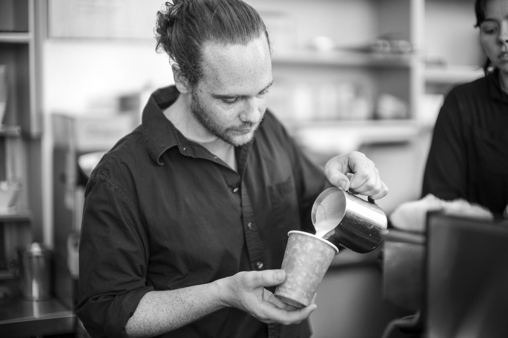
Versement dans un gobelet à emporter. Même geste qu'en tasse, mais la paroi plus haute et plus droite laisse moins de place pour incliner : intègre un peu plus longtemps avant de dessiner.Photo : Christopher Michel · CC BY 2.0 · Commons
Les pichets dédiés
Cinq laits, au moins trois allergènes. Le lait de vache, le soja et l'amande sont trois des 14 allergènes, et l'avoine apporte le gluten si la brique ne dit pas « sans gluten ». La chaleur ne détruit pas un allergène, et un pichet rincé à l'eau froide peut garder un film du lait précédent.
Un pichet par lait végétal, de couleur ou marqué au feutre indélébile, qui ne sert jamais pour un autre lait. Le pichet d'amande ne voit que de l'amande.
Pendant le service, si la maison le décide, une lance réservée aux végétaux et l'autre à la vache. Sinon, une purge longue et un essuyage au chiffon propre avant chaque lait végétal.
Les briques végétales rangées à part dans le frigo, datées comme le lait de vache.
Le chiffon de la lance « végétale » est différent de celui de la lance « vache ».
Pichets de couleur au pied d'une machine qui fume. Une couleur par lait, et on ne mélange jamais : c'est le moyen le plus simple de tenir les allergènes en plein rush.Photo : Shixart1985 · CC BY 2.0 · Commons
Les lances, propres à chaque lait
Le lait est le meilleur milieu de culture du comptoir. Sur une lance chaude, il cuit en quelques secondes et se transforme en croûte brune, et celui qui remonte dans la buse quand tu coupes la vapeur la bouche peu à peu et nourrit les bactéries. Après chaque lait : essuyage au chiffon humide, puis une seconde de purge. Le chiffon de lance sert à ça et à rien d'autre, il se change plusieurs fois par jour.
Une fois par jour, deux en cas de gros débit, le Puly Milk. La fiche du fabricant pour le pulyMILK Plus prévoit 25 ml de produit dans 500 ml d'eau froide, dans un pichet. Tu enfonces la lance dans la solution, tu ouvres une seconde de vapeur, tu fermes, tu attends dix secondes : la lance aspire le liquide en refroidissant. Sept à dix fois. Puis le même cycle dans un litre d'eau froide propre, pour rincer. Suis la notice de ton flacon, les formules changent. Le soir, pichets au lave-vaisselle, et une fois par semaine les buses dévissées et mises à tremper dans la solution. Si un trou reste bouché, une aiguille fine le débouche, et le vortex de la semaine suivante te remerciera.
Deux chiffres suffisent pour calculer presque toute la carte. Le café Ïota coûte environ 26,40 € HT le kilo : les 20 g d'un double valent 0,53 €, un espresso simple partagé 0,26 €. Le lait de vache UHT coûte 1,18 € le litre, soit 0,12 € les 100 ml. Le lait versé dans le pichet compte en entier, pas seulement celui qui finit dans la tasse, puisque le reste part à l'évier.
Coût matière café + lait, par boisson (hors gobelet, sucre, chocolat, tonic, nettoyants et énergie)
Boisson
Café
Lait au pichet
Coût du lait
Total
Espresso
0,26 €
aucun
0
0,26 €
Double, americano, long black
0,53 €
aucun
0
0,53 €
Macchiato (double)
0,53 €
≈ 70 ml
0,08 €
0,61 €
Cortado
0,53 €
≈ 100 ml
0,12 €
0,65 €
Flat white, cappuccino
0,53 €
≈ 150 ml
0,18 €
0,71 €
Latte
0,53 €
≈ 250 ml
0,30 €
0,83 €
Mocha
0,53 €
≈ 220 ml
0,26 €
0,79 € + chocolat
Iced latte
0,53 €
≈ 170 ml
0,20 €
0,73 €
Cold brew latte
0,66 € (module 10)
150 ml
0,18 €
0,84 €
Café bombón
0,26 €
lait concentré
selon ta boîte
0,26 € + lait concentré
Espresso tonic
0,53 €
aucun
0
0,53 € + tonic
Le supplément végétal, refait avec tes prix
Prends un exemple : une brique d'avoine barista à 2,60 € le litre. Remplace ce chiffre par celui de ta facture, il change selon la marque et le fournisseur. Pour un latte, 250 ml d'avoine coûtent 0,65 €, contre 0,30 € en lait de vache : 0,35 € d'écart. Pour un flat white, 150 ml coûtent 0,39 € contre 0,18 € : 0,21 € d'écart. Ajoute une perte un peu plus forte (les briques végétales ouvertes se gardent souvent moins longtemps, et on jette plus souvent un fond) et tu sais si ton supplément couvre la différence. À 0,50 € de supplément, l'exemple passe, de justesse sur un latte avec un lait plus cher.
Le centilitre qui coûte cher
30 ml de lait de trop dans le pichet, c'est 3,5 centimes. Ça paraît ridicule. Sur 100 boissons lactées par jour (un exemple, compte les tiennes), c'est 3,54 € par jour, et un peu plus de 1 000 € sur une année de 300 jours d'ouverture. Avec un lait végétal, multiplie par deux. Un latte raté et jeté coûte 0,83 €, un mocha refait parce qu'il était trop chaud un peu plus d'un euro avec le chocolat.
Si tu ne devais garder que ça
Les protéines tiennent les bulles, le gras fait la texture une fois chaud, le lactose fait la douceur. L'entier mousse moins haut que le demi-écrémé, mais mieux.
Le froid te donne du temps : lait à 4 °C, pichet froid, brique ouverte datée et rangée au frigo entre deux boissons.
Étirer, pointe à fleur, « tss, tss », avant 37 °C. Rouler, pointe enfoncée d'un centimètre et décentrée, grondement sourd, sans bouger.
Couper à 60-65 °C pour la vache, 55-60 °C pour les végétaux. Au-delà de 70 °C, lait cuit et mousse qui s'effondre.
Végétaux : versions barista seulement. Avoine la plus proche du lait, soja qui caille facilement, amande fragile, coco qui écrase le goût.
Latte art : haut et fin pour intégrer, bas et plus fort pour dessiner, puis relever et traverser.
Un seul double maison, 20 g → 44 g, et toute la carte en découle. Plus de lait, café plus dilué : le choix du café compte.
Texture pendant l'extraction, verse aussitôt, un pichet par lait végétal, lance essuyée et purgée après chaque lait.
Un flat white coûte environ 0,71 € en café et en lait, un latte 0,83 €.
Tu bois une gorgée d'Éthiopie et tu trouves ça « fruité ». Un dégustateur entraîné dit « citron, thé noir, finale de jasmin ». Il n'a pas une meilleure langue que toi. Il a goûté plus de choses côte à côte, il les a notées, et il a appris à ranger ce qu'il sent dans des mots que les autres comprennent. C'est ce qu'on va faire ici, avec des exercices que ton équipe peut suivre dès la semaine prochaine.
Prends une cuillère de confiture de fraise et pince-toi le nez. Tu sens du sucré, un peu d'acide, quelque chose de collant. Rien qui dise « fraise ». Lâche le nez, et la fraise arrive d'un coup, par l'arrière de la gorge. Refais l'expérience demain matin avec l'espresso du réglage. Nez pincé, il reste de l'acide, de l'amer et une épaisseur. Le chocolat, le fruit rouge, le jasmin, tout ce qu'on écrit sur une carte passe par le nez.
Ce qu'on appelle le goût d'un café mélange trois signaux que le cerveau fusionne en une seule impression, la flaveur. La langue donne les saveurs. Le nez donne les arômes. La bouche entière donne le toucher : chaleur, épaisseur, sécheresse, picotement. Quand tu décris un café, tu as intérêt à savoir lequel des trois parle.
La langue : cinq saveurs, partout
Les bourgeons du goût détectent le sucré, l'acide, le salé, l'amer et l'umami, la saveur du glutamate qu'on trouve dans un bouillon ou un parmesan. Toute la surface de la langue perçoit les cinq. Dans une tasse de café, l'acide et l'amer mènent. Le sucré reste discret, l'umami est presque absent, et quand un espresso paraît salé, c'est en général qu'il a coulé trop vite.
Le nez, par devant et par derrière
Tout en haut des fosses nasales, une petite surface de muqueuse porte environ 400 types de récepteurs olfactifs. Une odeur en active une combinaison, et c'est cette combinaison que le cerveau reconnaît. Les arômes y arrivent par deux chemins. Quand tu sens la tasse, ils montent par les narines : c'est la voie orthonasale. Quand le café est en bouche, ils remontent par l'arrière-gorge, surtout à l'expiration : c'est la voie rétronasale, et c'est elle qui fabrique presque tout ce que tu appelles « goût ».
D'où le bruit ridicule des dégustateurs. Le slurp, c'est aspirer une cuillère de café avec beaucoup d'air, fort, d'un coup. Le liquide part en gouttelettes qui tapissent la bouche et le palais, l'air chargé d'arômes file vers le nez. Un slurp timide ne sert à rien. La première fois, tout le monde en met partout, c'est normal.
Figure 13.1. Les trois sens de la dégustation. Senti dans la tasse, l'arôme suit la voie orthonasale. En bouche, il remonte par l'arrière-gorge vers les mêmes récepteurs. La langue s'occupe des saveurs, le nerf trijumeau du toucher et de la chaleur.
Le toucher : corps et astringence
Laisse infuser un sachet de thé noir dix minutes et bois-le sans lait. Ta bouche se dessèche, les dents crissent sur la langue. C'est l'astringence, et ce n'est pas une saveur. Des polyphénols (dans le café, surtout les acides chlorogéniques) s'accrochent aux protéines de la salive et les font précipiter. La salive ne lubrifie plus, tu sens du sec. Un café sur-extrait, une torréfaction très foncée ou des grains immatures en donnent beaucoup.
Le corps passe lui aussi par le toucher. C'est la sensation de poids et d'épaisseur du liquide, qui vient des huiles, des mélanoïdines (les composés bruns de la torréfaction) et des particules très fines en suspension. Le même café paraît sirupeux en espresso et léger dans le V60, parce que le filtre papier retient la plupart des huiles et des fines. Le Moccamaster et ses filtres n° 4 font pareil. Le picotement d'un café très frais ou d'un espresso tonic, c'est le CO2 qui pique, encore du toucher.
La température déplace tout
Très chaud, un café sature la bouche. La chaleur et l'amertume masquent le reste, et tu sens surtout le torréfié. En descendant, il s'ouvre. Puis, presque froid, il ne peut plus rien cacher. Un bon café reste bon jusqu'au bout. Un café moyen se dégrade en refroidissant, et c'est souvent là qu'on repère un défaut.
Au-dessus de 70 °C
chaleur, torréfié, amertume. L'acidité et le fruit sont écrasés. Ce que boit le client pressé.
Entre 50 et 65 °C
le fruit, l'acidité et le corps se lisent bien. La meilleure fenêtre pour décrire.
Sous 40 °C
douceur et acidité nettes, mais aussi les défauts : fermenté, terre, aigreur. Le moment de vérité.
Goûte donc chaque café au moins trois fois, chaud, tiède, presque froid, et ne conclus pas sur la première gorgée.
Ton nez se fatigue en deux minutes
Les récepteurs olfactifs s'habituent très vite à une odeur. Tu l'as déjà vécu : en entrant dans la cuisine du resto pendant un braisage, ça sent fort, et dix minutes plus tard tu ne sens plus rien. Devant une tasse, sens par petites bouffées, éloigne-toi, reviens. Respire ta manche ou ton avant-bras entre deux cafés pour remettre le nez à zéro. Six cafés bien goûtés valent mieux que quinze survolés.
On n'est pas égaux non plus. D'après les travaux de la psychologue américaine Linda Bartoshuk, environ un quart de la population est « super-goûteur », très sensible à l'amertume d'une molécule test, le PROP. Ce qu'un équipier trouve trop amer, un autre le trouve équilibré. Aucun des deux n'a tort, et c'est pour ça qu'on décrit avant de juger, et qu'on calibre l'équipe ensemble (section 8).
Avant une dégustation, évite le dentifrice (son détergent rend amer un jus d'orange pendant un bon moment), la cigarette, le parfum, le plat pimenté. Ne goûte ni affamé ni en sortant de table. Le milieu de matinée, après le rush, c'est très bien.
Un client te rend sa tasse en disant « il est fort ». Fort comment ? Amer, concentré, torréfié, acide, épais ? Le même mot recouvre cinq problèmes différents, et donc cinq réponses différentes. Les dégustateurs ont réglé ça en découpant la tasse en rubriques, toujours dans le même ordre, pour ne rien mélanger. Elles valent pour un cupping comme pour un espresso au comptoir.
Fragrance
l'odeur de la mouture sèche, juste après le moulin.
Arôme
l'odeur du café une fois l'eau versée.
Saveur
l'impression d'ensemble en bouche, saveurs et arômes rétronasaux mêlés.
Arrière-goût
ce qui reste après avoir avalé ou recraché.
Acidité, douceur, amertume
trois saveurs qu'on évalue chacune à part.
Corps
le poids et la texture en bouche.
Équilibre, propreté
comment tout ça tient ensemble, et s'il traîne une note parasite.
Pour chaque rubrique, prends l'habitude de noter trois choses : une intensité, une qualité, un mot. « Acidité forte, juteuse, cassis. » « Amertume moyenne, nette, cacao. » « Corps léger, soyeux, thé. » La grille sépare ce que tu perçois de ce que tu en penses, et c'est ce qui permet à deux personnes de comparer leurs notes.
L'acidité : combien, et comment
L'acidité est l'attribut qui crée le plus de malentendus, parce qu'on mélange sans arrêt deux axes. Le premier, c'est l'intensité, de faible à très vive. Le second, c'est la qualité : agréable quand elle rappelle un fruit mûr (juteuse, pétillante, croquante), désagréable quand elle rappelle un fruit vert ou un vinaigre (aigre, pointue, piquante). Un bon Kenya peut être extrêmement acide et superbe. Un espresso sous-extrait peut être moyennement acide et franchement aigre. Si tu ne gardes qu'une chose de ce module, garde ce schéma.
Figure 13.2. L'acidité se juge sur deux axes indépendants. Les positions sont des tendances. Au comptoir, c'est l'axe vertical qui compte : une acidité vive et agréable se vend, une acidité aigre se corrige.
Chaque acide a sa signature, et les dégustateurs aiment les citer. Retiens les quatre premiers, ce sont ceux qu'on te demandera de reconnaître en formation.
Les acides du café, ce qu'ils évoquent, et quoi goûter en cuisine
Acide
En tasse
D'où il vient
Référence en cuisine
Citrique
agrumes, vivacité nette
abondant dans les arabicas d'altitude, diminue à la torréfaction
jus de citron, zeste d'orange
Malique
pomme verte, poire, rhubarbe
café vert, diminue aussi à la torréfaction
pomme Granny Smith, rhubarbe crue
Acétique
vinaigre ; à petite dose, un relief vif
fermentations et torréfaction ; natures et process fermentés (module 5)
vinaigre de cidre, kombucha
Phosphorique
pétillant, « cola », minéral
acide minéral, souvent associé au Kenya (lien discuté)
un fond de cola dégazé
Lactique
yaourt, crème, rondeur
fermentations lactiques, anaérobies
yaourt nature, lait ribot, jus de kimchi
Tartrique
raisin, vineux
petites quantités
raisin blanc, vin blanc sec
Quinique
amertume sèche, astringente
dégradation des acides chlorogéniques ; augmente avec une torréfaction foncée et dans un café gardé au chaud
le fond d'une verseuse restée une heure sur la plaque
Chlorogéniques
amertume, astringence
principaux acides du café vert, en partie détruits à la torréfaction
thé noir trop infusé
La douceur trompe tout le monde
La torréfaction brûle presque tout le sucre du café vert. Ce qui reste dans la tasse est bien trop peu concentré pour expliquer l'impression de sucré. La douceur que tu perçois vient surtout de deux choses. D'abord des arômes que ta mémoire associe au sucre : caramel, miel, fruit mûr, vanille, le dessus d'une crème brûlée. Ensuite de l'équilibre : peu d'amertume, peu d'astringence, une acidité mûre. Un café sur-extrait paraît moins doux, alors qu'il contient autant de sucre. C'est pour ça qu'un client qui « met du sucre parce que c'est amer » change souvent d'avis avec une meilleure extraction.
Le corps, du thé à la crème
Pour calibrer ton échelle, verse côte à côte de l'eau, du lait écrémé, du lait entier et de la crème liquide. Fais-les rouler en bouche. Tu as quatre marches, d'aqueux à crémeux, et tu peux maintenant dire « corps entre écrémé et entier » au lieu de « assez de corps ». Ajoute un mot de texture : soyeux, sirupeux, rond, juteux pour le positif ; aqueux, granuleux, sec, râpeux pour le négatif. Un V60 d'Éthiopie lavée tombe souvent vers l'écrémé, un espresso de Brésil nature vers la crème.
L'amertume, la bonne et la mauvaise
L'amertume fait partie du café, comme dans un chocolat noir à 85 % ou une bière très houblonnée. Elle vient un peu de la caféine, et surtout des dérivés des acides chlorogéniques et des composés de torréfaction. Elle structure la tasse. Elle devient un défaut quand elle domine, qu'elle dure et qu'elle dessèche : sur-extraction, torréfaction trop foncée, café gardé au chaud, groupe encrassé. Une amertume nette, de cacao, qui disparaît vite, c'est bon signe. Une amertume de cendre ou de médicament qui reste trente secondes, non.
Arrière-goût, équilibre, propreté
Pour l'arrière-goût, compte les secondes après avoir avalé. Une finale courte s'éteint en trois ou quatre secondes, une longue tient vingt secondes et plus. Puis demande-toi ce qui reste : du fruit, du cacao, du sucre (bien), ou du sec, de l'amer, du terreux (moins bien). L'équilibre, c'est l'absence de note qui écrase les autres. Un café peut être très acide et équilibré si la douceur et le corps suivent. La propreté, en anglais clean cup, c'est l'absence de parasite : pas de fond de carton, de terre, de fermenté. Une tasse propre peut rester banale. Une tasse sale ne sera jamais excellente.
Figure 13.3. Quatre profils typiques sur six axes notés de 0 à 5. Ton café peut s'en écarter, parce que la variété, le process et la torréfaction pèsent autant que le pays (module 14). Une Éthiopie nature, par exemple, sera plus fruitée et moins florale que ce dessin.
Prends l'Éthiopie, le Kenya et le Guatemala de la boutique, goûte-les côte à côte, et trace toi-même leurs six axes sur une feuille. Compare ensuite avec la fiche d'Ïota. Les écarts sont plus instructifs que les points communs.
3. La roue, le lexique et trois outils
Tu reconnais l'odeur de la cannelle les yeux fermés. Mais si on te fait sentir un pot sans étiquette qui contient de la cannelle, il y a de bonnes chances que tu dises « épicé, euh, pain d'épices ? ». Nommer une odeur est difficile pour tout le monde, parce que le cerveau range les odeurs à part du langage. Les outils de dégustation servent à construire ce pont, avec des mots partagés, rangés du plus général au plus précis, et des références qu'on peut sentir.
La roue SCA et WCR de 2016
La Coffee Taster's Flavor Wheel, la roue des saveurs du dégustateur, est accrochée dans presque tous les coffee shops du monde. La première version, américaine, date de 1995. L'actuelle date de 2016 : des chercheurs de l'université de Californie à Davis ont demandé à 72 experts de trier les attributs du lexique de World Coffee Research par ressemblance, et ont tiré la roue de ce tri. Les familles qui se touchent sur le cercle sont donc celles que les dégustateurs confondent ou associent le plus souvent.
Elle a trois anneaux. Au centre, neuf familles : fruité, floral, sucré, noix et cacao, épices, torréfié, vert et végétal, aigre et fermenté, et « autre » pour les notes chimiques, de papier ou de moisi. Autour, des sous-familles (agrumes, baies, fruits secs). Au bord, des notes précises (citron, framboise, raisin sec).
On la lit du centre vers le bord, et on s'arrête là où on est sûr. Fruité ou chocolaté ? Fruité. Quel fruit ? Agrume. Citron ou pamplemousse ? Si tu hésites, reste à « agrume ». Un « agrume » dit avec certitude vaut mieux qu'une « bergamote » lancée pour faire bien.
Un exemple avec un Kenya lavé. Premier anneau : fruité, sans hésiter, avec un fond d'aigre agréable. Deuxième anneau : baies, et un peu d'agrumes. Troisième anneau : cassis pour les baies, pamplemousse pour les agrumes. Tu écris « fruité, cassis, pamplemousse ». Si ton collègue écrit « fruits rouges, agrumes », il ne te contredit pas, il s'est arrêté un anneau plus tôt. Il n'y a vraiment désaccord que si l'un écrit « fruité » et l'autre « chocolat », et là, il faut regoûter ensemble.
Figure 13.4. La roue des arômes simplifiée, d'après la roue SCA et WCR de 2016 : neuf familles au centre, leurs sous-familles autour. La vraie roue ajoute un troisième anneau de notes précises (citron, framboise, jasmin…). Imprime-la en A3 et colle-la près du moulin.
Le lexique de World Coffee Research
Derrière la roue, il y a un dictionnaire. Le Sensory Lexicon de World Coffee Research, mis au point en 2016 avec le centre d'analyse sensorielle de l'université d'État du Kansas, décrit 110 attributs. Pour chacun, une définition, et une ou plusieurs références à préparer, avec leur intensité notée sur une échelle de 15. Pour l'amer, par exemple, il donne des solutions de caféine, de l'ordre de 0,1 à 0,5 g/L, comme repères. C'est un outil de laboratoire plus qu'un livre de chevet, mais quand une discussion d'équipe tourne en rond (« c'est pas de la cerise, c'est de la griotte »), c'est là qu'on tranche.
Le Nez du Café
Jean Lenoir, l'inventeur du Nez du Vin, a fait la même chose pour le café : un coffret de flacons d'arômes avec un livret. La version complète, « Révélation », compte 36 arômes, de la terre et la pomme de terre jusqu'au jasmin, à la noisette grillée, au tabac de pipe ou au caoutchouc. Une petite boîte de 6 arômes existe aussi. Le coffret de 36 a longtemps servi à l'épreuve olfactive des dégustateurs certifiés. Il coûte cher, plus de 200 €, mais il ne s'abîme pas si tu refermes bien les flacons, et il sert à toute une équipe pendant des années. Une séance type : trois flacons tirés au hasard, numéros cachés, chacun écrit ce qu'il sent, puis on retourne.
Le livre de Servell
Dans ta bibliothèque, « Les goûts du café : Cultiver ses sens », de Christophe Servell et Pierre de Chanterac (Apogée, 2025). Servell a fondé Terres de Café, un des torréfacteurs qui ont lancé le café de spécialité à Paris. C'est un petit format, à lire la tasse à la main, pas d'une traite. Lis un passage, goûte, compare ses mots avec les tiens. Quand vous n'êtes pas d'accord, note-le dans le journal : c'est souvent là que tu apprends le plus.
Chaque mot de la roue a son pot, son fruit, son flacon.
Tu as un avantage énorme sur la plupart des baristas : une cuisine de restaurant à deux mètres. Presque toutes les références de la roue y sont, dans les frigos, la réserve sèche ou le bar du soir. Un mot de dégustation qui ne renvoie à aucune odeur que tu as sentie récemment ne sert à rien. Alors on va remplir ta mémoire.
La méthode est simple. Des petits pots opaques identiques, numérotés en dessous. Dans chacun, une référence : un zeste, quelques baies écrasées, une pincée d'épice. On sent d'abord les yeux fermés, on écrit un mot, on retourne le pot. Ensuite seulement on goûte la référence, puis un café qui est censé la porter. Voici les familles de la roue, avec pour chacune les mots, ce qu'il faut sentir, et dans quels cafés tu les croiseras.
Fruité : agrumes
Le parfum des lavés d'altitude, porté par l'acide citrique. Vif, net, il réveille la bouche.
À sentir : zeste de citron jaune et de citron vert, pamplemousse, orange, et un sachet de thé Earl Grey pour la bergamote.
Où : Éthiopie lavé (Yirgacheffe, Gedeo), Kenya, Colombie (Huila, Nariño), Rwanda. Torréfaction claire, il disparaît vite quand on fonce.
citron
pamplemousse
orange
bergamote
Fruité : baies et fruits rouges
Le fruit qu'on croque, parfois en confiture. C'est souvent la première note qu'un client reconnaît seul.
À sentir : framboises écrasées, myrtilles, fraises, une cuillère de crème de cassis ou de confiture de cassis.
Où : Éthiopie nature (Guji, Sidama), Kenya lavé pour le cassis, beaucoup d'anaérobies. En espresso, ça tire vers la confiture.
myrtille
framboise
cassis
fraise
Fruité : noyau, tropical, fruits secs
La sous-famille « autres fruits » et les fruits secs de la roue. Plus rond, plus sucré que les agrumes.
Où : honeys du Costa Rica, Colombie, anaérobies (tropical), natures du Brésil et du Yémen (fruits secs), torréfactions un peu plus poussées.
pêche
abricot
mangue
raisin sec
Floral
Le plus fragile de tous. Il s'efface avec une torréfaction foncée, dans le lait, et quand la tasse est trop chaude.
À sentir : thé au jasmin, eau de fleur d'oranger de la pâtisserie, pétales de rose séchés, camomille, un thé noir type Darjeeling.
Où : Éthiopie lavé avant tout, Geisha de Panama, certains Kenya et Colombie très hauts. Cherche-le à l'odeur de la mouture, il est plus net au nez qu'en bouche.
jasmin
fleur d'oranger
rose
thé noir
Sucré
Des arômes que ta mémoire relie au sucre, nés surtout à la torréfaction (caramélisation et réactions de Maillard).
À sentir : caramel fait à sec, cassonade, miel de fleurs, gousse de vanille, sirop d'érable, mélasse.
Où : Colombie, Guatemala, Amérique centrale, honeys, Brésil. Un café sous-développé n'en a pas, un café trop foncé passe du caramel au brûlé.
caramel
miel
sucre roux
vanille
Noix et cacao
La famille des espressos qui plaisent à tout le monde, et celle qui traverse le mieux le lait.
À sentir : noisettes torréfiées, amandes grillées, cacao en poudre non sucré, chocolat noir à 70 %, chocolat au lait.
Où : Brésil nature (Cerrado, Sul de Minas), Guatemala, assemblages espresso. Méfie-toi de la cacahuète crue, elle signale des grains immatures.
noisette
amande
cacao
chocolat au lait
Épices
Les épices brunes, le poivre, le piquant. Rarement dominant, souvent en fond, surtout en finale.
À sentir : cannelle en bâton, clou de girofle, muscade râpée, poivre noir concassé, anis étoilé.
Où : Sumatra en giling basah, Yémen, anaérobies et macérations carboniques (cannelle). En trop, avec du bois et du tabac, ça signale parfois un café vieillissant.
cannelle
girofle
poivre
muscade
Torréfié
Ce que fabrique le tambour. Agréable à dose modérée, il cache tout le reste quand il domine.
À sentir : croûte de pain de campagne, pain grillé, malt (une poignée de flocons d'orge toastés), fumée d'un thé Lapsang Souchong, cendre d'un toast oublié.
Où : tous les cafés, selon la torréfaction. Céréales et malt dans un café clair et un peu court, tabac et fumé dans un café foncé ou un Sumatra.
pain grillé
malt
tabac
fumé
Vert et végétal
Herbe, cosse, foin. À très petite dose, une fraîcheur. Au-delà, le signe d'un problème.
À sentir : petits pois crus et leur cosse, herbe coupée, foin, persil plat, une huile d'olive verte, un haricot vert cru.
Où : torréfaction sous-développée, grains immatures, café vert trop vieux (foin). Certains Kenya ont une pointe de feuille de tomate qui fait partie de leur charme.
petits pois
herbe
foin
huile d'olive
Aigre et fermenté
La famille la plus ambiguë : vineux et rhum font la fierté d'un nature réussi, vinaigre et dissolvant signent un raté.
À sentir : vinaigre de cidre, kombucha du frigo, vin rouge, cidre brut, rhum ambré, et pour les courageux un vieux comté (l'acide isovalérique).
Où : natures, anaérobies, Yémen. À dose forte, dans n'importe quel café, c'est une surfermentation (module 5).
vineux
rhum
cidre
vinaigre
Autre : papier, moisi, chimique
La poubelle de la roue, au sens propre. Ces notes n'ont rien à faire dans une tasse de spécialité.
À sentir : un carton de livraison mouillé, un champignon de Paris un peu vieux pour le moisi, un pansement pour le phénolique, une chambre à air pour le caoutchouc.
Où : café vert vieux ou mal stocké, café torréfié éventé, filtre papier non rincé, robusta pour le caoutchouc, goût « Rio » de certains Brésil.
La dégustation que toute la filière pratique de la même façon.
Entre dans un labo de dégustation pendant une séance. Une longue table, des rangées de bols identiques, des gens qui tournent autour en silence, cuillère à la main. Puis une série de bruits d'aspirateur. Ça peut faire sourire, mais c'est la seule méthode qui permet à un producteur éthiopien, un importateur à Anvers et un torréfacteur parisien de parler du même café avec les mêmes mots. Le principe : on fixe tout (ratio, mouture, eau, temps, température) pour que la seule chose qui change d'un bol à l'autre, ce soit le café.
Le cupping n'a rien d'une préparation flatteuse. C'est une infusion brute, sans filtre, comme une cafetière à piston qu'on n'aurait pas pressée. Elle montre tout, les qualités comme les défauts. C'est exactement ce qu'on lui demande.
55 g/L8,25 g pour 150 mL de contenance
93 °Ctempérature de l'eau versée
4 minavant de casser la croûte (3 à 5)
5 bolspar café, moulus un par un
Le matériel
Des bols identiques, en verre trempé ou en céramique. La norme SCA de 2024 admet de 200 à 350 mL. Pèse un bol vide, remplis-le d'eau à ras bord, repèse : tu as sa contenance exacte.
La dose : 55 g de café par litre de contenance, soit 11 g pour un bol de 200 mL, 13,8 g pour 250 mL. Pèse sur l'Acaia Pearl, qui lit au dixième de gramme.
Une mouture un peu plus grossière qu'un filtre papier. L'ancien protocole SCAA demandait que 70 à 75 % des particules passent un tamis de 20 mesh (850 µm). Chaque bol est moulu à part, et on verse dans le quart d'heure qui suit.
De l'eau filtrée, sans chlore, à 93 °C. Ta Fellow EKG Pro se règle au degré près. L'ancien protocole visait 125 à 175 ppm de minéraux dissous ; la norme de 2024 parle d'une dureté calcique de 50 à 175 ppm et d'une alcalinité autour de 40 à 70 ppm.
Des cuillères à cupping (profondes, à bords arrondis), deux verres d'eau chaude pour les rincer, un gobelet-crachoir par personne, un minuteur, les fiches et un crayon.
Pour juger un café vert, une torréfaction moyenne (autour de 63 à l'Agtron « Gourmet » sur moulu), reposée 8 à 24 heures. Pour tes cafés Ïota, prends simplement les sachets du moment.
Le déroulé, minute par minute
T moins 20 minInstallerBouilloire à 93 °C, bols alignés, une étiquette par café sous le bol, fiches posées. On ne parle plus à partir d'ici.
T moins 15 minMoudre et sentirUn bol après l'autre, purge du moulin entre deux cafés. On sent la mouture sèche, le nez au ras du bol : c'est la fragrance.
0:00VerserL'eau jusqu'au bord, en mouillant toute la mouture. On lance le minuteur. Une croûte se forme. On la sent sans y toucher.
4:00Casser la croûteTrois allers-retours de cuillère, le nez juste au-dessus. C'est la bouffée d'arôme la plus forte de la séance.
4:00 à 6:00ÉcumerAvec deux cuillères, on retire la mousse et les particules qui flottent. On rince entre chaque bol.
8 à 10 minPremier passageVers 70 °C. Slurp, on fait circuler, on recrache. Saveur, arrière-goût, acidité, corps.
15 à 25 minDeuxième passageVers 50-60 °C. On confirme. L'acidité et le corps se lisent mieux.
30 à 40 minTroisième passagePresque froid. Douceur, propreté, et les défauts qui sortent. On compare les cinq bols.
EnsuiteNoter, puis parlerChacun finit sa fiche seul. Ensuite on discute, café par café.
Figure 13.5. Un cupping dans le temps : les étapes en haut, la température du café et les trois passages en bouche en bas. Les durées dépendent du bol, du volume et de la pièce. Un bol en verre fin refroidit plus vite qu'un bol épais en céramique.
Pourquoi cinq bols
Chaque bol est moulu séparément. Si un grain très fermenté (les anglophones disent un stinker, un puant) traîne dans le lot, il ne gâche qu'un bol, et tu le repères parce que les quatre autres sont propres. Cinq bols identiques veulent dire un lot régulier. Un bol sur cinq qui dérape veut dire un lot hétérogène, et c'est une information précieuse avant d'en acheter vingt kilos. Une séance compte trois à six cafés, servis ensemble pour qu'ils refroidissent au même rythme. Au-delà, ton nez décroche.
Le geste
Remplis à moitié la cuillère en raclant la surface, sans toucher le fond où dort le marc. Porte-la à la bouche sans la coller aux lèvres. Aspire fort et court, comme si tu voulais faire du bruit exprès. Garde le café deux ou trois secondes, fais-le rouler, souffle doucement par le nez bouche fermée pour pousser les arômes vers l'arrière, puis recrache. Rince la cuillère dans l'eau chaude avant le bol suivant. Goûte toujours dans le même ordre, de gauche à droite, et refais tout le tour à chaque passage.
Ce qui rate un cupping
Des bols différents
deux tailles de bol, deux ratios : tu compares la dose, pas le café. Pèse les contenances une fois pour toutes et note-les sous les bols.
Un moulin pas purgé
le premier bol de chaque café contient quelques grammes du précédent. Passe une dizaine de grammes du café suivant avant de moudre pour de vrai, et jette-les.
Une mouture trop fine
la croûte s'effondre vite, le marc ne tombe pas, la tasse devient amère et boueuse. Trop grosse, elle est plate et aqueuse. Garde le même réglage d'une séance à l'autre et note-le.
De l'eau bouillante
à 100 °C, tu sur-extrais. Laisse l'EKG Pro tenir 93 °C et ne verse pas à la sortie d'une bouilloire de cuisine.
Goûter trop tôt
au-dessus de 80 °C, tu te brûles et tu ne lis rien. Attends que le minuteur passe 8 minutes.
Parler
le premier qui dit « fraise » met de la fraise dans toutes les bouches. On écrit d'abord, on parle ensuite.
Une cuillère pas rincée
tu promènes le café précédent dans le bol suivant. Un passage dans l'eau chaude entre chaque bol, un coup de torchon.
Un échantillon torréfié dans une coupelle, avec son étiquette « Ethiopia Sidamo » écrite à la main. En cupping, chaque café garde son nom sous le bol ou sur la table, jamais dans la tête du dégustateur.Photo : Michael Allen Smith from Seattle, USA · CC BY-SA 2.0 · CommonsGutu4488 · CC BY-SA 4.0 · Commons
6
La feuille de notation
De la fiche de 2004 au Coffee Value Assessment de 2024.
Pendant vingt ans, le monde du café de spécialité a tenu dans un chiffre : 80. Au-dessus, sur la fiche de la SCAA (l'association américaine, devenue SCA en fusionnant avec l'européenne), un café était « de spécialité ». En dessous, non. Ce chiffre sortait d'une fiche de cupping mise au point en 2004, et il est encore imprimé sur beaucoup de sacs.
La fiche de 2004
Dix rubriques, chacune notée sur 10, en pratique entre 6 et 10 par quarts de point : fragrance et arôme, saveur, arrière-goût, acidité, corps, équilibre, uniformité, tasse propre, douceur, note globale. Les trois rubriques de tasse (uniformité, tasse propre, douceur) valent 2 points par bol réussi sur cinq. Un défaut se retire à part : 2 points par bol pour un taint, un défaut léger, surtout au nez ; 4 points pour un fault, un défaut franc en bouche. De 80 à 84,99, le café est « très bon ». De 85 à 89,99, « excellent ». À 90 et plus, « exceptionnel ».
Le problème, tout le monde le connaissait. La fiche mélangeait deux questions, « qu'est-ce que je perçois ? » et « est-ce que c'est bien ? ». Un 8 en acidité voulait dire « intense » pour un dégustateur, « agréable » pour un autre. Un Kenya très acide pouvait prendre 7 chez quelqu'un qui n'aime pas l'acidité, 9 chez son voisin, et aucun des deux ne mentait.
Le Coffee Value Assessment
Après une enquête auprès d'environ 1 600 professionnels en 2022 et une version d'essai en 2023, la SCA a adopté fin 2024 le Coffee Value Assessment (CVA), l'évaluation de la valeur du café. Il découpe le travail en quatre volets indépendants, et chacun a sa propre fiche.
Ce qui change entre la fiche de 2004 et le CVA
Question
Fiche SCAA 2004
CVA 2024
Décrire et juger
dans la même note
séparés : un volet descriptif, un volet affectif
Intensités
pas de case dédiée (sauf corps et acidité, mal définis)
de 0 à 15 pour chaque rubrique, sans jugement
Descripteurs
texte libre
cases à cocher tirées de la roue (méthode CATA, « cochez tout ce qui s'applique »)
Jugement
10 notes sur 10
8 « impressions de qualité » de 1 (extrêmement faible) à 9 (extrêmement élevée)
Note finale
somme sur 100
encore une note sur 100, calculée à partir des 8 impressions
Défauts
taint 2 points, fault 4 points, par bol
2 points par bol non uniforme, 4 par bol défectueux
On peut enfin écrire « acidité très intense, 13 sur 15, et je n'aime pas » sans fausser la description. Le torréfacteur qui lit ta fiche voit que l'acidité est là, et que c'est toi qu'elle gêne. La valeur d'un lot cesse de tenir en un seul chiffre.
Un exemple de calcul
Ta fiche affective pour un Guatemala lavé : fragrance 7, arôme 7, saveur 7, arrière-goût 6, acidité 7, douceur 6, sensation en bouche 6, impression globale 7. La somme fait 53. Multiplie par 0,656, tu obtiens 34,8, ajoute 52,75 : environ 87,5. Un des cinq bols était un peu moins fruité que les autres, il est non uniforme, tu retires 2 points. Note finale, 85,5. Sur l'ancienne fiche, ce café aurait été rangé « excellent ». Dans le CVA, ce chiffre reste ton avis. En parallèle, ta fiche descriptive dit « acidité 9 sur 15, douceur 8, chocolat, pomme rouge, caramel », et c'est cette ligne-là qu'un torréfacteur lit en premier.
Q Grader
Le Q Grader est la certification de dégustateur la plus connue. Créée en 2004 par le Coffee Quality Institute (CQI), elle repose sur un examen de plusieurs jours : olfaction avec un coffret d'arômes, reconnaissance des acides, tests triangulaires, cuppings notés, café vert. En avril 2025, la SCA et le CQI ont annoncé le transfert du programme. Depuis le 1er octobre 2025, la SCA le gère sur la base du CVA, et les quelque 10 000 Q Graders en activité pouvaient s'y rattacher par un cours de deux jours avant la fin de 2025. Une partie du métier a trouvé la transition brutale. Pour toi, la priorité reste ailleurs : goûter souvent, et écrire.
Cup of Excellence
La photo d'ouverture de cette section montre l'autre grand usage de la feuille : le concours. La Cup of Excellence est née au Brésil en 1999 et dépend de l'Alliance for Coffee Excellence. Dans chaque pays participant, des centaines de lots passent d'abord une présélection, puis un jury national, puis un jury international, toujours à l'aveugle. Selon le règlement, il faut 86 points pour franchir les étapes, et 87 au dernier tour pour décrocher le titre. Les lots gagnants partent ensuite aux enchères en ligne, souvent à des prix sans rapport avec le marché. Pour un petit producteur, c'est la seule façon d'être goûté par les acheteurs du monde entier.
Au comptoir, tu n'as pas besoin de noter sur 100. Une version maison du CVA suffit : une intensité de 1 à 5 pour l'acidité, la douceur, l'amertume et le corps, trois mots tirés de la roue, et à part, une note de 1 à 9 pour « j'aime ou pas ». Le modèle est dans la section 8.
DFID - UK Department for International Development · CC BY 2.0 · Commons
7
Les défauts en tasse
Un goût de carton ne se corrige pas au moulin.
Un défaut, c'est une note étrangère au café qu'on peut relier à une cause. Le reconnaître sert à deux choses. Ne pas servir une mauvaise tasse, d'abord. Et surtout ne pas chercher la panne au mauvais endroit. Le barista qui resserre sa mouture pendant une heure pour corriger un goût de vieux, alors que le problème vient de la douchette encrassée, perd son café, son temps et ses nerfs.
Les défauts se rangent selon l'endroit où ils naissent. Certains viennent de la ferme ou de la station de traitement, et tu n'y peux rien, sauf prévenir le torréfacteur. D'autres viennent de la torréfaction. Les derniers naissent derrière ton comptoir : extraction, eau, nettoyage, conservation. Ce sont les plus fréquents, et les seuls que tu corriges toi-même dans la minute.
Les défauts en tasse, du champ au comptoir
Défaut
D'où il vient
Les mots en tasse
Ce que tu fais
Surfermenté, stinker
fermentation mal conduite, grain pourri isolé
vinaigre, alcool, fruit pourri, oignon
tu écartes le lot et tu préviens Ïota
Moisi, terreux
séchage ou stockage humide
cave, terre mouillée, champignon
tu ne sers pas, tu préviens
Phénolique
contamination, souvent pendant le séchage
médicament, pansement, plastique
tu ne sers pas, tu préviens
Goût « Rio »
lié en partie au trichloroanisole (TCA), certains Brésil
rotation des stocks, trémie remplie pour la demi-journée
Sous-extrait
mouture trop grosse, ratio trop court, contact trop bref
aigre, salé, creux, finale courte
tu mouds plus fin
Sur-extrait
mouture trop fine, contact trop long
amer, sec, astringent, finale qui racle
tu mouds plus gros
Eau
chlore, calcaire, cartouche usée
piscine, craie, tasse plate
tu vérifies le compteur du filtre BWT
Huiles rances
groupes, douchettes, porte-filtres pas nettoyés
vieux, rance, amer qui traîne
rinçage à contre-courant au Puly Caff
Reste de détergent
rinçage insuffisant après le nettoyage
savon, chimique, métallique
tu rinces encore et tu jettes les deux premiers cafés
Moulin encrassé
vieux café coincé dans les meules et la chambre
rance, amer, poussiéreux
Puly Grind, puis purge
Lait cuit
buse vapeur pas purgée, pichet mal lavé
lait brûlé, soufre, beurre rance
purge après chaque lait, Puly Milk le soir
Filtre papier non rincé
V60 ou Moccamaster
carton, papier
tu rinces le filtre à l'eau chaude avant
Du café vert. L'œil repère les grains noirs, piqués ou cassés, mais un goût de pomme de terre ou de moisi ne se révèle qu'à la mouture, puis en tasse.Photo : Fernando Rebêlo · CC BY-SA 3.0 · CommonsUn panier de café torréfié en Éthiopie. Dans un lot torréfié, les grains nettement plus clairs que les autres signalent souvent des immatures, les fameux quakers.Photo : Maurice Chédel · CC BY-SA 3.0 · Commons
Les défauts d'origine, un par un
La surfermentation, tu l'as vue au module 5 : une cuve laissée trop longtemps, une couche de cerises qui chauffe. Elle donne du vinaigre, de l'alcool, du fruit oublié au fond d'une corbeille. Le moisi et le terreux trahissent un café qui a pris l'eau, au séchage, dans un entrepôt ou dans un conteneur. Le phénolique sent le médicament et ne pardonne rien. Le goût « Rio », associé à certains cafés brésiliens, rappelle l'iode et le bouchon : il serait lié en partie au trichloroanisole, le même composé que le goût de bouchon du vin. Les immatures donnent de l'herbe et de l'astringence, et les plus pâles une fois torréfiés, les quakers, sentent la cacahuète crue. Un café vert trop vieux, enfin, sent le papier et le sac de jute.
Les défauts du torréfacteur
Un café sous-développé garde des notes de céréale crue et une acidité aigre, comme un pain sorti trop tôt du four. Un café « cuit », torréfié trop lentement, devient plat et panifié, sans relief. Trop foncé, il passe au brûlé et à la cendre, et un grain « roussi » par un tambour trop chaud peut avoir du brûlé même quand il est clair (module 7). Ces défauts touchent tous les bols, toutes les méthodes, et ils ne s'arrangent pas au réglage.
Les défauts du comptoir
Ceux-là, c'est toi. Sous-extrait, un café est aigre, salé, creux, court. Sur-extrait, il est amer, sec, astringent (module 8). Des huiles rancies dans les groupes, les douchettes et les meules donnent un goût de vieux à un café pourtant frais. Un mauvais rinçage après le nettoyage laisse un goût de savon. Un filtre papier non rincé goûte le carton. Et une cartouche BWT en fin de vie laisse passer du chlore et du calcaire, qui aplatissent tout.
8. Entraîner son palais
Le palais, c'est une mémoire. Personne ne naît avec. Trois principes suffisent. La régularité, parce que la mémoire des odeurs s'efface vite : dix minutes tous les jours valent mieux que deux heures par mois. La comparaison, parce qu'on perçoit beaucoup mieux une différence qu'une qualité isolée : goûte toujours deux choses côte à côte. L'écriture, parce qu'elle oblige à choisir un mot et qu'elle garde la trace de tes progrès.
Les solutions de référence
On commence sans café. Des saveurs pures, dans de l'eau filtrée, pour apprendre à les isoler. Tout se prépare avec l'Acaia Pearl et des pichets propres. Les doses de départ du sucré et de l'acide citrique sont celles que la norme SCA de 2024 donne en exemple. Les autres sont des doses d'entraînement nettement perceptibles, à ajuster selon ton équipe.
Les solutions d'entraînement, par litre d'eau filtrée
Saveur
Produit
Dose de départ
Dose forte
Ce que tu cherches
Sucré
sucre blanc
5,2 g/L
10 g/L
la douceur sans aucun arôme
Acide citrique
acide citrique alimentaire en poudre
0,4 g/L
0,8 g/L
vif, net, qui s'arrête vite
Acide malique
acide malique alimentaire (magasins de brassage)
0,5 g/L
1 g/L
plus rond et plus long, la pomme
Acide lactique
acide lactique liquide à 80 % (brassage)
0,6 g de liquide (≈ 0,5 mL)
1,2 g
doux, laiteux, presque gras
Acide acétique
vinaigre d'alcool alimentaire à 8 %
5 mL (≈ 0,4 g d'acide)
10 mL
piquant, qui monte au nez
Salé
sel fin
1 g/L
2 g/L
le salé sec d'un espresso trop court
Amer
caféine anhydre alimentaire
0,2 g/L
0,5 g/L
une amertume pure, sans torréfié
Les poudres se pèsent mal au dixième de gramme. Passe par une solution mère, comme pour une saumure qu'on dilue.
Pèse 10,0 g d'acide citrique, verse dans une bouteille, complète à 1 000 g d'eau filtrée. Tu as une solution mère à 10 g/L. Étiquette, date.
Pour 0,4 g/L, pèse 40 g de solution mère dans un pichet et complète à 1 000 g. Pour 0,8 g/L, 80 g.
Même chose pour le malique (solution mère à 10 g/L, 50 g pour 0,5 g/L) et le sel (solution mère à 10 g/L, 100 g pour 1 g/L).
Pour la caféine, solution mère à 2 g/L (2,0 g pour 1 L). 100 g de mère dans 1 L donnent 0,2 g/L, 250 g donnent 0,5 g/L.
Sers 30 mL par verre, dans des verres identiques numérotés dessous. Garde un verre d'eau pure comme témoin. Les solutions se gardent trois jours au frigo, sauf le sucre, à refaire le jour même.
Les exercices, du plus simple au plus fin
Classer. Trois verres du même goût à trois doses (par exemple sucre à 2,5, 5,2 et 10 g/L), dans le désordre. Il faut les remettre dans l'ordre. Ça règle ton échelle d'intensité.
Reconnaître. Quatre verres : sucre, citrique, sel, caféine, numérotés au hasard. Puis les quatre acides seuls. Le citrique et le malique se confondent au début. Le citrique attaque et s'arrête, le malique arrive plus doucement et dure. Pour le phosphorique, un fond de cola dégazé dilué de moitié donne une idée.
Doper un café. Prépare 1 L de filtre au Moccamaster avec un café rond, et partage-le en quatre carafes de 250 mL. Une témoin. Une avec 10 g de solution mère citrique (0,4 g/L). Une avec 12,5 g de solution mère malique (0,5 g/L). Une avec 1,3 g de sucre (5,2 g/L). Goûte à l'aveugle. C'est l'exercice qui fait comprendre ce que veut dire « plus d'acidité » ou « plus de douceur » dans une vraie tasse.
Le corps. Eau, lait écrémé, lait entier, crème liquide, comme à la section 2. Ensuite le même café en V60 et en espresso allongé à la même force, pour sentir ce que retient le papier.
Le test triangulaire
C'est l'exercice roi, et celui qui sert à calibrer une équipe. Un collègue prépare trois tasses, dont deux identiques, et les pose dans un ordre qu'il note en cachette. Tu dois trouver l'intrus. Tu as le droit de sentir, de goûter, de revenir, mais tu dois répondre, même au hasard.
Figure 13.6. Le test triangulaire. Les codes à trois chiffres évitent qu'on devine à partir de « A » ou « 1 ». Un seul triangle réussi ne prouve rien. Cinq sur six, si.
Commence facile, puis resserre. Deux origines très différentes (Kenya contre Brésil). Puis deux cafés proches. Puis le même café à deux ratios voisins, 1:15 et 1:17 au V60. Puis le même espresso tiré à deux temps différents. Quand l'équipe réussit les ratios, elle est capable de repérer un réglage qui dérive en plein service, et c'est tout l'intérêt.
Le V60, la meilleure loupe du comptoir pour les exercices : une recette fixe, une tasse claire, et chaque différence de café se voit.Photo : User:GorillaWarfare · CC BY-SA 1.0 · Commons
Le journal de dégustation
Un cahier, ou une feuille par café dans un classeur près du moulin. Toujours la même fiche, remplie avant de lire celle du torréfacteur. Voici le modèle, avec un exemple de ligne.
La fiche du journal, modèle maison inspiré du CVA
Rubrique
Ce que tu notes
Exemple
Café et recette
nom, date de torréfaction, méthode, dose, eau, temps
Éthiopie de la boutique, V60 02, 15 g pour 250 g d'eau à 94 °C, 2 min 50
Nez
intensité de 1 à 5, familles de la roue
4, floral puis agrume
Acidité
intensité, qualité, un mot
4, juteuse, citron
Douceur
intensité, un mot
3, miel
Amertume
intensité, qualité
2, nette, thé noir
Corps
repère sur l'échelle des laits, texture
entre eau et écrémé, soyeux
Saveur, arrière-goût
deux ou trois mots, longueur en secondes, évolution en refroidissant
citron, thé noir, jasmin ; 12 s ; plus sucré tiède
Défaut
lequel, cause probable
aucun
J'aime
de 1 à 9, à part
7
Phrase pour le client
une impression, deux notes
« Léger et parfumé, du citron et du thé noir. »
Après coup
ce que la fiche d'Ïota cite et que tu n'as pas trouvé
« pêche blanche » : pas trouvé, à rechercher tiède
Le programme sur quatre semaines
Trois séances courtes par semaine, avant l'ouverture ou après le rush du midi, vingt minutes chacune. Tout le monde, y compris les extras du week-end, sur la même fiche.
Semaine 1 : les quatre saveurs
Lundi. Classer le sucre à trois doses, puis le citrique à trois doses. Mercredi. Reconnaître sucre, citrique, sel, caféine dans le désordre. Vendredi. Boîte à odeurs, familles fruité et noix-cacao seulement.
Chaque matin, l'espresso du réglage noté en une ligne : acidité, douceur, amertume de 1 à 5, un mot. L'objectif de la semaine : ne plus confondre acide et amer. Ça paraît évident, et c'est la confusion la plus fréquente chez les clients comme chez les débutants.
Semaine 2 : acides et corps
Lundi. Les quatre acides seuls, à l'aveugle (citrique, malique, lactique, acétique). Mercredi. L'échelle du corps avec les laits et la crème, puis V60 contre espresso allongé. Vendredi. Le café dopé, quatre carafes.
Objectif : séparer l'intensité de l'acidité et sa qualité, et placer un café sur l'échelle du corps sans hésiter.
Semaine 3 : la roue et le premier cupping
Lundi. Boîte à odeurs, les neuf familles. Mercredi. Premier cupping complet des trois cafés de la boutique, protocole de la section 5. Vendredi. Lecture de Servell sur une famille, puis on regoûte le café le plus proche.
Objectif : remplir le journal pour chaque café, et comparer les mots de l'équipe. Là où tout le monde est d'accord, tu as tes mots pour la carte.
Semaine 4 : triangles et défauts
Lundi. Six triangles, deux origines puis deux cafés proches. Mercredi. Les défauts du comptoir, fabriqués exprès : un espresso trop court, un trop long, un V60 avec filtre non rincé, un café tiré d'un sachet ouvert depuis trois semaines. Vendredi. Six triangles sur deux ratios voisins.
Objectif : cinq triangles sur six, et chaque défaut du comptoir reconnu avec sa cause. Ensuite, on garde un rythme d'entretien : un cupping par semaine, un triangle par jour de livraison.
Ce qu'on peut attendre ensuite, sans se raconter d'histoires. Au bout d'un mois, chacun sépare acidité, amertume, douceur et corps, et range un café dans une ou deux familles. Au bout de trois, l'équipe distingue agrumes et baies, chocolat et noisette, repère les défauts courants, réussit la plupart des triangles et décrit les cafés de la boutique de façon stable. Les nuances fines, la pêche blanche contre l'abricot, demandent des années (module 15).
VillageHero from Ulm, Germany · CC BY-SA 2.0 · Commons
9
Au comptoir
Goûter en trente secondes, écrire trois mots, répondre à un client.
Pendant le service, personne ne fait de cupping. Il faut une méthode courte pour contrôler les boissons, des mots simples pour la carte, et une réponse prête pour la remarque qui revient toutes les semaines.
La fiche express de l'espresso
0 à 3 sRegarderCrème pâle et mince : sous-extraction ou café ancien. Crème très sombre, tachetée : sur-extraction ou torréfaction foncée.
3 à 8 sRemuer, sentirTrois tours de cuillère pour mélanger la crème, plus amère, au reste. Un coup de nez.
8 à 18 sGoûterAigre, salé, creux : trop peu extrait. Amer, sec : trop. Doux, acidité de fruit, amertume de cacao : réussi.
18 à 28 sAttendre la finaleNette et longue, ou sèche et amère ?
28 à 30 sDéciderServir, ou corriger d'un cran au Mythos One, puis vérifier dose, rendement et temps sur l'Acaia Pearl.
Fais-le sur le premier espresso du matin, après chaque changement de réglage, à chaque nouveau sachet, et dès qu'un collègue a un doute. Une règle : on ne change qu'une variable à la fois, sinon on ne sait plus ce qu'on corrige.
Un cas chiffré : le réglage du matin
Disons que ta recette du jour est de 18 g de mouture pour 38 g dans la tasse, en 27 à 31 secondes (la recette elle-même se règle au module 11). Premier espresso : 38 g en 21 secondes. Crème pâle, tasse aigre et un peu salée, finale courte. Sous-extrait. Tu resserres le Mythos One d'un cran, tu purges, tu retires : 38 g en 25 secondes. L'aigreur a reculé, la finale reste courte. Encore un demi-cran : 38 g en 29 secondes, du sucre, une acidité de fruit, une finale de cacao. Tu sers. Tu as changé une seule chose, et tu as goûté à chaque fois. Si à 29 secondes la tasse était devenue amère et sèche, la mouture n'était pas en cause : vérifie la dose sur la Pearl, puis l'âge du sachet.
Grains, mouture, panier vide et espresso posés côte à côte. Chaque étape a son odeur : sens la mouture avant de la tasser, c'est déjà une information.Photo : Raminagrobis · CC BY-SA 4.0 · CommonsUn triple espresso tiré avec un porte-filtre sans bec. Le flux et la couleur renseignent, mais la décision se prend en bouche.Photo : massage-techniques · CC BY-SA 2.0 · Commons
Trois mots sur la carte
Sur l'ardoise et sur les sachets de 250 g, trois mots au plus, concrets, que le client peut retrouver. Une impression et deux notes, ou trois notes. Jamais de mot de jugement : « excellent » ou « d'exception » ne décrivent rien. Et ne reprends de la fiche d'Ïota que ce que l'équipe retrouve dans la tasse.
Les mots de la carte
Au lieu de
Écris plutôt
Pourquoi
« Acidité citrique, tasse propre »
« Agrumes, fleurs blanches, miel »
le client sent des choses, pas des acides
« Corsé »
« Chocolat noir, noisette grillée »
« corsé » veut dire amer pour l'un, fort pour l'autre
« Notes complexes de fruits »
« Myrtille, confiture de fraise »
un fruit nommé se retrouve, « fruits » non
Six descripteurs
Trois
personne ne retrouve le sixième
Au client, pars de ce qu'il aime : plutôt doux ou plutôt vif ? avec du lait ? Puis compare tes cafés entre eux, d'après tes propres dégustations : l'un « plus rond, chocolat », l'autre « plus vif, fruit rouge ». Pour une boisson au lait, parle de ce qui traverse le lait, le chocolat, le caramel, la noisette. Le jasmin d'une Éthiopie, lui, ne survit pas à un cappuccino.
« Il est acide, votre café »
La phrase revient toutes les semaines, et elle mérite mieux qu'un cours sur le café de spécialité. Elle peut vouloir dire deux choses opposées : ton espresso est raté, ou le client découvre une acidité de fruit à laquelle il n'est pas habitué.
Goûte. Refais un espresso et goûte-le, ou goûte le reste de sa tasse si le client est d'accord. Avant toute explication.
Si c'est aigre, salé, creux, court, c'est une sous-extraction. Corrige la mouture, refais la boisson, offre-la. « Vous avez raison, il était trop court, je vous en refais un. »
Si l'espresso est juste, l'acidité est voulue. Dis-le en une phrase, sans leçon : « C'est un café torréfié plus clair que ceux des bars classiques, il garde l'acidité du fruit, un peu comme une orange. »
Propose une sortie. Le café le plus rond de la gamme, une boisson au lait qui adoucit l'acidité, ou une préparation plus longue et moins concentrée, comme un allongé ou un filtre.
Le client qui trouve ton café acide n'a jamais tort sur ce qu'il sent. Il peut seulement se tromper de mot.
Si tu ne devais garder que ça
Flaveur = saveurs de la langue + arômes rétronasaux + toucher. Le fruit et le chocolat passent par le nez.
L'astringence est une sécheresse, perçue par le toucher. Le corps aussi.
Goûte chaud, tiède, presque froid : les défauts sortent en refroidissant.
Pour chaque attribut : une intensité, une qualité, un mot.
L'acidité a deux axes. Vive et juteuse, elle se vend. Aigre, elle se corrige.
La roue se lit du centre vers le bord, et on s'arrête là où on est sûr.
Cupping : 55 g/L, 93 °C, croûte cassée à 4 minutes, trois passages, cinq bols par café.
Le CVA sépare ce que tu perçois et ce que tu en penses.
Un défaut se relie à un endroit : la ferme, le torréfacteur, ou ton comptoir.
Le palais s'entraîne par la régularité, la comparaison et l'écriture.
Un Kenya sent le cassis, un Brésil la noisette, un Yirgacheffe lavé le jasmin. Ces phrases sont justes la plupart du temps, et tu vas les apprendre. Tu vas surtout comprendre d'où elles viennent, pour savoir quand elles mentent. Pays par pays, région par région, avec les altitudes, les variétés, les process et les saisons.
Un pinot noir de coteau bourguignon et un pinot noir de plaine ne se confondent pas. Le café fonctionne pareil, avec un ingrédient de plus que le vin ne connaît pas à ce point : ce qu'on fait du fruit dans les heures qui suivent la cueillette (module 5).
Ce qui fait un terroir de café se range en six familles. Les trois premières tiennent au lieu, les trois suivantes aux gens.
Les six ingrédients d'un terroir de café
Ingrédient
Ce qu'il change
Exemple parlant
Altitude et latitude
La température moyenne, donc la vitesse de maturation de la cerise.
1 200 m au Brésil (20° S) font un climat qu'on trouve vers 1 700 m en Colombie (4° N).
Climat
La floraison (groupée ou étalée), le nombre de récoltes, les conditions de séchage.
Colombie et Sumatra : pluies toute l'année, récoltes multiples, séchage difficile.
Sol
La vigueur de l'arbre, le drainage, la nutrition minérale.
Cendres volcaniques d'Antigua, sols rouges et pauvres du Cerrado à amender.
Variété
Le potentiel aromatique de départ.
SL28 au Kenya, Gesha au Panama, populations locales en Éthiopie.
Process
La direction donnée au goût : net, fruité, terreux.
Un même Guji en lavé (agrumes) et en nature (myrtille).
Savoir-faire et logistique
Le tri, le séchage, le stockage, le transport.
Un lot parfait qui attend six mois dans un port chaud perd son éclat.
Retiens l'ordre des causes. Le lieu fixe un plafond, la variété et le process orientent le profil, la torréfaction et l'extraction décident de ce qui arrive dans la tasse.
L'altitude, ou plutôt le thermostat
En montagne, la température baisse d'environ 0,6 °C tous les 100 m. Au frais, la cerise mûrit lentement. Sur certaines parcelles hautes, il s'écoule neuf mois ou plus entre la fleur et la cerise rouge, contre six à sept en plaine chaude. Pendant ce temps, la graine accumule des sucres, des acides organiques (citrique, malique) et des précurseurs d'arômes, et ses cellules se resserrent. On dit que le grain est dense, ou dur. D'où la règle que tout le métier répète : plus c'est haut, plus c'est dense, acide et complexe.
Cette règle a deux limites, et tu dois les connaître pour ne pas raconter de bêtises au comptoir.
La première, c'est le plafond. Trop haut, le gel brûle les feuilles, le vent casse les branches, la récolte s'effondre. Au-delà de 2 300 m, même sous l'équateur, peu de fermes produisent régulièrement. La seconde, c'est la latitude. Ce qui compte, c'est la température, et elle dépend autant de la distance à l'équateur que de l'altitude. Près de l'équateur, il faut grimper vers 1 600 à 2 000 m pour trouver la fraîcheur. Dans le Minas Gerais, vers 20° S, on la trouve dès 900 à 1 200 m. À Hawaï, vers 19° N, le Kona pousse entre quelques centaines de mètres et 900 m, sous des nuages d'après-midi qui font l'ombre que l'altitude ne fait pas.
Figure 14.1. En haut, pourquoi l'altitude compte. En bas, la bande verte montre à quelle altitude on trouve, grosso modo, la fraîcheur qui fait les grands arabicas, selon la latitude ; les traits rouges sont les altitudes courantes de quelques terroirs connus. Repères approximatifs : le relief, les vents et l'ombrage décalent tout de plusieurs centaines de mètres.Figure 14.2. Les trois paliers d'altitude qu'utilisent les pays d'Amérique centrale pour classer leurs cafés, et le profil le plus fréquent. Valable près de l'équateur. Le SHB (strictly hard bean) commence vers 1 200 m au Costa Rica et plus haut au Guatemala.
Le sol, le climat, l'ombre
Les jeunes sols volcaniques (Guatemala, Costa Rica, Kenya, Sumatra, Panama) ont la meilleure réputation. Ils sont riches, profonds, ils drainent bien, et on dit qu'ils « donnent » l'acidité. C'est difficile à prouver, parce qu'ils vont presque toujours avec l'altitude : un volcan, c'est d'abord une montagne. Les vieux sols rouges du Cerrado brésilien, à l'inverse, sont pauvres et acides, et il a fallu des décennies de chaulage et d'engrais pour y planter du café.
Une saison sèche nette déclenche une floraison groupée quelques jours après la première grosse pluie, et toute la parcelle mûrit en même temps : une seule récolte, homogène, comme au Brésil ou en Éthiopie. Là où il pleut toute l'année, comme en Colombie ou à Sumatra, les arbres fleurissent plusieurs fois, on récolte sur des mois, et il faut repasser sur chaque arbre.
L'ombre des grands arbres agit comme un supplément d'altitude. Elle rafraîchit les cerises de quelques degrés et allonge la maturation. En Inde, presque tout le café pousse ainsi, entre poivriers et arbres de forêt.
0,6 °Cde moins tous les 100 m de montée
≈ 1 900 maltitude courante d'un Yirgacheffe, à 6° N
≈ 1 000 maltitude courante d'un Cerrado, vers 19° S
≈ 2 300 mau-delà, la culture devient rare, même sous l'équateur
Lire une fiche du général au particulier
Dire « c'est un Éthiopie », c'est comme dire « c'est un vin de France ». Ça situe une famille, rien de plus. Plus la fiche est précise, plus le profil est prévisible.
Pays
La famille de goût. Un indice faible tout seul.
Région
Le climat et le style local. Yirgacheffe et Harrar sont à 500 km et n'ont presque rien en commun.
Station, ferme ou coopérative
Qui a trié, fermenté, séché. C'est la traçabilité, et souvent la vraie signature.
Altitude
À lire avec la latitude. Haut annonce densité et acidité.
Variété
Le potentiel aromatique : Gesha floral, SL28 cassis, Bourbon sucré, Catimor plus simple.
Process
Le meilleur indice du profil, souvent plus fiable que le pays.
Récolte
La fraîcheur du café vert. Un vert qui a plus d'un an perd son éclat.
Un terroir a aussi ses mauvaises années
Comme une vigne, une caféière a des millésimes. Une floraison lavée par une averse, une saison sèche qui s'éternise, une récolte qui mûrit sous la pluie : le même lot de la même ferme peut être superbe une année et banal la suivante. C'est pour ça qu'un torréfacteur goûte chaque nouvelle récolte avant de racheter, même chez un producteur qu'il connaît depuis dix ans.
Deux accidents récents ont marqué tout le marché. En 2012 et 2013, une épidémie de rouille du caféier a ravagé l'Amérique centrale, surtout les vieilles parcelles de Bourbon et de Caturra en altitude moyenne, et poussé beaucoup de producteurs à replanter des variétés résistantes, au goût souvent plus simple (module 3). En juillet 2021, des gelées ont frappé le Minas Gerais et brûlé une partie des caféiers brésiliens, avec un effet sur les prix pendant plus d'un an. Quand un client te demande pourquoi « son » café a changé de goût, la récolte est souvent la première réponse.
Retiens aussi ce qui ne change pas d'une année à l'autre : l'altitude, la latitude, le sol, la variété plantée. Ce sont eux qui donnent à une région son style moyen. Le climat de l'année, le tri et le process décident si le lot de cette année est à la hauteur de ce style.
2. Cinq familles de goût
Avant le tour du monde pays par pays, voici la carte grossière que les dégustateurs ont en tête. Clique sur chaque zone. Les jauges sont des tendances sur 5 pour un lavé ou un nature bien fait, typique de la zone. Un lot précis peut s'en écarter beaucoup.
Tri des cerises près de Hawassa, capitale de la région Sidama, en Éthiopie.Photo : Niels Van Iperen · CC BY-SA 4.0 · Commons
Acidité
Corps
Fruité
Douceur
Afrique de l'Est : le parfum
Éthiopie, Kenya, Rwanda, Burundi, Tanzanie, Ouganda, RD Congo. Des hauts plateaux entre 1 500 et 2 200 m, près de l'équateur, des variétés anciennes ou très aromatiques, et une majorité de lavés soignés dans des stations collectives. Les cafés les plus parfumés du monde, souvent les plus acides.
jasmin
bergamote
cassis
myrtille
thé noir
groseille
Fleurs de caféier au Costa Rica. Elles s'ouvrent quelques jours après la première grosse pluie.Photo : Axxis10 · CC BY-SA 3.0 · Commons
Acidité
Corps
Fruité
Douceur
Amérique centrale : l'équilibre
Guatemala, Costa Rica, Panama, Honduras, Salvador, Nicaragua, Mexique. Des volcans, des Bourbon, Caturra et Catuaí, des lavés presque partout et des honeys au Costa Rica. Des cafés sucrés, nets, avec une acidité de fruit frais qui grimpe avec l'altitude.
chocolat
caramel
pomme rouge
orange
miel
épices douces
Caféière près de Quimbaya, dans le Quindío, dans l'« axe du café » colombien.Photo : auteur non renseigné · CC BY 2.5 · Commons
Acidité
Corps
Fruité
Douceur
Amérique du Sud : du rond au vif
Brésil, Colombie, Pérou, Équateur, Bolivie. Le continent va du café le plus rond du monde (le Brésil nature, noisette et chocolat, sur des plateaux à 1 000 m) aux lavés très vifs de Nariño, à plus de 2 000 m sous l'équateur. Les jauges montrent une moyenne, et cette moyenne cache deux mondes.
noisette
chocolat au lait
caramel
fruits rouges
agrumes
panela
Membres d'une coopérative de café dans les hautes terres de Papouasie, en Indonésie, devant une hutte traditionnelle.Photo : USAID Indonesia · Public domain · Commons
Acidité
Corps
Fruité
Douceur
Asie-Pacifique : la terre et les épices
Indonésie, Inde, Vietnam, Papouasie-Nouvelle-Guinée, Chine, Laos, Thaïlande. Beaucoup de robusta, des arabicas souvent transformés par des process locaux (décorticage humide à Sumatra, moussonnage en Inde). Corps lourd, acidité basse, notes de sous-bois.
terre humide
cèdre
épices
chocolat noir
tabac
herbes
Exception de taille : la Papouasie-Nouvelle-Guinée et quelques lavés de Java, Bali ou du Yunnan, beaucoup plus propres et fruités que la réputation de la zone.
Terrasses de caféiers au Yémen.Photo : Luai Al-Mamari · CC BY-SA 4.0 · Commons
Acidité
Corps
Fruité
Douceur
Le reste du monde : raretés et légendes
Le Yémen, à part de tout, vineux et épicé (les jauges ci-contre sont les siennes). Les îles : Jamaïque et son Blue Mountain, Hawaï et son Kona, la Réunion et son Bourbon pointu, la Nouvelle-Calédonie. Des volumes minuscules, des prix élevés, et une part de mythe qu'il faut savoir démêler au comptoir (section 10).
vin
cardamome
fruits secs
cacao
sucre doux
Figure 14.3. Les origines placées selon leur latitude, sans fond de carte, avec le goût qu'on leur associe le plus souvent. Toute la « ceinture du café » tient entre les deux tropiques. Plus on s'en approche, plus les bons arabicas poussent bas.
Qui produit le plus (prévisions USDA 2026/27, en sacs de 60 kg)
Pays
Volume
Ce que ça veut dire pour toi
Brésil
≈ 72 millions
Près de 40 % du café mondial. Presque tous les assemblages d'espresso en contiennent.
Vietnam
≈ 32 millions
Surtout du robusta, dans les cafés solubles et les assemblages bon marché.
Colombie
≈ 13 millions
Le plus gros volume de lavés du monde.
Honduras, Inde
≈ 6 millions chacun
Beaucoup de café courant, et des lots de spécialité en hausse.
Pérou
≈ 5 millions
Gros fournisseur de café bio et équitable.
Kenya
≈ 0,5 % du total
Peu de volume, une influence énorme sur la spécialité.
Ce tableau rappelle une chose simple. Les cafés qui font parler d'eux dans le monde de la spécialité (Kenya, Éthiopie lavée, Panama) pèsent très peu en volume. Ce que boit la planète, c'est d'abord du Brésil et du Vietnam.
Si tu ne devais goûter qu'une origine pour comprendre ce que veut dire « café de spécialité », ce serait un lavé d'Éthiopie ou un Kenya. La première fois, beaucoup de gens ne reconnaissent pas le café. Ils parlent de thé, de jus de cassis, de pamplemousse. C'est normal : ces cafés poussent haut, près de l'équateur, à partir de variétés très aromatiques, et ils sont presque tous lavés avec soin dans des stations où des centaines de petits producteurs apportent leurs cerises du jour.
Clique sur chaque pays. Chaque onglet suit le même ordre que la fiche d'un importateur : altitude, variétés, process, saison, puis le goût et les régions à connaître.
Une productrice éthiopienne et son panier de cerises mûres.Photo : USAID Africa Bureau · Public domain · Commons
Acidité
Corps
Fruité
Douceur
Jauges d'un Yirgacheffe lavé.
Éthiopie, le berceau
Altitude
1 500 à 2 300 m, souvent 1 800 à 2 200 m dans le sud.
Variétés
Des populations locales, longtemps vendues sous le nom flou de « heirloom », et des sélections du centre de recherche de Jimma (JARC) comme 74110, 74112 ou 74158.
Process
Lavé et nature, les deux en grandes quantités. Séchage sur lits africains.
Récolte, arrivée
Récolte d'octobre à janvier. Arrivée en Europe d'avril-mai à l'été.
jasmin
bergamote
citron
thé noir
myrtille (nature)
fraise (nature)
Yirgacheffe et Gedeo. La référence mondiale du lavé floral. Jasmin, bergamote, citron, une finale de thé. Les noms de villages et de woredas (districts) reviennent sur les sachets : Kochere, Idido, Konga.
Sidama. Région administrative depuis 2020, autour de Hawassa. Plus rond que Yirgacheffe, agrumes et fruits à noyau en lavé, fruits rouges en nature. Bensa est un nom fréquent sur les micro-lots.
Guji. Au sud, autour de Hambela, Shakiso, Uraga. Réputée pour ses natures très sucrés, pêche, fraise, myrtille, avec une netteté rare pour des natures.
Harrar. À l'est, plus sec, plus bas. Des natures séchés en cerise depuis des siècles : myrtille, vin, épices, parfois un côté sauvage, animal.
Limu et Jimma. À l'ouest. Limu fait des lavés équilibrés, moins floraux, plus épicés. Jimma (et Agaro) donne beaucoup de natures simples et de cafés de forêt, et de plus en plus de lavés propres.
Un producteur de café au Kenya, au milieu de ses caféiers.Photo : Steve Mbogo · CC BY-SA 4.0 · Commons
Acidité
Corps
Fruité
Douceur
Kenya, l'intensité
Altitude
1 400 à 2 000 m, sur les pentes du mont Kenya et des Aberdares.
Variétés
SL28 et SL34 (sélectionnées dans les années 1930 par les Scott Agricultural Laboratories), Ruiru 11 (1985) et Batian (2010), résistants à l'anthracnose des baies.
Process
Lavé, avec souvent une deuxième fermentation ou un trempage en eau propre, puis séchage lent sur lits (module 5).
Récolte, arrivée
Récolte principale d'octobre à décembre, petite récolte au printemps. Arrivée en Europe de mai à l'été.
cassis
groseille
pamplemousse
tomate mûre
sucre de canne
feuille de cassis
Nyeri. Le nom le plus célèbre, entre le mont Kenya et les Aberdares. Des lavés denses, très juteux, cassis et pamplemousse. Tetu et Othaya sont des noms qu'on croise souvent.
Kirinyaga. Sur le flanc sud du mont Kenya, sols volcaniques rouges. Proche de Nyeri, parfois plus fruits rouges et plus sucré.
Murang'a. Plus au sud-ouest, des lavés un peu plus ronds, souvent agrumes et sucre brun.
Embu. Sur le versant est du mont Kenya, plus bas en moyenne, vif et sucré, souvent moins cher que Nyeri à qualité proche.
Kiambu. Juste au nord de Nairobi, le pays des « estates » (grands domaines), dont certains existent depuis l'époque coloniale. Tasses plus classiques, plus régulières.
Tables de séchage à Maraba, dans le sud du Rwanda.Photo : No machine-readable author provided. Amakuru assumed (based … · CC BY-SA 3.0 · Commons
Acidité
Corps
Fruité
Douceur
Rwanda, le pays des mille collines
Altitude
1 500 à 2 000 m, sur des collines très pentues.
Variétés
Surtout du Bourbon rouge, souvent vieux de plusieurs décennies.
Process
Lavé dans des stations, de plus en plus de natures et de honeys.
Récolte, arrivée
Récolte de mars à juillet. Arrivée en Europe en fin d'été et à l'automne.
fruits rouges
orange sanguine
hibiscus
thé noir
sucre roux
La filière de spécialité s'est bâtie dans les années 2000 autour de nouvelles stations de lavage, financées en partie par l'aide internationale après le génocide de 1994. La coopérative de Maraba, dans le district de Huye, a été l'une des premières à vendre au marché de spécialité. En 2008, le Rwanda est le premier pays d'Afrique à organiser une Cup of Excellence.
Lac Kivu (Nyamasheke, Rusizi, Karongi). L'ouest, humide, en altitude au-dessus du lac. Les lots les plus fins, floraux et fruits rouges.
Sud (Huye, Nyamagabe). Des lavés sucrés, agrumes et caramel.
Nord (Gakenke et autour). Plus vif, parfois plus herbacé.
Burundi, le voisin discret
Altitude
1 500 à 2 000 m.
Variétés
Bourbon, presque exclusivement.
Process
Lavé dans des stations, quelques natures et honeys depuis une dizaine d'années.
Récolte, arrivée
Récolte de mars à juillet, arrivée en Europe à l'automne, comme le Rwanda.
groseille
prune rouge
fleurs
thé noir
sucre de canne
Acidité
Corps
Fruité
Douceur
Profil proche du Rwanda, souvent un peu plus juteux et plus sucré. Le nord concentre les volumes et la réputation : Kayanza (le plus connu, des lavés très propres), Ngozi, Kirundo et Muyinga. Pays enclavé : le café traverse la Tanzanie ou le Kenya par la route avant le bateau, ce qui allonge les délais.
Cerises en train de sécher dans une ferme près de Karatu, dans le nord de la Tanzanie.Photo : Zenith4237 · CC BY-SA 4.0 · Commons
Acidité
Corps
Fruité
Douceur
Tanzanie, Ouganda, RD Congo, Malawi, Zambie
La Tanzanie cultive sur les volcans du nord (Kilimandjaro, mont Meru, Arusha, Karatu) et dans le sud (Mbeya, Mbinga), entre 1 200 et 1 900 m. Elle est connue pour ses peaberries triés à part : un seul grain rond par cerise, on dit caracoli en français. Des lavés vifs, agrumes et fruits rouges, plus doux qu'un Kenya.
L'Ouganda, deuxième producteur d'Afrique, cultive surtout du robusta, une espèce qui y pousse à l'état sauvage. Son arabica vient du mont Elgon (Bugisu) et des monts Rwenzori : chocolat, fruits rouges, corps présent.
La RD Congo renaît autour du lac Kivu, sur l'autre rive du Rwanda, avec des lavés de Bourbon proches de ceux de Nyamasheke. Le Malawi et la Zambie exportent de petits volumes de lavés doux.
citron vert
fruits rouges
chocolat
sucre roux
L'Éthiopie se lit station par station
Le café éthiopien pousse rarement en plantation. Il y a les arbres sauvages des forêts du sud-ouest qu'on cueille, la semi-forêt qu'on éclaircit, et surtout les jardins : quelques centaines d'arbres autour de la maison, entre les faux bananiers (l'enset) et les légumes. Le pays abrite la plus grande partie de la diversité génétique de l'arabica (module 3), et il boit lui-même environ 40 % de sa récolte, un cas rare parmi les grands producteurs.
Un petit producteur de Gedeo n'a pas de quoi laver son café. Il porte ses cerises à une station de lavage, privée ou coopérative, qui achète au kilo, trie, dépulpe, fermente, sèche. Une station peut recevoir les cerises de plusieurs centaines de familles. Sur un sachet, le nom qui compte est donc souvent celui de la station, puis celui du village.
Même pays, quatre Éthiopie
Mets côte à côte quatre éthiopiens de quatre régions et tu verras que « Éthiopie » ne veut presque rien dire. Les écarts sont aussi grands qu'entre un Sancerre et un Banyuls.
Gedeb lavé
Au sud de Gedeo, des stations comme Worka ou Chelchele, au-delà de 2 000 m. Floral, citronné, très léger, une tasse transparente.
jasmin
citron
thé vert
Guji nature
Hambela ou Shakiso. La confiture de fraise, la pêche, un sucre qui colle aux lèvres, et assez de fraîcheur pour ne pas lasser.
fraise
pêche
sucre candi
Limu lavé
À l'ouest, plus bas, plus humide. Moins de fleurs, plus d'épices douces et de corps. Le plus « classique » des quatre.
orange
épices douces
cacao
Harrar nature
À l'est, sec, des natures traditionnels. Myrtille, vin, parfois du cuir. Le plus sauvage, le plus irrégulier.
myrtille
vin cuit
épices
Il existe aussi une Éthiopie de domaines, rare. Gesha Village, fondé en 2011 par Adam Overton et Rachel Samuel dans la zone de Bench Maji, à l'ouest, cultive près de la forêt de Gori Gesha, d'où vient la variété Gesha. Le domaine a replanté des arbres issus de cette forêt et vend ses lots par parcelle et par variété, à la manière du Panama. C'est un bon exemple pour montrer à un client que la même variété peut être éthiopienne d'origine, panaméenne de réputation, et revenir chez elle.
Café vert de Yirgacheffe. Les grains éthiopiens sont souvent plus petits et plus irréguliers que ceux d'Amérique centrale : un mélange de populations locales.Photo : Yoshi Canopus · CC BY-SA 4.0 · CommonsDégustateurs au travail dans un laboratoire de café en Éthiopie. Chaque lot est goûté et classé avant la vente.Photo : USAID Africa Bureau · Public domain · Commons
Les grades éthiopiens comptent les défauts dans un échantillon. Grade 1 est le plus propre (très peu de défauts pour un lavé), grades 4 et 5 sont des cafés courants. Les fameux natures « myrtille » viennent de cerises cueillies très mûres, triées à la main et séchées lentement sur lits. Mal séchés, les mêmes cerises tournent à la fermentation lourde, au vin cuit, au compost.
Le Kenya, une machine à qualité
Le Kenya pèse peu, environ 0,5 % du café mondial selon l'USDA. Ses meilleurs lots sont pourtant parmi les plus chers et les plus recherchés du marché. Trois raisons à ça. Les variétés SL28 et SL34 ont un potentiel aromatique hors norme, ce cassis caractéristique. Les petits producteurs livrent leurs cerises à des stations coopératives qu'on appelle des « factories », bien équipées, qui trient par densité dès le dépulpage. Et le café se vend aux enchères hebdomadaires de Nairobi ou en vente directe, avec un système d'échantillons qui récompense la qualité.
Café parche en train de sécher sur des lits au domaine de Fairview, dans le Kiambu, au nord de Nairobi. Au Kenya, le séchage lent sur lits fait partie de la signature des lavés.Photo : Daniel Case · CC BY-SA 4.0 · Commons
Les grades kenyans suivent la taille des grains, mesurée au crible (en 64e de pouce). E pour les éléphants, très gros. AA pour les cribles 17-18, AB pour 15-16, PB pour les peaberries, puis C, TT et T pour les petits grains, les grains légers et les brisures. Un AA n'est pas forcément meilleur qu'un AB : le grade mesure une taille, pas un goût.
Les dégustateurs parlent souvent de l'acidité « phosphorique » du Kenya, qui rappelle le cola ou la groseille. Le mot est commode. Son lien avec l'acide phosphorique du grain reste discuté, alors utilise-le comme une image, pas comme de la chimie.
SL28 contre Ruiru 11 et Batian
Un Kenya « SL28, SL34 » et un Kenya « Ruiru 11, Batian » ne se valent pas toujours. Les SL donnent le cassis, la groseille et cette acidité qui fait saliver, mais ils craignent la rouille et l'anthracnose. Ruiru 11 et Batian, sélectionnés pour résister, sont plus faciles à cultiver. Beaucoup d'acheteurs trouvent Ruiru 11 un peu plus simple en tasse ; Batian a meilleure réputation et rattrape les SL dans certains lots. Sur le terrain, les fermes mélangent souvent les variétés, et la fiche affiche les quatre noms. Si ton Kenya du moment est moins juteux que le précédent, regarde la variété avant d'accuser ta recette.
Même logique pour les deux récoltes. La récolte principale, d'octobre à décembre, donne en général les lots les plus denses et les plus complets. La petite récolte du printemps, qu'on appelle la « fly crop », donne des lots souvent plus légers et moins chers, parfois très bons.
Une famille de producteurs au Rwanda. La plupart des fermes rwandaises comptent quelques centaines d'arbres.Photo : CIAT · CC BY-SA 2.0 · CommonsLits de séchage couverts près de Karatu, en Tanzanie. Le toit protège des averses et du soleil de midi.Photo : Zenith4237 · CC BY-SA 4.0 · Commons
Entre le Mexique et la Colombie, une chaîne de volcans traverse sept pays. Des pentes raides, des sols de cendres, des nuits fraîches, une saison sèche franche de décembre à avril qui permet de sécher au soleil. C'est le terrain des lavés « classiques » : sucrés, chocolatés, nets, avec une acidité de pomme ou d'orange. C'est aussi là que sont nés deux bouleversements récents du café de spécialité, le Gesha panaméen et le honey costaricien.
Ordres de grandeur, d'après le découpage d'Anacafé.
Acidité
Corps
Fruité
Douceur
Guatemala, huit terroirs en un pays
Altitude
1 300 à 2 000 m pour les bons lots.
Variétés
Bourbon, Caturra, Catuaí, Pache, et de plus en plus de Pacamara et de Gesha sur les micro-lots.
Process
Lavé, séché sur patio ou en séchoir. Quelques natures et honeys.
Récolte, arrivée
Récolte de décembre à mars (jusqu'en avril en altitude). Arrivée en Europe de mai à l'été.
chocolat
caramel
pomme rouge
épices douces
orange
vin (Huehuetenango)
L'association nationale Anacafé, créée en 1960, découpe le pays en huit régions. C'est une bonne école des terroirs, parce que tu peux goûter l'effet du volcan, de la pluie et de l'altitude dans un seul pays.
Antigua. Vallée entourée de trois volcans, sols de cendres, 1 500 à 1 700 m, Bourbon et Caturra. Chocolat, épices douces, corps plein. Le nom le plus connu, et le plus copié : du café d'ailleurs a longtemps été vendu sous ce nom.
Acatenango. Sur les pentes du volcan du même nom, cendres récentes. Sucré, chocolaté, acidité nette.
Atitlán. Autour du lac et de ses volcans. Agrumes, acidité vive, corps moyen.
Cobán. Forêt humide, nuages et pluie presque toute l'année, séchage difficile. Fruité délicat, corps léger.
Huehuetenango. Hautes terres non volcaniques, jusqu'à 2 000 m, protégées du gel par des vents chauds venus des plaines du Mexique. Acidité vive, fruits, parfois une note de vin. La région la plus recherchée par les torréfacteurs de spécialité.
Fraijanes. Plateau volcanique près de la capitale. Vif, corps moyen.
San Marcos. La région la plus chaude et la plus arrosée, floraison précoce. Floral, fruité.
Nuevo Oriente. À l'est, sols non volcaniques. Équilibré, chocolaté.
Caféier chargé de cerises à Santa Ana, dans la Vallée centrale du Costa Rica.Photo : Guaruma · CC BY 4.0 · Commons
Acidité
Corps
Fruité
Douceur
Costa Rica, la propreté et le honey
Altitude
1 200 à 1 900 m.
Variétés
Caturra, Catuaí, Villa Sarchí (née dans la West Valley), et des Gesha, SL28 ou Ethiopian landraces sur les micro-lots.
Process
Lavé et honey (white, yellow, red, black), natures en hausse.
Récolte, arrivée
Récolte de novembre à mars. Arrivée en Europe de mai à l'été.
miel
sucre roux
orange
abricot
pomme
Le pays a misé tôt sur la qualité. La loi y a interdit la culture du robusta de 1989 à 2018, avant de l'autoriser dans quelques zones basses. Depuis les années 2000, beaucoup de familles ont monté leur propre micro-moulin pour traiter leur café elles-mêmes et vendre des lots de ferme, et c'est là que les honeys sont devenus une spécialité (module 5, Las Lajas). L'institut du café, l'ICAFE, reconnaît huit régions.
Tarrazú (la zone de Los Santos). La plus réputée, de 1 200 à 1 900 m. Acidité vive, agrumes, chocolat, une grande netteté.
West Valley (Naranjo, Sarchí). Berceau de la variété Villa Sarchí. Fruits à noyau, miel, beaucoup de micro-moulins primés.
Central Valley (autour de San José, Heredia, les pentes du Poás). Sucré, rond, chocolat au lait.
Tres Ríos. Petite région à l'est de San José, aujourd'hui grignotée par la ville. Équilibre, douceur, réputation ancienne.
Brunca, Turrialba, Orosi et Guanacaste complètent la carte, plus bas et plus simples.
Séchage du café sur patio au Panama.Photo : auteur non renseigné · CC BY 1.0 · Commons
Acidité
Corps
Fruité
Douceur
Jauges d'un Gesha lavé.
Panama, la patrie adoptive du Gesha
Altitude
1 300 à 1 900 m, parfois plus, sur les flancs du volcan Barú.
Variétés
Gesha pour les lots qui font les gros titres, Caturra, Catuaí, Typica ailleurs.
Process
Lavé et nature, de plus en plus de fermentations longues.
Récolte, arrivée
Récolte de décembre à mars. Arrivée en Europe en été.
jasmin
bergamote
pêche blanche
mangue (nature)
thé au jasmin
Le Panama produit très peu, et tout le monde le connaît. Les fermes de spécialité se concentrent dans deux zones de la province de Chiriquí, autour du volcan Barú.
Boquete. Côté est du volcan, vallée humide, vent du nord (le « bajareque », une bruine fine) qui rafraîchit et ralentit la maturation. La Hacienda La Esmeralda y est installée.
Volcán (et Renacimiento). Côté ouest, plus sec, sols volcaniques jeunes. Des Gesha plus fruités, un peu plus de corps.
Les autres pays de l'isthme
Le Honduras est le premier producteur d'Amérique centrale depuis 2011, avec environ 6 millions de sacs prévus en 2026/27, près du double du Guatemala selon l'USDA. Il cultive à Copán, Opalaca, Montecillos (où se trouve l'appellation Marcala), Comayagua, El Paraíso et Agalta, entre 1 100 et 1 700 m, avec beaucoup de variétés résistantes à la rouille (IHCAFE 90, Lempira, Parainema).
Le Salvador est resté fidèle au Bourbon, et deux variétés y sont nées : le Pacas, mutation naturelle du Bourbon repérée en 1949 dans la ferme de la famille Pacas, et le Pacamara, croisement de Pacas et de Maragogype obtenu dans les années 1950, aux très gros grains, épicé et fruité. La chaîne d'Apaneca-Ilamatepec et le volcan de Santa Ana donnent des tasses sucrées, rondes, chocolat et fruits rouges.
Le Nicaragua cultive surtout dans le nord (Jinotega, Matagalpa, Nueva Segovia). Nueva Segovia, la plus haute, donne les lots les plus vifs. Le pays a son croisement maison, le Maracaturra.
Le Mexique produit beaucoup de café bio dans le sud (Chiapas, Oaxaca) et dans le Veracruz, souvent par des coopératives indigènes. Doux, léger, noisette et chocolat au lait, rarement très acide.
caramel
fruits jaunes
chocolat au lait
fruits rouges (Salvador)
noisette (Mexique)
Acidité
Corps
Fruité
Douceur
La Cup of Excellence, ou comment un concours fait un nom
La Cup of Excellence est un concours national organisé pays par pays. Les producteurs envoient des lots, des jurys nationaux puis internationaux les goûtent à l'aveugle plusieurs fois, et les lots notés au moins 87 sur 100 sont vendus aux enchères en ligne, au profit du producteur. La première a eu lieu au Brésil en 1999.
Le Guatemala en donne un exemple célèbre. Finca El Injerto, de la famille Aguirre, à La Libertad dans le Huehuetenango, a gagné la Cup of Excellence du pays en 2013 avec un Pacamara lavé noté 93,14, puis de nouveau en 2015 avec un autre Pacamara. Quand tu lis « El Injerto » sur un sachet, tu sais que tu as affaire à un des domaines les plus suivis d'Amérique centrale.
Même pays, trois Guatemala
Le Guatemala illustre parfaitement l'effet du climat local. Prends trois lavés de Bourbon et Caturra, à des altitudes voisines. L'Antigua, dans sa vallée sèche cernée de volcans, sort rond et chocolaté, avec un corps de cacao chaud. Le Huehuetenango, plus haut et plus sec, sur des sols calcaires, monte en acidité : pomme verte, fruits rouges, parfois une pointe de vin. Le Cobán, noyé dans les nuages, mûrit lentement mais sèche mal : tasse plus légère, délicate, parfois un peu herbacée. Même pays, mêmes variétés, trois cafés que tu ne mettrais pas dans la même tasse.
Au Panama aussi, les records se sont enchaînés. La famille Lamastus, dont le domaine Elida est à Boquete, a battu le record du Best of Panama en 2018 avec un Gesha nature vendu 803 dollars la livre, puis de nouveau en 2019 avec un Gesha nature fermenté en anaérobie et séché lentement, noté 95,25 et vendu 1 029 dollars la livre. Ces lots montrent aussi la nouvelle direction du pays : la variété ne suffit plus, les producteurs jouent désormais la fermentation.
Au Honduras, l'appellation d'origine Marcala, dans la région de Montecillos, protège des lavés d'altitude au profil sucré et fruité. Au Salvador, les Pacamara lavés donnent des tasses étonnantes, épicées, fruits rouges, parfois herbacées, avec de très gros grains qui demandent une torréfaction attentive.
Deux pays pèsent ici plus que tous les autres réunis. Le Brésil produit près de 40 % du café mondial, la Colombie est troisième derrière le Vietnam. Ils n'ont presque rien en commun. Tu reconnaîtras l'un à sa noisette et à son corps, l'autre à son caramel et à son fruit frais.
Caféiers et bananiers sur une pente du Tolima, en Colombie.Photo : Kevin Santiago Gonzalez · CC BY-SA 4.0 · Commons
Acidité
Corps
Fruité
Douceur
Colombie, l'équilibre et l'expérimentation
Altitude
1 200 à 2 100 m, jusqu'à 2 300 m dans le Nariño.
Variétés
Castillo et Colombia (résistantes à la rouille, sorties de Cenicafé), Caturra, Typica, Bourbon ; sur les micro-lots, Gesha, Pink Bourbon, Sidra, Wush Wush.
Process
Lavé, souvent avec démucilagineur. Capitale mondiale des anaérobies et des co-fermentés.
Récolte, arrivée
Deux récoltes par an, la principale et la mitaca, décalées selon les régions. Café frais en Europe presque toute l'année.
caramel
pomme rouge
orange
panela
fruits rouges
chocolat au lait
Huila. Premier département producteur, dans le sud. Des lavés sucrés et fruités, fruits rouges, panela, acidité brillante. Les noms de Pitalito, San Agustín ou Acevedo reviennent souvent.
Nariño. Presque sur l'équateur, à la frontière de l'Équateur. Des fermes minuscules au-delà de 2 000 m, protégées du froid par l'air chaud qui remonte des canyons. Les lavés les plus vifs du pays, agrumes et fruits rouges, corps léger.
Cauca. Le plateau de Popayán et ses environs, sols volcaniques. Floral, sucré, très net. C'est aussi le pays de Diego Bermúdez et de ses fermentations à choc thermique.
Tolima. Longtemps isolé par le conflit armé, aujourd'hui une source de micro-lots très fins autour de Planadas. Fruits rouges, sucre, acidité juteuse.
Antioquia et Santander. Plus au nord, plus bas en moyenne. Antioquia fait des lavés ronds et chocolatés, Santander beaucoup de café d'ombre, doux, corps présent. Encore plus au nord, la Sierra Nevada de Santa Marta donne des tasses chocolatées, peu acides.
Début de récolte mécanisée à Arapuá, dans le Minas Gerais.Photo : Tiago Firmino Boaven… · CC BY 3.0 · Commons
Acidité
Corps
Fruité
Douceur
Jauges d'un nature du Cerrado.
Brésil, le géant rond
Altitude
800 à 1 300 m, un peu plus dans la Mantiqueira et la Chapada Diamantina.
Variétés
Mundo Novo, Catuaí jaune et rouge, Bourbon jaune, Icatu, Topázio, Arara.
Process
Nature et « pulped natural » (dépulpé puis séché avec le mucilage). Quelques lavés.
Récolte, arrivée
Récolte de mai à septembre. Arrivée en Europe de l'automne au début de l'hiver.
noisette
chocolat au lait
caramel
amande grillée
sucre brun
fruits secs
L'USDA prévoit un record d'environ 72 millions de sacs en 2026/27, aux deux tiers d'arabica. Le relief doux permet la récolte à la machine, et la saison sèche permet de faire sécher des montagnes de cerises sur des patios géants : les natures et les pulped naturals dominent. Le Minas Gerais fournit plus de 70 % de l'arabica brésilien.
Sul de Minas. Collines, fermes familiales, beaucoup de cueillette encore manuelle sur les pentes. Des cafés doux, sucrés, plus fruités dans la Mantiqueira de Minas (Carmo de Minas) où l'on monte au-delà de 1 200 m.
Cerrado Mineiro. Un plateau sec et plat vers 900 à 1 250 m, entièrement mécanisé. Première appellation d'origine de café du pays en 2013 : 800 m minimum, lots notés au moins 80 points. Corps, chocolat, noisette, régularité.
Mogiana. À cheval sur Minas Gerais et l'État de São Paulo, autour de Franca. Des sols rouges, des cafés chocolatés et sucrés, base classique des espressos italiens.
Chapada Diamantina. Dans l'État de Bahia, un haut plateau isolé au-dessus de 1 000 m. Des lots plus fruités et plus acides que la moyenne brésilienne, souvent bien placés dans les concours.
Espírito Santo. Terre du robusta brésilien, le conilon, dans les plaines, et d'arabicas de montagne plus frais dans les hauteurs, vers le massif du Caparaó.
Pérou, le bio des Andes
Altitude
1 200 à 2 000 m.
Variétés
Typica, Bourbon, Caturra, Catimor, de plus en plus de Gesha.
Process
Lavé, séché sur des bâches ou en séchoirs couverts.
Récolte, arrivée
Récolte d'avril à septembre. Arrivée en Europe de l'automne à l'hiver.
chocolat au lait
caramel
noisette
fruits rouges (lots d'altitude)
Acidité
Corps
Fruité
Douceur
Environ 5 millions de sacs, vendus en grande partie par des coopératives bio et équitables. Le nord (Cajamarca, Amazonas, San Martín) fournit les volumes, le centre (Junín, autour de Chanchamayo) des cafés doux, le sud (Cusco, Puno) des micro-lots très hauts qui surprennent par leur fruit.
Équateur et Bolivie, petits volumes, grands lots
L'Équateur produit peu, et de plus en plus de lots chers. Le sud (Loja, Zamora-Chinchipe) et le nord (Pichincha, sur les pentes des Andes autour de Quito) cultivent jusqu'à 2 000 m. Deux variétés y ont pris une réputation mondiale : le Sidra, souvent floral et très sucré, et le Typica Mejorado. Les tasses sont florales, fruits rouges, avec une acidité fine.
La Bolivie cultive dans les Yungas, autour de Caranavi, des vallées chaudes et humides entre 1 400 et 2 000 m. Des lavés doux, fruits jaunes et sucre, en très petite quantité, parce que beaucoup de producteurs sont passés à d'autres cultures.
fleurs blanches
fruits rouges
pêche
sucre de canne
Acidité
Corps
Fruité
Douceur
La Colombie, un pays organisé comme une marque
Depuis 1927, la filière colombienne est organisée par la Fédération nationale des caféiers (FNC). Elle garantit un prix d'achat, finance depuis 1938 le centre de recherche Cenicafé, installé à Chinchiná dans le Caldas, et a lancé en 1960 le personnage de Juan Valdez pour vendre le « café de Colombie » au monde entier. C'est Cenicafé qui a sélectionné les variétés résistantes à la rouille, Colombia puis Castillo, qui couvrent aujourd'hui une grande partie du verger. À l'export, le lavé standard est calibré en Supremo (crible 17 et plus) ou Excelso (autour de 15-16), une mesure de taille, comme au Kenya.
À côté de ce café de masse très régulier, la Colombie est devenue le laboratoire du monde. Anaérobies, macérations carboniques, chocs thermiques, co-fermentations avec des fruits : beaucoup de cafés de championnat des dix dernières années viennent de là (module 5). Un co-fermenté à la mangue du Cauca te dira peu de chose sur le Cauca.
Démonstration de méthodes douces à la Feria Café Origen d'Acevedo, dans le Huila, en 2023. Les foires locales servent aussi à repérer les meilleurs lots de la région.Photo : Acevedopoder67 · CC BY-SA 4.0 · CommonsUne ferme caféière colombienne : pentes raides, cueillette à la main, plusieurs passages par saison.Photo : U.S. Fish and Wildlife Service Northeast Region · CC BY 2.0 · Commons
Même pays, trois Colombie
La Colombie couvre plus de mille kilomètres de cordillères, du sud presque équatorial à la Caraïbe. Trois lots de trois régions suffisent à le montrer. Un Nariño lavé de 2 100 m te donne une tasse légère, très acide, presque florale, comme un éthiopien qui aurait un peu plus de sucre. Un Huila lavé de 1 700 m est plus juteux, fruits rouges et panela, avec du corps. Un lavé de l'axe du café (Caldas, Quindío, Risaralda), plus bas et cultivé à grande échelle, est rond, caramel et chocolat au lait, et sert souvent de base d'espresso. Ajoute un micro-lot co-fermenté du Cauca, et tu as une quatrième Colombie qui sent la mangue.
L'axe du café, ce triangle autour de Manizales, Pereira et Armenia, est le cœur historique de la filière : des fermes moyennes, beaucoup de Castillo, des démucilagineurs, un café régulier et propre. Les régions du sud (Huila, Cauca, Nariño, Tolima) ont pris le relais pour les lots de spécialité, parce qu'elles sont plus hautes et souvent plus petites.
Le Brésil ne se résume pas au café de base
On a tendance à mépriser le Brésil parce qu'il fournit la moitié des cafés bon marché du monde. C'est une erreur. La première Cup of Excellence s'y est tenue en 1999, et certaines fermes y travaillent avec une rigueur d'ingénieur. Daterra, dans le Cerrado Mineiro près de Patrocínio, en est l'exemple le plus cité : un grand domaine vers 1 000 à 1 200 m, divisé en petites parcelles suivies une à une, présenté comme la première ferme certifiée Rainforest Alliance du pays, et dont les lots se retrouvent régulièrement chez les torréfacteurs de spécialité et sur les comptoirs de compétition.
Le Brésil a aussi ses grands lots de concours. En 2005, un pulped natural de Carmo de Minas, dans la Mantiqueira, a obtenu 95,85 à la Cup of Excellence du Brésil, une note que l'organisation présente encore comme le record de la compétition. Le lot venait des terres de la famille Dias Pereira (groupe Sertão), et a fait connaître la région dans le monde de la spécialité. Retiens le principe : un Brésil peut être très grand quand il pousse haut, qu'on le cueille mûr et qu'on le traite avec soin. Les régions de Matas de Minas (montagneuse, à l'est de l'État, beaucoup de petites fermes) et de Chapada de Minas (au nord) complètent la carte du Minas Gerais.
Caféières de Três Pontas, dans le Sul de Minas.Photo : WOtP · CC BY-SA 3.0 · CommonsRangs de caféiers à Altinópolis, dans le nord-est de l'État de São Paulo.Photo : Jonathan Wilkins · CC BY-SA 3.0 · CommonsConilon, le robusta brésilien, à Timbuí, dans l'Espírito Santo.Photo : Denis Rizzoli · CC BY-SA 3.0 · Commons
Côté goût, le Brésil apporte ce qu'aucune autre origine ne donne à ce prix : du corps, du sucre, une acidité basse et une grande stabilité. C'est pour ça qu'il forme le socle de la plupart des assemblages d'espresso. Un nature bien trié du Cerrado ou de la Mogiana, en espresso avec du lait, c'est de la pâte à tartiner aux noisettes.
Ici le café est arrivé tard, avec les colonisateurs ou les marchands, et la rouille du caféier a ravagé les plantations à la fin du XIXe siècle. Beaucoup de pays sont alors passés au robusta, plus résistant. Les arabicas qui restent ont souvent été transformés par des process locaux nés du climat, et c'est ce qui leur donne leur style plus que l'altitude.
Un producteur de café dans la province d'Aceh, au nord de Sumatra.Photo : USAID Indonesia · Public domain · Commons
Acidité
Corps
Fruité
Douceur
Jauges d'un Sumatra en giling basah.
Indonésie, un archipel de styles
Altitude
1 100 à 1 700 m pour l'arabica, jusqu'à 2 000 m en Papouasie.
Variétés
Typica, catimors locaux (Ateng), Sigararutang à Sumatra, S795 à Java et Bali.
Process
Giling basah (décorticage humide) à Sumatra et Sulawesi, lavés à Java, Bali, Flores, Papouasie.
Récolte, arrivée
Étalée, selon les îles. À Sumatra on récolte une bonne partie de l'année.
terre humide
cèdre
herbes
poivre
chocolat noir
tabac
Quatrième ou cinquième producteur mondial, surtout de robusta. L'arabica de Sumatra doit son style au giling basah : la parche est retirée vers 30-35 % d'humidité, puis la graine nue finit de sécher (module 5).
Sumatra. Gayo, dans la province d'Aceh, autour du lac Tawar et de Takengon ; Lintong, au sud du lac Toba ; Mandheling, nom commercial du nord de l'île. Terre humide, cèdre, épices, corps sirupeux.
Java. D'anciennes plantations hollandaises sur le plateau de l'Ijen, aujourd'hui publiques. Des lavés au corps sucré, un peu épicés, plus propres que Sumatra.
Sulawesi. Toraja et Kalosi, dans les montagnes du centre. Épices douces, chocolat, une pointe de fruit.
Bali. Kintamani, sur les pentes du volcan Batur, première indication géographique de café du pays. Des lavés aux agrumes, souvent cultivés avec des orangers.
Flores. Autour de Bajawa. Chocolat, sucre brun, parfois une acidité fruitée.
Papouasie. Les hautes terres de Wamena, dans la vallée de la Baliem. Des Typica lavés, sucrés, fruités, très loin du cliché terreux.
Dépulpeur à manivelle à Yercaud, dans les collines de Shevaroy, au Tamil Nadu.Photo : Yercaud-elango · CC BY-SA 4.0 · Commons
Acidité
Corps
Fruité
Douceur
Inde, le café d'ombre
Altitude
1 000 à 1 500 m pour l'arabica.
Variétés
Kent, S795, Cauvery (un catimor), Selection 9 ; robusta aux trois quarts de la récolte.
Process
Lavé (« plantation »), nature (« cherry »), et le célèbre moussonnage.
Récolte, arrivée
Récolte de novembre à février. Arrivée en Europe au printemps.
épices
bois
cacao
cardamome
céréales (moussonné)
Environ 6 millions de sacs. Le café pousse à l'ombre, souvent entre poivriers, arbres de forêt et cardamomes, dans les montagnes du sud. Selon la légende, il serait arrivé au XVIIe siècle avec un pèlerin, Baba Budan, qui aurait rapporté du Yémen sept graines cachées dans sa ceinture.
Karnataka (Chikmagalur, Coorg). Environ 70 % de la production. Lavés doux, épicés, chocolat.
Kerala (Wayanad) et Tamil Nadu (Nilgiris, Shevaroys). Plus de robusta, des arabicas de colline.
Monsooned Malabar. Des natures exposés de juin à septembre aux vents humides de la mousson dans des entrepôts ouverts de la côte. Le grain gonfle, pâlit, perd presque toute son acidité. La tasse devient boisée, épicée, très corsée. Le procédé imite les longs voyages en voilier de l'époque coloniale.
Cerises de café au Vietnam, deuxième producteur mondial.Photo : Daniel Schearf · Public domain · Commons
Acidité
Corps
Fruité
Douceur
Jauges d'un robusta courant.
Vietnam, l'empire du robusta
Altitude
500 à 800 m pour le robusta des hauts plateaux du centre, 1 400 m et plus pour l'arabica.
Variétés
Robusta à plus de 95 %, arabica surtout de type Catimor.
Process
Nature en majorité, lavés et « fine robusta » en progrès.
Récolte, arrivée
Récolte d'octobre à janvier.
cacao amer
terre
cacahuète grillée
mélasse
Environ 32 millions de sacs prévus en 2026/27, presque tout en robusta, autour de Dak Lak et de Buon Ma Thuot. L'arabica pousse plus haut, autour de Da Lat (province de Lam Dong) et dans le nord-ouest (Son La). Un robusta de spécialité, cueilli mûr et bien séché, montre qu'un robusta peut être sucré et chocolaté. Il reste plus amer et deux fois plus riche en caféine qu'un arabica.
Les autres terres d'Asie et du Pacifique
La Papouasie-Nouvelle-Guinée vit de petits producteurs des hautes terres (Eastern Highlands autour de Goroka, Western Highlands autour du mont Hagen, Simbu), entre 1 400 et 1 900 m. Les arbres sont des Typica et Bourbon issus en partie de semences de Blue Mountain jamaïcain. Tasses lavées, fruitées, sucrées, parfois vineuses, avec une acidité moyenne.
En Chine, le Yunnan (autour de Pu'er et de Baoshan) produit beaucoup d'arabica, planté surtout de Catimor. Les lots courants sont noisette et cacao, les meilleurs lavés et natures récents sont fruités et propres, et progressent vite.
Le Timor oriental a donné son nom à l'Hybride de Timor, croisement naturel d'arabica et de robusta, ancêtre de nombreuses variétés résistantes à la rouille (module 3). Le Laos (plateau des Bolavens), la Thaïlande et le Myanmar soignent de plus en plus leurs arabicas d'altitude. Les Philippines gardent le barako, un liberica corsé. Taïwan, le Népal et l'Australie produisent peu et cher.
fruits rouges (PNG)
sucre roux
noisette (Yunnan)
cacao
Acidité
Corps
Fruité
Douceur
Tri du café vert dans une coopérative de Papouasie, en Indonésie.Photo : USAID Indonesia · Public domain · CommonsCafé vert, torréfié et moulu dans des paniers, à Bali.Photo : David Bacon · CC BY 2.0 · CommonsCerises en train de sécher à Wae Rebo, sur l'île de Flores.Photo : Jakub Hałun · CC BY 4.0 · Commons
Même pays, trois Indonésie
Gayo, giling basah
Aceh, autour de Takengon. Le Sumatra « classique » : terre humide, cèdre, poivre, chocolat noir, corps sirupeux.
sous-bois
poivre
chocolat noir
Toraja, Sulawesi
Souvent en giling basah aussi, mais plus propre et plus doux que Sumatra. Épices douces, caramel, un fruit discret.
cannelle
caramel
fruits secs
Kintamani lavé, Bali
Lavé, entre agrumes et orangers. À l'aveugle, beaucoup le placent en Amérique centrale.
orange
sucre roux
noisette
Le robusta de spécialité
On l'oublie vite, mais environ quatre sacs de café sur dix dans le monde sont du robusta (Coffea canephora). Il pousse plus bas, au chaud, résiste mieux aux maladies, produit plus, contient environ deux fois plus de caféine, et donne une tasse plus amère, plus terreuse, plus corsée. Sa réputation vient surtout de la façon dont on l'a traité : cueilli vert, séché n'importe comment, vendu au poids. Depuis une dizaine d'années, des producteurs de l'Ouganda, de l'Inde (les lavés « Kaapi Royale »), du Vietnam et du Brésil (le conilon de l'Espírito Santo et de Rondônia) appliquent au robusta les soins de la spécialité : cueillette des cerises mûres, tri, fermentations contrôlées. On parle de « fine robusta ». La tasse reste corsée, mais elle devient sucrée, chocolatée, parfois fruitée. En espresso, une petite part de bon robusta épaissit la crème et prolonge la finale.
Avant d'être un café d'Amérique ou d'Asie, le café a été un commerce yéménite. Du XVe au XVIIe siècle, il partait du port de Moka vers l'Égypte, la Turquie puis l'Europe, d'où le nom de « moka » qui s'est collé à tout et n'importe quoi (module 1).
Le café y pousse aujourd'hui encore sur des terrasses de pierre, entre 1 500 et 2 500 m, dans des montagnes très sèches. Très peu d'eau, donc pas de lavage : les cerises sèchent entières, souvent sur les toits des maisons. Ce sont des natures au sens le plus ancien. Les régions qu'on lit sur les sachets sont Haraz, Bani Matar, Hayma, et les variétés locales s'appellent Udaini, Dawairi ou Tuffahi. En 2020, une étude génétique soutenue par la société Qima Coffee a identifié au Yémen un groupe d'arabica absent ailleurs, baptisé Yemenia, publié dans une revue scientifique en 2021.
vin rouge
cardamome
raisin sec
cacao
datte
tabac blond
En tasse, un bon Yémen est vineux, épicé, chocolaté, avec des fruits secs et un côté un peu sauvage. Volumes minuscules, logistique compliquée dans un pays en guerre : c'est souvent le café le plus cher d'une carte, à côté des Gesha.
Jamaïque, Hawaï, la Réunion
Blue Mountain (Jamaïque)
Une appellation contrôlée sur les pentes des Blue Mountains, à l'est de Kingston, entre 900 et 1 500 m environ. Typica lavé. Plus de 80 % part au Japon, traditionnellement en petits fûts de bois. Tasse douce, propre, peu acide, très ronde. Son prix tient à la rareté, au marketing et au Japon, plus qu'à sa complexité.
noisette
sucre doux
chocolat au lait
Kona (Hawaï)
Sur les pentes des volcans de la grande île, à basse altitude, sous des nuages d'après-midi. Typica lavé. Cher surtout à cause du coût de la main-d'œuvre aux États-Unis. Méfie-toi des « Kona blends » : la loi hawaïenne n'impose que 10 % de Kona dans un mélange qui porte ce nom.
caramel
noix de macadamia
agrumes doux
Bourbon pointu (la Réunion)
L'île Bourbon a donné son nom à la variété Bourbon. Une mutation à petit grain pointu, le Laurina, y a été relancée ces dernières décennies. Environ deux fois moins de caféine qu'un arabica classique. Doux, délicat, peu amer, vendu très cher. On en trouve aussi en Nouvelle-Calédonie.
fleurs
sucre
agrumes
8. La réponse nette : quel café, quelle note
Voici le tableau que tu peux garder sous le comptoir. Une ligne, c'est une combinaison origine, process, altitude, et les notes qu'on y trouve le plus souvent dans un lot bien fait, torréfié pour le filtre. Il donne des tendances : un lot précis peut s'en écarter, et la fiche d'Ïota prime toujours.
Origine × process × altitude : les notes typiques
Origine (région)
Process
Altitude
Notes typiques
Corps · acidité
Éthiopie (Yirgacheffe, Gedeo)
lavé
1 800-2 200 m
jasmin, bergamote, citron, thé noir
léger · vive
Éthiopie (Guji, Sidama)
nature
1 800-2 200 m
myrtille, fraise, pêche, vin rouge
moyen · moyenne à vive
Éthiopie (Harrar)
nature
1 500-2 000 m
myrtille, vin, épices, côté sauvage
moyen · moyenne
Éthiopie (Limu)
lavé
1 400-2 000 m
agrumes, épices, fleurs discrètes
moyen · moyenne
Kenya (Nyeri, Kirinyaga)
lavé
1 600-1 900 m
cassis, pamplemousse, tomate mûre
plein · très vive
Rwanda, Burundi
lavé
1 500-2 000 m
fruits rouges, orange, thé noir
moyen · vive
Tanzanie (peaberry)
lavé
1 300-1 800 m
citron vert, fruits rouges
moyen · vive
Yémen (Haraz)
nature
1 500-2 500 m
vin, cacao, cardamome, fruits secs
moyen à plein · moyenne
Guatemala (Antigua, Acatenango)
lavé
1 500-1 700 m
chocolat, caramel, épices douces
plein · nette
Guatemala (Huehuetenango)
lavé
1 500-2 000 m
pomme, fruits rouges, note de vin
moyen · vive
Costa Rica (Tarrazú)
lavé
1 200-1 900 m
orange, chocolat, sucre de canne
moyen · vive
Costa Rica (West Valley)
honey
1 200-1 700 m
miel, abricot, sucre roux
moyen à plein · moyenne
Panama (Boquete), Gesha
lavé
1 400-1 900 m
jasmin, bergamote, pêche blanche
léger · vive
Panama, Gesha
nature
1 400-1 900 m
mangue, fruits tropicaux, jasmin
moyen · moyenne
Honduras (Marcala, Santa Bárbara)
lavé
1 300-1 700 m
caramel, fruits jaunes, pomme
moyen · moyenne
Salvador (Santa Ana), Pacamara
lavé ou honey
1 200-1 800 m
chocolat, fruits rouges, épices
rond · moyenne
Mexique (Chiapas, Oaxaca)
lavé
1 000-1 600 m
noisette, chocolat au lait
léger · douce
Colombie (Huila)
lavé
1 500-2 000 m
caramel, fruits rouges, panela
moyen · vive
Colombie (Nariño)
lavé
1 800-2 300 m
agrumes, fruits rouges, fleurs
léger · très vive
Colombie (micro-lot)
anaérobie, co-fermenté
variable
fraise, mangue, cannelle, rhum
moyen à plein · variable
Brésil (Cerrado, Mogiana)
nature
900-1 250 m
noisette, chocolat, caramel
rond · basse
Brésil (Sul de Minas)
pulped natural
900-1 300 m
caramel, chocolat au lait, fruits jaunes
rond · douce
Pérou (Cajamarca, Amazonas)
lavé
1 400-2 000 m
chocolat, caramel, noisette
moyen · douce à moyenne
Sumatra (Gayo, Lintong)
giling basah
1 100-1 600 m
terre, cèdre, épices, chocolat noir
lourd · basse
Java (Ijen)
lavé
1 100-1 500 m
épices, sucre brun, cacao
plein · basse à moyenne
Inde (Monsooned Malabar)
nature moussonné
1 000-1 500 m
bois, épices, céréales
lourd · quasi nulle
Papouasie-Nouvelle-Guinée
lavé
1 400-1 900 m
fruits rouges, sucre roux, vin léger
moyen · moyenne
Vietnam (Dak Lak), robusta
nature
500-800 m
cacao amer, cacahuète, terre
lourd · nulle
Figure 14.4. Sept cafés types notés de 0 à 5 sur cinq axes. Lis surtout les contrastes : l'éthiopien lavé domine le floral, le Kenya l'acidité, Sumatra le corps, le Brésil le chocolat.
Comment se servir de ce tableau sans devenir perroquet ? Prends l'habitude de le lire de droite à gauche. Un client te dit qu'il aime les cafés « ronds, pas acides » : la dernière colonne t'envoie vers le Brésil, le Mexique, le Pérou, Sumatra, et parmi les cafés de la boutique, vers le Guatemala. Le tableau sert à choisir une direction, puis la fiche d'Ïota te dit si le lot du moment la suit.
Exercice : prévois la tasse à partir de la fiche
Voici quatre fiches de cafés imaginaires, écrites comme celles des importateurs. Avant de lire la réponse, dis à voix haute trois notes probables, le corps et l'acidité.
Quatre fiches, quatre prédictions
Fiche
Ce que tu peux prévoir
Le raisonnement
Éthiopie, Gedeo, 2 150 m, populations locales, lavé, récolte de décembre
Jasmin, bergamote, citron. Corps léger, acidité vive.
Très haut près de l'équateur, région florale, process qui laisse parler le lieu.
Brésil, Cerrado Mineiro, 1 050 m, Catuaí jaune, nature
Noisette, chocolat au lait, sucre brun. Corps rond, acidité basse.
Altitude moyenne pour 19° S, variété productive peu aromatique, nature qui ajoute corps et sucre.
Colombie, Huila, 1 750 m, Caturra, anaérobie 96 h puis lavé
Fruits rouges mûrs, peut-être de la cannelle ou du rhum. Corps moyen, acidité vive mais arrondie.
Région juteuse, plus une fermentation longue qui pousse vers le fruit très mûr. La finition lavée garde la tasse plus nette.
Indonésie, Aceh, 1 400 m, Ateng et Typica, giling basah
Terre, cèdre, épices, chocolat noir. Corps lourd, acidité basse.
Le process prime sur l'altitude, et il est très reconnaissable.
Si tu as trouvé trois sur quatre, tu sais lire une fiche. La quatrième erreur est souvent la troisième ligne : les fermentations longues sont les plus difficiles à prévoir, et c'est là que la fiche d'Ïota, avec ses notes de dégustation, devient indispensable.
9. Haut contre bas, lavé contre nature
Mathis pose souvent la question sous cette forme : « Ça goûte quoi, un café de haute altitude ? Et un lavé, et un nature ? » Voici les deux comparaisons qui répondent, avec leurs pièges.
Haute altitude, basse altitude
Compare un lavé de Nariño à 2 100 m et un café brésilien de plaine à 700 m, torréfiés tous les deux pour le filtre. Le premier claque sur la langue, comme une pomme verte croquée, puis laisse des agrumes et des fleurs. Le second coule rond, presque huileux, sur la noisette et le cacao, et s'éteint sans acidité.
Ce qui change avec l'altitude, à latitude comparable
Haut (au-dessus de 1 700 m près de l'équateur)
Bas (en dessous de 1 100 m près de l'équateur)
Grain vert
Petit à moyen, dense, sillon fermé et sinueux.
Plus gros, plus tendre, sillon ouvert.
Acidité
Vive, fine, citrique et malique : citron, pomme verte, groseille.
Basse, plate, parfois absente.
Arômes
Floraux, fruités, nombreux et changeants en refroidissant.
Noisette, céréales, cacao, bois, peu nombreux.
Corps
Léger à moyen.
Moyen à lourd.
Douceur
Sucre de fruit, plus nette en refroidissant.
Sucre brun, caramel, quand le tri est bon.
Torréfaction
Le grain dense encaisse plus de chaleur et se développe plus lentement (module 7).
Le grain tendre colore vite et brûle facilement.
Au V60
Montre tout ce qu'il a, mouture plutôt fine, eau chaude (94-96 °C).
Vite plat ou boisé, à servir plutôt en espresso ou avec du lait.
En espresso
Peut piquer, demande souvent un ratio plus long (1:2,5).
Facile, rond, crème épaisse, ratio court (1:2).
Trois choses faussent la comparaison. D'abord la latitude, on l'a vu : 1 100 m au Cerrado, c'est déjà « haut » pour le climat. Ensuite le micro-climat : une vallée encaissée, un versant à l'ombre l'après-midi, des brouillards réguliers ou des arbres d'ombrage font gagner l'équivalent de plusieurs centaines de mètres. Enfin le process et la torréfaction, qui peuvent écraser l'altitude. Un nature très fermenté de 2 000 m aura moins d'acidité perçue qu'un lavé de 1 500 m.
L'altitude fixe un potentiel d'acidité. Le process et la torréfaction décident combien il en reste.
Même pays, lavé contre nature
C'est la meilleure expérience pour comprendre ce que le process fait au terroir. On garde la région, l'altitude, les variétés, et on change seulement ce qu'on fait du fruit. Deux pays s'y prêtent parfaitement, parce qu'ils font les deux en quantité, et que le résultat va dans des directions opposées.
Éthiopie lavée
Gedeo ou Sidama, 1 900 à 2 200 m. Un thé à la bergamote avec des fleurs dedans. Corps léger, acidité citron, finale sèche et longue.
jasmin
bergamote
citron
thé noir
Acidité
Corps
Fruité
Douceur
Éthiopie nature
Même région, même altitude. La myrtille et la fraise passent devant, le corps s'arrondit, l'acidité devient celle d'un fruit mûr. Les fleurs restent derrière.
myrtille
fraise
vin rouge
fleurs
Acidité
Corps
Fruité
Douceur
Brésil nature
Cerrado ou Mogiana, 1 000 m. Noisette, chocolat au lait, sucre brun, corps lourd. Le fruit, quand il y en a, reste discret : fruits secs, raisin.
noisette
chocolat au lait
sucre brun
Acidité
Corps
Fruité
Douceur
Brésil pulped natural et lavé
Le pulped natural est plus net, caramel et chocolat au lait. Le lavé, plus rare, surprend : plus léger, une acidité de pomme qu'on n'attend pas du Brésil.
caramel
pomme
amande
Acidité
Corps
Fruité
Douceur
En Éthiopie, le nature ajoute un fruit spectaculaire, parce que les cerises sont très mûres, la variété aromatique et le séchage lent. Au Brésil, le nature ajoute surtout du corps et du sucre brun, parce que la matière de départ, à 1 000 m et en Mundo Novo ou Catuaí, contient peu de fruit à amplifier. Le process amplifie ce qu'il y a dans le fruit. Il n'invente rien. Un nature éthiopien et un nature brésilien n'ont presque rien en commun, et un lavé éthiopien ressemble plus à un lavé kenyan qu'à son voisin nature.
Vingt secondes, trois cafés, et les questions pièges.
Le client qui demande « il vient d'où, il a quel goût ? » n'attend pas un cours. Il attend trois choses : le lieu, deux ou trois notes simples, et un conseil. Vingt secondes. Remplace les crochets par ce que dit la fiche d'Ïota, et rien d'autre : le lot change d'une récolte à l'autre, et un Éthiopie lavé de Yirgacheffe et un nature de Guji n'ont pas le même discours.
Conseiller selon les goûts du client
Le client dit
Tu proposes
Pourquoi
« Je bois de l'espresso italien, corsé »
Le Guatemala, en espresso ou en flat white
Chocolat, corps, acidité nette : le plus proche de ses repères.
« Je n'aime pas le café acide »
Le Guatemala, ou un Brésil nature si tu en as
Le Kenya et l'Éthiopie lavée le confirmeraient dans son idée.
« J'aime le thé »
L'Éthiopie si elle est lavée, au V60
Bergamote, citron, corps léger, finale de thé noir.
« J'aime les vins nature, les fruits rouges »
L'Éthiopie si elle est nature, ou le Kenya
Fruit mûr et vineux d'un côté, cassis juteux de l'autre.
« Je prends toujours un latte »
Le Guatemala
Les lavés très acides se perdent ou tournent aigres dans le lait.
« Surprenez-moi »
Le Kenya en filtre
Le café qui ressemble le moins à l'idée qu'on se fait du café.
Kopi Luwak et Blue Mountain
Tôt ou tard, quelqu'un te demandera si tu as « le café le plus cher du monde », celui qui passe par une civette, ou du Blue Mountain. Aucun des deux ne gagne de concours de dégustation. Le Blue Mountain est un café doux et propre, rare et très bien vendu. Le Kopi Luwak est tiré de cerises mangées puis rejetées par des civettes. Des enquêtes publiées en 2013 ont montré qu'il vient le plus souvent d'animaux en cage gavés de cerises, que la mention « sauvage » est souvent fausse, et les professionnels jugent sa tasse plate. Réponse possible : « Ce sont surtout des cafés célèbres. Si vous aimez les cafés doux, goûtez notre Guatemala. Si vous cherchez une rareté, demandez-moi plutôt un Gesha. »
Faire tourner la carte avec les saisons
Un café vert garde son éclat environ un an après la récolte, puis il s'aplatit et prend un goût de carton ou de jute. Chaque origine arrive donc fraîche en Europe à sa saison. Quand Ïota change de lot, c'est souvent pour ça.
Figure 14.5. En vert, la récolte au pays. En rouge, l'arrivée en Europe du café de la nouvelle récolte, après séchage, repos, tri et bateau. Les dates bougent de quelques semaines selon l'année et l'importateur.
Six autres questions qu'on te posera
Cas de comptoir sur les origines
Le client demande
Ce que tu réponds
« Pourquoi l'Éthiopie est plus chère que le Guatemala ? »
Parce que le lot est plus rare, cueilli et trié à la main dans des petites stations, et souvent noté plus haut. Vérifie sur la fiche d'Ïota s'il y a une raison précise (micro-lot, variété, process).
« Lequel a le moins de caféine ? »
Entre nos trois arabicas, la différence est faible, l'origine change peu la caféine. La dose et la boisson comptent plus : un espresso en contient moins qu'un grand filtre.
« Lequel pour ma cafetière italienne ? »
Le Guatemala : chocolat et corps tiennent bien dans une extraction chaude et concentrée. Le Kenya y devient vite piquant.
« C'est quoi, un single origin ? »
Un café d'une seule provenance : un pays, une région, une ferme ou une station. Plus c'est précis, plus le goût est typé. L'inverse, c'est un assemblage.
« Il est bio, équitable ? »
Seulement si la fiche ou le sachet d'Ïota le dit. Sinon : « Je ne veux pas vous dire de bêtise, je vérifie avec le torréfacteur. »
« J'ai goûté un Kenya ailleurs, il était différent »
Normal : autre région, autre récolte, autre variété, autre torréfacteur. Un pays, c'est une famille, pas un goût fixe.
Lire ce module ne suffit pas. La différence entre un Kenya et un Guatemala, il faut l'avoir eue en bouche le même matin, dans trois tasses posées côte à côte. Prévois vingt minutes avant l'ouverture.
Ce que tu dois trouver, en gros. Le Guatemala s'ouvre sur le chocolat et le caramel, avec une acidité de pomme qui reste polie. Le Kenya fait un bruit de jus de cassis, avec une acidité qui te fait saliver sur les côtés de la langue. L'Éthiopie sent les fleurs dès qu'on approche la tasse si elle est lavée, la confiture de fruits rouges si elle est nature. Si deux tasses te semblent pareilles, reprends-les tièdes avant d'accuser la recette : les différences y sont plus nettes.
Si l'un des trois te paraît plat ou amer, vérifie la date de torréfaction, puis resserre ou ouvre la mouture d'un cran et recommence seulement celui-là (module 10).
Quand la dégustation ne montre pas ce qu'elle devrait
Ce que tu constates
Cause probable
Ce que tu fais
Les trois tasses se ressemblent
Goûtées trop chaudes, ou torréfaction foncée qui écrase les origines
Regoûte à 50-60 °C. Vérifie le degré de torréfaction sur les sachets.
Le Kenya est aigre, pique sur les côtés de la langue
Sous-extraction
Mouture un cran plus fine, eau à 95-96 °C, versements plus lents.
L'Éthiopie est amère, sèche
Sur-extraction, mouture trop fine pour un café léger et fragile
Mouture un cran plus grosse, temps total vers 2 min 45.
Le Guatemala est plat, carton
Café trop vieux ou mal fermé
Regarde la date de torréfaction, goûte un sachet neuf.
Une tasse sent la pomme de terre crue
Défaut ponctuel d'un grain (plus fréquent sur Rwanda et Burundi)
Jette, refais avec une nouvelle dose.
Une fois le filtre maîtrisé, refais l'exercice en espresso sur la Linea, avec la même dose et le même ratio pour les trois (par exemple 18 g pour 40 g en 28 à 32 secondes). Tu verras l'Éthiopie et le Kenya devenir plus acides et plus intenses, et le Guatemala gagner en chocolat. Passe-les ensuite en cortado : celui qui garde sa personnalité dans le lait est ton café de boissons lactées.
Si tu ne devais garder que ça
Un terroir, c'est un lieu (altitude, latitude, climat, sol), une plante (la variété) et des mains (tri, process, séchage, transport).
L'altitude agit par la fraîcheur : maturation lente, grain dense, acidité vive. Elle se lit toujours avec la latitude.
Le process pèse autant que le pays. Lavé : net et vif. Nature : fruité, sucré, rond. Il amplifie ce qu'il y a dans le fruit.
Il est 6 h 45, la rue des Dames est encore bleue, et la Linea met trois quarts d'heure à devenir une machine fiable. Tout ce que tu as appris dans les quatorze modules précédents se joue maintenant, tous les jours, à la même heure, avec les mêmes gestes. Ce dernier module parle de la journée, du stock, de l'argent, des clients, de la sécurité, et de la façon de transmettre tout ça à quelqu'un qui arrive samedi.
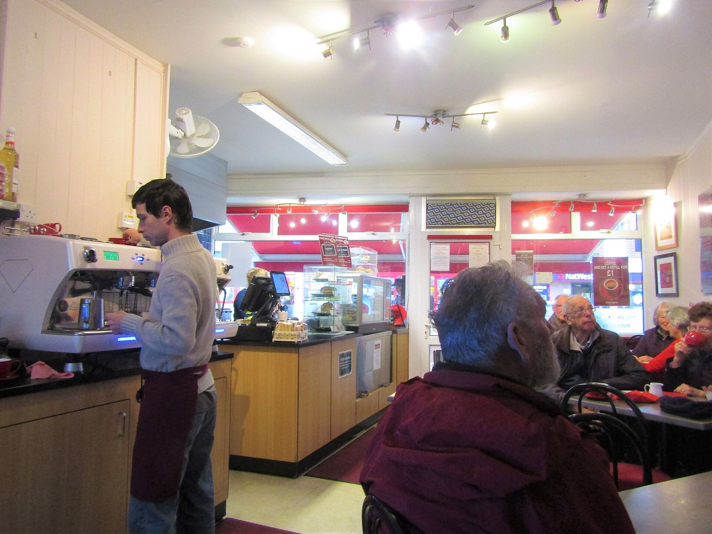
Kolforn (Kolforn) I'd appreciate if you could mail me (Kolfo… · CC BY-SA 4.0 · Commons
1
Une journée, heure par heure
De la Linea froide au dernier backflush.
Un coffee shop ressemble à une cuisine de restaurant : mise en place, coup de feu, creux, vaisselle. Sauf qu'au comptoir, la journée dure dix heures, avec deux pics et deux creux, et chaque creux mal utilisé se paie au pic suivant.
La figure 15.1 donne l'allure d'une journée chez Café Med & Co : le pic de 8 h 30 en semaine, le long plateau du brunch le week-end, et ce creux de 15 h où l'on croit avoir le temps de tout faire.
Figure 15.1. Allure de l'affluence au comptoir, en semaine (trait plein) et le week-end (pointillé). Les bandes numérotées sont les six phases de la journée décrites dans cette section. Les hauteurs sont indicatives : relève les tiennes dans le rapport horaire de la caisse.
6 h 45, la mise en route
Premier geste, avant le manteau, avant la lumière de la salle : allumer la Linea, porte-filtres verrouillés dans les groupes. L'écran affichera la bonne température au bout d'un quart d'heure, mais les deux groupes saturés et leurs kilos de laiton ont besoin de 30 à 45 minutes pour être stables (module 11). Pendant ce temps, tu relèves le frigo, tu fais la mise en place (un pichet par lait, trois chiffons de trois couleurs pour la lance, le panier et le plan de travail, tasses sur le chauffe-tasses), tu lis les manomètres, tu remplis la trémie pour la matinée seulement. À 7 h 15, le premier shot de chaque groupe part à l'évier, puis tu règles : 20 g → 44 g en 27 à 32 s, goûté. À 7 h 20, le batch. À 7 h 30, tu ouvres.
Le premier shot du matin te dit si le café a bougé pendant la nuit, s'il a plu, si quelqu'un a touché au moulin. Sur le Mythos One, chaque changement de mouture se suit d'une purge de 2 à 3 g et d'une pesée, parce que le moulin dose au temps et que le débit change avec la finesse. La méthode complète est au module 11.
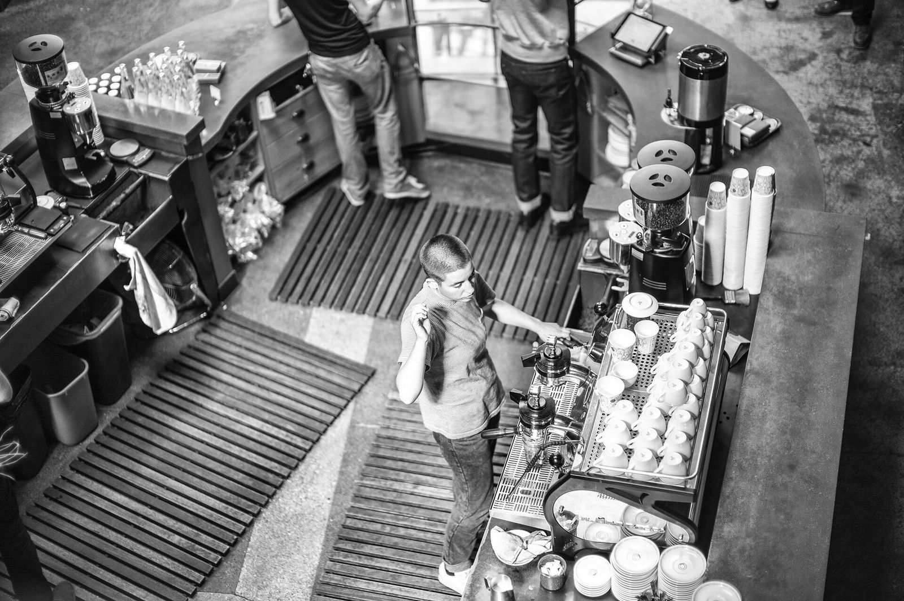
Un bar vu d'en haut. Le poste se lit comme une brigade de cuisine : chaque chose à sa place, et la place ne change pas d'un jour à l'autre.Photo : Christopher Michel · CC BY 2.0 · Commons
7 h 30 à 9 h 30, le rush du matin
Les clients du matin ont un train à prendre. Ils veulent la même chose qu'hier, vite, et remarquent tout de suite quand elle n'a pas le même goût. Pendant ces deux heures, on ne règle rien qui ne soit pas cassé. Tu goûtes un espresso toutes les demi-heures environ, tu regardes l'Acaia à chaque shot, et si le temps glisse de plus de trois secondes par rapport à la fiche, tu corriges d'un demi-cran, une seule fois, et tu vérifies sur le shot suivant.
Le batch suit son propre rythme. Une carafe pleine part en vingt minutes à 8 h 30, donc la seconde se lance vers 8 h 50, avant que la première soit vide. La carafe se jette 60 à 90 minutes après son lancement, même s'il en reste (module 10). L'heure de fin s'écrit sur le ruban.
9 h 30 à 11 h 30, le creux qui prépare tout
Le premier creux est le moment le plus rentable de la journée, à condition de ne pas s'asseoir. Dans l'ordre : goûter un espresso et corriger si les meules ont chauffé ; remettre le poste en état (porte-filtres rincés, bac vidé, lances purgées, marc au bac des biodéchets) ; réassortir gobelets, sucre et laits en premier entré, premier sorti ; passer aux demi-carafes de batch ; puis faire la tâche de la semaine prévue ce jour-là (tableau 15.2).
11 h 30 à 14 h 30, le midi et le brunch
En semaine, le midi ramène des clients qui mangent : la carte salée, les cakes, un café après. C'est l'heure où un espresso mal présenté se remarque le plus, parce que le client le compare à celui de sa brasserie. Le week-end, de 10 h à 17 h, le brunch change tout. La formule à 22,90 € comprend une boisson chaude et une boisson froide, et le bar suit la cuisine : une lactée qui attend cinq minutes à côté des œufs perd sa mousse. Lance-la quand le plat est prêt, pas quand le ticket arrive (module 12).
14 h 30 à 16 h 30, le creux de l'après-midi
Le creux de l'après-midi est plus long, plus calme, et c'est le seul moment où l'on peut former quelqu'un au comptoir, tester un nouveau café ou compter le stock. On y lance le cold brew du lendemain vers 15 h (module 10), on y fait la commande (section 2) et les fiches recettes des nouveaux sachets.
Piège classique : la douchette démontée à 16 h 10, juste avant un groupe de six. L'après-midi, on ne fait que ce qu'on peut interrompre en trente secondes.
Des verseuses de filtre alignées sur leur machine. Au comptoir, la règle est la même pour toutes : l'heure écrite sur la carafe, et à la poubelle 60 à 90 minutes plus tard.Photo : Wikimedia Finland · CC BY-SA 2.0 · Commons
16 h 30 à la fermeture
La dernière heure se gère à l'envers : plus de carafe après 16 h, plus de nouvelle brique si l'ouverte suffit, et on range ce qui ne sert plus, sans jamais fermer devant un client.
À 17 h 30 (17 h le week-end), la fermeture commence. Elle prend 30 à 45 minutes, et les doses de Puly sont au module 11. Ce qui compte, c'est l'ordre : les paniers partent au trempage en premier, et le produit travaille pendant que tu fais le backflush, les lances, la trémie, les laits et le sol.
Le soir, la salle redevient celle du restaurant Franquette. Laisse le bar comme tu voudrais le trouver à 6 h 45 : propre, sec, les machines éteintes ou en veille selon la consigne, rien qui traîne dans la zone que l'équipe du soir va utiliser.
Figure 15.2. Les contrôles de chaque phase, en semaine. Le week-end, décale tout : arrivée à 9 h 15, ouverture à 10 h, fermeture à 17 h.
Le carnet de bord
Un cahier près de la machine, une page par jour : le café en trémie et sa date de torréfaction, la recette du matin, chaque correction de mouture avec l'heure, les incidents (« groupe 2 coule 3 s plus vite que le 1 »), ce qui a été jeté. Deux minutes par jour, et le seul document qui répond à « depuis quand ? » quand le technicien est au téléphone.
Les checklists à imprimer
Deux tableaux à imprimer. Le premier se paraphe chaque jour, le second répartit les tâches de la semaine, du mois et du trimestre. Ils complètent le calendrier d'entretien du module 11 et le plan de nettoyage du Pack hygiène, qui fait foi.
Tableau 15.1. Checklist quotidienne, à parapher (semaine : ouverture 7 h 30 ; week-end : 10 h)
Moment
Tâche
Repère de réussite
Paraphe
Ouverture − 45 min
Linea allumée, porte-filtres aux groupes ; EKG Pro à 95 °C ; Moccamaster rincée
groupes stables avant le premier shot
Ouverture − 40 min
Température du frigo relevée ; briques ouvertes contrôlées (date, odeur)
4 °C ou moins ; aucune brique au-delà de sa durée
Ouverture − 30 min
Mise en place : pichets par lait, trois chiffons, tasses chaudes, gobelets, vitrine
trois boissons possibles sans se déplacer
Ouverture − 20 min
Manomètres lus, purges, trémie remplie (sachet le plus ancien)
vapeur 1 à 1,5 bar ; café ≈ 9 bars pendant le shot
Ouverture − 15 min
Premier shot de chaque groupe jeté, réglage, espresso goûté
20 g → 44 g en 27 à 32 s, propre en bouche
Ouverture − 10 min
Batch lancé, carafe horodatée, première tasse goûtée
heure de fin écrite sur la carafe
Creux du matin
Réglage revérifié, remise en état, réassort, tâche du jour (tableau 15.2)
poste identique à celui de l'ouverture
Vers 15 h
Cold brew lancé et étiqueté ; commande si c'est le jour
Commander, laisser reposer, faire tourner, ne rien perdre.
Un café torréfié se comporte comme un pain au levain : à la sortie du four, il n'est pas prêt, quelques jours plus tard il donne le meilleur, puis il décline lentement. Gérer le stock, c'est faire tomber cette fenêtre au moment où tu sers, sans jamais manquer. Une erreur de commande se goûte dans chaque tasse pendant sept jours.
La fenêtre, rappel en trois chiffres
Le module 7 a montré pourquoi : le café relâche du gaz carbonique pendant des semaines, et ce gaz gêne l'extraction, surtout en espresso. Un café servi à J+3 coule de travers, crème énorme et goût creux. Un café de J+50 a perdu son parfum.
7 à 42 japrès torréfaction, la fenêtre d'un café d'espresso
4 à 30 jla fenêtre d'un café de filtre
1 à 2 sem.pour finir un sachet ouvert
½ journéeau plus dans la trémie
Commander à Ïota
Il te faut d'abord quatre informations que seul Ïota peut te donner, à noter en première page du carnet : les jours où il torréfie, le délai entre la commande et la livraison, le format des sachets (un kilo, 250 g, autre), et le minimum de commande ou le seuil de livraison gratuite. Ne les devine pas.
Ensuite, tout se ramène à une règle simple : on commande aujourd'hui le café qu'on servira la semaine prochaine. Le lot qui arrive cette semaine va reposer pendant que tu finis le précédent. Il entrera en trémie quand l'autre sera vide, autour de J+7. La figure 15.3 montre ce chevauchement sur cinq semaines.
Figure 15.3. Une commande par semaine, consommation d'exemple de 1,5 kg par jour lissée sur la semaine. Chaque lot repose une semaine pendant que le précédent est servi. Le stock ne descend jamais sous 7 à 8 kg, et c'est voulu : ce minimum, c'est le café qui repose. Si tu le vois fondre, tu sers des cafés trop jeunes.
Combien de café par jour
Le rapport des ventes de la caisse te donne les boissons de la semaine passée. Traduis-les en grammes avec les recettes de la maison, sans oublier ce qui ne passe pas en caisse : réglages, purges, carafes jetées. Les chiffres ci-dessous sont des exemples, remplace-les par les tiens.
Tableau 15.3. Consommation de café, semaine d'exemple (à refaire avec les ventes réelles)
Poste
Calcul
Mardi-vendredi, par jour
Samedi-dimanche, par jour
Boissons à base d'espresso
doubles × 20 g (deux espressos simples = un double)
70 × 20 g = 1 400 g
110 × 20 g = 2 200 g
Réglages et purges
2 à 4 shots jetés, purges de 2 à 3 g après chaque correction
≈ 80 g
≈ 80 g
Total café d'espresso
≈ 1,5 kg
≈ 2,3 kg
Batch brew
carafes de 75 g, demi-carafes de 38 g
2 + 3 demies ≈ 265 g
2 + 2 demies ≈ 225 g
V60
15 g par tasse
3 × 15 = 45 g
6 × 15 = 90 g
Cold brew
125 g par litre de concentré, un litre tous les deux jours
≈ 60 g
≈ 60 g
Total café de filtre
≈ 0,37 kg
≈ 0,38 kg
Sur la semaine (quatre jours de semaine, deux de week-end, lundi fermé), ça donne 4 × 1,5 + 2 × 2,3 = 10,6 kg de café d'espresso, et 4 × 0,37 + 2 × 0,38 ≈ 2,2 kg de café de filtre. Un peu moins de 13 kg en tout, soit autour de 340 € HT à 26,40 € le kilo. Ramené au nombre de boissons, ce chiffre devient un indicateur de la section 3.
Combien commander
La règle tient en une ligne, et elle se calcule café par café :
Commande = besoin de la semaine où ce lot sera servi + sécurité − ce qui restera de l'ancien lot ce jour-là.
Prends le café d'espresso. La semaine où le nouveau lot entrera en trémie, tu prévois une semaine normale, 10,6 kg. Tu ajoutes une sécurité d'une grosse journée, 2,3 kg. Ton inventaire du mardi montre qu'il restera environ 1,8 kg du lot actuel quand le nouveau sera prêt. Commande : 10,6 + 2,3 − 1,8 = 11,1 kg. Si Ïota livre en sachets d'un kilo, tu commandes 11 sachets. Pour le filtre : 2,2 + 0,4 − 0,5 = 2,1 kg, donc 2 sachets d'un kilo, ou 8 sachets de 250 g si c'est le seul format.
La semaine suivante, la sécurité qui n'a pas servi se retrouve dans « ce qui restera », et la commande baisse d'autant. Si trois semaines de suite il reste plus de 3 kg de l'ancien lot, réduis la sécurité.
Un jour de fermeture se retire du besoin. Un événement (brunch privatisé, tournage) s'ajoute : boissons prévues × 20 g, plus 10 %, commandé quinze jours avant pour que le café ait reposé.
Ranger, et sortir dans l'ordre
Premier entré, premier sorti, la règle que les cuisines appellent FIFO (first in, first out) : le sachet le plus ancien devant, la date de torréfaction écrite au feutre épais sur la tranche. Fermé, à l'ombre, loin de la Linea : l'étagère au-dessus de la machine, à 30 °C, fait vieillir le café nettement plus vite qu'un placard à 20 °C (module 7). Jamais de frigo, qui sent l'oignon et le fromage dans une cuisine de restaurant. Le congélateur, en doses fermées, sert à garder un micro-lot, pas le stock courant.
Dans la trémie, une demi-journée de café au plus, et rien le soir.
En boutique, les sachets de 250 g doivent partir assez tôt pour être bus dans la fenêtre. Retire du rayon ce qui approche six semaines après torréfaction, pour la Moccamaster de l'équipe (module 7).
Pour les sachets, commande une semaine de ventes plus deux sachets par café, jamais plus de quatre semaines de ventes, et double avant Noël.
Des grains torréfiés. Sur le sachet, une seule date compte au comptoir, celle de torréfaction : écris-la en gros sur la tranche.Photo : MarkSweep · Public domain · Commons
Une fiche recette par café
Chaque café en service a sa fiche plastifiée, près du Mythos One, pour que n'importe quel équipier fasse le même café que toi. La partie fixe se remplit le jour où le café arrive en trémie ; la mouture du jour, chaque matin, au feutre effaçable.
Tableau 15.4. Modèle de fiche recette, une par café en service
Ligne
Ce qu'on y écrit
D'où ça vient
Café
origine, producteur ou station, process, lot
la fiche d'Ïota, recopiée telle quelle
Torréfié le
la date, et la date d'entrée en trémie
le sachet
Usage
espresso, filtre, cold brew, boutique
la décision de la maison
Recette espresso
dose, sortie en tasse, temps, température de la Linea
ce que l'équipe retrouve dans la tasse, pour la carte et pour les clients
la dégustation de l'équipe, pas seulement la fiche d'Ïota
Retours
remarques des clients, problèmes de réglage
tout le monde, au fil des jours
Un café superbe en V60 et terne dans un flat white n'a rien à faire en trémie : goûte chaque candidat en espresso, en flat white et en V60, côte à côte (module 12, et le cupping du module 13).
Faire tourner les cafés avec les saisons
Chaque origine arrive en Europe trois à six mois après sa récolte (module 4 et module 6). Demande à Ïota, chaque printemps et chaque automne, quand arrive la nouvelle récolte de chaque café.
Tableau 15.5. Arrivées habituelles en Europe et idées pour la carte (ordres de grandeur, chaque lot a son calendrier)
Saison en France
Ce qui arrive frais
Ce qui vieillit
Idée pour la carte
Printemps
premiers lots d'Éthiopie et du Kenya, d'Amérique centrale
les lots d'Afrique de l'Est de l'année précédente
un lavé floral au V60, l'ardoise « nouvelle récolte » avec le mois d'arrivée
Été
Éthiopie, Kenya, Guatemala et voisins
Brésil de l'année passée
cold brew, espresso tonic avec un lavé fruité, filtre glacé
Automne
Brésil, Pérou, Rwanda, Burundi
rien de grave encore
un café rond et chocolaté en espresso pour le retour des lactées
Hiver
Colombie, selon les régions
Éthiopie et Kenya arrivés au printemps, qui approchent un an de récolte
mocha, chai, sachets cadeaux de fin d'année
La boutique garde ses trois origines, mais le lot change d'une récolte à l'autre. Mets alors à jour la fiche, l'ardoise et les trois mots, et préviens les habitués : un Kenya différent en novembre ravit si on l'annonce, déçoit sinon.
Les pertes, une ligne par jour
Une feuille fixée à côté du carnet, une ligne par jour : réglages, carafes jetées, boissons refaites et pourquoi, sachets trop vieux, lait jeté. Le but est de voir les tendances.
Réglages. 2 à 4 shots par jour à 0,53 €, soit 30 à 65 € par mois (module 11).
Batch. Une demi-carafe jetée chaque après-midi, c'est 38 g, environ 1 € par jour, 26 € par mois. Si tu jettes plus d'une tasse par carafe, réduis la taille.
Boissons refaites. Un latte refait coûte 0,85 € de matière et deux minutes. Note la cause : mauvais lait, mousse ratée, oubli. Trois « mauvais lait » dans la semaine, c'est un problème de prise de commande, pas de barista.
Fais le total chaque jeudi. Quand les pertes de café dépassent 5 % de la consommation, cherche la cause avant le coupable.
Le coût matière, la TVA, et les chiffres à regarder chaque semaine.
Un flat white à 5 € contient pour 73 centimes de matière. On dirait une affaire en or, jusqu'à ce qu'on retire la TVA, l'équipier, le loyer, l'électricité de la Linea, le technicien. Savoir faire ce calcul te sert à défendre un prix devant un client, et à voir tout de suite quand une boisson coûte plus qu'elle ne rapporte.
Les prix d'achat de la maison
26,40 €HT le kilo de café d'Ïota, soit 0,0264 € le gramme
0,53 €de café dans un double de 20 g
1,18 €le litre de lait de vache UHT
≈ 0,12 €HT un gobelet carton et son couvercle
Pour l'avoine, les calculs prennent 2,40 € le litre, dans la fourchette de 2 à 3,50 € des boissons « barista » (module 12) : remplace-le par la dernière facture. Le gobelet vient des tickets de septembre (gobelet carton de 24 cl et couvercle carton). Les autres hypothèses sont marquées (h).
La carte, boisson par boisson
Prix de la carte à boire d'octobre 2026, divisés par 1,10 pour la TVA. Grammes de café et volumes de lait des recettes de la maison (module 12, module 10), pertes de pichet comprises.
Tableau 15.6. Coût matière de la carte, servi sur place (euros ; (h) = hypothèse à remplacer par la facture)
Boisson
Prix TTC
Prix HT
Café
Lait ou autre
Divers
Coût HT
Ratio
Marge brute
Espresso
2,30
2,09
0,26 (10 g)
-
0,02
0,28
14 %
1,81
Double
3,00
2,73
0,53
-
0,02
0,55
20 %
2,18
Americano, long black
3,50
3,18
0,53
-
0,02
0,55
17 %
2,63
Macchiato
3,80
3,45
0,53
0,09 (80 ml)
0,02
0,64
19 %
2,81
Cortado
4,00
3,64
0,53
0,12 (100 ml)
0,02
0,67
18 %
2,97
Cappuccino
4,20
3,82
0,53
0,18 (150 ml)
0,02
0,73
19 %
3,09
Flat white
5,00
4,55
0,53
0,18 (150 ml)
0,02
0,73
16 %
3,82
Latte
4,80
4,36
0,53
0,30 (250 ml)
0,02
0,85
19 %
3,51
Latte avoine
5,30
4,82
0,53
0,60 (250 ml) (h)
0,02
1,15
24 %
3,67
Mocha
5,00
4,55
0,53
0,26 lait + 0,25 chocolat (h)
0,02
1,06
23 %
3,49
Espresso tonic
5,30
4,82
0,53
0,60 tonic (h)
0,02
1,15
24 %
3,67
Cold brew
4,80
4,36
0,66 (25 g)
-
0,02
0,68
16 %
3,68
Batch brew
4,00
3,64
0,40 (15 g)
-
0,02
0,42
12 %
3,22
V60
6,90
6,27
0,40 (15 g)
0,05 filtre
0,02
0,47
7 %
5,80
Le ratio de coût matière, c'est le coût divisé par le prix hors taxes : ici de 7 à 24 %, quand le métier cite souvent 10 à 20 % pour les boissons au café. Lis-le toujours à côté de la marge brute en euros. Le latte avoine a un ratio plus élevé que le latte (24 % contre 19 %), et pourtant il laisse 16 centimes de plus. Le supplément de 0,50 € TTC, soit 0,45 € HT, couvre largement les 30 centimes que coûte l'avoine en plus.
Deux boissons sortent du lot. Le flat white, vendu plus cher que le latte avec moins de lait, est la lactée qui laisse le plus d'argent. Et le V60, champion du ratio à 7 %, paie surtout le temps de l'équipier, on le verra dans l'encadré plus bas.
Figure 15.4. Le coût matière (segments colorés) dessiné à l'intérieur du prix de vente hors taxes (cadre), pour six boissons de la carte. La matière ne pèse que 7 à 24 % du prix. Le reste paie le travail, le lieu, l'énergie, l'entretien, et la marge.
À emporter, et les petits suppléments
À emporter, la TVA reste à 10 %, mais il faut ajouter gobelet et couvercle, environ 0,12 € HT : un double passe de 0,55 à 0,67 € de coût, de 20 à 25 % de ratio.
Un extra shot à 1 € TTC, c'est 0,91 € HT pour 0,26 € de café. Un sirop se calcule sur les doses réelles : une bouteille de 70 cl ne donne jamais 70 doses quand trois équipiers se servent de la pompe.
La TVA, sans se tromper de taux
La caisse applique les taux réglés par Mathis, et on n'y touche pas au comptoir. Mais il faut savoir pourquoi un sachet et un flat white n'ont pas le même taux.
Tableau 15.7. Les trois taux de TVA du comptoir (BOFiP, taux réduits de la restauration et des produits alimentaires)
Taux
Ce qui y entre
Pour passer du TTC au HT
Exemple
10 %
boissons sans alcool servies sur place, ou à emporter pour une consommation immédiate (gobelet, verre, contenant non refermable) ; plats et pâtisseries de la carte ; formule brunch
÷ 1,10
flat white 5,00 € TTC → 4,55 € HT
5,5 %
café en grains ou moulu vendu en sachet ; produits alimentaires et boissons sans alcool vendus dans un contenant qui permet de les conserver (bouteille fermée), sans consommation immédiate
÷ 1,055
sachet de 250 g à 13 € TTC (prix d'exemple) → 12,32 € HT
Ce qui se boit tout de suite relève de la restauration (10 %), ce qui se garde de l'alimentaire (5,5 %), l'alcool et les objets du taux normal. Un sachet acheté autour de 7 € HT (hypothèse) et vendu 13 € TTC laisse plus de 5 €, sans réglage ni vaisselle.
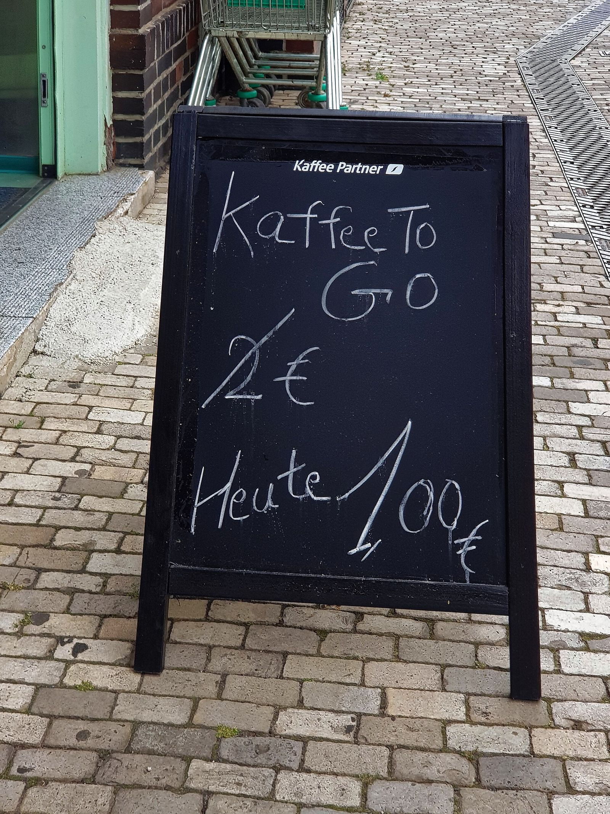
Une ardoise de trottoir à Leipzig : café à emporter à 2 €, « aujourd'hui 1 € ». Le prix d'appel fait entrer du monde. Il ne paie ni le café, ni le gobelet, ni le temps de celui qui le sert.Photo : VSchagow · CC BY-SA 4.0 · Commons
Où part l'argent d'un coffee shop
Les repères qu'on cite le plus souvent pour un coffee shop placent l'ensemble des achats de matière (café, lait, nourriture, emballages) autour de 25 à 30 % du chiffre d'affaires, le personnel autour de 30 à 40 %, puis le loyer, l'énergie, l'entretien, les assurances. Dans un lieu partagé, une partie des charges fixes est mutualisée, ce qui change les proportions sans changer la logique.
Les chiffres à regarder chaque semaine
Dix minutes chaque lundi, toujours les mêmes chiffres, comparés à la semaine précédente plutôt qu'à un idéal.
Tableau 15.8. Les indicateurs du comptoir
Indicateur
Calcul
Où le trouver
Ce qu'il te dit
Tickets par jour et par heure
nombre de tickets
rapport horaire de la caisse
les vrais pics, combien de personnes au bar et quand
Panier moyen
chiffre d'affaires TTC ÷ tickets
caisse
si les suggestions (pâtisserie, sachet) prennent
Part des lactées et des végétaux
lactées ÷ boissons ; végétaux ÷ lactées
rapport produits et options
combien de lait commander, quel café mettre en trémie
Grammes par boisson d'espresso
kg de café d'espresso consommés ÷ doubles vendus
inventaire et caisse
autour de 21 g, tout va bien ; au-delà de 23 g, les pertes montent
Pertes
total de la feuille, en euros
feuille des pertes
réglage, batch, rotation du lait
Boissons refaites
refaites ÷ boissons servies
feuille des pertes
au-delà de 1 sur 100, un problème de prise de commande ou de réglage
Du prix du vert au prix de la tasse
Le cours du vert a battu son record en février 2025 (section 7). Ce que ça change dans ta tasse se calcule. Le grain perd autour de 15 % de son poids à la torréfaction, donc un double de 20 g demande environ 23,5 g de café vert. Trois euros de plus par kilo de vert, c'est 0,07 € de plus par double.
Les torréfacteurs ont pourtant relevé leurs tarifs davantage : ils achètent par contrats, des mois à l'avance, et l'énergie, les emballages et les salaires ont augmenté en même temps (module 6). Au comptoir, on augmente rarement, par marches de 0,10 à 0,20 €, et on sait l'expliquer en une phrase.
La commande, le rush, les mots, et les retours qui finissent bien.
Samedi, 11 h 40. Six personnes devant la caisse. Une Américaine demande « a regular coffee », un habitué dit « comme d'habitude » sans préciser, une table de quatre veut deux brunchs, un flat white avoine, un cappuccino et « un café crème, s'il vous plaît ». Le meilleur réglage du monde ne sert à rien si la commande est mal prise. La moitié des erreurs du comptoir naissent à la caisse, et presque toutes concernent le lait.
Prendre la commande
Quatre questions, toujours dans le même ordre, jusqu'à ce que ça devienne un réflexe. Quelle boisson. Quel lait, dès qu'il y a du lait, même si le client ne l'a pas mentionné. Sur place ou à emporter. Et pour une formule brunch, la boisson chaude maintenant ou avec le plat. Puis tu répètes, en entier : « Un flat white avoine sur place, un cappuccino au lait de vache, c'est bien ça ? »
Le lait s'écrit, sur le gobelet ou le ticket du bar, avec un code court affiché près de la caisse : AV avoine, AM amande, SO soja, CO coco, rien pour la vache, D déca, +1 extra shot, G glacé. Un code entouré veut dire allergie déclarée, et déclenche le protocole de la section 5.
Quand le client hésite, deux questions suffisent : « Plutôt avec du lait, ou noir ? » puis « Plutôt doux, ou avec du caractère ? »
Tenir le rush
Avec deux groupes et deux lances, la Linea suit sans peine, et tout dépend de l'organisation. En rush, la vitesse vient de l'ordre des gestes (module 11).
Figure 15.5. Ce qui attend bien est servi d'abord. Pour les boissons au lait, le shot part avant le lait, qui se texture pendant l'extraction, dans le pichet réservé à ce lait. Deux boissons au même lait se texturent ensemble dans le pichet de 600 ml. Un espresso seul va du groupe à la passe sans attendre personne.
Seul, tu enchaînes caisse, batch, shots, lait texturé pendant qu'ils coulent, passe. À deux, l'un tient la caisse, le batch et la passe, l'autre ne quitte pas la machine. À trois, le week-end, une personne aux groupes, une aux lances. Ce qui tue un rush, c'est la personne de la caisse qui vient « aider » à la machine pendant que plus personne ne prend les commandes.
Annonce ce que tu poses. « Flat white avoine pour Julie ! » Tu évites que le mauvais client prenne la mauvaise tasse, et l'avoine part chez celle qui l'a commandée.
Un pichet, un lait, jamais deux. Même pour gagner dix secondes. Le pichet de l'amande ne repasse sous la vapeur avec du lait de vache qu'après avoir été lavé.
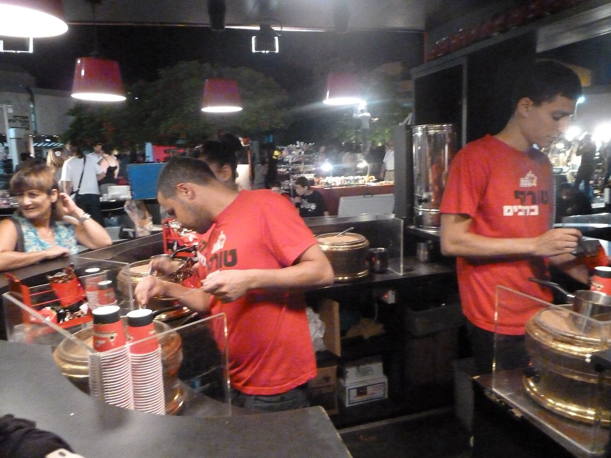
Un bar à café de Tel-Aviv pendant la Nuit blanche : deux baristas, une file, des gobelets alignés.Photo : Deror_avi · CC BY-SA 3.0 · Commons
Présenter
Une tasse froide fait perdre plusieurs degrés à un espresso en quelques secondes et fait ressortir l'acidité. La présentation fait partie du goût. La liste à passer en trois secondes, à la passe :
Tasse chaude sortie du chauffe-tasses, bord propre, aucune coulure sur l'extérieur.
Soucoupe sèche, cuillère posée du côté de l'anse, anse vers la main droite du client.
Le dessin face au client, la pointe du cœur ou de la rosace vers lui (module 12).
Un petit verre d'eau avec chaque espresso et chaque double.
Pas de sucre d'office, mais du sucre à portée, sans commentaire. Un bon café a sa propre douceur, et le client le découvrira tout seul ou pas du tout.
À emporter : couvercle clipsé sur tout le tour, vérifié du pouce, boisson tendue par le bas du gobelet, jamais par le couvercle.
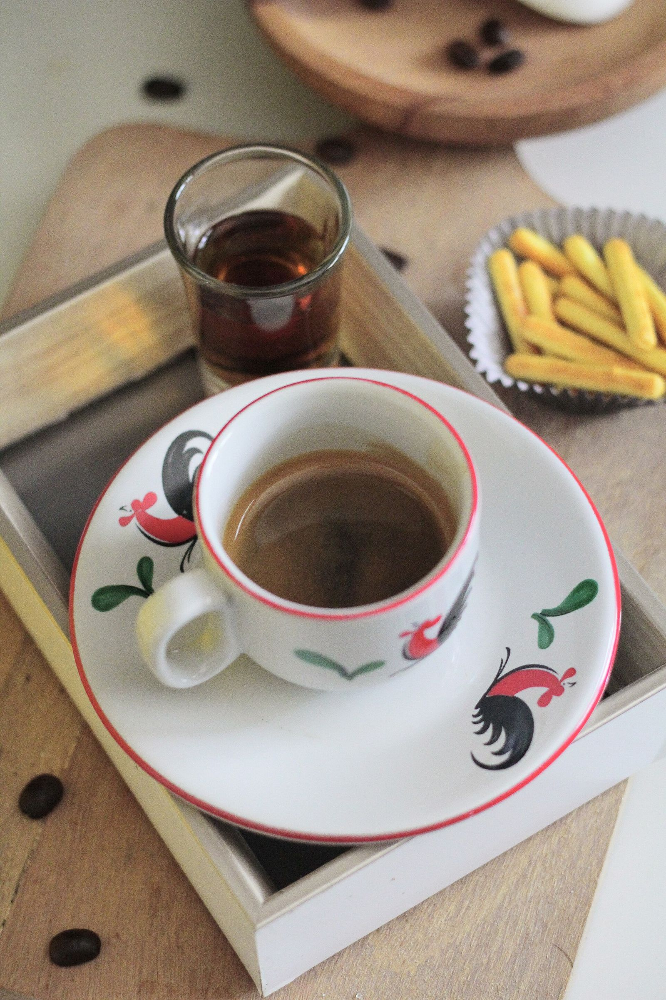
Un espresso sur sa soucoupe, cuillère posée. Le client juge la tasse avant d'y goûter.Photo : Dheksamahesa24 · CC BY-SA 4.0 · CommonsUne rosace vue d'en haut, nette et brillante : la mousse est fine et bien mêlée à l'espresso.Photo : Antony Trivet · CC BY-SA 4.0 · CommonsUn cappuccino servi à Paris en 2011. Le lait versé de près, la tasse inclinée : le geste du module 12.Photo : jimmyweee · CC BY 2.0 · Commons
Parler d'un café en une phrase
Le client qui demande « il est comment ? » attend une phrase : d'où il vient, à quoi il ressemble avec des mots de cuisine, comment le boire. Le module 13 explique comment choisir trois mots, le module 14 donne un texte pour chaque origine de la boutique.
Tableau 15.9. Des phrases prêtes, par famille de goût (à adapter avec la fiche d'Ïota du lot en cours)
Famille
Ce que tu dis au client
À conseiller
Lavé floral, type Éthiopie lavé
« Un café léger et parfumé, presque un thé : fleurs blanches, citron. »
V60, batch, espresso tonic
Lavé vif, type Kenya
« Le plus vif : cassis, pamplemousse, une acidité de jus de fruit. »
V60, et en espresso pour les curieux
Nature fruité
« Très fruité, fruits rouges, un côté confiture, presque vineux. »
filtre, espresso court
Lavé rond, type Amérique centrale
« Un café rond : chocolat, caramel, une pointe de pomme. Il va très bien avec du lait. »
espresso, flat white, latte
Brésil, assemblage chocolaté
« Doux et peu acide : noisette, chocolat au lait. Le plus proche d'un café de brasserie, en mieux. »
espresso, toutes les lactées
Anaérobie, co-fermenté
« Un café très expressif, fruits exotiques, épices. On l'adore ou on ne l'aime pas, je vous le fais goûter ? »
V60, en petite quantité d'abord
Décaféiné
« Le même travail, sans la caféine : chocolat, sucre brun. Il a du goût, promis. »
espresso, lactées
Trois pièges : le mot qui ne veut rien dire (« équilibré », « complexe »), la promesse impossible (« vous allez sentir la fraise »), et la leçon non demandée. S'il veut en savoir plus, le client posera une deuxième question.
Les retours, un par un
Un retour bien traité fidélise plus qu'une boisson parfaite. Trois temps : écouter sans se défendre, goûter, puis corriger ou expliquer en une phrase. Dans le doute, refais : moins d'un euro de matière contre un client perdu.
« Il est acide, votre café »
Un espresso sous-extrait, ou une acidité de fruit inhabituelle pour le client ? Goûte d'abord (module 13). Aigre, salé, court : tu corriges la mouture et tu refais, en le disant. Juste : une phrase sur ce café plus clair qu'en brasserie, qui garde le fruit, et tu proposes le café le plus rond ou un flat white.
« Trop amer, trop fort »
Amer et sec en fin de bouche, c'est souvent un shot trop long ou trop lent : vérifie l'Acaia, ouvre la mouture d'un cran. Si le shot est juste, le client a l'habitude d'un café allongé : propose un americano ou le batch.
« Il n'est pas assez chaud »
Le lait de la maison s'arrête entre 60 et 65 °C, parce qu'au-delà de 70 °C il prend un goût de cuit et sa mousse s'effondre (module 12). Beaucoup de clients ont l'habitude d'un lait bouillant. Refais sans discuter, à 65-68 °C, dans une tasse bien chaude, et propose-lui la prochaine fois de demander « très chaud » dès la commande.
« C'est cher pour un café »
Ni excuse, ni plaidoirie. Une phrase factuelle : « C'est un café de spécialité, choisi lot par lot par un torréfacteur parisien, en général mieux payé au producteur, et préparé à la commande. » S'il cherche un prix, propose le batch. Après une hausse, l'habitué mérite une explication honnête : le vert a battu son record en 2025.
« Il y a du lait de vache dedans »
Le seul retour qui ne se discute jamais. Si le client a commandé un lait végétal pour une allergie, ne lui fais pas goûter : jette, lave le pichet, purge la lance, refais, et vérifie le code devant lui. S'il a déjà bu et se sent mal, préviens le responsable, et appelle le 15 si les symptômes sont importants (gonflement, gêne respiratoire).
Vendre un peu plus, sans forcer
Bien faite, la vente additionnelle est du conseil : une seule suggestion, liée à ce que le client vient de dire, jamais le « et avec ceci ? » récité à tous.
Un client qui commande un double à 10 h : « Le cake orange et chocolat du jour va très bien avec. »
Un client qui dit que son V60 est le meilleur café qu'il ait bu depuis longtemps : « Il existe en sachet de 250 g, je peux vous le moudre pour votre cafetière. »
Sur 100 tickets par jour, un client sur dix qui ajoute une pâtisserie à 3,50 €, c'est plus de 900 € par mois.
Les touristes et les mots des autres pays
Le module 12 traduit le parler bistrot (noisette, café crème, allongé, serré). Voici les malentendus des visiteurs étrangers.
Tableau 15.10. Ce que le client dit, ce qu'il attend, ce que tu proposes
Le client dit
D'où vient-il, en général
Il attend
Tu proposes
« A coffee », « a regular coffee »
États-Unis, Canada, Royaume-Uni
un grand café filtre
le batch, tout de suite
« Un latte »
Italie
attention : en Italie, « latte » veut dire lait
vérifie : « caffè latte, with coffee ? »
« Un caffè »
Italie
un espresso court et serré
l'espresso, en le prévenant qu'il est plus fruité
« Café con leche »
Espagne, Amérique latine
moitié café, moitié lait chaud
un flat white ou un latte
« Flat white », « long black »
Australie, Nouvelle-Zélande
exactement ce qui est sur ta carte
le même, sans traduction
« Extra hot »
États-Unis
un lait très chaud
65 à 68 °C, en le disant
En anglais, une poignée de phrases suffit. « For here or to go? » « Which milk? We have dairy, oat, almond, soy and coconut. » « Plant milk is fifty cents extra. » « The filter coffee is ready now. » « It's a light roast, fruitier than an Italian espresso. » « Would you like to taste it first? » Et le nombre : « That's four eighty. »
Cas 1. Six boissons, une seule personne au bar
Samedi 11 h 40 : deux batch, deux flat white au lait de vache, un latte avoine, un espresso. Tu sers les deux batch. Tu lances deux doubles, tu textures 300 ml de lait de vache dans le pichet de 600 ml pendant qu'ils coulent. Tu verses les deux flat white. Tu lances le double du latte et l'espresso, tu textures l'avoine dans son pichet. L'espresso part en premier dès qu'il est coulé, le latte ensuite. Annonce chaque boisson.
Le lait, les allergènes, la vapeur, et ce qu'on ne voit pas.
Le Pack hygiène de Café Med & Co est le document officiel : durées, températures, relevés, produits. C'est lui que l'inspecteur demandera, et cette section ne le remplace pas. Elle explique ce qui rend le bar différent d'une cuisine, pour que les règles du Pack aient un sens à 8 h 30, avec six clients devant toi.
Le lait
Ouvert, un lait UHT devient aussi fragile qu'un lait frais. Tout ce qu'on fait au comptoir sert à le garder froid et à ne jamais le faire repasser par la zone tiède, entre 10 et 63 °C environ, où les bactéries prolifèrent.
Au frigo, à 4 °C au plus, brique datée au marqueur à l'ouverture, rangée en premier entré, premier sorti. La durée après ouverture est écrite sur la brique et dans le Pack hygiène, souvent trois jours.
Au frigo entre deux commandes, même en rush. Une brique laissée une heure à côté de la machine monte à 15 ou 20 °C.
Jamais de lait retexturé. Le fond du pichet part à l'évier.
Pichets lavés entre deux laits différents, et en fin de rush.
Quand tu fermes la vapeur, la condensation crée une petite dépression qui peut aspirer du lait dans la buse. D'où la purge d'une à deux secondes juste après chaque texturage, puis le chiffon humide réservé aux lances.
Les dépôts qu'on ne voit pas
Les huiles du café rancissent en quelques heures sur un métal à 93 °C, le marc s'accumule derrière la douchette, et les résidus forment dans les circuits un biofilm, une couche de micro-organismes collée aux parois. D'où le backflush du soir et le démontage hebdomadaire (module 11). Le calcaire, lui, est le travail du BWT (module 8).
La glace est un aliment, et c'est là que beaucoup de bars se trompent. On la prend avec une pelle, jamais avec le verre du client, qui peut casser dans le bac, et jamais à la main. La pelle se range hors du bac, manche en haut. Le bac se vide et se nettoie selon le Pack.
Un cold brew sur glace. Infusé une nuit sans chaleur, avec un pH autour de 5, il n'est protégé que par le froid, la propreté et l'étiquette.Photo : Andy Li · CC0 · CommonsLe tassage : poignet dans l'axe de l'avant-bras, coude au-dessus du porte-filtre. Appuyer très fort ne sert à rien et use le poignet.Photo : Pratechno · CC BY-SA 4.0 · Commons
Le cold brew et le thé glacé
Le cold brew infuse 18 à 24 heures sans chaleur, et son pH tourne autour de 5 : au-dessus de pH 4,6, un produit est considéré comme peu acide, l'acidité ne le protège pas (module 10). Infusion au frigo, contenant désinfecté, étiquette avec date et heure de fabrication et date limite. On cite souvent 7 à 10 jours pour un concentré fermé entre 0 et 4 °C ; chez nous, la durée est celle du Pack hygiène, et rien d'autre. Le thé infusé à froid suit les mêmes règles.
Les allergènes
Quatorze allergènes sont à signaler, et quatre passent par le pichet ou la pompe à sirop. Pour ce qui n'est pas préemballé, l'information doit être disponible par écrit avant la commande (décret du 17 avril 2015) : le tableau des allergènes du Pack hygiène, que chacun doit savoir trouver.
Tableau 15.11. Les allergènes qui passent par le bar
Ce qu'on sert
Allergène à signaler
Le piège
Lait de vache, y compris sans lactose
lait
un lait sans lactose contient toutes les protéines du lait ; l'intolérance et l'allergie sont deux problèmes différents (module 12)
Boisson au soja
soja
certains chocolats et sauces en contiennent aussi
Boisson à l'amande, neige d'amande
fruits à coque
le pichet de l'amande transporte l'allergène dans la boisson suivante
Boisson à l'avoine
céréales contenant du gluten
sauf mention « sans gluten » sur la brique
Boisson à la coco
la coco ne fait pas partie de la liste des quatorze
certains clients y réagissent : dis ce qu'il y a dedans quand on te le demande
Chocolat, sirops, cold foam, sauces
selon l'étiquette : lait, soja, fruits à coque…
une nouvelle bouteille de sirop peut changer de composition : relis l'étiquette
Le vrai risque s'appelle le contact croisé : un pichet passé du lait de vache à l'amande transporte les deux. Quand un client déclare une allergie :
Écrire et entourer le code du lait sur le gobelet ou le ticket.
Prendre un pichet propre et sec, celui de ce lait, jamais un pichet rincé à la hâte.
Purger la lance et l'essuyer avec un chiffon propre avant de texturer.
Vérifier les ajouts : sirop, chocolat, topping. Dans le doute, relis l'étiquette ou propose sans.
Annoncer en posant : « Cappuccino au soja, préparé à part. » Le client sait que tu l'as entendu.
La vapeur, l'eau, les brûlures
Vapeur à 120-127 °C, eau des groupes vers 93 °C, bouilloire à 95 °C, porte-filtre brûlant comme une casserole. Les brûlures viennent toujours des mêmes gestes.
Purger vers le bac ou dans un torchon, jamais vers quelqu'un, jamais avec la main sous la buse.
N'ouvrir la vapeur que buse enfoncée dans le lait, et la fermer avant de sortir la buse. Sinon, le lait gicle.
Ne jamais retirer un porte-filtre pendant que la pompe tourne : l'eau sous pression jaillit du groupe (module 11).
Annoncer « chaud derrière » quand tu passes dans le dos de quelqu'un avec un pichet ou une bouilloire.
Couvercle clipsé avant de tendre une boisson à emporter, et jamais au-dessus d'un enfant ou d'une poussette.
Si quelqu'un se brûle, le premier geste est de refroidir, tout de suite, sous l'eau tempérée du robinet, pendant une quinzaine de minutes. On retire les bagues et ce qui serre avant que ça gonfle, sauf ce qui colle à la peau. Pas de glace, pas de beurre ni de crème, et on ne perce pas les cloques. On appelle le 15 si la brûlure est plus grande que la moitié de la paume de la victime, si elle touche le visage, le cou, les mains ou les parties génitales, ou si c'est un enfant. Tout le monde doit savoir où est la trousse de secours.
Les autres risques, moins visibles
Le Puly Caff, le Puly Grind et le Puly Milk se manipulent comme le dit leur notice, se rangent loin des aliments et ne se mélangent jamais.
Un glaçon tombé ou une coulure de lait, et c'est la chute avec un pichet chaud à la main : on éponge tout de suite, en chaussures fermées et antidérapantes.
Le poignet, enfin, encaisse des centaines de tassages par jour. Tasser à 15 ou 20 kg ne change rien en tasse (module 11) : à plat, poignet dans l'axe, sans forcer. Toute intervention interne à la machine revient au technicien.
Les diplômes, les concours, les livres, et le regard des autres.
Un barista progresse vite pendant six mois, puis il plafonne : il fait de bons cafés, toujours les mêmes. Pour repartir, il faut un regard extérieur, un formateur, un jury, un cupping où quelqu'un trouve la tasse différente avant toi.
Les parcours de la SCA
La Specialty Coffee Association (SCA) structure la formation du métier dans le monde. Son Coffee Skills Program commence par une introduction au café, puis propose cinq domaines, chacun en trois niveaux : Foundation, Intermediate, Professional. Chaque niveau se termine par un examen écrit et pratique, et les points accumulés mènent au Coffee Skills Diploma.
Tableau 15.12. Les parcours de la SCA utiles à un coffee shop (offre présentée en 2026)
Parcours
Format
Pour qui, ici
Introduction to Coffee
une demi-journée environ
tout nouvel équipier qui veut comprendre d'où vient le café
Barista Skills
trois niveaux, de un à plusieurs jours selon le niveau
l'équipier qui veut aller au-delà de cette formation, puis le responsable du bar
Brewing
trois niveaux
celui qui tient le filtre et le batch, ou veut développer le V60
Sensory Skills
trois niveaux
celui qui choisit les cafés et rédige les fiches recettes
Green Coffee, Roasting
trois niveaux chacun
pour comprendre le métier d'Ïota, et parler d'égal à égal avec lui
Coffee Business Education
douze semaines en ligne
propriétaires et gérants de cafés
Q Grader
cinq à six jours d'épreuves
dégustateurs confirmés
Le Q Grader est la certification de dégustation la plus exigeante du métier. Pendant des années, elle a été délivrée par le Coffee Quality Institute (CQI). Elle figure désormais dans l'offre de la SCA, et son cursus intègre le Coffee Value Assessment, le nouveau système d'évaluation présenté au module 13. Les épreuves vont de la dégustation à la feuille aux triangulations et au classement du café vert. Pour un coffee shop, ce n'est pas le premier diplôme à viser.
Commence par ce que tu fais tous les jours : Barista Skills pour un équipier, Sensory Skills pour celui qui choisit les cafés. La torréfaction vient après, puisque tu ne torréfies pas.
Les championnats
Les championnats du monde, organisés par World Coffee Championships, couvrent sept disciplines : barista, Brewers Cup (méthodes douces), latte art, Cup Tasters (trouver le plus vite possible la tasse différente dans une série de triangulations), Coffee in Good Spirits (cocktails au café), Cezve/Ibrik (café à la turque) et torréfaction. En France, SCA France organise les championnats nationaux, qui qualifient pour le mondial.
Tableau 15.13. Quelques champions à connaître, et pourquoi
Année, lieu
Titre
Champion
Ce qu'on en retient au comptoir
2000, Monte-Carlo
premier championnat du monde barista
Robert Thoresen (Norvège)
le début d'une discipline, et l'école nordique des torréfactions claires
le premier titre mondial pour l'Indonésie, pays producteur
2025, Milan
champion du monde barista
Jack Simpson (Australie)
la constance de l'école australienne
2026, Panama
champion du monde barista
Pan Wei (Chine)
la montée de la Chine, devenue en quelques années un grand marché du café de spécialité
Regarde les finales en vidéo, et oublie les cafés rares qu'ils servent. Regarde les gestes : la façon d'essuyer un panier, un poste encore propre au bout de quinze minutes, un café décrit en trois mots.
Apprendre avec les autres
Quelques adresses suffisent.
Barista Hustle, cours en ligne et articles techniques sur l'extraction.
Perfect Daily Grind et Sprudge, l'actualité de la filière.
Sur YouTube, James Hoffmann teste le matériel et explique la science, Lance Hedrick décortique les gestes, Morgan Eckroth, championne barista des États-Unis en 2022, montre les boissons et le quotidien.
Les livres de la maison. « Les goûts du café : cultiver ses sens » de Christophe Servell et Pierre de Chanterac (Apogée, 2025), pour entraîner le nez et le palais, à lire avec le module 13. « The World Atlas of Coffee » de James Hoffmann, l'atlas des origines, à garder près du module 14.
Les lieux. Le Paris Coffee Show, le salon professionnel de la ville. Les cuppings des torréfacteurs (demande à Ïota). Et les autres coffee shops, visités avec la grille de la section 9.
Un stand de torréfacteur au Philippine Coffee Expo, à Manille. Dans un salon, on goûte vingt cafés dans la matinée, et on compare son palais à celui des autres.Photo : FJoseVF · CC BY-SA 4.0 · CommonsUne table de cupping. Pour se mesurer, rien ne vaut une session où quelqu'un décrit avant toi ce que tu n'avais pas osé nommer.Photo : Visitor7 · CC BY-SA 3.0 · Commons
Se mesurer, tout seul, chaque mois
Une fois par mois, fais ces cinq tests et note le résultat au carnet. Le but est de voir la courbe monter.
Dix shots de suite. Combien tombent dans la recette : dose à ± 0,3 g, sortie à ± 2 g, temps dans la fenêtre ? Un barista solide en réussit neuf.
Dix laits au thermomètre. Coupe à l'oreille et à la main, vérifie au thermomètre. Combien entre 60 et 65 °C ?
Trois triangulations. Un collègue prépare trois tasses, deux identiques, une différente (deux cafés, ou le même café à deux ratios). Trouve l'intrus.
Un ticket de six boissons chronométré, de la commande à la passe. Note le temps et ce qui l'a ralenti.
Une description à l'aveugle. On te sert un des cafés de la boutique sans te dire lequel. Trois mots, puis l'origine.
Les clients lisent les mêmes journaux que toi. Ils te demanderont pourquoi le café a augmenté, s'il va disparaître, ou pourquoi leur gobelet n'a plus de couvercle en plastique.
Un marché du vert sous tension, puis un reflux
En février 2025, l'indicateur composite de l'ICO a atteint 354,32 cents la livre, record historique en moyenne mensuelle. Derrière, des récoltes brésiliennes décevantes et des stocks mondiaux bas. Le reflux est venu en 2026. En juillet, le département américain de l'Agriculture (USDA) prévoyait pour la campagne 2026-2027 une production mondiale record de 189,7 millions de sacs de 60 kg, et notait une baisse des prix de 25 % en sept mois. En septembre 2026, l'indicateur de l'ICO était revenu à 262,18 cents la livre, encore nettement au-dessus des niveaux d'avant 2024.
Les tarifs des torréfacteurs suivent avec des mois de retard, dans un sens comme dans l'autre (section 3).
354,32cents US la livre, record de l'ICO en février 2025
262,18cents US la livre en septembre 2026
189,7 Mde sacs prévus en 2026-2027 par l'USDA, un record
30/12/2026entrée en application de l'EUDR pour les grandes et moyennes entreprises
La loi contre la déforestation
Le règlement européen contre la déforestation, qu'on abrège EUDR, couvre le café, le cacao, le soja, l'huile de palme, le bois, le caoutchouc et les bovins. Après deux reports, il s'applique le 30 décembre 2026 aux grandes et moyennes entreprises, et le 30 juin 2027 aux micro et petites. Les importateurs devront prouver, coordonnées géographiques des parcelles à l'appui, que leur café ne vient pas de terres déboisées après 2020 (module 6). Pour les petits producteurs, c'est un vrai travail de cartographie ; pour toi, de la traçabilité en plus.
Du café vert, le produit que vise l'EUDR. Chaque sac devra pouvoir être relié à des parcelles géolocalisées.Photo : Felipe Quijano · CC BY-SA 4.0 · Commons
Le climat, et les espèces oubliées
L'arabica aime la fraîcheur des montagnes tropicales, et le réchauffement réduit les terres qui lui conviennent. La recherche avance sur plusieurs pistes à la fois (module 3) : des hybrides F1, plus productifs et plus résistants ; le robusta fin, cultivé et traité avec le soin d'un café de spécialité ; et des espèces oubliées. En 2021, une équipe des jardins botaniques royaux de Kew, menée par Aaron Davis, a publié dans Nature Plants une étude sur Coffea stenophylla, une espèce sauvage d'Afrique de l'Ouest. Elle supporte une température moyenne annuelle supérieure d'environ 6 °C à celle de l'arabica, avec un goût jugé proche par un panel de dégustateurs. Rare et peu productive, elle reste une piste de sélection.
Les process, et la querelle des cafés infusés
Les fermentations contrôlées, anaérobies et co-fermentations se sont banalisées (module 5). Certains producteurs ajoutent des fruits, des épices ou des arômes pendant la fermentation ou après. Ces cafés dits infusés divisent la profession, et le championnat du monde barista interdit depuis 2024 tout ajout après le stade café vert. Au comptoir, la règle est simple : si la fiche d'Ïota mentionne un ajout, tu le dis au client.
Dans la tasse
Le déca de spécialité progresse, grâce à des procédés plus doux pour le goût : à l'eau, au CO2, à l'acétate d'éthyle tiré de la canne à sucre. Les boissons froides se vendent toute l'année, cold brew, espresso tonic, filtre glacé, et les cold foams, ces mousses de lait froid fouettées et parfumées, sont arrivées sur les cartes (la maison en a une au basilic). L'avoine domine les laits végétaux. Le matcha, présent sur la carte, a connu une telle demande en 2024 et 2025 que l'offre japonaise de qualité s'est tendue. Côté matériel, moulins qui pèsent la dose et lances qui s'arrêtent seules allègent les gestes répétitifs.
Les règles du quotidien
Depuis le 1er janvier 2024, le tri à la source des biodéchets est généralisé : le marc de café, excellent compost, en fait partie. Les gobelets et couvercles en plastique sont interdits depuis juillet 2021, y compris pour les boissons froides à emporter, ce qui explique tes gobelets en carton sans plastique. Un client qui apporte son propre contenant doit payer moins cher. Et la loi anti-gaspillage (AGEC) impose depuis 2023 la vaisselle réutilisable pour les repas et boissons consommés sur place dans la restauration rapide.
Un café au lait glacé à Pangkalpinang, en Indonésie. Partout où il fait chaud, on boit le café sur glace depuis longtemps ; à Paris, la demande ne s'arrête plus avec l'été.Photo : Cun Cun · CC BY-SA 4.0 · Commons
Le coffee shop, enfin, s'affirme comme un troisième lieu, ni la maison ni le travail, selon l'expression du sociologue américain Ray Oldenburg. D'où les lieux hybrides, café le jour et restaurant le soir, comme ici, et des clients qui restent deux heures : une occasion de leur proposer un second café au bon moment.
Un samedi à 10 h, l'extra qui arrive pour le brunch n'a pas le temps d'apprendre. Il doit reconnaître le pichet de l'avoine, tirer un double dans la recette et annoncer « chaud derrière » sans réfléchir. Tout ça s'apprend avant, en cinq journées, avec la méthode des cuisines : on montre, on fait faire, on laisse faire, et on mesure.
Avant le premier jour
Les papiers sont l'affaire de Mathis, et faits avant la première heure. Toi, prépare un kit d'accueil : les deux checklists de la section 1, les fiches recettes des cafés en service, la grille de compétences du tableau 15.14, le code des laits, les phrases d'anglais, et l'accès à cette formation. Et un café en arrivant.
Le programme, jour par jour
Pour un équipier de la semaine, cinq jours d'affilée. Pour un extra du week-end, les trois premiers dans des moments calmes, puis le samedi et le dimanche en service réel.
Figure 15.6. Chaque journée associe des gestes au comptoir et la lecture de modules, avec leurs quiz. La dernière valide les compétences en service réel. Les modules des parties I et II, sur les origines, se lisent ensuite, pendant le compagnonnage.
Jour 1. Le bar, l'hygiène, l'ouverture et la fermeture
L'extra ne sert personne. Le matin, il fait l'ouverture complète à côté de toi, checklist en main, et apprend où est chaque chose. Puis une heure sur le Pack hygiène : lait, relevés, allergènes, protocole d'allergie, brûlures. L'après-midi, il fait la fermeture en t'expliquant chaque étape. Le soir, il lit les sections 1, 4 et 5 de ce module et répond à leurs mini-quiz « Vérifie ».
Jour 2. L'espresso et le moulin
Toute la journée sur la Linea et le Mythos One, sans client : peser, tasser, lancer, arrêter à la balance, goûter. Une trentaine de shots, une quinzaine d'euros de café, le prix d'un samedi sans gâchis. Puis tu dérègles le moulin exprès, et il doit ramener le shot dans la fenêtre en trois corrections au plus, avec purge et pesée. Lectures : module 8 pour comprendre l'extraction, module 9 sur le moulin, module 11 en entier. Quiz du module 11 le soir.
Jour 3. Le lait et toute la carte
Le matin, du lait : d'abord à l'eau savonneuse pour le geste (module 12), puis 150 ml à 60-62 °C au thermomètre, la mousse mesurée à la cuillère, 250 ml pour le latte, l'avoine et le soja vers 55-60 °C. L'après-midi, toute la carte, du macchiato au bombón. Un cœur en latte art, si possible. Quiz du module 12 le soir.
Jour 4. Le filtre, la caisse, la vente
Batch et demi-carafe, horodatés et goûtés. V60 maison chronométré, trois fois. Cold brew filtré et étiqueté. Puis la caisse, les options de lait, les formules, les sachets, le code sur le gobelet. Enfin la parole : les trois cafés de la boutique en une phrase chacun, les phrases d'anglais, trois retours de clients joués avec toi. Lectures : module 10 (le V60, le froid, le batch), module 13, section 9, module 14, section 10.
Jour 5. Le service réel
Un vrai service, un samedi : une heure à la machine, une heure à la caisse, toi à côté sans prendre la main, sauf danger ou erreur de lait. Il ferme seul, tu contrôles après. Puis vingt minutes de bilan : la grille remplie ensemble, le quiz final de ce module, et deux questions. Qu'est-ce qui a bien marché ? Qu'est-ce que tu changes la prochaine fois ?
Une jeune barista tire un espresso. Le deuxième jour de formation se passe entièrement là, sans client : peser, tasser, lancer, goûter, recommencer.Photo : Petteri Sulonen · CC BY 2.0 · Commons
La grille de compétences
Une compétence est validée quand le critère est atteint, devant le référent, deux jours différents. Chaque ligne passe par trois états : vu (on t'a montré), fait accompagné (tu l'as fait, on t'a corrigé), autonome (tu l'as fait seul, sans correction). « Il texture bien » ne se valide pas ; « cinq flat whites de suite entre 60 et 62 °C » se valide.
Tableau 15.14. Grille de compétences de l'équipier, à signer par le référent
Compétence
Critère mesurable
Comment on vérifie
Vu / accompagné / autonome
Ouverture
checklist complète en 40 min au plus, premier shot dans la recette avant 7 h 30
checklist paraphée, carnet
Espresso
5 shots de suite : 20 g ± 0,3 g, 44 g ± 2 g, 27 à 32 s, goûtés et décrits
Acaia, chronomètre, dégustation avec le référent
Réglage
ramène un shot hors fenêtre dans la fenêtre en 3 corrections au plus, purge et pesée à chaque fois
moulin déréglé par le référent
Lait de vache
5 flat whites de suite entre 60 et 62 °C (± 2 °C), mousse ≈ 0,5 cm, surface brillante sans bulles visibles
thermomètre, cuillère
Latte, cappuccino
mousse de 1 cm et de 1,5 à 2 cm, volumes de la fiche
cuillère, verre doseur
Laits végétaux
arrêt entre 55 et 60 °C, pichet dédié, zéro erreur sur 10 boissons
observation en service
Latte art
cœur centré et symétrique 3 fois sur 5 (souhaité, non bloquant)
photos
Filtre
V60 15 g / 250 g fini entre 2:30 et 3:30, 3 fois ; carafe horodatée et goûtée
chronomètre, ruban de la carafe
Commande
20 tickets de suite sans erreur de lait, commande répétée, code écrit
feuille des pertes, observation
Rush
ticket de 4 boissons dont 2 laits différents, de la commande à la passe en 4 min au plus, ticket complet
chronomètre au pic
Allergènes
cite sans support les allergènes des cinq laits et le protocole d'allergie
question orale
Parler café
décrit chaque café de la boutique en une phrase cohérente avec la fiche ; 6 phrases d'anglais
jeu de rôle
Sécurité
purge vers le bac, « chaud derrière », couvercle vérifié, sol sec : aucun oubli sur un service
observation
Fermeture
complète en 45 min au plus, dernier rinçage clair, trémie vide, checklist paraphée
contrôle du référent après coup
Quiz
80 % au moins aux quiz des modules 11, 12 et 15
résultats de la formation
Comment se servir de cette formation
La théorie explique le pourquoi, le comptoir valide le comment. Un extra ne lit pas les modules dans l'ordre : il commence par la partie III et ce module, et garde les origines pour plus tard.
Les mini-quiz « Vérifie », à la fin de chaque section, se font juste après la lecture. Deux ou trois questions : s'il en rate une, il relit la section, tout de suite.
Le quiz final de chaque module se passe le soir du jour où le module a été travaillé au comptoir. Le seuil est de 80 %, soit 24 bonnes réponses sur 30. En dessous, il relit les sections indiquées sous les questions ratées et repasse le quiz le lendemain.
Les encadrés « À goûter » se font pendant le compagnonnage, un par semaine.
Les modules 1 à 7 (l'arbre, la cerise, les process, la torréfaction) se lisent au rythme d'un par semaine pendant le premier mois.
Les retours, et le mois qui suit
Pendant deux ou trois semaines, un référent de moins en moins présent. Les retours se font vite, en privé, sur des faits : « ton shot faisait 38 g en 24 s », et un compliment aussi précis qu'une correction. La grille est revalidée au bout d'un mois, puis à chaque nouveau café pour l'espresso et le réglage.
Boire tout ce que tu vends, comme un client, une fois par trimestre.
Personne ne boit sa propre carte. On goûte l'espresso du matin, et le reste part chez les clients sans qu'on l'ait goûté depuis des semaines. Un restaurant sérieux goûte ses sauces tous les jours. L'audit est l'équivalent pour le bar : une matinée, toute la carte, une grille, trois corrections.
Choisis un matin sans clients (le lundi, si la machine peut tourner, ou avant l'ouverture du week-end avec une heure de marge) et un collègue pour goûter avec toi. Compte une vingtaine de boissons, soit une dizaine d'euros de café et trois de lait : le moins cher des contrôles de qualité.
8 h 15La baseTrois doubles par groupe. Dose, sortie, temps, goût. Les deux groupes donnent-ils le même café ?
8 h 45Les noirsEspresso, double, americano, long black. Température en tasse, verre d'eau, présentation.
9 h 30Les lactéesMacchiato, cortado, cappuccino, flat white, latte, mocha. Lait au thermomètre, mousse à la cuillère, volumes contre la fiche.
10 h 15Végétaux et froidesLatte avoine, flat white soja, iced latte, espresso tonic, cold brew, bombón, les créations de la maison.
11 h 00Le filtreUne tasse de batch fraîche et une autre de la même carafe à 60 minutes. Un V60 maison.
11 h 30AilleursUn flat white et un filtre dans deux coffee shops du quartier. Prix, attente, température, accueil.
12 h 00BilanTrois corrections au plus, chacune avec un responsable et une date. Fiches mises à jour.
La grille
Chaque boisson se note sur cinq critères, de 1 à 5, et chaque note basse s'accompagne d'une mesure. La grille vaut pour ta carte comme pour celle d'un autre café.
Tableau 15.15. Grille d'audit, une ligne par boisson
Critère
Ce qu'on mesure
Cible de la maison
Note de 1 à 5
Fidélité à la fiche
dose, sortie, temps, volume de lait, épaisseur de mousse
dans les tolérances de la fiche recette
Température
au thermomètre, dans la tasse, au moment du service
lait 60 à 65 °C (végétaux 55 à 60 °C), tasse chaude
tasse, soucoupe, dessin, verre d'eau, propreté du bord
la liste de la section 4, sans exception
Cohérence avec la carte
ce que dit la carte contre ce qui arrive
les trois mots se retrouvent dans la tasse
Coût
volumes réels contre volumes du tableau 15.6
pas plus de 10 % d'écart
Ce qu'on trouve, presque toujours
Les audits se ressemblent. Le cortado a grossi jusqu'à ressembler à un flat white vendu un euro de moins. La dose de sauce du mocha n'est écrite nulle part. Le latte part à 70 °C pour éviter les retours, et il a perdu son sucre. La tasse de batch à 60 minutes est plate. Les deux groupes ne donnent pas le même temps. Et le flat white d'à côté est servi plus vite, ou avec une phrase plus aimable.
Ne corrige pas tout. Choisis trois points, ceux qui touchent le plus de clients ou qui coûtent le plus, écris-les dans le carnet avec qui s'en occupe et pour quand, et refais un mini-audit de ces trois boissons la semaine suivante. Le reste attendra le trimestre d'après.
Si tu ne devais garder que ça
La Linea s'allume 45 minutes avant l'ouverture, et le premier shot de chaque groupe part à l'évier. Le réglage du matin se goûte, se note au carnet, et se revérifie au premier creux.
On commande aujourd'hui le café de la semaine prochaine : besoin + sécurité − ce qui restera. Une semaine de café qui repose est toujours en stock, et c'est voulu.
Fenêtre d'un café d'espresso : 7 à 42 jours après torréfaction. FIFO, date en gros sur la tranche, jamais de frigo, une demi-journée au plus dans la trémie.
À 26,40 € le kilo, un double coûte 0,53 € de café. La matière pèse 7 à 24 % du prix hors taxes de la carte ; le temps de l'équipier pèse souvent plus.
TVA : 10 % pour ce qui se boit tout de suite, sur place ou à emporter ; 5,5 % pour le café en sachet ; 20 % pour l'alcool et les objets. On ne touche pas aux taux de la caisse.
Un retour se traite en trois temps : écouter, goûter, corriger ou expliquer en une phrase. Une erreur de lait sur une allergie ne se discute jamais.
Le Pack hygiène fait foi. Lait à 4 °C, daté, jamais retexturé ; lance purgée après chaque lait ; brûlure refroidie un quart d'heure sous l'eau tempérée.
Un extra se forme en cinq jours avec une grille de critères mesurables, validés deux fois devant un référent, et 80 % aux quiz.
Une fois par trimestre, bois toute ta carte en une matinée, et choisis trois corrections.
Tout ce qui sort du comptoir, chiffré au gramme et à la seconde : la Linea, les pichets, le V60, la Moccamaster, l'AeroPress et le bocal de cold brew. Chaque fiche te donne un point de départ, la façon de le tenir, et ce que tu changes quand la tasse ne va pas.
Comment te servir de ces fiches
Une fiche, c'est un réglage de départ. Le café change d'un sachet à l'autre et dégaze au fil des jours : les chiffres te posent dans la bonne zone, ta langue finit le travail.
Tout se pèse sur l'Acaia Pearl : le café, l'eau, la boisson en tasse. Un trait sur une carafe ment de 10 %, un volume d'espresso plus encore. Les temps se comptent depuis le premier contact entre l'eau et le café, c'est-à-dire le démarrage de la pompe pour l'espresso et le premier versement pour un filtre. Recettes pour une tasse, et pour deux ou quatre quand ça se fait en service.
La règle qui tient toute l'annexe : un seul paramètre à la fois. Si tu changes la mouture et le ratio dans le même essai, tu ne sauras jamais lequel a sauvé la tasse. Quatre cas couvrent presque tout.
Bon goût, mais aqueux ou trop chargé : c'est la force. Tu touches au ratio (un gramme de café en plus ou en moins, quelques grammes d'eau ou de boisson). Le moulin ne bouge pas.
Aigre, salé, court, fini trop vite : sous-extraction. Un cran plus fin, puis tu regoûtes. En espresso, tu peux d'abord allonger de 3 ou 4 g.
Amer, sec, râpeux, fini trop tard : sur-extraction. Un cran plus gros, ou quelques grammes de moins en tasse pour l'espresso.
Aigre et amer en même temps : le moulin n'y est pour rien. C'est le geste, une galette mal faite ou un versement qui creuse un cratère. Tu refais la préparation avant de toucher au réglage.
Figure R.1. Quel bouton tourner. La hauteur, c'est la force, réglée au ratio. La largeur, c'est l'extraction, réglée d'abord à la mouture. Repère ta case, fais une seule correction, regoûte. Une tasse aigre et amère à la fois ne tient dans aucune case : refais le geste.
Note chaque réglage qui marche sur la fiche du café, avec la date de torréfaction du sachet. Sur le Mythos One, le réglage est continu, sans crans : quand une fiche dit « un cran », lis « une graduation du disque », puis purge et repèse, puisque le moulin dose au temps.
Le tableau des recettes
Clique sur un nom pour ouvrir la fiche. La colonne mouture parle cuisine, parce qu'un repère de moulin ne se transporte pas : le sel fin roule sous le doigt, le sucre semoule se voit grain par grain, le sucre cristal craque, le gros sel se compte presque.
Les 24 recettes en un coup d'œil (pour 1 tasse, sauf mention)
Le ratio d'un filtre compte l'eau versée (le marc en garde environ deux fois son poids : 250 g d'eau donnent ≈ 220 g en tasse), celui d'un espresso la boisson pesée. Pour passer aux grammes par litre, divise 1 000 par le chiffre : 1:16,7 font 60 g/L. Détails aux modules 10 et 11.
La Linea s'allume 45 minutes avant le premier client, porte-filtres verrouillés dans les groupes : l'écran affiche 93 °C au bout d'un quart d'heure, mais le laiton des groupes saturés met 30 à 45 minutes à se stabiliser. Lis les deux manomètres (vapeur entre 1 et 1,5 bar, café autour de 9 bars pendant un shot), remplis la trémie pour une heure de service, pas plus.
Ce que tu règles d'abord, c'est la recette maison : 20 g pour 44 g, panier 21 g. Tu ne touches ni à la dose ni à la sortie tant que le temps n'est pas dans la fenêtre de 27 à 32 secondes, et le temps se cale au moulin. Après chaque mouvement de molette, purge 2 à 3 g et repèse : le Mythos One dose au temps. Le détail du geste et des réglages est au module 11.
Tolérances de l'équipe, une fois la recette fixée : dose à ± 0,2 g, tasse à ± 2 g, temps à ± 3 s. Un shot qui sort de ces repères part à l'évier. Il coûte 0,53 € de café HT, beaucoup moins qu'un habitué déçu.
Espresso de référence
Le double maison, pour un café de torréfaction moyenne ou un omni : tasse sucrée, équilibrée, au corps sirupeux, avec une acidité de fruit qui laisse la place au sucre. L'espresso simple en est la moitié, et toutes les lactées le portent sous leur lait.
20,0 gdose, panier 21 g
44 gen tasse, pesés
1:2,2ratio
27-32 sde la pompe à l'arrêt
Corps
Acidité
Douceur
Amertume
Linea à 93 °C, mouture espresso réglée chaque matin pour tenir le temps. Matériel : porte-filtre double, outil WDT, tamper, Acaia Pearl, tasse chaude sortie du chauffe-tasses.
Un double partagé entre deux gobelets par les deux becs du porte-filtre. Le simple de la carte, c'est ça : la moitié d'un shot réglé, 22 g par tasse.Photo : Hansgeorg Schöner (www.dasschöne.de) · CC BY-SA 4.0 · Commons
−1:00 Porte-filtre sorti du groupe, ancienne galette tapée dans le bac à marc, panier essuyé avec un chiffon sec réservé.
−0:50 Porte-filtre sur la Pearl tarée, mouture du Mythos One. Ajuste au dixième, 20,0 g.
−0:35 Aiguilles du WDT jusqu'au fond, en petits cercles, pour casser les grumeaux et combler les vides.
−0:25 Tassage : coude au-dessus du poignet, tamper à plat, une pression franche jusqu'à ce que le café ne descende plus. Pas de rotation, pas de coup sur le bord.
−0:15 Un doigt sur le bord du panier, puis 2 secondes d'eau dans le groupe pour rincer la douchette.
0:00 Verrouille et lance aussitôt, tasse sur la Pearl tarée, chronomètre avec la pompe. Une galette qui attend sur le groupe cuit.
0:06-0:08 Premières gouttes, brun foncé, des deux becs à la fois. Un bec seul : la galette penche.
0:27-0:32 Coupe à 42-43 g. Les dernières gouttes amènent la tasse à 44 g.
Après Galette au bac (un bloc ferme, à peine humide), une gorgée, puis remue et goûte encore. Une ligne au carnet.
Sur la balance, rien ne bouge les six ou sept premières secondes, puis le café s'installe vers 1,5 à 2 g par seconde. Un débit qui s'emballe d'un coup au milieu du shot trahit un chenal.
Espresso de torréfaction claire
Pour un lavé d'Éthiopie ou du Kenya, ou un omni torréfié clair. Le grain clair est dense et peu poreux, il livre ses sucres lentement et veut plus d'eau. En tasse, une acidité d'agrume, des fleurs, du thé noir, un corps léger et une finale longue quand c'est réussi.
19,0 gdose (18,5 à 19 g)
49 gen tasse (46 à 50 g)
1:2,6ratio (1:2,4 à 1:2,7)
28-33 stemps
Corps
Acidité
Douceur
Amertume
Mouture plus fine que la référence. Température : 93 °C si l'autre groupe sert un café plus foncé, 94 à 95 °C si ce café tient toute la journée. Après un changement de consigne, laisse la chaudière se stabiliser au moins un quart d'heure et tire un shot de contrôle.
Du grain vert au très foncé. Cette fiche travaille avec la gauche de la rangée : un grain clair, dense, qui demande plus d'eau pour livrer ses sucres en trente secondes.Photo : Nachotacl · CC BY-SA 4.0 · Commons
Avant Pars de la recette conseillée sur la fiche d'Ïota, ou de 19,0 g pour 47 g.
−0:35 WDT soigné : les cafés clairs canalisent facilement.
0:00 Pompe et chronomètre ensemble, tasse chaude sur la Pearl.
0:28-0:33 Coupe 1 à 2 g avant la cible, la tasse finit à 49 g.
Après Goûte chaud, puis tiède quelques minutes plus tard. Un café clair s'ouvre en refroidissant, et c'est souvent tiède qu'on lit le mieux son sucre.
Un matin type, Linea fixée à 93 °C par l'autre café. 47 g en 21 s, acide et salé : deux graduations plus fin. 27 s, citron, finale courte : la sortie passe à 51 g. 30 s, doux mais creux : retour à 49 g. 29 s : agrume, thé noir, sucre de canne. Goûte un Kenya en lait avant de le proposer, son acidité de cassis peut y prendre un goût de tomate.
Espresso décaféiné
Le grain décaféiné sort fragilisé du traitement. Plus poreux, il s'extrait vite et il vieillit vite. Bien réglé, il donne une tasse de cacao et de caramel, avec du corps, très bonne en latte. Mal réglé, il coule en vingt secondes et sent le papier.
19,5 gdose (19 à 20 g)
40 gen tasse (38 à 42 g)
1:2ratio (1:2 à 1:2,1)
26-29 stemps
Corps
Acidité
Douceur
Amertume
Mouture souvent plus fine que le café du jour, sur un petit moulin dédié réglé une fois le matin. Le déca préfère 90 à 92 °C, mais la Linea reste à la température du café principal : tu compenses avec le ratio et la mouture.
Des meules coniques de moulin. Pour le déca, un petit moulin à part t'évite de purger le Mythos One à chaque commande et de perdre le réglage du café du jour.Photo : Fletcher · CC BY 4.0 · Commons
Matin Règle le moulin du déca après le café principal, sur trois shots au plus. Note le repère et la date d'ouverture du sachet.
0:00 Dose 19,5 g, WDT, tassage, pompe.
0:05-0:07 Les premières gouttes arrivent souvent un peu plus tôt qu'avec le café du jour.
0:26-0:29 Coupe vers 38-39 g, la tasse finit à 40 g.
Un réglage type : 19 s, aqueux, goût de papier, nettement plus fin. 25 s, cacao un peu creux, encore un petit pas. 28 s : cacao, caramel, du corps. Un sachet ouvert se resserre au fil de la semaine et se finit en quinze jours. En filtre, c'est l'inverse : 90 à 92 °C et une mouture plus grosse, parce qu'il vire vite à l'amer.
Ristretto et lungo
Le même café, la même dose, deux sorties. Le ristretto, « restreint », est épais comme un sirop, sucré et vif, peu amer parce que tu coupes avant les composés amers de la fin. Le lungo, plus long, est plus léger, plus extrait, plus ouvert. Les deux se demandent au comptoir : « un serré », « un allongé ».
20 gdose, pour les deux
25-30 g / 60-70 gen tasse
1:1,25-1:1,5 / 1:3-1:3,5ratio
18-22 s / 30-40 stemps
Ristretto
Corps
Acidité
Douceur
Amertume
Lungo
Corps
Acidité
Douceur
Amertume
Un espresso tout juste coulé, sous sa crema. Remue avant de goûter : une cuillère de crema seule est amère et assèche, elle ne dit rien de l'équilibre.Photo : VillageHero from Ulm, Germany · CC BY-SA 2.0 · Commons
Avant Règle d'abord l'espresso de référence du jour. Ces deux tasses en sont des variations.
0:00 Ristretto : même galette, même mouture, pompe.
0:18-0:22 Coupe à 25-30 g. Il sort plus vite que le double, c'est normal, il a moins d'eau à faire passer.
0:00 Lungo : mouture ouverte d'un à deux crans, purge, repesée à 20 g.
0:30-0:40 Coupe à 60-70 g, avant que le filet devienne très pâle.
Après Goûte les trois tasses côte à côte, ristretto, référence, lungo : c'est le meilleur exercice pour sentir l'ordre d'extraction.
Le « bien serré » du rush ne réclame aucun réglage. Un lavé clair en ristretto peut piquer comme un jus de citron. Le lungo, lui, ne se tire pas avec la mouture du double : la fin passerait dans le blonding, ce jet jaune paille qui ne donne plus que de l'amer et du sec.
Americano et long black
Un double et de l'eau chaude, dans deux ordres différents. L'americano verse l'eau sur l'espresso : la crema se casse, la tasse ressemble à un filtre léger et se boit plus doux qu'elle n'en a l'air. Le long black verse l'espresso sur l'eau : la crema reste intacte, la tasse est plus intense en bouche et plus parfumée au nez.
20 g → 44 gle double maison
120-150 ml / 100-120 mld'eau chaude
≈ 1:8-1:10 / ≈ 1:7-1:8ratio final
27-32 spour le shot
Corps
Acidité
Douceur
Amertume
Eau à 85-92 °C. Tasse chaude de 180 à 240 ml pour l'americano, de 150 à 180 ml pour le long black. En rush, prends l'eau à la Fellow EKG Pro plutôt qu'au robinet de la Linea.
Un café noir en tasse large. À l'œil, seule la crema intacte trahit un long black.Photo : karl chor karlchor · CC0 · Commons
Avant Tasse préchauffée, Fellow réglée vers 88 °C.
0:00-0:30 Americano : tire le double dans la tasse, sur la Pearl.
0:35 Tare, puis ajoute 120 à 150 ml d'eau chaude. Sers.
Avant Long black : verse d'abord 100 à 120 ml d'eau chaude dans la tasse, sur la Pearl.
0:00-0:30 Tire le double directement sur l'eau, bec au plus près de la surface.
0:35 Sers tout de suite, sans remuer.
Le robinet d'eau chaude de la Linea puise dans la chaudière vapeur : trois americanos d'affilée font baisser sa pression, et le lait suivant monte plus lentement. Au client qui demande « un allongé », propose l'americano, ou le long black s'il aime la crema.
Quatre fiches, un seul double, de plus en plus de lait.
Le lait sort du frigo à 4 °C au plus et y retourne entre deux commandes : plus il part froid, plus tu as de secondes pour faire entrer l'air. Pichet de 350 ml jusqu'au cappuccino, de 600 ml pour le latte, le mocha ou deux boissons, rempli jusqu'à la base du bec. Pose une fois chaque pichet sur la Pearl et repère où arrivent 150 ml (environ 155 g) et 250 ml (environ 258 g) : plus personne ne remplit à l'œil.
Ce que tu règles d'abord, c'est le double du matin. Ensuite, le geste. Une seconde de purge, pointe à fleur un peu décentrée, vapeur ouverte en grand. Tu étires (« tss, tss ») tant que le pichet est plus froid que ta main, jamais après 37 °C. Puis tu remontes d'un centimètre, le lait tourne, et tu ne bouges plus jusqu'à la coupure : 60 à 65 °C pour la vache, 55 à 60 °C pour les végétaux. Apprends-la au thermomètre de pichet, en coupant 2 à 3 °C avant la cible. Le lait se texture pendant que le shot coule, et chaque lait végétal a son pichet marqué. Détails au module 12.
Flat white
Un double sous un lait à micromousse très fine, un demi-centimètre au plus. Le café reste devant, on le boit pour lui. Fais-le avec un café qui a du corps et du chocolat. Un Kenya très acide peut y prendre un goût de tomate.
20 g → 44 gle double maison
150 mlde lait au pichet, ≈ 120 ml servis
≈ 1 pour 3espresso pour lait
≈ 50 sdu moulin au service
Corps
Acidité
Douceur
Amertume
Le lait du flat white
Pichet
350 ml, froid
Lait
150 ml d'entier sorti du frigo
Étirage
1 à 2 s, le volume gagne ≈ 10 %
Arrêt
60-62 °C (végétal 55-58 °C)
Texture visée
mousse ≈ 0,5 cm, brillante, tasse de 160 à 180 ml
Une rosette dans une tasse : contraste net, lignes fines. C'est la preuve d'une crema fraîche et d'une micromousse homogène, pas celle d'un bon espresso.Photo : Antony Trivet · CC BY-SA 4.0 · Commons
0:00-0:10 Porte-filtre purgé et essuyé, 20 g moulus, distribués, tassés. Purge du groupe, verrouillage, pompe. Tasse chaude sur la Pearl.
0:10-0:14 150 ml de lait froid dans le pichet de 350, une seconde de purge de la lance dans le torchon.
0:14-0:31 Vapeur : étirage 1 à 2 s, vortex, coupure à 60-62 °C. Un œil sur le shot.
0:31-0:35 Chiffon humide sur la lance, purge. Tout de suite, pas « après le rush ».
0:35-0:39 Un coup sec du pichet sur le plan de travail, puis rotation jusqu'à ce que le lait brille. Le shot s'arrête à 44 g.
0:39-0:46 Versement : haut et fin pour intégrer, puis bas pour dessiner, relever, traverser.
0:46-0:53 Service, puis porte-filtre vidé et pichet rincé à l'eau froide.
Café trop discret sous le lait : tire un double plus court, 20 g pour 38 g. Deux flat whites partent d'un seul pichet de 600 ml avec 300 ml de lait, deux shots lancés ensemble.
Cappuccino
Le même double, le même volume de lait que le flat white, avec beaucoup plus d'air : 1,5 à 2 cm de mousse. En bouche, c'est plus rond et plus léger, le café passe un peu derrière. La mousse doit rester souple et brillante, jamais une meringue posée sur un café.
20 g → 44 gle double maison
150 mlde lait au pichet de 350
≈ 1 pour 3espresso pour lait moussé
4-6 sd'étirage
Corps
Acidité
Douceur
Amertume
Le lait du cappuccino
Pichet
350 ml, froid
Lait
150 ml d'entier
Étirage
4 à 6 s, le volume gagne un tiers ou plus
Arrêt
60-62 °C (végétal 55-58 °C)
Texture visée
mousse 1,5 à 2 cm, tasse de 150 à 180 ml
Un cappuccino servi à Paris. Pour mesurer ta mousse, enfonce une cuillère à la verticale et regarde où elle s'arrête sur le manche.Photo : jimmyweee · CC BY 2.0 · Commons
0:00 Lance le double, tasse chaude sur la Pearl.
0:10 Lance purgée, pointe à fleur un peu à droite du centre, vapeur ouverte en grand.
0:10-0:16 Étirage de 4 à 6 s. Tu descends le pichet d'un millimètre à la fois pour suivre la surface qui monte. Arrête l'air avant que le pichet soit tiède sous ta main.
0:16-0:30 Pointe enfoncée d'un centimètre, vortex, jusqu'à 60-62 °C.
0:30-0:35 Vapeur fermée, lance essuyée et purgée, coup sec, rotation.
0:35-0:45 Verse dans les dix secondes.
Cacao ou cannelle seulement si le client le demande. Au demi-écrémé, qui mousse plus vite et plus haut que l'entier, étire moins longtemps. Pour un flat white et un cappuccino dans le même pichet de 600 ml, texture pour le cappuccino et verse d'abord le flat white : le liquide sort en premier, la mousse plutôt à la fin.
Latte, latte d'avoine et mocha
La boisson la plus douce de la famille : un double, 250 ml de lait, une mousse d'un centimètre. Le café y est dilué cinq fois, il lui faut du corps, du caramel, du chocolat. Un Éthiopie nature très fruité peut y virer au yaourt.
20 g → 44 gle double maison
250 mlde lait au pichet, ≈ 220 ml servis
≈ 1 pour 5espresso pour lait
≈ 1 mindu moulin au service
Corps
Acidité
Douceur
Amertume
Un latte en verre attend au passe, entre deux tasses. Lance la boisson quand elle peut partir : une mousse qui patiente se sépare en une demi-minute.Photo : ウィ貴公子 · CC BY-SA 4.0 · Commons
Le lait du latte
Lait de vache
Avoine barista
Pichet
600 ml
600 ml réservé à l'avoine
Lait
250 ml d'entier
250 ml
Étirage
3 à 4 s, + 20 à 25 % de volume
2 à 3 s, elle mousse vite
Arrêt
60-65 °C
55-60 °C
Texture visée
mousse ≈ 1 cm, tasse ou bol de 280 à 330 ml
0:00 Lance le double.
0:05 250 ml de lait froid, sans dépasser la base du bec. Purge de la lance.
0:08-0:12 Étirage : 3 à 4 s pour la vache, 2 à 3 s pour l'avoine.
0:12-0:30 Vortex. Coupure à 60-65 °C (vache) ou 55-60 °C (avoine), vapeur fermée avant de sortir la pointe.
0:30-0:45 Lance essuyée et purgée, coup sec, rotation, versement.
Après Pichet lavé. Le pichet d'avoine ne voit que de l'avoine.
Mocha. Le chocolat au fond de la tasse (la dose de la recette maison, souvent 15 à 20 g de sauce ou de chocolat), le double tiré directement dessus et mélangé à la cuillère pour tout dissoudre, puis 200 à 220 ml de lait texturé comme un latte, mousse d'un centimètre, tasse de 280 ml. Arrêt à 60-65 °C. Le chocolat ajoute ses allergènes, souvent le soja : lis l'étiquette. Le client qui commande « un crème » veut presque toujours un latte. Dis-le simplement : « Je vous fais un latte, c'est notre café crème. »
Macchiato, cortado, piccolo
Les trois lactées courtes, où le café parle le plus fort. Le macchiato (« taché ») est un espresso marqué d'une cuillère de mousse. Le cortado (de cortar, couper) est un double coupé d'autant de lait, presque sans mousse. Le piccolo, petit latte australien, est plus doux, avec un vrai petit dessin.
20 g → 44 gdouble (piccolo : ristretto)
40-60 mlde lait servi dans le cortado
≈ 1 pour 1espresso pour lait
≈ 45 sdu moulin au service
Corps
Acidité
Douceur
Amertume
Un cœur dans une petite tasse. Sur un piccolo, la surface est étroite : on intègre peu et on dessine tôt.Photo : Antony Trivet · CC BY-SA 4.0 · Commons
Trois petites tasses
Macchiato
Cortado
Piccolo
Café
espresso ou double
double, 44 g
ristretto (20 g → 30-35 g) ou simple
Lait texturé
une cuillère de mousse
≈ 100 ml au pichet, ≈ 50 ml servis
≈ 100 ml au pichet, ≈ 60 ml servis
Étirage
comme un cappuccino
1 s, à peine
comme un latte, court
Mousse
1 à 2 cm
quelques millimètres
≈ 0,5 cm
Arrêt
58-62 °C (végétal 55 °C)
Tasse
demi-tasse
verre de 120 ml
verre de 90 à 120 ml
0:00 Cortado : lance le double dans le verre chaud.
0:08 100 ml de lait froid dans le pichet de 350. En dessous de 80 ml, la pointe touche presque le fond et le vortex ne se forme pas.
0:10-0:11 Une seconde d'air, à peine.
0:11-0:24 Vortex jusqu'à 58-62 °C. Ça monte vite avec si peu de lait : main à plat sur le pichet.
0:30-0:40 Verse 40 à 60 ml, bec près de la surface. Garde le reste pour une autre boisson de la commande, ou accepte la perte.
Pour un macchiato, texturer 60 à 80 ml pour une cuillère de mousse coûte du lait : si la commande contient un cappuccino, prends la mousse dans son pichet. La « noisette » des bistrots, un espresso avec un nuage de lait, se sert comme un macchiato un peu plus lacté.
Six percolations, d'une tasse à une carafe de 1,25 litre.
La Fellow EKG Pro est allumée dès l'ouverture, à 95 °C, maintien activé. Le V60 02 et l'Acaia ont leur coin de comptoir, pas devant la Linea. Le filtre ne passe pas par le Mythos One, sinon tu perds le réglage de l'espresso : moulin dédié, doses pesées à l'avance dans de petits pots fermés. Filtre papier toujours rincé, eau de rinçage jetée. Ensuite, ta main : 4 à 6 g par seconde (100 g versés en 17 à 25 secondes), bec à 2 ou 3 cm, petits cercles au centre, jamais sur le papier. Tu règles d'abord la mouture sur le temps de la fiche, puis le goût. À la fin, un lit plat au fond du cône dit que tout a été arrosé pareil. Méthodes et diagnostic au module 10.
V60 une tasse, la recette maison
Le point de départ de tous les lavés clairs. Tasse nette, sucrée, l'acidité bien détachée, un corps léger comme un bouillon clarifié. C'est la recette à apprendre en premier, et celle à donner au client qui veut « le même chez lui ».
15 gcafé
250 geau, ≈ 220 g en tasse
1:16,7soit 60 g/L
2:30-3:30fin d'écoulement
Corps
Acidité
Douceur
Amertume
Eau à 94-96 °C pour une torréfaction claire, 90-92 °C si elle est plus poussée. Mouture sel fin. V60 02, filtre rincé, Acaia Pearl, Fellow EKG Pro.
Un V60 en plein versement. Le filet tombe au centre, sur le café, jamais sur le papier.Photo : User:GorillaWarfare · CC BY-SA 1.0 · Commons
Avant Fellow à 95 °C. Filtre rincé, eau jetée, café versé et aplani d'une tape. V60 et carafe sur l'Acaia, tare.
0:00 Bloom : 40 g d'eau en mouillant tout, un petit swirl. Le lit gonfle et bulle, c'est le CO2 qui sort.
0:40 Petits cercles au centre jusqu'à 150 g, atteints vers 1:10.
1:20 Quand le niveau a baissé d'un centimètre, verse jusqu'à 250 g, atteints vers 1:40.
1:45 Deux cercles doux du cône pour remettre le lit à plat.
2:30-3:30 Le cône est vide, le lit plat. Retire, fais tourner la carafe, sers.
Variante en cinq versements, d'après la technique « A Better 1 Cup V60 » de James Hoffmann : mêmes 15 g pour 250 g, eau juste bouillie, 50 g à 0:00, puis 100 g vers 0:45, 150 g vers 1:10, 200 g vers 1:30, 250 g vers 1:50, une légère rotation et une fin vers 3:00. Pour un café très frais (moins de cinq jours), étire le bloom à 45-60 s.
V60 deux tasses, la recette Hoffmann
Deux tasses d'un coup dans le même cône, d'après la vidéo « The Ultimate V60 Technique » de James Hoffmann. Tout mouiller dès le bloom, verser en peu de fois, finir sur un lit plat. La tasse a un peu plus de corps que la recette d'une tasse, avec la même netteté.
30 gcafé
500 geau, ≈ 440 g en carafe
1:16,7soit 60 g/L
≈ 3:30fin d'écoulement
Corps
Acidité
Douceur
Amertume
Eau juste bouillie pour un café clair. Mouture sel fin, mais un à deux crans plus gros qu'en une tasse.
Un V60 posé sur sa carafe pendant un salon à Manille : bec bas, filet fin, regard sur le lit. Pour deux tasses, la carafe graduée sert de serveur.Photo : FJoseVF · CC BY-SA 4.0 · Commons
0:00 Bloom : 60 g, deux fois la dose. Swirl énergique, plus aucune poche sèche.
0:45 Gros versement jusqu'à 300 g (60 % de l'eau), atteints à 1:15.
1:15 Plus doucement, jusqu'à 500 g, atteints à 1:45.
1:45 Un tour de cuillère dans un sens, un dans l'autre, pour décoller le café des parois.
2:00 Laisse baisser un peu, puis un swirl doux.
≈ 3:30 Lit plat. S'il dépasse 4:00, mouds plus gros la fois suivante.
Avec deux fois plus de café, le lit est deux fois plus épais et l'extraction monte : garde le ratio, ouvre d'un ou deux crans. Au-delà de 40 g, le V60 02 ne tient plus un lit régulier, passe à la Chemex ou au batch.
V60, méthode 4:6 de Tetsu Kasuya
La méthode qui a gagné le championnat du monde Brewers Cup en 2016, à Dublin, publiée depuis par Philocoffea. Tasse ronde et sucrée. Son intérêt pour une équipe : on règle le goût en découpant l'eau, sans toucher au moulin.
20 gcafé
300 gen 5 × 60 g
1:15soit 67 g/L
3:30retrait du cône
Corps
Acidité
Douceur
Amertume
Mouture grossière, sucre cristal. Eau vers 93 °C pour une torréfaction claire, 88 °C pour une moyenne, 83 °C pour une foncée.
Versement au col de cygne pendant une démonstration à la Philippine Coffee Expo de Manille. Avec la 4:6, chaque versement part quand le précédent s'est presque écoulé.Photo : FJoseVF · CC BY-SA 4.0 · Commons
0:00 Versement 1 : 60 g. Il fait office de bloom.
0:45 Versement 2 : jusqu'à 120 g. Les 40 % sont versés.
1:30 Versement 3 : jusqu'à 180 g.
2:15 Versement 4 : jusqu'à 240 g.
2:45 Versement 5 : jusqu'à 300 g.
3:30 Retire le cône, même s'il reste un peu d'eau.
Les deux premiers versements (120 g) règlent l'équilibre entre acidité et douceur. Les trois derniers (180 g) règlent la force : en une fois, la tasse est légère, en deux fois 90 g moyenne, en trois fois 60 g la plus corsée. Pour une torréfaction foncée, Kasuya conseille deux versements.
Kalita Wave, une ou deux tasses
Fond plat, trois petits trous, filtre ondulé : le lit a la même épaisseur partout et l'eau ne file pas par le centre. Tasse ronde, douce, un peu plus de corps qu'au V60. Le cône qui pardonne un versement approximatif, idéal pour former un débutant.
15 gcafé (Kalita 155)
240 geau
1:16soit 62,5 g/L
3:00-3:30fin d'écoulement
Corps
Acidité
Douceur
Amertume
Eau à 93-95 °C. Mouture sucre semoule, un cran plus gros qu'au V60.
Un cône à fond étroit et petits trous, de la famille de la Melitta. Comme la Kalita, il freine l'eau et rattrape un versement imparfait.Photo : Mateus S. Figueiredo · CC BY-SA 4.0 · Commons
Avant Rince le filtre sans écraser les vagues, jette l'eau, verse le café, tare.
0:00 Bloom de 40 g. Pas de swirl violent, le filtre ondulé se plie.
0:30 Puis toutes les 20 secondes environ, des versements de 50 g en petits cercles, en gardant 1 à 2 cm d'eau au-dessus du lit.
1:45 Dernier versement, jusqu'à 240 g.
3:00-3:30 Fin, lit plat sans rien faire.
Pour deux, la Kalita 185. 30 g pour 480 g, bloom de 60 g, puis des versements de 70 à 80 g toutes les 20 à 25 secondes, le dernier vers 2:15. Fin entre 3:30 et 4:00, un cran plus gros qu'en une tasse.
Chemex, deux ou quatre tasses
La tasse la plus nette de la famille, au corps le plus léger : son papier très épais retient presque toutes les huiles et les fines. Faite pour partager un café floral ou un lavé d'Afrique de l'Est, et imbattable pour une table de quatre.
30 gcafé, deux tasses
480 geau
1:16soit 62,5 g/L
4:00-4:30fin d'écoulement
Corps
Acidité
Douceur
Amertume
Eau à 94-96 °C. Mouture sucre cristal, nettement plus grosse qu'au V60, parce que le papier freine. Chemex 6 tasses, filtre Chemex, Acaia, Fellow.
Une Chemex et son filtre épais. Le côté à trois épaisseurs va contre le bec, sinon l'air ne sort plus et l'écoulement cale.Photo : Zachary Newton zacharyrnewton · CC0 · Commons
Avant Côté triple du filtre contre le bec. Rince généreusement, vide l'eau par le bec en tenant le papier. Café, tare.
0:00 Bloom de 60 g, swirl doux.
0:45 Spirales lentes jusqu'à 250 g, atteints vers 1:15.
1:30 Jusqu'à 480 g, atteints vers 2:30.
4:00-4:30 Fin de l'écoulement. Retire le filtre, fais tourner la carafe, sers.
Pour quatre. 50 g pour 800 g dans la même Chemex 6 tasses, même mouture que pour deux, voire un cran plus grosse. Bloom de 100 g jusqu'à 0:45, puis 350 g à 1:30, 600 g à 2:30, 800 g à 3:15, en gardant le cône aux deux tiers plein. Fin entre 5:00 et 5:30. Au-delà de 6:00, la mouture est trop fine pour cette dose. En dessous de 30 g, le lit est trop mince : pour une tasse seule, reste au V60.
Batch brew à la Moccamaster
Une carafe pour le rush, la même pour tous les équipiers, servie en quinze secondes. Tasse propre, corps moyen, un filtre du jour sans surprise. La machine chauffe entre 92 et 96 °C et remplit sa carafe de 1,25 L en six minutes environ. Moccamaster conseille 55 g par litre, monte à 60 pour un café clair.
75 gcafé (demi-carafe : 38 g)
1,25 Ld'eau filtrée froide
60 g/Lsoit 1:16,7
≈ 6 mincycle complet
Corps
Acidité
Douceur
Amertume
Mouture moyenne, sucre semoule, un peu plus grosse que pour le V60. Filtre n° 4, eau passée par le BWT.
Deux Moccamaster côte à côte : réservoir gradué jusqu'à 1¼ L, porte-filtre, carafe en verre sur sa plaque.Photo : Wikimedia Finland · CC BY-SA 2.0 · Commons
Avant Carafe isotherme préchauffée à l'eau chaude puis vidée. Filtre n° 4 plié sur ses coutures, rincé, posé bien au fond du porte-filtre.
0:00 75 g de café, une tape pour aplanir, 1,25 L d'eau filtrée froide dans le réservoir. Interrupteur.
0:30-0:45 Quand le lit est mouillé, quelques tours doux à la cuillère pour casser les poches sèches.
≈ 6:00 Laisse égoutter, puis fais tourner la carafe : le café du début est plus concentré que celui de la fin.
Service Ruban sur la carafe, « 8 h 10, jeter à 9 h 40 ». Goûte la première tasse.
+60 à 90 min Jette, même s'il en reste. Goûte à 30 et 60 minutes pour savoir où ton café décroche.
Une carafe pleine donne cinq tasses de 220 ml, environ 0,40 € HT de café chacune. Sur plaque chauffante, le café devient plat et amer en une demi-heure environ, d'où l'isotherme. L'après-midi, des demi-carafes de 38 g pour 0,625 L, mouture un peu plus fine. Si tu jettes plus d'une tasse par carafe, réduis la taille.
Henri-Otto MAYER/ Jacques-Victor DELFORGE · Public domain · Commons
Immersion
AeroPress, piston et moka
Laisser tremper, presser, ou laisser monter.
En immersion, tout le café baigne dans toute l'eau et c'est le chronomètre qui arrête. Plus l'eau se charge, plus elle extrait lentement : la méthode se freine seule, et pardonne. Trois chiffres suffisent (ratio, mouture, minutes), c'est la famille qu'on confie à un extra le samedi. Mise en place : Fellow, Acaia, minuteur, cuillère. Tu fixes d'abord la mouture, puis tu joues sur le temps et le ratio. La moka ferme la famille : une petite pression de vapeur, pas une immersion.
AeroPress classique
La recette de James Hoffmann, appareil à l'endroit, sans retournement : deux minutes d'immersion, un swirl, une pression douce. Tasse propre, corps moyen, facile à ajuster. Un bon filtre d'une tasse quand le V60 est occupé.
11 gcafé
200 geau
1:18soit 55 g/L
≈ 3:00au total
Corps
Acidité
Douceur
Amertume
Eau juste bouillie pour un café clair, 85-90 °C pour un café foncé. Mouture sel fin. AeroPress, filtre papier, tasse solide.
Un AeroPress démonté : chambre, piston à joint, bouchon et ses petits filtres ronds.Photo : Jfassbinder · CC BY-SA 3.0 · Commons
Avant Filtre rincé dans le bouchon, AeroPress posé sur la tasse, le tout sur la balance.
0:00 Café dedans, 200 g d'eau en dix secondes. Glisse tout de suite le piston d'un centimètre : le vide bloque l'écoulement.
2:00 Prends l'ensemble et fais un swirl doux.
2:30 Presse doucement pendant 30 secondes, jusqu'au sifflement.
3:00 C'est servi.
Pour comparer avec un V60 au même ratio, monte à 12 g pour 200 g (1:16,7). Pour deux tasses avec un seul appareil, passe par un concentré : 24 g, 150 g d'eau à 90 °C, dix secondes de cuillère, pression de 1:15 à 2:00. Le marc garde une cinquantaine de grammes d'eau, il reste un peu plus de 100 g de concentré : partage-le entre deux tasses et allonge chacune de 130 g d'eau chaude.
AeroPress inversée et concentré
Appareil retourné, piston en bas : rien ne goutte pendant l'infusion, tu tiens le temps à la seconde. Beaucoup de recettes de championnat (il existe depuis 2008) partent de cette position. Tasse plus ronde et plus dense que la classique. Le concentré, lui, sépare les deux boutons : l'extraction dans le cylindre, la force dans la tasse.
15 gcafé (concentré : 18 g)
240 geau (concentré : 110 g + 120-160 g)
1:16ratio (concentré : ≈ 1:6 puis allongé)
≈ 2:10temps (concentré : ≈ 1:45)
Corps
Acidité
Douceur
Amertume
Inversée : eau à 92-95 °C, mouture sel fin, piston enfoncé jusqu'au repère 4, appareil posé à l'envers sur la balance.
0:00 Café, puis 240 g d'eau. Cinq tours de cuillère.
0:20 Visse le bouchon avec son filtre rincé.
1:30 Pose la tasse à l'envers sur le bouchon, retourne le tout d'un geste franc, en tenant chambre et piston ensemble.
1:40-2:10 Pression régulière de 30 secondes.
Concentré et bypass. 18 g en sel fin, 110 g d'eau à 85-90 °C, dix secondes de cuillère énergique. À 1:00, presse lentement jusqu'à 1:45. Goûte le concentré, puis allonge de 120 à 160 g d'eau chaude selon la force voulue : cette eau qui ne passe pas par le café, c'est le bypass. En glacé, presse directement sur 120 g de glace et sers sur des glaçons neufs.
Clever et Hario Switch
Un cône à papier dont le fond se ferme par une valve : le café infuse le temps que tu choisis, puis s'écoule à travers le papier. Immersion plus papier, la recette la plus régulière de l'annexe. Tasse ronde, douce, nette, sans surprise.
15 gcafé
240 geau
1:16soit 62,5 g/L
≈ 3:00tout compris
Corps
Acidité
Douceur
Amertume
Eau à 94 °C, mouture sucre semoule. La Clever s'ouvre quand on la pose sur la tasse, le Switch par un levier.
Avant Filtre rincé valve ouverte, puis valve fermée.
0:00 240 g d'eau d'abord, puis les 15 g de café : la mouture ne colle pas au fond et ne bouche pas la valve. Trois ou quatre tours de cuillère, couvercle.
2:00 Deux tours de cuillère pour faire tomber la croûte.
2:10 Pose la Clever sur la tasse, ou bascule le levier du Switch.
≈ 3:00 Fin. L'écoulement prend 40 à 60 secondes.
French press, méthode Hoffmann
Le tamis métallique laisse passer huiles et fines : corps ample, texture presque veloutée. La méthode de James Hoffmann règle le problème du dépôt par la patience : on casse la croûte, on écume, on attend, on ne presse pas.
Une French press en préparation. Le tamis ne descend qu'au moment de servir, et juste sous la surface.Photo : Infrogmation · CC BY-SA 2.0 · Commons
0:00 Café au fond, toute l'eau d'un coup, en une dizaine de secondes. Ne remue pas, pas de couvercle.
4:00 Une cuillère traverse la croûte : le marc tombe au fond.
4:30 Avec deux cuillères, retire la mousse et ce qui flotte.
4:30-9:00 Attends 5 à 8 minutes. Les fines se déposent, l'eau chargée et refroidie n'extrait presque plus.
9:00-12:00 Descends le piston juste sous la surface, comme une passoire, sans presser. Verse lentement et laisse le fond.
Pour quatre, et pour le brunch. Une French press de 1 L prend 60 g pour 1 000 g, mêmes temps. Compte 12 minutes entre la commande et le service, donc lance-la dès que la table a choisi, avant les plats, et transvase dans une carafe isotherme quand c'est prêt : le café ne reste pas sur le marc pendant que la table discute.
Moka trois tasses
La vapeur du réservoir pousse l'eau à travers le café à 1 ou 2 bars, loin des 9 bars de la Linea : un café serré, dense, généreux, sans vraie crema. Une fiche pour t'entraîner, et pour le client qui en a une chez lui. Son défaut, la surchauffe, donne un amer métallique de casserole oubliée.
≈ 16 gpanier rempli à ras
≈ 150 geau, sous la soupape
≈ 1:9soit ≈ 110 g/L
3-5 minsur feu doux
Corps
Acidité
Douceur
Amertume
Mouture entre le sel fin et la poudre d'espresso. Eau déjà chaude au départ, Fellow à 90 °C.
Une Brikka, la moka de Bialetti à soupape lestée. Même logique qu'une moka classique : panier plein, feu doux, retrait au premier gargouillis.Photo : Inga Beretta from Milan, italy · CC BY 2.0 · Commons
Avant Réservoir rempli d'eau chaude juste sous la soupape : le café passera moins de temps sur le feu.
Avant Panier rempli à ras, sans tasser. Bord essuyé, vissage avec un torchon.
0:00 Feu doux, couvercle ouvert.
2:00-4:00 Le café monte en filet couleur noisette, sans jaillir.
3:00-5:00 Au premier gargouillis, ou quand le filet blondit, retire du feu et passe la base sous l'eau froide.
Une moka ne se règle pas en dose : pour changer de quantité, on change de moka (≈ 7 g pour 60 g en une tasse, ≈ 30 g pour 300 g en six). À moitié remplie, elle donne un café aqueux.
Quatre boissons froides, et les deux signatures de la carte.
Un jour de juin à 30 °C, la moitié des tickets peuvent être froids. La glace fond et dilue, donc tout ce que tu sers froid part plus concentré. Et un verre qui attend devient un verre d'eau : les froides se montent en dernier, avec des glaçons sortis du congélateur au dernier moment. Le cold brew passe une nuit dans l'eau sans chaleur, avec un pH autour de 5, au-dessus du seuil de 4,6 qui protège un aliment : seuls le froid et la propreté le protègent. Sa durée de conservation s'écrit dans le Pack hygiène avant qu'il arrive à la carte. Détails au module 10 et au module 12.
Cold brew concentré
Un concentré infusé une nuit au frigo, coupé à parts égales d'eau ou de lait au service. L'eau froide dissout lentement et laisse derrière elle une partie des acides et des arômes volatils : tasse douce, ronde, chocolatée, parfois un peu plate. Son pH reste voisin d'un café chaud, c'est la quantité d'acides qui baisse.
125 gcafé pour 1 L
1 000 geau filtrée froide
1:8puis coupé 1:1
18-24 hau frigo, à 4 °C
Corps
Acidité
Douceur
Amertume
Mouture gros sel. Contenant lavé et désinfecté, tamis, filtre papier (un filtre Moccamaster n° 4 fait l'affaire), étiquettes.
Veille, 15 h Café, puis eau, en remuant pour qu'aucune poche ne reste sèche. Couvercle, étiquette avec la date et l'heure.
Veille, 15 h 15 Directement au frigo. L'infusion à température ambiante va plus vite, mais au comptoir on ne la fait pas.
Jour J, 9 h-15 h Filtre au tamis, puis à travers le papier. Ça prend du temps, ne presse pas le marc.
Service 150 g de concentré, 150 g d'eau ou de lait froid, sur glace, dans un verre de 350 ml. Le cold brew latte se sert en dix secondes en plein rush.
Un litre de concentré donne environ 750 g une fois le marc égoutté, soit cinq verres. Un jour chaud où tu en vends quinze, lance 3 L la veille (375 g de café) en plusieurs contenants, pour n'en ouvrir qu'un à la fois. Pour un cold brew prêt à boire, sans dilution, même méthode à 80 g par litre (1:12,5). Coût du café par verre : environ 0,66 € HT.
Filtre glacé à la japonaise (flash brew)
Un V60 chaud et concentré coule directement sur la glace, qui remplace 40 % de l'eau de la recette. Il refroidit en quelques secondes et garde l'acidité et le parfum d'un filtre : c'est le meilleur ami d'un Éthiopie ou d'un Kenya. À la commande, sans stock ni durée de conservation à gérer.
30 gcafé
300 g + 200 geau chaude + glace dans la carafe
1:16,7glace comprise (1:10 sur l'eau chaude)
≈ 2:45fin d'écoulement
Corps
Acidité
Douceur
Amertume
Eau à 94-96 °C. Mouture un cran plus fine que pour un V60 chaud, pour que le café qui tombe sur la glace soit assez concentré.
Avant Filtre rincé au-dessus de l'évier, eau jetée. 200 g de glaçons dans la carafe, V60 dessus, café, tare.
0:00 Bloom de 60 g, swirl.
0:45 Jusqu'à 180 g.
1:20 Jusqu'à 300 g.
≈ 2:45 Fais tourner la carafe jusqu'à ce que presque toute la glace ait fondu.
Service Sur glaçons neufs, jamais sur ceux de la carafe, à moitié fondus.
Iced latte
Lait froid, glace, et le double versé lentement par-dessus : le café se pose en nuage brun sur le lait blanc. Plus frais et plus léger qu'un latte chaud, avec plus de café que de douceur au premier coup de paille. On ne texture pas, la lance chaufferait le lait.
20 g → 44 gle double maison
160-180 mlde lait froid, ≈ 100 g de glace
≈ 1 pour 4espresso pour lait
≈ 1 minshot compris
Corps
Acidité
Douceur
Amertume
Verre de 350 ml, glaçons aux deux tiers. Lait froid sorti du frigo, pas de pichet de vapeur. Pour une version mousseuse, monte le lait froid au fouet électrique ou au shaker.
Un es kopi susu, café au lait glacé, à Pangkalpinang, en Indonésie. Partout où il fait chaud, le café se boit sur glace, et le lait se pose sous le café.Photo : Cun Cun · CC BY-SA 4.0 · Commons
0:00 Lance le double dans un petit pichet ou une tasse à bec.
0:10 Glaçons sortis du congélateur, verre rempli aux deux tiers (≈ 100 g).
0:15 160 à 180 ml de lait froid.
0:30-0:35 Le shot s'arrête à 44 g. Verse-le lentement sur le lait, en filet.
0:40 Sers tout de suite, avec une paille. Le client mélange.
Les laits végétaux tranchent beaucoup moins à froid, c'est la chaleur qui déclenche le caillage. Coût café et lait : environ 0,73 € HT.
Café bombón et espresso tonic
Les deux signatures de la carte, aux profils opposés. Le bombón, spécialité espagnole associée à Valence, est dense, très sucré, presque un dessert. Le tonic, né en Scandinavie (on cite Koppi, à Helsingborg, en 2007), est frais, amer et pétillant, et c'est un lavé fruité qui y donne le meilleur.
simple / 20 g → 44 gespresso du bombón / double du tonic
30-40 ml / 120-150 mllait concentré sucré / tonic bien froid
≈ 1,5:1 / ≈ 1:3lait concentré pour café / café pour tonic
≈ 1 minchacun
Café bombón
Corps
Acidité
Douceur
Amertume
Espresso tonic
Corps
Acidité
Douceur
Amertume
0:00 Bombón : 30 à 40 ml de lait concentré sucré au fond d'un petit verre étroit de 100 à 120 ml, puis lance le double et partage-le, une tasse sous chaque bec.
0:30 Verse un espresso (22 g) très doucement sur le dos d'une cuillère : il se pose au-dessus sans se mélanger. Deux couches nettes, sers avec la cuillère, le client mélange.
0:00 Tonic : verre de 300 ml, glaçons aux trois quarts, 120 à 150 ml de tonic bien froid versé sans faire mousser. Lance le double dans un petit pichet.
0:35 Verse le double lentement, en filet, au-dessus du tonic : il flotte en dégradé. Un zeste d'orange si la maison le prévoit. Sers aussitôt.
Le bombón tient parce que le lait concentré sucré, plus de la moitié de son poids en sucres, est bien plus dense que le café. Le tonic, sursaturé en gaz, fait naître des bulles sur la moindre aspérité (particules, huiles de la crema, glace) : versé lentement sur un tonic très froid, le café se pose. Allergène du bombón : le lait.
Sources
James Hoffmann, « The Ultimate V60 Technique », « A Better 1 Cup V60 » et « The Ultimate French Press Technique » (vidéos).
Philocoffea, « What Is the 4:6 Method? », la méthode de Tetsu Kasuya, horaires et températures.
AeroPress, mode d'emploi officiel et bouchon Flow Control.
Moccamaster, guide de préparation, 55 g par litre et rinçage du filtre.
Rao et Fuller, Scientific Reports, 2018, pH et acidité du cold brew.
Perfect Daily Grind, températures des laits et épaisseurs de mousse selon Carmen Clemente.
Les quinze modules tiennent ici en tableaux, en fiches et en jauges. Ouvre cette page quand un sachet arrive, quand un shot coule de travers ou quand un client te demande ce qu'un nature a de spécial. Les profils sont des tendances : un lot précis peut s'en écarter beaucoup, et pour les cafés de la boutique la fiche d'Ïota passe toujours devant.
Douze origines en fiches, à lire comme des hypothèses.
Un sachet te donne quatre indices avant même que tu l'ouvres : la région, l'altitude, la variété, le process. Croise-les et tu as une prédiction, que la tasse confirme ou démolit. Les fiches ci-dessous reprennent le tableau du module 14, avec les variétés qu'on y croise le plus et la méthode où chaque café se montre sous son meilleur jour.
Les jauges, de 1 à 5, décrivent un lot bien fait torréfié pour le filtre. Pour tes trois cafés de boutique (Éthiopie, Kenya, Guatemala), cherche la fiche qui correspond au process écrit par Ïota, puis goûte.
Éthiopie lavé
Yirgacheffe, Gedeo, Sidama, Guji. 1 800 à 2 200 m. Variétés-populations locales et sélections du JARC (74110, 74112, 74158). Lavé, séché sur lits africains. Le café qui ressemble le plus à un thé. Au V60 ou à la Chemex, en espresso tonic aussi.
jasmin
bergamote
citron
pêche
thé noir
Acidité
Corps
Fruité
Chocolat
Éthiopie nature
Guji, Sidama à 1 800-2 200 m ; Harrar plus bas, 1 500-2 000 m, avec un côté plus sauvage. Mêmes populations, mais les cerises sèchent entières sur les lits. Corps moyen, sirupeux. Au V60, en espresso fruité arrêté court, en cold brew.
myrtille
fraise
fruits confits
vin rouge
épices (Harrar)
Acidité
Corps
Fruité
Chocolat
Kenya
Nyeri, Kirinyaga. 1 600 à 1 900 m. SL28, SL34, Ruiru 11, Batian. Lavé à la kényane, avec double fermentation ou trempage, séché en parche sur lits. L'acidité la plus haute de la boutique. Superbe en filtre, à goûter avant de le mettre dans du lait.
cassis
pamplemousse
groseille
tomate mûre
sucre de canne
Acidité
Corps
Fruité
Chocolat
Rwanda, Burundi
1 500 à 2 000 m. Bourbon et ses sélections. Lavé en stations, où les petits producteurs apportent leurs cerises. Tasse lumineuse, ronde. V60, batch brew. Méfie-toi du goût de pomme de terre crue, le défaut de la région des Grands Lacs.
fruits rouges
orange
thé noir
épices douces
Acidité
Corps
Fruité
Chocolat
Colombie
Huila à 1 500-2 000 m, Nariño plus haut, 1 800-2 300 m, Cauca. Castillo, Caturra, Colombia ; Gesha, Pink Bourbon et Wush Wush en micro-lots. Lavé surtout, et beaucoup de process expérimentaux. Le café passe-partout : espresso, filtre, lait.
caramel
panela
fruits rouges
agrumes (Nariño)
chocolat au lait
Acidité
Corps
Fruité
Chocolat
Guatemala
Antigua et Acatenango à 1 500-1 700 m, Huehuetenango jusqu'à 2 000 m. Bourbon, Caturra, Catuaí. Lavé, grade SHB au-dessus d'environ 1 350 m. Antigua donne le chocolat, Huehuetenango la pomme et un fond de vin. Espresso, boissons lactées.
chocolat
caramel
noisette
fruits jaunes
pomme rouge
Acidité
Corps
Fruité
Chocolat
Costa Rica
Tarrazú en lavé, 1 200 à 1 900 m ; West Valley en honey, 1 200 à 1 700 m. Caturra, Catuaí, Villa Sarchí. Les micro-moulins y ont lancé la mode des honeys. Au V60 comme en espresso.
miel
sucre roux
abricot
orange (Tarrazú)
chocolat
Acidité
Corps
Fruité
Chocolat
Panama Gesha
Boquete et Volcán, 1 400 à 1 900 m. Gesha, lavé ou nature. Léger, soyeux, très parfumé. Sans lait, au V60 ou à la Chemex, et en petite tasse pour qu'on le sente refroidir.
jasmin
bergamote
pêche blanche
mangue (nature)
Acidité
Corps
Fruité
Chocolat
Brésil
Cerrado et Mogiana à 900-1 250 m, Sul de Minas à 900-1 300 m. Catuaí, Mundo Novo, Bourbon jaune. Nature et pulped natural, souvent récoltés à la machine et séchés sur patio. La base des assemblages espresso pour le lait.
noisette
chocolat au lait
cacahuète
caramel
Acidité
Corps
Fruité
Chocolat
Sumatra
Gayo (Aceh), Lintong. 1 100 à 1 600 m. Ateng (un Catimor), Tim Tim, Typica. Giling basah, ce décorticage du grain encore humide qu'on ne voit presque nulle part ailleurs. Piston, lait, assemblages.
terre, sous-bois
cèdre
épices
chocolat noir
Acidité
Corps
Fruité
Chocolat
Inde, Monsooned Malabar
1 000 à 1 500 m. Sélections indiennes. Nature, puis plusieurs semaines exposé aux vents humides de la mousson dans des entrepôts ouverts. Le grain gonfle et pâlit. Espresso à l'italienne, assemblages.
épices
bois
céréale
cacao amer
Acidité
Corps
Fruité
Chocolat
Yémen nature
Haraz, Bani Matar. 1 500 à 2 500 m, en terrasses. Variétés locales du groupe génétique « Yemenia ». Nature séché sur les toits et les terrasses, comme depuis des siècles. Au V60, au cezve, et en cupping pour comprendre ce que « vineux » veut dire.
vin
raisin, fruits secs
cardamome
cacao
Acidité
Corps
Fruité
Chocolat
Sers-toi de la carte quand un client décrit ce qu'il aime. « Rond, pas acide » : en bas à droite, et dans la boutique le Guatemala. « Léger, parfumé » : en haut à gauche, l'Éthiopie lavée.
Figure A.1. Position indicative des origines selon leur acidité et leur corps typiques ; la couleur du point indique le process. Les lavés d'altitude occupent le haut à gauche, les natures et les process lourds descendent vers le bas à droite.The original uploader was DirkvdM at English Wikipedia. · CC BY 1.0 · Commons
2
Haut contre bas
L'altitude, c'est du froid. Et le froid, c'est du temps.
Un caféier à 2 000 m près de l'équateur vit des nuits fraîches. Ses cerises mettent des semaines de plus à mûrir et accumulent sucres et acides, comme un raisin de coteau frais face à un raisin de plaine écrasé de soleil. Ce qui compte, c'est la température. La latitude joue dans le même sens : au Cerrado brésilien, à 19° de latitude sud, 1 100 m valent déjà un climat « d'altitude », alors qu'au Kenya, presque sur l'équateur, il faut monter bien plus haut pour avoir les mêmes nuits (module 4, module 14).
Ce qui change avec l'altitude, à latitude comparable
Critère
Haut (au-dessus de 1 700 m près de l'équateur)
Bas (en dessous de 1 100 m près de l'équateur)
Maturation
lente, nuits fraîches
rapide, chaleur
Grain vert
petit à moyen, dense et dur (SHB), sillon fermé et sinueux
plus gros, plus tendre, sillon ouvert
Acidité
vive, fine, citrique et malique : citron, pomme verte, groseille
basse, plate, parfois absente
Arômes
floraux, fruités, nombreux, changeants en refroidissant
noisette, céréale, cacao, bois, peu nombreux
Corps
léger à moyen
moyen à lourd
Douceur
sucre de fruit, plus nette en refroidissant
sucre brun, caramel, quand le tri est bon
Torréfaction
le grain dense encaisse la chaleur, supporte un profil clair
le grain tendre colore vite et brûle facilement
Au V60
montre tout, mouture plutôt fine, eau à 94-96 °C
vite plat ou boisé
En espresso
peut piquer, demande souvent un ratio long (1:2,5)
facile, rond, crème épaisse, ratio court (1:2)
Rendement et risques
rendement plus faible ; moins de rouille et de scolyte, qui montent avec le réchauffement
rendement plus élevé ; plus de maladies et de ravageurs
1 000-2 200 mla zone de culture de l'arabica
0-800 mcelle du robusta (jusqu'à 1 500 m en Ouganda)
18-22 °Cla moyenne annuelle qui convient à l'arabica
≈ 1 350 mle seuil du grade SHB au Guatemala
Trois choses faussent la comparaison. La latitude, qu'on vient de voir. Le microclimat : une vallée encaissée, des brouillards ou des arbres d'ombrage valent plusieurs centaines de mètres. Et le process et la torréfaction, qui peuvent écraser l'altitude. Un nature très fermenté de 2 000 m aura moins d'acidité perçue qu'un lavé de 1 500 m.
L'altitude fixe un potentiel d'acidité. Le process et la torréfaction décident combien il en reste.
Presque toutes les variétés d'un sachet descendent de quatre racines : les populations éthiopiennes, Typica, Bourbon et l'hybride de Timor, ce croisement spontané arabica × robusta qui a apporté la résistance à la rouille (module 3). La variété fixe un potentiel. Le lieu, la cueillette et le process décident de ce qui en arrive dans la tasse : en 2014, dans le Nariño, des dégustateurs n'ont pas trouvé d'écart de note significatif entre Castillo et Caturra cultivés sur les mêmes fermes.
Les variétés que tu liras sur les fiches
Variété
Racine, origine
Où on la trouve
Ce qu'elle donne en tasse
Populations éthiopiennes (« heirloom »)
forêts et jardins d'Éthiopie
Éthiopie, 1 700 à 2 300 m
fleurs blanches, bergamote, agrumes ; fruits rouges en nature
JARC 74110, 74112, 74158
sélections éthiopiennes (1974, 1979)
Sidama, Gedeo, Guji
profil éthiopien classique, floral et citronné, un peu plus de structure
Typica
Yémen, puis Java et Amsterdam (1706)
Jamaïque, Hawaï, Pérou, Papouasie
douce et propre ; arbre peu rentable
Bourbon
île Bourbon, La Réunion (1708-1718)
Salvador, Guatemala, Rwanda, Burundi
sucrée, plus complexe : pomme cuite, caramel
Caturra
mutation naine du Bourbon, Brésil (1915)
Colombie, Costa Rica, Amérique centrale
vive et nette, un peu plus légère que le Bourbon
Catuaí
Caturra × Mundo Novo (1972)
Brésil, Amérique centrale
« bonne sans être grande » : douce et propre en altitude, plate en plaine
Mundo Novo
Typica × Bourbon (1943)
Brésil
rond, corsé, chocolat et noisette
Pacamara
Pacas × Maragogipe (1958)
Salvador
fruits, fleurs, beaucoup de corps ; parfois herbes fraîches ou salé
Laurina (Bourbon pointu)
mutation du Bourbon, La Réunion
Réunion, petits lots
douce, ronde ; environ moitié moins de caféine
SL28, SL34
sélections kényanes des années 1930
Kenya, et copiées ailleurs
cassis, agrumes ; SL34 un peu plus rond
Ruiru 11, Batian
sélections résistantes kényanes (1985, 2010)
Kenya
Ruiru 11 plus simple ; Batian plus proche des SL
Castillo
Caturra × hybride de Timor, Cenicafé (2005)
la plus plantée de Colombie
propre, sucrée, acidité de fruit frais en altitude
Catimor, Sarchimor
Caturra ou Villa Sarchí × hybride de Timor
Amérique centrale, Pérou, Asie
très variable : plate en plaine, honnête plus haut ; Marsellesa appréciée
Gesha (Geisha)
Éthiopie, puis CATIE et Panama
Panama, Colombie, Éthiopie
jasmin, bergamote, pêche blanche, presque un thé
Pink Bourbon
Huila ; rattaché par des tests à une population éthiopienne
Colombie
fleurs, agrumes, fruits rouges, acidité vive
Bourbon
La variété des cafés « sucrés ». Quand un dégustateur trouve à un Rwanda un goût de pomme cuite au caramel, c'est souvent elle.
caramel
pomme cuite
chocolat au lait
SL28
La réputation du Kenya. Plantée ailleurs, elle donne de bons cafés, rarement identiques.
cassis
pamplemousse
tomate mûre
Gesha
Révélé au Panama en 2004. Un arbre qui produit peu et ne donne son meilleur que très haut.
jasmin
bergamote
pêche blanche
Catuaí, Mundo Novo
Les chevaux de trait du Brésil, qui pardonnent beaucoup sur la Linea et tiennent le lait.
noisette
chocolat
sucre brun
Des cerises encore vertes de Caturra, à San Roque, en Colombie. Le petit Bourbon nain qui a longtemps été la variété de référence du pays.Photo : Aliman5040 · CC BY-SA 3.0 · CommonsZoika Naskova · CC BY-SA 4.0 · Commons
4
Lavé, honey, nature, anaérobie
Ce que le fruit laisse dans le grain.
Plus la pulpe ou le mucilage restent longtemps au contact de la graine, plus la tasse gagne en sucre, en corps et en fruit, et plus le risque grimpe. Clique sur chaque process : le dessin montre les couches qui restent, les jauges une tendance sur 5 pour un lot réussi (module 5).
Il ne reste que la parche.
Lavé
Dépulpage dans les 6 à 12 heures après la cueillette, fermentation de 12 à 72 heures en cuve pour décoller le mucilage, lavage, puis séchage de la graine dans sa parche pendant une à trois semaines. Au Kenya, une deuxième fermentation ou un trempage s'ajoutent. Beaucoup d'eau : 4 à 15 litres par kilo de cerises, sauf avec un démucilagineur.
jasmin
bergamote
citron
thé noir
cassis (Kenya)
Acidité
Clarté
Fruité
Corps
Risque
Ce qui rate : une cuve oubliée une nuit de trop, aigre avec un fond d'oignon.
Le mucilage sèche sur la parche.
Honey
On dépulpe sans fermenter ni laver, et la graine sèche enrobée de tout ou partie de son mucilage, une à trois semaines. Du white au black, plus le honey est foncé, plus il garde de mucilage et plus il sèche lentement. Très peu d'eau, mais une présence de tous les instants les premiers jours : les grains collent et forment des plaques.
miel
sucre roux
abricot
pêche jaune
prune
Acidité
Clarté
Fruité
Corps
Risque
Ce qui rate : des plaques mal cassées qui moisissent, carton humide et terre sale.
La cerise entière sèche.
Nature
Tri, puis séchage de la cerise entière pendant deux à cinq semaines, retournée sans arrêt, jusqu'à ce qu'on entende la graine tinter dans la coque. On décortique tout en une fois à la fin. La méthode d'origine, en Éthiopie et au Yémen, et la plus facile à rater.
myrtille
fraise
vin rouge
chocolat au lait
sucre brun
Acidité
Clarté
Fruité
Corps
Risque
Ce qui rate : fermentation sauvage, moisissure, goût de compost ou d'alcool.
Cerises ou grains dépulpés, en cuve scellée, puis finition au choix.
Anaérobie
Cerises entières ou grains dépulpés enfermés dans une cuve hermétique à valve, 24 à 120 heures ou plus, température et pH notés matin et soir. Puis une finition en lavé, en honey ou en nature : « anaerobic natural 96 h » veut dire 96 heures de cuve en cerises entières, puis un séchage en nature. Sans oxygène, la fermentation devient plus lente et plus lactique.
mangue
fruit de la passion
cannelle
rhum
bonbon
Acidité
Clarté
Fruité
Corps
Risque
Ce qui rate : vernis à ongles, vinaigre, oignon, alcool dur. Et un protocole trop marqué efface le terroir.
Cerises entières dans une cuve saturée de CO2.
Macération carbonique
Le mot vient du Beaujolais. Les cerises entières sont placées dans une cuve saturée de gaz carbonique, et le fruit commence à fermenter à l'intérieur de ses propres cellules avant que les micro-organismes prennent le relais. Saša Šestić l'a rendue célèbre en gagnant le championnat du monde barista 2015 à Seattle avec un Sudan Rume colombien traité ainsi.
fruit très mûr
cannelle
vin
confiture
Acidité
Clarté
Fruité
Corps
Risque
Les process côte à côte (repères indicatifs)
Process
Durée
Eau
Risque principal
Profil en tasse
Lavé
12-72 h de cuve, 1 à 3 semaines de séchage
élevée, sauf démucilagineur
surfermentation (vinaigre), eaux usées polluantes
net, acidité précise, corps léger à moyen, terroir lisible
Honey
1 à 3 semaines
faible
grains collés, moisissure, surfermentation si on ne remue pas
sucré, rond, acidité adoucie, miel, fruits à noyau
fruits rouges et confits, corps ample, parfois vineux
Giling basah
décorticage à 30-35 % d'humidité, puis quelques jours
faible
grains fendus, irréguliers
terre, cèdre, épices, corps lourd
Anaérobie
24-120 h et plus, puis séchage
selon la finition
dérives (vernis, vinaigre), uniformisation
intense : fruits tropicaux, cannelle, bonbon, vin
Co-fermenté
ingrédients ajoutés en cuve, durée variable
selon la finition
manque de transparence
celui de l'ingrédient, surtout
Cerises au séchage au Costa Rica, le pays des micro-moulins et des honeys.Photo : MRod1014 · CC BY-SA 4.0 · CommonsCerises entières étalées sur bâche, à Wae Rebo, sur l'île de Flores (Indonésie). Un nature, à retourner sans arrêt.Photo : Josep M. Gracia · CC BY-SA 4.0 · CommonsCanaux et cuves de fermentation d'une station de lavage, en 1955. Le principe du lavé n'a pas changé.Photo : Unknown authorUnknown author · CC BY-SA 4.0 · Commons
Un défaut, c'est une note étrangère au café qu'on peut relier à une cause. Le barista qui resserre sa mouture pendant une heure pour corriger un goût de vieux, alors que la douchette est encrassée, perd son café et sa matinée. Les défauts naissent au champ, chez le torréfacteur ou derrière ton comptoir, et seuls les derniers se corrigent dans la minute (module 6, module 13).
Le café vert
Le classeur étale 350 g de café vert sur une surface sombre et sort les grains défectueux un par un à la pince. Ceux de catégorie 1 abîment une tasse à eux seuls. Ceux de catégorie 2 la ternissent, et on les convertit en « défauts complets » pour pouvoir les additionner.
Les défauts du café vert, leur cause et leur goût
Défaut
Catégorie
Grains pour 1 défaut complet
Cause
En tasse
Grain noir
1
1
cerise restée sur l'arbre, tombée au sol ou fermentée au séchage
terre, cendre, médicament
Grain aigre
1
1
surfermentation en cuve, cerise trop mûre, séchage trop lent
vinaigre, oignon, fruit pourri
Cerise sèche
1
1
décortiqueuse mal réglée, nature mal trié
fermenté, moisi
Moisissure
1
1
séchage trop lent, pluie, stockage humide
cave, terre humide
Scolyte sévère
1
5
larve qui creuse le grain
terreux, plat, sale
Noir ou aigre partiel
2
3
mêmes causes, en moins grave
une ombre des précédents
Immature
2
5
cerise cueillie verte
herbe, cacahuète crue, astringent ; donne les quakers
Coquille
2
5
grain malformé, creux
brûlé, âcre
Brisure, grain coupé
2
5
décortiqueuse trop serrée, dépulpeur mal réglé
brûlé, ferment léger
Scolyte léger
2
10
un trou ou deux
léger terreux
0défaut de catégorie 1 sur 350 g pour la spécialité
≤ 5défauts complets de catégorie 2
0quaker sur 100 g torréfiés
9-13 %d'humidité, et 80 points ou plus en tasse
En tasse, du champ au comptoir
Les défauts en tasse et ce que tu fais
Défaut
D'où il vient
Les mots en tasse
Ce que tu fais
Surfermenté
fermentation mal conduite
vinaigre, alcool, fruit pourri
tu écartes le lot et tu préviens Ïota
Phénolique
contamination, souvent au séchage
médicament, pansement, plastique
tu ne sers pas, tu préviens
Goût « Rio »
lié en partie au TCA, certains Brésil
iode, bouchon, médicinal
tu préviens le torréfacteur
Pomme de terre
punaise Antestia, Grands Lacs
pomme de terre crue épluchée, petits pois
tu jettes la mouture et tu purges le moulin
Vieux café vert
stockage trop long (past crop, baggy)
papier, toile de jute, foin
tu demandes la récolte en cours
Sous-développé, cuit, brûlé
torréfaction
céréale crue ; carton panifié ; cendre
tu en parles à Ïota
Éventé
sachet ouvert trop longtemps, trémie trop pleine
carton, plat, rance
rotation des stocks, trémie pour la demi-journée
Huiles rances
groupes, douchettes, porte-filtres sales
vieux, amer qui traîne
backflush au Puly Caff
Moulin encrassé
vieux café dans la chambre de mouture
rance, poussiéreux
Puly Grind, puis purge
Café torréfié en Éthiopie : des grains de couleurs très différentes dans le même panier. Les plus clairs signalent souvent des immatures, les futurs quakers.Photo : Maurice Chédel · CC BY-SA 3.0 · CommonsNachotacl · CC BY-SA 4.0 · Commons
6
Du très clair au foncé
Six degrés, six usages.
Sous la lampe jaune du comptoir, deux bruns se confondent. Les torréfacteurs mesurent donc le degré avec un colorimètre, et la référence historique s'appelle Agtron : de 25 (très foncé) à 95 (très clair). Plus le chiffre est haut, plus le café est clair, et ça trompe tout le monde la première fois. Les noms américains (City, Full City, Vienna…) ne veulent pas dire la même chose d'un torréfacteur à l'autre. Demande un chiffre, ou le moment de la sortie par rapport au premier crack (module 7).
Figure A.2. Les six degrés et leurs fourchettes Agtron sur le moulu (couleurs indicatives). Quand on va vers la droite, l'acidité et les arômes d'origine baissent, l'amertume, la solubilité et le dégazage montent. Le protocole de cupping SCA vise 63 environ.
Degrés de torréfaction et usages
Degré
Agtron moulu
Où on sort
En tasse
Pour quoi faire
Très clair
85-95
juste après le premier crack, 11 à 13 % de perte de masse
jasmin, citron, thé blanc ; raté, herbacé et cacahuète crue
V60, dégustation ; difficile en espresso
Clair
75-85
premier crack fini, développement court
fleurs blanches, orange, pêche, miel
filtre, batch, espresso en ratio long (1:2,5 ou plus)
Moyen-clair
63-75
développement plus long, sucrosité au maximum
abricot, pomme rouge, caramel
omni : espresso de spécialité et filtre
Moyen
55-63
brun franc, encore mat ; vers 14 à 16 % de perte
caramel, noisette, chocolat au lait
espresso, surtout avec du lait
Moyen-foncé
45-55
près du second crack, points d'huile après quelques jours
chocolat noir, cacao, épices douces
espresso à l'italienne, lactées très sucrées
Foncé
25-45
au-delà du second crack, huile dès la sortie
fumé, cendre, réglisse ; deux cafés se ressemblent
tradition française et italienne, moka ; presque jamais en spécialité
196-205 °Cle premier crack, à la sonde grain
12-20 %de masse perdue, du clair au foncé
1 min 30-3 minde développement après le premier crack
4-10 j / 7-14 jde repos, filtre / espresso
L'acidité descend tout du long, l'amertume monte, et la sucrosité dessine une cloche qui culmine entre moyen-clair et moyen. Plus le grain est foncé, plus il est poreux et soluble : il s'extrait vite et demande une eau un peu moins chaude.
Une balance, une division, et toutes les méthodes du comptoir.
Un ratio, c'est une masse de café pour une masse d'eau. En méthode douce, on compte l'eau versée : 1:16,7 veut dire 15 g pour 250 g d'eau. En espresso, on compte la boisson dans la tasse : 20 g → 44 g, c'est 1:2,2. Ne mélange jamais les deux langages. Le marc retient à peu près deux fois son poids d'eau, donc tes 250 g versés sur le V60 donnent environ 220 g dans la tasse. Pèse toujours sur l'Acaia : un trait sur une carafe ment de 10 % sans effort (module 10, module 11).
Recettes de départ, méthode par méthode
Méthode
Ratio
g/L
Dose
Temps
Mouture
Eau
Ristretto
1:1 à 1:1,5 (en tasse)
sans objet
20 g → 20-30 g
15-22 s
très fine
comme l'espresso
Espresso, recette maison
1:2,2 (normale 1:2 à 1:2,5)
sans objet
20 g → 44 g, panier 21 g
27-32 s
fine
90-96 °C, 93 °C de consigne
Lungo
1:3 à 1:4 (en tasse)
sans objet
20 g → 60-80 g
30-40 s
un peu plus grosse
comme l'espresso
V60 une tasse
1:16,7
60
15 g / 250 g
2:30-3:30
sel fin
94-96 °C
V60 Hoffmann
1:16,7
60
30 g / 500 g (2 tasses)
≈ 3:30
sel fin
juste bouillie
V60 4:6 Kasuya
1:15
67
20 g / 300 g
3:30
sucre cristal
83-93 °C
Kalita Wave
1:16
62,5
15 g / 240 g
3:00-3:30
sucre semoule
93-95 °C
Chemex
1:16
62,5
30 g / 480 g (2 tasses)
4:00-4:30
sucre cristal
94-96 °C
Clever, Switch
1:16
62,5
15 g / 240 g
≈ 3:00
sucre semoule
94 °C
French press
1:16,7
60
30 g / 500 g
9 à 12 min
sucre cristal
juste bouillie
AeroPress Hoffmann
1:18
55
11 g / 200 g
≈ 3:00
sel fin
juste bouillie
Siphon
1:15
67
20 g / 300 g
≈ 2:30
sel fin
90-94 °C en haut
Moka 3 tasses
≈ 1:9
≈ 110
≈ 16 g / 150 g
3 à 5 min
entre sel fin et poudre
déjà chaude dans la base
Cezve
1:10
100
7 g / 70 g
2 à 4 min
farine
froide au départ
Phin
≈ 1:5
≈ 200
20 g / 100 g
4 à 5 min
sucre semoule
92-96 °C
Cold brew concentré
1:8, puis dilué 1:1
125
125 g / 1 L
18 à 24 h
gros sel
froide, 4 °C
Filtre glacé (V60)
1:16,7 glace comprise
60
30 g / 300 g + 200 g de glace
≈ 3:00
un cran sous le V60
94-96 °C
Batch Moccamaster
1:16,7
60
75 g / 1,25 L
≈ 6 min
sucre semoule
la machine, 92-96 °C
Golden Cup SCA (repère)
≈ 1:18
55 ± 10 %
sans objet
sans objet
sans objet
93 °C ± 3 °C
Figure A.3. Échelle des ratios : plus le chiffre de droite est grand, plus la boisson est diluée. L'espresso se compte sur la boisson en tasse (en haut), le filtre sur l'eau versée (en bas). Le cold brew concentré rejoint la zone du filtre une fois dilué à parts égales, et la Golden Cup de la SCA se situe vers 1:18.
Deux calculs à faire de tête. Masse en tasse = dose × ratio : 20 × 2,2 = 44 g. Grammes par litre = 1 000 ÷ le chiffre du ratio : 1:16,7 donne 60 g/L, donc 75 g pour la carafe de 1,25 L. La recette maison vise un peu plus dense que la Golden Cup, comme beaucoup de cafés européens.
Avant de toucher au moulin, goûte. Puis demande-toi : est-ce un problème de force (trop ou pas assez de café pour l'eau) ou d'extraction (trop ou pas assez de matière tirée du café) ? Et est-ce de l'acidité qu'on aime, juteuse comme une orange mûre, ou de l'aigreur qui pique comme un citron vert pressé dans de l'eau ? L'amertume est une saveur, comme le chocolat noir. L'astringence est un toucher : la langue qui râpe, comme après un thé infusé trop longtemps. Ensuite, une seule correction à la fois (module 8, module 11).
Espresso, pour 20 g → 44 g
Espresso : symptôme, cause probable, correction
En tasse
Ce qu'on voit
Cause probable
Première correction
Aigre, salé, mince
44 g en moins de 22-25 s, jet clair très tôt, crema pâle
Fiches techniques, analyses d'eau et cours de bourse parlent chacun leur langue. Règle du ratio : g/L = 1 000 ÷ x, et x = 1 000 ÷ g/L.
Ratio et grammes par litre
Ratio
g/L
Dose pour 250 g d'eau
1:8
125
31 g
1:10
100
25 g
1:12
83
21 g
1:14
71
18 g
1:15
67
16,7 g
1:16
62,5
15,6 g
1:16,7
60
15 g
1:17
59
14,7 g
1:18
55,6
13,9 g
Dureté : 1 °f = 10 ppm CaCO3 = 0,56 °dH
°f
ppm CaCO3
°dH
4
40
2,2
5
50
2,8
6,8
68
3,8
10
100
5,6
15
150
8,4
25
250
14,0
30
300
16,8
Attention aux deux « ppm ». Celui d'un testeur de TDS mesure toutes les matières dissoutes. Celui de la dureté ne compte que le calcium et le magnésium, exprimés en carbonate de calcium. Les deux chiffres ne se comparent pas. La cible SCA de 68 ppm de dureté calcique correspond à 6,8 °f, celle de 40 ppm d'alcalinité à 4 °f. Pour lire une étiquette d'eau minérale : 1 mg/L de calcium vaut 2,5 ppm CaCO3, 1 mg/L de magnésium 4,1, 1 mg/L de bicarbonates 0,82 ppm d'alcalinité. Et 1 °dH, celui des bandelettes et des fiches BWT, vaut 17,8 ppm.
Températures : °F = °C × 1,8 + 32
°C
°F
88
190,4
89
192,2
90
194,0
91
195,8
92
197,6
93
199,4
94
201,2
95
203,0
96
204,8
Cribles : 1/64 de pouce = 0,397 mm
Crible
mm
Repère usuel
14
5,56
Colombie Excelso (14 à 16)
15
5,95
Kenya AB (15 à 16)
16
6,35
17
6,75
Colombie Supremo (17 et plus)
18
7,14
Kenya AA (17 à 18)
19
7,54
20
7,94
Maragogipe, Pacamara
Volumes et prix du commerce
Unité
Équivalence
1 sac
60 kg de café vert (unité ICO)
1 tonne
16,7 sacs
1 million de sacs
60 000 tonnes
1 conteneur de 20 pieds
environ 320 sacs, soit 19,2 tonnes
1 livre (lb)
0,4536 kg ; 1 dollar la livre = 2,20 dollars le kilo
Exemple
277 cents la livre (arabica, 5 novembre 2026) = 6,11 dollars le kilo de vert
Du vert au torréfié
≈ 1,2 kg de vert pour 1 kg torréfié ; un double de 20 g demande ≈ 23,5 g de vert
Un client lit « anaérobie » sur l'ardoise, un équipier parle de « blonding », la fiche d'Ïota annonce « SL28, washed, 1 900 m ». Voici 223 mots en dix thèmes, de la plante au métier, avec ce que chacun change dans ta tasse. Entre parenthèses, l'anglais d'usage ; les liens mènent au module qui creuse.
L'arbre, le fruit, les variétés, et la main qui cueille.
Tout ce que tu sers a commencé sur un arbuste de sous-bois, entre les tropiques. Espèce, variété, altitude, maturité : les mots de la fiche producteur annoncent une direction de goût bien avant la torréfaction.
Les espèces et la ceinture
Arabica (Coffea arabica)
L'espèce de presque tout le café de spécialité, et d'un peu plus de la moitié du café mondial. Née d'un croisement naturel entre C. canephora et C. eugenioides, c'est la seule du genre à être tétraploïde et autofertile. Elle aime l'altitude et le rend en parfum (module 2).
Canephora, robusta (Coffea canephora)
Venue d'Afrique centrale et de l'Ouest ; « robusta » désigne son groupe de variétés le plus planté. Plus résistante et productive, elle porte environ deux fois plus de caféine que l'arabica (de l'ordre de 2,2 % du grain contre 1,2 %). Tasse amère et corsée.
Liberica, stenophylla, eugenioides
Trois espèces suivies de près. Le liberica, et sa forme excelsa : gros grains, goût fumé et fruité. Le stenophylla, redécouvert en Sierra Leone, supporte environ 6 °C de plus que l'arabica avec un goût proche (Davis et al., 2021). L'eugenioides, parent de l'arabica : très sucré, peu caféiné.
Ceinture du café (coffee belt)
La bande où pousse le caféier, entre environ 25° nord et 30° sud. Près de l'équateur, on monte chercher la fraîcheur, 1 900 à 2 200 m en Éthiopie ; au Brésil, on plante plus bas. Latitude et altitude règlent la vitesse de maturation (module 1).
Le fruit, couche par couche
Cerise, drupe (cherry)
Le fruit du caféier, une drupe : de la chair autour d'un noyau qui abrite en général deux graines accolées par leur face plate. Chez l'arabica, sept à neuf mois environ entre la fleur et la cerise mûre.
Mucilage
Un gel translucide d'un ou deux millimètres, collé à la parche sous la pulpe : sucres et pectines, celles qui font prendre tes confitures. On le fait fermenter dans le lavé, on le laisse sécher sur le grain dans le honey (module 5).
La parche est la coque fibreuse, couleur paille, qui protège la graine jusqu'au décorticage. La pellicule argentée, plus fine, colle au grain et s'envole à la torréfaction en paillettes (chaff) ; tu en vois parfois dans le Mythos One.
Endosperme
Le tissu de réserve qui forme presque tout le grain : polysaccharides, lipides, protéines, sucres, acides, caféine. Des précurseurs sans odeur de café, dont la torréfaction tirera les arômes (module 2).
Caracoli (peaberry)
Un grain unique et rond, quand une seule graine se développe dans la cerise : souvent 5 à 10 % des grains. Trié à part, vendu en grade PB au Kenya. Sa supériorité en tasse reste discutée ; règle-le comme n'importe quel nouveau café.
Figure L.1. Une cerise coupée en travers. Le lavé retire peau, pulpe et mucilage, le honey garde le mucilage, le nature garde tout. Poids selon Cenicafé (module 2).
Les variétés
Variété-population (landrace)
Une population locale et diverse, sélectionnée par les paysans au fil des générations : la plupart des cafés éthiopiens. Le mot commercial « heirloom » dit la même idée, en plus flou. Beaucoup de ces lots contiennent aussi des sélections de recherche comme 74110 (module 3).
Typica
L'une des deux lignées historiques de l'arabica, partie du Yémen vers l'Inde, Java et les Antilles. Grand, peu productif, sensible à la rouille. Tasse douce et nette : sucre candi, amande (module 3).
Bourbon
L'autre lignée historique, issue des caféiers plantés au XVIIIe siècle sur l'île Bourbon, La Réunion. Plus productif que le Typica, rouge ou jaune, il donne une tasse sucrée à l'acidité ronde : la base des grands Salvador, Guatemala, Rwanda et Burundi.
Caturra
Une mutation naine du Bourbon, repérée au Brésil. Compact, productif, il se plante serré : la Colombie et l'Amérique centrale en ont couvert leurs pentes avant l'épidémie de rouille. Sa vraie carrière est celle de parent, du Catuaí aux Catimors.
Catuaí
Croisement d'un Caturra jaune et d'un Mundo Novo, lancé en 1949 par l'Institut agronomique de Campinas. Petit, productif, résistant au vent, rouge ou jaune. Avec le Mundo Novo, il fait la plus grande partie du Brésil de tes assemblages espresso.
Pacamara
Croisement salvadorien de 1958 entre le Pacas et le Maragogype. Très gros grains, tasse expressive, d'herbacée à très fruitée selon le terroir (module 14).
Gesha (Geisha)
Venue de la région de Gesha, en Éthiopie, passée par le Costa Rica puis le Panama, où l'Hacienda La Esmeralda la révèle en 2004. Jasmin, bergamote, corps de thé. Elle bat les records d'enchères : 30 204 $ le kilo de vert en 2025 (module 3).
Pink Bourbon, Sidra, Wush Wush
Des graines éthiopiennes parties sans papiers, qui ont fait carrière en Amérique latine sous des noms trompeurs : Wush Wush en Colombie, Sidra en Équateur, Pink Bourbon dans le Huila. Des tests génétiques rattachent Pink Bourbon et Sidra aux populations éthiopiennes (module 3).
SL28 (et SL34)
Sélections des Scott Laboratories, au Kenya, dans les années 1930 ; le SL28, choisi en 1935, tolère bien la sécheresse. Sensibles à la rouille, tous deux donnent le cassis et l'acidité vive des kényans. « SL28, SL34 » sur une fiche : les deux, récoltés ensemble (module 3).
Ruiru 11, Batian
La réponse kényane à l'anthracnose des baies de 1968. Ruiru 11 (1985), compact et résistant, a une tasse souvent jugée plus simple que celle des SL. Batian (2010) garde la résistance dans un grand arbre, plus proche des SL en tasse.
Hybride de Timor
Un croisement spontané arabica × robusta, apparu à Timor dans les années 1920. Il porte des gènes de résistance à la rouille et se croise avec l'arabica. Catimor, Sarchimor, Castillo, Marsellesa : un peu de robusta dans la généalogie (module 3).
Catimor (et Sarchimor)
Le Caturra (ou le Villa Sarchí, pour les Sarchimors) croisé avec l'hybride de Timor. Résistants à la rouille et productifs, ils traînent une réputation de tasse moins fine, surtout à basse altitude. Les lignées récentes, en altitude, réduisent nettement l'écart.
Castillo
Variété colombienne diffusée par Cenicafé en 2005, résistante à la rouille grâce à l'hybride de Timor. Un composite : plusieurs lignées sœurs sous un seul nom. Elle couvre une grande partie du verger colombien et donne de belles tasses quand elle est bien cultivée.
Hybride F1
Première génération d'un croisement entre parents éloignés, souvent une variété éthiopienne et une moderne (Centroamericano, Starmaya). Vigueur, rendement et qualité, mais ses graines ne la reproduisent pas : on la clone, ou on produit des semences hybrides à chaque génération (module 3).
Fleurs d'arabica, au parfum de jasmin. Chaque fleur fécondée deviendra une cerise sept à neuf mois plus tard.Photo : B.navez · CC BY-SA 4.0 · CommonsLe revers d'une feuille attaquée par la rouille : des taches orange et poudreuses.Photo : Smartse · CC BY-SA 3.0 · Commons
Au champ
SHB, SHG (Strictly Hard Bean, Strictly High Grown)
Mentions d'altitude d'Amérique centrale : au-dessus d'environ 1 200 à 1 400 m selon les pays. Un café d'altitude mûrit lentement, en grain dense, plus riche en acides et en sucres. La mention garantit l'altitude, pas la qualité.
Année pleine, année creuse (biennial bearing)
Une grosse récolte épuise l'arbre, qui produit moins l'année suivante. Le Brésil faisant plus d'un tiers du café mondial, son année creuse se voit en bourse : −11 % d'arabica prévus pour 2025. Taille, engrais et ombrage lissent les écarts (module 4).
Mitaca, fly crop
La petite récolte. Près de l'équateur, deux saisons des pluies donnent deux floraisons : la récolte secondaire s'appelle mitaca en Colombie, fly crop au Kenya. D'où une Colombie fraîche presque toute l'année (module 4).
Rouille (coffee leaf rust, roya)
Le champignon Hemileia vastatrix : taches orange sous les feuilles, défoliation, récoltes effondrées. Il a fait passer Ceylan au thé après 1869. L'épidémie de 2012-2013 en Amérique centrale a accéléré le passage aux variétés résistantes (module 3).
Scolyte (coffee berry borer, broca)
Un petit coléoptère, Hypothenemus hampei, qui perce la cerise et pond dans la graine. Il laisse des grains piqués, terreux en tasse, et gagne en altitude avec le réchauffement.
Brix (°Bx)
La teneur en sucres du jus de la cerise, lue au réfractomètre, comme le vigneron avant les vendanges. Elle aide à fixer la date de cueillette ; une cerise bien mûre tourne autour de 18 à 24 °Bx selon la variété (module 4).
La sélective ne prend que les cerises mûres, en plusieurs passages : chère, lots homogènes. Le stripping arrache tout le rameau d'un geste ou à la machine, mûres et vertes mêlées ; au Brésil, on effeuille souvent sur bâche, la derriça (module 4).
Flottaison (floating)
Le tri des cerises dans l'eau : les fruits secs, piqués ou mal formés flottent et sont écartés, les denses coulent. Souvent la première étape après la récolte, et l'une des moins chères pour gagner en qualité (module 5).
No machine-readable author provided. Amakuru assumed (based … · CC BY-SA 3.0 · Commons
2
Traitements et café vert
De la cerise fraîche au sac de jute.
Une cerise contient 60 à 70 % d'eau et beaucoup de sucre : laissée sur une table, elle sent le vinaigre en cinq jours. Tous ces mots décrivent la même course, enlever le fruit (ou pas) et sécher la graine vers 11 % avant que ça tourne mal.
Les voies
Dépulpage, dépulpeur (pulping, pulper)
Le premier geste du lavé et du honey, dans les 6 à 12 heures après la cueillette : un disque écrase la cerise, la peau part d'un côté, la graine gluante de l'autre. Trop serré, il entaille les grains, qui finissent tachés.
Lavé (washed)
On dépulpe, on fait fermenter le mucilage 12 à 72 heures, sous l'eau ou à sec, on lave, puis on sèche le café en parche. C'est prêt quand les grains crissent comme du gravier mouillé. Tasse nette, acidité précise, terroir lisible (module 5).
Double fermentation, process kényan
Au Kenya, après 12 à 24 heures de cuve et un premier lavage, le café repart pour une seconde fermentation ou un trempage jusqu'à 24 heures. Les producteurs lui attribuent une part de l'acidité juteuse du pays, sans preuve isolée : variétés et sols jouent aussi.
Démucilagineur (demucilager)
Une machine qui retire le mucilage par friction, sans fermentation. Elle économise beaucoup d'eau : 1,2 à 2,4 litres par kilo de vert, contre 4 à 15 litres par kilo de cerises en station classique. Tasse propre, parfois moins complexe.
Nature (natural, dry process)
La cerise entière sèche au soleil deux à cinq semaines, retournée sans cesse, puis on la décortique. Tasse fruitée (fruits rouges, fruits confits), corps ample. Mal conduit, le séchage donne vinaigre et compost : la méthode la plus facile à rater (module 5).
Honey (white, yellow, red, black honey)
On dépulpe sans laver : tout ou partie du mucilage sèche sur la parche. Du white au black, on en garde plus et on sèche plus lentement, souvent plus à l'ombre ; la tasse gagne en sucre et en corps. Né au Costa Rica, ce vocabulaire varie selon les producteurs.
Pulped natural (cereja descascado)
La version brésilienne du honey : les cerises dépulpées sèchent sur patio avec leur mucilage, au soleil de la saison sèche. Tasse douce, chocolatée, noisette, peu acide. C'est un pilier des assemblages espresso, à l'aise sous le lait.
Giling basah (wet hulling)
Le procédé de Sumatra : on retire la parche quand le grain est encore très humide, vers 30 à 35 %, et le grain nu finit de sécher. Grain vert bleuté, tasse terreuse et épicée, corps lourd, acidité basse (module 5).
Fermentation en cuve close, sans oxygène, de cerises entières ou de café dépulpé, pendant un à plusieurs jours. La macération carbonique, venue du vin et popularisée par Saša Šestić au WBC 2015, sature la cuve de CO2. Tasses intenses, vineuses, épicées ou tropicales, parfois excessives.
Levures (yeasts)
Des champignons microscopiques qui consomment les sucres du mucilage. Certains producteurs ensemencent des souches choisies, souvent issues du vin ou de la bière, comme un boulanger qui passe du levain à la levure : fermentation plus reproductible.
Co-fermenté : le café fermente avec fruits, épices, levures ou moûts. Infusé : on aromatise un café déjà sec. Le goût ne vient plus seulement du terroir, d'où les débats ; la transparence de l'étiquette est un minimum (module 5).
Décaféiné (decaf)
La caféine se retire sur le vert, à l'eau (Swiss Water), au CO2 supercritique, à l'acétate d'éthyle (« sugarcane ») ou au dichlorométhane. En France, 0,1 % de caféine au plus. Le grain fragilisé s'extrait plus vite : en espresso, il coule plus tôt (module 5).
Cascara
La peau et la pulpe de la cerise, séchées et infusées comme une tisane : hibiscus, raisin sec, un peu de caféine. Cousine du qishr yéménite, autorisée à la vente dans l'Union européenne depuis le début des années 2020 (module 2).
Un dépulpeur à manivelle en Inde. Le principe n'a pas bougé depuis un siècle : la peau sort d'un côté, la graine gluante de l'autre.Photo : Yercaud-elango · CC BY-SA 4.0 · CommonsCafé parche de Colombie. La coque beige protège la graine jusqu'au moulin sec ; là où elle est fendue, le grain vert apparaît.Photo : Felipe Quijano · CC BY-SA 4.0 · Commons
Les lits africains sont des tables surélevées en filet, bien ventilées. Le patio est une aire au sol où l'on retourne le café au râteau. La guardiola est un séchoir rotatif à air chaud, en appoint ou par temps de pluie (module 6).
Humidité, activité de l'eau (moisture content, water activity)
L'humidité compte toute l'eau du grain vert, visée entre 10 et 12 %. L'activité de l'eau (aw) ne mesure que l'eau libre, celle qui nourrit moisissures et réactions : on vise 0,50 à 0,60, le risque grimpe au-delà de 0,70 (module 6).
Ochratoxine A
Une toxine produite par certaines moisissures (Aspergillus) quand le café sèche mal, prend la pluie ou dort dans un entrepôt humide. Sa teneur est plafonnée dans l'Union européenne. Tu ne la goûtes pas : seule une filière soigneuse t'en protège.
Reposo
Le repos du café en parche après séchage, un à deux mois. L'humidité s'égalise dans le lot et la tasse se stabilise, comme une pâte qu'on laisse reposer avant de l'étaler.
Au moulin sec
Décorticage (hulling, dry milling)
Au moulin sec, on retire la parche, ou la cerise séchée d'un nature, pour obtenir le café vert, qu'on trie et calibre ensuite. Une décortiqueuse trop serrée casse des grains, qui brûleront au tambour (module 6).
Crible, densimétrie (screen size, density sorting)
Le crible calibre les grains sur des tamis percés en 64es de pouce : crible 18 = 18/64 de pouce, environ 7,1 mm. La table densimétrique écarte ensuite les grains légers. Un lot calibré torréfie de façon homogène.
Grades : AA, Supremo, G1
Chaque pays a sa grille, et elle ne promet rien sur le goût. Kenya : AA (cribles 17-18), AB, PB pour les caracolis. Colombie : Supremo (17 et plus), Excelso (14 à 16). Éthiopie : G1 à G9, G1 et G2 pour la spécialité (module 6).
Défauts, catégories 1 et 2 (primary, secondary defects)
La SCA range en catégorie 1 les défauts graves (grain entièrement noir ou aigre, cerise séchée, moisissure, corps étranger, piqûres sévères), en catégorie 2 les autres (partiellement noir ou aigre, brisé, immature, parche…). Spécialité : aucun défaut de catégorie 1, au plus 5 défauts complets de catégorie 2 sur 350 g.
Quaker
Un grain immature qui reste pâle après torréfaction, faute de sucres pour brunir : cacahuète crue ou papier en tasse. La norme de spécialité n'en tolère aucun dans 100 g de torréfié ; on les trie à l'œil ou à la trieuse optique.
Past crop
Du café vert d'une récolte précédente, vieilli en entrepôt. Il pâlit, perd son acidité et prend des goûts de paille, de carton ou de bois (voir baggy).
Sac de 60 kg, GrainPro
Le sac de jute de 60 kg est l'unité statistique de l'ICO, même si certains pays emploient des sacs de 69 ou 70 kg. Le GrainPro, sac hermétique glissé dans le jute, limite les échanges d'humidité et d'odeurs (module 6).
Tri du café vert à la main, à Addis-Abeba. Chaque grain noir retiré ici est un défaut de catégorie 1 en moins.Photo : Niels Van Iperen · CC BY-SA 4.0 · CommonsRramirezj · CC0 · Commons
3
Torréfaction
Dix minutes de tambour, et le vert devient café.
Le grain vert sent le pois et l'herbe ; dix minutes plus tard, le caramel. Ce sont les mots d'Ïota quand tu lui demandes la courbe d'un lot.
Dans le tambour
Torréfaction (roasting)
La cuisson du grain vert, en général 8 à 14 minutes en tambour, jusqu'à 200-230 °C environ. Le grain perd son eau et 12 à 20 % de son poids, gonfle, et ses précurseurs deviennent des centaines d'arômes, comme un rôti au four (module 7).
Sonde grain, courbe (bean probe, roast curve)
La sonde plantée dans la masse de grains. Cropster ou Artisan l'enregistrent chaque seconde et dessinent la courbe du lot. Sa lecture dépend de la machine : le même café craque à 196 ou à 205 °C affichés.
Charge, point de retournement (charge, turning point)
Le vert tombe dans un tambour préchauffé, sonde vers 200 à 220 °C. La lecture chute jusque vers 80 à 100 °C autour de la première minute, puis remonte : c'est le retournement. Très tardif, il signale un lot qui a manqué d'énergie.
Séchage, jaunissement (drying, yellowing)
La première phase, 40 à 50 % du temps : le grain pâlit et sent l'herbe, puis le foin. Vers 150 à 160 °C, il vire paille et sent le pain de mie. Un séchage bâclé laisse un cœur cru.
Réaction de Maillard
La réaction entre sucres et acides aminés qui dore ta croûte de pain. Elle s'emballe au-delà d'environ 140 à 150 °C, brunit le grain et crée une grande part des arômes (pain grillé, noisette) et les mélanoïdines.
Caramélisation
La dégradation des sucres par la seule chaleur, à partir de 160 à 170 °C environ. Exactement ton caramel en casserole : blond, il apporte douceur et fruits secs ; poussé trop loin, amertume et brûlé.
Premier et second crack (first, second crack)
Le premier, vers 196 à 205 °C selon la sonde, claque comme du pop-corn : vapeur et CO2 fendent le grain, et les torréfactions claires s'arrêtent peu après. Le second, vers 224 à 230 °C, plus sourd : les cellules cèdent et les huiles remontent.
Le temps entre le début du premier crack et la sortie, souvent une minute et demie à trois. Il règle corps, sucrosité et équilibre. Sorti trop tôt, le café est sous-développé : cacahuète crue, herbe, finale sèche.
DTR (development time ratio)
La part du temps total écoulée après le début du premier crack, souvent 15 à 25 %. Crack à 8:00, sortie à 10:00 : 20 %. Un repère de conduite, pas un gage de qualité.
RoR (rate of rise)
La vitesse de montée du grain, en degrés par minute : 180 °C à 6:00, 190 °C à 7:00, RoR de 10. On vise souvent un RoR qui décroît régulièrement ; un rebond ou un effondrement en fin de cuisson donne des tasses plates ou cuites.
Crash, flick, palier (crash, flick, stall)
Trois accidents de courbe. Crash : au premier crack, le RoR s'effondre. Flick : il rebondit juste avant la sortie, gaz remis trop tard. Palier : la température stagne une minute ou deux. Tasses plates, cuites ou âcres (module 7).
Figure L.2. Un lavé d'altitude torréfié pour le filtre (module 7). En haut la sonde grain, en bas le RoR. Crack à 8:00, sortie à 10:00 : DTR de 20 %. Valeurs indicatives.
La couleur et le profil
Agtron
La couleur du torréfié, mesurée par réflexion de la lumière infrarouge. Plus le chiffre est élevé, plus le café est clair. Le protocole de cupping de la SCA vise environ 58 en grain et 63 en mouture (module 7).
Omni-roast
Une torréfaction unique, plutôt claire, prévue pour le filtre comme pour l'espresso. Pratique pour une petite carte et pour la boutique ; l'espresso demande alors une recette plus longue et plus chaude.
Baked, scorching, tipping (défauts de torréfaction)
Le baked est un café cuit, plat, au goût de pain ou de carton, quand la cuisson a traîné. Le scorching brûle les faces du grain (tambour trop chaud à la charge), le tipping ses extrémités (trop de chaleur au début) : fumée et brûlé.
Un même café éthiopien, du vert au très foncé. Au marqueur rose, la perte de masse : 3 % au jaunissement, environ 11 % au premier crack.Photo : Nachotacl · CC BY-SA 4.0 · Commons
Après le tambour
Dégazage, repos (degassing, resting)
Le CO2 formé au tambour s'échappe, vite les premiers jours. Trop de gaz gêne l'extraction : laisse reposer 4 à 10 jours pour le filtre, 7 à 14 pour l'espresso, plus pour les très clairs (module 7).
Date de torréfaction (roast date)
La mention la plus utile du sachet, pourtant facultative. Sachet fermé à valve : le meilleur entre deux et six semaines ; ouvert, une à deux semaines. La DDM, obligatoire, dit seulement que le produit reste sain.
Valve unidirectionnelle (one-way valve)
La petite soupape du sachet, qui laisse sortir le CO2 sans laisser entrer l'air. Elle permet d'emballer juste après la torréfaction ; elle ralentit le vieillissement sans l'arrêter.
Congélation
Jamais le frigo, qui fait condenser l'eau sur les grains. Le congélateur, oui : à −18 °C, en doses hermétiques sorties une fois, jamais recongelées. Un sachet entier revient à température avant d'être ouvert.
Une tasse de filtre, c'est plus de 98 % d'eau. Ce qui compte tient dans le reste : combien de café dissous, dans combien d'eau, et quelle eau. Ces mots servent à corriger une tasse une manette à la fois.
Mesurer une tasse
Extraction
Le passage dans l'eau des composés solubles : acides et arômes légers d'abord, puis sucres, enfin amers et astringents. Environ 30 % du grain est soluble, et une bonne tasse n'en prend qu'une partie (module 8).
Ratio
Le rapport entre la dose et l'eau versée (filtre) ou la boisson en tasse (espresso), noté 1:16 ou 1:2. Il règle d'abord la force : 15 g pour 250 g au V60, 20 g pour 44 g en espresso (tableau des ratios).
Force (strength)
L'intensité de la boisson, mesurée par le TDS et réglée surtout par le ratio. Un café peut être fort et sous-extrait, lourd mais aigre. Quand un client dit « fort », demande s'il veut dire amer, épais ou caféiné.
TDS (total dissolved solids)
La concentration en matières dissoutes, en pourcentage. Filtre : 1,15 à 1,35 % selon la SCA, jusqu'à 1,45 % dans beaucoup de cafés européens. Espresso : 8 à 12 %.
Rendement d'extraction (extraction yield, EY)
La part de la dose passée dans la boisson : EY = TDS × boisson ÷ dose. 20 g tirés à 44 g avec 9,5 % de TDS donnent 20,9 %. On vise 18 à 22 % au filtre, 18 à 23 % en espresso.
Réfractomètre
Il estime le TDS d'après la déviation de la lumière dans quelques gouttes de café. Mis à zéro à l'eau distillée, il transforme un goût en chiffre et rend un réglage reproductible (module 8).
Brewing Control Chart, Golden Cup
Le graphique qui croise force (TDS) et extraction (EY), né des travaux de Lockhart dans les années 1950 ; les diagonales sont des ratios. Son rectangle central, la Golden Cup de la SCA : 1,15-1,35 % et 18-22 %, environ 55 g/L à 10 % près (module 8).
Figure L.3. La carte de contrôle simplifiée (module 8). A : le V60 du comptoir. B : le même, moulu trop gros ; plus fin, il remonte vers A sur sa ligne. C : le même café à 55 g/L, plus léger.
Sous-extraction, sur-extraction
Sous-extraite, la tasse est acide, salée, creuse, à finale courte. Sur-extraite, amère, sèche, astringente. Premier geste dans les deux cas : la mouture. Le reste dans le diagnostic par le goût.
Ce qui fait bouger l'extraction
Percolation, immersion
En percolation, l'eau traverse la mouture et s'écoule (V60, espresso) ; en immersion, eau et mouture restent ensemble, puis on sépare (piston, cupping). À ratio égal, la percolation extrait plus, car l'eau neuve arrive sans cesse (module 10).
Temps de contact
Le temps pendant lequel l'eau touche la mouture. Plus long, plus extrait, mais de moins en moins vite : restent les composés lents, souvent amers. En percolation, c'est la mouture qui le règle.
Bloom (pré-infusion du filtre)
Le premier versement, deux à trois fois le poids du café, puis 30 à 45 s de pause. Le CO2 s'échappe, le lit gonfle, et toute la mouture se mouille. Un café vieux s'affaisse sans mousser.
Agitation
Tout ce qui remue la mouture : la force et la hauteur du versement, un coup de cuillère, le swirl. Elle accélère et homogénéise l'extraction. En excès, elle fait migrer les fines vers le papier, qui se colmate, et l'écoulement traîne.
Canalisation, chenaux (channeling)
L'eau suit des chemins préférentiels dans la galette ou le lit : une partie est sur-extraite, le reste sous-extrait. Tasse amère et acide à la fois ; en cause, distribution, tassage ou mouture (module 11).
Bypass
Deux sens. En infusion, l'eau ajoutée après l'extraction (americano, certaines cafetières) pour régler la force. En filtration, la part d'eau du réseau non traitée que la tête FLEX du BWT mêle à l'eau filtrée, réglée selon la dureté (module 8).
L'eau
Dureté (GH, TH)
Le calcium et le magnésium de l'eau (GH, TH). Un peu aide à extraire ; trop entartre la machine. Le robinet du 17e, très calcaire, tourne autour de 230 à 260 ppm, d'où la filtration BWT (module 8).
Alcalinité (KH, TAC)
La capacité de l'eau à neutraliser les acides, due surtout aux bicarbonates (KH, TAC). Trop élevée, elle éteint l'acidité et rend la tasse plate ; la SCA vise environ 40 mg/L d'équivalent CaCO3.
Degré français, ppm CaCO3
1 °f = 10 mg/L (ou ppm) d'équivalent carbonate de calcium, et 1 °dH ≈ 17,8 ppm ≈ 1,8 °f. Sur une étiquette d'eau : calcium × 2,5 et magnésium × 4,1 pour la dureté (conversions).
Standard SCA de l'eau, recette 68/40
La cible SCA de 2009 : dureté calcique 68 ppm, alcalinité proche de 40, TDS de 150 mg/L, pH 7, zéro chlore. Pour la goûter au V60 : sel d'Epsom et bicarbonate dissous à part dans de l'eau distillée, 68 g de l'un, 40 g de l'autre, eau jusqu'à 1 000 g.
TDS-mètre
Un stylo qui mesure la conductivité de l'eau et la traduit en mg/L de minéraux. Il dit combien, pas lesquels ; il suffit pour voir qu'une cartouche s'épuise. Ne le confonds pas avec le réfractomètre.
Échange d'ions
Une résine capte calcium, magnésium ou bicarbonates et libère d'autres ions à la place : le principe de ta cartouche BWT. Sa capacité s'épuise avec le volume filtré, d'où un changement à date fixe.
Osmose inverse (reverse osmosis)
Une filtration sous pression à travers une membrane qui retire presque tous les minéraux. Trop pure pour le café, l'eau obtenue se reminéralise ou se mélange.
Tartre (scale)
Le carbonate de calcium d'une eau dure qu'on chauffe : la croûte blanche au fond de la Fellow EKG Pro. Il isole les résistances et bouche gicleurs et électrovannes, première cause de panne des machines.
Indice de Langelier
Il compare le pH d'une eau à celui où elle serait juste saturée en carbonate de calcium. Positif, elle entartre ; négatif, elle ronge cuivre et laiton. Une eau équilibrée à 20 °C entartre vers 120 °C, dans une chaudière vapeur.
Moudre multiplie la surface du grain par 20 environ pour un espresso. C'est le réglage que tu touches le plus souvent, deux ou trois fois par jour sur le Mythos One, et celui qui pardonne le moins.
Les moulins
Meules plates (flat burrs)
Deux disques dentés parallèles, l'un fixe, l'autre qui tourne vite, 900 à 1 700 tr/min. Distribution plutôt resserrée, tasse claire et détaillée. Ton Mythos One en a, de 75 mm, vers 900 tr/min selon les distributeurs (module 9).
Meules coniques (conical burrs)
Un cône qui tourne dans une couronne, lentement : moins de 500 tr/min, 420 pour un Mazzer Robur. Moins de chaleur, une distribution plus étalée, plus de fines, donc souvent plus de corps. C'est aussi le principe des bons moulins manuels.
Alignement des meules
Deux meules plates doivent être parfaitement parallèles et centrées, sinon la distribution s'élargit (Jonathan Gagné l'a mesuré). Ça se vérifie au démontage, avec un technicien, en coloriant les dents au feutre.
Stepless (réglage continu)
Un réglage sans crans. Sur le Mythos One, rien ne clique : un déplacement minuscule de la molette change le temps d'écoulement de plusieurs secondes. Bouge peu, une seule fois, puis tire un shot. Note la position de départ pour pouvoir y revenir.
Clima Pro
Le système du Mythos One qui tient la chambre de mouture à température : une sonde, une résistance qui chauffe le matin, des ventilateurs pendant le rush. Allume le moulin avec la Linea, laisse ses grilles respirer, ne touche pas à la consigne en service (module 9).
Des meules coniques vues de dessus : le grain tombe au centre et ressort entre le cône et la couronne.Photo : Fletcher · CC BY 4.0 · Commons
La mouture
Distribution granulométrique (particle size distribution)
La répartition des tailles de particules d'une mouture. Plus elle est resserrée, plus l'extraction est homogène ; on la mesure au tamis, comme le Kruve, ou au laser. Taille médiane : environ 300 µm en espresso, 700 µm en filtre (module 9).
Fines
Les particules de moins de 100 µm environ, que produit toute mouture. Elles s'extraient vite, apportent corps et amertume, et peuvent colmater un filtre.
Distribution bimodale, boulders
Presque tous les moulins à meules dessinent deux bosses : le pic principal, et un petit pic de fines vers 30 à 50 µm. À l'autre bout traînent les gros morceaux, les « boulders », qui s'extraient mal.
Figure L.4. Allure de principe de deux moutures, sans valeurs mesurées : un petit pic de fines à gauche, une traîne de gros morceaux à droite.
Doser
Dosage à la minuterie (timed dosing)
Le moulin moud pendant un temps réglé, pas une masse : la dose varie avec le café, la finesse et la température. Sur le Mythos One, vérifie la dose à la balance après chaque changement de mouture (module 9).
Dosage gravimétrique (grind by weight)
Le moulin pèse pendant qu'il moud et s'arrête à la masse demandée, à ± 0,1 à 0,2 g. Pratique pour les gros débits et les équipes nombreuses ; il faut tenir la balance intégrée propre et étalonnée.
Rétention, single dosing
La rétention est le café qui reste dans le moulin entre deux moutures : il vieillit et se mêle à la dose suivante. Le single dosing pèse chaque dose et la moud entièrement, sans trémie pleine.
Purge
Quelques grammes moulus et jetés pour chasser le café resté dans la chambre : le matin avant le premier shot, et à chaque changement de café. C'est pour ça qu'un déca à la demande mérite un petit moulin dédié.
RDT (Ross droplet technique)
Une ou deux gouttes d'eau sur les grains, remués, juste avant de moudre. L'électricité statique tombe : la mouture ne vole plus et colle moins aux parois. Utile surtout en dose unique et par temps sec.
WDT (Weiss distribution technique)
Remuer la mouture dans le panier avec de fines aiguilles avant de tasser. Tu casses les grumeaux et tu égalises la densité de la galette : moins de chenaux. Le geste prend cinq secondes, fais-le en cercles jusqu'au fond.
Papier, métal, piston, vapeur, et un peu de patience.
Toutes les méthodes douces font la même chose de trois façons : l'eau traverse la mouture, elle trempe dedans, ou les deux.
Cônes et filtres
V60
Le cône Hario à 60°, grande ouverture, nervures en spirale. Débit rapide, très sensible au versement et à la mouture ; tasse claire et détaillée. Le 02 convient pour une à trois tasses (fiche).
Méthode 4:6
La recette de Tetsu Kasuya, champion du monde Brewers Cup en 2016 : 20 g pour 300 g, mouture grossière, cinq versements. Les deux premiers règlent l'équilibre acide-sucré, les trois autres la force : on corrige le goût sans toucher au moulin (module 10).
Swirl, versements fractionnés (pulse pouring)
Verser en plusieurs fois plutôt qu'en continu, et finir par deux ou trois petits cercles du cône, comme pour faire tourner un vin. Le swirl remet le lit à plat et décolle les grains collés au papier.
Kalita Wave
Un filtre à fond plat percé de trois petits trous, avec un papier gaufré. Son lit plat et son débit freiné pardonnent mieux un versement irrégulier que le V60.
Melitta, Origami, April
D'autres cônes. La Melitta, fond étroit et petits trous, descend du filtre papier inventé à Dresde. L'Origami accepte un papier conique ou ondulé, et se conduit en V60 ou en Kalita selon le papier (module 10).
Chemex
La carafe en sablier de 1941, avec un papier épais qui retient huiles et fines. Tasse très nette, corps léger, idéale pour deux à six tasses. Le papier se rince longuement : sinon, goût de carton (fiche).
Une Chemex et son col en bois. Le papier épais fait une tasse très propre.Photo : Zachary Newton zacharyrnewton · CC0 · CommonsL'AeroPress démontée : cylindre, piston, entonnoir, porte-filtre et petits papiers ronds.Photo : Jfassbinder · CC BY-SA 3.0 · CommonsUn siphon sur son brûleur : l'eau monte dans le globe du haut, le café y infuse.Photo : Proshot04 · CC BY 3.0 · Commons
Immersion, pression, feu
French press (cafetière à piston)
Immersion de quatre minutes ou plus, séparation par un tamis métallique. Huiles et fines passent : corps ample, texture riche, un dépôt au fond. Laisse les deux dernières gorgées dans la carafe, elles sont boueuses (fiche).
Clever Dripper
Un cône à papier muni d'une valve : le café infuse en immersion, puis s'écoule quand tu poses le cône sur la tasse. Simple et régulier, entre le piston et le V60, sans dépôt.
Hario Switch
Le cousin du Clever, sur un cône V60 : une valve ferme le fond, tu l'ouvres quand tu veux. Infusion, percolation, ou les deux : le bon outil pour montrer la différence avec un même café.
AeroPress
Le cylindre à piston d'Alan Adler, 2005 : immersion courte, puis une pression douce à travers un petit filtre. Robuste, léger, polyvalent, il a son propre championnat du monde et des dizaines de recettes (module 10).
Siphon (vacuum pot)
Deux globes de verre. La vapeur pousse l'eau du bas vers le haut, où le café infuse ; quand on retire le feu, le refroidissement aspire la boisson à travers le filtre. Tasse claire, spectacle garanti.
Moka
La cafetière italienne (Bialetti, 1933) : la vapeur pousse l'eau de la base à travers la mouture, à 1 ou 2 bars environ. Boisson forte, entre espresso et filtre, vite amère si elle chauffe trop ; retire-la au premier gargouillis.
Cezve (ibrik)
La petite casserole à long manche du café turc : mouture en poudre, eau et souvent sucre chauffés ensemble jusqu'à la montée de la mousse, servis sans filtrer. La culture du café turc est inscrite au patrimoine immatériel de l'Unesco depuis 2013.
Phin
Le petit filtre en métal vietnamien, posé sur le verre, avec un disque presseur sur le café. Une percolation lente, par gravité, souvent versée sur du lait concentré sucré : le cà phê sữa.
Une Brikka, la moka de Bialetti à soupape lestée, vue de dessus pendant la montée.Photo : Inga Beretta from Milan, italy · CC BY 2.0 · CommonsUne cezve, la petite casserole du café turc. La mousse qui monte sert de minuteur.Photo : Maderibeyza · CC BY-SA 3.0 · Commons
En quantité, et au froid
Batch brew
Le filtre préparé en quantité à la machine, chez toi la Moccamaster (75 g pour 1,25 L), puis servi à la demande. Rapide au service, il s'abîme vite : une trentaine de minutes sur plaque, 60 à 90 en carafe isotherme (fiche).
Cold brew, cold drip
Le cold brew infuse la mouture dans l'eau froide 12 à 24 h : tasse ronde, douce, peu acide. Le cold drip, ou goutte-à-goutte « Kyoto », fait percoler de l'eau glacée pendant des heures : plus net, plus aromatique (fiche).
Flash brew (filtre glacé à la japonaise)
Un V60 chaud et plus concentré, versé directement sur de la glace qui remplace environ 40 % de l'eau de la recette. Il garde l'acidité et les arômes qu'un cold brew perd. Le meilleur glacé pour un Éthiopie lavé (fiche).
Quarante grammes de café, neuf bars, et une Linea à apprivoiser.
Un espresso tient en trois chiffres, dose, poids en tasse, temps. Le reste du vocabulaire décrit la galette, la machine et ce qui dérape. Ce sont les mots qu'un équipier doit maîtriser avant son premier rush.
La boisson
Espresso
Un café extrait sous environ 9 bars en 25 à 35 s, très concentré (8 à 12 % de TDS) et coiffé de crema. Une recette tient en trois chiffres : dose, poids en tasse, temps. Celle de la maison : 20 g, 44 g, 27 à 32 s (module 11).
Ristretto
L'espresso court, de 1:1 à 1:1,5 : sirupeux, intense, plus acide et plus sucré, peu amer, car les composés amers sortent en fin d'extraction. Un lavé clair en ristretto pique comme un citron.
Lungo
L'espresso long, de 1:3 à 1:4, passé plus longtemps à travers la même galette. Plus léger, plus extrait, et amer si la mouture reste celle d'un 1:2 : pour un vrai lungo, on ouvre la mouture. À ne pas confondre avec l'allongé ni avec l'americano, coupés d'eau.
Doppio
L'espresso double, tiré dans un panier double de 16 à 21 g. C'est le standard du café de spécialité, y compris quand le client demande « un espresso ». Le panier simple, 7 à 10 g, pardonne trop mal pour un comptoir.
Split shot
Un double partagé entre deux tasses par les deux becs du porte-filtre : chaque tasse reçoit 22 g d'une recette déjà réglée. C'est ainsi qu'on sert un « simple » sans panier de plus.
Turbo shot
Mouture nettement plus grossière, pression vers 6 bars, environ 15 g pour 40 g (≈ 1:2,7), en 10 à 20 s. Popularisé après une étude parue dans Matter en 2020 : extraction élevée et régulière. Sur la Linea, la pression est l'affaire du technicien (module 11).
Figure L.5. Trois familles d'espresso pour une même dose (module 11). Chaque demi-point de ratio vaut 10 g en tasse.
Crema
La mousse dorée de CO2 et d'huiles émulsionnées sous pression. Elle renseigne sur la fraîcheur du café bien plus que sur sa qualité, d'où la tasse qu'on pèse au lieu de lire le volume.
Blonding, tiger stripes
Le blonding, c'est le filet qui pâlit et devient jaune clair : ce qui sort alors est surtout aqueux et amer, on coupe souvent là. Avant, les rayures sombres et claires du filet, les « tiger stripes », montrent un café qui donne encore beaucoup.
Dialing-in
Le réglage d'une recette pour un café donné : tu fixes la dose, tu ajustes la mouture pour tenir poids et temps, et tu goûtes. Une variable à la fois. À refaire chaque matin et à chaque nouveau sachet, deux à quatre shots de réglage (fiche).
La galette
Porte-filtre (portafilter)
La poignée qui porte le panier et se verrouille sous le groupe. Il reste au groupe entre deux shots pour rester chaud, et tu l'essuies sec avant chaque dose : un panier humide fait des chenaux.
Panier de précision (precision basket)
Un panier aux trous calibrés et bien répartis (VST, IMS…), qui réduit la canalisation. Chaque panier a sa dose nominale, 21 g pour le tien, qui accepte en pratique 19 à 22 g selon le café.
Tamper (tasseur)
L'outil qui compacte la mouture en galette plane. Une fois tassée à fond, la force exacte compte peu ; la planéité compte beaucoup. Un tassage penché fait couler un côté avant l'autre, et ne tape jamais le porte-filtre après.
Galette (puck)
La mouture tassée, et ce qu'il en reste après le shot. Une bonne galette sort en un bloc ferme, à peine humide. Boueuse, dose trop faible ou électrovanne paresseuse ; un petit trou net montre où l'eau a percé (module 11).
Porte-filtre nu (bottomless portafilter)
Un porte-filtre sans becs, qui montre le dessous du panier pendant le shot. Bon shot : des gouttes partout, qui se rejoignent en un cône. Mauvais : une giclée de côté, une zone qui pâlit avant le reste.
Préinfusion
Le mouillage de la galette à basse pression quelques secondes avant la pleine pression. Elle limite la canalisation, surtout avec les torréfactions claires et les moutures fines. Pour savoir si ta Linea en propose une, demande au technicien.
Un porte-filtre nu en plein shot. Le jet descend en un seul cône, sans giclée de côté : la galette est homogène.Photo : Takeaway · CC BY-SA 4.0 · CommonsLe tassage, poignet droit, porte-filtre posé à plat sur son tapis. La galette doit sortir parfaitement plane.Photo : Pratechno · CC BY-SA 4.0 · Commons
La machine
Groupe saturé (saturated group)
Un groupe fixé sur la chaudière café et rempli de son eau : la température reste stable d'un shot à l'autre. C'est le principe La Marzocco, celui de ta Linea, qui demande 30 à 45 minutes après l'allumage pour être stable (module 11).
Double chaudière (dual boiler)
Une chaudière pour le café, une autre pour la vapeur et l'eau chaude : la température du café se règle sans dépendre de la pression vapeur. Sur la Linea, 3,4 litres côté café.
Chaudière vapeur, manomètres
Celle de la Linea, 7 litres, travaille entre 1 et 1,5 bar, soit 120 à 127 °C, et alimente aussi le robinet d'eau chaude. Lis les deux manomètres à l'ouverture : vapeur dans cette fourchette, café autour de 9 bars pendant un shot.
PID
Un régulateur électronique (proportionnel, intégral, dérivé) qui pilote la résistance pour tenir la consigne à quelques dixièmes de degré. Il a remplacé le pressostat sur la plupart des machines récentes.
Pompe rotative (rotary pump)
Une pompe à palettes, silencieuse et durable, qui donne une pression stable, autour de 9 bars. Sa vis de réglage est l'affaire du technicien, jamais la tienne. Sur la version AV de la Linea, un débitmètre placé sur son circuit compte les doses programmées.
Gicleur
Une pastille percée d'un trou de moins d'un millimètre, sur l'arrivée d'eau du groupe. Elle freine l'eau pour que la pression monte en quelques secondes au lieu de frapper la galette. Entartrée, elle ralentit le départ d'un seul groupe : compare-les avec le même porte-filtre.
Électrovanne 3 voies (three-way solenoid valve)
À l'arrêt du shot, elle coupe l'eau et évacue la pression vers le bac : tu entends un petit souffle, la galette sort sèche. C'est elle qui rend le backflush possible. Galette détrempée et porte-filtre qui gicle au retrait : elle fatigue.
Douchette, joint de groupe (shower screen, group gasket)
La douchette répartit l'eau sur la galette ; encrassée, elle arrose un côté et donne du rance. Démontage et trempage chaque semaine. Le joint rend l'ensemble étanche ; durci, il fuit le long du porte-filtre. On le change tous les six mois environ.
Backflush, filtre aveugle (blind basket)
Le filtre aveugle est un panier sans trous. Dans le porte-filtre, il fait refluer l'eau sous pression par l'électrovanne et nettoie le groupe ; chaque soir, avec 3 à 5 g de Puly Caff, puis un rinçage (module 11).
Plus de la moitié des tickets du matin passent par le pichet. Les mots du lait expliquent pourquoi une mousse tient ou retombe ; ceux de la carte servent à répondre au client qui confond cortado et noisette, ou flat white et latte.
Le lait
Protéines du lait
Environ 3,2 à 3,3 % du lait de vache, caséines surtout. Sous la lance, elles forment une peau souple autour de chaque bulle, comme les blancs d'œufs d'une meringue. Au-delà de 70 °C, elles se dénaturent : goût de cuit, mousse qui s'effondre (module 12).
UHT, frais, microfiltré
Le pasteurisé est chauffé à 72 °C au moins 15 s, l'UHT au-delà de 140 °C quelques secondes : petite note de cuit, mais une mousse très régulière d'une brique à l'autre. La maison l'achète 1,18 € le litre ; ouvert, il se traite comme du frais.
Lait sans lactose
Du lait de vache où la lactase a coupé le lactose en sucres plus doux. Il mousse presque comme l'original et contient toutes les protéines du lait : l'allergène « lait » s'affiche. Intolérance et allergie sont deux problèmes différents.
Lait barista, boisson végétale
Une boisson végétale formulée pour mousser et résister à l'acidité du café, avec protéines, matières grasses et régulateurs d'acidité ajoutés. Pour l'avoine, le soja, l'amande ou le coco, prends toujours la version barista (module 12).
Sous la lance
Étirement, texturage (stretching, texturing)
L'étirement fait entrer l'air, buse à fleur de lait, avec un bruit de papier qu'on déchire. Le texturage, buse un peu plus enfoncée, crée un tourbillon qui affine les bulles et chauffe le lait jusqu'à 60-65 °C. Pars d'un lait à 4 °C (module 12).
Micromousse (microfoam)
Un lait texturé aux bulles invisibles, brillant comme une peinture fraîche. Elle se mêle à l'espresso au lieu de flotter dessus, et elle rend le latte art possible. Si elle se sépare en mousse sèche et lait liquide, tourne le pichet et verse plus tôt.
Latte art
Le dessin formé en versant la micromousse dans l'espresso. Il prouve un lait bien texturé, une crema fraîche et un geste sûr, pas la qualité du café : un beau cœur sur un shot aigre reste aigre.
Cœur, tulipe, rosetta
Les trois motifs de base. Le cœur contient tous les gestes, apprends-le d'abord. La tulipe empile des disques en coupant le débit ; la rosetta naît d'un balancier du poignet. Toujours une traversée finale, filet fin, vers l'avant (module 12).
Le lait entre dans la crema en filet fin : c'est l'intégration, avant de descendre le bec pour dessiner.Photo : Antony Trivet · CC BY-SA 4.0 · CommonsUne rosetta : feuilles nettes et fort contraste, signes d'une mousse fine et d'un espresso tiré au dernier moment.Photo : Mortefot from Flickr · CC BY-SA 2.0 · Commons
La carte
Cortado
L'Espagne : un espresso « coupé » d'un volume à peu près égal de lait chaud peu moussé, en petit verre. Au pichet de 350 ml, 80 à 100 ml de lait, à peine étiré, arrêté vers 58-62 °C.
Piccolo
L'Australie : un ristretto ou un espresso complété de lait texturé dans un verre de 90 à 100 ml environ. Un latte miniature, où le café se sent encore beaucoup.
Macchiato, noisette
Le macchiato italien est un espresso « taché » d'une cuillerée de mousse de lait. La noisette française en est la cousine : un espresso avec un nuage de lait, couleur noisette. Les deux restent des boissons courtes.
Flat white
Un double et du lait à micromousse fine, en tasse de 150 à 180 ml environ ; le café domine. Venu d'Australie et de Nouvelle-Zélande dans les années 1980 (fiche).
Cappuccino
Espresso, lait chaud et une couche de mousse plus épaisse, 1 à 2 cm, en tasse de 150 à 180 ml. Plus aérien que le flat white. Un client qui le veut « sec » demande plus de mousse et moins de lait (fiche).
Latte (caffè latte)
Espresso, beaucoup de lait et une fine couche de mousse, environ 1 cm, en tasse ou verre de 240 à 350 ml. Doux et lacté. Au pichet de 600 ml, 250 ml de lait, étiré 3 à 4 secondes (fiche).
Café crème
Au comptoir français, un espresso complété de lait chaud moussé, en grande tasse. Un cousin du cappuccino, souvent plus lacté. Quand un habitué commande « un crème », sers-le comme un latte en tasse.
Mocha
Un latte au chocolat : espresso, chocolat, lait texturé. Le nom vient du port yéménite de Moka, d'où partait le café jusqu'au XVIIIe siècle. Allergènes : le lait, et ceux du chocolat, souvent soja.
Americano, long black
Deux façons d'allonger l'espresso à l'eau chaude. L'americano ajoute l'eau à l'espresso ; le long black verse l'espresso sur l'eau, ce qui garde la crema et donne une boisson plus courte et plus intense (fiche).
Allongé
Un espresso dans lequel on fait passer plus d'eau à travers la galette, ou qu'on complète d'eau chaude. Le premier devient vite amer : en spécialité, propose plutôt un americano ou un long black.
Figure L.6. Le même double, de plus en plus de lait. Schéma de principe, d'après les repères du module 12.
Iced latte, cold foam
Glaçons, 160 à 180 ml de lait froid, puis le double versé lentement par-dessus ; on ne texture pas, la lance chaufferait. La cold foam, mousse de lait froid fouettée et parfumée, arrive sur les cartes (module 12).
Espresso tonic
Un double versé lentement sur 120 à 150 ml de tonic très froid et des glaçons. Né en Scandinavie vers 2007 ; on cite Koppi, à Helsingborg. La quinine et les bulles répondent à un lavé fruité, une Éthiopie par exemple. Versé trop vite, ça déborde.
Café bombón
La spécialité de Valence : 30 à 40 ml de lait concentré sucré au fond d'un petit verre, l'espresso posé dessus sur le dos d'une cuillère. Deux couches nettes, à mélanger avant de boire. Presque un dessert (fiche).
Affogato
En italien, « noyé » : une boule de glace à la vanille, 60 à 70 g, sous un espresso chaud versé devant le client. Allergènes : le lait, parfois l'œuf de la glace.
« Il est fort » peut vouloir dire amer, épais, acide ou caféiné. Les dégustateurs découpent la tasse en rubriques pour ne plus mélanger. Ces mots servent autant au cupping du lundi qu'au client qui rend sa tasse.
En bouche et au nez
Rétro-olfaction
La perception des arômes par l'arrière du nez, quand tu expires le café en bouche. C'est elle qui donne le fruit ou la fleur ; la langue ne perçoit que les saveurs : sucré, salé, acide, amer, umami.
Acidité (acidity)
La vivacité perçue sur la langue, due aux acides du café. Juge-la sur deux axes : intensité, et qualité, juteuse ou aigre. Recherchée quand elle est nette et fruitée, elle est plus marquée dans les cafés d'altitude, lavés et torréfiés clair (module 13).
Citrique, malique, phosphorique
Les acides que citent les dégustateurs. Citrique : agrumes, arabicas d'altitude. Malique : pomme verte. Acétique : vinaigre, vif à petite dose. Phosphorique : pétillant de cola, souvent associé au Kenya. Des images plus que des mesures.
Douceur (sweetness)
Il reste trop peu de sucre en tasse pour l'expliquer : la douceur vient d'arômes que ta mémoire relie au sucre (caramel, miel, fruit mûr) et d'un bon équilibre. Mieux extrait, un café paraît plus doux sans un gramme de sucre.
Amertume (bitterness)
Un peu la caféine, surtout les dérivés des acides chlorogéniques et les composés de torréfaction. Elle structure la tasse, comme dans un chocolat à 85 %. Elle devient un défaut quand elle domine, dure et dessèche : sur-extraction, torréfaction trop foncée, café gardé au chaud.
Astringence
Une sensation tactile de sécheresse, de râpeux, comme un thé noir trop infusé. Ce n'est pas une saveur. Elle signale souvent une sur-extraction, trop de fines, ou la fin d'un shot passé dans le blonding.
Corps (body, mouthfeel)
Le poids et la texture en bouche, de l'aqueux au sirupeux. Il dépend des huiles, des fines, des colloïdes et de la force ; le papier l'allège, le tamis métallique l'enrichit. Pour calibrer : eau, lait écrémé, lait entier, crème, côte à côte.
Arrière-goût, finale (aftertaste, finish)
Ce qui reste après avoir avalé. Compte les secondes : trois ou quatre pour une finale courte, vingt et plus pour une longue. Puis regarde ce qui reste, fruit, cacao, sucre, ou sec, amer, terreux.
Équilibre, tasse propre (balance, clean cup)
L'équilibre, c'est l'absence d'une note qui écrase les autres. La tasse propre (clean cup) n'a pas de parasite, ni carton, ni terre, ni fermenté. Une tasse propre peut rester banale ; une tasse sale ne sera jamais excellente.
Au Rwanda, une dégustatrice sent la cuillère avant de l'aspirer. Le nez travaille avant la langue.Photo : Andy Carlton · CC BY-SA 4.0 · CommonsUne table de dégustation en Éthiopie. Chaque échantillon passe en plusieurs bols, pour repérer un défaut isolé.Photo : USAID Africa Bureau · Public domain · Commons
Les outils
Roue des arômes, lexique sensoriel WCR
La roue SCA et WCR de 2016 classe les arômes du général (fruité) au précis (cassis) ; lis-la du centre vers le bord et arrête-toi où tu es sûr. Elle s'appuie sur le lexique sensoriel de WCR, qui définit chaque attribut par une référence à goûter (module 13).
Le Nez du Café
Le coffret de flacons d'arômes de Jean Lenoir, l'inventeur du Nez du Vin : 36 arômes dans la version complète, de la pomme de terre au jasmin. Cher, mais il sert une équipe des années. Trois flacons au hasard, numéros cachés, chacun écrit ce qu'il sent.
Cupping
La dégustation normalisée en bol : 8,25 g de mouture pour 150 ml d'eau à 93 °C environ (protocole SCA), croûte cassée vers 4 minutes, dégustation à la cuillère pendant que le café refroidit (module 13).
Croûte (crust, break)
La couche de mouture qui se forme à la surface du bol. Vers 4 minutes, tu la casses en trois passages de cuillère, le nez juste au-dessus : c'est le pic d'arômes. Puis on écume.
Slurp
L'aspiration bruyante du café à la cuillère. Le liquide se pulvérise dans toute la bouche et les arômes montent vers le nez. Ça paraît impoli la première fois, c'est le geste de base.
Triangle test
Trois tasses dont deux identiques : trouve l'intruse. L'exercice roi pour entraîner ton palais et calibrer une équipe, et la base de l'épreuve des Cup Tasters. Commence avec deux cafés très différents, puis rapproche-les (module 13).
Les défauts
Taint, fault
Deux niveaux de défaut de tasse. Le taint est léger, surtout perçu au nez ; le fault est franc en bouche, fermenté, moisi, phénolique. Sur la fiche de 2004, 2 points retirés par bol pour l'un, 4 pour l'autre.
Surfermenté, stinker
Vinaigre, alcool, oignon, fruit pourri : une fermentation mal conduite, ou un seul grain pourri, le « stinker », qui gâche un bol. Sur une table, tu le repères parce que les quatre autres bols sont propres. Si le défaut est partout, préviens Ïota.
Potato defect (goût de pomme de terre)
Une odeur de pomme de terre crue ou de petits pois, propre aux cafés des Grands Lacs (Rwanda, Burundi). Elle est liée à une méthoxypyrazine et aux piqûres de la punaise antestia ; un seul grain peut gâcher une tasse (module 13).
Rio, phénolique
Le goût « Rio » est un défaut médicinal et iodé, lié au trichloroanisole (TCA) produit par des micro-organismes. Plus largement, « phénolique » qualifie les goûts de médicament, de pansement ou de caoutchouc.
Baggy
Le goût de toile de jute, de carton ou de paille d'un café vert vieilli ou mal stocké, typique du past crop. Un filtre papier non rincé donne un carton voisin : vérifie avant d'accuser le café.
Un kilo de café change de mains cinq ou six fois entre l'arbre et ta tasse. Ces mots servent à lire un sachet, à répondre au client qui trouve le filtre cher, et à tenir le comptoir dans les règles.
De la ferme au torréfacteur
Terroir
Les conditions d'un lieu, altitude, latitude, sol, climat, ombrage, et les pratiques humaines qui marquent le goût d'un café. Comme pour le vin, variété et process pèsent souvent autant que le lieu (module 14).
Station de lavage (washing station)
Le site où des centaines de petits producteurs livrent leurs cerises du jour, traitées ensemble. Courante en Éthiopie, au Rwanda, au Burundi, et au Kenya, où on l'appelle factory. Sur une fiche, son nom vaut souvent celui d'une ferme.
Coopérative
Un groupement de producteurs qui met en commun traitement, stockage, certification et vente. Elle ouvre aux petits producteurs le marché, le crédit, et parfois l'export direct.
Exportateur, moulin sec
Celui qui décortique, trie, calibre, ensache, prépare les échantillons et vend sous contrat à un importateur. Au Kenya, il achète souvent à l'enchère hebdomadaire de Nairobi. Une coopérative ou une grande ferme peut l'être elle-même (module 1).
Importateur
Il achète le vert par conteneurs, avance l'argent des mois avant la vente, porte le risque de change, dédouane, stocke à Anvers ou au Havre, et revend par cinq ou dix sacs. Sans lui, un petit torréfacteur n'achèterait jamais un micro-lot éthiopien.
Torréfacteur
L'entreprise, et le métier, qui achète le vert, le torréfie et le vend ; pour toi, Ïota, à environ 26,40 € HT le kilo. Demande-lui la fiche de chaque café : variété, process, altitude, date de torréfaction, recette conseillée.
Figure L.7. La chaîne la plus courante (module 6). Un même acteur tient parfois plusieurs maillons.
Les prix et les labels
C market, différentiel
Le contrat « C » de l'ICE, à New York, fixe le cours de l'arabica en cents de dollar par livre ; le robusta se cote à Londres, en dollars par tonne. Un lot se vend au cours plus ou moins un différentiel ; la spécialité, souvent à prix fixe, bien au-dessus.
FOB (free on board)
Le prix du café chargé à bord au port d'exportation ; fret et assurance sont ensuite pour l'acheteur. La référence des torréfacteurs qui jouent la transparence. Le prix « rendu » ajoute tout jusqu'à l'entrepôt européen.
Direct trade
L'achat d'un torréfacteur à un producteur identifié, sur plusieurs années, à un prix négocié entre eux. Ni définition légale ni certification : ce qui prouve la relation, ce sont des prix publiés et des années d'achats, pas le mot sur le sachet.
Fairtrade (Max Havelaar)
Un prix minimum payé aux coopératives, 1,80 $/lb pour l'arabica lavé (2,00 $/lb à partir du 1er décembre 2026), plus une prime collective de développement. Il protège surtout quand les cours sont bas ; il ne dit rien du goût.
Bio, Rainforest Alliance, 4C
Le bio européen garantit une culture sans pesticides ni engrais de synthèse, pas le prix. Rainforest Alliance, fusionnée avec UTZ en 2018, audite des pratiques agricoles et sociales, sans prix minimum. 4C pose un socle pour les grands volumes (module 6).
EUDR
Le règlement européen de 2023 contre la déforestation importée : café tracé jusqu'à la parcelle géolocalisée, produit sans déforestation après le 31 décembre 2020. Il s'applique le 30 décembre 2026 aux grandes et moyennes entreprises, le 30 juin 2027 aux micro et petites.
Cup of Excellence
Un concours national suivi d'enchères en ligne, né au Brésil en 1999 et organisé par l'Alliance for Coffee Excellence. Jury national puis international, à l'aveugle : 87 points au dernier tour pour être primé, et souvent des prix record.
Best of Panama, enchères
Le Best of Panama est l'enchère des records : en 2025, un Gesha lavé de La Esmeralda, noté 98 points, s'y est vendu 30 204 $ le kilo. Au Kenya, la Nairobi Coffee Exchange vend chaque semaine ; en Éthiopie, la bourse ECX a tout centralisé jusqu'en 2017.
Une table de Cup of Excellence : des dizaines de lots goûtés à l'aveugle, en plusieurs tours.Photo : Gutu4488 · CC BY-SA 4.0 · Commons
Ce qu'on vend
Single origin, blend
Un single origin vient d'une seule origine, plus ou moins précise : pays, région, ferme, lot. Un blend assemble plusieurs cafés pour un goût constant, souvent pensé pour le lait. L'un raconte un lieu, l'autre une recette.
Micro-lot
Une petite quantité traitée et vendue à part : une parcelle, un jour de cueillette, un process. Traçabilité maximale, prix élevé, 15 à 30 € le kilo de vert rendu en Europe. Aucun seuil officiel.
Café de spécialité, score 80+ (specialty coffee)
Le repère classique : au moins 80 points sur 100 au cupping SCA, sans défaut primaire. Depuis 2021, la SCA le définit plutôt comme un café reconnu pour des attributs distinctifs qui lui donnent une valeur supérieure sur le marché.
CVA (Coffee Value Assessment)
Le système adopté par la SCA fin 2024. Il sépare la description des attributs, le jugement de qualité et les informations extrinsèques (origine, certification), et remplace peu à peu la fiche notée sur 100 (module 13).
Q Grader
La certification de dégustateur la plus connue, créée en 2004 par le Coffee Quality Institute : olfaction, acides, triangles, cuppings notés, café vert. À recalibrer régulièrement ; depuis le 1er octobre 2025, la SCA la gère sur la base du CVA.
Troisième vague (third wave)
L'expression lancée en 2002 par la torréfactrice Trish Rothgeb pour le café traité comme un produit artisanal : origine tracée, torréfaction plus claire, méthodes douces. Elle succède au café de masse puis aux chaînes d'espresso (module 1).
Les institutions
SCA (Specialty Coffee Association)
L'association mondiale du café de spécialité, née en 2017 de la fusion de l'américaine (SCAA) et de l'européenne (SCAE). Elle publie les standards (eau, Golden Cup, cupping, CVA), forme et organise les championnats.
WCR (World Coffee Research)
L'organisme de recherche agronomique financé par la filière, créé en 2012. Il tient le catalogue des variétés, mène des essais internationaux et a publié le lexique sensoriel.
ICO (Organisation internationale du café)
L'organisation intergouvernementale des pays producteurs et consommateurs, créée en 1963 et installée à Londres. Son indicateur composé des prix a atteint 354,32 cents la livre en février 2025, record historique, puis 262,18 cents en septembre 2026.
WBC, Brewers Cup
Le championnat du monde des baristas existe depuis 2000 (Monte-Carlo, Robert Thoresen) ; il juge espresso, boisson lactée et création. La Brewers Cup juge les méthodes douces. Les World Coffee Championships ajoutent latte art, Cup Tasters, cezve, cocktails et torréfaction (module 15).
Au comptoir
Barista
Le mot italien pour la personne qui prépare et sert le café au comptoir. En spécialité, un métier technique (réglage, lait, hygiène) et un métier de conseil (module 15).
Coût matière
Le coût du café, du lait et des consommables d'une boisson, divisé par son prix hors taxes. À 26,40 € le kilo, un double de 20 g vaut 0,53 € ; un flat white à 5 € contient environ 0,73 € de matière (module 15).
TVA du comptoir
10 % pour ce qui se boit tout de suite, sur place ou en gobelet ; 5,5 % pour le café en sachet et ce qui se garde ; 20 % pour l'alcool et les objets. Au comptoir, on ne touche pas aux taux de la caisse.
HACCP
La méthode d'analyse des dangers et de maîtrise des points critiques, base du plan sanitaire obligatoire en restauration. Au comptoir : lait au frigo à 4 °C au plus, nettoyage, traçabilité, jamais de lait retexturé. Le Pack hygiène fait foi.
Allergènes
Quatorze allergènes doivent être signalés au client (règlement européen INCO). Au comptoir : le lait, le soja, les fruits à coque (amande), le gluten de l'avoine non certifiée, et les ingrédients des sirops et desserts.
DLC, DDM, FIFO
La DLC (« à consommer jusqu'au ») vaut pour le périssable, comme le lait frais : passé la date, on jette. La DDM (« de préférence avant ») vaut pour le café ou l'UHT fermé : la qualité baisse, sans danger. FIFO : premier entré, premier sorti.
Sources
Les modules 1 à 15 de la formation, qui font foi pour chaque chiffre.
Kolforn (Kolforn) I'd appreciate if you could mail me (Kolfo… · CC BY-SA 4.0 · Commons
Annexe · Parcours conseillé
Six semaines, puis toute l'année
Les modules se lisent dans l'ordre, mais le métier s'apprend au comptoir. Ce plan alterne trois à quatre heures de lecture par semaine et des exercices faits pendant ou juste après le service. Chaque semaine se termine par un objectif qu'on mesure, à la balance, au chronomètre ou à l'aveugle, et qu'on note au carnet.
L'ordre suit la filière : la plante, la ferme, le grain vert, la torréfaction, puis tout ce qui se passe derrière ton comptoir. Il y a une raison. Quand tu règles un espresso la cinquième semaine, tu sais déjà pourquoi un lavé kényan pique et pourquoi un Brésil nature pardonne tout. Si tu formes un équipier pressé, l'ordre change : il commence par la partie III (voir plus bas).
Semaine 1La planteFilière, caféier, variétés. Trois cafés goûtés chaque matin.
Semaine 2La fermeCulture, process, café vert. Lavé contre nature, à l'aveugle.
Semaine 3Feu et eauTorréfaction, extraction, BWT. Le V60 tenu à 10 s près.
Semaine 4Moudre et verserMoulin, méthodes douces, batch. Cinq carafes régulières.
Semaine 5La LineaEspresso et lait. Cinq shots dans la recette, huit cœurs sur dix.
Semaine 6Le palaisDégustation, terroirs, métier. Trois origines à l'aveugle.
Semaine par semaine
Pour chaque semaine : ce que tu lis, ce que tu fais au comptoir, le chiffre qui dit que c'est acquis, et les quiz à passer. Les mini-quiz « Vérifie » se font juste après chaque section. Le quiz final d'un module se passe le soir où tu l'as travaillé au comptoir, avec un seuil de 80 %, soit 24 bonnes réponses sur 30. En dessous, relis les sections indiquées sous les questions ratées et repasse-le le lendemain.
Semaine 1. La plante
Lecture. Modules 1, 2 et 3 : l'histoire et la filière, l'arabica et le robusta, la cerise couche par couche, les variétés. Lis le module 3 avec un sachet sous les yeux, et cherche la ligne variété.
Au comptoir. Chaque matin, avant l'ouverture, les trois cafés de la boutique au V60 (15 g, 250 g d'eau), côte à côte. Note trois mots par café, puis compare avec la fiche d'Ïota. Ne triche pas en lisant la fiche avant.
Objectif. Le vendredi, pour chaque café : trois descripteurs, l'origine, le process, l'altitude. Sans fiche.
Quiz. Les quiz finaux des modules 1, 2 et 3.
Semaine 2. La ferme
Lecture. Modules 4, 5 et 6 : l'année d'un caféier, les process, le séchage et le commerce du vert. Le module 5 est le plus dense de la formation, garde-lui deux soirs.
Au comptoir. Ton premier cupping, avec le protocole du module 13 : 8,25 g pour 150 ml, eau à 93 °C, croûte cassée vers 4 minutes. Demande à Ïota un lavé et un nature de la même origine, si possible, pour que seul le process change.
Objectif. Un collègue prépare trois tasses, deux identiques et une différente. Tu trouves le nature deux fois sur trois.
Quiz. Modules 4, 5 et 6.
Une dégustatrice au Rwanda, la cuillère sous le nez. Au cupping, on sent avant de goûter.Photo : Andy Carlton · CC BY-SA 4.0 · CommonsUn double partagé en deux tasses. La cinquième semaine, tu en tireras des dizaines, balance sous la tasse.Photo : Hansgeorg Schöner (www.dasschöne.de) · CC BY-SA 4.0 · Commons
Semaine 3. Le feu et l'eau
Lecture. Module 7 sur la torréfaction, le repos et la conservation ; module 8 sur l'eau, le ratio et l'extraction. C'est la semaine où les chiffres arrivent : TDS, rendement, dureté, alcalinité.
Au comptoir. Mesure la dureté et l'alcalinité de l'eau du robinet, puis de l'eau qui sort du BWT, avec des bandelettes GH et KH. Prépare ensuite le même V60 avec les deux eaux. L'eau du 17e tourne autour de 245 ppm de dureté : la différence se goûte tout de suite.
Objectif. Cinq V60 de suite qui finissent dans une fenêtre de 10 secondes, et une phrase claire sur l'écart entre les deux eaux.
Quiz. Modules 7 et 8.
Semaine 4. Moudre et verser
Lecture. Module 9 sur le Mythos One et la mouture, module 10 sur les méthodes douces et le batch.
Au comptoir. La 4:6 de Tetsu Kasuya, la Chemex, le piston de James Hoffmann. Puis le batch brew : 75 g pour 1,25 L sur la Moccamaster, filtre n° 4 rincé, carafe horodatée et goûtée.
Objectif. Cinq carafes de suite dont le temps de passage tient à 30 secondes près, et un second dégustateur qui valide le goût.
Quiz. Modules 9 et 10.
Semaine 5. La Linea
Lecture. Module 11 sur l'espresso, module 12 sur le lait et la carte.
Au comptoir. Le réglage du matin, tous les jours, toi aux commandes. Une vingtaine de laits texturés par jour, d'abord à l'eau savonneuse pour le geste si la brique te fait peur, puis au lait, thermomètre dans le pichet.
Objectif. Cinq shots de suite dans la recette maison : 20 g ± 0,3 g, 44 g ± 2 g, 27 à 32 s. Huit cœurs nets sur dix. Cinq flat whites de suite coupés entre 60 et 62 °C.
Quiz. Modules 11 et 12, les deux plus utiles au quotidien.
Semaine 6. Le palais et le métier
Lecture. Modules 13, 14 et 15 : goûter et décrire, les terroirs, le métier au quotidien.
Au comptoir. Un cupping comparatif de trois origines. Le nettoyage complet de fin de semaine, groupes démontés. Et ta première formation d'extra, avec le plan ci-dessous.
Objectif. Trois origines identifiées à l'aveugle. Dix boissons lactées servies en quinze minutes, goût et dessin constants.
Un extra n'a pas besoin de devenir expert. Il a besoin d'être régulier, sûr avec les allergènes, et de savoir quand appeler. La méthode est celle des cuisines : on montre, on fait faire, on laisse faire, et on mesure. Pour un équipier de semaine, cinq jours d'affilée. Pour un extra du week-end, les trois premiers dans des moments calmes, puis le samedi et le dimanche en service réel. Le détail est au module 15. Les papiers sont l'affaire de Mathis, faits avant la première heure.
Jour 1, le bar et l'hygiène. Il ne sert personne. Ouverture complète à côté de toi, checklist en main, puis une heure sur le Pack hygiène (lait, relevés, allergènes, brûlures), puis la fermeture en t'expliquant chaque étape. Le soir : module 15, sections 1, 4 et 5.
Jour 2, l'espresso et le moulin. Toute la journée sur la Linea et le Mythos One, sans client. Une trentaine de shots, une quinzaine d'euros de café. Puis tu dérègles le moulin exprès, et il ramène le shot dans la fenêtre. Le soir : modules 8, 9 et 11.
Jour 3, le lait et la carte. 150 ml à 60-62 °C au thermomètre, mousse mesurée à la cuillère, 250 ml pour le latte, avoine et soja vers 55-60 °C, un pichet par lait. L'après-midi, toute la carte, du macchiato au bombón. Le soir : module 12.
Jour 4, le filtre, la caisse, la parole. Batch horodaté et goûté, V60 chronométré trois fois, cold brew étiqueté. Puis la caisse, les codes de lait sur le gobelet, les trois cafés de la boutique en une phrase chacun, trois retours de clients joués avec toi.
Jour 5, le service réel. Une heure à la machine, une heure à la caisse, toi à côté sans prendre la main, sauf danger ou erreur de lait. Il ferme seul, tu contrôles après. Vingt minutes de bilan, grille remplie ensemble.
La grille de validation
Une compétence est validée quand le critère est atteint devant le référent, deux jours différents. Chaque ligne passe par trois états : vu, fait accompagné, autonome. « Il texture bien » ne se valide pas. « Cinq flat whites de suite entre 60 et 62 °C » se valide.
Grille de l'extra, à signer par le référent
Compétence
Critère mesurable
Vu · accompagné · autonome
Ouverture
checklist complète en 40 min au plus, premier shot dans la recette avant 7 h 30
☐ ☐ ☐
Espresso
5 shots de suite : 20 g ± 0,3 g, 44 g ± 2 g, 27 à 32 s, goûtés et décrits
☐ ☐ ☐
Réglage
ramène un shot hors fenêtre en 3 corrections au plus, purge et pesée à chaque fois
☐ ☐ ☐
Lait de vache
5 flat whites de suite entre 60 et 62 °C, mousse ≈ 0,5 cm, sans bulles visibles
☐ ☐ ☐
Laits végétaux
arrêt entre 55 et 60 °C, pichet dédié, zéro erreur sur 10 boissons
☐ ☐ ☐
Filtre
V60 15 g / 250 g fini entre 2:30 et 3:30, trois fois ; carafe horodatée et goûtée
☐ ☐ ☐
Commande
20 tickets de suite sans erreur de lait, code écrit
☐ ☐ ☐
Rush
ticket de 4 boissons, dont 2 laits différents, en 4 min au plus
☐ ☐ ☐
Allergènes
cite sans support les allergènes des cinq laits et le protocole d'allergie
☐ ☐ ☐
Fermeture
complète en 45 min au plus, dernier rinçage clair, trémie vide
Un barista progresse vite pendant six mois, puis il plafonne : il fait de bons cafés, toujours les mêmes. Pour repartir, il faut de la répétition organisée et un regard extérieur. Voici une semaine type, à caler sur les jours calmes.
Une semaine type
Quand
Activité
Durée
Ce que tu notes
Chaque jour
journal du comptoir : recette du matin, date de torréfaction, réglage du moulin, remarques des clients
5 min
le réglage qui a marché, ce qui a dérivé
Mardi
cupping de trois à cinq cafés : ceux du moment, un café d'un autre torréfacteur, un lot de référence
45 min
descripteurs, intensités, écart avec les fiches
Mercredi
dégustation où un seul paramètre change : 1:15 ou 1:17, 93 ou 96 °C, eau filtrée ou en bouteille, V60 ou Kalita
30 min
la version préférée, et pourquoi
Vendredi
lecture : un chapitre de Hoffmann, de Servell ou de Racineux et Tran, ou un article de Barista Hustle, Perfect Daily Grind ou de la SCA
45 min
trois idées, dont une à tester au comptoir
Chaque mois
calibration avec le torréfacteur, contrôle de l'eau après le BWT, nettoyage complet, mise à jour des fiches
2 h
écarts constatés et actions
Le lundi est fermé, d'où le cupping du mardi. Une fois par mois, ajoute les cinq tests du module 15 et reporte les résultats au carnet pour voir la courbe monter.
9 sur 10shots dans la recette, le niveau d'un barista solide
10 laitscoupés à l'oreille, vérifiés au thermomètre (60-65 °C)
3triangulations : trouver l'intrus
6 boissonsun ticket chronométré, de la commande à la passe
Le cinquième test est le plus dur : on te sert un café de la boutique sans te dire lequel, et tu donnes trois mots, puis l'origine.
La formation finie, trois chemins restent ouverts : lire plus loin, se confronter aux autres, faire valider ses acquis. Rien ne t'oblige à tout faire. Choisis d'après ce que tu fais tous les jours.
Lectures et ressources
« The World Atlas of Coffee », de James Hoffmann : l'atlas des origines, à garder près du module 14.
« Les goûts du café : cultiver ses sens », de Christophe Servell et Pierre de Chanterac (Apogée, 2025) : pour entraîner le nez et le palais, avec le module 13.
« Water for Coffee » (2015), de Maxwell Colonna-Dashwood et Christopher Hendon : la référence sur la dureté et l'alcalinité, pour aller au bout du module 8.
« The Coffee Roaster's Companion », de Scott Rao : pour comprendre le métier d'Ïota et lire une courbe de torréfaction (module 7).
Barista Hustle pour les cours en ligne et les articles techniques sur l'extraction ; Perfect Daily Grind et Sprudge pour l'actualité de la filière.
Sur YouTube : James Hoffmann pour le matériel et la science, Lance Hedrick pour le détail des gestes, Morgan Eckroth, championne barista des États-Unis en 2022, pour les boissons et le quotidien.
Les certificats de la SCA
La Specialty Coffee Association structure la formation du métier. Son Coffee Skills Program commence par une introduction au café, puis propose cinq domaines en trois niveaux (Foundation, Intermediate, Professional), chacun avec un examen écrit et pratique. Les points accumulés mènent au Coffee Skills Diploma. Les tarifs changent selon le formateur et le pays : demande-les directement.
Par où commencer, selon ce que tu fais
Tu…
Parcours
débutes, ou formes un nouvel équipier
Introduction to Coffee, environ une demi-journée
tiens la machine
Barista Skills, puis le niveau suivant
tiens le filtre et le batch
Brewing
choisis les cafés et écris les fiches
Sensory Skills
veux parler d'égal à égal avec Ïota
Green Coffee, Roasting, plus tard
gères le coffee shop
Coffee Business Education, douze semaines en ligne
Le Q Grader, cinq à six jours d'épreuves de dégustation, de triangulations et de classement du vert, est la certification la plus exigeante. Longtemps délivrée par le Coffee Quality Institute, elle figure désormais dans l'offre de la SCA. Ce n'est pas le premier diplôme à viser pour un coffee shop.
Concours et salons
Les World Coffee Championships couvrent sept disciplines : barista, Brewers Cup (méthodes douces), latte art, Cup Tasters, Coffee in Good Spirits, Cezve/Ibrik et torréfaction. En France, SCA France organise les championnats nationaux, qui qualifient pour le mondial. Même sans concourir, regarde les finales en vidéo pour les gestes : un panier essuyé, un poste propre au bout de quinze minutes, un café décrit en trois mots. Tetsu Kasuya a gagné la Brewers Cup 2016 avec sa méthode 4:6, celle que tu as faite la semaine 4.
Côté salons, le Paris Coffee Show réunit la profession. Les cuppings ouverts des torréfacteurs valent autant : demande à Ïota quand il en organise. Et visite d'autres coffee shops avec la grille d'audit du module 15, en commandant la même boisson partout.
Quarante et une questions, celles des clients au comptoir et celles des nouveaux équipiers le premier mois. Chaque réponse commence par la phrase à dire, courte, puis ce que tu dois savoir derrière, puis le module où creuser. Apprends les phrases, mais dis-les avec tes mots.
Les questions de la première gorgée. Le client veut savoir si c'est normal, et ce que tu peux faire pour lui. Goûte avant de répondre. Une question sur l'acidité peut cacher un shot raté, et là il n'y a rien à expliquer, il y a à refaire.
Pourquoi votre café est-il acide ?
À dire : « Il est torréfié plus clair que dans un bistrot, alors il garde le fruit du café, un peu comme un agrume. Si c'est trop vif, le Guatemala est plus rond, ou je peux le faire avec du lait. »
Pour toi. L'acidité vient des acides du fruit, citrique et malique surtout, très présents dans les cafés d'altitude, lavés et torréfiés clair. Une torréfaction foncée les détruit et laisse place à l'amertume, le goût que beaucoup de clients appellent « un vrai café ». Bien extraite, l'acidité est juteuse et vient avec du sucre. Si elle pique, paraît salée et finit court, le shot est sous-extrait : tu corriges la mouture et tu refais, en le disant.
À dire : « Le sucre est juste là. Goûtez une gorgée sans d'abord, ce café a sa propre douceur. »
Pour toi. Rien ne l'interdit, et le sucre reste à portée, sans commentaire. Un café de spécialité bien extrait a déjà de la douceur, celle du fruit et des sucres caramélisés à la torréfaction. Le sucre masque l'acidité et l'amertume, donc aussi les nuances qui font l'intérêt du café. Pour un client qui veut franchement du sucré, oriente-le vers un mocha ou un café bombón, presque un dessert. Et jamais de sucre d'office dans une boisson lactée : un lait bien texturé à 60 °C paraît déjà sucré.
Il n'a pas beaucoup de crème, il est bon quand même ?
À dire : « La crème dit surtout si le café est frais. Le goût, lui, est dans la tasse : goûtez-le. »
Pour toi. La crema est une mousse de gaz carbonique et d'huiles. Elle signale surtout un café récemment torréfié, ou la présence de robusta, qui en fait beaucoup. Un café très frais, foncé ou riche en robusta peut offrir une crema épaisse et un goût médiocre, et un excellent café clair une crema pâle et fine. Elle disparaît en une minute. C'est le goût qui juge l'espresso.
À dire : « Plutôt chocolat, ou plutôt fruité ? » Puis, selon la réponse : « Alors le Guatemala en espresso, ou en flat white. »
Pour toi. « Corsé » veut dire trois choses selon les gens : plus amer, plus de corps, ou plus de caféine. Pose la question avant de répondre. Pour le chocolat et le corps, un café rond en espresso, avec ou sans lait, fera l'affaire. Pour l'amertume franche, un ristretto du même café, plus dense. Pour la caféine, c'est la dose qui compte : un double contient deux fois plus de café qu'un simple. Le degré de torréfaction n'y change presque rien, un café foncé est plus amer, pas plus chargé.
Pourquoi votre espresso ne ressemble pas à celui du bistrot ?
À dire : « Il est torréfié plus clair, donc plus fruité. Si vous l'aimez plus serré, je peux le faire en ristretto. »
Pour toi. Le petit noir de brasserie vient souvent d'un assemblage torréfié foncé, qui contient du robusta pour la crema et l'amertume, dans une petite dose. Ton double maison, c'est 20 g de café pour 44 g en tasse, un café de spécialité plus clair. Le client trouvera le tien plus long, plus acide, moins amer. Aucun des deux n'a tort, et un caffè napolitain bu en trois gorgées avec un sucre reste une très bonne expérience. Ton travail est de traduire, sans faire la leçon.
À dire : « On arrête la cuisson plus tôt, pour garder le goût du fruit et de l'endroit où il a poussé. Plus foncé, tous les cafés finissent par se ressembler. »
Pour toi. Une torréfaction arrêtée peu après le premier crack, qui laisse au grain une couleur cannelle à noisette, Agtron 75 à 95 sur le moulu. Elle préserve les acides et les arômes d'origine (fleurs, agrumes, fruits rouges), au prix d'un corps plus léger et d'une extraction plus délicate : en espresso, elle demande un ratio plus long et une eau plus chaude. Une torréfaction foncée développe le grillé, le cacao amer et la fumée, et gomme les différences entre origines.
À dire : « On arrête le lait vers 65 °C, là où il est le plus doux. Je refais plus chaud tout de suite. La prochaine fois, demandez-le “très chaud” en commandant. »
Pour toi. Refais sans discuter, à 65-68 °C, dans une tasse bien chaude sortie du chauffe-tasses. Au-delà de 70 °C, il prend un goût de cuit et sa mousse s'effondre, d'où le repère de la maison. Le cas inverse arrive avec le filtre : servi juste après le versement, il est très chaud et paraît plat. Conseille d'attendre deux ou trois minutes, l'acidité et la douceur sortent en refroidissant.
Le café, c'est mauvais pour la santé ? Combien de caféine ?
À dire : « Pour un adulte en bonne santé, l'agence européenne juge sans risque jusqu'à 400 mg de caféine par jour, soit deux à quatre tasses selon le café. Pour un cas particulier, mieux vaut demander à son médecin. Et le déca est très bon l'après-midi. »
Pour toi. L'EFSA (2015) juge sans risque jusqu'à 400 mg de caféine par jour et 200 mg en une prise pour un adulte, 200 mg par jour pendant la grossesse. Une tasse de filtre ou un double en apporte environ 100 à 200 mg selon la dose et le café. Les études d'observation associent plutôt une consommation modérée à des risques diminués. Tu n'es pas médecin : tu donnes les repères, et tu renvoies vers le médecin pour toute situation particulière.
Il y a plus de caféine dans un filtre ou dans un espresso ?
À dire : « Dans une grande tasse de filtre, souvent plus que dans un espresso simple : il y a plus de café dedans. L'espresso est plus concentré, mais plus petit. »
Pour toi. La caféine suit la quantité de café, pas la concentration ni la couleur. Elle est très soluble et passe presque entièrement dans la tasse dès le début de l'extraction. Un arabica en contient environ 1,2 %. Un V60 de 15 g contient donc au plus 180 mg environ, un espresso simple partagé (la moitié d'un double de 20 g) au plus 120 mg environ, un double au plus 240 mg environ. Ce sont des plafonds de calcul ; en pratique, une tasse apporte environ 100 à 200 mg.
À dire : « Le même travail, sans la caféine : chocolat, sucre brun. Il a du goût, promis. »
Pour toi. Oui, s'il part d'un bon café vert et d'un procédé doux. Pendant longtemps, on décaféinait les cafés de second choix, et ça se sentait. On trouve aujourd'hui des micro-lots décaféinés à l'eau ou à l'acétate d'éthyle qui tiennent la comparaison. Le grain décaféiné, fragilisé, colore plus vite à la torréfaction et coule plus vite en espresso : recette de départ 19-20 g pour 38-42 g en 25 à 30 s, à 90-92 °C. Il ne passe jamais dans le Mythos One : petit moulin dédié, réglé une fois le matin.
À dire : « Ça dépend de la méthode. Le nôtre, je vérifie sur la fiche du torréfacteur et je vous dis. Il existe des décas à l'eau seule. »
Pour toi. La caféine se retire sur le café vert, avec un solvant qui la cible. Quatre méthodes. L'eau (Swiss Water), sans solvant. Le CO2 supercritique, sélectif. L'acétate d'éthyle tiré de la canne à sucre (« sugarcane »), très utilisé en Colombie, qui donne une tasse douce. Le dichlorométhane, efficace et bon marché, dont les résidus sont limités à 2 mg/kg dans l'UE, et qui reste contesté. En France, un « décaféiné » contient au plus 0,1 % de caféine sur matière sèche. Demande toujours la méthode à Ïota.
La moitié de la carte passe par un pichet, et la moitié des questions aussi. Beaucoup viennent de clients qui commandent « un crème » depuis trente ans. Traduis sans corriger : « Je vous fais un latte, c'est notre café crème. »
Quelle différence entre cappuccino, latte et flat white ?
À dire : « Même café, un double, et trois façons de faire le lait. Le flat white est le plus court et le café y domine. Le cappuccino a une vraie couche de mousse. Le latte est le plus long et le plus doux. »
Pour toi. Sur le double de 44 g. Flat white : 150 ml de lait au pichet de 350, une à deux secondes d'étirage, un demi-centimètre de mousse, tasse de 160 à 180 ml. Cappuccino : même lait, quatre à six secondes d'étirage, 1,5 à 2 cm de mousse souple. Latte : 250 ml au pichet de 600, un centimètre de mousse, tasse de 280 à 330 ml. Si un collègue ne distingue pas ton flat white de ton latte à l'aveugle, ta mousse de flat white est trop épaisse.
À dire : « L'avoine est la plus douce, la plus proche du lait. Le soja fait une belle mousse avec un petit goût. L'amande et la coco se sentent bien, la coco est très bonne dans le mocha. »
Pour toi. Uniquement les versions barista : la version standard mousse mal et retombe en une minute. Avoine : mousse fine et stable, bonne pour le latte art, arrêt à 55-60 °C, allergène gluten sauf mention « sans gluten ». Soja : le plus riche en protéines (environ 3 g pour 100 ml), mousse ferme, caille facilement, arrêt vers 55 °C. Amande : 0,5 à 1 g de protéines, mousse fragile, fruits à coque, vers 55 °C. Coco : mousse faible mais onctueuse, goût marqué, 55-60 °C. Un pichet par lait, toujours.
À dire : « Désolé, le café acide a fait cailler le soja. Je vous en refais un tout de suite, autrement. »
Pour toi. C'est le principe du tofu : chaleur plus acidité, et les protéines s'agglomèrent. L'espresso a un pH autour de 5. Le soja caille le plus souvent, l'amande parfois, l'avoine rarement. Trois parades, dans l'ordre. Texture moins chaud, 55 °C au lieu de 62. Verse l'espresso sur le lait plutôt que l'inverse. Et si ça tranche encore, change de café pour les boissons végétales : un café rond et peu acide, un Brésil ou un Guatemala, tranche beaucoup moins. À froid, le caillage est rare.
Vous avez du lait sans lactose ? Et c'est pareil pour une allergie ?
À dire : « Le sans lactose, c'est pour l'intolérance. Pour une allergie au lait, il faut un lait végétal, préparé à part. »
Pour toi. Le lait sans lactose contient toutes les protéines du lait : un client allergique au lait ne peut pas en boire. L'intolérance au lactose et l'allergie aux protéines du lait sont deux problèmes différents. On fabrique le sans lactose en ajoutant une enzyme, la lactase, qui coupe chaque molécule de lactose en glucose et galactose. Ces deux sucres sucrent davantage : le lait sans lactose paraît plus doux que l'original. Sous la lance, il se travaille comme un lait de vache. Allergène à afficher : lait.
À dire : « Je vous fais un americano : un espresso et de l'eau chaude. Ou un long black, dans l'autre sens, si vous aimez garder la crème. »
Pour toi. Trois boissons qu'on confond. L'americano : le double d'abord, puis 120 à 150 ml d'eau chaude entre 85 et 92 °C, dans une tasse de 180 à 240 ml. L'eau casse la crema, la tasse ressemble à un filtre léger. Le long black : 100 à 120 ml d'eau chaude dans la tasse, puis le double tiré directement dessus, la crema reste intacte, plus parfumée au nez. Le lungo : un espresso qu'on laisse couler plus longtemps à travers la même galette, de 1:3 à 1:4, qui demande une mouture plus ouverte, sinon il devient amer et sec.
À dire : « Non, il infuse à froid toute une nuit. Il est plus doux, plus chocolaté, presque sans acidité. »
Pour toi. Concentré à 1:8 (125 g de café en mouture gros sel pour 1 L d'eau froide), 18 à 24 heures au frigo, filtré, puis dilué à parts égales. Il paraît moins acide, mais son pH ne diffère pas vraiment : Rao et Fuller ont mesuré en 2018 des pH entre 4,85 et 5,13 pour des cold brews comme pour des cafés chauds. Ce qui baisse à froid, c'est la quantité totale d'acides. Cette acidité ne le protège pas des microbes : contenant désinfecté, frigo, étiquette avec date et heure de fabrication, durée fixée par le Pack hygiène.
Un cold brew servi sur glace avec un nuage de crème. Préparé la veille, il part en dix secondes.Photo : Andy Li · CC0 · CommonsPourquoi le flat white est-il plus cher qu'un café ?
À dire : « Il y a un double espresso dedans, du lait travaillé à la commande, et deux bonnes minutes de préparation. »
Pour toi. Le flat white à 5,00 € TTC fait 4,55 € HT. Dedans : 20 g de café, 0,53 € HT au prix d'Ïota, 150 ml de lait à 0,18 €, et quelques centimes de divers, soit environ 0,73 € de matière. Ajoute le temps : tirer le double, texturer, verser le dessin, nettoyer lance et pichet, autour de deux minutes. Avec une heure d'équipier comptée à 20 €, c'est 0,67 € de plus. Un lait végétal coûte deux à trois fois plus, d'où le supplément. Le prix paie la matière, le geste et le temps, puis le loyer, la machine et le reste.
Ici, le client veut comprendre ce qu'il achète. Une phrase, et le reste en réserve pour sa deuxième question. Les trois pièges sont connus, le mot creux (« équilibré »), la promesse impossible (« vous allez sentir la fraise ») et la leçon non demandée.
C'est quoi, le café de spécialité ?
À dire : « Un café choisi et travaillé pour son goût à chaque étape, de la cueillette à la tasse, et dont on sait d'où il vient. »
Pour toi. Le repère classique de la SCA est un score d'au moins 80 points sur 100 au cupping, avec un grain vert sans aucun défaut de catégorie 1. Depuis 2021, sa définition insiste sur les attributs distinctifs qui donnent au café une valeur supérieure, et un nouveau système d'évaluation, le Coffee Value Assessment, remplace peu à peu l'ancienne feuille. Le mot « spécialité » n'est pas protégé sur un sachet, et « 100 % arabica » dit l'espèce, rien de la qualité.
À dire : « Deux espèces de caféier. L'arabica pousse en altitude et donne des cafés parfumés. Le robusta pousse plus bas, il est plus amer et a deux fois plus de caféine. »
Pour toi. L'arabica (Coffea arabica) est cultivé entre 1 000 et 2 200 m, contient environ 1,2 % de caféine, 6 à 9 % de saccharose et 15 à 17 % de lipides ; il fait 57 à 60 % de la production mondiale. Le robusta (Coffea canephora) pousse de 0 à 800 m, contient environ 2,2 % de caféine, moins de sucre, deux fois moins de lipides. Il résiste mieux à la rouille et à la chaleur, et des robustas fins, notés 80 points ou plus, se développent.
À dire : « Ce qu'on fait du fruit autour du grain. Lavé, on l'enlève avant de sécher : c'est net et vif. Nature, la cerise sèche entière : c'est plus fruité, plus rond. »
Pour toi. Dans le lavé, on retire la pulpe et le mucilage avant de sécher le grain dans sa parche : tasse nette, acidité précise, terroir lisible. Dans le nature, la cerise entière sèche deux à cinq semaines et le fruit marque le grain : fruits rouges, corps plus rond, parfois une note vineuse, avec plus de risque de défaut. Le honey est entre les deux, la graine sèche avec son mucilage.
À dire : « Une variété d'arabica venue des forêts d'Éthiopie, révélée au Panama en 2004. En altitude, elle sent le jasmin et la bergamote, presque un thé. L'arbre produit peu, d'où le prix. »
Pour toi. Collectée dans les années 1930 près de la ville de Gesha, en Éthiopie, elle a été plantée au Panama pour sa résistance à certaines maladies, pas pour son goût. En 2004, la famille Peterson présente à l'enchère Best of Panama un Gesha de la Hacienda La Esmeralda, et tout change. Les records ont suivi, jusqu'à environ 30 200 dollars le kilo de vert pour un Gesha lavé d'Esmeralda en 2025. On l'écrit aussi Geisha.
À dire : « Ce sont surtout des cafés célèbres. Pour un café doux, goûtez notre Guatemala. Pour une rareté, demandez-moi plutôt un Gesha. »
Pour toi. Aucun des deux ne gagne de concours de dégustation. Le Kopi Luwak est tiré de cerises mangées puis rejetées par des civettes, en Indonésie. Des enquêtes publiées en 2013 ont montré qu'il vient le plus souvent d'animaux en cage gavés de cerises, que la mention « sauvage » est souvent fausse, et les professionnels jugent sa tasse plate. Le Jamaica Blue Mountain est une appellation contrôlée des pentes à l'est de Kingston, entre 900 et 1 500 m environ, du Typica lavé dont plus de 80 % part au Japon. Son prix tient à la rareté et au marketing plus qu'à sa complexité.
À dire : « Le café vert a battu son record mondial en 2025, après de mauvaises récoltes au Brésil. Nos prix suivent avec retard, et par petites marches. »
Pour toi. L'arabica a plus que doublé à New York entre début 2024 et février 2025, d'environ 2 à 4,30 dollars la livre ; l'indicateur de l'ICO a touché 354,32 cents en moyenne mensuelle. Récoltes brésiliennes décevantes, stocks bas, sécheresse au Vietnam pour le robusta. Le reflux est venu en 2026 : 262,18 cents en septembre, et l'USDA prévoit une production record de 189,7 millions de sacs pour 2026-2027. Les torréfacteurs suivent avec des mois de retard, et leurs autres coûts ont monté aussi. Dans la tasse, 3 € de plus sur le kilo, c'est 5 à 6 centimes par espresso.
À dire : « C'est un café de spécialité, choisi lot par lot par un torréfacteur parisien, en général mieux payé au producteur, et préparé à la commande. Si vous cherchez plus simple, le café filtre est prêt. »
Pour toi. Ni excuse, ni plaidoirie : une phrase factuelle. Le café de brasserie est souvent un assemblage foncé avec du robusta ; le tien coûte 26,40 € HT le kilo. Dans un espresso, le café pèse pourtant peu, de l'ordre de 15 à 20 % du prix hors taxes ; le reste paie le personnel, le loyer, la machine, la TVA. La part du producteur tourne autour de 5 % du prix de la tasse. Si le client cherche un prix, propose le batch, prêt en quinze secondes.
Une ardoise de trottoir à Leipzig : café à emporter à 2 €, « aujourd'hui 1 € ». Le prix d'appel fait entrer du monde, il ne paie ni le café, ni le gobelet, ni le temps de celui qui le sert.Photo : VSchagow · CC BY-SA 4.0 · CommonsInfrogmation · CC BY-SA 2.0 · Commons
Maison
À la maison
Garder, moudre, préparer.
Pour retrouver chez soi la tasse du comptoir, trois choses comptent plus que la cafetière : le café en grains, un moulin à meules, une eau pas trop calcaire. Donne-lui la recette maison sur un papier : 15 g pour 250 g d'eau juste frémissante, trois minutes.
Il faut mettre le café au frigo ?
À dire : « Surtout pas au frigo. Dans le placard, sachet bien fermé. Et si vous en avez beaucoup, le congélateur, en petites doses. »
Pour toi. Le café a quatre ennemis : l'oxygène, la chaleur, la lumière, l'humidité. Le frigo est humide et plein d'odeurs, et à chaque sortie l'eau condense sur les grains froids. Le congélateur, à −18 °C, ralentit fortement le rassissement, à condition de portionner en doses hermétiques qu'on ne recongèle jamais. Un sachet entier sorti du congélateur revient plusieurs heures à température ambiante avant d'être ouvert, pour que l'eau condense dehors. Une dose, elle, se moud encore froide.
À dire : « Ouvert, finissez-le dans les deux semaines. Regardez la date de torréfaction plutôt que la date limite. »
Pour toi. Fermé, un sachet à valve garde un café agréable plusieurs semaines après la torréfaction : on parle d'une fenêtre de service jusqu'à 5 ou 6 semaines. La DDM, souvent 12 à 24 mois après torréfaction, dit que le produit reste sain, rien de ses arômes. Ouvert, roulé pour chasser l'air, il se finit en une à deux semaines : 250 g, c'est 16 V60 de 15 g, un peu plus de deux semaines à une tasse par jour. Moulu, il perd une grande partie de son gaz en quelques minutes et s'évente en quelques jours.
À dire : « L'eau de Paris est très calcaire, elle éteint le goût. Une carafe filtrante aide déjà. Sinon, une eau en bouteille peu minéralisée, comme la Volvic. »
Pour toi. L'eau du 17e tourne autour de 245 ppm de dureté et 180 ppm d'alcalinité, trois à quatre fois la dureté visée par la SCA et plus de quatre fois son alcalinité. Les bicarbonates neutralisent l'acidité : la tasse sort plate, et la bouilloire s'entartre. La Volvic tombe près de la cible, un peu plus tamponnée. L'Evian, excellente à boire, est très mauvaise pour un filtre (environ 307 ppm de dureté, 295 d'alcalinité). Une eau presque pure, comme la Mont Roucous ou l'eau distillée, extrait mal.
À dire : « Un moulin à meules, même manuel, change plus la tasse qu'une nouvelle cafetière. Évitez les moulins à lames. »
Pour toi. Le moulin à hélice de supermarché fonctionne comme un mixeur : une lame frappe les grains au hasard, une partie finit en poussière, l'autre en éclats, et la tasse est à la fois amère et aigre. Il faut des meules et un réglage fin et stable. Pour le filtre, un bon moulin manuel à meules coniques, qui coûte le prix de quelques sachets, ou un électrique d'entrée de gamme à meules suffit. Pour l'espresso, il faut un moulin capable de réglages très fins, souvent en continu. Conseille un budget au moins égal à celui de la cafetière.
Un vieux moulin manuel en fonte, au Brésil. Le principe n'a pas changé : deux pièces qui écrasent le grain, et un réglage d'écartement.Photo : Conde Edmond Dantès · CC BY-SA 4.0 · CommonsVous pouvez me le moudre pour ma cafetière ?
À dire : « Je vous le conseille en grains : moulu, il perd ses arômes en quelques jours. Vous avez un moulin chez vous ? » S'il insiste : « Bien sûr. Vous le faites comment, filtre, piston, moka ? »
Pour toi. Passer le Mythos One en mouture filtre puis revenir coûte cinq à dix minutes et 40 à 60 g de café jeté. S'il y a un second moulin, c'est lui qui travaille ; sinon, mouds après le rush, repère noté avant. Les repères de texture : moka entre sel fin et poudre, V60 entre sel fin et sucre semoule, cafetière filtre sucre semoule, piston gros sel. Date sur le sachet, et : « Gardez-le bien fermé, au sec, pas au frigo, et buvez-le dans la semaine. »
À dire : « C'est pratique et régulier. Ce que vous perdez, c'est le choix : le café est moulu d'avance et la recette est fixée par la machine. Avec un sachet en grains, vous goûtez la différence tout de suite. »
Pour toi. Ne dénigre pas le matériel d'un client. Une capsule contient quelques grammes de café moulu à l'avance et scellé, parfois sous gaz neutre pour chasser l'oxygène. La mouture, la dose, le ratio et la température sont décidés par le fabricant. Or tout ce qu'on règle au comptoir (dose pesée, mouture du jour, ratio au goût) est justement ce que la capsule fige. Propose plutôt de goûter, et un sachet avec la recette sur un papier.
Celles des nouveaux équipiers, posées tout bas entre deux tickets. Un geste qu'on fait sans savoir pourquoi, on finit par le sauter le jour où ça presse. Ici, la première ligne est la règle à retenir, la suite explique pourquoi.
Pourquoi un ratio de 1:2 en espresso ?
En bref : c'est le compromis du café de spécialité, assez court pour le corps, assez long pour les sucres. La maison est à 1:2,2.
Pour toi. 20 g de café pour 40 g en tasse, c'est 1:2 ; pour 44 g, 1:2,2. Assez court pour garder un corps sirupeux et une forte concentration (8 à 12 % de TDS), assez long pour extraire les sucres et atteindre 18 à 22 % de rendement. Plus court, de 1:1 à 1:1,5, le ristretto : dense, acide et sucré, peu amer. Plus long, de 1:3 à 1:4, le lungo : plus léger, avec l'amertume sèche de la fin. Masse visée = dose × ratio, et on pèse la tasse, jamais le volume.
En bref : pèse la dose d'abord, puis mouds plus fin, un cran à la fois.
Pour toi. L'eau ne rencontre pas assez de résistance : mouture trop grosse, dose trop faible pour le panier, café qui a dégazé depuis hier, galette mal préparée. Vérifie que tu as bien 20 g dans le panier 21 g, puis resserre cran par cran jusqu'à retrouver 27 à 32 s pour 44 g, avec une purge et une pesée après chaque correction. Si le temps est bon mais le goût aigre et amer à la fois, cherche un chenal : panier sec, WDT jusqu'au fond, tassage à plat. Un débit qui accélère brutalement au milieu du shot sur l'Acaia trahit aussi un chenal.
Un shot qui coule d'un porte-filtre nu. Sans becs, on voit tout de suite un jet qui part de travers : c'est un chenal.Photo : Takeaway · CC BY-SA 4.0 · CommonsPourquoi peser chaque dose, même en plein rush ?
En bref : un gramme d'écart change le temps de 3 à 5 secondes, et le goût avec.
Pour toi. La minuterie du moulin ne rattrape pas un café qui dégaze ou des meules qui chauffent. Pèse la mouture au dixième sur l'Acaia avant de tasser, et la tasse pendant le shot. Le volume ment : la crema prend une bonne part du volume d'un café de quatre jours, presque rien d'un café de quatre semaines. Les tolérances de l'équipe : dose à ± 0,2 g, tasse à ± 2 g, temps à ± 3 s. Un shot hors repères part dans l'évier, il coûte 0,53 € de café, moins qu'un habitué déçu.
En bref : quand le temps sort de la fenêtre deux shots de suite, à dose et sortie fixes. Une seule correction à la fois.
Pour toi. Le café dégaze : d'un matin à l'autre il offre un peu moins de résistance et coule un peu plus vite, donc au fil de la semaine on resserre par petites touches. Un sachet neuf, plus frais, fait faire le chemin inverse. Et en rush, les meules chauffent ; le Clima Pro du Mythos One limite cet effet. Fixe d'abord la dose et la sortie (20 g, 44 g), ne règle que la mouture tant que le temps n'est pas dans la fenêtre, et après chaque correction purge, repèse, retire un shot.
En bref : 60 à 65 °C pour le lait de vache, 55 à 60 °C pour les végétaux. Jamais au-delà de 70 °C.
Pour toi. La douceur perçue culmine entre 55 et 65 °C : le lactose est dissous, la chaleur renforce le sucré, et la boisson se boit tout de suite. Au-delà de 70 °C, les protéines sériques se dénaturent, le lait sent le cuit, presque l'œuf dur, et la mousse sèche puis s'effondre. L'air entre au début, jamais après 37 °C, quand le pichet a la température de ta main. Apprends au thermomètre, en coupant 2 à 3 °C avant la cible. Pour un client qui demande très chaud : 65 à 68 °C, sans passer 70.
En bref : oui, toujours, et on jette l'eau de rinçage.
Pour toi. L'eau chaude enlève le goût de papier, surtout avec les filtres épais de la Chemex, plaque le papier contre le cône et préchauffe le dripper et la carafe. Jette l'eau avant de mettre le café. La règle vaut pour le V60 comme pour les filtres n° 4 de la Moccamaster. Un filtre posé sec donne une tasse qui goûte le carton : c'est un des défauts du comptoir, avec le reste de détergent et les huiles rances, qu'on corrige soi-même dans la minute.
Pourquoi purger la lance et le groupe à chaque fois ?
En bref : une à deux secondes de vapeur après chaque lait, deux secondes d'eau avant chaque shot. Toujours vers le bac, jamais vers quelqu'un.
Pour toi. Quand tu fermes la vapeur, la condensation crée une petite dépression qui peut aspirer du lait dans la buse. D'où la purge juste après le texturage, puis le chiffon humide réservé aux lances. Côté groupe, deux secondes d'eau rincent la douchette et chassent les grains de la galette d'avant. Les huiles du café rancissent en quelques heures sur un métal à 93 °C : d'où le backflush du soir au Puly Caff, les lances au Puly Milk, le moulin au Puly Grind selon le planning.
Un client dit qu'il est allergique au lait, je fais quoi ?
En bref : code entouré sur le gobelet, pichet propre et sec réservé, lance purgée et essuyée, ajouts vérifiés, et tu l'annonces en posant.
Pour toi. Le vrai risque s'appelle le contact croisé : un pichet passé du lait de vache à l'amande transporte les deux allergènes. Codes : AV, AM, SO, CO. Jamais un pichet rincé à la hâte. Pour le sirop, le chocolat ou un topping, relis l'étiquette ou propose sans. Annonce : « Cappuccino au soja, préparé à part. » Si le client dit qu'il y a du lait de vache dedans, ne discute pas et ne lui fais pas goûter : jette, lave, purge, refais. S'il a bu et se sent mal, préviens le responsable, et appelle le 15 si les symptômes sont importants.
En bref : écouter sans te défendre, goûter, puis corriger ou expliquer en une phrase. Dans le doute, refais.
Pour toi. « Il est acide » : goûte. Aigre, salé, court, c'est un shot sous-extrait, tu corriges la mouture et tu refais en le disant ; juste, tu expliques que ce café plus clair garde le fruit et tu proposes le café le plus rond ou un flat white. « Trop amer, trop fort » : vérifie l'Acaia, ouvre la mouture d'un cran ; si le shot est juste, propose un americano ou le batch. « Pas assez chaud » : refais à 65-68 °C. Refaire coûte moins d'un euro de matière, un client perdu coûte bien plus.
En bref : la dégustation normalisée des professionnels, où tous les cafés sont préparés de la même façon pour pouvoir les comparer.
Pour toi. On verse de l'eau à 93 °C sur du café moulu dans des bols, 8,25 g pour 150 ml selon la SCA, avec une eau filtrée sans chlore. On sent la croûte sans y toucher, on la casse vers 4 minutes en trois allers-retours de cuillère, le nez juste au-dessus, on retire l'écume, puis on goûte à la cuillère en aspirant bruyamment, chaud, tiède et froid. C'est l'outil des producteurs, des acheteurs et des torréfacteurs, et le meilleur entraînement pour toi : trois cafés de la boutique côte à côte, un mardi après le rush.
Photos issues de Wikimedia Commons, sous licence libre. Schémas dessinés pour cette formation.
Aeropress.jpg : Jfassbinder · CC BY-SA 3.0 · Commons
Coffee Machines (15525078978).jpg : Wikimedia Finland · CC BY-SA 2.0 · Commons
Paris, France. Restaurant LE PROCOPE. (PA00088496).jpg : Britchi Mirela · CC BY-SA 4.0 · Commons
Colombian parchment coffee.jpg : Felipe Quijano · CC BY-SA 4.0 · Commons
Bakır cezve.JPG : Maderibeyza · CC BY-SA 3.0 · Commons
Unroasted coffee.jpg : Fernando Rebêlo · CC BY-SA 3.0 · Commons
Peaberry coffee beans, close up.jpg : Ragesoss · CC BY-SA 3.0 · Commons
Ethiopian coffee ceremony - Addis Ababa.jpg : Irene2005 · CC BY 2.0 · Commons
Coffee cherries of varying ripeness, on a tree in Colombia (by Brian Smith).jpg : U. S. Fish and Wildlife Service - Northeast Region · Public domain · Commons
Hand holding coffee cherries.jpg : Daniel Case · CC BY-SA 4.0 · Commons
Chemex (Unsplash).jpg : Zachary Newton zacharyrnewton · CC0 · Commons
Maple Cream Cold Brew - Trading Post Coffee Roasters 2026-07-16.jpg : Andy Li · CC0 · Commons
Hands-that-are-picking-coffee-beans-from-coffee-tree.jpg : Saddymonster · CC BY-SA 4.0 · Commons
Coffee Cupping-2.jpg : Visitor7 · CC BY-SA 3.0 · Commons
Photo Fermentation tanks 1955 - Touring Club Italiano 1.2764.jpg : Unknown authorUnknown author · CC BY-SA 4.0 · Commons
Colombian Coffee.jpg : Felipe Quijano · CC BY-SA 4.0 · Commons
Agribusiness Project - Coffee (5663371330).jpg : USAID Indonesia · Public domain · Commons
Green coffee.jpg : Felipe Quijano · CC BY-SA 4.0 · Commons
Caféier arabica de trois ans - btv1b10103099q.jpg : auteur non renseigné · Public domain · Commons
As Grandes Culturas do Estado de S. Paulo. Campinas. Fazenda Matto-dentro - Limpeza do Café (1) - 1-03876-0000-0000, Acervo do Museu Paulista da USP (cropped).jpg : José Rosael/Hélio Nobre/Museu Paulista da USP · Public domain · Commons
Frutas de café caturro-arabica en San Roque Colombia.JPG : Aliman5040 · CC BY-SA 3.0 · Commons
Coffee growers family, near Hawassa.jpg : Niels Van Iperen · CC BY-SA 4.0 · Commons
Café de Costa Rica, grano de oro.jpg : Rodtico21 · CC BY-SA 4.0 · Commons
Chinchiná cafetal.jpg : Ricohin · CC BY 3.0 · Commons
A coffee plantation, Sao Paolo, Brazil LCCN2016821510.jpg : National Photo Company Collection · Public domain · Commons
Coffe of Pagalaram, South Sumatra, Indonesia.jpg : Susansumi · CC BY-SA 4.0 · Commons
Flor de café arabico en San Roque Colombia.JPG : Aliman5040 · CC BY-SA 3.0 · Commons
Coffee Berries.jpg : Jonathan Wilkins · CC BY-SA 3.0 · Commons
Fazenda Da Lagoa.jpg : Knase · CC BY 3.0 de · Commons
Buah kopi muda.jpg : Mochammad Fadli · CC BY-SA 4.0 · Commons
Frutas de café caturro-arabica en San Roque Colombia.JPG : Aliman5040 · CC BY-SA 3.0 · Commons
Cafe Britt Coffee Tasting Costa Rica.JPG : Eric T Gunther · CC BY-SA 3.0 · Commons
Coffee drying traditional Indonesia.jpg : Okkisafire · CC BY-SA 4.0 · Commons
Coffee cherries of varying ripeness, on a tree in Colombia (by Brian Smith).jpg : U. S. Fish and Wildlife Service - Northeast Region · Public domain · Commons
Coffee-cherries-green-coffee-tarrazu-costa-rica.jpg : Tarrazu at en.wikipedia · Public domain · Commons
Kontrola sušení Kukang kávy II.jpg : The Kukang Rescue Program · CC BY-SA 4.0 · Commons
Feria Cafe Origen Acevedo Huila 2023 7.jpg : Acevedopoder67 · CC BY-SA 4.0 · Commons
Coffee Drying (6395943467).jpg : David Stanley from Nanaimo, Canada · CC BY 2.0 · Commons
Coffee Farmer.jpg : Dtaw2001 at en.wikipedia · Public domain · Commons
Cup of excellence, coffee testing relaxing at bar.jpg : Gutu4488 · CC BY-SA 4.0 · Commons
Coffee Cupping in Rwanda.jpg : Andy Carlton · CC BY-SA 4.0 · Commons
Aceh's organic coffee beans (4874404035).jpg : USAID Indonesia · Public domain · Commons
Join the coffee queue - Ethiopia.jpg : DFID - UK Department for International Development · CC BY 2.0 · Commons
Granos de cafe cultivado en Colombia.jpg : Jeandreachacon · CC BY-SA 4.0 · Commons
"Helda" for drying coffee in Colombia.jpg : JPDAFT · CC0 · Commons
Cafeteria-japonesa05.jpg : Diego Delso · CC BY-SA 4.0 · Commons
Philippine Coffee Expo World Trade Center Manila 23.jpg : FJoseVF · CC BY-SA 4.0 · Commons
Philippine Coffee Expo World Trade Center Manila 22.jpg : FJoseVF · CC BY-SA 4.0 · Commons
Close-up of Hand Holding Coffee Machine - Credit to http homedust.com (42368420594).jpg : Chevanon Photography · CC0 · Commons
Espresso joy (23589531093).jpg : VillageHero from Ulm, Germany · CC BY-SA 2.0 · Commons
-2019-11-08 Coffee barista inside Cafe Main, Church Street, Cromer.JPG : Kolforn (Kolforn) I'd appreciate if you could mail me (Kolfo… · CC BY-SA 4.0 · Commons
Monochrom Snapshots (15037021502).jpg : Christopher Michel · CC BY 2.0 · Commons
IMAGES-133.jpg : Antony Trivet · CC BY-SA 4.0 · Commons
Philippine Coffee Expo World Trade Center Manila 13.jpg : FJoseVF · CC BY-SA 4.0 · Commons
Black coffee - White Night in Tel Aviv P1030258.JPG : Deror_avi · CC BY-SA 3.0 · Commons
Green coffee.jpg : Felipe Quijano · CC BY-SA 4.0 · Commons
Coffee preparation in a modern cafe with steaming equipment and skilled barista at work during the morning rush hour.jpg : Shixart1985 · CC BY 2.0 · Commons
Conical Burr Grinder.jpg : Fletcher · CC BY 4.0 · Commons
Brikka 2.jpg : Inga Beretta from Milan, italy · CC BY 2.0 · Commons


 Britchi Mirela · CC BY-SA 4.0 · Commons
Britchi Mirela · CC BY-SA 4.0 · Commons

 Visitor7 · CC BY-SA 3.0 · Commons
Visitor7 · CC BY-SA 3.0 · Commons The original uploader was DirkvdM at English Wikipedia. · CC BY 1.0 · Commons
The original uploader was DirkvdM at English Wikipedia. · CC BY 1.0 · Commons


 Daniel Case · CC BY-SA 4.0 · Commons
Daniel Case · CC BY-SA 4.0 · Commons

 Fernando Rebêlo · CC BY-SA 3.0 · Commons
Fernando Rebêlo · CC BY-SA 3.0 · Commons auteur non renseigné · CC BY-SA 3.0 · Commons
auteur non renseigné · CC BY-SA 3.0 · Commons
 Rodtico21 · CC BY-SA 4.0 ·
Rodtico21 · CC BY-SA 4.0 · 
 José Rosael/Hélio Nobre/Museu Paulista da USP · Public domain · Commons
José Rosael/Hélio Nobre/Museu Paulista da USP · Public domain · Commons


 Triángulo del Café Travel · CC BY 2.0 · Commons
Triángulo del Café Travel · CC BY 2.0 · Commons

 Daniel Case · CC BY-SA 4.0 · Commons
Daniel Case · CC BY-SA 4.0 · Commons
 Niels Van Iperen · CC BY-SA 4.0 · Commons
Niels Van Iperen · CC BY-SA 4.0 · Commons

 auteur non renseigné · CC BY 1.0 · Commons
auteur non renseigné · CC BY 1.0 · Commons Xemenendura · CC BY-SA 4.0 · Commons
Xemenendura · CC BY-SA 4.0 · Commons Jonathan Wilkins · CC BY-SA 3.0 ·
Jonathan Wilkins · CC BY-SA 3.0 ·  Aliman5040 · CC BY-SA 3.0 · Commons
Aliman5040 · CC BY-SA 3.0 · Commons


 Saddymonster · CC BY-SA 4.0 · Commons
Saddymonster · CC BY-SA 4.0 · Commons

 Zoika Naskova · CC BY-SA 4.0 ·
Zoika Naskova · CC BY-SA 4.0 ·  Ludger Heide · CC BY-SA 2.0 · Commons
Ludger Heide · CC BY-SA 2.0 · Commons


 PHILIP ASEDRI DRADRIO · CC BY-SA 4.0 · Commons
PHILIP ASEDRI DRADRIO · CC BY-SA 4.0 · Commons


 MRod1014 · CC BY-SA 4.0 · Commons
MRod1014 · CC BY-SA 4.0 · Commons USAID Indonesia · Public domain · Commons
USAID Indonesia · Public domain · Commons Niels Van Iperen · CC BY-SA 4.0 · Commons
Niels Van Iperen · CC BY-SA 4.0 · Commons
 No machine-readable author provided. Ronchy~commonswiki assu… · Public domain ·
No machine-readable author provided. Ronchy~commonswiki assu… · Public domain ·  No machine-readable author provided. Amakuru assumed (based … · CC BY-SA 3.0 · Commons
No machine-readable author provided. Amakuru assumed (based … · CC BY-SA 3.0 · Commons


 Mjnspt · CC BY-SA 4.0 · Commons
Mjnspt · CC BY-SA 4.0 · Commons

 Niels Van Iperen · CC BY-SA 4.0 · Commons
Niels Van Iperen · CC BY-SA 4.0 · Commons

 Jeandreachacon · CC BY-SA 4.0 · Commons
Jeandreachacon · CC BY-SA 4.0 · Commons
 Felipe Quijano · CC BY-SA 4.0 · Commons
Felipe Quijano · CC BY-SA 4.0 · Commons

 DFID - UK Department for International Development · CC BY 2.0 · Commons
DFID - UK Department for International Development · CC BY 2.0 · Commons

 Rod Waddington from Kergunyah, Australia · CC BY-SA 2.0 ·
Rod Waddington from Kergunyah, Australia · CC BY-SA 2.0 ·  Tewodros Wondimu · CC BY-SA 4.0 · Commons
Tewodros Wondimu · CC BY-SA 4.0 · Commons


 Visitor7 · CC BY-SA 3.0 · Commons
Visitor7 · CC BY-SA 3.0 · Commons Nachotacl · CC BY-SA 4.0 · Commons
Nachotacl · CC BY-SA 4.0 · Commons
 Rramirezj · CC0 · Commons
Rramirezj · CC0 · Commons


 MarkSweep · Public domain · Commons
MarkSweep · Public domain · Commons
 Shixart1985 · CC BY 2.0 · Commons
Shixart1985 · CC BY 2.0 · Commons
 Karl Fredrickson kfred · CC0 ·
Karl Fredrickson kfred · CC0 · 

 Chevanon Photography · CC0 · Commons
Chevanon Photography · CC0 · Commons PetrohsW · CC BY-SA 4.0 · Commons
PetrohsW · CC BY-SA 4.0 · Commons FJoseVF · CC BY-SA 4.0 · Commons
FJoseVF · CC BY-SA 4.0 · Commons


 Smithiesbrew · CC BY-SA 4.0 · Commons
Smithiesbrew · CC BY-SA 4.0 · Commons Shixart1985 · CC BY 2.0 · Commons
Shixart1985 · CC BY 2.0 · Commons
 Shixart1985 · CC BY 2.0 · Commons
Shixart1985 · CC BY 2.0 · Commons Antony Trivet · CC BY-SA 4.0 · Commons
Antony Trivet · CC BY-SA 4.0 · Commons

 Tewodros Wondimu · CC BY-SA 4.0 · Commons
Tewodros Wondimu · CC BY-SA 4.0 · Commons
 Raminagrobis · CC BY-SA 4.0 · Commons
Raminagrobis · CC BY-SA 4.0 · Commons
 Christopher Michel · CC BY 2.0 · Commons
Christopher Michel · CC BY 2.0 · Commons FJoseVF · CC BY-SA 4.0 ·
FJoseVF · CC BY-SA 4.0 · 


 JoeSeyd · CC BY-SA 4.0 · Commons
JoeSeyd · CC BY-SA 4.0 · Commons
 Karl Fredrickson kfred · CC0 · Commons
Karl Fredrickson kfred · CC0 · Commons Henri-Otto MAYER/ Jacques-Victor DELFORGE · Public domain · Commons
Henri-Otto MAYER/ Jacques-Victor DELFORGE · Public domain · Commons Diego Delso · CC BY-SA 4.0 · Commons
Diego Delso · CC BY-SA 4.0 · Commons


 Jolanta Dyr · CC BY-SA 3.0 · Commons
Jolanta Dyr · CC BY-SA 3.0 · Commons Chevanon Photography · CC0 ·
Chevanon Photography · CC0 ·  VillageHero from Ulm, Germany · CC BY-SA 2.0 · Commons
VillageHero from Ulm, Germany · CC BY-SA 2.0 · Commons Raminagrobis · CC BY-SA 4.0 · Commons
Raminagrobis · CC BY-SA 4.0 · Commons Kolforn (Kolforn) I'd appreciate if you could mail me (Kolfo… · CC BY-SA 4.0 · Commons
Kolforn (Kolforn) I'd appreciate if you could mail me (Kolfo… · CC BY-SA 4.0 · Commons
 Shixart1985 · CC BY 2.0 · Commons
Shixart1985 · CC BY 2.0 · Commons

 Shixart1985 · CC BY 2.0 · Commons
Shixart1985 · CC BY 2.0 · Commons


 Luis Ezcurdia · CC BY-SA 3.0 · Commons
Luis Ezcurdia · CC BY-SA 3.0 · Commons


 ウィ貴公子 · CC BY-SA 4.0 · Commons
ウィ貴公子 · CC BY-SA 4.0 · Commons Antony Trivet · CC BY-SA 4.0 · Commons
Antony Trivet · CC BY-SA 4.0 · Commons Ninaras · CC BY-SA 4.0 · Commons
Ninaras · CC BY-SA 4.0 · Commons USAID Africa Bureau · Public domain · Commons
USAID Africa Bureau · Public domain · Commons
 Gutu4488 · CC BY-SA 4.0 · Commons
Gutu4488 · CC BY-SA 4.0 · Commons DFID - UK Department for International Development · CC BY 2.0 · Commons
DFID - UK Department for International Development · CC BY 2.0 · Commons
 VillageHero from Ulm, Germany · CC BY-SA 2.0 · Commons
VillageHero from Ulm, Germany · CC BY-SA 2.0 · Commons
 Ricohin · CC BY 3.0 ·
Ricohin · CC BY 3.0 ·  Ricohin · CC BY-SA 3.0 · Commons
Ricohin · CC BY-SA 3.0 · Commons


 Niels Van Iperen · CC BY-SA 4.0 · Commons
Niels Van Iperen · CC BY-SA 4.0 · Commons


 Tarrazu at en.wikipedia · Public domain · Commons
Tarrazu at en.wikipedia · Public domain · Commons
 Josue Marinho · CC BY 3.0 · Commons
Josue Marinho · CC BY 3.0 · Commons


 USAID Indonesia · Public domain · Commons
USAID Indonesia · Public domain · Commons


 Sigi Knoll (Lagaly_de) · CC BY-SA 3.0 · Commons
Sigi Knoll (Lagaly_de) · CC BY-SA 3.0 · Commons

 JoeSeyd · CC BY-SA 4.0 · Commons
JoeSeyd · CC BY-SA 4.0 · Commons Shixart1985 · CC BY 2.0 ·
Shixart1985 · CC BY 2.0 ·  Acevedopoder67 · CC BY-SA 4.0 · Commons
Acevedopoder67 · CC BY-SA 4.0 · Commons Christopher Michel · CC BY 2.0 · Commons
Christopher Michel · CC BY 2.0 · Commons


.jpg){kind=link}


.jpg){kind=link}


.jpg){kind=link}
.jpg){kind=link}

.jpg){kind=link}


.jpg){kind=link}
.jpg){kind=link}
.jpg){kind=link}

.jpg){kind=link}
.jpg){kind=link}
.jpg){kind=link}


.JPG){kind=link}
.jpg){kind=link}


.jpg){kind=link}

.jpg){kind=link}

.jpg){kind=link}


.jpg){kind=link}


.jpg){kind=link}


.JPG){kind=link}


.jpg){kind=link}

.jpg){kind=link}

.jpg){kind=link}
.jpg){kind=link}


.JPG){kind=link}


.jpg){kind=link}


.jpg){kind=link}


.jpg){kind=link}


.jpg){kind=link}


.jpg){kind=link}
.jpg){kind=link}

.jpg){kind=link}


.jpg){kind=link}


.jpg){kind=link}
.jpg){kind=link}
_-_1-03876-0000-0000,_Acervo_do_Museu_Paulista_da_USP_(cropped).jpg){kind=link}


.jpeg){kind=link}
.jpg){kind=link}


.jpg){kind=link}

.jpeg){kind=link}


.jpg){kind=link}


.jpg){kind=link}


.jpg){kind=link}


.jpg){kind=link}

.jpg){kind=link}


.jpg){kind=link}